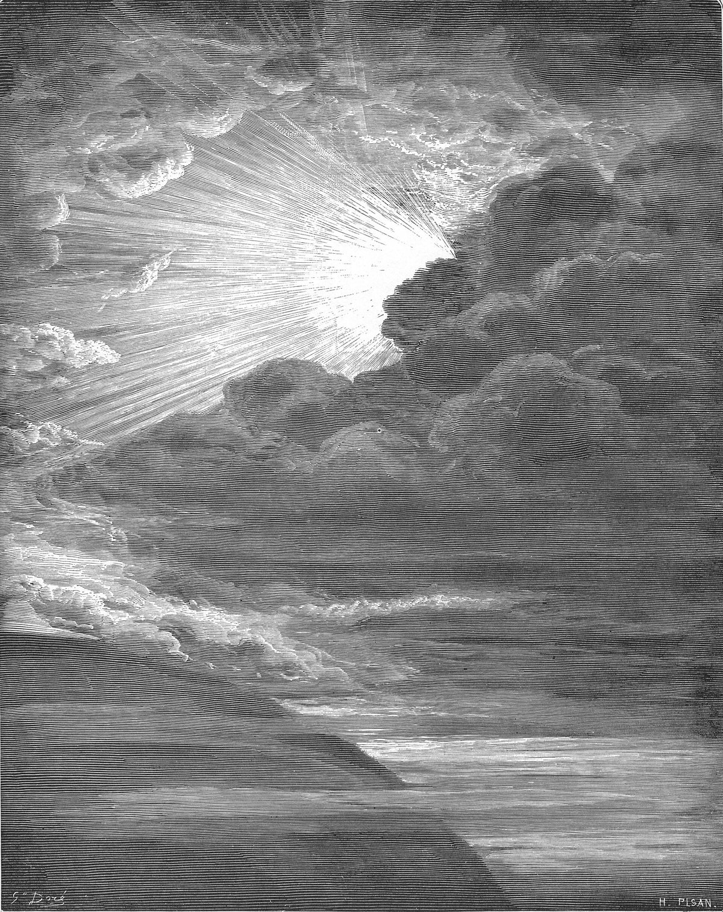

이 책은 이재선 목사가 1997년부터 2021년까지 동산교회·새창교회·새암교회 강단에서 창세기 1–24장을 본문으로 전한 설교 52편을 성경의 장 차례대로 엮은 것입니다.
설교마다 제목 밑에 본문 말씀을 개역한글판으로 실었습니다. 설교 원고는 고치지 않고 그대로 실었습니다.
각 부의 그림은 귀스타브 도레(Gustave Doré, 1832–1883)의 성경 판화이고, 장마다 넣은 수채화는 캔바 AI로 그렸습니다.

귀스타브 도레, 「빛의 창조」
제1부태초에 — 창조와 타락과 홍수
창세기1장
창세기강해(4)
본문 · 창세기 1:1-5
1태초에 하나님이 천지를 창조하시니라
2땅이 혼돈하고 공허하며 흑암이 깊음 위에 있고 하나님의 신은 수면에 운행하시니라
3하나님이 가라사대 빛이 있으라 하시매 빛이 있었고
4그 빛이 하나님의 보시기에 좋았더라 하나님이 빛과 어두움을 나누사
5빛을 낮이라 칭하시고 어두움을 밤이라 칭하시니라 저녁이 되며 아침이 되니 이는 첫째 날이니라
여러분 자녀를 왜 낳았나요? 고생만 시키는 자식을 왜 낳나요? 요즘 왜 적게 낳나요. 키우는데 힘이 드니까. 자식이 기쁨이 되어야 하는데 부담이 되면 안되죠. 그렇다면 아예 안나면 기쁨이 될까요? 그건 또 아닙니다. 하나님도 우리는 만드신 목적이 있습니다. 천지를 만드신 목적이 있습니다. 보기 좋게 만드시고 감상하시고, 사랑하시고, 관계를 맺으시고, 교제하시고, 함께 즐겁게 지내시려고, 우리가 자녀를 낳은 것과 똑 같습니다. 그런데 자식을 많이 안 낳는 것을 보면 좋기도 하지만 속도 많이 썩이고, 힘도 듭니다. 하나님도 마찬가지인 것 같습니다. 우리를 만드셨는데 죄를 짓고, 불순종해서 하나님을 많이 고생을 시키시네요. 무자식 상팔자라고 그러면 아예 없으면 좋을까요? 하나님도 그러실까요? 그렇다면 자식이 철들면 부모 생각하듯 우리도 하나님 생각하며 철든 사람이 됩시다. 그렇다면 어떻게 하는 것이 아버지 하나님을 기쁘게 해 드리는 것일까요?
하나님께서는 왜 천지를 창조하셨을까요?
이 물음은 "하나님은 왜 인간을 만드셨을까?"라는 물음과 비슷하기 때문에 바른 대답을 할 수 있는 것은 매우 중요하다. 성경을 보면 하나님께서는 천지를 창조하신 것을 기뻐하셨다고 했다. 그리고 단순히 물질인 우주만을 만드실 목적이 아니라 지구를 만드시고 그 가운데 많은 생물을 만드시며 그것들을 다스리게 하시려고 하나님의 성품(형상)을 닮은 사람을 만드셨다. 그리고 사람을 하나님과 사귀며 살도록 하셨다. 그렇기 때문에 사람은 하나님을 기쁘시게 하는 생활을 해야 한다.
인간이 하나님의 마음과 목적을 충분히 알 수 있다고 생각하는 것 자체가 주제넘은 일이다. "누가 주의 마음을 알았느뇨?"(로마서11:34) "지음을 받은 물건이 지은 자에게 어찌 나를 이같이 만들었느냐 말하겠느뇨?"(로마서9:20) 반면에 하나님에 의해 창조된 인간의 마음이 그와 같은 질문을 직관적으로 제기하고 있으며 이것은 하나님께서 그와 같은 생각들을 인간의 마음속에 깊이 심어 놓으셨다고도 볼 수 있을 것이다. 또한 인간의 근본적인 필요들 중의 하나가 생의 목적을 갖는 것, 즉 왜 자기가 이 세상에 태어났으며 자신의 삶이 도대체 무슨 의미를 지니고 있느냐를 아는 것이다.
위의 질문의 대답은 하나님의 계시인 말씀을 통해 숙고해보아야만 한다. 요한계시록4:11에는 우주만물을 창조하신 것이 하나님을 기쁘시게 해드렸다는 기록이 있다. 또한 이사야 45:18에는 "...땅을 창조하시고 견고케 하시되 헛되이 창조치 아니하시고 사람으로 거하게 지으신.."이라고 되어 있다. 즉 땅을 창조하신 목적은 사람으로 거하게 하는 것이었고 하나님의 형상으로 지음받은 인간이 하나님을 경외하며 창조된 자연을 다스리는 것이었음을 알 수 있다. 그러므로 우리는 물리적인 창조물인 우주와 생물이 인간을 섬기도록 창조되었다는 것을 알 수 있다.(창세기 1:26~28) 이사야43:7에 "내가 내 영광을 위하여 창조한 자를 오게하라. 그들을 내가 지었느니라"고 말씀하셨다.
따라서 인간의 주된 목적은 하나님을 영화롭게 하고 그분을 기쁘시게 하는 것, 그분을 경외하고 겸손히 섬기는 것이다. 그러나 인간이 타락함으로 하나님의 형상을 잃어버리게 되고 생령(창2:7)이 변하여 육체(창6:3)로 되었다. 이 육체를 가지고, 또한 영을 가지고 하나님을 섬기는 것이다. 예배하는 것이다. 하나님의 찬양하고, 드러내고, 감사하고, 전하는 것이다. 이 이상의 삶의 이유는 이 세상에 아무것도 없다.
인간은 누구나 이 세상과 자신의 삶을 긍정하고 살 수 있는 어떤 삶의 가치와 의미의 준거를 가져야 합니다. 요즈음 현대인들에게 가장 큰 문제는 먹고, 입는 것이 문제가 아니라 삶을 긍정할 수 있는 준거를 갖지 못하고 있는데 있습니다. 이러한 현상은 과학이 발달하면서 더 심각하게 나타나고 있습니다. 사람이 그러한 준거를 찾지 못할 때 무의미성과 권태에 빠지게 됩니다. 심리학자 융은 그에게 찾아오는 환자 가운데서 ⅓ 정도는 임상적으로 신경증 때문이 아니라 삶의 공허와 무의미 때문이라고 했습니다.
삶을 긍정할 수 있는 가치와 의미는 과학의 영역이 아니라 종교의 영역에 속한 것입니다. 그리고 이것은 논리적인 것이 아니라 체험적인 것입니다. 사람들은 그것들을 목말라 찾고 있지만 그렇게 잘 되지 않습니다.
기독교 신앙에서 신앙고백이 매우 중요시 됩니다. 초대 교회 때부터 신앙고백이 있어야 교회 회원이 될 수 있고, 세례를 받습니다. 기독교 신앙에서 신앙고백은 주문이 아닙니다. 그것을 외우면 구원 얻고, 복을 받는 것이 아닙니다. 기독교 신앙에서 신앙고백은 이제 나는 나의 생의 목적과 의미를 분명히 갖고 살 수 있는 생의 준거를 찾았다는 것입니다. 한 걸음 나아가서 이 세상의 궁극 목적이 무엇임을 분명히 알고 확신하고 있다는 뜻입니다.
기독교 신앙에서 '나는 고백한다'고 할 때에는 나는 세계관과 인생관을 분명히 정립했다는 의미가 됩니다. 다시 말씀드리면 나는 창조주가 누구인지 알며, 그 창조주와 이 세상 그리고 나와 어떤 관계인지를 안다는 뜻입니다.
사랑하는 성도 여러분 "태초에 하나님이 천지를 창조하셨다"는 이 대명제는 우리 모두 새로운 천년에 우리의 삶을 긍정할 수 있는 유일한 긍정의 준거입니다. 우리의 생을 긍정한다는 것은 하나님의 그 영광의 날에 참여해가고 있다는 것입니다. 그리고 창조주 하나님이 이 우주의 중심이요, 우리의 생의 중심이 된다는 뜻입니다. 하나님이 우리의 삶의 중심이 되지 않을 때 삶에서 직면하는 여러 가지 문제들 앞에서 자기 혼자 그 모든 것을 감당하여야 하기 때문에 많은 고통을 당하게 됩니다. 뿐만 아니라 하나님이 삶의 중심이 되지 못할 때 우리는 늘 실존적인 불안에서 벗어나지 못하게 됩니다. 늘 정신적 불안, 심리적 동요, 무의미성에 시달리며 살아가게 됩니다.
하나님이 우리의 삶의 중심이 될 때 우리는 생의 모든 고난과 역경, 무의미, 공허를 극복해 갈 수 있습니다. 오늘 동서양 모두에서 사람들이 직면해 가고 있는 가장 큰 위기는 하나님을 잊어버려가고 있다는 것, 그과 더불어 믿음을 상실해가고 있는 것입니다. 그 결과 사람들은 더욱더 공허, 무의미의 늪에서 허덕이게 되고, 반면 쾌락을 추구하게 되고, 포악해지거나 알코올, 마약의 노예가 되거나, 각종 정신질환으로 시달리는 사람들이 점점 늘어나고 있는 것입니다.
시편기자는 시9:10에서"여호와여 주의 이름을 아는 자는 주를 의지하오리니"라고 고백합니다. 우리가 첫째로 생각할 하나님의 이름은 "엘로힘"입니다. 엘로힘은 본래 "엘"(El) 혹은 "엘로아"(Eloah)의 복수형입니다. 엘이란 말의 뜻은 "강한 자' 혹은 '능력있는 자"라는 뜻입니다. 엘이란 단어는 히브리어 성경에 200회가 등장하고 복수형 엘로힘은 2,500회나 등장합니다. 창세기 1장에만도 31회나 등장하는 단어입니다. 창1;1에 "태초에 하나님이--"할 때에 하나님이 바로 엘로힘입니다.
롬1:20을 보십시오. "창세로부터 그의 보이지 아니하는 것들 곧 그의 능력과 신성이 그가 만드신 만물에 분명히 보여 알려졌나니--"라고 했습니다. 우리는 현대 과학의 발달을 말하고 있습니다만 과학은 아직도 하나님의 창조세계의 한 부분을 터치하고 있을 뿐 창조의 대부분의 영역은 여전히 신비로 남아 있습니다. 이런 창조의 신비를 알면 알수록 느끼면 느낄수록 우리는 창조의 주님께 엎드려 그분을 찬양하고 경배하지 않을 수 없습니다. 그래서 일찍 신학자 칼 바르트는 예배와 과학은 동일한 동기에서 시작된다고 말했습니다. 그것은 "창조세계의 신비에 대한 경외심"이라고 말했습니다. 그렇습니다. 그러므로 엘로힘 하나님께 그의 피조물인 인생이 드려야 할 최고의 반응이 있다면 바로 찬양과 경배인 것입니다. 계4:10-11에 모든 시대를 대표하는 24장로들이 천국의 보좌에 앉으신 하나님께 엎드려 경배하며 드리는 고백을 다시 묵상해 보십시오. "우리 주 하나님이여 영광과 존귀와 권능을 받으시는 것이 합당하오니 주께서 만물을 지으신지라"(계4:11) 왜 경배합니까? 그가 만물의 창조자이시기 때문입니다. 왜 찬양합니까? 그가 만물의 창조자 엘로힘이시기 때문입니다.
Ⅱ. 첫째날 1:3-5
1. 빛의 창조
빛은 모든 유기물의 기본이 된다. 빛으로 탄소 동화작용이 일어나서 식물 세계가 형성되고 식물을 먹는 초식 동물이 살 수 있게 되는 것이다.
우리는 모든 생명체를 형성시키는데 결정적인 역할을 하는 성령을 통해 빛이 창조되고 이 빛의 발산으로 생명이 처음으로 발산되었음을 본다.
여기 '빛이 있으라'고 말씀(명령)하신 것은 하나님께서 성막을 만들게 하시려고 '예물을 가져와 성막을 지으라'고 명령하신 것과 연관된다(출 25:1). 둘째 창조의 모형물을 만들라고 하실 때 창조적인 명령을 내리신 것이다.
빛이 자연 세계를 존재하게 하는 결정적인 요소라면 성막은 구원 사역의 전초 작업으로서 그 시초이기 때문이다. "빛이 있으라"는 명령은 예수께서 죽은 딸을 향해 "달리다굼"이라고 명령하던 것과도 일치한다(에드와드 뵐: 예수 시대 국민 성경). 생명이 없어진 상태에서 생명을 있게 한 것이니까 말이다. 자연 세계 생명의 시작은 빛이다.
"그 빛이 하나님의 보시기에 좋았더라"
이것은 단순히 좋다는 말이 아니다. Adrei Robert는 "그리고 하나님은 그것이 얼마나 좋은가를 보셨다."고 번역함. 혹은 "그것은 매우 좋았음을 보았다." 이것은 예술가가 하나의 작품을 완료하고 그것이 성공적임을 알고 그것은 좋다고 평가하는 것과 같다.
즉 이 말은 하나님이 창조하신 이 작품은 하나님의 눈에 좋았다는 말이다. 다른 표현으로, 하나님의 보시기에 좋은 점이 있었다. 하나님의 창조 사역이 끝날 때마다 좋다고 했는데 어느 만큼 좋았느냐 하면, "그 때에 새벽 별들이 함께 노래하며 하나님의 아들이 다 기쁘게 소리하였느니라"(롬 37:7)고 할 정도이다.
우리는 여기서 첫째날 창조 역사에 대한 기사를 보게 된다. 이 날의 역사를 다음 여섯 가지로 살펴볼 수 있다.
(1)하나님께서 볼 수 있도록 창조하신 모든 존재들 중 제일 첫 번째로 지으신 것은 빛이었다. 우리는 그 빛으로 말미암아 하나님의 창조의 작품들과 그 속에 나타난 그의 영광을 볼 수 있고 낮 동안에 우리의 일을 할 수가 있다. 빛은 무한히 아름다운 것으로 우주의 축복이다. 그러므로 새로운 창조에서도 영혼 속에서 발생하는 제일 첫 번째 것은 '빛'인 것이다. 복되신 성령께서도 지각에 빛을 비추심으로써 의지와 감정을 사로잡으신다. 죄로 말미암아 어두움이었던 자들이 은혜로 말미암아 세상의 빛이 된다.
(2) 빛은 하나님의 말씀의 능력으로 만들어졌다. 곧 그가 '빛이 있으라'고 말씀하셨다. 그가 빛을 원하셔서 명령하시자 즉시 빛이 생겼다. 하나님의 말씀은 신속하고 능력이 있다. 그리스도는 말씀이시되 본질적으로 영원하신 말씀이시다. 그로 말미암아 빛이 지어졌다. '그 안에 빛이 있었고 그는 세상의 빛이시며 참 빛이시기'(요1:9;9:5) 때문이다. 성화된 영혼 속에 비취는 신적인 빛은 하나님의 능력으로 말미암아 발생하는데 그 빛은 처음에 '하나님께서 어두운 데서 빛이 비취리라 하시던' 대로 예수 그리스도의 얼굴에 있는 하나님의 영광을 알도록 만든다(고후 4:6)
(3) 하나님께서는 원하신 빛이 생기자 그 빛을 만족히 여기셨다. 그 빛이 하나님 보시기에 좋았더라(4절). 빛이 좋다면 빛의 근원이 되시는 분은 얼마나 좋으시겠는가! 우리는 바로 그분으로부터 빛을 받는 것이다.
(4) 하나님께서 '빛과 어두움을 나누셨다. 그는 빛과 어두움을 시간으로 나누어 빛을 낮으로 어두움을 밤으로 정하시고 서로 끊임없이 규칙적으로 이어지도록 하셨다. 비록 어두움이 낮에는 빛 때문에 사라져 버릴지라도 그 나름대로 쓸모가 있어서 빛과 더불어 자기 차례와 위치를 차지한다. 아침빛이 낮의 일을 돕듯이 저녁 그늘은 밤의 휴식을 도우며 우리가 좀더 잠을 잘 잘 수 있도록 주위에 어둠의 커튼을 드리운다.
(5) 하나님은 빛과 어두움을 나누사 서로를 구별할 수 있도록 각각 이름을 붙여 주셨다. 빛을 낮이라 칭하시고 어두움을 밤이라 칭하시니라(5절). 하나님은 빛과 어두움의 주로서 그들에게 이름을 붙이셨다. 낮과 밤이 변함없이 연속적으로 이어지는 가운데서 하나님을 인정하고 매일 낮에는 그를 위하여 일하고 매일 밤에는 그 안에서 휴식을 취함으로써 낮과 밤을 그의 영광을 위해 드리자.
(6) 이것이 첫째날의 역사이며 그것은 좋은 날의 역사였다. 저녁이 되며 아침이 되니 이는 첫째날이니라(5절). 이 날은 세상의 첫날이었을 뿐만 아니라 한 주간의 첫날이기도 했다. 필자는 한 주간의 첫날인 이 날을 영광스러운 날로 생각한다. 왜냐하면 새로운 세계가 한 주간의 첫날에 시작된 것과 같이 세상의 빛 되신 그리스도께서도 한 주간의 첫날 아침 일찍이 부활하셨기 때문이다. 즉 하늘에서 내려온 여명이 그를 통하여 세상에 이른 것이다.
빛과 어두움을 나누심
"하나님 이 빛과 어두움을 나누사(가르다)...."
빛의 창조는 어두움을 제거하는 작업이 아니었다 또 어두운 물질을 순수한 빛으로 변형시키는 것도 아니었다. 그것은 밤낮을 구별시키게 하는 또 빛과 어두움을 섞바꾸게 하는 것을 고정시키고 결정하는 분리 Primany matter(첫 진료)로부터 빛을 구분해 내는 것이다. 여기 하나님이 나누셨다는 것은 그의 창조 사역 가운데 중요한 부분이다. 이 단어는 4-8절 사이에 서 그 파생어를 포함해서 두번 나온다.
우리가 주목해야 될 것은 하나님께서 세상을 창조하시되 빛이 우선적이 되도록 창조하셨다는 것, 하나님이 어두움을 창조하셨다고 말하지 않고 또 그것이 좋다고 말씀하지 않았다는 것, 빛이 우선적인 것은 빛이 구원을 표시하며 빛은 생명에 속해 있고 어두움은 죽음에 속해 있음을 나타냄, 또 나누시는(가르시는) 사역 역시 창조사역에 속한다는 것이다.
하나님은 만물을 말씀으로 창조하신 분입니다.
세상의 모든 기원은 하나님의 말씀입니다. 하나님의 말씀이 선포될 때 우주는 그 존재의 형식을 취하게 되었습니다. 히브리서 기자는 "믿음으로 모든 세계가 하나님의 말씀으로 지어진 줄을 우리가 아나니 보이는 것은 나타나는 것으로 말미암아 된 것이 아니니라"(히11:3)라고 했습니다. 우리의 말이 얼마나 중요한지를 가르쳐 줍니다. 하나님도 말씀으로 천지를 창조하셨듯이 우리 인생도 말로 되어지는 것입니다. 세상의 일들을 보십시오. 모든 것들이 다 말 부터 시작되는 것입니다. 비행기를 만들겠다. 우주선을 보내겠다. 우주 여행을 하겠다. 결혼을 하겠다. 대통령이 되겠다. 전구를 만들겠다. 자동차를 만들겠다. 모두 먼저 말부터 나오고, 그 다음에 그대로 된 것들입니다. 할렐루야! 말을 잘해야 합니다. 말대로 됩니다. 우리도 하나님을 닮아서 말한 대로 이루는 능력이 있습니다. 얼마나 감사하고 놀라운 일입니까?
결 론
1. 하나님이 나를 만드신 목적대로 살자.(찬양을 매일 드리자. 매일 감사를 하자. 매일 간증을 하자. 매일 기도하자.=하나님과 교제하는 것을 기뻐하시기 때문에)
2. 빛과 어두움을 나누셨듯이 구별된 삶을 살아야 합니다. 어두운 마음, 행동, 생각을 없애야 합니다. 미워하는 마음, 더러운 행동을 없애야 합니다. 미워하지 맙시다. 원수를 갚지 맙시다. 더러운 영상, 영화, 음악을 삼갑시다. 부정적 생각을 없애고 희망과 긍정의 마음을 갖자. 애들에게 항상 잘 되 것이라고 격려하자. 남편, 아내에게 격려의 말을 하자.
3. 말을 잘하자. 큰 꿈을 가지게 하자. 닉 부이치치 같은 사람도 엄청난 일들을 하는데, 하물며 우리 아이들이 무슨 일인들 못하겠습니까? 이왕이면 대통령, 장관, 세계적인 학자, 노벨상 수여자. 세계적인 목회자, 시대를 초월하여 영향력을 끼치는 예술가가 되기를 말해 주세요.
5빛을 낮이라 칭하시고 어두움을 밤이라 칭하시니라 저녁이 되며 아침이 되니 이는 첫째 날이니라
창세기에 나오는 빛, 그 의미는 참으로 놀랍습니다. 혹자는 빛은 태양에서 나오는데 어떻게 빛을 먼저 창조하고, 나중에 태양을 창조할 수 있느냐고 합니다. 이 문제는 오늘 영상을 통해 답을 얻어 봅니다. 그리고 그 빛의 의미까지 새겨봅니다. 너무나도 은혜롭습니다.
이 빛되신 하나님의 영, 성령님이 수면에 운행하시면서 혼돈을 질서로, 공허를 충만으로, 흑암을 밝음으로 만들어 주셨습니다. 이 의미 또한 놀랍습니다.
이 어려운 코로나 시기에 무엇으로 이 어려움을 이겨내고, 공포의 코로나 시대를 밝힐 수 있겠습니까? 오늘 창세기의 창조하시는 하나님에게서 우리는 발견할 수 있습니다.
1. 창조의 순서
1)천지를 창조하셨습니다.
창 1:1 태초에 하나님이 천지를 창조하시니라
창 1:1 <창조> 하나님께서 태초에 하늘과 땅을 창조하셨습니다.
먼저 천지를 창조하셨습니다. 그 창조는 하늘과 땅입니다. 처음 창조 때는 2절에 나오는대로 완전하지 않았습니다. 그냥 재료, 물질, 무질서, 널려져있는 상태 같습니다. 물론 하나님이 시작하셨습니다. 알파와 오메가 되신 주님이 다 창조하신 것입니다.
2)처음에는 혼돈, 공허, 흑암이었습니다
창 1:2 땅이 혼돈하고 공허하며 흑암이 깊음 위에 있고 하나님의 영은 수면 위에 운행하시니라
창 1:2 땅은 형태가 없고 비어 있었으며 어둠이 깊은 물 위에 있었고 하나님의 영은 수면 위에 움직이고 계셨습니다.
혼돈의 뜻
기본형 : WhTo
발음 : {to'-hoo} : 토후
어원(기원) : '황폐한 채로 있다'는 뜻의 사용하지 않는 어근에서 유래 '황폐'(지면의), 즉 '사막'; 상징적으로, '무가치한 것'; 부사 '헛되이':- 혼돈, 빈 장소, 형태가 없는, 무, 헛된 (것), 헛됨, 불모의 광야
1)무형, 혼란, 비현실, 공허, 무질서한 곳, 헛됨 공허의 뜻 기본형 : WhBo 발음 : {bo'-hoo} : 보후 어원(기원) : ('비어있다'는 의미의) 사용하지 않는 어근에서 유래 '공허', 즉 (피상적으로) 구별할 수 없는 '폐허':- 텅빈, 공허
1)공허, 공백상태, 황폐
흑암의 뜻
기본형 : &v,j
발음 : {kho-shek'} : 호쉐크
어원(기원) : 2821에서 유래
'어두움'; 따라서 (문자적으로) '흑암'; 상징적으로 '불행', '파멸', '죽음', '무지', '슬픔', '사악':- 어두운(흑암), 밤, 불분명
1)암흑, 모호함
최초로 창조하신 때는 완전하지 않았습니다. 모호라고, 공백상태이며, 사막같은 곳, 무질서, 혼란한 상태였습니다.
3)하나님의 영이 수면 위에 운행하셨습니다
창 1:2 땅이 혼돈하고 공허하며 흑암이 깊음 위에 있고 하나님의 영은 수면 위에 운행하시니라
창 1:2 땅은 형태가 없고 비어 있었으며 어둠이 깊은 물 위에 있었고 하나님의 영은 수면 위에 움직이고 계셨습니다.
성령님이 운행하시고 나서 빛이 창조되었습니다. 성령님, 하나님의 영이 없이는 빛이 있을 수 없습니다. 왜냐하면, 성령님이 빛이시기 때문입니다. 성령님이 생명이기 때문입니다. 그래서 성령충만, 빛 충만 없이는 어떤 생명도 창조될 수 없습니다. 혼돈, 공허, 흑암을 해결하는 방법은 오직 빛 되신 성령님의 역사입니다. 질병, 문제, 다툼, 고통은 오직 성령님이 해결하십니다. 우리가 성령충만하여 빛을 발산하면 가정에, 이웃에, 나라에 생명의 역사가 일어납니다.
★ 허무주의에서 해방 된 톨스토이
러시아의 작가 레오 톨스토이는 그가 40세가 되었을 때에 삶의 회의와 고뇌에 빠져서 몸부림을 쳤다. 그는 <나의 고백> 이라는 글에서 이렇게 말했다. <좋다 나는 지금 사마라 정부의 국채를 6천장 이나 가졌고 3백필의 말을 가지고 있다. 그것이 도대체 어쨌단 말인가? 자녀들은 좋은 학교에 보내서 공부를 시키는데 공부를 시켜서 무엇을 할 것인가? 모두들 나라의 번영을 말하고 있는데 그것은 나와 무슨 상관이 있는가? 내가 만일 푸시킨이나 세익스피어와 같은 작가나 혹은 세상에서 가장 유명한 작가가 된다고 한들 그것이 과연 무엇이란 말인가 톨스토이는 절망과 허무의 심연에서 빠져 나오기 위해서 갖가지 방법을 생각한 끝에 허무에서 탈퇴하는 네가지 방법을 생각해 보았다. 첫째는 아무 것도 모르고 살아가는 무지의 길이요. 둘째는 마음대로 살아가는 향락의 길이요. 세째는 권력을 가지고 살아가는 힘의 길이요. 네째는 용기를 꺾긴채 되는대로 밀려서 살아가는 유약의 길이라고 했다.
그렇지만 이러한 방식으로는 허무감과 무의미성을 극복 할 수 없고 궁극적으로 문제 해결하는 길은 하나님을 의지하는 신앙의 길이라고 하였습니다. 그는 신앙을 가리켜서 <인생의 의미에 관한 깨달음으로서 그것으로 말미암아 사람은 자신을 파멸하지 않고 용기있게 살아가는 길이다> 라고 말했습니다.
4)하나님이 빛을 창조하셨습니다
창 1:3 하나님이 이르시되 빛이 있으라 하시니 빛이 있었고
창 1:3 하나님께서 말씀하시기를 "빛이 있으라" 하시니 빛이 생겼습니다.
빛은 생명입니다. 빛은 모든 생명의 근원입니다. 빛은 치료제입니다. 관계의 회복입니다. 공허와 허무를 사랑과 행복으로 만들어 줍니다.
창 1:4 빛이 하나님이 보시기에 좋았더라 하나님이 빛과 어둠을 나누사
창 1:4 하나님께서 보시기에 그 빛이 좋았습니다. 하나님께서는 빛을 어둠과 나누셨습니다.
빛이 나타나니 보시기에 좋았더라고 합니다. 혼돈, 공허, 흑암일때는 모든 것이 무질서, 다툼, 충돌, 미움 등이 얽혀 있었는데 성령님에 의한 빛이 발산되니 너무너무 보기 좋았습니다.
★ 나를 찾아준자 없구나
세계에서 사회복지 제도가 제일 잘되는 나라는 저 북유럽의 스웨덴이나 덴마크 노르웨이라고 합니다.
요즈음 우리나라 학생들은 대학에 입학하기 위해서 애쓰고 있습니다.
그러한 나라에서는 학생들이 공부를 하지 않으려고 합니다. 왜냐하면 그 나라에서는 직업이 없는 사람에게는 나라에서 살림을 하도록 돈을 주고 병에 걸리면 병원에서 무료로 치료해 주기 때문에 하나도 걱정 할 것이 없기 때문이랍니다. 그러한 까닭에 구태여 대학에 갈 필요가 없다고 생각하고 공부를 계속하지 않으려 하는 것입니다. 그 사회에서 살고 있는 노인들은 호텔에 가서 여생을 보내기도 하는데 그토록 평안한 생활을 한 노인들이 수없이 자살을 하게 된다는 통계를 보았습니다.
어떤 외로운 노인이 마지막 숨을 거두면서 자기의 일기장에 무슨 말을 기록했는가 하면 <오늘도 나를 찾아주는 사람들이 아무도 없구나> 라고 한답니다.
5)빛과 어두움을 나누셨습니다
창 1:4 빛이 하나님이 보시기에 좋았더라 하나님이 빛과 어둠을 나누사
창 1:4 하나님께서 보시기에 그 빛이 좋았습니다. 하나님께서는 빛을 어둠과 나누셨습니다.
빛과 어두움을 나누셨습니다. 즉 어둠이 있는 곳에 빛을 비추니 어둠이 물러갔습니다. 성령충만하여 생명의 빛을 비추면 어둠의 질병의 그림자가 물러갑니다. 우리가 물러가게 해야 합니다. 우리가 기도하면 물러갑니다. 성령충만하여 믿음의 기도를 드려 어둠을 물리칩시다.
창 1:5 하나님이 빛을 낮이라 부르시고 어둠을 밤이라 부르시니라 저녁이 되고 아침이 되니 이는 첫째 날이니라
창 1:5 하나님께서 그 빛을 '낮'이라 부르시고 그 어둠을 '밤'이라 부르셨습니다. 저녁이 되고 아침이 되니 첫째 날이었습니다.
빛을 낮, 어둠을 밤이라 칭했습니다. 저녁이 되고, 즉 어둠으로 시작했다가, 낯이 되니, 즉 빛을 비춰 생명을 불어 넣으니 첫째날이 되었습니다. 시작이 된 것입니다. 아니 시작이 전부입니다. 빛이 비추니 나머지는 저절로 되는 것입니다.
결론
1. 어둠, 흑암, 공허, 혼돈 속에 있는 코로나의 고통을 성령충만의 빛으로 물리칩시다.
2. 내가 먼저 성령충만의 빛으로 충만하여 가족, 형제, 이웃의 어려움을 해결합시다.
3. 오늘 구체적인 대상, 문제를 놓고 기도하여 응답받읍시다.
창 1:1
태초에 하나님이 천지를 창조하시니라
창 1:1
<창조> 하나님께서 태초에 하늘과 땅을 창조하셨습니다.
창 1:2
땅이 혼돈하고 공허하며 흑암이 깊음 위에 있고 하나님의 영은 수면 위에 운행하시니라
창 1:2
땅은 형태가 없고 비어 있었으며 어둠이 깊은 물 위에 있었고 하나님의 영은 수면 위에 움직이고 계셨습니다.
창 1:3
하나님이 이르시되 빛이 있으라 하시니 빛이 있었고
창 1:3
하나님께서 말씀하시기를 "빛이 있으라" 하시니 빛이 생겼습니다.
창 1:4
빛이 하나님이 보시기에 좋았더라 하나님이 빛과 어둠을 나누사
창 1:4
하나님께서 보시기에 그 빛이 좋았습니다. 하나님께서는 빛을 어둠과 나누셨습니다.
창 1:5
하나님이 빛을 낮이라 부르시고 어둠을 밤이라 부르시니라 저녁이 되고 아침이 되니 이는 첫째 날이니라
창 1:5
하나님께서 그 빛을 '낮'이라 부르시고 그 어둠을 '밤'이라 부르셨습니다. 저녁이 되고 아침이 되니 첫째 날이었습니다.
11하나님이 가라사대 땅은 풀과 씨 맺는 채소와 각기 종류대로 씨 가진 열매 맺는 과목을 내라 하시매 그대로 되어
12땅이 풀과 각기 종류대로 씨 맺는 채소와 각기 종류대로 씨 가진 열매 맺는 나무를 내니 하나님의 보시기에 좋았더라
13저녁이 되며 아침이 되니 이는 세째 날이니라
뉴턴의 태양계 모형
아이작 뉴턴(Isaac Newton)이 처음으로 태양계의 모형을 만들었다. 태양을 가리키는 황금색 공을 중심으로 수성, 금성, 지구 등의 별들이 정확한 질서 아래 회전하도록 톱니바퀴에 벨트를 연결시켰다.
이 모형을 시운전하는 날 무신론자인 한 친구 과학자가 그에게 물었다. "정말 놀라운 연구야. 우주의 움직임까지 계산하는 그 지식을 어디서 배웠나?" 뉴턴은 시치미를 떼고 말했다. "이까짓 것 별 거 아니야. 우연히 만든 걸세. 어쩌다 보니 우연히 이 모형이 되었어."
무신론자는 이 농담 같은 대답을 듣고 깨닫게 되었다. 태양계의 모형 하나를 만드는 것도 천재 중의 천재만이 할 수 있는데, 어떻게 광대한 우주 전체를 운행하는 신비가 우연일 수 있겠는가.
제목: 한국 창조과학회
'80세계 복음화 대성회의 세미나를 계기로 해서 한국 창조 과학회가 창립되어 약 80명의 과학교수들이 기도와 성서연구와 강연과 진화론자들과 토론 제의, 조직확대, 국제유대, 정보 교환등의 활발한 활동을 전개하고 있어 내외의 비상한 관심을 모으고 있다.
캘리포니아주 상급사법재판소는 창조과학연구소장이 교육청을 상대로 낸 진화론을 강요하는 것이 미 헌법의 종교자유에 위반이므로 창조론을 배울 권리를 달라고 제소한데 대하여 진화론은 과학적으로 확정된 사실이 아니므로 하나의 이론으로만 가르쳐야 한다고 판결했다.
한편 일본 중학교 3학년 이과교과서에 1972년도 이전에는 16페이지나 진화론이 기술되었으나 81년도에는 단 한 페이지밖에 없다. 더욱 중요한 사건은 1980년10월16-11월9일까지 시카고 박물관에서 160명의 진화론자가 학술회의를 열었는데 종에서 종으로의 진화가 불가능하다는데 의견의 일치를 보았다. 이제 진화론은 최대의 위기를 맞이했으며 진화론은 진화론자의 손으로 그 가면이 벗겨진 셈이다. 한국이 창조론 교과서 일번 타자가 될 것이다.
하나님께서 둘째 날에 위의 물과 아래의 물로 나누고 그 가운데 공간을 궁창이라고 칭하셨습니다. 그리고 이 궁창을 하늘이라고 하셨습니다.
1. 대우주에 대한 인간의 지식
오늘날 과학적인 지식으로 이 대우주의 생성 과정을 설명한다는 것은 거의 불가능합니다. 천문학자나 지질학자, 물리학자, 또는 철학자들이 말하는 우주 생성에 대한 이론들은 하나의 학문적 이론일 뿐 그것이 진실이라고 보장할 길은 없습니다. 과학적 지식이 말하는 우주 공간을 성경은 궁창, 즉 하늘이라 하고 있는데 이 하늘 위에 '위의 물'의 세계가 있다는 것에 대하여 지금까지 인간의 지식은 아무것도 말한 적이 없습니다. 인간의 지식은 궁창(하늘)의 지극히 작은 한 부분인 태양계에 대하여 지극히 불완전하고 단편적인 사실들만 겨우 알고 있을 뿐입니다.
2. '하늘'에 대한 영적 의미
1) 하늘은 우리 인간들의 영적 방향을 제시합니다.
인간들은 정신적 또는 도덕적 우수성에 대하여 아주 자연스럽게 거의 본능적으로 다음과 같은 표현들을 하고 있습니다. '고귀한 가치', '고도의 판단력', '고상한 목적', '높은 견해', '숭고한 인격', '뛰어난 재질'등의 말이 그런 것들입니다. ① 생래적으로 인간은 상향적 특성을 가지고 있습니다. 이처럼 인간은 생래적으로, 본질적으로 위로 향해 성장하려는 특성을 가지고 있습니다. 이것은 오직 인간에게만 내려 주신 하나님의 특별하신 은총입니다. 인간은 하나님의 특별하신 은총입니다. 인간은 하나님의 형상으로 지음 받은 존재이기 때문에 본질적으로 하나님을 닮으려는 성향을 가지고 있습니다. 기독교적 건축의 상징인 뾰족한 높은 탑은 바로 이러한 인간의 성향을 반영한 것입니다. ② 어원적으로 인간은 높이 솟아오르려는 특성을 가지고 있습니다. 'Heaven'이란 말은 헬라어의 '우라노스'(하늘)와 같이 '높다'는 뜻입니다. 이 말의 어원은 앵글로 색슨 족의 'heo-fan'에서 온 것인데 그 뜻은 '들어올린다', '높여진다', '높여진 것' 즉 '하늘'(Heaven)이라는 뜻입니다. 이처럼 생명은 끊임없이 솟아오르고 발산하고 팽창하는 것입니다.
2) 하늘은 하나님의 완전성을 암시해 주고 있습니다. 하늘의 둥근 것은 하나님의 완전성, 영원성을 상징합니다. ① 하늘의 하나님의 무한성을 가르쳐 주고 있습니다. 둥근 하늘만큼 우리에게 멀고 광대하다는 생각을 갖게 하는 것은 없습니다. 우리가 아무리 높은 산에 올라갈지라도 하늘은 여전히 높고 별들은 그 위에서 빛나고 있습니다. 하늘의 끝이 어디인지를 모르는 것처럼 우리는 하나님의 무한하심에 대하여 아는 바가 없습니다. ② 하늘은 하나님이 최상의 권위자이심을 가르쳐 주고 있습니다. 하나님은 우주를 다스리고 계십니다. 그 우주는 인간이 마음대로 할 수 없는 영역입니다. 인간의 능력이 미치지 못하는 곳, 즉 하늘은 하나님의 권위를 상징하고 있습니다. 하나님은 하늘에 계시고 인간은 땅에서 살아가는 존재입니다. 이것은 운명적입니다. 인간이 하나님이 될 수 없다는 것은 이렇게 자명합니다. ③ 하늘은 하나님의 영적 숭고성을 가르쳐 주고 있습니다. 하늘에는 대기(공기)로 차 있습니다. 무한한 공간 속에 퍼져 있는 공기의 구조는 미묘합니다. 희박하기도 하고 풍부하기도 합니다. 대기는 투명하고 형체가 없습니다. 눈으로 볼 수 없고 손으로 만질 수 없습니다. 그것은 마치 영과 같습니다. 영이신 하나님은 존재하는 실체이십니다. 그분은 오직 신령과 진정으로 섬김을 받으셔야 할 영이십니다(참조, 요 4:24). ④ 하늘은 하나님의 순수성을 가르쳐 주고 있습니다. 코발트 빛깔의 파란 하늘은 지순한 하나님의 마음을 우리에게 드러내 보여 주는 것만 같습니다. 광대무변한 우주 공간은 지금까지 아무도 밟아 보지 못한 순수성을 간직하고 있습니다. 오직 천사의 날개 이외에는 어느 것도 지나간 적이 없는 티 없음을 지니고 있습니다. 하나님은 빛이시므로 어둠이 가까이 할 수가 없습니다(참조, 요 3:20). 하나님은 의로우시므로 악한 것과 더러운 것이 함께 할 수 가 없습니다. 그러므로 마음이 청결한 자만이 하나님을 볼 수가 있습니다(참조, 마 5:8). ⑤ 하늘은 하나님이 축복과 영광이 근원이심을 가르쳐 주고 있습니다. 모든 좋은 것이 하늘로부터 옵니다. 따뜻한 햇볕이, 맑고 투명한 공기가 그리고 그 가운데 존재하는 만물이 다 하늘로 인하여 우리에게 주어지고 있습니다. 이 모든 것들로부터 모든 피조물들은 생명의 풍성함과 아름다움과 기쁨을 얻고 있습니다. 그것은 무엇으로도 보상할 수 없는 축복입니다. 이러한 축복이 아무런 대가도 없이 무상으로 주어지고 있는 것입니다. 그러므로 그것은 은혜입니다. 축복입니다. 모세의 율법도, 선지자의 예언도, 솔로몬의 영광도 다 하나님께로부터 왔습니다. 만물이 하나님께로부터 나오고, 하나님으로 말미암으며, 하나님께로 돌아갑니다. 이 모든 영광이 하나님께 세세토록 있습니다(참조, 롬 11:36).
주정뱅이였던 한 사람이 예수를 믿고 신앙 간증을 하는 것을 듣고 자칭 무신론자가 말했다. "하나님을 믿고 새롭게 산다고. 그것은 꾸며낸 이야기이며, 꿈같은 이야기일 뿐이야." 이렇게 말하며 무신론자가 옆을 바라보았는데 천진난만한 어린아이의 두 눈과 마주쳤다. 어린아이는 부끄러운 듯 이렇게 소리쳤다. "만약 저분이 꿈을 꾸는 것이라면 그 꿈을 깨지 않도록 해주세요. 저분은 예수님을 만나고 나서 아주 좋은 분이 되셨어요. 저분은 우리 아빠거든요." 무신론자는 슬그머니 일어나 그 자리를 피하고 말았다.
식물은 우리에게 다양한 모양과 색깔로 아름다움에 대한 감각을 일깨워 줍니다. 또한 아름다운 꽃은 인간의 마음에 맑고 신선한 정서 생활을 함양케 하며, 길가의 한 포기 잡초를 바라보면서 잠시 후 메말라 시들어 버릴 인생의 한 단면을 보게 됩니다. 이러한 식물들은 분명히 나름대로의 맡은 직분이 있습니다. 그리고 그들은 각양의 종류대로 집단을 이루어 나름대로 공동의 생명체를 이루고 있습니다. 모든 식물은 하는 일도 다양하지만, 무엇보다도 식물은 그들의 구성 요소와 기능을 통하여 하나님의 오묘하심을 증거하는 증인입니다.
1. 뿌리
모든 피조물들은 그 자체에 부여된 독특한 목적이 있습니다. 이처럼 식물에게도 하나님의 창조하신 목적이 있습니다. 뿌리와 줄기 그리고 잎사귀의 각 부분 부분이 각기 다른 기능을 가지고 있습니다. 그중에 뿌리는 두 가지의 독특하고도 중요한 사명이 있는데, 첫째는 식물의 몸체를 땅에 고착시켜서 눈이오나 바람이 불어도 넘어지지 않도록 유지시켜 주는 역할이고, 둘째는 땅에서 좋은 영양분을 취해서 식물로 하여금 건강하고 튼튼하게 자라도록 합니다. 이와 같이 우리도 그리스도라는 반석에 신앙의 뿌리를 튼튼히 내려야 하며, 또한 그리스도의 은혜에 샘에 깊이 내려 은혜 속에서 성장할 때 우리의 신앙이 유혹과 시련에 능히 견디어 굳건히 설 수 있습니다(참조, 시 1편).
2. 잎
씨를 뿌려 놓고 식물이 자라는 과정을 주의 깊게 관찰해 보면 차츰차츰 변하여 아주 작은 잎사귀가 햇볕을 받고 비를 맞으면서 새로운 환경에 적응하며 성장하는 것을 볼 수 있습니다. 성장과 함께 무성하게 우거진 잎은 공기를 빨아들이고 수분을 발산하며, 또한 탄산 동화 작용으로 공기를 정화하여 알맞은 습도의 상쾌한 공기를 제공하여 사람들에게 절대 필요한 쾌적한 환경을 형성하여 줍니다. 뿐만 아니라 스스로 생성시키는 엽록소는 식물 자체의 싱그러움과 싱싱함을 간직하게 합니다. 이처럼 예수 그리스도는 영적인 양식을 우리에게 제공하시는 분이시며, 그 양분을 통하여 우리는 신앙으로서 싱싱하게 잘 자랄 수 있습니다.
3. 꽃
꽃은 식물의 구성 요소 가운데 아름다움의 극치입니다. 그들의 아름다운 자태와 조화를 이룬 색상 그리고 그윽한 향내는 인간의 즐거움을 위해서 하나님께서 계획하셨습니다. 왜냐하면 지상에서 지고한 아름다움을 감상할 수 있는 존재는 인간뿐이기 때문입니다. 또한 꽃은 그들의 번식을 위해서 인간의 지능으로는 도저히 이해할 수 없는 기능과 특성을 갖고 있습니다. 어떤 꽃은 아무리 약한 접촉이라도 위험을 느끼면 곧 봉오리를 오므립니다. 튤립은 맑게 갠 날씨에만 꽃을 피우고 비가 오거나 날씨가 흐리면 봉오리를 오므립니다. 완두콩은 항상 바람과 반대쪽으로 자랍니다. 또 신드리발이라는 꽃은 오후 4시에 피고 새벽 4시에 져서 사람들에게 시간을 가르쳐 줄 만큼 정확하고 기계적입니다. 이외에도 수없이 많은 꽃이 오묘하신 하나님의 능력을 통하여 신비하게 피었다 집니다. 꽃은 인간이 이해할 수 없는 그런 작용과 미적인 자태를 통해서 하나님에게 영광을 돌립니다.
4. 씨앗
1) 씨 덮개와 씨 받침은 식물이 자라서 눈을 틔우고 씨앗들이 자라는 동안 안전하게 보호하는 부분입니다.
어떤 씨앗은 단단한 껍질로 둘러싸여 안전하게 보존되어 있으며, 어떤 씨앗은 솜과 같은 털로, 혹은 부드러운 껍질로 싸여 있습니다. 또 어떤 씨앗은 날카로운 가시로 보호하거나, 열매의 한가운데 묻혀 있습니다. 이처럼 씨앗들의 조직은 전능하신 하나님의 능력을 나타내고 있으며, 그 전능하신 능력과 사랑으로 성도들을 보호하신다는 사실은 은유적으로 가르쳐 줍니다.
2) 식물은 자체 내에서 번식을 위하여 준비합니다.
어떤 씨방은 익은 후, 바람을 따라 먼 곳까지 날아가서 씨앗을 분산합니다. 도깨비바늘 같은 씨앗은 조그마한 갈퀴로 지나가는 사람이나 동물에게 달라붙어 넓게 흩어집니다. 땅에 떨어진 씨앗은 영도 이하나 물이 펄펄 끊을 정도의 온도, 즉 너무 높거나 너무 낮은 온도에서는 씨앗이 뿌리를 내릴 수가 없습니다. 적당한 온도와 습도, 그늘, 수분 등이 골고루 갖추어져야 합니다. 오묘하신 하나님, 그분께서 만드신 한 알의 씨앗 속에서 우리는 하나님의 놀랄 만한 지혜와 섭리를 발견할 수 있습니다. 소멸되거나 변하지 않고 이처럼 하나님의 오묘하신 섭리를 발견할 수 있습니다. 소멸되거나 변하지 않고 이처럼 하나님의 오묘하신 섭리는 자연의 피조물 한 지체 지체에 이르기까지 오묘하신 신비롭게 작용하고 있습니다. 식물의 뿌리와 잎과 꽃 그리고 씨앗은 그들 각각의 독특한 특성을 가지고 있으며, 수 천 년 흐르는 세월 동안에 소멸되거나 변하지 않고 면면히 그 기능을 유지하여 왔습니다.
우리에게도 이와 같이 하나님께서 의도하신바 변함없는 독특한 특성을 부여받고 있습니다. 그러므로 그리스도라는 반석에 그리고 그분의 은혜의 샘에 신앙의 뿌리를 깊이 뻗어 내려 우리의 삶 속에 그리스도인다운 삶의 모습을 나타내야 합니다.
제목: 6일째
성서에 의하면 세계는 1일, 2일, 3일... 하는 순서에 따라 만들어져, 6일째에 완성되었다. 사람은 그 마지막 6일째 만들어졌다. 왜 인간은 마지막에 만들어졌을까? 그것을 당신은 어떻게 해석하십니까?
탈무드에 의하면, 파리 한 마리도 인간보다 먼저 만들어진 것을 알게 되면 인간은 그다지 교만해지지 않을 것이라 했다. 사람들에게 자연에 대한 겸허를 가르치기 위한 것이다.
결 론
1. 창조주 앞에 겸손하자. 사람 앞에, 자연 앞에 겸손하자.
2. 자연을 아름답게 가꾸고, 보존하자. 일회용 안쓰기, 세재 안쓰기, 환경 보존하기 등등
3. 자연 앞에 감사하자. 하나님께 늘 감사하자. 햇빛, 비, 농작물 등등, 추수감사주일에 과일 장식 정말 감사하는 마음으로 하자. 아름답고 소중한 것으로, 잘 된 것으로, 손수 만든 것이면 더욱 좋다. 그리고 하나님을 찬양하자. 그리고 그리스도의 사랑으로 나누자.
24하나님이 가라사대 땅은 생물을 그 종류대로 내되 육축과 기는 것과 땅의 짐승을 종류대로 내라 하시고 (그대로 되니라)
25하나님이 땅의 짐승을 그 종류대로, 육축을 그 종류대로, 땅에 기는 모든 것을 그 종류대로 만드시니 하나님의 보시기에 좋았더라
26하나님이 가라사대 우리의 형상을 따라 우리의 모양대로 우리가 사람을 만들고 그로 바다의 고기와 공중의 새와 육축과 온 땅과 땅에 기는 모든 것을 다스리게 하자 하시고
27하나님이 자기 형상 곧 하나님의 형상대로 사람을 창조하시되 남자와 여자를 창조하시고
28하나님이 그들에게 복을 주시며 그들에게 이르시되 생육하고 번성하여 땅에 충만하라, 땅을 정복하라, 바다의 고기와 공중의 새와 땅에 움직이는 모든 생물을 다스리라 하시니라
29하나님이 가라사대 내가 온 지면의 씨 맺는 모든 채소와 씨 가진 열매 맺는 모든 나무를 너희에게 주노니 너희 식물이 되리라
30또 땅의 모든 짐승과 공중의 모든 새와 생명이 있어 땅에 기는 모든 것에게는 내가 모든 푸른 풀을 식물로 주노라 하시니 그대로 되니라
31하나님이 그 지으신 모든 것을 보시니 보시기에 심히 좋았더라 저녁이 되며 아침이 되니 이는 여섯째 날이니라
아버지는 어느 동물원에서 오셨어요
어떤 진화론자가 아들에게 "사람은 본래 원숭이가 점점 진화되어 사람이 된 것이란다."라고 말해 주었다. 그러면서 덧붙여 사람의 꽁무니를 만져 보면 꽁지 달렸던 자리가 분명히 있다고 했다. 이 말에 아들은 심각하게 물었다.
"아버지, 원숭이가 진화되어서 사람이 되었으면 아버지는 본래 어느 동물원에서 오셨어요?"
마지막 창조의 날입니다.
1. 1974년과 2008년을 비교할 때, 평균 가구 쓰레기 양이 50% 증가했습니다. 미국에서 생산된 음식물의 40%가 쓰레기로 버려지고 있습니다. 미국에서 버려지는 음식물의 양이면 지구 전체의 기아 문제를 해결할 수 있습니다.
2. 지구의 허파 역할을 하며 수 많은 동물의 서식지가 되어 온 '열대 우림'(rainforest) 지대가 급속하게 파괴되고 있습니다. 매 초당 1.5 에이커 만큼의 면적이 사라지고 있다니, 두려운 일이 아닐 수 없습니다.
3. 공기 오염, 지하수 오염, 토양 오염이 심각합니다. 지구의 70%가 물로 되어 있지만, 이 중에서 음료수로 사용하기에 적당한 물은 1%밖에 되지 않는데, 그나마도 급속도록 오염되고 있습니다. 앞으로 물 전쟁과 식량 전쟁이 일어날 가능성이 큽니다.
4. 오존층(Ozone Layer)이 파괴되어 지구 생명들이 자외선(ultra violet rays)에 지나치게 노출되고 있습니다. 지나친 자외선은 피부암을 유발시키고, 물 속에 있는 플랑크톤(plankton)을 죽게 만듭니다. 이산화탄소 연료 사용 절제하기, 차도 전기차로, 매연 줄이기 위해 경유차를 휘발유차로...
5. 지구 온난화로 인해서 멸종되는 생물들이 늘어나고 있습니다. World Conservation Union은 멸종 위기에 있는 동물과 식물을 조사하여 소위 Red List 즉 '적색 표'라는 것을 만들었는데, 그 '적색 표'에 의하면 2008년에 16,118가지의 동식물이 멸종 위기를 맞고 있습니다.
6. 핵무기에 대해 연구하는 사람들이 만든 '지구 종말 시계'(doomsday clock)라는 것이 있습니다. 이것은 핵전쟁으로 인해 지구가 멸망될 가능성이 높아질수록 자정에 가까와지도록 되어 있습니다. 지금 핵 전문가들은 자정 6분 전에 시계를 맞추어 두고 있습니다.
1. 땅의 동물의 창조
창 1:24 하나님이 가라사대 땅은 생물을 그 종류대로 내되 육축과 기는 것과 땅의 짐승을 종류대로 내라 하시고 (그대로 되니라)
창 1:25 하나님이 땅의 짐승을 그 종류대로, 육축을 그 종류대로, 땅에 기는 모든 것을 그 종류대로 만드시니 하나님의 보시기에 좋았더라
2. 사람의 창조
창 1:26 하나님이 가라사대 우리의 형상을 따라 우리의 모양대로 우리가 사람을 만들고 그로 바다의 고기와 공중의 새와 육축과 온 땅과 땅에 기는 모든 것을 다스리게 하자 하시고
창 1:27 하나님이 자기 형상 곧 하나님의 형상대로 사람을 창조하시되 남자와 여자를 창조하시고
창 1:28 하나님이 그들에게 복을 주시며 그들에게 이르시되 생육하고 번성하여 땅에 충만하라, 땅을 정복하라, 바다의 고기와 공중의 새와 땅에 움직이는 모든 생물을 다스리라 하시니라
3. 잘 다스리면 공급해 주시는 하나님
창 1:29 하나님이 가라사대 내가 온 지면의 씨 맺는 모든 채소와 씨 가진 열매 맺는 모든 나무를 너희에게 주노니 너희 식물이 되리라
창 1:30 또 땅의 모든 짐승과 공중의 모든 새와 생명이 있어 땅에 기는 모든 것에게는 내가 모든 푸른 풀을 식물로 주노라 하시니 그대로 되니라
창 1:31 하나님이 그 지으신 모든 것을 보시니 보시기에 심히 좋았더라 저녁이 되며 아침이 되니 이는 여섯째 날이니라
Ⅶ. 여섯째날의 첫 번째 부분 1:24,25
여기서 우리는 여섯째날 역사의 첫 번째 부분을 대하게 되는데 이날에 땅의 짐승들, 곧 육축과 땅에 속하여 기는 것들이 지어졌다. 앞에서와 같이 이번에도 주께서 말씀을 하셨다. 즉 하나님이 가라사대 '땅은…내라'고 하셨다. 또한 주께서 일하셨다. 하나님께서 이 모든 것들을 각기 종류대로 만드시되 여러 가지 모양뿐만 아니라 여러 특성들, 습관, 음식물, 생활 양식 등을 따라 만드셨다. 그래서 어떤 것들은 풀과 채소를 먹고 사는가 하면 어떤 것들은 고기를 먹고 살고, 어떤 것들은 대담한가 하면 어떤 것들은 겁이 많고 또 어떤 것들은 말처럼 사람을 돕지만 먹이로는 쓰이지 않는데 반하여 어떤 것들은 양처럼 사람을 돕지는 않지만 먹이로 쓰인다. 그런가 하면 소처럼 두 가지에 다 쓰이는 것들이 있고 또한 들짐승처럼 아무데도 쓰이지 않는 것들이 있다.
Ⅷ. 여섯째날의 두 번째 부분 1:26-28
하나님의 형상은 무엇인가?
사람들은 하나님의 형상이 땅에 드러난 것이다.
보이지 않는 영이신 하나님이 모방할 수 있는 육체를 가지셨다고 볼 수는 없다. 그러나 하나님께서는 인간의 몸과 영혼을 포함한 전인격을 여러 측면에서 당신을 닮게 만드셨다.
지능과, 법을 준수하는 것과, 하나님과 인간들 서로 서로가 관계를 맺으며 사는 것 등에서 말이다. 하나님의 형상을 따라 지음받았다는 것은 모든 인간이 존엄하고 귀하다는 것을 말해준다. 하나님의 형상을 죽여서는 안되며(9:6), 저주해서도 안된다(약3:9-10). 이외에도 성경은 하나님의 형상에 대해서 의와 거룩,(엡4:24) 지식(골3:10)을 말한다.
여섯째날의 두 번째 부분의 역사는 곧 사람의 창조이다.
(1) 사람은 모든 피조물들 중 가장 나중에 창조되었다. 이것은 세상을 창조하는 일에 사람이 하나님을 도왔을지도 모른다는 생각을 조금이라도 갖지 못하게 하기 위함이다. 그럼에도 불구하고 사람이 맨 마지막에 창조되었다는 사실은 사람에게 영광과 은총이 아닐 수 없었다. 왜 영광이 되는가? 창조의 방법이 덜 완전한 것에서부터 보다 더 완전한 것으로 발전하였기 때문이다. 왜 은총이 되는가? 사람이 거할 저택이 그를 받아들일 수 있도록 완전히 준비되고 꾸며진 이후에야 비로소 그가 창조되었기 때문이다. 사람은 창조 받은 즉시 눈에 보이는 모든 피조물들을 소유하여, 그것들을 관찰하며 즐거움을 얻을 수 있게 되었다.
(2) 사람의 창조는 다른 피조물들의 창조에서 보다 신적인 지혜와 능력이 더욱 두드러지게 그리고 직접적으로 드러난 행위였다. 이제까지는 빛이 있으라, 궁창이 있으라, 땅이나 물은 이러저러한 것을 내라는 식의 말씀만 있었다. 그러나 이제는 명령의 말씀이 의논의 말씀으로 바뀌었다. "우리가 다른 피조물을 지은 것은 사람을 위함이었다. 이제 우리가 사람을 만들자. 이 일은 우리가 우리의 손으로 직접 해야 할 일이다." 이전에는 하나님께서 권위를 가진 자로서 말씀하고 계시다. 아마도 그는 이렇게 말씀하셨을 것이다. "드디어 준비 작업을 마쳤으니 이제 본격적으로 일을 시작하자. 자, 사람을 만들자." 사람은 이제까지 만들어진 모든 것과는 다른 피조물이 되어야 했다. 육체와 영혼이, 하늘과 땅이 그 안에서 합쳐져야 했다. 그는 두 세계에 다 연결되어야 했다. 그래서 하나님은 친히 사람을 짓는 일에 착수하실 뿐만 아니라 마치 그 일을 협의하기 위해 회의를 소집하는 것처럼 자신을 표현하기를 기뻐하셨다. '우리가 사람을 만들자.' 성부, 성자, 성령의 삼위 하나님이 그 일에 관해 의논하고 의견의 일치를 보았다. 그러므로 '우리가 사람을 만들자'고 말씀하신 분께서 또한 사람을 다스리도록 해야 한다.
(3) 사람은 하나님의 형상과 하나님의 모양을 따라 지어졌다. 이 두 단어는 같은 뜻을 의미하며 서로가 그 뜻을 더욱더 잘 나타나게 만든다. '형상'과 '모양'이란 말은 가장 닮은 상태를 의미한다. 그럴지라도 여전히 하나님과 사람 사이에는 무한한 거리가 있다. 오직 그리스도만이 하나님과 같은 속성을 지닌 하나님의 아들로서 하나님의 형상을 나타내시는 분이시다. 사람에게 입혀진 것은 하나님의 영광의 일부분에 불과하다. 그래서 사람이 하나님의 형상이라도 거울 속에 비친 그림자나 동전에 새겨진 왕의 초상화 정도에 지나지 않는 형상이다. 사람에게 입혀진 하나님의 형상은 다음 세 가지 점에서 볼 수 있다.
1)사람의 신체가 아닌 영혼의 특성과 구조에서 볼 수 있다(왜냐하면 하나님에게는 몸이 없으시기 때문이다). 하나님께서는 사람의 몸에도 이같은 명예를 주셨는데 그것은 곧 말씀이 육신이 되셨다는 사실이다. 하나님의 아들이 우리와 같은 몸을 입으셨고 그가 또한 머지 않아 자신의 것과 같은 영광을 우리 몸에 입히실 것이다. 그러나 특별히 하나님의 형상을 지닌 것은 사람의 위대한 영혼이다. 사람의 영혼에게 있는 세 가지 귀중한 능력, 곧 이해력, 의지, 활동력을 생각해 볼 때 사람의 영혼이라 본질상 그것을 통하여 하나님을 볼 수 있는 가장 밝고도 맑은 거울과 같은 것이다.
2)사람의 위치와 권위에서 볼 수 있다. 우리의 형상을 따라…우리가 사람을 만들고 그로…다스리게 하자. 사람이 자기보다 열등한 피조물들을 다스리는 지배권을 받았기 때문에 그는 이를테면 땅에서 하나님의 대리인이나 총독이 되는 셈이다. 그러나 사람에게서 나타나는 하나님의 형상은 그가 다스린다는 사실에서보다는 자유 의지로써 자신을 지배한다는 사실에서 더욱 두드러지게 나타난다.
3)사람의 순결과 정직에서 볼 수 있다. 사람에게 입혀진 하나님의 형상은 지식과 의와 참된 거룩함에 있다(엡 4:24;골3:10).
(4) 사람은 남자와 여자로 지어졌고 생육하고 번성하라는 축복을 받았다. 하나님께서는 '우리가 사람을 만들자'고 말씀하셨다. 그리고 곧 이어서 '하나님이 사람을 창조하셨다'는 말이 뒤따른다. 하나님께서 결심하신 바를 곧 실천하신 것이다. 우리에게 있어서는 말하는 것과 행하는 것이 서로 다르나 하나님께 있어서는 그렇지 않다. 다른 피조물들의 경우, 하나님께서는 한 종류 당 한 쌍씩이 아니라 여러 쌍을 지으셨던 것 같다(20-22절). 그러나 사람에 대해서 만큼은 오직 한 쌍만을 만드시지 않으셨던가? 그리스도는 여기에서 이혼을 반대하는 논증을 끌어 내신다(마 19:4,5). 우리의 첫 조상 아담은 한 아내로 제한을 받았다. 만일 그가 그녀를 버렸다면 그에게는 달리 결혼할 사람이 없었다. 이 사실은 결혼의 계약이 마음대로 취소되어서는 안 된다는 것을 명백히 나타내고 있다. 하나님은 한 남자와 한 여자를 지으셨다. 이것은 모든 민족들이 자기들이 한 혈통이며 한 줄기로부터 나온 자손들이라는 것을 알고 이로써 서로 사랑하게 하기 위함이었다. 하나님은 사람에게 다음의 두 가지를 주셨다.
1)광대한 유산 : 땅에 충만하라. 사람의 자녀들에게 부여된 것이 바로 이것이다. 이들은 '온 땅에 거하도록'(행 17:26)지어졌다. 이 땅은 하나님께서 사람으로 하여금 보다 나은 상태를 준비하는 수습생으로서 거하게 하고자 정하신 장소이다.
2)이 유산을 누리며 계속해서 존속할 수많은 가정.
(5) 하나님은 사람을 지으시고 나서 그에게 자기보다 열등한 피조물들을 다스리는 지배권을 주셨다. 바다의 고기와 공중의 새와…모든 생물을 다스리라. 비록 사람이 이들 중 어느 것도 부양하지는 않을지라도 그들을 다스리는 권세를 받았다. 하나님은 이렇게 하여 사람에게 영예를 주시고자 하셨다. 그러므로 하나님의 섭리에 의해 사람들은 이들 피조물로부터 그들 생명의 안전을 유지하고 또한 그것들에서 음식을 얻게 되었다.
Ⅸ. 여섯째날의 세 번째 부분 1:29, 30
여섯째날 역사의 세 번째 부분은 하나님께서 은혜로 모든 육체를 위하여 양식을 마련하신 기사이다(시 136:25).
1. 사람을 위하여 마련된 양식(29)
채소와 열매가 그의 음식이 되었다. 여기서 다음의 세 가지 점을 생각해 보자.
(1) 우리를 겸손하게 만드는 점 : 우리가 흙에서 나왔듯이 또한 우리는 흙으로부터 부양받는다. 그러나 우리에게 필요한 또 하나의 양식인 영생에 이르게 하는 양식은 주께서만 우리에게 주실 수 있다.
(2) 우리가 감사하게 만드는 점 : 주께서 우리의 몸을 위하신다. 우리는 그에게서 우리의 생명을 지탱하고 편안케 하는 모든 것을 받는다. 하나님은 우리에게 풍성히 누릴 수 있도록 모든 것을 주시는데 필요를 채우기 위해서뿐만 아니라 또한 윤택한 생활과 즐거움을 위해서 갖가지 맛있는 것들을 풍성히 주신다.
(3) 우리가 우리 분깃에 순응하여 만족하게 만드는 점 : 하나님께서 우리의 생명을 위해 식물을 주셨다면 불평하는 이스라엘 백성처럼 우리의 탐욕을 위해 식물을 구하지 않도록 하자(참조, 시 78:18;단 1:15).
2. 짐승들을 위하여 마련된 양식(30)
하나님께서는 소를 위하여서도 염려하시는가? 확실히 그렇다. 그는 짐승들에게도 먹기 좋은 식물을 마련해 주신다. 그러므로 황소뿐만 아니라 젊은 사자들도 그에게서 음식을 공급받으며 어떤 까마귀들도 그의 섭리의 보호를 받는다. 그는 위대한 주부이시며 살아 있는 모든 피조물의 욕구를 충족시키는 부유하고 후한 분이시다.
Ⅹ. 전 창조 역사의 결론 1:31
1. 하나님의 자기 역사에 대한 평가
하나님이 그 지으신 모든 것을 보셨다. 그의 손으로 만드신 모든 작품이 한눈에 들어왔다. 전능에는 반드시 전지가 따른다. 그러나 이것은 자신의 지혜와 능력의 산물들에 대한 영원하신 지성의 엄숙한 반성이었다. 하나님은 이렇게 하여 우리에게 자신의 일을 반성하는 모범을 보이셨다. 우리가 하루의 일을 마치고 잠자리에 들게 되었을 때 우리는 낮 동안에 행했던 일들을 곰곰이 생각해 보아야 한다.
2. 하나님의 자기 역사에 대한 만족
하나님은 모든 것이 선하게 이루어지기 전까지는 그것이 보시기에 좋다고 말씀하시지 않으셨다. 이것은 우리가 어떤 문제를 듣기도 전에 대답하지 않도록 가르치시기 위함이다.
(1) 하나님이 보시기에 그 지으신 모든 것이 좋았다. 첫째, 그 모든 것이 창조주께서 마음에 원하신 그대로 꼭 들어맞았기 때문에 좋았다. 둘째, 그 모든 것이 창조의 목적에 합당하며 그 계획된 것이 보이는 피조 세계를 다스리는 자로 하나님께서 임명하신 사람에게 쓸모 있기 때문에 좋았다. 넷째, 그 모든 것이 하나님의 영광을 위한 것이기 때문에 좋았다.
(2) 그 지으신 모든 것이 심히 좋았다. 한 날 한 날의 역사(둘째날 역사를 제외하고는)가 보시기에 좋았다고 되어 있다. 그러나 이제는 그 모든 것이 심히 좋았다. 그 이유로는 다음 두 가지가 있다. 첫째, 인간을 창조하셨기 때문이다. 인간의 창조는 하나님의 창조의 모든 과정들 중에서 가장 중요한 부분이었다. 그것은 인간이 창조주 영광의 보이는 형상으로, 그리고 찬양함에 있어서 온 피조물의 입노릇을 하기로 되어 있는 자이기 때문이다. 각각의 부분이 다 좋았다. 그러나 모든 것이 합쳐지자 심히 좋았다. 섭리와 은혜로부터 나온 하나님의 작품의 영광과 선하심, 아름다움과 조화 등은 이때와 같이 그러한 것들이 완성되었을 때에 가장 잘 드러날 것이다. 그러므로 아무것도 때가 이르기 전에는 판단하지 말라.
3. 이 역사가 마친 때
저녁이 되며 아침이 되니 이는 여섯째날이니라. 이같이 하나님은 엿새 동안에 세상을 지으셨다. 그렇다고 해서 우리는 하나님이 단번에 세상을 지으실 수 없었다고 생각해서는 안 된다. '빛이 있으라' 하시고 '빛이 있게'하신 분께서 또한 "세상이 있으라"고 말씀하실 수 있으며 그랬다면 순식간에, 즉 부활 때처럼 (고전 15:52) '홀연히'세상이 생겨 났을 것이다. 그러나 하나님은 자신의 방법대로 자신의 시간에 그 일을 이루셨다. 따라서 안식일도 하나님께서 창조의 시간을 정하실 때 그것을 고려하신 만큼 세상에서 신앙을 유지하는 데 도움을 줄 것이다.
지치셨습니까?
…(하나님의) 그 지으시던 일이 다하므로 일곱째 날에 안식하시니라 - 창세기 2:2 정신 없이 빠르게 돌아가는 오늘날 세상에서 많은 사람들은 시간수첩과 호출기와 핸드폰을 가지고 다니면서 자기 자신을 극한에까지 몰고 갑니다. 부모들은 때로 눈쌀을 찌푸리며 주먹에 힘을 주고 축구장에서 학부모 회의로, 또 피아노 레슨 받는 곳으로 달려갑니다. 움직이면서 식사를 때우고 밤이 되면 지쳐 침대에 쓰러집니다.
예수 그리스도를 믿는 우리들도 인생을 지나치게 바쁘게 살려고 하지 않습니까? 때로는 성공을 위해서나 가능한 모든 것을 경험해 보려고 자신을 엄청난 스트레스 속으로 몰아 넣을 때가 있을 것입니다. 그렇게 하지 않으면 스스로 세워놓은 기대에 못미치는 우리 자신을 용서하지 못합니다.
그러나 우리가 이렇게 사는 것을 하나님이 원하실까요? 창세기 1장에서 하나님의 창조 사역을 살펴보면 우리는 하나의 간단한 유형을 보게 됩니다. 첫째는 우주를 만드신 "일"입니다. 원자에서부터 무우로, 고양이로, 사람에 이르기까지 모든 것을 만드셨습니다. 그러자 '보시기에 심히 좋았더라' (31절)고 하신 말씀처럼 '즐거움'이 찾아왔습니다. 그리고 '휴식'을 취하셨습니다 (2:1-2). 피곤하여서가 아니라 일이 잘 된 것에 만족했기 때문에 하나님은 휴식을 취하셨던 것입니다.
당신은 몹시 바쁜 일정과 긴장 속에 사는 생활방식 때문에 유머 감각과 평화와 기쁨과 삶의 만족을 빼앗겨 버렸는지도 모릅니다. 만약 그렇다면 하나님의 '일하시고', '즐기시며', '쉬시는' 본을 따르십시오. 그러면 당신도 삶이 얼마나 기쁜 것인지 놀라게 될 것입니다.
바쁜 삶 속에서
즐거운 휴식의 시간을 낼 때
그리고 무릎을 꿇고 기도하려고 하던 일을 내려 놓을 때 우리는 매일 매일 새로와집니다.
결 론
1. 하나님께 감사, 또 감사, 1년 동안 주신 은혜 감사!
2. 만물을 잘 다스리자. 보존하자. 세제, 일회용, 낭비 절대 안됨
3. 안식을 누리자. 전도하고, 기도하는 것 조차 안식 속에서 누려야 한다. 바쁜데 어떻게? 몸을 적당히! 마음을 여유롭게!, 주님께 맡기는 마음!
26하나님이 가라사대 우리의 형상을 따라 우리의 모양대로 우리가 사람을 만들고 그로 바다의 고기와 공중의 새와 육축과 온 땅과 땅에 기는 모든 것을 다스리게 하자 하시고
27하나님이 자기 형상 곧 하나님의 형상대로 사람을 창조하시되 남자와 여자를 창조하시고
28하나님이 그들에게 복을 주시며 그들에게 이르시되 생육하고 번성하여 땅에 충만하라, 땅을 정복하라, 바다의 고기와 공중의 새와 땅에 움직이는 모든 생물을 다스리라 하시니라
여러분 버마를 기억하십니까? 아웅산을 아십니까? 아웅산 수치 여사를 아십니까? 버마는 버마족이 70%를 차지하기 때문에 나라이름도 버마가 되었습니다. 이후 군부구테타가 일어나면서 이름을 미얀마로 바꾸었습니다. 미얀마는 방콕과 홍콩 등지에서 판매되고 있는 보석류 중 루비와 사파이어의 대부분이 미얀마 산일 정도로 보석이 풍부한 곳입니다. 또한 해저 가스를 비롯해 석유 개발이 시도되고 있을 정도로 지하 자원이 풍부한 곳입니다. 지금이야 한국의 경제규모가 세계에서도 손꼽힐 정도이지만, 6.25 당시만 해도 쌀지원을 했을 정도로 동남아시아의 부국이었습니다.
사랑하는 성도 여러분! 대한민국 역시 버마와 비슷한 역사를 가지고 있습니다. 그럼에도 불구하고 G20 정상회의를 주관하는 의장국이 되고, 세계 7위의 경제대국을 꿈꾸고 있습니다. 아마 우리나라가 G7정상회의에 참석하게 될 것입니다. 세계금융위기가 전국민의 힘을 모아 잘 이겨내고 있는데 넘어가기만 하면 위기는 곧 기회라는 말대로 대한민국에는 그야말로 기회가 될 것입니다. 얼마나 감사한 일입니까?
1. 하나님이 주신 복
1)환경의 복
(창 2:8) 여호와 하나님이 동방의 에덴에 동산을 창설하시고 그 지으신 사람을 거기 두시니라
우리 대한민국을 이만큼 잘 살게 해 주신 하나님께 감사를 드립니다. 이 모든 것이 하나님이 주신 복입니다. 대한민국이 군사구테타가 두 번 있었음에도 불구하고 잘 지켜졌습니다. 동서, 남북, 영호남, 계층간의 갈등이 있음에도 잘 지켜졌습니다. 자본도, 자원도, 인재도, 기술도 없는 나라가 이렇게 된 것은 기적 중에 기적입니다.
2)다스리는 복
(창 1:27) 하나님이 자기 형상 곧 하나님의 형상대로 사람을 창조하시되 남자와 여자를 창조하시고
(창 1:28) 하나님이 그들에게 복을 주시며 하나님이 그들에게 이르시되 생육하고 번성하여 땅에 충만 하라, 땅을 정복하라, 바다의 물고기와 하늘의 새와 땅에 움직이는 모든 생물을 다스 리라 하시니라
대한민국이 살아 남을 수 있었던 것은 바로 교육이라고 생각합니다. 사교육비, 교육과열, 엄마들의 치맛바람 등등의 부작용도 많지만 바로 이런 교육열이 대한민국을 이만큼 일어서게 만든 것입니다. 교육에서 비롯된 신기술, 국제시장 개척, 전기, 전자, 자동차, 선박, IT 등등이 최고를 달리고 있습니다. 이번 STX조선에서 세계 최고의 유람선을 건조했다고 합니다.
3)관계의 복
(창 2:18) 여호와 하나님이 이르시되 사람이 혼자 사는 것이 좋지 아니하니 내가 그를 위하여 돕는 배필을 지으리라 하시니라
(창 2:19) 여호와 하나님이 흙으로 각종 들짐승과 공중의 각종 새를 지으시고 아담이 무엇이라고 부르나 보시려고 그것들을 그에게로 이끌어 가시니 아담이 각 생물을 부르는 것이 곧 그 이름이 되었더라
사람은 먼저 하나님과 함께 하는 축복을 받았습니다. 사람이 하나님과 함께 하면 행복해 집니다. 하나님과 함께 하면 평안해 지고, 늘 기쁘게 살 수 있습니다. 또한 부부, 부자, 모녀, 형제, 친구 등의 관계의 축복을 주셨습니다.
2. 죄로 빼앗김
(벧전 5:8) 근신하라 깨어라 너희 대적 마귀가 우는 사자 같이 두루 다니며 삼킬 자를 찾나니
마귀는 지금도 누구를 찾아가 복을 빼앗고 불행하게 만들까를 찾아 다니고 있습니다.
1)사단의 주업: 불행의 전도사 사단
마귀가 13개의 술잔으로 사람을 미혹했다고 합니다.
2)우리의 마음을 빼앗아 감
(눅 8:12) 길가에 있다는 것은 말씀을 들은 자니 이에 마귀가 가서 그들이 믿어 구원을 얻지 못하게 하려고 말씀을 그 마음에서 빼앗는 것이요
사단을 헬라어로 디아볼로스라고 합니다. 그 뜻은 '나누는자'입니다. 하나님과 나누고, 부부를 나누고, 부모자식을 나누고, 형제를 나눕니다. 그래서 싸우게 만들고, 그래서 불행하게 만드는 것입니다. 얼마전 두산그룹의 형제의 난이 난 것도 바로 마귀가 한 일입니다. 그래서 마귀는 우리들을 불행하게 만드는 것이 목적입니다.
또한 사단을 마음을 나눕니다. 선을 행하고자 하는 마음을 나누어서 죄를 행하게 만듭니다. 성실하기를 원하는 마음을 나누어 불성실하게, 노력하지 않게 만듭니다. 마귀는 남을 위해 일하지 못하게 만듭니다. 자기만 아는 이기심에 빠지게 만듭니다. 남이야 어떻게 되든 말든 자기만 잘되면 된다는 생각에 사람의 생명을 빼앗기도 합니다. 사채업자가 돈 100만원 빌려주고, 갚지 못하게 받지 않고 이자에 이자를 덮어 씌워 망하게 만드는 것입니다. 다 사단의 생각이 그 속에 들어간 결과입니다.
3)사단의 전략(거짓말)
작년 이혼 30％ 20년이상 함께산 부부라고 합니다. 이미 20년 이상 산 부부가 왜 이혼을 하는 것일까요? 그 동안은 무슨 힘으로 살았을까요? 이혼율이 왜 높아지는 것일까요? 예전에는 고부간의 갈등을 조장해서 불행하게 만들던 마귀가 이제는 부부간의 갈등으로 불행의 전도사로 활약하는 것입니다. 속아서는 안됩니다.
(요 8:44) 너희는 너희 아비 마귀에게서 났으니 너희 아비의 욕심을 너희도 행하고자 하느니라 그는 처음부터 살인한 자요 진리가 그 속에 없으므로 진리에 서지 못하고 거짓을 말할 때마다 제 것으로 말하나니 이는 그가 거짓말쟁이요 거짓의 아비가 되었음이라
마귀는 거짓말을 잘 합니다. 예수님을 믿지 못하도록 거짓말을 합니다. 마귀는 부부간에 사랑하지 않는다고 거짓말을 합니다. 부모가 사랑하지 않는다고 거짓말을 합니다. 마귀는 우리가 불행하다고 거짓말을 합니다. 마귀는 우리가 할 수 없다고 무능력하다고 거짓말을 합니다.
셀모임이나, 양육반이나, 제자대학을 하면서 남편 자랑을 해보라고 합니다. 처음에는 자랑은 커녕 흉보라면 잘 할 것이라고 합니다. 그러나 장점을 하나 둘 찾아 가면서 소중함을 찾게 됩니다. 그러다가 내속에 배우자에 대한 잘못된 생각이 나를 불행하게 만들었다는 것을 알게 됩니다. 나의 불행은 배우자를 잘 못보게하는 거짓말에 속아서 그렇게 된 것입니다. 부부가 서로 사랑하고 있음에도 사랑하는 것이 아니라고 거짓말을 합니다.
부부관계에도 파레토법칙(Pareto's Law)이 있다는 거 아시나요? 20:80의 법칙이라고 이야기 하는 것인데 이것을 잘 알면 행복해 집니다.
3. 복음으로 되찾으라
1)예수님을 영접하라
(요 1:12) 영접하는 자 곧 그 이름을 믿는 자들에게는 하나님의 자녀가 되는 권세를 주셨으니
(요 10:10) 도둑이 오는 것은 도둑질하고 죽이고 멸망시키려는 것 뿐이요 내가 온 것은 양으로 생명을 얻게 하고 더 풍성히 얻게 하려는 것이라
예수님을 영접하면 하나님의 자녀가 됩니다. 자녀가 되는 순간부터 우리는 자녀된 권세와 축복을 누리게 됩니다. 일단은 영접하는 것이 중요합니다. 예수님을 내 마음에 모셔들여야 합니다. 이시간 주님을 모셔들입시다. 주님을 내 속에 모시기를 원하시는 사람에게 들어가십니다. 임하십니다. 주님과 함께하는 삶은 너무너무 즐겁고 행복합니다. 이시간 영접합시다.
2)성령님과 동행하라
(요 14:26) 보혜사 곧 아버지께서 내 이름으로 보내실 성령 그가 너희에게 모든 것을 가르치고 내가 너희에게 말한 모든 것을 생각나게 하리라
(요 16:13) 그러나 진리의 성령이 오시면 그가 너희를 모든 진리 가운데로 인도하시리니 그가 스스로 말하지 않고 오직 들은 것을 말하며 장래 일을 너희에게 알리시리라
성령님은 우리 안에 계시면서 모든 일을 도와주십니다. 불안할 때 평안을 주십니다. 근심 걱정이 될 때 담대함을 주십니다. 어떻게 해야 할지 모를 때에 좋은 생각이 나게 하시고, 좋은 길로 인도해 주십니다. 내가 장래에 어떤 일을 해야 하는지 알려 주십니다.
3)행복을 누리라
(신 10:13) 내가 오늘 네 행복을 위하여 네게 명하는 여호와의 명령과 규례를 지킬 것이 아니냐
(롬 5:1) 그러므로 우리가 믿음으로 의롭다 하심을 받았으니 우리 주 예수 그리스도로 말미암아 하나님과 화평을 누리자
하나님은 우리가 행복하시기를 바랍니다. 여러분 행복하십니까? 혹시 아직 행복을 누리지 못하고 계시다면은 이제 행복을 적극적으로 누리시기 바랍니다. 당신은 사랑받기 위해 태어난 사람입니다. 맞습니다. 우리는 행복해야 합니다. 복음으로 행복해 져야 합니다.
나는 지금 행복합니다
90년대 아이돌스타 현진영이 마약, 고소, 구속, 자살시도 등등으로 얼룩졌던 인생을 예수님을 만남으로 찬양하는 성도로 거듭나고, 최근에는 SBS방송 아카데미 보컬학과장 취임!! 보아, 신화, HOT, 김현중의 SS501 보컬 트레이너라고 합니다.
결 론
1. 예수님을 마음에 모십시다. 예수님과 성령님과 함께 삽시다.
2. 마귀에게 속지 맙시다. 정신을 바짝 차립시다. 마귀는 거짓말에 능수능란 합니다.
3. 행복하게 삽시다. 행복을 누립시다. 축복을 누립시다. "나는 행복합니다." 매일 외치면 삽시다.
28하나님이 그들에게 복을 주시며 그들에게 이르시되 생육하고 번성하여 땅에 충만하라, 땅을 정복하라, 바다의 고기와 공중의 새와 땅에 움직이는 모든 생물을 다스리라 하시니라
29하나님이 가라사대 내가 온 지면의 씨 맺는 모든 채소와 씨 가진 열매 맺는 모든 나무를 너희에게 주노니 너희 식물이 되리라
30또 땅의 모든 짐승과 공중의 모든 새와 생명이 있어 땅에 기는 모든 것에게는 내가 모든 푸른 풀을 식물로 주노라 하시니 그대로 되니라
31하나님이 그 지으신 모든 것을 보시니 보시기에 심히 좋았더라 저녁이 되며 아침이 되니 이는 여섯째 날이니라
젊음과 나이 듦의 차이는 겨울을 대하는 차이입니다. 젊음은 겨울 하면 눈, 눈사람, 눈싸움, 스키, 눈꽃, 겨울 산 등을 연상하고, 나이듦은 기름 값, 추위, 미끄럼 등을 걱정하는 것입니다.
젊음과 나이듦의 차이는 시간의 경과의 차이입니다. 젊음은 시간이 잘 가지 않습니다. 그러나 나이듦은 시간이 너무나 잘 갑니다. 왜? 젊음은 겨울을 기다립니다. 스키탈 생각을 하고, 겨울 산을 탈 생각을 하고, 눈꽃 축제를 갈 생각을 하니 기다려지고, 기다려지니 시간이 잘 가지 않게 느껴지는 것입니다. 나이듦은 추운 겨울, 미끄러워 넘어질 걱정을 하니 시간은 점점 빨리 오게 되는 것입니다.
행복과 불행의 차이는 있는 것을 보고, 없는 것을 찾는 차이 입니다. 행복한 사람은 늘 있는 것을 보게 됩니다. 불행하다고 생각하는 사람은 없는 것을 찾아 헤메니 없다고 생각되어 불행하다고 생각되는 것입니다. 즉 가을이 되면 행복한 사람은 가을의 풍성한 열매가 보입니다. 불행하다 생각되는 사람은 말라가는 나뭇잎이 보입니다. 우리 교회 모과나무만 보아도 모과가 얼마나 노릇하게 탐스런 모습으로 열렸는지 모릅니다. 열매를 보면 행복해 지는 것입니다. 행복한 사람은 단풍이 보이고, 불행하다고 생각되는 사람은 낙엽만 보입니다.
명예도 지위도 없는 사람의 즐거움이 참된 즐거움이다 人知名位爲樂 不知無名無位之樂爲最眞 인지명위위락 부지무명무위지락위최진 人知饑寒之憂 不知不饑不寒之憂爲更甚 인지기한지우 부지불기불한지우위갱심 사람들은 명예가 있고 지위가 있음이 즐거움이 되는 줄만 알뿐 이름이 없고 지위가 없는 사람의 즐거움이 참 즐거움인 줄은 모른다.
사람들은 굶주리고 추운 것이 근심이 되는 줄은 알고 있으면서도 굶주리지 않고 춥지 않은 사람의 근심이 더욱 심한 줄은 모른다.
- 채근담(菜根譚)
=====
명예와 지위 물질적인 풍요등은 인간이 갈구하는 목표요 이상이다. 그러나 그런 것들의 노예가 되어서는 곤란하다. 그 보다는 궁극적으로 생각해 볼때 그런 것들이 과연 인간에게 행복만을 가져다 주는 것일까 역사를 되돌아보고 현실을 직시할 때 꼭 그렇다고 자신있게 대답할 수는 없을 것이다. 인간의 행복이란 담담한 생활 가운데 순회巡廻에 따라 살아가며 만족하는 것이 아니겠는가
1. 생각의 차이
(창 1:31) 하나님이 지으신 그 모든 것을 보시니 보시기에 심히 좋았더라 저녁이 되고 아침이 되니 이는 여섯째 날이니라
하나님은 이미 인간이 너무 행복하다고 하십니다. 하나님이 보시기에 심히 좋았으니 인간이 무슨 부족함이 있겠습니까?
(창 3:5) 너희가 그것을 먹는 날에는 너희 눈이 밝아져 하나님과 같이 되어 선악을 알 줄 하나님이 아심이니라
(창 3:6) 여자가 그 나무를 본즉 먹음직도 하고 보암직도 하고 지혜롭게 할 만큼 탐스럽기도 한 나무인지라 여자가 그 열매를 따먹고 자기와 함께 있는 남편에게도 주매 그도 먹은지라
그런데 인간은 마귀가 유혹할 때에 선악과를 먹고 싶은 생각이 들었던 것입니다. 즉 인간은 부족하다고 생각이 된 것입니다. 더 필요하다고 생각한 것입니다. 아이들이 자기 손에 과자를 들고서도 친구의 손에 과자를 빼앗습니다. 이게 인간입니다. 내 것은 내가 당연히 먹고, 남의 것까지 빼앗아야 행복하다고 생각하는 것입니다. 이미 행복은 우리 손에 있습니다. 우리는 그것을 보지 못하는 것입니다.
우리가 불행하다고 생각하는 것은 마귀가 와서 불행하다고 거짓말을 하기 때문에 그렇게 생각된 것입니다. 마귀는 거짓된 생각을 가져다 줍니다. 우리가 마귀의 거짓에 속고 있는 것입니다. 이미 행복한데도 마귀의 거짓으로 인하여 우리는 불행의 삶을 살고 있는 것입니다.
더 좋아져야 한다는 생각이 우리를 불행하게 만듭니다. 이미 행복하다는 것을 잃어버리면 절대로 행복할 수 없습니다. 마귀는 더 나아져야 행복하다고 거짓말을 하면서 행복하지 못하게 우리를 누르고 있지만 성령님은 제발 행복하라고 탄식하십니다. 이미 행복한데 왜 보지 못하느냐고 하십니다.
지난 번 기도원에 다녀 20일 정도 다녀왔을 때 저는 많은 것을 느꼈습니다. 정말로 많은 것을 알았습니다. 집에서 떠나 보니까 가족이, 자녀가, 삶이, 내가 보였습니다. 가족들이, 삶이 너무 가까이 있으니까 보이지 않았습니다. 그러나 멀리, 긴 시간을 떠나 있으니 보였습니다. 그 전에는 보이지 않으니 여러가지들이, 가족들이, 문제들이 나를 힘들게 하는 것들로 생각되었습니다. 그래서 제 목소리가 제일 큰 소리였습니다. 그러나 지금은 그 이후로 거의 큰 소리를 내지 않은 것 같습니다. 전에는 아이들이 피곤한 나를 힘들게 한다고 생각되었습니다. 그러나 자녀들의 부탁이나, 자녀들을 위해 하는 것들이 행복이 되었습니다.
지난 수요일에 아침에 학교가는 선도부 담당이라 일찍 정신없이 나서는 지호에게 차 못타면 집에 와라 죽전역까지 데려다줄께라고 했습니다. 그랬더니 차를 탈 수 있었는데도 선도부 봉사표를 가지고 가지 않아서 그리 필요하지는 않지만 그냥 차를 안타고 집으로 왔다고 합니다. 그랬는데 지호를 데리고 풍덕천사거리에 갔더니 7중 충돌 대형사고가 났습니다. 지호가 타야할 차도 앞뒤가 다 부셔졌습니다. 마음으로 제가 여유가 생기니 모든 일이 편안하여 지는 것을 보게 되었습니다. 하나님의 세밀한 섭리를 볼 수 있었습니다. 할렐루야!
2. 행복의 이유
인간의 최고의 행복한 장소는 흔히들 에덴동산이라고 합니다. 그러면 그 에덴동산에는 뭐가 있길래 행복할까요? 저와 여러분이 그 에덴동산에 가고 싶어 하고 있습니다.
1)하나님이 계십니다.
(창 1:28) 하나님이 그들에게 복을 주시며 하나님이 그들에게 이르시되 생육하고 번성하여 땅에 충만하라, 땅을 정복하라, 바다의 물고기와 하늘의 새와 땅에 움직이는 모든 생물을 다스리라 하시니라
아담과 하와가 행복할 수 있는 이유는 하나님이 함께 하시기 때문입니다. 즉 가정으로 말하면 아버지가 있는 것이지요. 하나님이 든든하게 함께 해 주시니 아담과 하와는 행복했습니다.
돈으로 살 수 없는 행복
아라비아 속담에 이런 말이 있습니다. "탐심은 벗어난 욕망이다. 그의 딸은 부정이요, 그의 친구는 폭력이다." 또한 "탐욕과 행복은 한 번도 얼굴을 마주친 적이 없다."라는 말도 있습니다.
일찍이 독일의 신학자 알프레드 델프는 "빵은 중요하다. 자유는 더 중요하다. 그러나 가장 중요한 것은 하나님께 대한 신앙이다"라고 말했습니다.
2)가족이 있습니다.
(창 1:27) 하나님이 자기 형상 곧 하나님의 형상대로 사람을 창조하시되 남자와 여자를 창조하시고
하나님이 사람을 만드시되 홀로 있게 하시지 않고 가족이 함께 있게 하셨습니다. 가족이 함께 있는 것은 행복입니다. 가족은 행복입니다. 행복이 곧 가족입니다. 김용자권사님 막내 따님이 뉴질랜드로 시집을 갔다가 5년 만에 한국에 왔습니다. 심방을 갔는데 너무 행복해 보였습니다. 뉴질랜드 사람들의 생활을 들었는데 직장이 4-5시에 끝나면 일년 내내 바로 집으로 돌아 온다고 합니다. 집에 와서 가족과 함께 늘 함께 하고, 가사를 돕고, 대화하고, 식사하고, 주말이면 샌드위치 하나 싸서 피크닉을 가는 것이 일상이라고 합니다. 일년이면 한 두번 저녁 약속이 있어서 늦게 오지 전혀 그럴 일이 없다고 합니다. 그야말로 에덴동산을 누리고 있는 것이지요. 우리는 일년 내내 저녁 약속이 있어서 집에 그냥 오는 날이 극히 드문 사회, 그것이 아주 자연스러운 사회에 살고 있는 것이지요. 하나님이 주신 가족과 함께하는 행복을 누려야 합니다.
사고뭉치 자녀가 있습니까? 그 자녀 때문에 행복해야 합니다. 사고뭉치라도 그 자녀가 있으면 행복한 것입니다. 그것에 행복하지 않은 사람은 문제 없는 자녀를 보고도 행복하지 못합니다. 사고 안치면 공부 잘해야 하고, 공부 잘하면 1등해야 하고, 1등하면 전교 일등, 전교 일등하면 의대가야 하고, 의대 가면 수석해야 하고, 수석하면 돈도 잘 벌어야 하고, 돈 잘벌면 시집, 장가도 잘 가야 합니다. 결혼해서 잘 살아야 하고, 부모에게 잘 해야 합니다. 한도 끝도 없습니다. 그러니 언제나 행복할 수 있을까요? 우리 남편도, 아내도, 부모도 모두 모두 다 이렇게 생각해야 합니다. 내가 먼저 사고쳐도 행복해 하면 아이들이 달라집니다. 내가 행복해하는 자녀가 어찌 사고를 치겠습니까? 내가 행복하면 행복의 시작입니다.
3)의식주가 있습니다.
(창 1:29) 하나님이 이르시되 내가 온 지면의 씨 맺는 모든 채소와 씨 가진 열매 맺는 모든 나무를 너희에게 주노니 너희의 먹을 거리가 되리라
(창 1:30) 또 땅의 모든 짐승과 하늘의 모든 새와 생명이 있어 땅에 기는 모든 것에게는 내가 모든 푸른 풀을 먹을 거리로 주노라 하시니 그대로 되니라
에덴 동산에는 먹울 것이 풍부했습니다. 아무리 가족이 있고, 하나님이 계셔도 늘 굶주린다면 인간으로서 기본적인 욕구를 채우지 못하니 행복에 한 요소가 빠진 것입니다. 그래서 하나님은 에덴 동산에 먹을 것을 풍부히 주신 것입니다. 그렇다면 우리는 어떻습니까? 먹을 것은 어떻게 누리고 있습니까? 빚은 있을지언정 먹을 것은 왠만하면 먹는 것은 먹습니다. 그것도 조금 잘 먹으면 과거 왕이나 먹을 수 있는 진수성찬을 먹는 세대입니다. 얼마나 행복한 삶입니까? 이런 것을 보면 우리는 이미 행복합니다.
에덴동산이 행복한 곳이지요. 그런데 생각해 보면 아닐 수도 있습니다. 나무, 풀, 과일, 숲속에서 사는 아담과 하와 입니다. 풀이 싫고, 시골이 싫고, 농사가 싫은 사람은 행복하지 않다고 할 것입니다. 도심에 익숙한 사람은 아닐 수도 있습니다. 동남아, 태국, 말레이시아, 미얀마 등은 삼모작을 합니다. 산에 가면 바나나, 코코넛, 망고 등이 지천입니다. 그런데 행복하다고 하지 않습니다. 행복이 많이 왜곡된 것이지요. 이미 너무 도시화되었습니다. 행복의 삼요소가 있다면 이미 행복한 것입니다. 나머지는 덤의 행복입니다. 보너스 행복입니다.
지금 이 순간 행복하자
고속 차선 위에서 인생을 살면서, '더 많은 것'을 뒤쫓느라 우리는 끊임없이 우리가 이미 가지고 있는 것을 보지도, 귀하게 여기지도 못한다. 우리는 '다음에' 올지도 모른다고 희망하는 것을 위해 지금 가능한 것을 희생한다. '그곳으로' 전력 질주하느라 여기에서 가능한 것들을 모두 내던져 버린다. 그러나 자기를 수용하지 않으면 '더 많이' '다음에' '그곳에'의 행복은 마치 사막의 길 잃고 목마른 여행자가 보았던 신기루처럼 사라져 버린다.
파랑새를 찾듯 우리는 행복을 찾고자 노력합니다. 신들이 행복을 산이나 바다가 아닌 사람의 마음에 감추어두었다고 해도 우리는 행복을 다른 어느 곳에서 찾을 수 있다고 생각합니다. 그리고 행복은 지금 자신에게 주어진 공짜 선물이라고 해도 자신이 뭔가 해야만 얻을 수 있는 것이 행복이라고 생각합니다. 그래서 우리는 스스로 행복에 조건을 답니다.
우리는 '다음 번', '다음 직장', '다음 파트너'에게는 최선을 다하겠다고 합니다. 지금까지는 행복하기 위해 시간이 부족했으니, 다음 시간이 되면 정말 행복해질 수 있다고 생각합니다. 하지만, 지금에 만족할 줄 모르면 다음에도 만족할 수 없습니다. 다음엔 또 다른 다음을 요구할 것이기 때문입니다.
우리는 약속의 땅과 같은 '그곳에' 가야 행복하다고 생각합니다. 멋지고 아름다운 파라다이스에 가야만 행복하다고 느끼는 것입니다. 저 푸른 초원위에 집을 지어야만 행복하다고 생각합니다. 하지만, 우리가 지금 천국에 있다 할지라도 우리의 마음이 지옥이면 그곳은 지옥일 수밖에 없습니다. 멋진 무인도가 파라다이스일 수도 있으며, 감옥일 수도 있습니다.
행복은 우리들에게 요구하는 것이 없습니다. 오히려 행복의 전제조건들을 제시함으로써 스스로를 얽매고 있다는 생각입니다. '조금만 더' 있으면, '다음 단계를 밟으면', '그 곳에 도달하면' 행복해진다며 스스로에게 의무를 강요하고, 고통을 짊어지게 하는 것입니다.
전제 조건을 내려놓으면 행복이 보입니다. '더 많이' 있어서 행복한 것도, '다음에' 행복한 것도 아닙니다. 여기가 아닌 '다른 곳'에 행복이 있는 것도 아닙니다.
조건을 다는 것은 행복을 내일로 미루는 행위입니다. 끊임없이 다른 조건과 이유들을 내세워 지금 이 순간에 있는 행복을 발로 차버리는 행위입니다.
바로 '행복은 달성해야 할 미래의 목표가 아니라, 현재의 선택이다'는 가르침입니다. "지금 행복하라! 이 말은 현재의 목표를 의미한다."
3. 행복을 누리라
1)생각하라
현재 나의 삶을 곰곰히 생각하세요. 과연 나의 삶의 현주소가 어떤지를 생각하세요. 하나님이 계신지, 가족이 있는지, 굶지는 않는지, 이 세가지가 있다면 나는 행복한 것입니다.
2)찾으라
행복한 요소를 적극적으로 찾으세요. 세밀하게 찾아 보세요. 가족들의 건강, 학교 생활, 가족 간의 관계 등등이 잘 되는 것들을 찾으세요. 그리고 그 관계를 누리세요. 그 안에서 샘솟는 행복의 요소들이 퐁퐁 솟아날 것입니다. 이것이 행복입니다. 우리는 너무 멀리 가서 행복을 찾고 있습니다. 거기에는 행복이 없습니다. 우리 안에 이미 있습니다. 우리 속에서 찾으세요. 우리 가정에서 찾으세요.
3)누리라
알았다면 누리시기 바랍니다. 행복해 하세요. 행복을 느끼세요. 우리는 로또, 월드컵, 경품, 1등 성적표 등에서만 행복을 느끼기 때문에 진정한 행복을 잃어버리고 있는 것입니다. 너무 자극적인 것만 보고 있는 것입니다. 작은 행복, 진짜 행복을 누리세요. 가정 예배하면서, 가족과 함께 식사하면서, 학교 이야기, 직장 이야기, 친척 이야기, 시장 갔다온 이야기, 행복한 교회 이야기 등을 하면서 행복을 누리세요.
4)감사하라
그러고 나서 이 행복을 주신 하나님께 감사하세요. 우리 하나님이 행복해 하실 것입니다. 더 깊은 행복을 주실 것입니다. 우리 가정에 더 깊이 임하실 것입니다. 우리 마음 깊은 곳에 거해주실 것입니다.
현재를 선택해야 하겠습니다. 현재는 오늘 나에게 주어진 선물입니다. 오늘 지금 이 순간 행복을 선택하고 행복해져야 하겠습니다. <행복을 내일로 미루는 바보>라는 책에서 나오는 '현재 시간의 목표(Present Tome Goals)'의 방침을 다시 읽으며 오늘을 준비합니다.
만일 당신에게 건강이 중요하다면 자신에게 물어보라.
'오늘 나는' 어떻게 하면 진정으로 건강할 수 있을까?
만일 당신에게 균형이 중요하다면 자신에게 물어보라.
'오늘 내게' 진정으로 중요한 것이 무엇일까?
만일 당신에게 사랑이 중요하다면 자신에게 물어보라.
'오늘 나는' 어떻게 나의 사랑을 보여줄까?
만일 당신에게 봉사가 중요하다면 자신에게 물어보라.
'오늘 나는' 무엇에 기여할 수 있을까?
만일 당신에게 진실이 중요하다면 자신에게 물어보라.
'오늘 나는' 어떻게 지혜를 위한 길을 만들 수 있을까?
만일 당신에게 성공이 중요하다면 자신에게 물어보라.
'오늘 내게' 성공이란 무엇일까?
만일 당신에게 평화가 중요하다면 자신에게 물어보라.
'오늘 나는' 어떤 싸움을 내려놓을 수 있을까?
만일 당신에게 생명이 중요하다면 자신에게 물어보라.
'오늘 나는' 어떻게 해야 잘 살 수 있을까?
결 론
1. 나는 행복합니까? 불행합니까? 자신에게 물어 봅시다. 진솔하게 답해 봅시다. 혹시 마귀에게 속은 것이 있다면 돌아 봅시다.
2. 나와 우리 가정에 이 행복의 삼요소가 있는지 점검해 봅시다. 있다면 적극적으로 누립시다. 가정예배를 통해 누립시다.
3. 나의 행복한 이유를 20가지만 적어 봅시다. 이 주일에 행복을 10가지만 누려 봅시다. 가족과 함께 식사하기, 가정예배하기, 대화하기, 함께 잠자기, 놀이하기, 산책하기, 음식 만들기, 부모님 찾아 뵙기, 친척 만나기, 서로 기도해주기, 결려 편지 써주기, 사랑의 문자 날려주기 등등을 해 봅시다.
28하나님이 그들에게 복을 주시며 그들에게 이르시되 생육하고 번성하여 땅에 충만하라, 땅을 정복하라, 바다의 고기와 공중의 새와 땅에 움직이는 모든 생물을 다스리라 하시니라
북한 사람들이 초근 목피로 버티면서 발버둥을 치고 있다고 합니다. 이런 북한에 온갖 의심과 멸시를 받고 심지어는 도우러 갔다가 추방당하면서 까지 그들을 도우려는 많은 단체나 개인들의 목적은 오로지 그들이 굶어 죽는 것이 불쌍하여 도우려는 것입니다. 이처럼 우리의 전도에 대한 마음도 죽은 영혼들에 대한 긍휼히 여기는 마음으로 구원하려는 마음 한가지입니다.
1. 전도해야 할 이유
1. 집안이 서면 자손이 많아야 합니다.
장례, 결혼, 명절, 갑자기 어려운 일을 당했을 때, 가족이 없으면 외롭고, 당황을 합니다. 가끔 장례식에 가보면 그런 경우를 봅니다. 동산교회 한남숙 권사님이라고 지금 혼자사시는 권사님이 계십니다. 이 권사님은 젊었을 때 선생님을 하셨습니다. 남편은 기자생활을 하다가 출판사를 경영하시기도 하셨습니다. 그런데 부군이 돌아가셔서 장례를 치르는데 참 안되었습니다. 가족이라고는 거의 없었습니다. 권사님 편으로는 아무도 없는 것입니다. 권사님 친척들도 거의 없더라구요. 그나마 권사님들과 성도님들이 참여하여 장례를 그래도 치뤄 냈지 그렇지 않으면 그냥 혼자서 시신을 내 팽개치고 돌아와야 할 것이었습니다. 자녀는 좀 있어야 집안이 되고, 그게 사는 것입니다.
요즘도 명절이 되어도 명절 같지 않게 보내는 분들이 많습니다. 스키장을 간다던지, 고궁에 놀러 간다든지, 돈이 없는 사람들은 그저 집에서 텔레비전을 텔레비젼만 뚤어지게 보는 사람들도 있습니다. 사는 재미가 없습니다.
주일은 하나님 앞에 나아가는 명절입니다. 이 명절에 주님 앞에 선 우리 새창 가족이 없으면 주님이 섭섭해 하십니다. 주님이 복 주시마 약속한 주일 명절에 함께 나와 찬송하고, 예배하며, 교제하면 주님이 기뻐하십니다. 주님을 기쁘시게 하기 위해서라도 우리 새창교회는 부흥해야 할 줄 믿습니다. 그럴려면 여러분들이 애들을 많이 낳아야 합니다. 출산을 많이해야 부흥합니다.
2. 그냥 살려야 합니다.
앞에서 북한에 대하여 말씀드렸습니다. 그들이 불쌍해서 죽으면 안되기에 도와야 하는 것처럼 안믿는 사람이 불쌍해서, 죽으면 안되기에 우리는 전도해야 합니다.
전도하는 마음으로
죄인 된 인간은 독생자 예수 그리스도를 보내사 자신들의 죄를 대신 지시고 십자가에 죽게 하셨던 엄청난 하나님의 사랑의 행위를 도저히 이해할 수 없다. 하나님이 이유도 없이 왜 자신들을 사랑하는지 도저히 이해할 수 없다
"단 한 사람의 죄인도 우리가 그들과 복음을 나누기를 거절했기 때문에 멸망의 길로 갔다는 말을 듣지 않도록 합시다"라고 외치는 사람들을 보면 다 자기 밥 먹고 살려는 선전이려니 생각한다. 세상에 공짜가 없는데 저렇게 거저 주는 것처럼 선전하는 것은 뭔가 뒤로 바라는 게 있는 거라고 생각한다.
사람들이 복음을 받아들이기를 거절하면서 세상은 점점 더 황폐해져 가고 있다. 인간과 하나님의 관계는 물론, 인간과 인간의 관계가 깨어졌고, 인간과 다른 피조물들간의 관계도 깨어지고 말았다 보시기에 '심히 좋도록' 창조된 세계는 이제 인간의 탐욕과 증오로 인해 아무도 살 수 없는 저주의 강산으로 변해 가고 있다. 돈과 명예, 자기 철학 등의 '초근 목피'로 연명하면서도 자력 갱생을 하겠다고 발버둥치고 있다. 그러면서 자기의 죄로 인해 닥친 불행을 다른 사람들, 궁극적으로는 하나님 때문이라고 몰아붙이면서 원한과 증오심을 키워 간다. 북한의 기근과 죄로 인해 타락한 인간의 처지가 흡사함을 보면서 북한을 도울 땐 완악한 죄인에게 전도하는 마음을 가져야 한다는 생각을 해본다.
3. 하나님이 자녀를 찾으십니다.
자식을 애타게 찾는 부모님에 대한 이야기를 들어본 적이 있습니까?
한 사람을 찾읍시다.
누가복음15:1-7
부모로써 자녀를 잃어버린 경험이 있습니까? 아이를 잃어버리면 앞이 캄캄하고 당황하며 온통 그 아이에게만 집중하게 됩니다. 아이를 잃은 부모에게는 다른 어떤 것으로도 만족할 수 없고 대신할 수 없습니다. 그래서 찾아다니다가 비슷한 또래아이만 눈에 띄여도 자기 아이인 것처럼 착각합니다.
아이를 잃어버려 보면 부모의 마음에 무엇이 가장 소중하고 가치있는가를 알 수 있습니다. 아주 값비싼 보석을 잃어버린 것과는 결코 비교할 수 없습니다. 10년 20년 전에 잃어버린 아이를 지금도 찾아 다니는 부모들도 많습니다. 어떤 부모는 생계를 포기하고 찾아나서는 사람도 있습니다. 부모가 아니고는, 그것도 아이를 잃어버린 경험이 있는 부모가 아니고는 그 심정을 헤아릴 수 없습니다. 이것이 부모의 마음이요, 이 부모의 마음은 하나님의 마음의 반사(反射)입니다.
이런 부모님의 마음을 헤아려 과자 봉지에도, 잡지에도, 텔레비젼에서도 광고를 해 주고 있습니다.
실제로 제가 우리 예론이가 없어져서 걱정을 무척 많이 했던 적이 있었습니다. 두 달 전에 저는 서울에 볼일을 보러 갔다오고, 저희 집사람과 전도사님은 김장을 위해 소래로 새우젖을 사러 갔었습니다. 집에 와보니 6시 정도가 된 것같은데 교회에 예은이만 있고, 예론이가 안보이는 것이었습니다. 그래서 예은이에게 물었더니 선생님한테 전화가 왔는데 다솔이 엄마를 통해 보냈다는 것입니다. 그런데 6시가 되었는데도 없길래 다솔이 한테 전화를 했더니 다솔이 엄마는 대학원에 갔다오는 날이라 늦게 온다는 것입니다. 선생님 댁에 전화를 했더니 안오셨다는 것입니다. 혹시 지호 유치원에 있나? 지호 유치원 선생님께 놀러 간다고 그랬다고 하는데 거기는 안갔나? 다훈이네 간 것은 아닌가? 예론이 친구네 집에, 석일이네 집에 등등 연락 안해본 곳이 없을 정도로 다 해보았습니다. 그런데 정작 8시가 가까이 돼서 왔는데 선생님과 다솔이 엄마가 상담하는데 같이 로그하우스 멋진 레스토랑에서 돈까스 실컷 먹고 왔다는 것입니다.
주님이 이토록 자기 자녀를 찾습니다. 이래서 그들을 찾아 모아야하고, 이 사명을 교회가 감당하는 것입니다. 그 일을 우리가 하는 것입니다. 전도로 말미암아 우리는 주님을 기쁘게 하게 됩니다. 그래서 교회는 당연히 부흥되어야 합니다. 새창교회가 이 사명을 감당해 낼 줄 믿습니다. 여러분들이 감당해 낼 줄 믿습니다.
위대한 사람을 만나 인생의 가르침을 받고 싶어 안달이 난 한 젊은이가 있었다. 그는 다리에 알통이 배고 발이 부르트고 발뒤꿈치에 굳은 살이 손마디 만큼이나 박히도록 돌아다녀 보았지만 위대한 사람을 만날 수 없었다.
지치고 피곤한 그가 하루는 나무 그늘 아래서 쉬고 있는데 머리와 수염이 하얗게 세고 눈이 아기처럼 맑은 노인이 그에게 다가왔다.
-무얼찾고 있는가?
위대한 사람을 찾고 있습니다.
-내가 가르쳐 주지.
지금 곧 집으로 돌아가게
자네가 집에 당도하면
신발도 신지 않은 한 사람이
방에서 뛰어나올 것일세
그가 바로 위대한 사람이라네
젊은이는 뛰고 뛰어서 집으로 돌아왔다.
그가 대문을 들어서는 순간 과연 신발도 신지 않고 뛰어나오는 사람이 있었다. 그의 어머니였다.
사49:15 여인이 어찌 그 젖 먹는 자식을 잊겠으며 자기 태에서 난 아들을 긍휼히 여기지 않겠느냐 그들은 혹시 잊을지라도 나는 너를 잊지 아니할 것이라
습3:17 너의 하나님 여호와가 너의 가운데 계시니 그는 구원을 베푸실 전능자시라 그가 너로 인하여 기쁨을 이기지 못하여 하시며 너를 잠잠히 사랑하시며 너로 인하여 즐거이 부르며 기뻐하시리라 하리라
눅15장의 탕자의 비유에 보면 아버지의 사랑이 잘 묘사되어 있습니다. 탕자 아들이 아버지의 속을 긁어 놓고 나갔음에도 나간 날 부터 하루도 빠지지 않고, 동구밖에 나가서 아들이 돌아오기만 기다리고 계셨습니다. 그토록 아버지의 가슴을 시커멓게 타게한 탕자이어늘 돌아오는 날 잔치를 베풀고 가락지를 끼우며, 대환영을 합니다. 이것이 아버지의 마음입니다. 그래서 눅15장은 탕자의 비유가 아니라 아버지의 사랑의 비유로 바꾸어야 합니다.
우리 하나님이 하나님의 자녀가 돌아오기만을 이렇게 애타게 기다리고 계십니다. 하나님이 독생자 예수님을 이땅에 보내셔서 피흘리심으로 구원해주신 자녀들을 찾고 계십니다. 그리스도의 피값으로 구원한 백성들을 부르고 계십니다. “돌아와--- 돌아와--- 맘이 곤한자여...” 이토록 주님이 우리를 기다리는 주님을 생각할 때 어떻게 우리가 그냥 보고만 있을 수 있겠습니까? 내 형제요. 우리 아버지 하나님의 자녀들인 우리의 천국 백성들을 우리가 찾아야 합니다. 찾아서 함께 모여 하나님 안에서 주님이 주시는 복을 누려야 합니다. 이것이 우리 새창교회가 부흥해야 할 분명한 이유입니다.
2. 전도의 원리
1. 전도는 결혼을 해야 합니다.
전도는 꼭 결혼을 해야 합니다. 여러분들은 예수님을 믿습니다. 믿는 사람들은 예수님과 결혼한 것입니다. 즉 주님은 신랑이고 우리는 신부입니다.
막 2:19 예수께서 저희에게 이르시되 혼인집 손님들이 신랑과 함께 있을 때에 금식할 수 있느냐 신랑과 함께 있을 동안에는 금식할 수 없나니
막 2:20 그러나 신랑을 빼앗길 날이 이르리니 그 날에는 금식할 것이니라
눅 5:34 예수께서 저희에게 이르시되 혼인집 손님들이 신랑과 함께 있을 때에 너희가 그 손님으로 금식하게 할 수 있느뇨
눅 5:35 그러나 그 날에 이르러 저희가 신랑을 빼앗기리니 그 날에는 금식할 것이니라
요 2:9 연회장은 물로 된 포도주를 맛보고 어디서 났는지 알지 못하되 물 떠온 하인들은 알더라 연회장이 신랑을 불러
요 3:29 신부를 취하는 자는 신랑이나 서서 신랑의 음성을 듣는 친구가 크게 기뻐하나니 나는 이러한 기쁨이 충만하였노라
신랑과 신부가 결혼을 하면 이제는 아이를 잉태하게 됩니다. 큰 문제가 없으면 대부분의 사람들은 자녀를 낳게 되어 있습니다. 이제 우리가 주님과 결혼을 하였으니 아이를 가져야 합니다. 즉 태신자를 가져야 합니다. 태신자란 영적 아이를 잉태하는 것입니다. 아이를 낳으려면 먼저 결혼을 하고 임신을 해야 합니다. 이처럼 우리도 태신자를 임신해야 영적 생명을 얻을 수 있습니다. 전도작정서에 이름을 기록하여 태신자를 작정하는 것은 영적 아이를 임신하는 것입니다. 우리가 오늘 전도하기를 원하는 사람들의 이름을 잘 기록하여 보관하면서 그들을 위해 기도하는 것은 이제 막 임신하여 그 아이를 뱃 속에서 10개월을 잘 키우면 아이가 응애하고 나오는 것입니다. 산모가 아이를 임신하면 평소보다 2배는 더 먹습니다. 왜 그리 먹고싶은 것도 많고, 먹는 양은 그렇게 많은지, 물론 2 사람 몫을 먹어야 하기 때문입니다. 이처럼 영양분으로 아이를 잘 먹여야 건강히 잘 자라 이 세상에 잘 태어날 수 있는 것처럼 우리도 태신자를 위하여 기도로, 심방으로, 전화로, 아이 생일 때, 어려울 때, 심심할 때 등등 수시로 영적으로 찾아가고, 육적으로 찾아가야 합니다. 그러면 10 개월이 지나고 나면 아이는 나오게 되어 있습니다. 그런데 영적 아이는 속성으로 자라는 아이가 있어서 한달만에, 3달만에 나오는 경우도 있습니다.
2. 쉬우면서도 어려운 것입니다.
창 1:28 하나님이 그들에게 복을 주시며 그들에게 이르시되 생육하고 번성하여 땅에 충만하라, 땅을 정복하라, 바다의 고기와 공중의 새와 땅에 움직이는 모든 생물을 다스리라 하시니라
행 1:8 오직 성령이 너희에게 임하시면 너희가 권능을 받고 예루살렘과 온 유대와 사마리아와 땅 끝까지 이르러 내 증인이 되리라 하시니라
창세기는 육적 번성을 말하고 있지만 영적으로 보면 영적 번성을 말하기도 합니다. 그런데 창세기 1:28절에는 ‘하라’, ‘다스리라’라고 능동적 명령을 하고 있습니다. 그런데 사도행전에서는 내 증인이 되리라고 하십니다. 즉 수동적인 내용입니다.
즉 전도가 내가 하는 것이기도 하지만 그냥 된다는 것입니다. 나이가 먹어 결혼을 하면 그냥 되는 게 아이 낳는 일입니다. 전도도 예수님 믿고 살다보면 된다는 것입니다. 그런데 예수님 안 믿으면 죽었다가 깨어나도 안 되는 게 전도입니다.
아이를 낳는 것처럼 쉬우면서도 어려운게 없습니다. 우리 세 아이들도 하맣터면 없을 뻔 하였습니다. 우리 집사람이 배가 아파 병원에 갔더니 맹장이라고 하여 수술했는데 난소에 염증이 있다고 하여 난소 제거 수술을 하였습니다. 그래서 아이를 못 낳는지 알았습니다. 많은 사람이 아이를 낳지만 소수의 사람들이 전혀 아이를 낳지 못합니다. 낳고 싶어도 낳을 수 없습니다. 또한 다수의 사람들은 낳지 싫어도 낳아야 합니다. 물론 낙태를 하면 되겠지만 낙태는 죄이기 때문에 고려의 대상이 되지 않습니다.
우리도 이제 예수님 믿은 지 몇 년이 지났으면 아이를 낳을 때가 되었습니다. 이제는 그리 어려운 일이 아닙니다. 내가 하는 게 아니고 주님이 하십니다.
3. 수고가 있어야 합니다.
*해산의 수고
고통이 따름
창 3:16 또 여자에게 이르시되 내가 네게 잉태하는 고통을 크게 더하리니 네가 수고하고 자식을 낳을 것이며 너는 남편을 사모하고 남편은 너를 다스릴 것이니라 하시고
사 13:8 그들이 놀라며 괴로움과 슬픔에 잡혀서 임산한 여자같이 고통하며 서로 보고 놀라며 얼굴은 불꽃 같으리로다
위태롭기도 함
창 35:16 그들이 벧엘에서 발행하여 에브랏에 이르기까지 얼마 길을 격한 곳에서 라헬이 임산하여 심히 신고하더니
17 그가 난산할 즈음에 산파가 그에게 이르되 두려워 말라 지금 그대가 또 득남하느니라 하매 18 그가 죽기에 임하여 그 혼이 떠나려 할 때에 아들의 이름은 베노니라 불렀으나 그 아비가 그를 베냐민이라 불렀더라 19 라헬이 죽으매 에브랏 곧 베들레헴 길에 장사되었고
두려움
시 48:6 거기서 떨림이 저희를 잡으니 고통이 해산하는 여인 같도다
우리의 해산의 고통 이전에 예수님이 수고로이 우리를 낳으셨습니다.
새 이스라엘 출생의 고통
사 66:7 시온은 구로하기 전에 생산하며 고통을 당하기 전에 남자를 낳았으니
8 이러한 일을 들은 자가 누구이며 이러한 일을 본 자가 누구이뇨 나라가 어찌 하루에 생기겠으며 민족이 어찌 순식간에 나겠느냐 그러나 시온은 구로하는 즉시에 그 자민을 순산하였도다
메시야의 고통
미 4:9 이제 네가 어찌하여 부르짖느냐 너희 중에 왕이 없어졌고 네 모사가 죽었으므로 네가 해산하는 여인처럼 고통함이냐10 딸 시온이여 해산하는 여인처럼 애써 구로하여 낳을지어다 이제 네가 성읍에서 나가서 들에 거하며 또 바벨론까지 이르러 거기서 구원을 얻으리니 여호와께서 거기서 너를 너의 원수들의 손에서 속량하여 내시리라
어느 초신자의 일기
만일 우리가 구원받지 못한 사람, 영적인 일에 관심이 없는 사람, 교회에 나오지 않는 사람에게 가까이 다가가려면 먼저 그 사람과 자주 접촉해야 합니다. 그리고 그 사람이 정말 교회에 나오기 원한다면, 자주 그 사람을 초청해야 합니다. 이것은 한 사람이 한 번으로 그치는 일이 아니라, 많은 교인들이 지속적으로 계속하는 일이 되어야 합니다. 어느 초신자의 일기가 있습니다. <월요일 아침에 길에서 아는 사람을 만났다. 그 사람이 말했다. 지난 번 모임에서 얼굴을 뵙지 못한 것 같은데, 이번주 수요일 모임에는 뵐 수 있을까요? 나는 이렇게 대답했다. 아니오. 못 갈 것 같습니다. 화요일에 두 사람이 차례로 전화를 해서 수요일 모임에 나올 수 있느냐고 물었다. 나는 첫 번째 사람에게 대답했다. 글쎄요. 그러고 싶지만 이번 주에는 도저히 시간을 낼 수 없을 것 같습니다. 두 번째 사람에게는 이렇게 대답했습니다. 이번 주에는 시간이 없을 것 같은데, 한번 생각해 보지요. 수요일 아침에 우체국 앞에서 모임에 나올 수 있느냐고 묻는 세 번째 사람을 만났다. 가도록 노력하겠습니다. 하지만, 확실하게 말씀 드릴 수 없군요. 우체국에서 나와 자동차에 시동을 걸려고 할 때 네 번째 사람이 나타나 나를 불렀다. 결국 나는 네 번째 사람에게 수요일 모임에 꼭 나가겠다고 약속하고 말았다. 나를 보면 모임에 나오도록 초청하라고 누가 명령했는지는 몰라도 네 명씩이나 모임에 나오라고 초청하는데 무조건 거절하기만 할 수는 없었다.>
그러므로 내 사랑하는 형제들아 견고하며 흔들리지 말며 항상 주의 일에 더욱 힘쓰는 자들이 되라(고전15:58)
창세기의 해산의 수고가 영적인 의미일 수도 있습니다. 전도가 그 만큼 어렵다는 이야기도 됩니다. 아이는 임신하면 특별한 이유가 없으면 나오게는 되어 있습니다. 그러나 분명히 나오기는 하지만 나올 때 너무 너무 힘이 듭니다. 해산의 고통이 뒤따릅니다. 죽음을 각오한 산고가 있어야 한 생명이 태어납니다. 죽을 똥, 살똥 해야 아이가 나옵니다. 죽기 살기를 각오해야 한 생명을 탄생시킬 수 있습니다. 우리 아내들이 아이를 낳으면서 어머님들이 나를 이렇게 나았지 하면서 어머님에 대한 고마움을 생각한다고 합니다. 남자도 그냥 아이를 갖는 게 아닙니다. 남자로서 군대도 갔다 와야 남자로서 인정을 받습니다. 군대생활도 쉬운 게 아닙니다. 죽기를 각오해야 넘을 수 있는 산입니다.
그리스도 안에서 일만 스승이 있으되 아비는 많지 아니하니 그리스도 예수 안에서 복음으로써 내가 너희를 낳았음이라. (고전 4:15)
보모와 생모는 다르다. 1000명의 양에게 가르치고 설교하더라도 그 이름을 불러 수십 수년을 기도하여 예수 믿게 하고 아들 키우듯 손자 키워보지 못한 사람은 불임증 보모밖에 안 된다.
C.C.C. 수련회에서 어느 학생이 자기가 데려온 안믿는 친구가 최후까지 예수 영접을 안하는 것을 보고 흐느껴 울며 손을 붙잡고 너를 위해 하루도 빼지 않고 2년을 기도해 왔는데 내가 얼마나 슬픈지 너는 모를 것이다. 이말을 들은 친구는 그때야 문이 열려 믿기로 작정했다. 태중에 2년을 두고 기도한 신자가 태어났다.
그러나 해산에는 기쁨이 있습니다.
하나님의 뜻을 이루는 것이 됨..............창 1:28 하나님이 그들에게 복을 주시며 그들에게 이르시되 생육하고 번성하여 땅에 충만하라, 땅을 정복하라, 바다의 고기와 공중의 새와 땅에 움직이는 모든 생물을 다스리라 하시니라
즐거움을 줌.....................시 113:9 또 잉태하지 못하던 여자로 집에 거하게 하사 자녀의 즐거운 어미가 되게 하시는도다 할렐루야
요16:21 여자가 해산하게 되면 그 때가 이르렀으므로 근심하나 아이를 낳으면 세상에 사람 난 기쁨을 인하여 그 고통을 다시 기억지 아니하느니라
해산을 통하여 구원을 이루기도 함........딤전 2:15 그러나 여자들이 만일 정절로써 믿음과 사랑과 거룩함에 거하면 그 해산함으로 구원을 얻으리라
우리는 전도해야 할 이유가 있습니다. 우리가 하나님의 집안의 자녀로서 그 집안이 번성해야 하나님이 기뻐하시며, 그들이 죽어가고 있기에 전도해야 하며, 하나님이 그토록 목놓아 찾으시기 때문입니다.
또한 우리는 전도에 대한 원리를 알고 전도해야 합니다. 전도는 결혼하면 잉태되고, 잉태되면 낳습니다. 즉 전도자를 작정하고 기도하다보면 전도의 열매는 있게 됩니다. 또한 전도는 쉬우면서도 어려운 것입니다. 즉 우리가 보면 어렵지만 하나님 편에서 주장하고 계시는 것이기에 쉽게됩니다. 마지막으로 전도는 해산의 수고가 필요합니다. 우리의 자존심, 체면의 구김, 마음의 상함, 물질, 수고가 투자가 되더라고 지속적으로 하다보면 되게 되어있습니다. 이렇게 수고하면 아이를 낳는 기쁨을 얻기를 주님의 이름으로 축원합니다.
본문: 창세기 1장 28절
하나님이 그들에게 복을 주시며 그들에게 이르시되 생육하고 번성하여 땅에 충만하라, 땅을 정복하라, 바다의 고기와 공중의 새와 땅에 움직이는 모든 생물을 다스리라 하시니라
사도행전1장 8절
오직 성령이 너희에게 임하시면 너희가 권능을 받고 예루살렘과 온 유대와 사마리아와 땅 끝까지 이르러 내 증인이 되리라 하시니라
2하나님의 지으시던 일이 일곱째 날이 이를 때에 마치니 그 지으시던 일이 다하므로 일곱째 날에 안식하시니라
3하나님이 일곱째 날을 복 주사 거룩하게 하셨으니 이는 하나님이 그 창조하시며 만드시던 모든 일을 마치시고 이 날에 안식하셨음이더라
요즘 아이들이 방학을 했습니다. 그래서 우리 새창교회학교 어린이도 23일부터 여름성경학교를 하고 있습니다. 우리 부모님들 아이들은 방학했다고 난리들인데 부모님들은 비상입니다. 이 아이들과 씨름하며 이 무더운 여름을 어떻게 보낼 것인가? 걱정이 태산 같습니다. 그런데 왜 아이들에게 방학은 주셔서 이 고생을 하게 하는 것입니까? 신경을 쓰게 하는 것입니까?
성경에도 보면 방학이 있습니다.
출 31:15 엿새 동안은 일할 것이나 제 칠 일은 큰 안식일이니 여호와께 거룩한 것이라 무릇 안식일에 일하는 자를 반드시 죽일지니라
즉 안식일 입니다.
레 25:4 제 칠 년에는 땅으로 쉬어 안식하게 할지니 여호와께 대한 안식이라 너는 그 밭에 파종하거나 포도원을 다스리지 말며
레 25:5 너의 곡물의 스스로 난 것을 거두지 말고 다스리지 아니한 포도나무의 맺은 열매를 거두지 말라 이는 땅의 안식년임이니라
(레 25:6) 안식년의 소출은 너희의 먹을 것이니 너와 네 남종과 네 여종과 네 품꾼과 너와 함께 거하는 객과
(레 25:7) 네 육축과 네 땅에 있는 들짐승들이 다 그 소산으로 식물을 삼을지니라
안식년이니다. 심지어 이때는 땅까지 쉬었습니다. 땅이 쉼으로 땅도 재충전하고, 거기서 나는 식물도 동물과 어려운 사람들이 먹습니다.
(레 25:8) 너는 일곱 안식년을 계수할지니 이는 칠 년이 일곱 번인즉 안식년 일곱 번 동안 곧 사십구 년이라
(레 25:9) 칠월 십일은 속죄일이니 너는 나팔 소리를 내되 전국에서 나팔을 크게 불지며
(레 25:10) 제 오십 년을 거룩하게 하여 전국 거민에게 자유를 공포하라 이 해는 너희에게 희년이니 너희는 각각 그 기업으로 돌아가며 각각 그 가족에게로 돌아갈지며
(레 25:11) 그 오십년은 너희의 희년이니 너희는 파종하지 말며 스스로 난 것을 거두지 말며 다스리지 아니한 포도를 거두지 말라
(레 25:12) 이는 희년이니 너희에게 거룩함이니라 너희가 밭의 소산을 먹으리라
(레 25:13) 이 희년에는 너희가 각기 기업으로 돌아갈지라
안식년이 7번째오는 50년째는 희년입니다. 이 때는 빚도, 땅도, 노예도 다 원래대로 돌아가는 것입니다. 다 탕감되는 것입니다. 자유하게 됩니다. 역시 땅도 쉽니다.
#심장,혈압:9만6천 km혈관, 1만5천 l 펌프질 좌심실 수축 0.3초 110 휴식 0.5초 90(아래 수치가 높을 수록 휴식 짧아 위험)
*인체 중 가장 부지런한 심장도 일보다 휴식을 더 많이 한다.
이 안식을 누가 주셨으며, 왜 주셨는지 알아보면서 그 의미를 깨닫고 휴가철을 맞아 바른 휴가와 안식의 삶을 살도록하겠습니다.
1. 안식은 누가 주셨는가?
가. 하나님이
하나님이 천지를 다 지으신 후에 안식하셨습니다. 그 날을 복을 주셨습니다. 거룩하게 하셨습니다. 안식이 복입니다. 하나님이 쉬었으니 우리도 쉬라는 것입니다. 쉼은 하나님이 친히 제정하신 것입니다. 그렇다고 천국에서는 놀고 먹기만 할것인가? 그렇지 않습니다. 왜냐하면 처음 타락전에 하나님이 만드신 에덴 동산의 모습도 먹고 놀기만 하지 않았습니다. 그때에도 일은 있었습니다. 따라서 천국에서도 일도 있고, 쉼도 있습니다. 따라서 일도 복이고, 쉼도 우리에게 하나님이 주신 복이라는 것입니다.
(창 2:1) 천지와 만물이 다 이루니라
(창 2:2) 하나님의 지으시던 일이 일곱째 날이 이를 때에 마치니 그 지으시던 일이 다하므로 일곱째 날에 안식하시니라
(창 2:3) 하나님이 일곱째 날을 복 주사 거룩하게 하셨으니 이는 하나님이 그 창조하시며 만드시던 모든 일을 마치시고 이 날에 안식하셨음이더라
일곱째 날 : 創造의 끝, 安息(2:1-3)
1. 안식하심: 지으시던 일을 다하므로
2. 복을 주심: 거룩하게 하심
이유-> 창조하신 모든 일을 마치시고, 이 날에 안식하셨기 때문
안식하다: '사바트'는 하나님께서 창조사역을 많이 하시어 피곤하여 쉬신 것이 아니다. 하나님은 육체로 거하시지 않으므로(요4:23) 피곤을 느끼시는 분이 아니다. 창조사역이 완성되었으므로 기쁜 마음으로 창조물들을 바라보시며 만족해 하시는 하나님의 쉼이다.
이같은 창조하시는 사역은 쉬시고 안식하셨으나 자기가 지으신 모든 피조물들을 보존하시고, 유지하시며 인도하시고, 다스리시는 섭리하신 쉬지 않으신다. 하나님은 지금도 새생명을 창조하시기 때문이다.예수님은 "하나님이 일하시니 나도 일한다"고 말씀하셨다.
만일 이와같은 섭리사역을 쉬신다면 온 우주 질서는 파괴되고 땅은 흑암과 공허와 혼돈으로 되돌아 가버리고 말것이다.<한병기,창세기 p.25 참조할 것>
나. 예수님이
인간이 범죄함으로 인간이 모든 것을 잃었습니다.
(창 3:16) 또 여자에게 이르시되 내가 네게 잉태하는 고통을 크게 더하리니 네가 수고하고 자식을 낳을 것이며 너는 남편을 사모하고 남편은 너를 다스릴 것이니라 하시고
(창 3:17) 아담에게 이르시되 네가 네 아내의 말을 듣고 내가 너더러 먹지 말라 한 나무 실과를 먹었은즉 땅은 너로 인하여 저주를 받고 너는 종신토록 수고하여야 그 소산을 먹으리라
(창 3:18) 땅이 네게 가시덤불과 엉겅퀴를 낼 것이라 너의 먹을 것은 밭의 채소인즉
(창 3:19) 네가 얼굴에 땀이 흘러야 식물을 먹고 필경은 흙으로 돌아가리니 그 속에서 네가 취함을 입었음이라 너는 흙이니 흙으로 돌아갈 것이니라 하시니라
원래부터 일은 있었지만 타락 후의 일은 차원이 달라 졌습니다. 전에는 재미있게, 만족스럽게, 적당히 일을하면 땅에서 소산이 넉넉히 나왔는데 이제는 땀을 흘려야, 즉 아주 힘을 들여야, 기운이 진하도록 고생을 하여야 땅에서 식물이 나옵니다. 그래야 먹고 살수 있습니다. 즉 농사를 짓다보면 어떻습니까? 농약을 주거나 벌레를 잡아주지 않으면 채소를 가꿀 수가 없습니다. 왜요? 죄의 결과입니다.
여자에게는 잉태하는 고통을 주었습니다. 수고하고, 즉 죽을 고통을 격으며 자식을 낳게되고, 남편과 아내가 서로 대립하는 사이가 될 것이다. 인간 관계가 험악해 질 것이다. 즉 남편과 아내가 이렇게 헤게모니 싸움을 한다, 즉 주도권 싸움을 하면 다른 사람은 오죽하겠습니까?
그런데 예수님이 오셔서 이런 문제들을 해결하셨습니다. 죄를 씻어 주셨습니다. 그래서 우리는 영적으로, 정신적으로, 육체적으로 안식을 주셨습니다.
(롬 8:21) 그 바라는 것은 피조물도 썩어짐의 종 노릇 한 데서 해방되어 하나님의 자녀들의 영광의 자유에 이르는 것이니라
(롬 8:22) 피조물이 다 이제까지 함께 탄식하며 함께 고통하는 것을 우리가 아나니
(롬 8:23) 이뿐 아니라 또한 우리 곧 성령의 처음 익은 열매를 받은 우리까지도 속으로 탄식하여 양자될 것 곧 우리 몸의 구속을 기다리느니라
(엡 2:14) 그는 우리의 화평이신지라 둘로 하나를 만드사 중간에 막힌 담을 허시고
(엡 2:15) 원수 된 것 곧 의문에 속한 계명의 율법을 자기 육체로 폐하셨으니 이는 이 둘로 자기의 안에서 한 새 사람을 지어 화평하게 하시고
(엡 2:16) 또 십자가로 이 둘을 한 몸으로 하나님과 화목하게 하려 하심이라 원수 된 것을 십자가로 소멸하시고
(엡 2:17) 또 오셔서 먼 데 있는 너희에게 평안을 전하고 가까운 데 있는 자들에게 평안을 전하셨으니
(엡 2:18) 이는 저로 말미암아 우리 둘이 한 성령 안에서 아버지께 나아감을 얻게 하려 하심이라
2. 안식을 왜 주시는가?
가. 나를 위해
인간을 하나님의 형상으로 만드셨지 하나님과 똑같이 만드시지 않았습니다. 하나님은 졸지도 주무시지도 않으실 수 있는 분이시지만 인간을 쉬게끔 만드셨 습니다. 일주일이면 한번씩 쉬어야함 정상적으로 생활할 수있고, 그 수명을 다할수 있으며, 새롭게 일할 수 있습니다. 그래서 하나님은 강제적으로라도 안식일을 정해주어서 쉬게하신 것입니다.
인간이 퇴치하기 힘든 병중에 하나가 감기입니다. 감기를 원천적으로 해결하지 못합니다. 예방주사 한대를 맞으면 죽을 때까지 걸지지 않게끔 못하고 있습니다. 아마도 저는 생각하기를 영원히 감기 예방약은 발견하지 못하리라 생각합니다. 만약 발견이되면 그 때는 주님이 오실 것입니다. 왜냐하면 감기는 인간에게 있어야하는 필수적 요소입니다. 몸을 지나치게 무리하면 쉬라는 신호가 오는 것입니다. 따라서 감기는 병이라기 보다는 몸의 자동 제어로, 약입니다.
마 11:28 수고하고 무거운 짐진 자들아 다 내게로 오라 내가 너희를 쉬게 하리라
막 6:31 이르시되 너희는 따로 한적한 곳에 와서 잠깐 쉬어라 하시니 이는 오고 가는 사람이 많아 음식 먹을 겨를도 없음이라
눅 21:37 예수께서 낮이면 성전에서 가르치시고 밤이면 나가 감람원이라 하는 산에서 쉬시니
히 4:10 이미 그의 안식에 들어간 자는 하나님이 자기 일을 쉬심과 같이 자기 일을 쉬느니라
계 14:13 또 내가 들으니 하늘에서 음성이 나서 가로되 기록하라 자금 이후로 주 안에서 죽는 자들은 복이 있도다 하시매 성령이 가라사대 그러하다 저희 수고를 그치고 쉬리니 이는 저희의 행한 일이 따름이라 하시더라
일주일 가운데 제일 기다려지는 날, 기분 좋은 날은 아마도 토요일이 될 것입니다. 이날은 자유, 휴식, 여행 등을 생각하며 실행할 수 있는 날입니다. 본래 안식일은 사람들로 하여금 건강함과 더 많은 행복을 누리며 살 수 있도록 하나님께서 특별하게 계획 하신 날입니다.
그런데 하나님이 제도화하신 안식의 원리를 무시하고 더 많은 돈을 벌겠다는 욕심 때문에 서로를 견제하며 미치듯이 달리기만 하였습니다. 안식일 안에는 사람과 짐승 심지어 전답까지도 평안의 시간 안식의 시간을 즐길 수 있도록 특별 배려가 담겨 있습니다. 가르침 그대로 믿고 순종하면 이중 삼중의 축복을 받을 수 있는 것이 안식일의 제도입니다.
하나님은 매일의 삶 가운데 안식의 시간을 선물로 주셨습니다. "잠"이야 말로 가장 좋은 안식의 선물이 될 것입니다. 최고의 피로 회복제이며 천금을 주고도 살 수 없는 특수 보약입니다. 여기에 더하여 일주일 가운데 다시 한 날을 정하여 쉬게 하셨습니다. 이것도 모자라서 7년중 한 해를 안식년으로 정하여 노동과 여러가지 염려로부터 쉼을 얻게 하셨습니다.
현대인들의 질병과 사망의 원인 가운데는 과로가 상당히 큰 비중을 차지하고 있습니다. 더 오래 더 많이 그리고 더 풍성하게 살아가는 비결은 철저하게 안식의 법칙 안식의 명령에 순종하는 생활입니다. 안식의 원칙을 무시하고 무리하게 과로 하는 것은 탐욕과 불순종의 행위입니다. 믿고 순종하면 안식일에 담겨진 복을 누리며 기쁨을 누리게 됩니다. 이러한 제도위에 특별 보너스로 희년이라는 안식년을 선물로 주셨습니다. 이러한 안식위에 예수 그리스도 안에서 누리는 특별한 안식을 선물로 주셨습니다.
안식과 관계된 제도를보면 자율적인 선택 보다는 의무적이면서 강제적인 성격을 지니고 있습니다. 이렇게 까지 하시는 이유가 무엇일까?를 생각해 보았습니다. 사람들의 욕심과 무지 때문에 안식의 제도를 의무화 하셨을 것이라는 결론에 이르게 되었습니다.
도로 교통법에 안전 속도를 명시하여 운전자가 지키게 하는 이유는 서로의 안전이 가장 큰 이유입니다. 안식의 제도역시 인생들의 안전과 평안을 위한 하나님의 배려임을 기억한다면 더 많은 감사를 드릴수 있게 됩니다. 안식일은 하나님과의 정상적인 관계를 유지하는데 아주 중요한 의미가 있습니다. 하나님이 창조주 이시며 모든 만물의 주인이시라는 직간접의 신앙고백을 배울수 있는 날입니다. 이 날 속에는 인생들을 향한 하나님의 축복과 거룩하심이 담겨 있기도 합니다. 다르게 표현을 한다면 축복하기를 원하시는 하나님의 열망이 담겨 있는 날입니다. 재미있는 것은 극단적인 해석이나 행동을 막기 위하여 안식의 명령 안에는 특별 조항을 달아 놓으셨습니다.
"엿새동안은 네모든 일을 힘써 행하라" 땀흘려 일한후에 안식을 누리며 즐기라는 명령입니다. 땀흘려 일한 사람만이 안식에 참여할 수 있다는 의미입니다. 매일 매일을 안식일로 착각하는 똑똑한 사람이 있을것을 아셨기 때문입니다. 내 앞에서 땅도 쉬게하라.
마찬가지로 말씀대로 순종하여 토지의 안식년 제도를 실천할때 이것이 토양에 아주 좋은 양약이 될수있습니다. 토양을 윤택하게 만들기위해 여러가지 퇴비를 뿌리고 객토를 하기도 합니다. 그래야 병충해도 방지하면서 많은 소출을 낼수 있습니다. 이러한 노력도 병행하여야 하지만 경작지의 안식년을 지킨다면 더 좋은 경작지 더 풍성한 수확을 얻을 수 있습니다. 믿음이 없다보니 순종이 어렵고 탐욕에 매이다보니 쉴 수가 없습니다. 현재 이랜드 회사는 사원들에게 안식년 제도를 실행하고 있습니다. 여행이나 연수등의 기회를 안식년을 통하여 부여하고 있습니다. 목회자에게도 안식년 제도를 실행하는 교회가 많이 있습니다. 안될 것 같지만 믿고 행하면 6년 동안에 풍성한 수확을 보장 하십니다.
믿고 행하면 제7년 한해동안은 하나님이 주시는 안식을 만긱할수 있습니다. 안식의 제도야말로 하나님께서 피조물에게 주시는 최고의 선물입니다.하나님의 관심사는 그의 자녀들이 행복한 삶입니다. 최상의 복지입니다. 매일의 안식을 매주일 마다의 안식을 그리스도 안에서 누리는 안식을 뜨겁게 감사하 시기 바랍니다. 영국의 로얄 아카데미에서 사람이 일(노동)을 하다가 며칠 만에 한번 쉬는 것이 좋은가를 여러 각도에서 조사하고 연구해서 데이타를 냈읍니다. 그리고 그 결과의 결론은 "7일만에 한 번 쉬는 것이 가장 이상적이다."라고 발표했습니다. 역사를 살펴보면 의도적으로 하나님이 정하시 안식의 원칙을 무시하였던 예가 있었습니다. 불란서 혁명은 본래 무신론 혁명입니다. 혁명이 끝난후 혁명 주체들이 사람들의 노동량을 조정했읍니다. 즉, 7일만에 쉬는것을 10일만에 쉬도록 했읍니다. 그렇게 일을 더해서 낙후된 자기들의 산업을 발젼 시키기로 한 것입니다. 그러나 10일 휴일제를 실시한 후 전 국가적으로 40%의 결손을 보고 말았읍니다. 7일 휴무보다 더 많이 결손을 본 후에 이들을 7일 휴무제로 바꾸고야 말았습니다. 소련의 공산혁명도 역시 무신론 혁명입니다. 이들도 기독교를 말살하려는 갖가지 수단과 방법을 다 강구했읍니다. 레닌이 만들어낸 꾀중의 하나가 7일동안 일하고 8일만에 쉬게하는 것이었읍니다. 그리스도인들이 주일에 예배드릴 수 없도록 하기 위해서 그러한 방법의 꾀를 낸 것입니다. 그러다 보니까 전 국가적인 생산지수가 30%나 떨어지게 되었읍니다. 당황한 레닌은 다시 계획을 바꾸어 5일만에 일하고 6일만에 쉬도록 했읍니다. 그런데 이상하게도 생산성이 도무지 향상 되지 않았읍니다. 해보다 안되니까 다시 성경이 말한대로 6일동안 일하고 7일째 쉬는 것으로 환원하고 말았습니다. 영원한 천국의 안식을 예비하시고 그리스도안에서 우리를 안식케 하시는 하나님의 사랑을 날마다 찬양하는 생활이 되시기 바랍니다.
직장 생활 5년차에 3개월쯤 쉬고 싶다.
서울 리서치와 월간 [직장인]이 삼성, 대우, 한화, 선경, 쌍용, LG등 10개 기업의 남성 직장인 612명을 대상으로 조사한 바에 따르면, 절대 다수의 직장인들이 이와 비슷한 생각을 하고 있는 것으로 나타났다. "직장인 안식년제가 필요하다고 생각하느냐"는 질문에 '절대적으로 필요하다'는 의견이 29.9%를 차지했고, '최소한 그 필요성에는 동의한다'는 유보적인 태도의 응답자도 56.2%에 달했다. 결국 86.1%에 해당하는 응답자가 직장인 안식년 제도에 대해 긍정적인 반응을 보인 셈이다.
나. 이웃을 위해
(레 25:6) 안식년의 소출은 너희의 먹을 것이니 너와 네 남종과 네 여종과 네 품꾼과 너와 함께 거하는 객과
(레 25:7) 네 육축과 네 땅에 있는 들짐승들이 다 그 소산으로 식물을 삼을지니라
(레 25:10) 제 오십 년을 거룩하게 하여 전국 거민에게 자유를 공포하라 이 해는 너희에게 희년이니 너희는 각각 그 기업으로 돌아가며 각각 그 가족에게로 돌아갈지며
(레 25:11) 그 오십년은 너희의 희년이니 너희는 파종하지 말며 스스로 난 것을 거두지 말며 다스리지 아니한 포도를 거두지 말라
(레 25:12) 이는 희년이니 너희에게 거룩함이니라 너희가 밭의 소산을 먹으리라
(레 25:13) 이 희년에는 너희가 각기 기업으로 돌아갈지라
하나님이 안식년과 희년을 제정하신 것은 깊은 뜻이 있었는데 종, 품꾼, 객과, 육축이나 들짐승을 위한 것입니다. 즉 이웃을 위한 것입니다. 타인을 위한 것입니다. 타 생물체를 위한 것입니다. 우리만 위하는 것이 아니라 나눔의 삶을 위한 것입니다. 원래 인간을 나누고 살게 되어 있는데 죄로 말미암아 자기만 돌아보게 됨으로 법으로 아예 제정함으로 법적으로 소외된 사람들이 보호받게 되어 있었습니다. 따라서 나라의 복지법은 성경적이며, 꼭 필요하며 성경적 원리에 의하여 바로 제정되어야 합니다.
즉 우리의 안식의 진정한 의미는 나눔입니다. 베품입니다. 즉 내가 쉼으로 타인이 살수 있게 됩니다. 요즘 정리해고다, 퇴출이다, 명퇴다 살벌한 이야기가 나오는데 윤번 휴가제로 서로의 고통을 나누는 방법들이 도입되는데 지극히 성경적입니다. 즉 안식년, 희년 때에 땅이 쉬면 다른 사람이 먹게 됩니다.
선물은 모든 사람에게 기쁨을 더해 줍니다. 공짜 역시 모든 사람에게 즐거움을 더해 줍니다. 가난했던 시절에 한국사람은 공짜라면 "양잿물도 먹는다"라는 말이 있었습니다. 사람에게 일단 욕심이 들어가면 이웃과 더불어 나누기를 싫어하게 됩니다. "네것이 내것이며 내것도 내것이다"라는 경제 공식을 가지고 살아가게 됩니다. 그러나 하나님은 "더불어 즐기라 나누며 즐기라"고 말씀하고 계십니다. 25절의 말씀 가운데는 네 육축과 네 땅에 있는 들짐승 까지도 안식년의 축복에 참여케 하라는 명령이 포함되어 있습니다. 이웃사랑이 실천되는 환경가운데는 훈훈한 인정이 있게 됩니다. 더불어 살아가는 환경이 조성된 나라에는 짐승들이 다양하게 혜택을 누리게 됩니다.하나님의 복 가운데는 눈에 보이는 물질과 보이지는 않지만 영적인 것과 정신적인 요소가 있습니다. 자신만 독점하지말고 과감하게 나누어 이웃으로 동참케 하여야 합니다. 하나님의 나라는 이상한 축복 공식이 있습니다. (눅6:38) 주라 그리하면 너희에게 줄 것이니 곧 후히 되어 누르고 흔들어 넘치도록하여 너희에게 안겨 주리라 너희의 헤아리는 그 헤아림으로 너희도 헤아림을 도로 받을 것이니라(잠11:24) 흩어 구제하여도 더욱 부하게 되는 일이 있나니 과도히 아껴도 가난하게 될 뿐이니라 (잠11:25) 구제를 좋아하는 자는 풍족하여질 것이요 남을 윤택하게 하 는 자는 윤택하여지리라
주님의 이름으로 베푸는 행위는 소비성 지출이 아니라 생산적인 투자 행위입니다. 거룩한 낭비라는 말로도 표현되는 행위입니다. 그렇다면 안식년에 대한 하나님의 말씀을 현재의 상황에서 어떻게 적용할수 있을까요? 기업의 경우 수입의 7/1을 과감하게 이웃을 위한 일들에 사용할수 있습니다. 직원들을 위해 안식년 휴가 제도를 만들 수 있습니다. 이 기간은 재충전이라는 말로도 표현될수 있습니다. 누적되었던 피곤도 사라지고 더 싱싱하고 더 효율적으로 일을 할수있는 체질 개선의 기간도 될 수가 있습니다.
다. 하나님의 영광을 위해
율법을 지키는 것은 하나님의 명령을 순종하는 것입니다. 그 명령을 순종하면 하나님이 기뻐하십니다. 이렇게 율법을 잘 지키는 자는 하나님의 거룩함을 닮아 하나님의 거룩함을 드러내는 것입니다. 따라서 율법을 잘 지키는 것은 하나님께 영광을 돌리는 것입니다. 그런데 그 율법 중에 안식일을 거룩히 지키라고 말씀하십니다. 따라서 안식을 잘하는 것이 주일을 지키는 것이, 영광을 돌리는 것입니다.
가끔 차에서나 공공장소에서 엄마품에 안겨 잠자는 아이를 봅니다. 이보다더 예쁜 것이 있을까요? 더군다나 내 아이가 쌔근 쌔근 잠자는 모습보면 그렇게 예쁠 수가 없습니다. 잠은 안식입니다. 잠자는 기쁨 또한 대단합니다. 저는 잠을 즐깁니다. 일할때는 열심히 하지만 잘때는 그 잠을 적당히 즐깁니다. 아주 맛있습니다. 이처럼 우리가 안식하는 모습을 보고 하나님은 기뻐하십니다. 아주 예뻐하십니다. 일할때도 예뻐하시지만 일도 지나치게 하면 걱정을 끼칩니다. 자식이 대입시험 공부한다고, 날밤을 10일, 20일 막 새기 시작하면 그때부터 어머니는 걱정합니다. "얘야 그만 자거라. 이러다가 쓸어질라" 그렇다고 잠만자면 좋아하십니까? 아닙니다. 잠도 쉼도 적당히해야 편안해 하십니다. 즉 하나님이 일만 좋아하시는 것이 아니라 우리의 적당한 쉼이 우리를 위한 것이고 그 쉼으로 인한 우리의 기쁨이 곳 하나님의 기쁨입니다.
부모가 또한 기뻐하는 것이 형제끼리 사이좋게 나누는 것입니다. 즉 안식년, 희년 을 통하여 같은 민족 백성이 나누는 모습을 보고 하나님이 기뻐하십니다. 우리도 이처럼 나눌때에 하나님이 영광을 받으십니다.
쉬면서 일하면서 일하면서 쉬면서 우리에게 주신 하나님의 거룩한 몸과, 마음과 영을 잘 관리하며 하나님의 일을 할때 하나님은 너무나도 기뻐하십니다. 잘 자라는 아이를 보면 우리는 마음이 흡족해 합니다. 지나치게 머리만 좋다든지, 지나치게 몸만 좋다든지하면 좋은 것보다 않좋은 것때문에 걱정스럽습니다. 그러나 몸도, 정신도, 머리도 다 온전해 질때, 우리는 그아이의 잘 자라는 모습이 우리의 기쁨이 됩니다. 이 온전함이 바로 우리의 안식을 통하여 옵니다.
그의 저서 [마음 속에서]라는 제목의 책에서 베일리는 아들 셋을 둔 한 친구 목사에 대하여 이야기하였습니다. 그는 아들중 들이 말을 더듬기 시작하자 언어장애 교정사에게 데리고 갔습니다. 진찰이 끝난 후 교정사는 언어장애의 책임은 목사님 자신의 무관심 때문이라고 퉁명스럽게 말하였습니다.
"마지막으로 가족과 함께 휴가를 간 때가 언제였습니까?"하고 그 상담자는 물었습니다. 상당히 오래 전이었습니다. 목사님은 너무나 바빠서 가족에게 시간을 할애할 수가 없었던 것입니다.
그 목사님은 다음과 같이 인정했습니다. "지금 생각하면 수치스러운 일이지만 아주 자랑스럽게 교인들에게 이렇게 말했던 것이 기억납니다. '사탄이 절대로 휴가 가지 않는데 왜 내가 휴가를 가야 합니까?" 사탄이 모범이 되어서는 안된다는 점을 미처 생각하지 못했던 것입니다." 그는 가족과 시간을 보내기 시작했습니다.
교회는 기능적인 측면에서 볼때 레스토랑과 같습니다.
음식점에는 영양과 맛이 조화를 이루어야 합니다. 맛이 좋다고 언제나 좋은 것은 아닙니다. 기발한 맛을 내는 식당은 사교들이 모인 거짓된 교회입니다. 영양과는 관계없어요 맛만내서 영혼을 미혹하는 것입니다. 그러나 예수 그리스도의 교회는 영양도 좋고 맛도 좋은 영혼의 음식을 제공합니다. 인간은 빵으로만 살 것이 아니라 하나님의 입으로 나오는 말씀으로 살 것이니라. 음식을 섭취하지 아니하고는 살 수 없습니다.
미국의 레스토랑같은 것이 옛날에 한국에서도 있었습니다. 이것을 주막이라고 합니다. 주막은 인생 나그네들과 길손들이 쉬는 곳입니다. 그렇습니다. 인생의 참된 휴식처가 어디입니까? 주막과 같은 교회밖에 없습니다. 인생의 강도만난 자를 선한 사마리아인이 데리고 간곳이 주막이였다고 눅10:34이 말씀해주고 있습니다. 주막에 있는 것이 있습니다. 우리 한국에는 막걸리가 있었습니다. 술과 교회와는 밀접한 관계가 있습니더. 오늘은 오순절 성령강림절입니다. 성령에 취한 사람들에 의해서 신약의 교회가 시작이 되었습니다. 그때 불신자들이 조롱하는 말로 무엇이라고 했습니까? 저들이 새 술에 취했다. 술은 술인데 성령의 술에 취했으니 새 술입니다. 성령에 취한자는 정신이 분명하고, 기쁨이 솟아나고, 영혼의 상처가 치료되고, 참된 휴식을 얻게 됩니다. 성령의 새 술에 취하는 영적인 주막이 되기를 간절히 바랍니다. 성령의 충만과 능력을 소유하는 길이 말세를 승리하는 유일한 길입니다. 주방의 쿡으로서 수고하는 목사의 일이 결코 쉬운 일이 아닙니다.
나는 현명하고 매우 아름다움 플라톤과 시세로의 명언들을 읽었다. 그러나 나는 그들의 책에서 이런 말은 읽어 본 적이 없다 "수고하고 무거운 짐진 자들아 다 내게로 오라 내가 너희를 편히 쉬게 하리라"(마태복음 11:28)
그래서 다음주에 우리 교회가 안식처로서의 그 기능을 다하기위해서 예배후에 식사를 야외에서 하기로 했습니다. 손골에 올라가서 숫불울 피워 삼겹살을 구워가며 성도간의 교제도나누면서 참 주님이 주신 안식을 누리도록 하겠습니다. 다들 맛있는 것 있으시면 싸가지고 오세요. 음식 솜씨 자랑도 할겸 가져 오셔서 사랑을 나누시기 바랍니다.
8월 14-15일에 있을 새창 사랑나눔수양회에 많은 분들을 모셔서 그리스도 안에서의 안식이 얼마나 좋은 것인지를 자랑할 기회로 삼으세요. 이런 쉼을 주는 곳이 교회입니다.이런 바른 쉼의 원리에 따라 휴가를 잘 보내는 것이 성도의 삶입니다.
목회자는 주일날을 기다리면서 분명한 목회철학이 있어야 합니다. 6일동안 험악한 인생을 살아가면서 수고하고 무거운 짐을 지고 고달파하는 성도들에게 예수 그리스도가 우리에게 주신 안식을 누릴 수 있도록 도와주어야 합니다. 인간의 행복은 안식을 얻는데 있기 때문입니다.
안식은 만족, 자유, 평화, 쉼을 의미합니다. 그러므로 안식은 은혜의 절정이며 행복의 극치입니다. 이런 안식을 누리는 것이 천국입니다.
예수님의 구원사역은 수고하고 무거운 짐을 지고 고통하는 인류에게 안식을 주는데 있었습니다. 그러므로 목회자는 교인들에게 안식을 주어야 합니다. 만약에 목회가 교인들에게 안식을 주지 못하고 수고를 가중시키고 있다면 목회를 그만두어야 합니다. 이런 사역은 본질에서 어긋난 것이기 때문입니다. 교인들은 신앙생활을 통하여 안식을 갈망하고 있습니다. 이런 안식을 누리도록 돕는 것이 목회사역입니다.
휴가철을 맞이하여 하나님이 주신 안식을 누리시기를 바랍니다. 육적 평안 뿐 아니라 정신적 영적 안식도 누리는 새창의 성도님들이 되시기를 주님의 이름으로 축원합니다.
교독문 30 시편139
여호와여 주께서 나를 감찰하시고 아셨나이다
주께서 나의 앉고 일어섬을 아시며 멀리서 도 나의 생각을 통촉하시오며 나의 길과 눕는 것을 감찰하시며 나의 모든 행위를 익히 아시오니 여호와여 내 혀의 말을 알지 못하시는 것 이 하나도 없으시니이다 내가 주의 신을 떠나 어디로 가며 주의 앞에서 어디로 피하리이까 내가 하늘에 올라갈지라도 거기 계시며 음 부에 내 자리를 펼지라도 거기 계시니이다 내가 새벽 날개를 치며 바다 끝에 가서 거할지라도 곧 거기서도 주의 손이 나를 인도하시며 주의 오른손이 나를 붙드시리이다 하나님이여 나를 살피사 내 마음을 아시며 나를 시험하사 내 뜻을 아옵소서 내게 무슨 악한 행위가 있나 보시고 나를 영원한 길로 인도하소서 -아멘-
본문:창세기2장 1-3절
(창 2:1) 천지와 만물이 다 이루니라
(창 2:2) 하나님의 지으시던 일이 일곱째 날이 이를 때에 마치니 그 지으시던 일이 다하므로 일곱째 날에 안식하시니라
(창 2:3) 하나님이 일곱째 날을 복 주사 거룩하게 하셨으니 이는 하나님이 그 창조하시며 만드시던 모든 일을 마치시고 이 날에 안식하셨음이더라
2하나님의 지으시던 일이 일곱째 날이 이를 때에 마치니 그 지으시던 일이 다하므로 일곱째 날에 안식하시니라
3하나님이 일곱째 날을 복 주사 거룩하게 하셨으니 이는 하나님이 그 창조하시며 만드시던 모든 일을 마치시고 이 날에 안식하셨음이더라
4여호와 하나님이 천지를 창조하신 때에 천지의 창조된 대략이 이러하니라
5여호와 하나님이 땅에 비를 내리지 아니하셨고 경작할 사람도 없었으므로 들에는 초목이 아직 없었고 밭에는 채소가 나지 아니하였으며
6안개만 땅에서 올라와 온 지면을 적셨더라
7여호와 하나님이 흙으로 사람을 지으시고 생기를 그 코에 불어 넣으시니 사람이 생령이 된지라
#현대사회를 한마디로 표현한다면,"안식 없음"(No Rest).
#미국 자동차--월요일 제품은 불량율이 높음. 주말 쉬느라고 너무 힘들어서---.
#Leisure 문화(licere=to be permitted, license)의 발달. =의무나 책임,일로부터의 자유
*쉬기 위해 안달하지만 도저히 안식을 얻지 못하는 현대인들의 모습.
*정말 사람에게 안식이 필요할까요? 얼마나 필요할까요?---제일 필요합니다.
#심장,혈압:9만6천 km혈관, 1만5천 l 펌프질 좌심실 수축 0.3초 110 휴식 0.5초 90(아래 수치가 높을 수록 휴식 짧아 위험)
*인체 중 가장 부지런한 심장도 일보다 휴식을 더 많이 한다.
#"천지창조","함께 살아라"--- 첫날을 안식일로 주심.
*함께 살아가는 사람에게 가장 필요한 것이 안식이라는 말씀.
도대체 안식은 무엇입니까? 저는 안식이라는 단어를 다른 말로 바꿀수 있다면 "마음의 공간" 혹은 "마음의 여유"라고 할수 있을 것입니다. 안식하는 것은 마음의 여유를 갖고 사는 것입니다. 아니 마음의 공간 혹은 여유를 갖고 살도록 하나님은 우리에게 안식일을 주신 것입니다. 그래서 한 기독교 작가는 성경적 안식을 가르쳐 "창조적인 괄호"혹은 "창조적인 쉼표"라고 부르기도 했습니다.
2. 현재를 충전할수 있는 여유가 있어야 하기 때문입니다.
오늘의 본문 3절에서 하나님은 이 일곱째 날을 거룩하게 하셨다고 말합니다. 여기서 거룩하다는 말은 특별히 구별하여 다른 날과 차별화했다는 뜻입니다. 왜냐하면 우리의 행복을 위해서 였습니다. 그래서 이 날은 복된 날입니다. 이 날의 쉼으로 우리는 인생의 행복을 누릴수 있어야 합니다. 이날의 가장 큰 행복은 쉼으로 우리의 마음과 몸이 새로워 지는 것입니다. 그래서 출애급 시대에 이르러 주께서는 "안식일을 기억하여 거룩하게 지키라"고 명하시게 됩니다. 우리의 유익, 우리의 행복을 위해서 였습니다. 이제 출애급기 31장 17절의 말씀을 읽어보십시오. 이 날 안식일에 주께서 누리시는 행복에 대하여 성경은 이렇게 기록합니다."이는 나와 이스라엘 자손사이에 영원한 표징이며 나 여호와가 엿새동안에 천지를 창조하고 제 칠일에 쉬어 평안하였음이니라." 그런데 여기서 "평안하셨다"는 말을 대부분의 영어성경은 "God refreshed himself"라고 기록합니다. 히브리어로는 "뱌인나파쉬"-곧 성령(네페쉬)이 임하셨다(뱌인-들어 오셨다)는 것입니다. 하나님이 쉬실 때 그는 임하신 성령안에서 자신을 새롭게 하셨다는 말입니다.
(창 2:1) 천지와 만물이 다 이루어지니라
(창 2:2) 하나님이 그가 하시던 일을 일곱째 날에 마치시니 그가 하시던 모든 일을 그치고 일곱째 날에 안식하시니라
(창 2:3) 하나님이 그 일곱째 날을 복되게 하사 거룩하게 하셨으니 이는 하나님이 그 창조하시며 만드시던 모든 일을 마치시고 그 날에 안식하셨음이니라
하나님이 일곱째 날을 복주시고, 거룩하게 하셨습니다. 왜냐하면 하나님이 만드시던 일을 멈추셨기 때문입니다. 하나님이 안식하셨기 때문입니다. 하나님이 안식하신 일곱째 날이기 때문에 복을 주셨습니다. 하나님이 일을 멈추신 날이기 때문에 복을 주셨습니다. 거룩하게 하셨습니다. 쉬운말로 하나님의 안식을 복입니다. 하나님의 일을 멈추심을 복입니다. 따라서 우리가 일을 하다가도 멈추고 쉬는 것을 복입니다. 안식하고 평안히 쉬는 것은 거룩입니다. 쉬는게 복입니다. 안식하는게 거룩입니다.
그러나 중요한 포인트가 있습니다. 즉 하나님께서 6일 동안 일하시고 7일째 되는 날 쉬셨습니다. 일하고 난 다음의 쉼이 복이라는 것입니다. 일하고 나서 안식하는 것이 거룩이라는 것입니다. 이 원리는 우리의 삶하고도 너무나 밀접합니다.
일 안하고 매일 쉬기만 해도 괴롭습니다. 반대로 쉬지 않고 매일 일만해도 고통스럽습니다. 일과 쉼이 적당하게 어우러져야 합니다. 그 주기는 6일 일하고 하루 쉬는 것입니다. 실제로 5일 쉬고 하루 일한다든지, 7일 일하고 8일째 쉰다든지를 해 보았다고 합니다. 그런데 모두다 비 효율적이라는 것이 증명이 되었습니다. 그렇다면 우리의 주 5일제 근무는 성경적이 아닙니다. 그래서 우리는 6일 동안 일하고 7일 째 쉬어야 합니다. 그러면 출근할까요? 아니요. 교회일을 하면 됩니다. 주일에 우리는 주의 일을 하니까 토요일은 쉬는게 정상입니다. 주일 오전만 일하면 토요일도 오후만 쉬면 됩니다. 아니면 오전에 쉬면 됩니다. 어떻게 보면 적당한 것이죠. 그러나 주일에도 쉬고, 토요일에도 쉬는 일반인들은 문제가 발생됩니다. 돈쓰러 다녀야 되고, 일 안하면 게을러지고, 그래서 가족과 함께 잘 보내야 합니다. 부모님을 위해 보내야 합니다. 봉사하는 시간을 가져야 합니다.
여기 우리는 안식일의 또 하나의 축복을 확인합니다. 그것은 우리의 현재를 성령으로 새롭게 충전한다는 것입니다. 본래 유대인들은 안식일이 시작되면 촛불을 켜며 "빛이 있으라"고 선포합니다. 이어서 그들은 촛불을 들고 일어나 찬미하며 춤을 추기 시작합니다. 그리고 오래동안 가족들이 식탁에 둘러앉아 미리 준비된 식탁의 음식을 즐기며 가족들의 대화를 즐깁니니다. 그리고 안식일 여유있게 해뜨기를 기다려 일어나 온 가족이 함께 영혼의 새힘을 얻고자 회당으로 손잡고 걸어가 함께 여호와 하나님을 예배합니다. 안식일은 아무것도 안하는 날이 이니라 축제의 날이었던 것입니다. 그래서 유대인 신학자 아브라함 조수아 헤셀은 이 날을 가르쳐 안식일의 여왕 혹은 안식일이라는 신부와의 데이트 날이라고 부르기도 하였습니다. "안식"이라는 책의 저자인 여성 신학자 마르바 던은 "그리하여 우리가 안식일을 지키는 것이 아니라, 안식일이 우리를 지킨다"고 하였습니다. 이런 안식일을 지키며 "우리의 영혼은 쉴만한 물가(메누하) 곧 안식의 강가로 인도되는 것입니다." 여기서 우리는 요즈음 우리가 많이 말하는 진정한 웰빙을 경험하는 것입니다. 그러나 오늘 우리가 무수히 웰빙을 선전하고 웰빙을 그리워하면서도 참된 웰빙을 경험하지 못하는 것은 무엇때문일까요? 서두름의 노예가 되어버린 까닭입니다. 우리는 느긋하게 기다리지 못하는 소위 인스턴트 컬쳐에 중독되어 버린 것입니다. 이런 현대 컬쳐를 대표하는 것이 라면이지요. 우리는 식사시간조차 기다리지 못하고 즐기지 못하는 것입니다. 안식일의 여유-왜 필요할까요?
3. 미래를 계획할수 있는 여유가 있어야 하기 때문입니다.
예수님 당시 로마가 이스라엘을 정복한 후 이스라엘 사람들이 안식일을 철저하게 지키는 것을 보면서 처음에는 유대인들을 "게으르다"고 비판했습니다. 그러나 유대인의 안식일을 지키는 성경적 의미를 묵상하던 철학자 필로(Philo)는 안식일의 축복을 이렇게 변호했습니다. "--안식일의 율법이 우리의 태만성을 고취하는 것이 아니다. 이날의 축복은 오히려 끝날줄 모르는 수고로부터 숨을 돌리게 해주고 또 사람들을 규칙적으로 계획된 쉼의 제도아래 둠으로써 사람들의 육체에 새로운 활력을 불어넣고 그들로 하여금 새로운 비전을 가지고 다시 옛 일터로 돌아갈수 있도록 해 주려는 것이다. 일반 사람들 뿐 아니라 운동 선수들도 숨 돌리는 휴식의 여유를 가짐으로 새로운 활력을 가지고 자신들 앞에 기다리는 과업들을 효율적으로 성취할수 있는 것이다"고.
안식일은 안식일로 끝나지 않습니다. 안식일 지나가면 다시 평일이 우리를 기다립니다. 안식을 우리로 한 주간의 사역들을 생각하고 계획하는 새로운 창조의 시간인 것입니다. 그래서 기독교 문화학자인 라이켄 교수는 안식일의 축복을 영어 단어 3R로 설명하고자 했습니다. 안식일은 우리의 과거를 돌아보는 reflection이며. 우리의 현재를 충전하는 refreshment이며, 동시에 우리의 미래를 새롭게 창조하는 recreation의 선물이라고 말했습니다. 만일 안식일의 목적 자체가 단순한 안식만 이었다면 성경은 창2:3로 끝나야 했을 것입니다. 그러나 안식일을 통해 우리는 인생의 새 비전을 안고 다시 일터로 가야 합니다. 그래서 역사속에서 하나님의 계획을 이루는 일에 쓰임을 받으셔야 합니다. 이것은 마치 영적인 안식이 구원을 의미하지만 우리의 구원은 새로운 행위의 시작이 되어야 하는 것과 마찬가지입니다. 안식을 선물로 받는 것처럼 구원은 우리의 행함과 상관없이 은혜로만 받습니다. 그러나 은혜로 구원받은 자들은 이제 새로운 비전을 가지고 하나님의 역사를 이루기 위한 선한 일을 위해 삶의 현장으로 가야 하는 것입니다.
그리고 우리가 감당해야 할 가장 중요한 선한 일은 참된 안식을 모르고 사는 이웃들에게 안식의 주인을 소개하는 일입니다. 그분은 지금도 이렇게 말씀하고 계십니다. "수고하고 무거운 짐진자들은 다 내게로 오라. 내가 너희를 편히 쉬게 하리라" 그리고 그렇게 안식의 선물을 이웃들에게 기쁨으로 나누기 위해서 먼저 그리스도안에 예비된 안식을 당신이 당당하게 누리셔야 합니다. 그리고 이웃들에게 당신이 안식이 되어 주시는 삶을 사셔야 합니다. 예수 그리스도의 몸인 교회는 바로 세상을 향해 세상이 찾고 있는 안식의 공동체가 되어야 합니다. 우리 교회, 우리 목장 교회에 나오는 사람마다 구원을 받고 영적인 쉼을 얻고 자유와 평화를 경험하게 하는 공동체 바로 그런 쉼터가 되도록 다시 목장을 열어야 할 시간입니다. 그리고 이번 주 당신 곁에 있는 어떤 이웃들에게 정유찬의 시 한편을 선물하게 되기를 바랍니다.
쉼표이고 싶다.(-정유찬)
쉼표처럼/휴식을 주고 싶다.--힘들고/지칠 때마다 어김없이/당신옆에 찍히는 쉼표/--그 쉼표와 함께/당신이 잠시 침묵하거나/차를 한잔하고 호흡을 가다듬어/생기있게 다음줄로/넘어가면 좋겠다.--다음줄로 넘어가/내용을 만들고/지치면 또 쉬다/하루를 마감하는 당신의 일기장엔/마침표가 되어 찍히고 싶다.--그리고 다음장으로 넘어가/함께 아침을 맞이하면 행복하겠다.---그렇게 쉼표가 되고 마침표가 되어 살다가/우리 황혼의 끝날--- 약해지고 늙어진 당신이/세상을 떠날때는--마침표가 아닌/영원한 쉼표로 남고 싶다./--사랑한다.
5여호와 하나님이 땅에 비를 내리지 아니하셨고 경작할 사람도 없었으므로 들에는 초목이 아직 없었고 밭에는 채소가 나지 아니하였으며
6안개만 땅에서 올라와 온 지면을 적셨더라
7여호와 하나님이 흙으로 사람을 지으시고 생기를 그 코에 불어 넣으시니 사람이 생령이 된지라
8여호와 하나님이 동방의 에덴에 동산을 창설하시고 그 지으신 사람을 거기 두시고
9여호와 하나님이 그 땅에서 보기에 아름답고 먹기에 좋은 나무가 나게 하시니 동산 가운데에는 생명나무와 선악을 알게하는 나무도 있더라
10강이 에덴에서 발원하여 동산을 적시고 거기서부터 갈라져 네 근원이 되었으니
11첫째의 이름은 비손이라 금이 있는 하윌라 온 땅에 둘렸으며
12그 땅의 금은 정금이요 그곳에는 베델리엄과 호마노도 있으며
13둘째 강의 이름은 기혼이라 구스 온 땅에 둘렸고
14세째 강의 이름은 힛데겔이라 앗수르 동편으로 흐르며 네째 강은 유브라데더라
15여호와 하나님이 그 사람을 이끌어 에덴 동산에 두사 그것을 다스리며 지키게 하시고
16여호와 하나님이 그 사람에게 명하여 가라사대 동산 각종 나무의 실과는 네가 임의로 먹되
17선악을 알게하는 나무의 실과는 먹지 말라 네가 먹는 날에는 정녕 죽으리라 하시니라
감기와 한국 정치의 공통점
1. 머리가 지끈지끈 아프다.
2. 증상이 심한 경우 헛소리를 자주한다.
3. 특별한 치료약이 없다.
4. 사람들이 경계한다.
5. 쉬는 게 장땡이다
애처가 유형
링컨형: 아내의, 아내에 의한, 오로지 아내를 위한.
케네디형: 아내가 나에게 무엇을 해 줄 것인가를 바라지 말고, 내가 아내에게 무엇을 해 줄 것인가를 생각하라.
박정희형: 나는 아내 행복의 역사적 사명을 띠고 이 땅에 태어났다.
햄릿형: 이웃의 아내를 탐하느냐 마느냐, 그것이 문제로다.
소크라테스형: 네 아내만을 알라.
데카르트형: 나는 아내만을 생각한다. 고로 존재한다.
칸트형: 순수 바람둥이 비판
제퍼슨형: 아내가 아니면 죽음을 달라.
선과 악을 아는 것이 왜 문제인가?
그 자체로 하나님께 도전하거나 독립하는 것을 의미하지는 않는다.
그러나 우리는 이유를 막론하고 하나님의 명령에 순종해야 하며 이것은 인간의 순종에 대한 테스트였다.
선악과를 먹은 것은 불순종이었다.
사람이 악을 알고 죄가 찾아왔고, 결국 죽음이 세상에 들어왔다.(롬5:12-21 참조)
생명나무 실과를 먹으면 영생하나?
창 3:22는 생명나무의 실과를 사람이 먹을 경우 사람이 영생할 것이라고 말한다.
아마도 아담과 하와는 생명나무의 실과를 먹었든 안먹었든 영생했을 것이다.
그러나 그들의 죄가 그들을 죽게했다.(롬5:12)
그들이 금단의 과실을 먹었기에 하나님은 그들을 에덴동산의 그 모든 축복으로부터 추방하셨다.
생명나무는 그중의 하나였다.
그러나 자비롭게도 하나님께서는 인간이 죄를 가지고 영생하도록 하지 않으셨다.
하나님의 구원계획은 이와 관련해서 수립되고 진행되었다.
행복하게 살아야 한다 창세기 2:7-9 사람이 이 세상에 태어나서 한번 살다 가기 때문에 일생이라고 말합니다. 그 일생을 사는 날이 길지 않습니다. 길지 않은 세월을 살아가면서 탄식하고 괴로워하며 울며 슬퍼하면서 한 생을 지겹게 사는 사람들도 있고 인생을 늘 감격하며 기뻐하면서 즐겁게 사는 사람들도 있습니다. 하나님께서 우리에게 원하시는 삶은 우리가 행복하게 사는 것입니다. 우리에게 주어진 짧은 인생을 하나님은 우리들이 언제나 감사하며, 기뻐하며, 만족하게 살기를 원하십니다. 그러므로 우리는 행복하게 살아야 합니다. 이것은 하나님의 뜻입니다.
'사는 목적이 무엇이냐?'라고 물으면 우리는 하나님의 영광을 위해서 산다고 말합니다. 이것은 그리스도인의 삶의 원리입니다. 그러나 우리가 어떻게 하나님의 영광을 위해서 살 수 있느냐고 묻는다면 한마디로 말할 수 있습니다. 행복하게 사는 것이 하나님의 영광을 위해서 사는 것입니다. 하나님을 위해서 영광스럽게 사는 것 자체가 행복하게 사는 것입니다. 우리는 어떤 경우에도 행복하게 살아야 합니다.
우리는 날마다 살아가면서 부자냐 가난하냐 성공했느냐 못했느냐 공부를 많이 했느냐 못했느냐는 여러 가지 질문에 귀기울 필요 없습니다. 어떤 경우에도 우리는 행복하게 살아야 합니다.
하나님께서 원하시는 뜻을 창조에서 우리에게 보여주고 있습니다. "여호와 하나님이 동방의 에덴에 동산을 창설하시고 그 지으신 사람을 거기 두시고"(8절)
하나님은 이 세상을 창조하신 것으로 만족하지 않으셨습니다. 그래서 또 하나의 세계를 창조하셨는데 그곳이 바로 에덴 동산이었습니다. 창세기 1장에서는 천지만물을 창조하셨고 2장에서는 에덴동산을 창조하셨습니다. 에덴동산은 하나님께서 다시 만들어 놓은 동산이었습니다. 그렇다고 그 동산에 자연 세계를 다시 만들었다는 것은 아닙니다.
'에덴'이라는 말은 '기쁨, 평화, 즐거움' 다른 말로 말하면 '행복'이라는 뜻입니다. 행복한 세계를 주님께서 우리에게 준비해 주셨다는 것입니다. 에덴동산은 자연의 일반적인 세계가 아니고 하나님께서 창조하신 세계 속에 인간을 위해서 세워주신 또 하나의 행복한 세계입니다.
여기에서 하나님은 인간에게 향한 궁극적인 뜻을 표현했습니다. '행복하게 살아라' 에덴을 만드신 목적은 거기에서 자연적인 만물을 즐기라는 것이 아니고 행복하게 살라는 하나님의 계획에 대한 선언이었습니다.
우리는 이 에덴이 저 동방의 페르시아 어느 지역적인 개념을 떠나서 우리가 살고 있는 이 세계 어느 곳이든지 하나님께서 주시는 에덴으로 만들어 살아야 합니다. 우리는 이 지구상 어느 곳에 살든지, 어느 시점에 살든지 우리가 사는 세계를 에덴으로 만들어야 될 명령을 받고 있는 것입니다. 그러면 우리가 어떻게 에덴의 행복을 누릴 수 있느냐? 여기에 대한 하나님의 뜻이 있습니다. 우리가 하나님의 은혜로 살아야 한다는 것입니다.
"여호와 하나님이 흙으로 사람을 지으시고 생기를 그 코에 불어 넣으시니 사람이 생령이 된지라" 여기 '생령'이라는 말은 '생명'이라는 뜻인데 히브리어로 '네페쉬'라는 말입니다. 생명을 하나님이 주셨다는 것입니다. 우리가 행복하게 살기를 원한다면 가장 기본적인 것이 우리의 생명을 하나님께서 주셨다는 사실을 인정해야 됩니다.
우리는 살기 위해서 밥을 먹습니다. 또 물을 마십니다. 그러나 가장 중요한 것은 내 노력으로 사는 것이 아니라 하나님의 은혜로 살고 있는 것입니다. 내가 밥을 먹지만 밥은 40일동안 안먹어도 살 수 있습니다. 내가 물을 마시고 살고 있지만 물은 열흘동안 안마셔도 삽니다. 그런데 하나님께서 우리 코에 불어넣으신 생기는 4분만 안마셔도 죽습니다. 사람이 밥으로 산다 물로 산다 말하지만 실상은 공기로 사는 것입니다. 이것은 곧 하나님께서 우리의 생명을 살리고 있다는 것입니다. 내가 사는 것은 내가 사는 것이 아니라 하나님의 은혜로 산다는 것을 고백하는 데서부터 우리는 행복한 삶이 시작되는 것입니다.
인간의 모든 문제는 무엇을 먹을까, 무엇을 마실까, 몸을 위하여 무엇을 입을까 이런 염려 때문에 있는 곳입니다. 그리고 이런 염려 때문에 고통 가운데 사는 것입니다. 그러나 성경은 우리의 생명은 하나님께서 주신 것이라는 사실에서부터 시작됩니다.
이 세상에 살면서 무엇을 먹고, 어디에서 살아야 하느냐는 문제는 중요하지 않습니다. 중요한 것은 우리가 하나님의 은혜로 살고 있다는 것입니다. 이 사실을 인정하면 그때부터 우리는 자유를 누리게 됩니다. 평안이 오기 시작합니다. '하나님의 은혜로 사는구나!' 여기에서부터 우리 생명의 기본 원리의 문제가 해결되는 것입니다.
많은 사람들이 사는 원리가 어디에 있는지를 모르기 때문에 삶의 시작이 바로 안되는 것입니다. 우리는 밥을 먹지만 밥은 다 땅에서 나오는 것입니다. 물을 마시지만 물도 땅에서 나오는 것입니다. 그러나 코에 들어가는 공기는 땅에 속한 것이 아니라 하늘에 속한 것입니다. 하늘의 신비를 마시고 있는 것입니다. 그래서 우리는 이 땅에 살면서 모든 것을 내 손으로 마시고, 먹지만 내 코에 들어가는 공기는 내가 넣는 것이 아니라 하나님께서 불어넣으시기 때문에 하나님께서 우리의 호흡을 주장하고 있습니다.
저는 가끔 밤에 잠들 때 하나님께 죄송한 생각이 듭니다. 나는 누워 잠자지만 하나님께서는 졸지도 아니하시고 주무시지도 아니하시고 나를 지키신다고 말씀하셨기에 잠들 때 "주님, 죄송합니다. 주님은 주무시지도 아니하고 졸지도 아니하시는데 이 종은 누워 자겠사오니 주여 긍휼히 여기소서." 이렇게 기도합니다. 왜 주님께서 주무시지 않는가 하는 비밀을 우리에게 가르쳐 주고 있습니다. '네 코에 생기를 넣어야 하기 때문에 잘 수 없노라' 내가 잠잘 때는 눈도 감고, 입도 다물고, 귀도 막고 잡니다. 모든 기능을 다 쉬고 잡니다. 그러나 우리 코에 드나드는 공기는 쉬지 않고 있습니다. 하나님께서 주무시지도 아니하시고 졸지도 아니하시고 순간 순간 나의 생명을 주장하고 있기 때문입니다. 우리는 내가 산다 말하지만 내가 사는 것이 아닙니다. 하나님께서 살려주시므로 사는 것입니다. 그래서 우리가 먹고 마시는 것은 내 마음대로 할 수 있지만 코의 공기는 내 마음대로 못합니다. 내가 호흡하고 싶어서 하는 것도 아니고 하기 싫어서 안하는 것이 아니라 이미 하나님께서 우리의 호흡을 홀로 주장하고 있습니다. 그래서 "여호와 하나님이 사람을 흙으로 지으시고 그 코에 생기를 넣으시니" 이것은 하나님께서 우리 인간을 은혜로 살려주고 있다는 사실입니다. 끝까지 내가 사는 것은 하나님의 은혜로 사는 것입니다.
여기에서부터 인간은 행복한 삶이 무엇인가를 알게 됩니다. '내가 사는 것은 하나님의 은혜다' 이 고백을 하게 될 때 우리는 목숨을 위해서 무엇을 먹을까, 무엇을 마실까, 몸을 위해서 무엇을 입을까 염려하지 않는 자유가 나오며 목숨이 음식보다 중하고 몸이 의복보다 중하다고 말씀하신 주님의 뜻을 알게 되는 것입니다.
"여호와 하나님이 그 사람을 이끌어 에덴 동산에 두사 그것을 다스리며 지키게 하시고"(15절) 누가 에덴동산에 이끌려 갔습니까 하나님의 생기로 생명을 받은 자가 이끌려 갔습니다. 에덴은 아무나 들어가는 곳이 아닙니다. 눈으로 보고 스스로 가는 곳이 아닙니다. 하나님이 인도해야 갈 수 있는 세계입니다. 그러므로 하나님의 생기로 생명을 받은 자만이 에덴동산으로 이끌림을 받습니다.
에덴 동산은 눈에 구별되게 만들어놓은 동산이 아닙니다. 철조망을 쳤다든지, 경계선을 그었다든지, 게시판을 붙여서 '이것은 에덴동산이다.'라고 만든 것이 아닙니다. 이 동산은 하나님이 이끌어 가는 동산입니다. 성경은 분명히 '하나님께서 그 사람을 이끌어 갔다'라고 말합니다. 눈으로 보여준 동산이 아니고 하나님께서 이끌어 가셨다는 것입니다. 다른말로 말하면 행복한 세계는 하나님께서 이끌어 가야만 들어갈 수 있다는 사실을 우리에게 계시해 주고 있습니다.
하나님은 우리를 이끌어서 에덴동산으로 가십니다. 에덴동산은 어느 지역에 국한된 것이 아니라 하나님께서 이끌어 가 사는 세계는 어디든지 에덴이 되는 것입니다. 내가 내 발로 스스로 들어갈 수 있는 곳이 아닙니다. 내가 가고 싶어 가는 곳이 아닙니다. 하나님께서 이끌어 주셔야 갈 수 있는 세계입니다. 다시 말하면 행복한 세계는 하나님께서 주신 세계이며, 하나님께서 이끌어 가는 세계입니다.
"여호와 하나님이 그 삶에게 명하여 가라사대 동산 각종 나무의 실과는 네가 임의로 먹되 선악을 알게 하는 나무의 실과는 먹지 말라 네가 먹는 날에는 정녕 죽으리라 하시니라"16-17절)
두 번째로 우리에게 중대한 교훈을 주고 있습니다. 행복한 삶을 이루기 위해서는 하나님 중심으로 살라는 것입니다. 동산 중앙에 선악과를 두시고 "모든 동산의 과일은 네 임의로 먹으라 그러나 이 과일은 손대지 말라"고 말씀하십니다.
'손대지 말라'는 말은 그 과일에 특별한 의미가 있는 것이 아니라 '손대지 말라' 하나님의 말씀이 그 나무에 새겨져 있는 것입니다. 이것은 아무나 보는 것이 아닙니다. 하나님께서 이끌어 간 사람만이 볼 수 있는 나무입니다. 이것은 과일을 말하는 것이 아니라 하나님 말씀이 선포된 나무이기 때문에 그 말씀을 볼 때마다 하나님의 말씀이 생각나는 나무였습니다. 다른말로 말하면 그 나무는 하나님의 주권의 표시입니다. 모든 과일은 '네 임의로 먹되 동산 중앙에 있는 과일은 먹지 말라'는 말은 하나님의 주권에 대한 표시입니다.
에덴동산은 물론 하나님께서 아담에게 살게 한 동산이지만 그 중앙에 선악과가 있으므로 에덴입니다. 선악과가 사라지는 날 그 동산은 없어집니다. 하나님을 중심하고 사는 곳이 에덴입니다.
우리가 직장에 가서 일할 때 하나님을 중심하고 일하면 즐거운 에덴 직장이 됩니다. 내가 사는 나라가 하나님을 중심하고 살면 바로 그 나라가 에덴 나라가 됩니다. 내 가정이 하나님을 중심하고 살면 에덴 가정이 됩니다. 하나님의 말씀을 중심하고 예배하면 에덴의 예배가 됩니다. 에덴동산은 하나님이 계신 곳이요, 하나님을 중심하고 사는 세계이며, 하나님 말씀이 바로 거기 있는 곳입니다.
우리가 신앙생활 하면서 하나님의 말씀이 있는 곳에 하나님이 계십니다. 하나님 말씀이 곧 계명인데 그 계명은 인간으로 하여금 행복하게 살도록 주신 것입니다. 우리가 십계명을 지키는 것은 그 계명을 지키는 것이 중요한 것이 아니라 그 계명을 지키므로 하나님을 모시는 것입니다. 그리고 하나님을 중심에 모실 때 그 사람은 행복하게 살 수가 있는 것입니다.
하나님께 대한 순종은 우리에게 안전과 만족 그리고 행복을 가져다 줍니다. 그러나 왜 그렇게도 순종이 어렵습니까? 현대인들은 순종이라는 말에 거부감을 가지고 있는 것 같습니다. 이는 순종할 절대 권위를 찾지 못했기 때문일 것입니다. 일찍이 사람들은 나라의 임금과 스승 그리고 부모님께 순종하도록 배웠습니다. 그러나 언제부터인가 우리 사회에 불신의 어둠이 갈린 이후로 사람들은 스스로의 판단에 이해되는 것에만 순종을 하게 된 것입니다. 권위가 붕괴되고 순종이 없는 시대는 불행한 시대입니다.
이 불순종의 불행은 인류의 조상 아담으로부터 시작되었습니다. 그러기에 사람은 누구나 순종에 실패한 아담 안에서 태어나 불순종의 세상에서 살게 된 것입니다.
그러므로 우리가 아담의 순종 실패를 바르게 배우면 순종의 새로운 길을 찾을 수 있을 것입니다. 아담은 어떤 인물입니까?
1) 아담은 행복한 사람이었습니다.
그는 하나님을 닮았고 하나님의 능력을 받았으며 하나님은 그를 보며 즐거워 하셨습니다. 그 기쁨은 선지자 이사야가 선민에 대한 하나님의 사랑을 `헵시바'라 `뿔라'라고 표현한 것과 같습니다. 이는 `내 기쁨이 네게 있고 너는 나와 결혼한 사이'라는 뜻입니다. 창조의 이야기를 생각해 보십시오. 하나님은 우주 만물을 창조하시면서 한없이 만족해 하셨습니다. 그리고 마지막으로 하나님은 자기의 모양대로 태어난 사람과 더불어 사랑을 나누시기를 원하셨습니다. 아담은 행복한 사람이었습니다.
2) 아담은 풍요로운 사람이었습니다.
하나님께서는 아담을 피조물의 왕으로 삼으시고 이세상을 그에게 모두 맡기셨습니다. 창1:28에 "하나님이 그들에게 복을 주시며 그들에게 이르시되 생육하고 번성하여 땅에 충만하라 땅을 정복하라 바다의 고기와 공중의 새와 땅에 움직이는 모든 생물을 다스리라"라고 하셨습니다. 하나님게서는 무엇 하나 아끼시거나 감추심이 없이 전부를 맡기셨던 것입니다. 세상의 피조물 중 어떤 것 하나도 아담이 아닌 그 누구를 위하여 만들지 않았습니다. 그러므로 아담은 하나님의 풍요로움 속에서 풍요롭게 살도록 창조되었습니다.
3) 아담은 하나님께 순종하도록 부름을 받았습니다.
첫 사람 아담은 주님의 뜻에 어긋나지 않도록 피조세계를 관리하고 다스려가는 일을 하도록 지음을 받았습니다. 이 일을 위하여 하나님게서는 에덴동산에서 아담과 언약을 하시면서 한 가지 법을 주셨습니다. 그것은 생명나무와 선악과였습니다. 선악과는 무엇을 말하는 것입니까? 우리가 이세상을 온전히다스리기를 원한다면 우리는 선악과에 담겨진 뜻을 알아야 합니다. 선악과는 하나님께 모든 정의가 있음을 가르쳐주는 법인 것입니다. 하나님만이 표준이시며 기준이십니다. 그러므로 표준은 우리가 세우는 것이 아닙니다. 선악과는 하나님에게 모든 판단이 있음을 가르쳐주는 법입니다. 내가 좋고, 나쁘고, 옳고, 그르고를 판단할 수가 없는 것입니다. 또한 선악과는 하나님께 모든 결정이 있음을 가르쳐 줍니다. 우리는 하나님의 결정에 순종하도록 부름을 받았습니다.
4) 아담은 그 순종의 부르심에 실패를 하고 말았습니다.
순종하는 것이 평안과 안식이며 참 행복임에도 불구하고 아담은 그 귀한 것을 잃고 말았습니다. 아담은 상실한 영혼이 되었습니다. 아담은 하나님의 사랑을 받는 존재로 살기를 포기하고 하나님의 자리를 넘보기 시작했습니다. 하나님의 말씀에 귀를 기울이는 것과 그의 말씀에 순종해 가는 행복을 포기한 것입니다. 그는 스스로 기준을 세우고 스스로 판단하며 정죄하고 행동하는 존재가 되어버렸습니다. 이는 피조물의 왕이 되는 영광을 포기한 것입니다. 하나님의 영광에서 벗어난 아담은 자신의 벌거벗은 몸을 드러내게 되었고 하나님의 눈길이 두려워 숲속으로 몸을 숨겨야만 했습니다. 아담의 불순종은 곧 그로 하여금 부끄러움과 죄책감을 가지게 했습니다. 하나님께는 두려움이요 세상을 향해서는 불안한 존재가 되어버렸습니다.
9여호와 하나님이 그 땅에서 보기에 아름답고 먹기에 좋은 나무가 나게 하시니 동산 가운데에는 생명나무와 선악을 알게하는 나무도 있더라
10강이 에덴에서 발원하여 동산을 적시고 거기서부터 갈라져 네 근원이 되었으니
11첫째의 이름은 비손이라 금이 있는 하윌라 온 땅에 둘렸으며
12그 땅의 금은 정금이요 그곳에는 베델리엄과 호마노도 있으며
13둘째 강의 이름은 기혼이라 구스 온 땅에 둘렸고
14세째 강의 이름은 힛데겔이라 앗수르 동편으로 흐르며 네째 강은 유브라데더라
15여호와 하나님이 그 사람을 이끌어 에덴 동산에 두사 그것을 다스리며 지키게 하시고
16여호와 하나님이 그 사람에게 명하여 가라사대 동산 각종 나무의 실과는 네가 임의로 먹되
17선악을 알게하는 나무의 실과는 먹지 말라 네가 먹는 날에는 정녕 죽으리라 하시니라
여름 휴가철에 바닷가에서 익사사고를 몇 번 먼 발치에서 보았습니다. 참으로 안타까운 일입니다. 수영솜씨를 뽐내다가 그만 금지선을 넘은 것입니다. 그 금지선을 잘 지키면 생명을 보호합니다.
지난 아버님 기일에 형제들이 모여 옛날이야기를 했습니다. 그 중에 작은 형님이 중학시절 이야기를 하면서 하마터면 죽을 뻔한 이야기를 했습니다. 옆 방에 세들어 살던 아주머니네 형이 청평 수영하러 갔다가 익사사고를 당한 것입니다. 원래 우리 작은 형님을 데리고 간다고 했는데 어머님이 안 된다고 말려서 못가는 바람에 죽지 않은 것입니다. 어머님이 위험한 것은 극구 말리는 성격이셨습니다. 작은 형님도 그 때 자기를 잘 말려 주어서 고맙다고 했습니다. 아니 엄밀히 말하면 작은 형님이 어머님 말씀에 순종을 한 것이지요. 바닷가로 말하면 금지선을 잘 지킨 것입니다.
1. 에덴의 복을 주신 하나님
창 2:8 여호와 하나님이 동방의 에덴에 동산을 창설하시고 그 지으신 사람을 거기 두시니라
창 2:9 여호와 하나님이 그 땅에서 보기에 아름답고 먹기에 좋은 나무가 나게 하시니 동산 가운데에는 생명 나무와 선악을 알게 하는 나무도 있더라 하나님은 에덴을 창설하시고 인간에게 그곳에 살고, 누리게 하셨습니다. 뿐만아니라 온갖 좋은 먹을 거리를 주셨습니다. 동산 가운데 생명나무도 주셨습니다.
창 2:10 강이 에덴에서 흘러 나와 동산을 적시고 거기서부터 갈라져 네 근원이 되었으니
창 2:11 첫째의 이름은 비손이라 금이 있는 하윌라 온 땅을 둘렀으며 창 2:12 그 땅의 금은 순금이요 그 곳에는 베델리엄과 호마노도 있으며 창 2:13 둘째 강의 이름은 기혼이라 구스 온 땅을 둘렀고
창 2:14 셋째 강의 이름은 힛데겔이라 앗수르 동쪽으로 흘렀으며 넷째 강은 유브라데더라
나무의 생명이 되는 물의 근원, 즉 강을 주셨습니다. 네 군대로 흘러가는 강물을 풍성히 주셨습니다. 에덴 동산에 필요한 것을 완벽하게 구비해주셨습니다.
창 2:15 여호와 하나님이 그 사람을 이끌어 에덴 동산에 두어 그것을 경작하며 지키게 하시고
그 준비해 놓으신 것들을 경작하고, 지키며 누리게 하셨습니다.
2. 금지선을 그으신 하나님
인간의 한계
미국의 어떤 과학자 팀이 깊은 바다 속에도 소리가 존재하는지 알아보기 위해 인간이 내려갈 수 있는 최대의 깊이까지 잠수부를 내려 보냈습니다.
그러나 깊은 바다 속으로 들어간 잠수부 귀엔 아무 소리도 들리지 않았습니다.
잔뜩 긴장해 있던 과학자들은 바다 속에는 소리가 존재하지 않는다고 단정하고 그렇게 발표하였습니다.
그러나 한 그리스도인 과학자는 이에 불복하고 개인적으로 연구에 들어갔고 드디어 알아낸 것이 있었습니다.
깊은 바다 속에서는 수압 때문에 인간의 청력이 제대로 기능을 발휘하지 못한다는 것입니다.
그래서 이 과학자는 인간의 청력을 도울 수 있는 '핵청기'를 고안하였습니다.
그래서 각종 물고기들이 내는 소리를 녹음하였는데 한번도 들어보지 못한 신비한 소리였습니다.
인간은 자신의 한계로 인해 감지하지 못하는 것은 없는 것으로 단정합니다.
그러나 그 한계가 극복되면 진실을 밝혀집니다.
우리의 핵청기 되신 예수 그리스도를 통해서만이 우리는 우리의 한계성을 극복할 수 있습니다.
창 2:16 여호와 하나님이 그 사람에게 명하여 이르시되 동산 각종 나무의 열매는 네가 임의로 먹되
창 2:17 선악을 알게 하는 나무의 열매는 먹지 말라 네가 먹는 날에는 반드시 죽으리라 하시니라
그러나 하나님은 동산에 모든 것을 허락하시되 하나만은 금하셨습니다. 그 나무는 선악을 알게 하는 나무입니다. 온갖 좋은 것을 주시고 허락해 주셨지만 제한도 하셨습니다. 다 허락하신게 아니고 금하시기도 하셨습니다. 다 허락하신게 복일까요? 금하신게 복일까요?
그러나 마귀는 금지선은 없다고 합니다. 마지막 남은 보루도 다 헐라고 합니다.
창 3:1 그런데 뱀은 여호와 하나님이 지으신 들짐승 중에 가장 간교하니라 뱀이 여자에게 물어 이르되 하나님이 참으로 너희에게 동산 모든 나무의 열매를 먹지 말라 하시더냐 창 3:2 여자가 뱀에게 말하되 동산 나무의 열매를 우리가 먹을 수 있으나
창 3:3 동산 중앙에 있는 나무의 열매는 하나님의 말씀에 너희는 먹지도 말고 만지지도 말라 너희가 죽을까 하노라 하셨느니라
창 3:4 뱀이 여자에게 이르되 너희가 결코 죽지 아니하리라
창 3:5 너희가 그것을 먹는 날에는 너희 눈이 밝아져 하나님과 같이 되어 선악을 알 줄 하나님이 아심이니라
짐승 중에 가장 간교한 뱀이 여자에게 미혹합니다. "선악을 알게 하는 나무의 과실을 먹어도 아무 일이 없을 것이다. 아니 하나님같이 될 것이다. 그래서 하나님이 금하신 것이다."라고 합니다. 분명 하나님은 먹는 날에는 죽을 것이라고 경고하셨습니다. 먹는 것은 인간과 하나님과의 경계가 무너지는 것입니다. 하나님과 인간의 경계는 절대로 무너질 수 없습니다. 무너져서도 안 됩니다. 무너지면 인간이 다치게 되기 때문에 금하신 것입니다. 하나님이 아닌 인간이, 전능한 존재가 아닌, 즉 신이 아닌 인간이 신의 흉내를 내고, 신이라고 주장을 하고, 행세를 한다면 결과는 뻔한 것입니다. 그런 능력을 가질 수도 없고, 행세를 할 수도 없고, 결국 망가지고 마는 것입니다. 그래서 금하신 것입니다.
창 3:6 여자가 그 나무를 본즉 먹음직도 하고 보암직도 하고 지혜롭게 할 만큼 탐스럽기도 한 나무인지라 여자가 그 열매를 따먹고 자기와 함께 있는 남편에게도 주매 그도 먹은지라
결국 인간은 그 함정에 빠지고 맙니다. 인간은 이후에 계속해서 이 함정에 발을 드리우고 있습니다. 온갖 종교는 인간이 신을 따라하려고, 신같은 능력을 가져보려고 하는 흉내입니다. 과학의 신을 믿는 이들은 과학이 신입니다. 과학만능주의입니다. 과학이면 인간의 수명도, 능력도 무한대가 될 것으로 오해합니다. 이 일은 지금도 반복되고 있습니다. 그러다가 지진, 태풍, 어떤 항생제도 듣지 않는 바이러스, AI조류인플루엔자, 신종플루, 전쟁 등등의 직격탄을 맞고 있습니다. 이 모두 다 한계를 모르고 하나님이 그어 놓으신 금지선을 넘은 결과입니다. 금시선을 넘지 않는게 복입니다. 금지선은 축복선입니다.
3. 금지선을 넘은 사람들
1)가인
창 4:4 아벨은 자기도 양의 첫 새끼와 그 기름으로 드렸더니 여호와께서 아벨과 그의 제물은 받으셨으나
창 4:5 가인과 그의 제물은 받지 아니하신지라 가인이 몹시 분하여 안색이 변하니
창 4:6 여호와께서 가인에게 이르시되 네가 분하여 함은 어찌 됨이며 안색이 변함은 어찌 됨이냐
창 4:7 네가 선을 행하면 어찌 낯을 들지 못하겠느냐 선을 행하지 아니하면 죄가 문에 엎드려 있느니라 죄가 너를 원하나 너는 죄를 다스릴지니라
창 4:8 가인이 그의 아우 아벨에게 말하고 그들이 들에 있을 때에 가인이 그의 아우 아벨을 쳐죽이니라
가인은 자신에게 주신 하나님의 복을 전심으로 감사하지 않았습니다. 즉 최고의 것을 하나님께 드리지 않았습니다. 수확물이 하나님이 주신 것이라는 것을 인정하지 않았습니다. 그래서 그 제물을 받지 않은 하나님께 화를 내고, 온전히 드려 하나님의 열납하심을 받은 동생 아벨에게 질투하여 살인을 저지르고 맙니다. 복의 근원을 인정함을 거부했습니다. 감사치 않았습니다. 생명존중의 금지선을 넘었습니다.
2)에녹의 후손들
창 4:16 가인이 여호와 앞을 떠나서 에덴 동쪽 놋 땅에 거주하더니
창 4:17 아내와 동침하매 그가 임신하여 에녹을 낳은지라 가인이 성을 쌓고 그의 아들의 이름으로 성을 이름하여 에녹이라 하니라
가인의 후손인 에녹은 자신의 이름을 높이는 의미로 자신의 이름을 붙여 에녹성이라 하였습니다. 하나님을 높이지 않고 사람을, 즉 인간을 높이지 말라는 금지선을 넘은 것입니다.
창 4:18 에녹이 이랏을 낳고 이랏은 므후야엘을 낳고 므후야엘은 므드사엘을 낳고 므드사엘은 라멕을 낳았더라
창 4:19 라멕이 두 아내를 맞이하였으니 하나의 이름은 아다요 하나의 이름은 씰라였더라
라멕은 한 아내만 취하라는 명령을 어기고 두 아내를 취하였습니다. 일부일처의 금지선을 넘어섰습니다.
창 4:20 아다는 야발을 낳았으니 그는 장막에 거주하며 가축을 치는 자의 조상이 되었고
창 4:21 그의 아우의 이름은 유발이니 그는 수금과 퉁소를 잡는 모든 자의 조상이 되었으며
창 4:22 씰라는 두발가인을 낳았으니 그는 구리와 쇠로 여러 가지 기구를 만드는 자요 두발가인의 누이는 나아마였더라
가축 기술을 발전시키고, 각종 악기, 음악을 발전시켰으며, 구리, 쇠 등을 연마하여 기구를 만드는 기술을 발전시켰습니다. 이 모든 것은 다 하나님의 영광을 위해서가 아니라 자신들의 이름을 높이기 위해서였습니다. 가인의 후예가 기술을 발전시키고, 그 기술로 자연의 파괴시키고, 다른 사람들을 공격하였다는 것을 생각해야 합니다. 세계의 나라들과 문명을 보면 강대국이 결국 약소국을 배후조종 및 점령하고 있습니다. 러시아가 우크라이나, 체첸 점령, 시리아 정부군 지원 등입니다. 중동 자스민 혁명을 통해 독재정권을 무너뜨렸습니다. 아랍의 봄을 일궈냈습니다. 그 결과는 중동의 내전과 난민입니다. 그 배후는 강대국 이란, 러시아 등입니다. 몇 일 전 터키에서 경찰이 러시아 대사를 미술전시관에서 죽인 이유도 시리아를 조종하는 러시아에 대한 불만이었습니다. 이처럼 강한 기술, 힘, 무기, 과학을 가진 자는 약한 자를 압제하는 악을 행하는 도구가 되고 있습니다.
창 4:23 라멕이 아내들에게 이르되 아다와 씰라여 내 목소리를 들으라 라멕의 아내들이여 내 말을 들으라 나의 상처로 말미암아 내가 사람을 죽였고 나의 상함으로 말미암아 소년을 죽였도다
창 4:24 가인을 위하여는 벌이 칠 배일진대 라멕을 위하여는 벌이 칠십칠 배이리로다 하였더라
라멕은 자신이 받은 상처, 즉 기분이 나쁘다는 이유로 사람을 죽였습니다. 어른도 아닌 소년을 죽였습니다. 전쟁이 나면 제일 많이 죽는게 군인이 아니라 민간인, 그 중에서도 어린아이가 가장 많이 죽습니다. 악한자들의 특징입니다. 이들을 향헤 가인의 벌은 일곱배, 라멕의 벌은 칠십배입니다. 갈수록 심각해 집니다. 기술과 문명, 무기, 과학을 발전시켜야 할 것인가? 하나님을 인정하고 감사하고, 찬양하고 예배하는 것을 발전시켜야 하는가를 생각해 보아야 합니다. 하나님이 기뻐하시는 인간사랑, 서로 돕는 관계, 국가간의 화해를 이루어야 할 것인가를 생각해야 합니다.
3)노아시대 하나님의 아들들
창 6:1 사람이 땅 위에 번성하기 시작할 때에 그들에게서 딸들이 나니
창 6:2 하나님의 아들들이 사람의 딸들의 아름다움을 보고 자기들이 좋아하는 모든 여자를 아내로 삼는지라
창 6:3 여호와께서 이르시되 나의 영이 영원히 사람과 함께 하지 아니하리니 이는 그들이 육신이 됨이라 그러나 그들의 날은 백이십 년이 되리라 하시니라 창 6:4 당시에 땅에는 네피림이 있었고 그 후에도 하나님의 아들들이 사람의 딸들에게로 들어와 자식을 낳았으니 그들은 용사라 고대에 명성이 있는 사람들이었더라
창 6:5 여호와께서 사람의 죄악이 세상에 가득함과 그의 마음으로 생각하는 모든 계획이 항상 악할 뿐임을 보시고
창 6:6 땅 위에 사람 지으셨음을 한탄하사 마음에 근심하시고
창 6:7 이르시되 내가 창조한 사람을 내가 지면에서 쓸어버리되 사람으로부터 가축과 기는 것과 공중의 새까지 그리하리니 이는 내가 그것들을 지었음을 한탄함이니라 하시니라
노아 시대의 하나님의 사람들이 사람의 딸들, 즉 가인의 후손들을 보면서 그들의 아름다움에 빠졌습니다. 가인의 후예들이 예쁜 이유는 미모에 신경을 썼습니다. 각종 장신구, 악세사리, 패션, 피부에 신경을 썼습니다. 이 모습을 본 하나님의 아들들이 반해서 결국 결혼에 이르고, 결국 그들의 습관, 즉 하나님을 섬기지 않는 삶에 빠지고 맙니다. 그들의 생각과 마음은 항상 악만 생각했습니다. 그리고 하는 일마다 죄를 지었습니다. 악한 일에 빠졌습니다. 결국 하나님은 다 쓸어버리기로 결정을 합니다.
4)노아의 아들 함
창 9:20 노아가 농사를 시작하여 포도나무를 심었더니
창 9:21 포도주를 마시고 취하여 그 장막 안에서 벌거벗은지라
창 9:22 가나안의 아버지 함이 그의 아버지의 하체를 보고 밖으로 나가서 그의 두 형제에게 알리매
창 9:23 셈과 야벳이 옷을 가져다가 자기들의 어깨에 메고 뒷걸음쳐 들어가서 그들의 아버지의 하체를 덮었으며 그들이 얼굴을 돌이키고 그들의 아버지의 하체를 보지 아니하였더라
노아가 은혜를 입고 겨우 8명이 살아 남았으면 이제 정신도 차릴 만한데 결과를 그렇지 않았습니다. 포도주에 취한 노아를 아들 함은 보고 조롱하고, 비하하며, 우습게 여겼습니다. 형제들에게 가서 아버지가 창피해서 못살겠다고 소문내고 다녔습니다. 그러나 셈과 야벳은 뒷걸음질쳐서 어버지의 수치를 덮어주었습니다.
사랑하는 성도 여러분! 여러분이 실제로 노아처럼 이런 일을 당했다고 생각해 봅시다. 아버지로서 실수할 수 있습니다. 술 한잔 할 수 있습니다. 취해서 정신을 잃고 헛소리도 할 수 있습니다. 심지어 노아처럼 벌거벗고 추한 모습을 드러낼 수도 있습니다. 그런데 아이들이 실수라고 하면서 덮어주면 좋겠습니까? 아니면 동네방네 떠들고 다니면서 "우리 아버지 술꾼이다. 술먹고 고주망태가 되서 스트립쑈를 했다. 벌거벗고 돌아다녔다."고 하는게 좋겠습니까?
창 9:24 노아가 술이 깨어 그의 작은 아들이 자기에게 행한 일을 알고
창 9:25 이에 이르되 가나안은 저주를 받아 그의 형제의 종들의 종이 되기를 원하노라 하고
창 9:26 또 이르되 셈의 하나님 여호와를 찬송하리로다 가나안은 셈의 종이 되고
창 9:27 하나님이 야벳을 창대하게 하사 셈의 장막에 거하게 하시고 가나안은 그의 종이 되게 하시기를 원하노라 하였더라
노아가 셈과 야벳은 축복하고, 함은 저주를 합니다. 종이 되기를 원한다고 합니다. 결국 그대로 이뤄집니다. 아버지로서 너무한 걸까요? 이건 저주가 아니라 예언입니다. 아니 이건 당연한 일을 예측한 것입니다. 함처럼 살 때 그 아들 가나안이 어떠했습니까? 가나안 칠족이 가나안에 살았고, 가나안에 소돔과 고모라가 있었고, 그들은 동성애에 부모도, 어른도 없는 사회였습니다. 결국 그런 나라와 민족이 될 수 밖에 없었습니다.
우리는 우리 아이들에게 잘 가르쳐야 합니다. 혹시 내가 잘못을 하더라고 절대로 그러지 말라고 가르쳐야 합니다. 내 잘못은 내가 하나님께, 아니 내 부모님께 야단을 맞을테니 아들인, 딸인 너희는 절대로 그래서는 안 된다고 가르쳐야 합니다. 이게 무너지면 누가 그 가정을 다스리며, 지켜내며, 유지할 수 있습니까?
5)바벨탑을 쌓은 사람들
창 11:1 온 땅의 언어가 하나요 말이 하나였더라
창 11:2 이에 그들이 동방으로 옮기다가 시날 평지를 만나 거기 거류하며
창 11:3 서로 말하되 자, 벽돌을 만들어 견고히 굽자 하고 이에 벽돌로 돌을 대신하며 역청으로 진흙을 대신하고
창 11:4 또 말하되 자, 성읍과 탑을 건설하여 그 탑 꼭대기를 하늘에 닿게 하여 우리 이름을 내고 온 지면에 흩어짐을 면하자 하였더니
창 11:5 여호와께서 사람들이 건설하는 그 성읍과 탑을 보려고 내려오셨더라
창 11:6 여호와께서 이르시되 이 무리가 한 족속이요 언어도 하나이므로 이같이 시작하였으니 이 후로는 그 하고자 하는 일을 막을 수 없으리로다
창 11:7 자, 우리가 내려가서 거기서 그들의 언어를 혼잡하게 하여 그들이 서로 알아듣지 못하게 하자 하시고
창 11:8 여호와께서 거기서 그들을 온 지면에 흩으셨으므로 그들이 그 도시를 건설하기를 그쳤더라
창 11:9 그러므로 그 이름을 바벨이라 하니 이는 여호와께서 거기서 온 땅의 언어를 혼잡하게 하셨음이니라 여호와께서 거기서 그들을 온 지면에 흩으셨더라
바벨탑(~塔):Tower of Babel(지명)
[영] Tower of Babel바벨탑의 기사는, 창 11:1-9에 보여지는데, 홍수 후의 인간의 문명의 하나의 도달점이 여기서 간결한 기사에 의해 훌륭히 설명되어 있다. 여기에는 의미심장한 두 가지의 물음에 대한답이 보여져 있기도 하다.
제1은, 어찌하여 지상의 민족은 종류가 다른 말을 쓰고 있는가, 제2는, 어찌하여 고대 바빌로니아의 주민은 오늘날도 아직 남아 있는 거대한 구운 벽돌의 탑(塔) 지구라트(Ziggurat)를 세웠는가의 물음인데, 이 물음과 답에서 성서기자는 심원한 영적 교훈을 가르치고 있는 것이다. 탑은, 인간이 자기의 위대함과 하나님 없이 인간의 일치를 만들 수가 있다는 인간의 세속적 야심을 상징하고 있다.
이집트의 피라미드, 성베드로 성당의 탑, 미국 워싱턴의 탑, 파리의 에펠탑, 한국의 제2롯데월드 등등 세계의 탑은 기술과 능력과 부의 상징입니다. 인간의 교만의 상징입니다. 왜 인간은 그토록 높이 세우는 것을 좋아하고 집요하게 재시도하고 있는지 참 의문스럽습니다. 그러나 바벨탑은 이미 그 본성을 다 설명해주고 있습니다.
태양은 하나이지만
노인이 하우에게 말했다.
"태양이 하나라는 건 알고 있지?"
"태양이 하나라는 건 알지만 그게 무슨 말씀이신지…"
노인은 호주머니에서 주섬주섬 무언가를 꺼내 들고 하우에게 내밀었다.
"자, 보게. 사진이라네."
하우는 사진을 건네 받았다. 두 장이었다. 언뜻 보기엔 꼭 같아 보이는 두 장의 사진.
수평선 너머에 있는 태양을 찍은 것들이었다.
"둘 증에 어떤 게 일출 사진이고 일몰 사진인지 분간할 수 있겠나?"
하우는 사진을 이리저리 샅샅이 훑어보았다.
그러나 딱히 일출과 일몰을 구분할 만한 단서는 찾을 수 없었다.
둘 다 일출 사진이라고 해도, 둘 다 일몰 사진이라고 해도 곧이곧대로 믿을 것 같았다.
물론 자세히 뜯어보면 뭐가 달라도 다르겠지만, 얼핏 구분이 가지 않았다.
"어르신, 분간하기가 어려운데요."
노인은 손가락으로 사진 하나를 가리켰다.
"이게 일출 사진이라네. 당연히 다른 사진은 일몰 사진이고."
그 말을 듣고 사진을 보니 그런 것도 같았다.
노인은 말했다.
"일출이건 일몰이건 똑같은 태양이지, 어떤 시점에서 보느냐에 따라 다를 뿐이야. 한계도 마찬가지지. 그걸 일몰이라고 보면 일몰인 거고 일출이라고 보면 일출인 거라네."
우리는 똑같은 태양을 마음에 따라 일출로도, 일몰로도 생각할 수 있는 것처럼 주워진 환경을 부정적으로 볼 수도, 긍정적으로 볼 수도 있습니다. 하나님이 주신 한계는 축복입니다. 내가 게을러서 만들어진 한계는 반드시 극복되어야 합니다. 하나님의 뜻 안에서 주워진 한계를 내가 잘 못 보면 우리는 불평과 원망 속에 갖혀 살게 됩니다. 주워진 환경을 항상 일출로 보시기 바랍니다. 좋은 일을 주시려는 계획으로 보시기 바랍니다. 그러면 그것으로 인해 우리는 엄청난 성장을 경험하고, 놀라운 복의 사람이 될 것입니다.
우리는 살면서 참 다양한 금지선 속에서 삽니다. 태어나면서 부모에게, 학교 가서 선배에게, 선생님에게, 회사에 가면 상사에게 등등의 제한을 많이 받습니다. 성별이 달라 남녀간에 다름도 지켜야 합니다. 부부간에 각자의 책임과 역할과 존중할게 있습니다. 또한 살다보면 몸의 한계도 느낍니다. 돈이 없어 고생도 합니다. 이런 한계를 느낄 때마다 우리는 오직 생각하는 것은 이런 제한이 없어졌으면 합니다. 그 금지선을 지워버리고 싶어 합니다. 그러나 지우려면 지울수록 더 선명하게 그어집니다.
마치 제가 가평에서 본 논과 같습니다. 서울에서 산 논 주인이 논의 경계로 울타리를 친 것과 같아보입니다. 울타리를 쳐서 내 땅이야! 하면서 들어오지 마! 했지만 결국 그 땅에 내가 갖힌 격입니다. 금지선을 지워버리고자 해서 맘대로 하고 싶어해서 하면 할수록 더 큰 고통과 어려움이 닥쳐옵니다.
청년들이 크면 집 떠나서 독립하는 게 꿈입니다. 그런데 나가서 몇 년 산 사람들은 대부분 기어들어옵니다. 나갈 때 큰 소리쳤지만 들어 올 땐 개미소리 내면서 기어들어옵니다. 집 나가면 개고생이라는 것을 알기 때문입니다. 집 떠나면 자유가 올 줄 알았는데 자유로운 만큼, 빨래도, 밥도, 청소도, 돈도, 생활비도 도움이 안 된다는 사실입니다.
남편들 제대로 안 해서 함처럼 흉이나 보고 다녔더니, 애들이 내 흉보고 다닙니다. 사회에서 소위 '사'자 들어가는 아버지들이 선생님 맘에 안 들어서 학교 가서 난리쳤더니 애들이 내 말을 안듣습니다.
돈을 벌어 맘대로 하고 싶은 거 다하고 살면 행복한줄 알았습니다. 그래서 돈을 물쓰듯 쓰다보니 모자라 대출만 늘었습니다. 쓰는 돈 만큼 행복하지 못하게 되었습니다. 돈 때문에 가족 잃고, 집에서의 행복 잃고, 집밥의 건강을 잃었습니다.
우리는 지금 어려운 환경이 나를 고통스럽게 하고, 짓누르고 있다고 생각합니다. 그래서 이 환경에서 벗어나기만 하면 행복할 것이라 생각합니다. 그럴까요? 그 제한된 환경의 이유를 생각해 보십시오. 그 어려운 환경을 주신 이유를 생각해 보면 답이 나옵니다. 그것을 통해서 나를 얼마나 빛나게 하신 계획이 있으신 하나님을 보게 됩니다. 제대로 보이면 거기에서 오는 깨달음과 축복은 놀랍습니다. 제대로 보면 얼마나 행복하게 살고 있는지 알 수 있습니다. 거기부터 우리는 이미 행복 속에 살고 있음을 압니다.
지금 어떤 금지선이 나를 제한하고 있습니까? 이것은 하나님이 아담 하와에게 그은 선악을 알게 하는 나무를 금하신 것과 같습니다. 이 제한이 얼마나 큰 복인지 모릅니다. 한계 속에 복을 발견하십시오. 찾아내십시오. 부모가, 남편이, 선생님이, 선배가, 언니가, 오빠가 나를 제한하면 겸손하게 받아들이십시오. 순한 양같이 받아들이면 그들은 나의 큰 보호자가 됩니다. 후원자가 됩니다. 사랑하고 아껴줄 것입니다.
사람이 아파보세요. 얼마나 행복한지 모릅니다. 이렇게 많은 사람이 나를 사랑하고 있구나는 그 어느때도 알지 못하지만 아프고 약하면 알고, 누리게 됩니다. 약한 것, 낮은 것, 순종하는 것을 좋은 것입니다. 진정한 복입니다. 하나님께는 더욱 더 그렇습니다. 하나님이 그어 놓으신 금지선이 축복선인줄 알고 어떤 축복을 그려낼지를 잘 생각하고 받아들이시기를 바랍니다.
결론
1. 잘 안되는 일, 누가 나를 힘들게 하는 일이 있으면 이유를 생각해 봅시다.
2. 그 막힌 일들이 하나님이 그어 놓으신 '금지선'일 수 있습니다.
3. 그 한계, 제한이 어떤 복을 가져오는지 성령님의 음성을 들읍시다. 깨달음을 얻고 인정하는 삶을 삽시다.
찬양: 찬송가 5장(통 3장) 2번, 6장(통8장) 2번 설교 후 찬양: 찬송가 449장(통377장) 예수 따라가며
16여호와 하나님이 그 사람에게 명하여 가라사대 동산 각종 나무의 실과는 네가 임의로 먹되
17선악을 알게하는 나무의 실과는 먹지 말라 네가 먹는 날에는 정녕 죽으리라 하시니라
어느 날 교회에서 목사님이 설교하시면서 좀 지루할까봐 교인들에게 이런 퀴즈를 냈어요.
"여러분 세상에서 가장 차가운 바다는 무엇입니까?" 그랬더니 성도님들이 "예 그것은 썰렁해입니다." 다시 묻습니다.
"그럼 세상에서 가장 따뜻한 바다는 무엇일까요?" 한 성도가 말합니다.
"예 그것은 사랑해입니다." 바다 해 자이니까 사랑해입니다.
그 얘기를 듣고 어떤 여자 성도님이 마음이 뜨거워졌어요.
나도 우리 남편에게 가서 물어봐야 겠다. 왜? 사랑해 라는 말을 듣고 싶어서요.
그래서
"우리 목사님이 퀴즈를 냈는데 당신도 한 번 대답해봐."
"세상에서 가장 차가운 바다는 뭐지요?" 남편이 그것을 모르죠.
"내가 그것을 가르쳐 줄게. 그것은 썰렁해야. 썰렁해"
"그러면 세상에서 가장 따뜻한 바다는 뭘까?" 하고 물었어요.
남편이 잘 몰라요. 한참을 고민하더니 이렇게 말했습니다. "열바다야 열바다."
하나님이 사람을 만드시고 에덴동산을 주시고 누리게 하셨습니다. 다스리고, 번성하고, 충만하라고 하셨습니다. 그야말로 다 주신 것입니다. 그리고 나서 하나님이 사람에게 첫 명령을 주셨습니다. 그 명령은 어떻게 보면 사람들이 싫어하는 말입니다. '하지말라'는 명령입니다.
1. 하나님의 첫 명령
창 2:17 선악을 알게 하는 나무의 열매는 먹지 말라 네가 먹는 날에는 반드시 죽으리라 하시니라
첫 명령이 왜 하필 부정적인 명령입니까? '잘 해랴'해도 잘할까 말까인데 하지 말라고 하셨습니다. 왜 굳이 선악을 알게 하는 나무를 만들어 놓고 먹지 말라고 하셨을까요? 덧붙이기를 먹는 날에는 죽이신다고 하시면서 말입니다.
말씀의 울타리
어느 도시에 있는 초등학교의 운동장이 번잡한 길과 연결되어 위험했기 때문에 교사들은 항상 학생들에게 조심하라고 주의시켰고, 또한 학생들도 운동장에서 놀다가 자칫 공이 길거리에 굴러 나가도 곧 바로 쫓아 나가지 못하는 것은 혹시 달려오는 차에 치어 큰 사고라도 나지 않을까 하는 두려움이 항상 있었기 때문이었다.
그러던 어느 날 시당국에서 그 초등학교 운동장에 담을 쌓아 복잡한 길거리와 분리시켜 놓았다. 그 담이 완공되자 학교 교사들은 안심하게 되었고 특히 학생들은 이제 아무런 위험을 느끼지 않고 뛰어 놀며 안전감을 가지게 되었다. 이제 학생들은 운동장을 둘러싼 담장 안에 갇혀 부자유스러운 것이 아니라 오히려 참 자유와 안정감을 찾게 된 것이다.
우리 신앙인들의 생활도 마찬가지이다. 하나님의 말씀의 담장이 없을 때에는 억압을 받지 않아 자유스러운 것 같으나 실상은 하나님의 말씀의 울타리 밖에서 사는 생활은 항상 불안하고 위험한 것이다. 오히려 인간은 하나님 말씀의 울타리 안에서 순종하며 사는 것이 더 자유스럽고 평안하며 안전하고 복된 생활이 되는 것이다.
사실 십계명도 보면 하지 말라는 말이 훨씬 더 많습니다.
십계명을 보면
출 20:3 너는 나 외에는 다른 신들을 네게 두지 말라
다른 신을 두지 말라
출 20:4 너를 위하여 새긴 우상을 만들지 말고 또 위로 하늘에 있는 것이나 아래로 땅에 있는 것이나 땅 아래 물 속에 있는 것의 어떤 형상도 만들지 말며
출 20:5 그것들에게 절하지 말며 그것들을 섬기지 말라 나 네 하나님 여호와는 질투하는 하나님인즉 나를 미워하는 자의 죄를 갚되 아버지로부터 아들에게로 삼사 대까지 이르게 하거니와
출 20:6 나를 사랑하고 내 계명을 지키는 자에게는 천 대까지 은혜를 베푸느니라
우상을 만들지 말라
출 20:7 너는 네 하나님 여호와의 이름을 망령되게 부르지 말라 여호와는 그의 이름을 망령되게 부르는 자를 죄 없다 하지 아니하리라
여호와의 이름을 망령되게 부르지 말라
출 20:8 안식일을 기억하여 거룩하게 지키라
출 20:9 엿새 동안은 힘써 네 모든 일을 행할 것이나
출 20:10 일곱째 날은 네 하나님 여호와의 안식일인즉 너나 네 아들이나 네 딸이나 네 남종이나 네 여종이나 네 가축이나 네 문안에 머무는 객이라도 아무 일도 하지 말라
출 20:11 이는 엿새 동안에 나 여호와가 하늘과 땅과 바다와 그 가운데 모든 것을 만들고 일곱째 날에 쉬었음이라 그러므로 나 여호와가 안식일을 복되게 하여 그 날을 거룩하게 하였느니라
안식일을 거룩하게 지키라. 처음으로 긍정문의 명령이 나옵니다. 그런데 사실 실제로 안식일을 지키는 방법을 보면 안식일에는 하지 말라는 명령 투성입니다. 일도, 외출도, 시장도 가지 말고, 말라, 말라, 말라는 명령 뿐입니다.
출 20:12 네 부모를 공경하라 그리하면 네 하나님 여호와가 네게 준 땅에서 네 생명이 길리라
부모를 공경하는 것에는 긍정문입니다. 잠언을 찾아 보았는데 부정문보다는 긍정문의 명령을 하고 있습니다. 왜? 이 계명은 긍정문, 즉 '하라'고 하셨을까요? 참 생각해 볼 문제입니다.
출 20:13 살인하지 말라
출 20:14 간음하지 말라
출 20:15 도둑질하지 말라
출 20:16 네 이웃에 대하여 거짓 증거하지 말라
출 20:17 네 이웃의 집을 탐내지 말라 네 이웃의 아내나 그의 남종이나 그의 여종이나 그의 소나 그의 나귀나 무릇 네 이웃의 소유를 탐내지 말라
예외 없이 하지 말라는 명령으로 일관하고 있습니다.
우리도 일평생 하지 말라는 말을 참 많이 듣고 삽니다. 왜 우리는 '하라'는 말, 좀 듣기 좋은 말을 하지 않는 것일까요? 왜 그런말을 많이 듣고 사는 것일까요?
하나님은 사람을 지으시기 전에 마귀는 이미 존재하고 있었은듯 합니다. 왜냐하면 에덴 동산을 만드시고 사람에게 주면 아담을 지으셨습니다. 그런데 뱀에게 마귀가 와서 뱀에게 들어가서 하와와 아담을 유혹했습니다. 그렇다면 하나님은 사람을 지으시기 전에 이런 일을 겪으신 것입니다.
유 1:6 또 자기 지위를 지키지 아니하고 자기 처소를 떠난 천사들을 큰 날의 심판까지 영원한 결박으로 흑암에 가두셨으며
즉 천사였던 한 천사장이 자기 지위를 지키지 아니하고 자기 처소를 떠나 하나님을 거역한 것입니다. 물론 자기 지위를 떠난 천사장도 하나님의 통치 아래 있습니다. 영원한 결박과 흑암에 가두실 수 있습니다. 그러나 하나님은 이 타락한 천사장이 있는 상태에서 사람을 만드신 것입니다. 사람을 만드시고 모든 것을 다 주셨습니다. 그러면서 이 인간은 타락한 천사장처럼 되기를 원하시지는 않았을 것입니다. 그래서 하나님은 자기 지위를 지키고, 하나님의 명령을 잘 지키는 그런 피조물이 되기를 바라셨을 것입니다. 이것이 아마 하나님이 인간을 지은 가장 큰 바램이었을 것입니다. 그래서 자기 지위를 떠난 마귀 앞에 당당하게 자랑하고 싶었을 것입니다.
그래서 하나님은 욥을 마귀에게 자랑하신 것입니다.
욥 1:8 여호와께서 사탄에게 이르시되 네가 내 종 욥을 주의하여 보았느냐 그와 같이 온전하고 정직하여 하나님을 경외하며 악에서 떠난 자는 세상에 없느니라
하나님이 사탄 앞에서 욥을 자랑하고 있습니다.
욥 2:3 여호와께서 사탄에게 이르시되 네가 내 종 욥을 주의하여 보았느냐 그와 같이 온전하고 정직하여 하나님을 경외하며 악에서 떠난 자가 세상에 없느니라 네가 나를 충동하여 까닭 없이 그를 치게 하였어도 그가 여전히 자기의 온전함을 굳게 지켰느니라
하나님은 자신의 지위를 떠나 교만한 사탄, 하나님의 명령을 불순종한 사탄 앞에서 욥을 자랑하고 있습니다. 욥은 온전하고, 정직하고, 하나님을 경외하며, 재산과 자식을 쳐도 하나님께 온전히 불평하지 않고 순종했습니다.
욥 2:10 그가 이르되 그대의 말이 한 어리석은 여자의 말 같도다 우리가 하나님께 복을 받았은즉 화도 받지 아니하겠느냐 하고 이 모든 일에 욥이 입술로 범죄하지 아니하니라
아내는 떠나지만 하나님께 복을 받았으니 화도 받는 것도 당연하다고 하면서 입술로 범죄하지 않습니다. 즉, 하나님의 명령에 온전히 순종합니다. 하나님의 권위에 절대적으로 순종합니다.
하나님은 명령대로 하지 않은 사탄 앞에서 명령대로 어떤 상황 속에서도 순종한 욥을 자랑하고 있는 것입니다. 하나님이 얼마나 행복하셨을까요? 우리가 하나님을 기쁘시게 하는 방법이 무엇인지 알 수 있습니다.
당신같이 똑똑한 사람은 스스로 공부하시오
중세 유럽의 어느 수도원에 두 청년이 찾아왔다. 수도사가 되기 위해서였다. 그들은 수도원의 가르침을 잘 따르겠다고 그 수도원의 원장에게 약속했다.
어느 날 수도원 원장은 두 젊은이를 배추밭에 데리고 나갔다. 원장은 그곳에 있는 배추들을 가리키면서 두 젊은이에게 이렇게 말했다.
"지금부터 여기 있는 배추를 땅에 심도록 하시오. 심을 때는 배추의 뿌리가 하늘로 향하도록 거꾸로 심도록 하시오."
두 젊은이는 모두 이상히 여겼다. 그래서 한 젊은이는 원장의 말을 무시하고 자신의 이성적 판단으로 배추 뿌리가 땅을 향하도록 심었다.
그러나 한 사람은 이상하게 여기면서도 원장이 그렇게 시킨 이유가 있을 것이라고 생각하면서 원장의 말대로 배추 뿌리가 하늘로 올라가도록 가꾸로 심었다.
잠시 뒤에 원장이 나타나서 두 젊은이가 배추 심는 모습을 바라보았다. 원장은 배추 뿌리를 땅으로 향하도록 심은 젊은이에게 이렇게 말했다.
"당신같이 똑똑한 사람은 스스로 공부하시오. 선생으로서의 자격은 있어도 학생으로서의 자격은 없기 때문이오."
그러면서 수도원 원장은 그를 귀가시켰다. 수도사가 되는 길은 순종을 배우는 것이었기에 원장의 말과는 달리 자기 판단대로 하는 사람은 수도사의 자격이 없다고 판단했던 것이다.
예수님은 하나님의 말씀을 절대적으로 복종하셨다. 예수님은 아들로서 하나님 아버지에게 죽기 싫다고 버티시든지 또는 다른 핑계를 댈 수도 있으셨을 것이다. 그러나 예수님은 하나님 아버지의 뜻에 순종하시어 고난의 잔을 마셨다.
프랑스의 사상가요 철학자인 파스칼은 그의 저서 (팡세)에서 이렇게 말했다.
"믿음이란 인간의 이성을 십자가에 못박는 것이다."
나의 이성을 앞세우지 말고 하나님의 말씀에 절대적으로 순종하자. 하나님이 우리의 모든 삶을 책임져주실 것이다.
2. 사탄의 하는 일
부부가 여행을 하던 도중 남편 생일인데 아내가 남편에게 줄 생일 선물을 안 챙겼다는 사실을 깨달았습니다. "미안해요, 여보. 내가 깜빡했네요." 아내가 사과했습니다. "괜찮아, 여보." 남편이 답했습니다. "내가 정말로 원하는 것은 선물이 아니라 당신이 나를 사랑하고 존중해 주며 나에게 순종하는 것이야." 아내는 그 말에 대해 곰곰이 생각하더니 답했습니다. "아니요. 그것은 좀 곤란해요. 그냥 선물을 사 드릴게요."
유 1:6 또 자기 지위를 지키지 아니하고 자기 처소를 떠난 천사들을 큰 날의 심판까지 영원한 결박으로 흑암에 가두셨으며
사탄은 하나님께서 지정해준 자신의 지위를 떠났습니다. 하는 일도, 지켜야 할 지위도 도를 넘었습니다. 그래서 하나님의 진노를 샀습니다. 하나님은 이런 사탄에 대하여 도저히 용납할 수 없었습니다. 교만한 사탄은 결국 영원한 결박, 흑암에 가두게 됩니다. 그래서 하나님이 가장 싫어하시는 것이 교만입니다. 즉 사탄처럼 자신의 지위를 넘어서는 일입니다.
유 1:8 그러한데 꿈꾸는 이 사람들도 그와 같이 육체를 더럽히며 권위를 업신여기며 영광을 비방하는도다
사탄도, 사탄에 미혹된 자도 이들이 늘 하는 일은 "권위를 업신 여기며, 영광을 비방하는" 일입니다. 하나님의 권위를 부정하고, 영광을 인정하지 않고 오히려 비방합니다. 인정하지 않습니다.
유 1:11 화 있을진저 이 사람들이여, 가인의 길에 행하였으며 삯을 위하여 발람의 어그러진 길로 몰려 갔으며 고라의 패역을 따라 멸망을 받았도다
사탄에게 미혹된 사람들 중 가인은 아버지의 명령인 형제와 화목하라는 명령을 불순종 했습니다. 발람은 하나님이 이스라엘을 축복하라는 명령, 저주하지 말라는 명령을 돈을 받고 불순종했습니다. 고라는 하나님이 세우신 모세를 권위를 거역하고, 부정해서 대적했습니다.
유 1:14 아담의 칠대 손 에녹이 이 사람들에 대하여도 예언하여 이르되 보라 주께서 그 수만의 거룩한 자와 함께 임하셨나니
유 1:15 이는 뭇 사람을 심판하사 모든 경건하지 않은 자가 경건하지 않게 행한 모든 경건하지 않은 일과 또 경건하지 않은 죄인들이 주를 거슬러 한 모든 완악한 말로 말미암아 그들을 정죄하려 하심이라 하였느니라
유 1:16 이 사람들은 원망하는 자며 불만을 토하는 자며 그 정욕대로 행하는 자라 그 입으로 자랑하는 말을 하며 이익을 위하여 아첨하느니라
아담의 칠대손, 즉 가인의 후손인 에녹이 하나님을 거슬르고, 아담의 뜻을 거슬렀습니다. 마음이 완악하여 불순종하고 뜻을 받들지 않았습니다. 이들은 원망, 불만, 입으로 자신이 한 것처럼 자랑하는 교만을 행하였습니다. 이것이 사탄에게 미혹된 에녹과 그 후손이 한 일입니다.
유 1:25 곧 우리 구주 홀로 하나이신 하나님께 우리 주 예수 그리스도로 말미암아 영광과 위엄과 권력과 권세가 영원 전부터 이제와 영원토록 있을지어다 아멘
그래서 유다서 저자 유다는 마지막 인사도 하나님이 예수님으로 말미암아 영광과 위엄과 권력과 권세가 영원토록 있기를 기원하고 있습니다. 즉 사탄으로 부정된 권위가 예수님으로 회복되기를 기원하고 있는 것입니다. 즉 예수님의 온전한 순종으로 하나님의 권위가 회복되고, 그 권위에 순종하는 성도들이 하나님을 기쁘시게 하기를 원하고 있는 것입니다.
아주 건망증이 심한 집사님이 있었답니다. 이번 주 구역 예배에 갈 수 없다고 했답니다. 그러자 왜 올수 없냐고 물어보니까 큰 아버지 회갑잔치에 간다고 해야 하는데 왜 갑자기 회갑 잔치에서 "회갑 잔치"란 말이 생각이 나지 않았답니다. 그런데 머리에 기억나는 것은 육순(60세)과 회갑이란 말이 생각이 안나 "큰 아버지 육갑 잔치에 간다." 고 했답니다. 회갑잔치에 참여했는데 조카가 특별 서비스를 한다고 와서 어떤 아이스크림을 먹겠냐고 물어 보았답니다. "설레임"을 먹고 싶었는데 설레임이 생각이 나지 않더랍니다. 그래서 "망설임 갖다 달라"고 했답니다. 집에 와서 은행 통장 재발행하러 갔는데 은행원 앞에서 갑자기 "재발행"이라는 말이 생각이 나지 않더랍니다. 그래서 "이 통장 재개발하러 왔습니다." 했더니 은행원이 한참 웃더랍니다. 옆에 임산부가 있어서 "산달이 언제예요?" 물어 보고 싶은데 그 말이 생각이 나지 않더랍니다. 그래서 "만기일이 언제예요?"라고 물어보자 임산부가 노려보더랍니다.
사탄은 우리에게 자꾸 잊게 만드는 건망증을 일으킵니다. 명령한 것을 잊지 말고 잘 순종해야 복을 받습니다.
3. 명령을 순종한 자와 불순종한 자
1)불순종한 자
(1)가인과 후손
창 4:5 가인과 그의 제물은 받지 아니하신지라 가인이 몹시 분하여 안색이 변하니
하나님의 명령대로 제물을 드리지 않아 받지 않으셨습니다. 명령에 불순종하고 있습니다.
창 4:8 가인이 그의 아우 아벨에게 말하고 그들이 들에 있을 때에 가인이 그의 아우 아벨을 쳐죽이니라
결과는 동생을 죽이는 불행을 낳게 됩니다.
창 4:17 아내와 동침하매 그가 임신하여 에녹을 낳은지라 가인이 성을 쌓고 그의 아들의 이름으로 성을 이름하여 에녹이라 하니라
창 4:18 에녹이 이랏을 낳고 이랏은 므후야엘을 낳고 므후야엘은 므드사엘을 낳고 므드사엘은 라멕을 낳았더라
창 4:23 라멕이 아내들에게 이르되 아다와 씰라여 내 목소리를 들으라 라멕의 아내들이여 내 말을 들으라 나의 상처로 말미암아 내가 사람을 죽였고 나의 상함으로 말미암아 소년을 죽였도다
창 4:24 가인을 위하여는 벌이 칠 배일진대 라멕을 위하여는 벌이 칠십칠 배이리로다 하였더라
가인의 후손 에녹....라멕 등으로 이어지며 사람을 죽이고, 소년을 죽이는 엄청난 일이 벌어집니다. 결국 가인보다 더한 70배의 벌을 받게 됩니다. 사탄처럼 불순종하면 불순종으로 끝나는 것이 아니라 큰 재앙을 당하게 됩니다.
(2)함
창 9:21 포도주를 마시고 취하여 그 장막 안에서 벌거벗은지라
창 9:22 가나안의 아버지 함이 그의 아버지의 하체를 보고 밖으로 나가서 그의 두 형제에게 알리매
기본형 : dg"n: 나가드
본래 의미는 '정면에 두다', 즉 반대편에 담대하게 서다; 함축적으로(사역동사) '입증하다'; 상징적으로 '알리다'(항상 임의 말로 앞에 있는 사람에게); 특히 '보여주다', '예언하다', '설명하다', '칭찬하다':- 누설하다, ×확실히, 증명하다, 선언하다, 고발하다, 설명하다, 즉 함은 아버지의 수치를 보고 안타까워 빨리 형제들에게 알린게 아니라 누설하고, 고발하는 의미로서의 알린 것입니다. 즉 아버지의 권위를 흔든 일입니다. 권위를 흔드는 일을 노아는 가장 싫어한 것입니다. 왜냐하면 자신이 의인으로 인정받은 것은 하나님의 명령에 순종하는 권위에 절대 복종하는 것을 알고 있었습니다. 그런데 함이 그 아버지의 권위도 온전히 인정하지 않는데 어찌 하나님의 권위를 인정할 수 있을까 보지 않아도 다 알았던 것입니다. 결국 노아는 함을 저주하였습니다. 사실 저주한 것이 아니라 함의 마음가짐, 자세를 볼 때 앞으로 이런 일이 벌어질 것을 예언한 것입니다.
창 11:3 서로 말하되 자, 벽돌을 만들어 견고히 굽자 하고 이에 벽돌로 돌을 대신하며 역청으로 진흙을 대신하고
창 11:4 또 말하되 자, 성읍과 탑을 건설하여 그 탑 꼭대기를 하늘에 닿게 하여 우리 이름을 내고 온 지면에 흩어짐을 면하자 하였더니
바벨탑을 쌓은 것의 의미는 이런 것입니다. 하나님은
창 1:28 하나님이 그들에게 복을 주시며 하나님이 그들에게 이르시되 생육하고 번성하여 땅에 충만하라, 땅을 정복하라, 바다의 물고기와 하늘의 새와 땅에 움직이는 모든 생물을 다스리라 하시니라
온 땅에 흩어져 편만하라고 합니다. 땅에 충만하라, 땅을 정복하라는 말은 온 땅에 가서 거하라는 것입니다. 그런데 함11:2절에 동방으로 옮기다가 거류했습니다. 더 이상 가지 않았습니다.
창11:3절에 벽돌을 구워서 더 이상 가지 말고, 이곳에서 함께 살자고 합니다. 흩어지지 말자고 합니다. 이것은 하나님의 명령을 불순종한 것입니다. 그러니 하나님이 기뻐하시지 않은 것이지요.
2)순종한 자
자녀가 잘 되기를 원하는 사람은 순종교육부터 먼저 시켜야 합니다. 순종은 가정교육에서 무엇보다 중요한 요소입니다. J.S. 밀은 "인간이 할 수 있는 모든 선은 순종 속에 포함되어 있다."라고 말했고 H. 자일스는 "진정한 순종보다 더 거룩한 것이 없고, 더 고상한 원리는 없다."라고 했습니다.
순종 교육
교회에 등록하신지 얼마 되시지 않는 집사님이 세 아이와 함께 심야기도회에 참여하는 모습을 보았습니다. 예전에는 종종 있었던 일이지만 요즈음은 참 보기 드문 아름다운 풍경입니다. 어머니의 말씀에 세 아이가 순종해서 그런 아름다움 가정 그림을 그렸을 것입니다. 순종이 미덕인 시대는 지났다고 말하는 사람들이 있습니다. 그래서 가능하면 자녀의 의견을 최고로 존중해 주고 부모보다는 자녀의 뜻을 반영하여 행동하게 하는 것이 최고의 교육방법이라고 생각하는 사람들이 늘어나고 있습니다. 그래서 맘충이란 말까지 생겼습니다. 엄마벌레, 아이가 맘대로 하게 두는 벌레같은 엄마라는 뜻이랍니다.
(1)아벨과 아담의 다른 후손
창 4:4 아벨은 자기도 양의 첫 새끼와 그 기름으로 드렸더니 여호와께서 아벨과 그의 제물은 받으셨으나
아벨은 하나님이 하라는 대로 제물을 드렸습니다. 그래서 하나님이 받으신 것입니다. 가인처럼 말씀대로 하지 않는 우를 범하지 않았습니다. 오직 하라는대로 한 것입니다. 그래서 하나님은 너무나 기쁘셨던 것입니다.
창 4:26 셋도 아들을 낳고 그의 이름을 에노스라 하였으며 그 때에 사람들이 비로소 여호와의 이름을 불렀더라
아벨이 죽자 하나님은 아담을 위로하여 아담에게 다른 후손을 주십니다. 셋을 주시고, 에노스를 주십니다. 이들이 하나님을 부르며 경외하기 시작했습니다. 순종하기 시작한 것입니다.
창 5:21 에녹은 육십오 세에 므두셀라를 낳았고
창 5:22 므두셀라를 낳은 후 삼백 년을 하나님과 동행하며 자녀들을 낳았으며
창 5:23 그는 삼백육십오 세를 살았더라
창 5:24 에녹이 하나님과 동행하더니 하나님이 그를 데려가시므로 세상에 있지 아니하였더라
창 5:25 므두셀라는 백팔십칠 세에 라멕을 낳았고
창 5:26 라멕을 낳은 후 칠백팔십이 년을 지내며 자녀를 낳았으며
창 5:27 그는 구백육십구 세를 살고 죽었더라
성경에 나오는 에녹은 하나님과 동행했던 사람이였습니다. 그는 므두셀라를 낳은후 300년간 하나님과 동행했습니다. 그러나 하나님과 동행하다가 하나님이 데려 가심으로 세상에 있지 않았다 했습니다. 그는 하나님과 같은 마음을 가지고 같은 방향으로 걸어갔을 것입니다. 더더욱 그가 하늘로 부름받은 나이가 365세입니다. 저는 이것을 일년으로 환원하면 365일이 되는 것을 발견합니다. 어찌보면 그는 365년을 우리가 마치 365일처럼 매일매일 주님과 교제하며 주님과 동행한 삶을 살았다고 우린 그렇게 추측해 볼 수 있습니다. 얼마나 그 삶이 복되고 아름다웠을까요. 에녹의 동행이 무엇일까요? 바로 순종입니다. 에녹의 말씀대로 사는 순종이 주님과 동행하게 되었고, 이 땅에서는 하나님의 축복과 평안을 누리고, 결국 죽음을 보지 않는 영광을 안았습니다.
(2)노아
창 6:9 이것이 노아의 족보니라 노아는 의인이요 당대에 완전한 자라 그는 하나님과 동행하였으며
노아는 의인이요, 완전한자요, 하나님과 동행한 사람이라 평가하고 있습니다.
창 6:22 노아가 그와 같이 하여 하나님이 자기에게 명하신 대로 다 준행하였더라
창 7:5 노아가 여호와께서 자기에게 명하신 대로 다 준행하였더라
노아의 이런 평가는 명령하신대로 순종한 것 때문입니다. 120년 동안 명령하신 방주를 묵묵히 지었습니다. 이 모든 것은 성실과 열심과 수고도 중요하지만 가장 중요한 것은 '순종' 즉, 명령하신 대로 '순종'한 것입니다.
벧전 3:20 그들은 전에 노아의 날 방주를 준비할 동안 하나님이 오래 참고 기다리실 때에 복종하지 아니하던 자들이라 방주에서 물로 말미암아 구원을 얻은 자가 몇 명뿐이니 겨우 여덟 명이라
베드로는 노아 시대를 평하기를 복종하지 아니하던 자들은 모두 죽고, 순종한 노아와 그의 가족 8명만 구원을 받았다고 합니다.
제자도의 핵심
Discipleship Simplified
제자도는
듣고 순종하는 것이지
이해하고 배우는 것이 아니다.
- 밥 로버츠 주니어
Discipleship is hear and obey, not know and learn.
- Bob Roberts Jr.
+ 주님을 따르는 것의 핵심은
주님의 마음을 이해하고
그의 뜻을 기꺼이 행하는 것입니다.
학문적인 지식을 뛰어넘어
날마다 개인적으로
주님을 따르는 것입니다.
왜냐하면 우리는 주님을 사랑하고
주님을 기쁘시게 해 드리기를
원하기 때문입니다. +
(3)셈과 야벳
창 9:23 셈과 야벳이 옷을 가져다가 자기들의 어깨에 메고 뒷걸음쳐 들어가서 그들의 아버지의 하체를 덮었으며 그들이 얼굴을 돌이키고 그들의 아버지의 하체를 보지 아니하였더라
함에 비해 셈과 야벳은 뒷걸음쳐 아버지의 권위에 손상이 가지 않도록 최선을 다했습니다. 아버지의 술취하여 추한 모습을 보인 것이 분명 노아의 잘못이지만 셈과 야벳은 잘잘못을 떠나 아버지의 권위를 무너뜨리지 않기 위해 최선을 다 했습니다. 잘잘못보다도 더 중요한 것은 권위가 지켜지고, 질서가 유지되는 것임을 알고 있었기 때문입니다. 즉 이전에 모든 사람들이 범죄한 이유가 하나님의 권위를 무너뜨리고, 아담등 조상들에게 불순종한데서 온 것을 알고 있었던 것입니다. 그래서 그 권위를 지키기 위해 최선을 다 했던 것입니다. 이것이 인성이고, 이것이 복을 받는 비결입니다. 이것이 사람들에게 인정받고, 하나님께 복 받는 방법입니다. 이 인성을 잘 키워주는 것이 자녀들을 복되게 하는 방법입니다.
(4)아브라함과 후손
창 12:1 여호와께서 아브람에게 이르시되 너는 너의 고향과 친척과 아버지의 집을 떠나 내가 네게 보여 줄 땅으로 가라
창 12:2 내가 너로 큰 민족을 이루고 네게 복을 주어 네 이름을 창대하게 하리니 너는 복이 될지라
창 12:3 너를 축복하는 자에게는 내가 복을 내리고 너를 저주하는 자에게는 내가 저주하리니 땅의 모든 족속이 너로 말미암아 복을 얻을 것이라 하신지라
하나님이 밑도 끝도 없이 지시할 땅으로 가라고 합니다. 그리고 그대로 가기만 하면 큰 민족을 이루고, 이름이 창대케 되며, 복의 근원이 된다고 하셨습니다. 명령에 순종하는 것이 복을 받는 비결이라고 하십니다.
히 11:8 믿음으로 아브라함은 부르심을 받았을 때에 순종하여 장래의 유업으로 받을 땅에 나아갈새 갈 바를 알지 못하고 나아갔으며
히 11:17 아브라함은 시험을 받을 때에 믿음으로 이삭을 드렸으니 그는 약속들을 받은 자로되 그 외아들을 드렸느니라
히브리서 저자는 아브라함이 갈 바를 알지 못하고 믿음으로 나아갔다고 합니다. 믿음, 믿음 하지만 사실 믿음보다 더 중요한 것은 순종입니다. 순종하기 위해서는 믿음이 필요하기 때문입니다. 이해되지 않는 명령을 순종하려면 반드시 믿음이 필요합니다. 아브라함이 믿음의 조상이라고 하지만 이 믿음은 순종을 위한 믿음입니다. 따라서 아브라함은 순종의 조상입니다. 지시할 땅으로 간 것뿐 아니라, 외아들 이삭까지 바쳤습니다.
약 2:21 우리 조상 아브라함이 그 아들 이삭을 제단에 바칠 때에 행함으로 의롭다 하심을 받은 것이 아니냐
약 2:23 이에 성경에 이른 바 아브라함이 하나님을 믿으니 이것을 의로 여기셨다는 말씀이 이루어졌고 그는 하나님의 벗이라 칭함을 받았나니
아브라함은 명령을 듣고 믿을뿐 아니라 명령을 따라 순종함으로 나아갔고, 이삭도 드렸던 것입니다. 순종함으로 믿은 것이 의로 여겨졌습니다. 그래서 하나님은 아브라함을 하나님의 벗이라 칭함을 받았습니다. 벗, 친구, 아주 다정한 관계를 말하는데 순종하는 사람들에게 칭해지는 호칭입니다.
"아브라함아! 너는 내가 지시한 모리아 땅에 가서 네가 가장 사랑하고 하나 밖에 없는 독자 이삭을 번제로 제사를 드리라"는 명령이었습니다. 보통 사람 같으면 "하나님! 그게 무슨 말씀입니까? 차라리 나의 목숨을 가져 가십시요. 그건 죽어도 못하겠습니다"라고 하기 쉬우나, 아브라함의 훌륭한 신앙은 바로 여기에 있었습니다.
"예!" 그 말씀을 들을 때 그는 "예" 밖에 없었습니다.
하나 밖에 없는 가장 사랑하는 독자일지라도 데리고 가서 모리아 산에 묶어 놓고 칼로 찔러 번제로 드리려고 할 때 비로소 하나님은 아셨습니다.
"아브라함아! 아브라함아! 이제야 알겠다. 네게 그 하나 밖에 없는 아들일지라도 나에게 아낌없이 드리려고 하는 너의 신앙을 알았다. 네 뜻을 나의 뜻에 순종하려 하는 너의 충성을 알았다" 아들은 다시 살았습니다. 아브라함도 그 후에 더 큰 축복을 받았습니다.
아브라함이 이삭을 바칠 수 있었던 것은 75세에 갈바를 알지 못하는 가운데 명령한데로 알지 못하는 땅에 갔던 순종의 경험 때문입니다. 순종의 훈련이 되었던 것입니다. 순종은 그냥 되는게 아닙니다. 훈련입니다. 반복훈련은 순종을 더욱 잘 할 수 있게 합니다. 순종하면 할수록 하나님은 더 큰 복과 능력을 주십니다.
사랑하는 성도 여러분! 여러분들이 제일 사랑하는 사람은 누구입니까? 자녀일 것입니다. 자녀 중에서도 가장 사랑하는 자녀는 누구일까요? 말 잘 듣는 자녀입니다. 말 잘 듣는 자녀들 중에서도 누가 가장 사랑스러울까요? 마음을 다해 순종하는 자녀입니다.
놀라운 순종
알렉산더 대왕이 막강한 군사력과 위대한 전략으로 세계를 정복할 때의 일입니다. 알렉산더 왕이 작은 무리의 군대를 이끌고 견고하게 성을 쌓은 한 도시에 이르렀을 때 그 도시의 왕을 불러내어 항복하고 그 도시와 군대를 알렉산더에게 바치라고 종용했습니다. 그러자 그 왕은 큰소리로 웃으면서 그 작은 군대로 무슨 싸움을 할 수 있겠느냐며 항복을 거부했습니다.
그러자 알렉산더는 자신과 그 군대의 힘이 얼마나 강한지를 보여주겠다고 하며 군대를 일렬로 세운 후 낭떠러지의 꼭대기를 향해 행진할 것을 명령했습니다. 병사들은 아무 두려움이나 거침이 없이 한 사람씩 낭떠러지로 행군해서 떨어지는 것이었습니다. 열 명의 병사가 떨어져 죽은 후 알렉산더 왕은 행군을 멈출 것을 명령했습니다.
그 도시의 사람들은 저렇게 죽음을 두려워하지 않고 지도자의 명령에 따르는 군사들에게는 아무리 강한 요새도 견디지 못할 것을 깨닫고 항복하고 말았습니다.
여러분은 이 우주의 지도자이신 예수 그리스도를 사령관으로 모시고 그분에게 목숨까지 바치겠다는 각오를 가지고 계십니까? 우리의 삶 속에서 예수님께 순종하는 영역은 얼마나 되는지 다시 한번 생각해보시기를 바랍니다. 우리가 주님께 순종한다면 어떠한 사탄의 세력도 물러갈 것입니다.
순종은 바로 이런 것입니다. 물이 아래로, 어떤 걸림돌이 있어도 한없이 아래로, 위에서 미는 대로 순종합니다. 그런데 그 물이 가는 곳마다 생명의 역사를 이룹니다. 놀라운 기적을 만들어 냅니다. 나의 순종이 우리 가정을, 우리 교회를, 우리 나라와 민족을 살립니다. 세계를 살립니다.
직장도, 사회 생활도, 학교도, 교회도, 어느 곳에서나 여러분들이 가장 좋아하는 사람은 순종을 잘 하는 사람입니다. 말 잘 듣는 사람은 생각만 해도 웃음이 나옵니다. 혹 우리는 잘 못된 것을 지시해서 잘못된 길로 인도할 수 있습니다. 그러나 하나님은 완전하신 분이십니다. 그 분이 명령을 할 때 온전히 순종하면 하나님이 얼마나 사랑스럽겠습니까? 선악을 알게 하는 나무를 만드신 것은 바로 사탄처럼 하나님의 마음을 괴롭히는 자가 아닌 하나님의 뜻대로 잘 순종하는 사람의 순종을 보고 싶었던 것입니다. 그런데 선악을 알게 하는 나무가 있어도 먹지 않고 하나님의 명령을 잘 지키는 사람을 보고 싶었던 것입니다. 그러나 또 다시 아담, 가인, 바벨탑, 아간, 고라, 북이스라엘, 아합 등의 끝없는 불순종에 한계를 느낀 하나님은 다시 한 번 결단을 내립니다. 예수님을 보내 죄를 씻고, 새 마음을 부어주어 다시 순종할 수 있는 기회를 주신 것입니다. 이렇게 해서 믿음으로 구원을 받은 성도들에게 다시 한 번 순종을 원하시고, 그 순종으로 기쁘게 영광을 받으시고자 한 것입니다.
이제 우리는 오직 하나님의 말씀에 순종하는 삶으로 하나님을 기쁘시게 해 드려야 합니다. 하나님을 행복하게 하는 방법은 말씀을 열심이 읽고 그 뜻을 깨달아 그대로 순종하는 것입니다. 순종하는 사람들은 하나님의 복을 받으며, 지켜주심을 받게 됩니다.
결 론
1. 하나님을 어떻게 하면 기쁘시게 할 수 있을까 묵상해 봅시다.
2. 선악을 알게 하는 나무를 만드신 이유는 순종하는 사람을 보기 위함입니다.
3. 나의 순종함이 하나님을 얼마나 기쁘시게 할 것이며, 내 주위 사람을 얼마나 행복하게 할지 묵상하고 순종을 결단합시다.
찬양: 찬송가 51장, 52장, 설교 후 찬양(참고): 320(통350)
질문
1.
2. 하나님은 왜 굳이 에덴 동산에 선악을 알게 하는 나무를 두셨을까요?(창2:17절) 사탄의 존재는 어떻게 해서 시작됩니까?(유1:6) 노아, 셈과 야벳, 아브라함을 왜 사랑하시고, 축복하셨을까요?
3. 내가 하나님께 순종하여 복을 받는 방법을 구체적으로 가정, 직장, 교회에서의 실천 방법을 나누고 결단하며 간절히 기도합시다.
창 2:15 여호와 하나님이 그 사람을 이끌어 에덴 동산에 두어 그것을 경작하며 지키게 하시고
창 2:16 여호와 하나님이 그 사람에게 명하여 이르시되 동산 각종 나무의 열매는 네가 임의로 먹되
창 2:17 선악을 알게 하는 나무의 열매는 먹지 말라 네가 먹는 날에는 반드시 죽으리라 하시니라
18여호와 하나님이 가라사대 사람의 독처하는 것이 좋지 못하니 내가 그를 위하여 돕는 배필을 지으리라 하시니라
19여호와 하나님이 흙으로 각종 들짐승과 공중의 각종 새를 지으시고 아담이 어떻게 이름을 짓나 보시려고 그것들을 그에게로 이끌어 이르시니 아담이 각 생물을 일컫는 바가 곧 그 이름이라
20아담이 모든 육축과 공중의 새와 들의 모든 짐승에게 이름을 주니라 아담이 돕는 배필이 없으므로
21여호와 하나님이 아담을 깊이 잠들게 하시니 잠들매 그가 그 갈빗대 하나를 취하고 살로 대신 채우시고
22여호와 하나님이 아담에게서 취하신 그 갈빗대로 여자를 만드시고 그를 아담에게로 이끌어 오시니
23아담이 가로되 이는 내 뼈 중의 뼈요 살 중의 살이라 이것을 남자에게서 취하였은즉 여자라 칭하리라 하니라
24이러므로 남자가 부모를 떠나 그 아내와 연합하여 둘이 한 몸을 이룰찌로다
25아담과 그 아내 두 사람이 벌거벗었으나 부끄러워 아니하니라
혈액형 별 반응
A형, B형, O형, AB형이 만나서 밥을 먹고 있었다.
AB형이 갑자기 문을 박차고 나가 버렸다.
O형은 궁금증을 이기지 못하고, AB형을 쫓아서 나갔다.
B형은 계속 먹던 밥을 먹고 있었다.
그러자 B형의 옆에 있던
A형이 걱정스럽게 다음과 같이 말했다.
"쟤네 나 때문에 나간 거야?"
아담과 하와는 왜 동시에 창조되지 않았나?
(창 2:18) 여호와 하나님이 이르시되 사람이 혼자 사는 것이 좋지 아니하니 내가 그를 위하여 돕는 배필을 지으리라 하시니라
하나님은 2:18절에서 사람이 독처하는 것이 좋지 않다고 말씀하셨다.
동물과 식물이 각기 쌍을 이루어 지음받은 반면에, 하나님은 아담에게 스스로 동료의식과 우정, 주위의 피조물들과 교제하는 것에 대하여 깨닫기를 원하셨다.
그리고 하나님은 동반자를 허락하셨다.
이는 여자가 단지 남자의 보조적 역할에 국한되는 것을 의미하지 않는다.
도움이라는 말은 보다 정확하게는 힘과 능력을 의미한다.
때때로 하나님께서는 스스로를 도움이요 능력이라고 표현하신다.(시33:20)
하나님은 여자를 남자의 생의 동반자로 지으셨다.
여자는 남자를 의지하며 남자는 여자를 의지하여야만 생명을 잉태한다.
메소포타미아와 수메르어에서 갈빗대라는 말은 "생명"이라는 말과 같다.
여자는 남자의 돕는 배필로 적합했나?
(창 2:18) 여호와 하나님이 이르시되 사람이 혼자 사는 것이 좋지 아니하니 내가 그를 위하여 돕는 배필을 지으리라 하시니라
남자와 여자는 모두 하나님의 형상을 따라 지음받았다.
그들은 함께 생육하고 번성하며 땅을 다스릴 것을 명령 받았다.(1:28-30)
하와의 가장 기본적인 배필로서의 의무는 아담의 동반자였다.
하나님은 아담이 독처하는 것이 좋지 않다고 말씀하셨다.
여자는 남자의 파트너로 재창조되었다.
하나님은 남자와 여자의 양성을 설계하셨고 이를 통해 인류를 만들어 나가셨다.
(창 2:24) 이러므로 남자가 부모를 떠나 그의 아내와 합하여 둘이 한 몸을 이룰지로다
세상에서 제일 잘 맞지 않는 관계가 부부일 것이다. 왜? 부부만큼 다른 사람을 만나는 관계가 있을까? 유유상종이라는 말이 있듯이 친구, 회사 등에서는 자연스럽게 마음에 맞는 사람들이 만나지만 유독 부부는 왜 그렇게 다른 사람이 만나는 것일까?
1)돕는 베필: 베필을 도와야 하니 내가 잘 못하는 것을 잘하는 사람을 만난다. 그러니 헛점이 보일 수밖에 없다. 그러니 도와야 한다. 그러나 돕는가? 아니 돕기 전에 말을 한다. 지적을 한다. 훈수를 둔다. 더 나아가서 비난을 한다. 독설을 퍼 붓는다. 나중에는 저주를 한다. 아니다. 도와야 한다. 그냥 도와야 한다. 보완해야 한다. 보충해야 한다. 메워주어야 한다. 새는 물을 막아야 한다.
2)반쪽을 찾아서 진정 하나가 되게 하기 위해서이다. 부부는 반쪽이다. 반쪽을 찾아야 하나가 된다. 반쪽은 서로 붙여야 하나가 되된다. 내가 보충해야 하나가 된다. 대보면 안된다. 비교하면 안된다. 덧붙여 보면 안된다. 나하고 다른 면을 찾아서 왜 그러냐고 하면 안된다. 원래 그런 것이다. 다른 것이다. 왜 그렇게 다른 사람을 만나게 하셨을까? 참으로 신기하다. 만나서 붙여서 하나가 되게 하기 위함이다. 따라서 어떻게 하면 도와줄까? 어떻게 하면 보완할까?를 생각하고 또 생각해야 한다. 그래야 행복하다.
예) 살림(빨래, 다림질, 음식, 정리정돈, 재정, 자녀양육, 돈벌이 등)
결혼의 기적
아담이 가로되 이는 내 뼈 중의 뼈요 살 중의 살이라－창세기 2:23 하워드 서젠 목사는 우리 부부의 결혼을 주례하면서 우리가 한 가지 기적에 동참하게 되었다는 것을 강조하였습니다. 우리는 그의 말을 믿었지만, 그 때에는 두 사람이 하나가 되는 것은 고사하고 두 사람의 관계를 유지하는 데에도 얼마나 큰 기적이 요구되는지 헤아리지 못했습니다.
나는 20년이 지난 후에야 결혼식이 아닌 결혼이 참으로 기적임을 깨달았습니다. 결혼식은 누구나 할 수 있지만, 오직 하나님만이 결혼을 창조하실 수 있습니다.
결혼을 "헌신적으로 혹은 고집스럽게 고수하게 만드는 것"이라고 정의하기도 합니다. "헌신적"이라는 말보다 "고집스럽다"는 표현이 서로의 관계를 더 정확히 나타내는 것처럼 보이는 부부들도 있습니다.
하나님께서는 고집스럽게 이혼만 피하고자 애쓰는 그런 결혼생활보다 훨씬 더 우리에게 유익한 것을 마음에 두셨습니다. 결혼으로 인한 연합은 아주 강력해서 우리는 "한 몸"이 됩니다. 처음 아담으로부터 이브를 만드셨을 때 (창 2:21-24)와 같은 그런 결혼이 되기를 하나님께서는 바라고 계십니다. 바리새인들이 예수님을 시험하여 "사람이 아무 연고를 물론하고 그 아내를 내어버리는 것이 옳으니이까" (마 19:3)하고 물었을 때, "사람이 . . . 아내에게 합하여 그 둘이 한 몸이 될지니라" (5절)고 예수님께서 대답하셨던 것이 바로 이것이었습니다.
자신의 인생을 다른 사람에게 위탁한다고 서약하는 일은 진정 기적을 믿는 믿음의 행위입니다. 감사하게도 하나님께서는 결혼을 창조하는 사업을 하고 계십니다 부부 여호와 하나님이 아담을 깊이 잠들게 하시니 잠들매 그가 그 갈빗대 하나를 취하고 살로 대신 채우시고 (창 2:21).
"남편은 아내를 그의 가슴에 두어야 한다. 남편의 가슴에 위치해야 하기 따문에 아내는 남편의 가슴에 있는 갈비대로 지음받았던 것이다." - 헨리 스미드 가슴이라는 의미: 머리처럼 높이지도 말고, 발처럼 낮추지도 말고, 동등하게 대하라. 마음으로 대하라. 심장처럼 소중히 여겨라. 생명처럼 여겨라.
인간의 사랑을 이렇게 표현할 수 있습니다. 두 남녀가 에로스의 사랑으로 사다리를 놓고 필리아의 사랑으로 다리를 놓아서 올라갑니다. 그런데 세월이 갈수록 그 사랑이 깊어갑니다. 그래서 마지막 종착점은 아가페의 사다리로 하늘을 닿아 하나님의 사랑에 이르는 것입니다.
부부가 계속 전진해서 결국에는 하나님의 세계에 들어가는 것입니다. 에로스의 사랑으로 출발해서 필리아의 사랑으로 성숙해 가면서 아가페의 사랑으로 완성해 가는 것입니다.
육체적인 에로스의 정을 추구하는 사람은 나이가 들수록 정이 떨어집니다. 이것은 다 인간적인 사랑입니다. 그런데 성서가 말하는 진정한 하늘이 만나게 하는 사람은 세월이 갈수록 정이 듭니다. 얼굴에 주름이 깊어가면 깊어가는대로 '사랑이 깊었다' 이렇게 보는 것입니다.
살아가면서 더 깊은 사랑을 느끼는 분들은 하나님께 가는 사람이고 세월이 갈수록 정이 떨어지는 사람은 땅으로, 세상으로 가는 사람입니다. 하나님께로 하나님께로 가까이 가시기 바랍니다.
자고 시리즈
10대 굴러다니며 자고
20대 포개 자고
30대 마주보고 자고
40대 천장 보고 자고
50대 등돌리고 자고
60대 각 방에서 자고
70대 엎어서 자고 - 이 때 부터~
80대 혼자 잔다.- 점점 한 사람이 노환이나 질병으로 죽는다.
에로스의 사랑은 세월이 지나면 한계를 드러냅니다. 젊어서 참 예뻣겠어요. 그러나 나이가 들면 다 똑같아집니다. 젊어서 잘생겼어요. 나이들면 다 똑같아집니다. 젊어서 똑똑했겠어요. 나이들면 다 똑같아집니다. 그러나 사랑은 에로스, 필리아, 아가페로 점점 승화시켜야 합니다. 젊어서는 애인, 중년에는 친구, 늙어서는 간호사가 되어야 합니다.
폴란드의 귀족 출신인 캐서린은 스웨덴의 왕자 존과 결혼을 했습니다. 그런데 남편이 권력다툼에 휘말리면서 그의 형 에릭에 의해 평생토록 감옥살이를 하게 되는 처지에 놓이게 되었습니다. 존은 에릭이 국왕으로 있는 동안 감옥에서 나올 수 있는 처지가 못되었습니다. 남편이 이같은 일에 처해 있다는 소식을 전해들은 부인 캐서린은 급히 스톡홀름으로 달려갔습니다. 그리고 왕에게 나아가 간청했습니다. "폐하, 저를 남편이 있는 감옥에서 함께 있게 해 주십시오." 그러자 왕이 대답하였습니다. "캐서린, 그대의 남편은 평생동안 햇빛을 볼 수 없소. 그것을 알고 간청하는 것이오?" 캐서린이 말했습니다. "폐하, 잘 알고 있습니다. 그러나 죄가 무죄이건 유죄이건 그는 저희 변함없는 남편입니다."
왕을 측은하다는 눈빛으로 캐서린에게 다시 말했습니다. "캐서린, 그대의 남편이 감옥으로 보내진 순간부터 그대는 그와의 서약에서 이미 풀려났으니 이제 그대는 더 이상 그의 아내가 아니라고 생각하는데..." 그러자 캐서린은 손가락에 끼고 있던 결혼반지를 빼들고서 말했습니다. "폐하, 부디 이 반지에 새겨져 있는 글을 읽어 주십시오."
거기에는 '오직 죽음으로만'이라는 문구가 새겨져 있었습니다. 결국 왕은 그녀를 설득시키지 못하고 감옥에 보냈습니다. 캐서린은 17년동안을 그녀의 남편과 함께 힘든 감옥생활을 했습니다. 그러다가 국왕 에릭이 죽은 후 햇빛을 보게 되었던 것입니다.
오직 죽음만이 이들 부부를 갈라놓을 수 있을뿐 세상의 그 어떤 것도 이들의 사랑을 방해할 수 없었습니다.
벌거벗었으나 부끄럽지 않았던 이유
(창 2:25) 아담과 그의 아내 두 사람이 벌거벗었으나 부끄러워하지 아니하니라
창세기 2장에 '아담과 그 아내 두 사람이 벌거벗었으나 부끄러워 아니하니라'는 말씀이 있다.(창 2:25). 그런데 창세기 3장에서는 '선악을 알게 하는 나무의 열매를 따먹고 눈이 밝아 자기들의 몸이 벗은 줄을 알고 무화과나무 잎을 엮어 치마를 만들어 입었다'고 한다(창 3:6-7). 또 '벗었으므로 두려워하여 숨었다'는 말씀도 있다(창 3:10). 그렇다면 아담과 하와가 선악과를 먹기 전에는 눈이 어두워서 부끄러움이 없었다는 의미인가. 아니면 전혀 다른 뜻을 말하는 것일까?
죄가 없는 사람은 부끄럽지 않다. 아이들은 부끄럽지 않다. 서로도 부끄럽게 여기지 않는다. 죄를 모르기 때문입니다.
결혼의 의미: 부모를 떠나는 것이다.
"여러분은 결혼에 대한 가르침이 좀더 즐겁고 아름다운 것으로 시작되리라고 기대했을 것입니다. 그러나 성경은 아주 현실적이고 진지합니다. 성경은 '남자가 부모를 떠나' 라고 말합니다. 떠나는 것은 행복을 위해 치러야 될 지불금입니다. 그것은 분명하고 확실해야 합니다. 탯줄이 끊어지지 않은 갓난 아이가 자랄 수 없는 것과 마찬가지로, 결혼도 실제로 떠나지 않을 때, 곧 그 가족으로부터의 분명한 분리가 일어나지 않는 한, 자랄 수도 없고 발전할 수도 없습니다.
"물론 자녀들이 부모를 떠나는 것은 어렵습니다. 그러나 부모들이 자기 자녀를 떠나게 하는 것도 역시 어렵습니다.
"부모는 오리알을 품고 있는 암탉과도 비교할 수 있습니다. 오리 새끼들은 알에서 나온 뒤에는 연못으로 들어가 멀리 헤엄쳐 갑니다. 그러나 암탉은 그들을 좇아갈 수 없습니다. 암탉은 연못 둑에서 꼬꼬댁거릴 수밖에 없습니다." 다니엘이 마지막 문장의 통역을 마치기도 전에 청중들 가운데서 웃음이 터졌다. 그러나 그것은 주로 젊은 사람들에게서 들려 왔다.
"여러분은 떠나지 않고서는 결혼할 수 없습니다."
나는 반복했다.
"진정한 떠남이 없는 결혼은 문제에 빠질 것입니다. 젊은 부부가 그들의 가족과 완전히 분리되어 자신들만의 가정을 시작할 기회를 갖지 못한다면 양가로부터 계속 방해를 받을 위험이 큽니다. "아프리카에서는 신부의 값이 가끔 결혼을 방해하는 수단으로 사용됩니다. 자기 딸을 떠나 보내기 싫은 어떤 부모는 신부의 값을 아주 비싸게 올려서 젊은 부부는 오랫동안 빛을 지게 됩니다. 그렇게 되면 이런 빛 때문에 실제로 떠날 수가 없습니다." 회중은 완전히 조용해졌다. 그 조용함 가운데 나는 약간의 저항을 느낄 수 있었다. 나는 그들의 얼굴에서, 그들이 그 사실을 받아들일 수 없다는 것을 읽을 수 있었다. 분명히 이 떠난다는 문제는 그들에 게 있어서 삼키기 어려운 쓴 환약이었다. 그래서 나는 설명했다.
"이제 여러분 중의 어떤 분은 이렇게 말하실 것입니다. '그것은 우리 아프리카의 전통과는 어긋나는 것입니다. 우리는 우리 부모를 떠나라고는 배운 바 없으며, 오히려 그들을 사랑하라고 배웠습니다.
우리는 아버지와 어머니의 자식들로 구성된 우리의 소가족 혹 이러한 관계를 근친이라고 합니다. --에게뿐만 아니라 우리의 모든 친척들도 포함된 더 큰 가족, 곧 원족(遠族)에게도 의무감을 느낍니다.'
"그것은 무엇으로도 파괴해서는 안 될 아주 귀중한 전통입니다. 그러나 '떠난다'는 것은 곤경에 빠진 사람을 그대로 놓아 둔다는 것을 뜻하지 않는다고 나는 대답하고 싶습니다. '떠난다' 는 것은 부 모를 버린다는 뜻이 아닙니다. "그 반대로 한 부부로 하여금 떠나게 함으로 그들 자신의 가정을 이루게 해주어야만 나중에 그들은 자기들의 가족들을 돕게 될 것입니다. 그들이 독립되어야만 나중에 그들은 빛진 것 없이 가족에 대한 책임을 질 수 있으며 가족을 도을 수 있을 것입니다. 그들이 떠날 수 있다는 사실이 부모와 자녀 사이에 사랑이 싹트고 자랄 수 있는 풍성한 안식처를 낳게 해줄 것입니다. 나의 경험을 통해서 볼 때 대 가족은 가족 구성원 한 사람 한 사람이 건전하고 완전하게 독립되었을 때에만 그 기능을 제대로 발휘할 수 있다고 봅니다.
"이것이 결혼에 대한 서구식 개념이라구요? 아닙니다. 나는 여러분에게 서구식 결혼의 개념을 제시하려고 온 것이 아닙니다.
나는 성경적인 결혼의 개념을 제시하기 위해서 온 것입니다. 이 성경적인 개념은 모든 문화 배경의 사람들에게 도전하고 있습니다."
"모든 사람들이 '떠난다'는 문제에 걸려 있습니다. 만일 서양의 결혼 문제 상담자에게 가장 많이 다루게 되는 문제가 무엇이냐고 묻는다면 그는 아마 '시어머니와의 관계' 라고 대답할 것입니다." 다시 웃음 소리가 났다-단순한 이 한마디의 말은 미국이나 유럽의 청중들에게도 똑같은 종류의 웃음과 미소를 자아내었다. 나는 계속했다. "미국이나 유럽에서 흔히 방해가 되는 사람은 시어머니입니다. 그녀는 단순히 자기 아들과 결혼한 젊은 여자가 그녀의 소중한 아들을 잘 돌볼 수 있느냐 하는 데에 대해 의심을 합니다. 그녀는 며느리가 자기 아들의 셔츠를 잘 빨아 줄 수 있을까? 며느리가 자기 아들의 국을 끓일 때 어떻게 간을 맞추어야 자기 아들이 좋아하는지를 잘 알고 있을까? 하는 등의 염려를 합니다. "비록 신부의 값을 지불할 필요가 없지만 흔히 돈 때문에 젊은 부부가 독립하지 못하고 그들의 부모와 한 집 또는 한 아파트에 억 지로 살 수밖에 없습니다. "실제로 떠나는 것과 떠나게 하는 것-외적으로만이 아니라 내적 으로도-은 누구에게나 어려운 문제입니다. 나는 아프리카에서는 문 제를 일으키는 사람이 보통 아내의 어머니일 경우가 많다고 들었습니다. 결혼 생활에서 말다툼이 생겼을 경우, 젊은 아내는 그녀의 친정 어머니에게로 달려가려고 합니다. "그래서 아프리카에 있는 내 친구 한 사람은, 이 성경 말씀에 의해서 여자도 역시 부모를 떠나야 한다는 사실이 공적으로 규정 지워져야 한다고 주장합니다. 왜 아프리카 여자들이 그렇게 자주 친정 집으로 달려갑니까? 그 대답은 그 여자가 그녀의 가족을 떠난 반 면에 그녀의 남편은 그의 가족을 떠나지 않았기 때문입니다. 여러분 의 나라에서는 남자가 그의 가정에 남아 있거나 아주 가까이 살고 있고 그의 아내가 그곳으로 그와 함께 살러 와야 합니다."
18여호와 하나님이 가라사대 사람의 독처하는 것이 좋지 못하니 내가 그를 위하여 돕는 배필을 지으리라 하시니라
19여호와 하나님이 흙으로 각종 들짐승과 공중의 각종 새를 지으시고 아담이 어떻게 이름을 짓나 보시려고 그것들을 그에게로 이끌어 이르시니 아담이 각 생물을 일컫는 바가 곧 그 이름이라
20아담이 모든 육축과 공중의 새와 들의 모든 짐승에게 이름을 주니라 아담이 돕는 배필이 없으므로
21여호와 하나님이 아담을 깊이 잠들게 하시니 잠들매 그가 그 갈빗대 하나를 취하고 살로 대신 채우시고
22여호와 하나님이 아담에게서 취하신 그 갈빗대로 여자를 만드시고 그를 아담에게로 이끌어 오시니
23아담이 가로되 이는 내 뼈 중의 뼈요 살 중의 살이라 이것을 남자에게서 취하였은즉 여자라 칭하리라 하니라
24이러므로 남자가 부모를 떠나 그 아내와 연합하여 둘이 한 몸을 이룰찌로다
25아담과 그 아내 두 사람이 벌거벗었으나 부끄러워 아니하니라
사랑의 관계는 이렇게 이어집니다. 하나님이 아담을 만드시고, 하나님이 아담에게서 하와를 만드셨습니다. 둘 다 하나님이 만드셨습니다. 그런데 아담에게서 만드셨습니다. 하나님이 아담을 먼저 만드시고, 그 다음에 하와를 만드셨습니다. 둘 다 하나님이 만드셨다는 것은 하나님은 아담도 사랑하고, 하와도 사랑하는 것을 말합니다. 하와는 아담의 뼈로 만드신 것은 아담을 통해서 사랑하십니다. 물론 직접도 사랑하십니다. 하나님의 직접적인 사랑으로도 충분할 수 있습니다. 그러나 하나님은 아담을 통한 사랑의 원리로 만드셨습니다. 그래서 아내는 남편의 사랑을 받아야 합니다. 이것이 하나님의 사랑의 둘째 방편입니다. 1)하나님은 아담을 사랑하십니다. 1-1)하나님은 하와를 돕는 베필로 만드셔서 사랑하십니다. 2)하나님은 하와를 사랑하십니다. 2-1)하나님은 하와를 아담 속에서 사랑하십니다.
1. 하나님의 사랑
(창 2:7) 여호와 하나님이 땅의 흙으로 사람을 지으시고 생기를 그 코에 불어넣으시니 사람이 생령이 되니라
(창 2:8) 여호와 하나님이 동방의 에덴에 동산을 창설하시고 그 지으신 사람을 거기 두시니라
(창 2:9) 여호와 하나님이 그 땅에서 보기에 아름답고 먹기에 좋은 나무가 나게 하시니 동산 가운데에는 생명 나무와 선악을 알게 하는 나무도 있더라
1)사람을 만드심으로 사랑을 확증하셨습니다.
하나님은 사람을 만드셨습니다. 그것은 사랑했다는 것입니다. 부모님이 자녀를 낳았다는 것은 사랑했기 때문에 낳은 것입니다. 우리 모든 자녀들은 사랑의 증거입니다. "내가 태어난 것은 사랑받았다는 증거구나"라고 말해야 합니다. 우리가 뭔가를 만든다는 것은 그것을 만들고 싶은 마음, 그것에 대한 애정이 있기 때문입니다. 즉 사랑했기 때문에 만든 것입니다.
2)아담을 만드셨습니다.
(창 2:7) 여호와 하나님이 땅의 흙으로 사람을 지으시고 생기를 그 코에 불어넣으시니 사람이 생령이 되니라
(창 2:8) 여호와 하나님이 동방의 에덴에 동산을 창설하시고 그 지으신 사람을 거기 두시니라
(창 2:9) 여호와 하나님이 그 땅에서 보기에 아름답고 먹기에 좋은 나무가 나게 하시니 동산 가운데에는 생명 나무와 선악을 알게 하는 나무도 있더라
하나님은 아담을 만드셨습니다. 코에 생기를 불어 넣으셨습니다. 하나님의 영을 불어 넣은 것입니다. 하나님의 형상대로 만드셨습니다. 우리는 생령의 존재입니다. 그토록 거룩하게, 존귀하게, 하나님의 거룩한 형상대로 지음받은 존귀한 사람입니다. "당신을 사랑받기 위해 태어난 사람입니다." 그냥 만드시지만 않으시고 에덴동산을 창설하셔서 다 주셨습니다. 에덴 동산의 온갖 좋은 나무, 식물, 먹을 거, 볼거리, 누릴 거리 모두 다 주셨습니다. 얼마나 사랑하는지 알 수 있죠.
3)하와를 만드셨습니다.
(창 2:18) 여호와 하나님이 이르시되 사람이 혼자 사는 것이 좋지 아니하니 내가 그를 위하여 돕는 배필을 지으리라 하시니라
하와도 하나님이 직접 만드셨습니다. 물론 아담의 뼈로 만드셨지만 직접 손수 만드셨습니다. 아담처럼 손수 만드신것처럼 말입니다. 재료만 아담의 뼈라는 차이가 있는 것입니다. 아담에게 준 에덴 동산은 다 화와의 것이기도 합니다. 어떤 분이 왜 여자는 돕는 베필로 만들었느냐고 불평하시는데 그럴 필요 없습니다. 다만 역할만 다를 뿐 하나님이 만드셨습니다. 똑같이 만드시고, 똑같이 사랑하십니다. 하는 일이 다를 뿐, 위치와 일이 다를 뿐입니다. 사랑에 정도와 관심과 능력의 차이는 하나도 없습니다. 다 똑같습니다. 똑같이 사랑하십니다.
(창 2:21) 여호와 하나님이 아담을 깊이 잠들게 하시니 잠들매 그가 그 갈빗대 하나를 취하고 살로 대신 채우시고
하나님이 하와를 얼마나 정성껏 만드셨는지 모릅니다.
4)하와를 주시는 사랑을 받았습니다.
(창 2:20) 아담이 모든 가축과 공중의 새와 들의 모든 짐승에게 이름을 주니라 아담이 돕는 배필이 없으므로
(창 2:21) 여호와 하나님이 아담을 깊이 잠들게 하시니 잠들매 그가 그 갈빗대 하나를 취하고 살로 대신 채우시고
(창 2:22) 여호와 하나님이 아담에게서 취하신 그 갈빗대로 여자를 만드시고 그를 아담에게로 이끌어 오시니
얼마나 정성껏 만드셔서 아담에게 데려오셨는지 모릅니다. 하나님이 아담을 사랑하셔서 하와를 만드셔서 아담에게 데려오시면서 말씀하시기를 "자 봐라 아름답지" "너에게 돕는 베필을 주니 좋지" 하시면서 자랑스럽게 내 놓으셨습니다. 아담이 얼마나 행복했을까요?
5)아담의 사랑받게 하셨습니다.
(창 2:23) 아담이 이르되 이는 내 뼈 중의 뼈요 살 중의 살이라 이것을 남자에게서 취하였은즉 여자라 부르리라 하니라
하나님은 하와를 아담의 사랑받도록 만드셨습니다. 사랑받게 예쁘게, 사랑스럽게, 고귀하게 만드셨습니다. 이런 나를 내가 미워해서는 안됩니다. 나를 함부로 해서도 안됩니다. 나를 사랑해야 합니다.
2. 아담의 사랑
(창 2:18) 여호와 하나님이 이르시되 사람이 혼자 사는 것이 좋지 아니하니 내가 그를 위하여 돕는 배필을 지으리라 하시니라
아담은 혼자 사는 것이 좋지 못했습니다. 이게 뭘까? 뭘 의미하는 것일까? 혼자? 두 말할 것 없이 정말로 안 좋은 상태입니다. 혼자라는 말 속에 다 들어 있습니다. 밥먹을 때도, 잠잘 때도, 여행할 때도, 뭘 해도 좋지 못합니다. 그런데 하나님이 같이를 주셨습니다. 같이 할 사람을 주신 것입니다. 완벽한데 혼자? 어떻습니까? 다 좋은데 혼자? 혼자 먹는 밥, 혼자 여행하는 여행, 혼자 사는 집, 혼자 사는 크고 좋은 집 모두 완전한데 아닌 모습입니다. 그 모습에게 여자를 하나님이 만들어 주심으로 아담은 완벽했습니다. 충만했습니다. 충족했습니다. 충분했습니다.
(창 2:20) 아담이 모든 가축과 공중의 새와 들의 모든 짐승에게 이름을 주니라 아담이 돕는 배필이 없으므로
(창 2:21) 여호와 하나님이 아담을 깊이 잠들게 하시니 잠들매 그가 그 갈빗대 하나를 취하고 살로 대신 채우시고
(창 2:22) 여호와 하나님이 아담에게서 취하신 그 갈빗대로 여자를 만드시고 그를 아담에게로 이끌어 오시니
아담은 돕는 베필이 없으므로 불완전하고, 다 있는데 행복하지 않은 상태에서 하나님이 아담을 재우셨습니다. 그리고 그 속에서 갈비뼈를 떼어내셨습니다. 그리고 분신을 만들었습니다. 부부는 분신입니다. 한 몸입니다. 하나입니다. 부부의 행복의 시작은 바로 여기에서 시작이 됩니다. 너는 나다. 내가 너다. 우리는 뗄래야 뗄 수 없는 한 몸이다. 나의 부족함을 위해서 만들어주신 분신입니다. 그게 아내입니다. 아멘. 지금 아내를 불편해 한다는지, 잘 못 만났다고 허튼 생각을 하는 분들은 큰 착각을 하고 있는 것입니다. 나를 위해 보내주신 분입니다. 아내가 잔소리를 한다고요? 아뇨. 단소리입니다. 나를 위해 보내주신 하나님의 축복입니다. 내가 잘 못하고 있으니 바로 잡는 것입니다. 나를 위해 꼭 필요한 말입니다. 나를 힘들게 하고 있다고 생각하는 아내가 있어야 온전한 내가 됩니다. 그 아내의 사랑이, 채워짐이, 그냥 옆에 있어줌이 하나됨의 완벽한 모습입니다.
(창 2:23) 아담이 이르되 이는 내 뼈 중의 뼈요 살 중의 살이라 이것을 남자에게서 취하였은즉 여자라 부르리라 하니라
하나님께서는 아담에게 따로 만들어 주신 것이 아니라 아담의 뼈로 만들었습니다. 분신이죠. 자기에게서 떼 네었으니 얼마나 확실합니까. 미워할 수 없는 것이지요. 아니 너무나 사랑스러운 것이지요. 저는 제가 가끔 너무 사랑스러울 때가 있습니다. 정말 기특할 때가 있습니다. 제 설교를 듣고 은혜 받을 때가 있습니다. 그런데 그 분신이 내 아내이니 얼마나 감사한 일입니까. 볼 때마다 너무나 잘 만들었구나. 어쩌면 이렇게 잘 만들었나. 나를 위해 딱 맞게 만들었구나. 아내가 말하는 것은 다 나에게 꼭 필요한 말이구나. 아멘. 이렇게 생각이 들어야 은혜받은 것입니다. 은혜를 받아야 이렇게 생각이 됩니다.
(창 2:25) 아담과 그의 아내 두 사람이 벌거벗었으나 부끄러워하지 아니하니라
있는 거 없는 거 다 드러내도 부끄럽지도 않았고, 사랑했고, 사랑받았다. 죄가 들어가니 내 자신이 부끄럽기 시작했고, 상대방이 싫어했고, 미워했다. 아내가 미워보이면 빨리 회개해야 합니다. 내 속에 죄가 들어간 것입니다.
따라서 남편은 아내를 분신으로 사랑하고 보호해야 합니다. 아내가 하는 모든 것들은 나를 위해서 하나님이 보낸 사람을 통해서 오는 것입니다. 나에게 유익한 것입니다. 하나님이 직접 하시지 않고 아내를 통해서 사랑하시는 것입니다. 이런 아내를 사랑해야 하는데 아내들이 싫어하는 것이 있습니다. 아내들은 무를 싫어합니다. 아주 싫어해도 너무너무 싫어합니다. 무를 절대로 안 먹습니다. 꼴도 보기 싫어합니다. 그 무는 종류도 많은데 무관심, 무책임, 무대포, 무감각, 무절제, 무대책, 무배려, 무동작, 무계산, 무신경 등입니다. 감성을 살리고, 감각을 민감하게 해야 합니다.
3. 하와의 사랑
(창 2:21) 여호와 하나님이 아담을 깊이 잠들게 하시니 잠들매 그가 그 갈빗대 하나를 취하고 살로 대신 채우시고
(창 2:22) 여호와 하나님이 아담에게서 취하신 그 갈빗대로 여자를 만드시고 그를 아담에게로 이끌어 오시니
하와는 아담으로부터 나왔습니다. 하나님이 만드신 사람에게서 나왔습니다. 하나님이 직접 손수 만드셨습니다. 심혈을 기울여 만든 하나님의 작품입니다. 아담의 갈비뼈를 빼서 정교하게 만드셨습니다. 갈비뼈 하나로 어떻게 그렇게 예쁜 여자를 만드셨을까 아무리 보아도 여자들이 더 걸작품입니다. 다 만드신 아담에게서 취하여 만들었으니 아담 보다 업그레이드된 작품입니다. 차도, 물건도, 나중에 나올 수록 좋지 않습니까? 하와는 이렇게 만들어진 사랑받는 사람입니다. 여성들 여러분들이 바로 그런 분들입니다.
(창 2:20) 아담이 모든 가축과 공중의 새와 들의 모든 짐승에게 이름을 주니라 아담이 돕는 배필이 없으므로
아내들은 돕는 베필로 만들었는데 남편을 돕고 싶은 마음이 안든다면 회개해야 합니다. 순종하고 싶은 마음이 안들면 회개해야 합니다. 죄가 들어간 것입니다.
(창 2:21) 여호와 하나님이 아담을 깊이 잠들게 하시니 잠들매 그가 그 갈빗대 하나를 취하고 살로 대신 채우시고
(창 2:22) 여호와 하나님이 아담에게서 취하신 그 갈빗대로 여자를 만드시고 그를 아담에게로 이끌어 오시니
남편과 하나라는 느낌이 없으면 안됩니다. 원래 그렇게 만들었는데 그런 마음이 안드는 것은 마음이 문제인 것입니다. 마음만 문제입니다. 본래는 하나이고, 온전한 부부입니다. 미워하는 마음, 원망하는 마음, 원수같다고 생각되는 마음은 마귀가 가져다 준 것입니다. 하나되는 마음, 순종하고 싶은 마음이 드는 것은 은혜받은 상태입니다. 그래서 우리 성도들은 늘 은혜받아야 합니다. 그래야 행복합니다. 그래서 남편들은 아내들은 교회에 많이 간다고 절대로 불평하면 안됩니다. 교회에 자주 가면 갈수록 변화되고, 남편들을 사랑하게 되는 것입니다. 더 많이 보내야지요. 미련한 사람들이 아내가 교회 자주 간다고 핀잔을 합니다. 교회에 미치치 말라고 합니다. 예수님께 미치면 변화되고, 가정도 잘 가꾸고, 남편에게도 잘하고, 자녀들도 잘 양육합니다. 할렐루야!
이런 마음을 가진 남편들이 아내들의 변화된 모습을 보고도 변화되지 않는다면 양심을 점검해 보아야 합니다. 이젠 남편들이 변화될 때입니다. 반응을 보여야지요. 손바닥도 마주쳐야 하는데, 서로 호흡을 맞춰야지요.
따라서 아내는 남편을 돕기를 즐겨해야 합니다. 돕되 잘 도우셔야 합니다. 남편들이 제일 싫어하고 좋아하는 것이 뭔지를 알고 도와야 합니다. 남편들이 제일 싫어하는 것이 있습니다. 위를 싫어합니다. 나보다 높은 것은 다 싫어합니다. 상사, 고참, 선생님, 앞에 가는 차, 먼저 가는 차, 선배, 잘나가는 사람, 잘생긴 사람, 돈 많은 사람, 나보다 좋은 차 타는 사람 등등 위, 앞, 먼저 등등의 단어가 들어가면 아주 싫어합니다. 따라서 남편들이 싫어하는 지시(잔소리 포함), 명령, 가르침을 싫어합니다. 나보다 잘 난 것, 나서는 것, 주도하는 것, 더 똑똑한 것 무조건 싫어합니다. 지혜롭게 돕고, 완벽하게 도우십시오.
4. 하나님, 아담, 하와의 완벽한 하나
(창 2:24) 이러므로 남자가 부모를 떠나 그의 아내와 합하여 둘이 한 몸을 이룰지로다
부부는 둘이 하나가 되어야 합니다. 왜 부모를 떠나라고 했을까요? 오직 둘 만 있어야 합니다. 둘 사이에 어떤 사람도 끼어서는 안됩니다. 둘 사이에 낄 수 있는 가능성이 가장 높은 사람이 부모님입니다. 그런데 그 부모님이 사이에 없어야 하나가 될 수 있습니다. 부부가 하나되는데 부모가 장애가 되면 안됩니다. 부부가 행복해 지는데 부모 때문에 불행해지면 안됩니다. 부부 행복이 먼저, 그 다음에 부모공경입니다. 부부는 무촌, 부모와 자녀는 일촌입니다. 부부는 하나님이 직접 만드셔서 완전한 하나가 되게 하셨고, 부모와 자녀는 그 부모 속에서 나온 것입니다. 창조의 다음 단계입니다.
여기서 부모를 떠나라는 것은 부모라는 것은 대표적이라면 부부 사이에 있을 수 있는 것들은 수도 없이 많습니다. 돈, 명예, 권력, 자식, 성공, 직장, 연예인, 일 등 어떤 것도 부부 사이에 들어가면 안됩니다. 그것을 떠나야 합니다. 부부 사이를 막을 것은 어떤 것도 없습니다. 부부 사이를 떼어 놓을 자격을 갖춘 사람도, 물질도, 성공도, 일도 없습니다. 부부는 완전한 하나, 최우선 하나될 관계입니다.
부부 사이에 부모나, 어떤 것도 개입해서는 안되지만 꼭 개입하시고, 계셔야 할 분이 있는데 그것은 하나님이십니다. 둘 다 하나님이 만드셨기 때문에 둘 다 개인적으로 하나님 안에 있어야 합니다. 둘 사이를 하나님이 만드셨기 때문에 하나님이 개입하셔야 합니다. 둘 다 어려우면 하나님께 물어야 합니다. 미워지면, 힘들어지면 하나님께 물으면 답을 주십니다. 그러면 바로 해결됩니다. 하나님께 묻는게 힘드시면 저에게 오십시오. 제가 도움을 드리겠습니다.
이런 관계는 부부만의 관계가 아닙니다. 넓게는 부모와 자녀, 친척과 친구 등의 관계도 연결됩니다. 넓게 보면 "네 이웃이 누구냐"라는 질문에 예수님이 답하시기를 "가난한 자, 도울 자, 소외된 자, 친척, 친구" 모두가 사랑의 관계입니다. 물론 부부 사이보다는 앞설 수 없지만 부부가 온전하면 부모로, 친척으로, 친구로 이어져야 합니다.
(창 2:25) 아담과 그의 아내 두 사람이 벌거벗었으나 부끄러워하지 아니하니라
벌거벗었다는 의미는 부족해도, 연약해도, 실수가 있어도 부끄러워하지 않았습니다. 다 보여줄 수 있었습니다. 부부에게 숨기지 마십시오. 자라온 환경, 삶, 약점, 상처 다 내어 놓으세요. 적극적으로 드러내십시오. 내어 놓으면 치유가 됩니다. 누구에게 말할 거예요. 아내나 남편보다 더 좋은 사람이 어디 있겠습니까? 치유수양회는 집에서 부부간에 매일 있어야 합니다. 부부간에 치유수양회가 되면 치유수양회가 매일 있는 것입니다. 이런 분들은 치유수양회 가서 조장하시면 됩니다.
에덴 동산에 아름다운 사랑의 이야기가 있습니다. 하나님이 아담과 하와를 사랑하시고, 아담이 하와를 아끼고, 보호하고, 하와가 아담을 돕고, 순종하여 이 세상에서 가장 완벽한 구조인 삼각형 구조, 완벽한 사랑의 이야기를 만드셨습니다. 이 사랑의 관계를 우리는 회복했습니다. 예수님 안에서 회복이 된 것입니다. 아멘!
결 론
1. 하나님이 나를 사랑하심을 잊지 맙시다. 얼마나 큰 사랑으로 손수 빚으셔서, 생기를 불어 넣으셔서 만드셨는지를 절대로 잊지 맙시다. "하나님은 나를 사랑하신다"
2. 남편은 아내를 분신으로 사랑하고 보호하라. 아내가 하는 모든 것들은 나를 위해서 하나님이 보낸 사람을 통해서 오는 것이라. 나에게 유익한 것이다. 하나님이 직접 하시지 않고 아내를 통해서 사랑하시는 것이다. 아내들이 싫어하는 것, 무관심, 무책임, 무대포, 무감각, 무절제, 무대책, 무배려, 무동작, 무계산, 무신경 등입니다. 감성을 살리고, 감각을 민감하게 해야 합니다.
3. 아내는 남편을 돕기를 즐겨해야 합니다. 돕되 잘 도우셔야 합니다. 남편들이 제일 싫어하고 좋아하는 것이 뭔지를 알고 도와야 합니다. 남편들이 싫어하는 지시(잔소리 포함), 명령, 가르침을 싫어합니다. 나보다 잘 난 것, 나서는 것, 주도하는 것, 더 똑똑한 것 무조건 싫어합니다. 지혜롭게 돕고, 완벽하게 도우십시오.
찬송가: 220(통278장)
설교 후 찬양: 혹시 "하나님께서는 우리의 만남을 계획해..."
질문
2. 하나님은 아담과 하와를 각각 어떻게 복되게 만드셨습니까?(창2:7-9, 18,21,23) 아담은 하와에게 무엇을 주어야 합니까?(창2:23) 하와는 아담에게 어떻게 해야 합니까?(창2:20) 아담과 하와는 서로 어떻게 해야 합니까?(창2:24,25)
3. 부부간에, 형제 간에, 서로 간에 어떤 마음으로 대해야 합니까? 남편에게, 아내에게(미혼은 앞으로 결혼해서 배우자에게 할 계획을 나눕시다.) 어떻게 해야 할지 구체적으로 나눠봅시다.(적용을 참조하여)
(창 2:18) 여호와 하나님이 이르시되 사람이 혼자 사는 것이 좋지 아니하니 내가 그를 위하여 돕는 배필을 지으리라 하시니라
(창 2:19) 여호와 하나님이 흙으로 각종 들짐승과 공중의 각종 새를 지으시고 아담이 무엇이라고 부르나 보시려고 그것들을 그에게로 이끌어 가시니 아담이 각 생물을 부르는 것이 곧 그 이름이 되었더라
(창 2:20) 아담이 모든 가축과 공중의 새와 들의 모든 짐승에게 이름을 주니라 아담이 돕는 배필이 없으므로
(창 2:21) 여호와 하나님이 아담을 깊이 잠들게 하시니 잠들매 그가 그 갈빗대 하나를 취하고 살로 대신 채우시고
(창 2:22) 여호와 하나님이 아담에게서 취하신 그 갈빗대로 여자를 만드시고 그를 아담에게로 이끌어 오시니
(창 2:23) 아담이 이르되 이는 내 뼈 중의 뼈요 살 중의 살이라 이것을 남자에게서 취하였은즉 여자라 부르리라 하니라
1여호와 하나님의 지으신 들짐승 중에 뱀이 가장 간교하더라 뱀이 여자에게 물어 가로되 하나님이 참으로 너희더러 동산 모든 나무의 실과를 먹지 말라 하시더냐
2여자가 뱀에게 말하되 동산 나무의 실과를 우리가 먹을 수 있으나
3동산 중앙에 있는 나무의 실과는 하나님의 말씀에 너희는 먹지도 말고 만지지도 말라 너희가 죽을까 하노라 하셨느니라
4뱀이 여자에게 이르되 너희가 결코 죽지 아니하리라
5너희가 그것을 먹는 날에는 너희 눈이 밝아 하나님과 같이 되어 선악을 알줄을 하나님이 아심이니라
6여자가 그 나무를 본즉 먹음직도 하고 보암직도 하고 지혜롭게 할만큼 탐스럽기도 한 나무인지라 여자가 그 실과를 따먹고 자기와 함께한 남편에게도 주매 그도 먹은지라
7이에 그들의 눈이 밝아 자기들의 몸이 벗은 줄을 알고 무화과나무 잎을 엮어 치마를 하였더라
8그들이 날이 서늘할 때에 동산에 거니시는 여호와 하나님의 음성을 듣고 아담과 그 아내가 여호와 하나님의 낯을 피하여 동산 나무 사이에 숨은지라
9여호와 하나님이 아담을 부르시며 그에게 이르시되 네가 어디 있느냐
10가로되 내가 동산에서 하나님의 소리를 듣고 내가 벗었으므로 두려워하여 숨었나이다
11가라사대 누가 너의 벗었음을 네게 고하였느냐 내가 너더러 먹지 말라 명한 그 나무 실과를 네가 먹었느냐
12아담이 가로되 하나님이 주셔서 나와 함께하게 하신 여자 그가 그 나무 실과를 내게 주므로 내가 먹었나이다
13여호와 하나님이 여자에게 이르시되 네가 어찌하여 이렇게 하였느냐 여자가 가로되 뱀이 나를 꾀므로 내가 먹었나이다
12박 13일의 성지순례 여정을 인도해 주신하나님께 감사드립니다. 기도와 물심 양면으로 협력하주신 모든 성도님들께 진심으로 감사드립니다. 나라로는 4개국, 이스라엘 백성들의 출애굽 여정을 다녀왔습니다. 또한 예수님이 태어나시고, 자라시고, 사역하시고, 죽으심과 부활의 현장을 다녀왔습니다. 또한 바울의 전도여행지의 중심이었던 소아시아 7교회와 그 외 지역들의 현장을 직접 보고, 배우고 느끼고 왔습니다. 저 개인적으로도 생애 최고의 축복을 받은 해가 되었습니다. 이 복이 여러분들에게 은혜로, 말씀으로, 목회로 돌아갈 수 있도록 노력하겠습니다.
12박 13일동안 많은 것을 받았습니다. 4가지로 요약하면 첫째, 은혜를 많이 받았습니다. 모세, 예수님, 바울과 그 외의 인물들을 생각하며 많은 은혜를 받았습니다. 둘째, 감사했습니다. 이렇게 여려운 경로를 통해 나에게 복음이 전해진 것에 대하여 진심으로 감사했습니다. 또한 내가 이렇게 복받은 나라에 살고 있다는 것에 감사했습니다. 평화롭고, 경제적으로 잘 살고, 무엇보다 복음의 부자의 나라에 살고 있다는 것에 감사 또 감사했습니다. 셋째, 깨달은 것이 많았습니다. 세계 역사, 복음의 역사를 보고 들으면서 전체를 볼 수 있는 나에게는 마치 비행기에서 땅을 보듯이 뭔가 올라간 느낌이 들었습니다. 넷째, 몇 나라들의 과거와 현재를 보면서 앞으로의 전망을 할 수 있었습니다. 즉 비전을 가질 수 있었습니다. 하나님께서 한국에 기대하시는 것이 있다는 것을 마음에 새겼습니다. 우리 교회의 건축의 방향이 어디로 가야할지에 대한 확신도 얻었습니다. 세계 선교의 방향을 어떻게 해야 할지도 보았습니다.
제가 이번 성지순례를 하면서 오늘 본문이 그대로 이루어지고 있구나 생각했습니다. 창조와 타락과 은혜의 역사가 바로 세계의 역사입니다.
1. 아담의 교만
이것은 숫자 4에 해당합니다. 즉 사람들의 자랑거리, 교만, 웅장함, 예술들을 볼 수 있었습니다. 이집트의 파라오(바로)의 무덤 피라미드, 파라오 상, 이집트 박물관, 페트라(나바티안 왕조의 신비로움), 로만 케톨릭의 교회 장식과 웅장함, 터키가 자랑하는 오스만 터키의 술탄들의 거대함, 이슬람 사원들의 웅대함이 바로 인감들의 탁월함과 동시에 교만함이 느껴지었습니다. 그런데 이 모든 것들이 하나같이 다 무너지고, 깨지고, 사라지고, 초라하게 되었다는 것입니다.
즉 아담도 하나님처럼 되고자 하는 교만함으로 사단의 유혹에 넘어갔습니다. 인간의 자랑하고 싶은 마음은 어쩔 수가 없나 봅니다. 인간의 끊임없는 정복의 욕구가 그대로 보여집니다. 역사를 듣고 보면서 오직 하나인 것을 알았습니다. 힘을 키우고, 힘이 강해지면 다른 나라를 정복하고, 죽고 죽이는 역사였습니다. 이 역사는 앞으로도 계속될 것입니다. 그 인간 자랑의 현장 즉 피라밋, 이슬람 성전 블루 모스크, 성소피아사원, 로마의 도시 에베소, 원형극장이 25,000석, 카이샤랴의 지중해 항구 등을 보면서 다시 느꼈습니니다.
2. 사단의 방해 공작
이것은 숫자 6에 해당하는 사단의 파괴공작입니다. 하나님께서는 에덴동산을 만드시고 인간과 평화롭고, 화목하고, 영광과 찬양을 받으시면서 사시기를 원하셨습니다. 그러나 사단의 왜곡과 방해와 유혹으로 하와와 아담과 인간들이 넘어가 결국 파멸과 죽음의 역사는 시작되었습니다. 그 현장들을 보았습니다.
1) 이단, 이교, 사단의 종교
이슬람, 아르테미신전, 로만 카톨릭이 그 증거입니다. 이집트의 이스람은 모든 물건이 피라미드, 신전, 파라오 형상입니다. 터키에 가니 모든 것이 알라의 눈이라는 불루 아이가 없으면 물건이 안될 정도입니다. 이스라엘에 가니 예수님의 성지에 거대한 성당을 지어 온각 형상들을 그리고, 만들고, 향을 피워 놓았습니다.
2)인간 숭배
왕들의 건축물, 자신을 숭배하게 만들고, 세계 7대 불가사의 라고 하는 것들 모두 왕 자신의 업적을 자랑하는 것들이었습니다. 이런 건축물을 만들기 위해 백성들이 얼마나 고생을 많이 했을까생각하며 마음이 아팠습니다. 자신의 권력을 유지하기 위해 수 많은 정적을 죽이고, 전쟁을 벌이는 등의 포악함을 보였습니다.
3)반목과 긴장, 전쟁
요르단에서 이스라엘 가는데는 긴장감이 여실히 느껴지고 있었습니다. 이스라엘 안에 아랍인들이 사는 지역들이 있어서 서로 오가지 않고 서로 땅을 차지하기 위해 집을 짓고, 담을 쌓고 하다가 총을 쏴 죽이고, 건물을 파괴하여 수많은 사람들이 죽고 죽이는 일들이 지금도 여전히 벌어지고 있습니다. 예수님 태어난 곳, 고난 받으신 골고다 등은 아랍인들 지역입니다.
4)가난
이집트에 가니 짓다만 건물이 많았습니다. 베두인족은 신발 없이 다는 아이들 많고, 무덤에 사는 사람들도 셀수 없이 많다고 합니다. 이번 여행에 가장 많이 들은 단어가 원달러입니다. 이집트는 중고차 전시장 같았습니다. 이스라엘의 아랍인, 터키의 관광지에서는 날치기가 판쳤습니다. 요르단은 우리나라 70년대의 모습이었습니다.
3. 하나님의 승리
이것은 숫자 7에 해당하는 것입니다. 하나님께서 아담과 하와에게 죄이었음에도 가죽옷을 지어 입히시고, 3장 15절에 여자의 후손에게서 메시야를 보내시겠다는 말씀이 성취되었고, 되고 있는 것을 보고 왔습니다. 이집트의 16개 교단 미미하지만 말씀운동(콥틱교회), 교회가 전혀 없는게 아니었습니다. 요르단의 선교사님 통해 소망, 더 많이 보내야 겠다는 것을 느꼈습니다. 전혀 불가능한 것은 아니었습니다. 이스라엘의 유대인이 예수님을 영접하고 있다는 것을 들었습니다. 터키는 99%가 이슬람인데 관광가이드를 통해 들으면서 법적으로는 종교의 자유가 있고, 강한 이슬람이 아니기 때문에 할 수 있다는 가능성을 보았습니다.
무엇보다도 주님이 말씀하신 겨자씨 한 알로 큰 나무를 만드시겠다는 말씀이 예수님, 제자들, 70여 제자, 500여 제자, 유럽전도, 미국 선교, 한국, 동아시아 전도 등을 통해 지금도 복음의 역사가 일어나고 있다는 것입니다. 특히 한국 같은 나라가 이렇게 잘 살고, 풍요함을 누리는 것은 하나님의 은혜요, 복음을 받은 복을 누리는 것은 선교의 사명이 있음을 알리는 것입니다.
작음자를 크게 쓰시는 역사를 쓰시기를 원하시는 하나님의 뜻을 발견하였습니다. 그래서 우리도 할 수 있음을 깨달았습니다. 겸손한 작은 마음을 가지면 되겠구나 하는 것을 알았습니다. 이제 우리 작지만 크신 하나님을 보면서 나아가 하나님의 뜻을 성취합니다.
1여호와 하나님의 지으신 들짐승 중에 뱀이 가장 간교하더라 뱀이 여자에게 물어 가로되 하나님이 참으로 너희더러 동산 모든 나무의 실과를 먹지 말라 하시더냐
2여자가 뱀에게 말하되 동산 나무의 실과를 우리가 먹을 수 있으나
3동산 중앙에 있는 나무의 실과는 하나님의 말씀에 너희는 먹지도 말고 만지지도 말라 너희가 죽을까 하노라 하셨느니라
4뱀이 여자에게 이르되 너희가 결코 죽지 아니하리라
5너희가 그것을 먹는 날에는 너희 눈이 밝아 하나님과 같이 되어 선악을 알줄을 하나님이 아심이니라
6여자가 그 나무를 본즉 먹음직도 하고 보암직도 하고 지혜롭게 할만큼 탐스럽기도 한 나무인지라 여자가 그 실과를 따먹고 자기와 함께한 남편에게도 주매 그도 먹은지라
7이에 그들의 눈이 밝아 자기들의 몸이 벗은 줄을 알고 무화과나무 잎을 엮어 치마를 하였더라
8그들이 날이 서늘할 때에 동산에 거니시는 여호와 하나님의 음성을 듣고 아담과 그 아내가 여호와 하나님의 낯을 피하여 동산 나무 사이에 숨은지라
9여호와 하나님이 아담을 부르시며 그에게 이르시되 네가 어디 있느냐
10가로되 내가 동산에서 하나님의 소리를 듣고 내가 벗었으므로 두려워하여 숨었나이다
11가라사대 누가 너의 벗었음을 네게 고하였느냐 내가 너더러 먹지 말라 명한 그 나무 실과를 네가 먹었느냐
12아담이 가로되 하나님이 주셔서 나와 함께하게 하신 여자 그가 그 나무 실과를 내게 주므로 내가 먹었나이다
13여호와 하나님이 여자에게 이르시되 네가 어찌하여 이렇게 하였느냐 여자가 가로되 뱀이 나를 꾀므로 내가 먹었나이다
한반도의 긴장이 도움인가? 해인가?
로마가 대적이 없는 것이 해였는가? 도움이었는가?
미국이 경쟁상대가 없는 것이 도움이었는가? 해였는가? 구소련이 있을 때와 없을 때의 차이 뱀 얼마 전 TV '동물의 세계'에서 나오는 뱀을 본 일이 있다. 독사의 새끼가 알을 깨고 나오는 장 면이었는데 새끼 뱀은 알에서 얼굴을 내밀자 혀부터 낼름 거리는 것이었다. 그리고 누가 가르치 지도 않았는데도 알에서 나오자 몸을 비틀며 기어가는 것이었다. 뱀은 다리가 없는 동물이다. 몸 이 비늘로 덮혀 있어 다닐 때 언제나 배로 기어다닌다. 하나님은 왜 뱀에게 다리를 없게 만들고 기어다니게 하셨을까? 뱀은 종류나 그 수효가 다양하고 세계적으로 없는 곳이 없다. 한 번 물리면 그 자리에서 죽는 독사를 비롯하여 구렁이, 실뱀에 이르기까지 그 종류가 헤아릴 수 없을 정도이다. 뱀은 주로 어 둡고 음침한 곳을 좋아한다. 집의 담장 밑이나 풀 섶에 주로 살고 쥐나 개구리, 곤충과 같이 힘 이 없는 약한 동물을 잡아먹고 산다. 이들은 먹이를 잡아먹기 위해 날카로운 눈과 예민한 취각 뛰어난 감각기관을 갖추고 있을 뿐만 아니라 입에는 독이 나온다. 대표적으로 '사이드와인더'라는 이름을 가진 북아메리카 방울뱀은 밝은 눈과 동물을 마취할 수 있는 독을 가진 독사로 유명하다. 대개 이러한 독사의 경우 독이 혀 밑에서 나오는데 날카로운 이빨로 적을 무는 것과 동시에 혀 밑의 침샘에서 독을 분사하여 마취되게 만든다. 아울러 뱀은 혀가 간사한 동물이다. 끊임없이 내미는 동작은 남을 속이고 유혹하는 모습이다. 하 지만 혀를 내놓는 것은 먹이를 찾기 위한 동작인데 혀로 흙을 할고 맛을 봄으로서 땅 속에 있는 동물, 먹이들을 분석해 낸다. 이는 입천장 위에 있는 재곱슨(iacobso)이라는 후각기관의 분석을 통해서 이루어진다 창세기 49장은 이러한 뱀을 정확히 묘사하고 있다. 모래 속에 몸을 감추고 먹이가 지나가기를 기다리는 독사의 모습, 우리는 이처럼 지혜롭고 영리한 하나님의 피조물을 만나보지 못하였다. 그러나 뱀은 하나님께서 준 지혜와 영리함을 잘못 사용하는가 하면 머리를 들어 잘난체하고 동 물을 산채로 먹는 잔인함과 냉혈적인 동물이다 그 뿐만 아니라 음란한 동물 또 손꼽히며 길을 다닐 적에도 똑바로 가지 못하고 꼬불꼬불 다닐 만큼 정직하지 못함을 하나님은 아셨다, 그래서 하나님은 평생을 배로 기어다니도록 하신 것이다. "너는 배로기어다니고종신토록 흙을 먹을 지니라" (창3:14)
(창 3:1) 그런데 뱀은 여호와 하나님이 지으신 들짐승 중에 가장 간교하니라 뱀이 여자에게 물어 이르되 하나님이 참으로 너희에게 동산 모든 나무의 열매를 먹지 말라 하시더냐
왜 마귀는 가장 간교한 뱀을 이용했을까? 똑똑하고, 잔꽤가 많고, 요령이 많은 사람은 조심해야 한다.
2)사단은 뱀의 모양을 취하고 있었다. 여기서 다음 두 가지를 생각해 보자.
첫째, 위험스런 많은 유혹들은 매혹적인 색채로 덧입혀져서 우리에게 다가오며 마치 위로부터 오는 것처럼 보인다. 이처럼 사단도 광명의 천사처럼 보일 수 있는 것이다.
둘째, 뱀은 간교한 피조물이다. 뱀의 간교함을 보여 주는 실례는 많이 있다. 사단에게 있어서 거룩하지 못한 간교함보다 더 자신과 자신의 관심사에 유효하게 이용할 수 있는 것은 없을 것이다.
(창 3:2) 여자가 뱀에게 말하되 동산 나무의 열매를 우리가 먹을 수 있으나
(창 3:3) 동산 중앙에 있는 나무의 열매는 하나님의 말씀에 너희는 먹지도 말고 만지지도 말라 너희가 죽을까 하노라 하셨느니라
(창 3:4) 뱀이 여자에게 이르되 너희가 결코 죽지 아니하리라
(창 3:5) 너희가 그것을 먹는 날에는 너희 눈이 밝아져 하나님과 같이 되어 선악을 알 줄 하나님이 아심이니라
(창 3:6) 여자가 그 나무를 본즉 먹음직도 하고 보암직도 하고 지혜롭게 할만큼 탐스럽기도 한 나무인지라 여자가 그 열매를 따먹고 자기와 함께 있는 남편에게도 주매 그도 먹은지라
(창 3:1) 그런데 뱀은 여호와 하나님이 지으신 들짐승 중에 가장 간교하니라 뱀이 여자에게 물어 이르되 하나님이 참으로 너희에게 동산 모든 나무의 열매를 먹지 말라 하시더냐
(2) 시험받은 사람은 여자였다. 그녀는 지금 남편에게서 멀리 떨어져 홀로 금지된 나무 가까이에 있었다. 여기에서 우리는 다음 네 가지를 생각해 볼 수 있다.
1)보다 연약한 그릇을 유혹하는 것이 사단의 간계였다.
2)그녀는 홀로 있을 때 그녀에게 말을 거는 것이 그의 계략이었다. 혼자 있음으로 해서 큰 유혹을 당하게 되는 경우가 흔히 있다. 그러나 성도의 교제를 통하여 우리는 힘과 안전을 얻을 수 있는 것이다.
3)그는 그녀가 금단의 나무 곁에 있는 것을 보고는 그 기회를 이용하였다. 죄의 곁에 있어서는 안됩니다. 친구, 게임, 매체 등등
4)사단은 하와를 유혹하였는데 이는 하와를 통해서 아담을 유혹하고자 함이었다.
(3) 시험 자체와 그것의 인위적인 조작 : 그는 그 열매를 따먹는 데에는 아무런 위험이 없다고 하였다(4절). 그는 그 열매를 따먹음으로써 많은 이득을 볼 수 있다고 말했다(5절). 이런 것들이 사단이 흔히 쓰는 화술이다. 괜찮아! 이것이 문제이다. 이정도면...
1)사단은 이 열매를 따먹는 것이 죄인지 아닌지를 그리고 이 나무의 열매가 참으로 금지되었는지를 물었다.
시험은 자신의 생각을 덧붙였다.
①뱀이 여자에게 물어 가로되 하나님이 참으로 너희 더러 먹지 말라 하시더냐(1절). 이 첫마디 말을 보면 이 앞에 어떤 말이 있었던 것을 암시하는데 아마도 하와가 스스로에게 한 말이 있었던 것 같다. 그런데 사단이 그 말을 포착하고서 거기에다 이 질문을 던진 것이다.
②하와는 이 질문에 대답하는 가운데 그에게 그들이 지켜야 하는 법을 분명하고 완전하게 설명한다(2,3)절. 너무 잘 알고 있었다. 그러나 알고 있는 것으로는 부족하다. '너희가 죽을까 하노라'는 말이 문제였다. 분명하면 끝까지 확고해야 한다.
(1) 그녀는 이 나무에서 다른 나무들보다 해로운 점을 발견하지 못하였다. 이 나무의 열매도 다른 나무의 열매처럼 먹기 좋게 보였다. 사람들은 금한 것일수록 더욱 하고 싶어한다. 서리해 먹는 수박이 더 맛있다.
(2) 그녀는 이 나무에는 다른 나무들보다 더 많은 이점이 있다고 생각하였다. 즉 이 나무는 두려워할 필요가 없을 뿐만 아니라 '지혜롭게 할 만큼 탐스럽기도 한'나무라고 생각하였다. 여기서 얼마나 더 지혜로워지려고 하는가?
2. 타락으로 치닫는 범죄의 단계들
(1) 그녀는 보았다. 그녀는 허망한 것을 바라보는 데에서 눈을 돌려야 했다. 그러나 그녀는 금지된 열매를 즐거이 바라봄으로써 유혹에 빠져들어 갔다. 많은 죄가 눈에서 시작된다는 점을 유의하라.
(2) 그녀는 땄다. 이것은 그녀 자신의 소행이었다. 그녀가 원하든 원하지 않든 간에 마귀가 그 열매를 따서 그녀의 입에 넣어 주지는 않았다. 오히려 그녀가 직접 그 열매를 땄다. 사단은 유혹을 할 수는 있으나 강요하지는 못한다.
(3) 그녀는 먹었다. 아마도 그녀는 그 열매를 보았을 때에는 따려고 생각지 않았고 땄을 때에는 먹으려고 생각지 않았을 것이다. 그러나 결과적으로는 일이 이렇게 된 것이다. 죄의 길은 내리막길이라는 사실을 주의하라. 사람은 일단 하려고 마음먹을 때는 스스로를 제어하지 못하는 법이다. 죄를 짓고자 하는 마음은 첫 번부터 눌러 버려야 한다. 그러한 감정은 애초에 없애 버려야 한다. "해악은 싹틀 때에 잘라 내야 한다."
(4) 그녀는 '자기와 함께 한 남편에게 주었다. 그녀 자신이 직접 그 열매를 따먹었는데, 죽기는커녕 아주 즐겁고 기쁜 일이었다고 하였다. 사람은 죄를 짓고 나면 이내 유혹하는 자가 되게 마련이다. (괜찮은게 문제다. 당장 문제가 있었다면 화와로 끝났을텐데...)
(5) 아담도 먹었다. 자기 아내가 귀찮게 졸라 대자 넘어가고 말았다.
3. 범죄의 즉각적인 결과들(7,8)
(1) 처음에 부끄러움이 그들을 사로잡았다(7절).
(창 3:7) 이에 그들의 눈이 밝아져 자기들이 벗은 줄을 알고 무화과나무 잎을 엮어 치마로 삼았더라
(창 3:8) 그들이 그 날 바람이 불 때 동산에 거니시는 여호와 하나님의 소리를 듣고 아담과 그의 아내가 여호와 하나님의 낯을 피하여 동산 나무 사이에 숨은지라
1)그들의 마음속에 발생한 강한 양심의 가책 : 그들의 눈이 밝아. 이 말은 육신의 눈이 떠졌다는 의미가 아니라 양심의 눈이 열리고 그들을 괴롭혔다는 의미이다.
①그들은 벗었다. 즉 그들이 낙원의 상태에서 누리던 모든 명예와 기쁨을 빼앗겼다. 그들은 무장 해제를 당했다. 즉 그들을 보호해 주던 모든 것이 그들에게서 사라졌다. 하나님의 자녀로서의 자격을 박탈당하였다.
②그들은 부끄러웠다. 그들은 자기들이 하늘과 땅과 자기들의 양심으로부터 멸시와 비난을 받게 되었다는 것을 알았다. 여기서 우리는 첫째로 죄가 얼마나 수치스러운 것이며 우리를 불안하게 만드는 것인가를 알수 있다.
(창 3:9) 여호와 하나님이 아담을 부르시며 그에게 이르시되 네가 어디 있느냐
(창 3:10) 이르되 내가 동산에서 하나님의 소리를 듣고 내가 벗었으므로 두려워하여 숨었나이다
(창 3:11) 이르시되 누가 너의 벗었음을 네게 알렸느냐 내가 네게 먹지 말라 명한 그 나무 열매를 네가 먹었느냐
2)그들이 이러한 가책들을 누그러뜨리고 그것들로부터 자신을 보호하기 위해 취한 딱한 임시 방편 : 그들은 최소한 서로 자기들의 부끄러운 부분을 가리기 위해 '무화과나무 잎을 엮어'혹은 꿰매어 '치마를 하였다.'
①그들은 하나님에게서 용서를 얻기보다는 사람들 앞에서 자신의 체면을 차리기에 더 급급했다.
②사람들이 자기들의 죄를 가리우고 가볍게 하기 위해서 끌어들이는 구실들은 헛되고 하잘 것 없는 것들이다. 무화과나무 잎으로 만든 치마처럼 그들은 문제를 결코 더 낫게 해결하지 못하고 더 악화시키기만 하였다.
(창 3:12) 아담이 이르되 하나님이 주셔서 나와 함께 있게 하신 여자 그가 그 나무 열매를 내게 주므로 내가 먹었나이다
(창 3:13) 여호와 하나님이 여자에게 이르시되 네가 어찌하여 이렇게 하였느냐 여자가 이르되 뱀이 나를 꾀므로 내가 먹었나이다
(2) 금지된 열매를 따먹자 즉시 두려움이 그들을 사로잡았다(8절). 여기서 다음 두 가지 점을 살펴보자.
1)그들이 두려워한 까닭은 무엇이었는가? 그들이 두려워하게 된 것은 재판장이 가까이 오셨기 때문이었다. 그러나 그는 죄 지은 양심에게만 두려움을 주는 방식으로 오신다.
결 론 1. 자신의 생각을 덧붙이지 말자.2. 똑똑한척하지 말자.3. 고난에 감사하자. 제한, 한계에 감사하자.
6여자가 그 나무를 본즉 먹음직도 하고 보암직도 하고 지혜롭게 할만큼 탐스럽기도 한 나무인지라 여자가 그 실과를 따먹고 자기와 함께한 남편에게도 주매 그도 먹은지라
7이에 그들의 눈이 밝아 자기들의 몸이 벗은 줄을 알고 무화과나무 잎을 엮어 치마를 하였더라
8그들이 날이 서늘할 때에 동산에 거니시는 여호와 하나님의 음성을 듣고 아담과 그 아내가 여호와 하나님의 낯을 피하여 동산 나무 사이에 숨은지라
9여호와 하나님이 아담을 부르시며 그에게 이르시되 네가 어디 있느냐
10가로되 내가 동산에서 하나님의 소리를 듣고 내가 벗었으므로 두려워하여 숨었나이다
11가라사대 누가 너의 벗었음을 네게 고하였느냐 내가 너더러 먹지 말라 명한 그 나무 실과를 네가 먹었느냐
12아담이 가로되 하나님이 주셔서 나와 함께하게 하신 여자 그가 그 나무 실과를 내게 주므로 내가 먹었나이다
13여호와 하나님이 여자에게 이르시되 네가 어찌하여 이렇게 하였느냐 여자가 가로되 뱀이 나를 꾀므로 내가 먹었나이다
기도원에서 말씀을 묵상하는데 말라버린 침엽수 잎이 바람에 떨어지고 있었습니다. 내 손에도 떨어졌으면 했는데 손을 벌렸을 때는 안 떨어지다가 손 등에 떨어지는 것이었습니다. 다 말라버린 아주 작은 침엽수 나뭇잎을 내가 이상하게 소중히 여기게 되었습니다. 그야말로 아무것도 아닙니다. 그런데 내 손에 떨여졌다는 것입니다. 내 손에 있는 것은 이렇게 소중하게 여깁니다. 주님의 손에 있는 우리가 얼마나 소중하게 여김을 받는지 알 수 있었습니다. 다 말라 비틀어진 침엽수 조그만 잎에 불과한 우리를 그토록 소중히 여기십니다.
(욘 4:11) 하물며 이 큰 성읍 니느웨에는 좌우를 분변하지 못하는 자가 십이만여 명이요 가축도 많이 있나니 내가 어찌 아끼지 아니하겠느냐 하시니라
이스라엘을 괴롭히던 원수가 사는 니느웨 성의 십이만여명의 죄인들도 소중히 여기시는 하나님이 어찌 나를 소중히 여기지 않겠습니까?
다 말라버린 것 같지만 그 안에 생명을 불어 넣어주십니다. 그 잎이 떨어지면 다시 거름이 되고 그 거름은 또 다른 생명을 낳습니다.
오늘 본문에 하나님이 아담과 하와를 향한 마음입니다. 선악과를 먹고 실의에 빠져 있는, 죄를 짓고 낙심해 있는 그들을 향한 주님의 마음입니다.
1. 마귀의 유혹
1)마귀는 세상의 것을 먹으라 합니다.
(창 3:13) 여호와 하나님이 여자에게 이르시되 네가 어찌하여 이렇게 하였느냐 여자가 이르되 뱀이 나를 꾀므로 내가 먹었나이다
마귀는 뱀으로 가장해서 나타납니다. 마귀 직접 나타나지 않습니다. 마귀로 직접 나타나면 다 알고 피하기 때문입니다. 다양하게 가장하는 것을 잘 알아차려야 합니다. 텔레비전, 게임, 놀음, 주초문제, 일확천금, 복권, 자랑하고 싶은 마음 등으로 다양하게 찾아 옵니다. 잘 분별해야 합니다.
(창 3:6) 여자가 그 나무를 본즉 먹음직도 하고 보암직도 하고 지혜롭게 할 만큼 탐스럽기도 한 나무인지라 여자가 그 열매를 따먹고 자기와 함께 있는 남편에게도 주매 그도 먹은지라
세상 것은 보면 먹음직, 보암직 합니다. 좋아 보입니다. 보이는 것이지 좋지 않습니다. 세상 것은 탐심을 줍니다. 탐심이 문제입니다. 에덴 동산이면 최고인데도 더, 더, 더를 요구합니다. 이게 마귀의 유혹의 시작입니다.
(창 3:7) 이에 그들의 눈이 밝아져 자기들이 벗은 줄을 알고 무화과나무 잎을 엮어 치마로 삼았더라
세상것은 벗었음만 보게 합니다. 가지면 가질수록 더 부족함만 느낍니다. 최근 또 부족함을 느낀 모래시계의 김종학 피디가 죽었습니다. 태왕사신기, 신의 등등의 불세출의 피디였습니다. 성공을 거두고 더 큰 성공을 거두려고 달려가다가 파산, 빚 독촉과 자신의 벌거벗었음을 더욱 느끼며 결국 하나님을 피한 것입니다.
2. 세상 것으로 가려보려는 마음
(창 3:7) 이에 그들의 눈이 밝아져 자기들이 벗은 줄을 알고 무화과나무 잎을 엮어 치마로 삼았더라
사람들은 하나님을 떠나면 하나님께 찾아 나가야 하는데 임시방편으로 가려보려 합니다. 무화과나무 잎으로 가린들 가릴 수 있겠습니까? 금방 시들어 부서지고 맙니다. 세상의 명예, 권력, 물질은 다 부숴져 떨어지고 맙니다. 임시방편으로는 안됩니다.
3. 찾아오신 하나님
사랑은 내리 사랑이라고 합니다. 사랑은 위에서 아래로 내려 옵니다. 부모가 자녀를 사랑합니다. 윗 사람이 아랫 사람을 사랑하는 것입니다. 아랫 사람이 사랑을 얻어내는게 아닙니다. 부모가 자녀를 사랑하는 내리사랑은 절대적인 것입니다. 천륜이고, 인륜입니다. 자연현상입니다. 누구도 거스를 수 없는 이치입니다. 우리가 자녀를 이유없이 사랑하는 것처럼 우리도 자녀이니 하나님의 사랑을 받으면 됩니다. 받으면 됩니다. 받아야 됩니다. 받아야 사랑입니다. 받는 것이 사랑입니다. 받으려고 해야 합니다. 찾아오신 주님을 모시면 됩니다. 지금도 찾아오십니다. 찾아 오셨습니다. 네가 어디 있느냐고 부르십니다.
(창 3:8) 그들이 그 날 바람이 불 때 동산에 거니시는 여호와 하나님의 소리를 듣고 아담과 그의 아내가 여호와 하나님의 낯을 피하여 동산 나무 사이에 숨은지라
아담과 하와는 하나님을 느낄 수가 있었습니다. 하나님이 자신을 찾아오시는 것을 알수가 있었습니다. 사람은 어디에서든 하나님의 소리를 들을 수 있습니다. 자연, 감정, 지식, 그냥 느낌으로도 알 수 있습니다. 하나님을 만나지 못하고 고백하지 못하는 이유는 피하기 때문입니다. 거짓을 말하기 때문입니다. 아주 쉬운 예로 이 세상에 존재하는 그 어떤 것도 그냥 되어진 것은 없습니다. 내가 걸치고 있는 옷 한 벌도 저절로 된 것은 없습니다. 이 사실을 유추해 보면 세상의 어떤 것도 저절로 될 수 없습니다. 그러니 무한한 우주와 자연이 만드신 분이 계시고, 그분이 인정해야 함에도 인정하지 않습니다. 내가 만난 예수님, 나에게 구원을 주시고, 은혜를 주시고, 천국의 소망과 행복을 주신 하나님을 베스트에게 말해도 인정하려 하지 않습니다. 지금 내가 맛있는 부침개를 만들었으니 드셔보세요 하면 당신이 만들었는지 의심하고 무슨 꿍꿍이 속이 있겠지 하면서 받으려 하지 않는 것과 같습니다.
마귀는 꿍꿍이 속이 있이 찾아옵니다. 우리를 넘어뜨려 죄악의 소굴에 빠뜨리려 옵니다. 그래서 우리는 자주 속았습니다. 그래서 주님도 그런 줄 알고 있습니다. 마귀의 꿍꿍이는 잘 알아차려야 합니다. 그러나 주님의 임재는 잘 받아야 합니다. 전도하는 친구들의 말은 잘 들어야 합니다. 목사님의 말을 잘 들어야 합니다.
(창 3:9) 여호와 하나님이 아담을 부르시며 그에게 이르시되 네가 어디 있느냐
이렇게 피하는 아담과 하와를 찾아오셨습니다. 그리고 부르십니다. "네가 어디 있느냐" 이 때부터 하나님은 우리를 찾아오시기 시작하셨습니다. 노아에게, 아브라함에게, 모세에게, 사무엘에게, 다윗에게, 이사야에게, 베드로에게, 바울에게, 그리고 나에게 까지 찾아오셨습니다. 지금까지도 찾아 오십니다. 마지막에도 우리를 찾아오십니다. 마라나타 아멘 "아멘 주 예수여 오시옵소서" 주님이 찾아오시니 우리가 아멘할 수 있는 것입니다. 우리가 가는게 아닙니다. (요일 4:19) 우리가 사랑함은 그가 먼저 우리를 사랑하셨음이라 우리가 사랑의 반응을 보인 것입니다.
모세: 젊은 혈기부리다가 완전 실패하고 광야의 양치기로 전락한 모세에게 찾아오셨습니다. 떨기나무 가운데 불로 임하셨습니다. 불은 붙었는데 나무는 타지 않았습니다. 모세는 있었는데 모세가 한 일은 없었는데 불은 탑니다. 모세가 나선 일은 없었는데 하나님이 일하신 것입니다.
바울: 율법주의에 빠져 세상을 부정하고, 주님을 부정하던 바울을 찾아오셨습니다. 자신의 철학에 맞지 않는다고 그토록 주님을 미워하고, 사람을 미워하던 사울에게 찾아 오셨습니다. 은혜 받은 사람들, 편안하게 살면서 잘되는 사람들을 꼴보기도 싫어했던 사울을 찾아오셨습니다.
사랑하는 성도 여러분! 이재용이 부럽고 원망스럽습니까? 부모 잘 만나서 탄탄대로 걷는 사람이 밉습니까? 부모 잘 만나서 머리 좋아 공부 안해도 성적 잘 나오는 친구가 부럽습니까? 그래서 미워 죽겠습니까? 부모가 돈 많아서 해외 연수 보내주고, 유학도 잘 가는 동창이 부럽습니까? 믿는 부모 만나서 태생부터 신앙을 가지고 태어난 친구가 부럽습니까? 다 은혜로 잘 되는 사람들입니다. 사울은 바로 이런 사람이 미운 것이었습니다. 사울은 이것을 견딜 수가 없었습니다. 자신의 노력으로 승부를 걸어야지, 이것은 반칙이라 생각했습니다. 그들을 미워했고, 저주했습니다. 잡아 가두고, 죽였습니다. 비난하고 훼방했습니다.
그러나 주님이 사울을 찾아왔습니다. 그리고 만나주셨습니다. 그 때서야 사울은 알았습니다. 은혜받아야 하는구나. 은혜로 되는구나. 은혜를 구해야 되는구나. 그래서 사울이라는 이름의 큰자가 되어야 겠다는 노력의 이름에서, 자신이 작은자인 것을 알고, 작은 자에게 찾아오시는 주님을 알고 작은자라 바울이라고 이름을 개명한 것입니다. 우리는 작은 자가 되어야 합니다. 즉 은혜를 구하는 사람이 되어야 합니다. 은혜를 받아야 합니다. 은혜를 받을 줄 아는 사람이 되어야 합니다.
(창 3:10) 이르되 내가 동산에서 하나님의 소리를 듣고 내가 벗었으므로 두려워하여 숨었나이다
사랑의 음성을 듣고 피하면 안 됩니다. 그냥 받으면 됩니다. 사랑을 받으려면 받아들이는 자세가 필요합니다. 사랑을 쟁취하거나, 이루려 합니다. 아닙니다. 사랑을 받는 것입니다. 누가 사랑을 주면 그냥 받는게 중요합니다. 그 때부터 사랑의 연결 고리가 시작됩니다. 사랑을 받으려고 지나치게 경직되고, 잘 해 보려고 노력하는 것은 오히려 해칠 수 있습니다.
미얀마 딸린 대학교 학생들이 눈에 선합니다. 우리 팀이 그들의 매력에 빠졌습니다. 잘생겨서도 아니고, 예뻐서도 아니고, 한국어를 잘해서도 아니고, 그들을 사랑할만한 이유는 아무것도 없었습니다. 그런데 한 가지가 있었는데 약하다는 것입니다. 부족하다는 것입니다. 없다는 것입니다. 그것이 사랑스러운 것입니다. 사랑받을 자격이 된 것입니다. 우리 팀들이 학교 한국어 사역을 마치고 나오면서 다들 눈물이 글썽해졌었습니다. 뭔가 말하지 않아도 그들을 향한 연민, 사랑, 애정, 말할 수 없이 주고 싶은 마음입니다. 이 마음이 주님을 닮은 마음입니다.
이번 미얀마 딸린 대학교 학생들이 우리에게 사랑을 받으려고 노력하지 않았습니다. 그냥 있는 그대로 였습니다. 우리는 그냥 그 모습을 보고 사랑한 것입니다. 하나님이 사랑하시면 받으세요. 오늘 주님이 임하십니다. 사랑한다 말씀하십니다. 내가 니 속에 들어가고자 한다고 하십니다. 그러면 "예" 하시면 됩니다. 일반적인 표현의 "예"는 성경에서는 "아멘"입니다. 아멘 하시면 됩니다.
오늘도 주님은 나에게 은혜 주시려고 찾아 오셨습니다. 그냥 아멘 하세요. 그리고 받으세요. 그냥 감동하시는대로 반응하시면 됩니다. 그 때부터 주님이 나를 만지십니다. 나를 주관하십니다. 내 마음에 평안을 주십니다. 불안이 가시고, 사랑을 느끼게 됩니다. 사랑이 시작됩니다. 행복이 시작됩니다. 진짜 사는 맛이 나게 됩니다. 이게 은혜입니다. 아무것도 필요 없습니다. 주시는 것만 받으면 됩니다.
결 론
1. 주님의 사랑을 받으세요. 받아야 사랑이 시작됩니다. 이 시간 찾아오신 주님을 마음 속에 모시세요. 그러면 사랑이 시작됩니다.
2. 아내, 남편의 사랑을 받으세요. 받으려 노력하지 마세요. 사랑함을 받으셔야 사랑이 시작됩니다. 그래야 사랑할 수 있습니다. 노력으로 얻어낸 사랑은 깨지기 쉽니다.
3. 사랑을 받는 순간부터 주님은 나를 만들어 쓰십니다. 나를 변화시켜 주십니다. 나를 바꿔 주십니다. 내 안에 거하시면서 주님이 나타나기 시작합니다. 주님의 능력이 나타납니다. 주님의 사람이 됩니다. 주님의 능력자가 됩니다. 당신 안에 계신 주님을 보여 주세요. 주님이 하실 것입니다.
찬양: 찬송가 441(통498)
질문
2. 아담과 하와를 찾아와 유혹한 이는 누구며 무엇으로 가장했습니까?(창3:13) 선악과가 어떻게 보였습니까?(창3:6) 선악과를 먹는 순간 어떻게 되었습니까?(창3:7) 아담과 하와는 무엇으로 가리려 했습니까?(창3:7) 죄 짓고 숨어 있던 이들을 하나님은 어떻게 하셨습니까?(창3:9)
3. 나보다 노력하지 않았는데 잘 된 사람을 보고 시기했던 경험이 있습니까? 지금도 나를 찾아 오시는 주님을 나는 어떻게 해야 합니까? 어떻게 해야 능력있는 삶을 살 수 있습니까? 사랑 받으며, 행복한 삶을 살 수 있습니까?
광고
-전교인 성경통독 세미나 자세히 광고
일시, 시간계획, 행사 내용, 회비, 장소. 음식 등등, 신청서 작성 제출 바랍니다.
-여름 휴가 기도하고 출발하고, 도착 기도하며 안전하게 다녀오시기 바랍니다.
-박영순 권사님 퇴원하셨습니다. 이연이 권사님 퇴원 여부 확인 기록 바람
(창 3:6) 여자가 그 나무를 본즉 먹음직도 하고 보암직도 하고 지혜롭게 할 만큼 탐스럽기도 한 나무인지라 여자가 그 열매를 따먹고 자기와 함께 있는 남편에게도 주매 그도 먹은지라
(창 3:7) 이에 그들의 눈이 밝아져 자기들이 벗은 줄을 알고 무화과나무 잎을 엮어 치마로 삼았더라
(창 3:8) 그들이 그 날 바람이 불 때 동산에 거니시는 여호와 하나님의 소리를 듣고 아담과 그의 아내가 여호와 하나님의 낯을 피하여 동산 나무 사이에 숨은지라
(창 3:9) 여호와 하나님이 아담을 부르시며 그에게 이르시되 네가 어디 있느냐
(창 3:10) 이르되 내가 동산에서 하나님의 소리를 듣고 내가 벗었으므로 두려워하여 숨었나이다
(창 3:11) 이르시되 누가 너의 벗었음을 네게 알렸느냐 내가 네게 먹지 말라 명한 그 나무 열매를 네가 먹었느냐
(창 3:12) 아담이 이르되 하나님이 주셔서 나와 함께 있게 하신 여자 그가 그 나무 열매를 내게 주므로 내가 먹었나이다
(창 3:13) 여호와 하나님이 여자에게 이르시되 네가 어찌하여 이렇게 하였느냐 여자가 이르되 뱀이 나를 꾀므로 내가 먹었나이다
7이에 그들의 눈이 밝아 자기들의 몸이 벗은 줄을 알고 무화과나무 잎을 엮어 치마를 하였더라
8그들이 날이 서늘할 때에 동산에 거니시는 여호와 하나님의 음성을 듣고 아담과 그 아내가 여호와 하나님의 낯을 피하여 동산 나무 사이에 숨은지라
9여호와 하나님이 아담을 부르시며 그에게 이르시되 네가 어디 있느냐
10가로되 내가 동산에서 하나님의 소리를 듣고 내가 벗었으므로 두려워하여 숨었나이다
11가라사대 누가 너의 벗었음을 네게 고하였느냐 내가 너더러 먹지 말라 명한 그 나무 실과를 네가 먹었느냐
12아담이 가로되 하나님이 주셔서 나와 함께하게 하신 여자 그가 그 나무 실과를 내게 주므로 내가 먹었나이다
13여호와 하나님이 여자에게 이르시되 네가 어찌하여 이렇게 하였느냐 여자가 가로되 뱀이 나를 꾀므로 내가 먹었나이다
유럽에는 나체족들이 있습니다. 왜 벗고 다니는지는 모르지만 벗는 것은 부끄러운 일이 아니라고 생각하기 때문이 아닌가 생각합니다. 벗은 것이 부끄러운 것일까요? 아닐까요? 잘 모르겠죠. 그렇다면 벗으면 부끄럽습니까? 안 부끄럽습니까? 부끄럽죠. 남이 벗은 것을 보면 부끄럽나요? 아무렇지도 않나요? 부끄럽죠. 그렇다면 분명 부끄러운 것입니다. 우리가 죄가 있어서 그럴까요? 그렇다면 성경이 뭐라고 조금 후에 하나 보겠습니다.
사랑의 네 종류
에로스: 눈 가리로 아웅 사랑, 장단점이 안 보이는 사랑, 눈에 콩깍지 낀 사랑. 은혜 받은 사랑입니다.
필리아: 눈 뜨고 구분하는 사랑, 달면 삼키고, 쓰면 "b는 사랑입니다. 친구의 우정은 그래서 동업하다가 손해를 끼치면 나쁜 놈하면서 헤어지는 사랑입니다. 이 단계를 넘어서 다윗과 요나단처럼 되면 사랑은 승화될 수 있습니다.
스톨겐: 눈 뜨고 품는 사랑, 덮는 사랑, 약한 것을 품어주는 사랑, 부모의 사랑도 때로는 한계가 있고, 부족함이 있습니다. 인간 세계에서 그나마 완성을 위해가는 사랑입니다.
아가페: 알고도 끝까지 덮는 사랑, 완벽한, 알고도 덮고, 끝까지 덮고, 없는 것으로 여기고 회복시키는 사랑입니다.
첫 번째 질문: 왜 청결과 더욱 깨끗함은 더해 가는데 질병들은 다양하게 더 많이 발생하는 것일까요?
두 번째 질문: 노아의 방주에 정결한 짐승과 부정한 짐승 7:2로 들어갔습니다. 노아의 방주에 새로운 세상을 만들라 치면 정결한 짐승만 넣지 왜 부정한 짐승도 넣었을까요?
세 번째 질문: 노아가 새 시대를 열 완전한 의인이면 포도주 사건은 벌어지지 않는 그런 사람이 되어야 하는데 왜 노아는 포도주를 먹고 그렇게 술주정을 했을까요?
네 번 째 질문: 왜 이 세상은 과거나 현재나 여전히 죄악이 존재하고, 나쁘고, 악한 드라마 '미생'에 나오는 마부장이나 성대리 같은 악역들이 존재하는 것일까요?
첫 번째 질문에 대한 답: 깨끗해야 병이 안 생기는 게 아니라 적당한 병을 이기는 면역력을 키워야 합니다.
두 번째 질문에 대한 답: 부정한 짐승과 어울려 더 번창합니다.
세 번째 질문: 노아 같은 약한 것이 인간이고 그 약함을 덮는 곳이 이 세상이라는 것입니다.
네 번째 질문: 성대리, 마부장 같은 악역들 속에서 그들을 덮어주고 품어주는 예수님의 사랑으로 변화시킬 수 있다는 것을 보여주기 위함입니다. 내 속에 그 예수님의 사랑이 있는지 없는지 테스트하기 위함입니다.
(창 3:7) 이에 그들의 눈이 밝아져 자기들이 벗은 줄을 알고 무화과나무 잎을 엮어 치마로 삼았더라
(창 3:8) 그들이 그 날 바람이 불 때 동산에 거니시는 여호와 하나님의 소리를 듣고 아담과 그의 아내가 여호와 하나님의 낯을 피하여 동산 나무 사이에 숨은지라
(창 3:9) 여호와 하나님이 아담을 부르시며 그에게 이르시되 네가 어디 있느냐
(창 3:10) 이르되 내가 동산에서 하나님의 소리를 듣고 내가 벗었으므로 두려워하여 숨었나이다
(창 3:11) 이르시되 누가 너의 벗었음을 네게 알렸느냐 내가 네게 먹지 말라 명한 그 나무 열매를 네가 먹었느냐
(창 3:12) 아담이 이르되 하나님이 주셔서 나와 함께 있게 하신 여자 그가 그 나무 열매를 내게 주므로 내가 먹었나이다
(창 3:13) 여호와 하나님이 여자에게 이르시되 네가 어찌하여 이렇게 하였느냐 여자가 이르되 뱀이 나를 꾀므로 내가 먹었나이다
눈이 밝아져 벗은 줄을 알았다고 합니다. 그렇다면 선악과를 먹기 전이나 후나 벗은 것은 동일합니다. 그런데 선악을 알게 하는 나무를 먹는 순간 벗은 게 보였다는 것입니다. 즉 선악을 알게 하는 나무를 먹었다는 것은 죄나 추함이 보이기 시작했다는 것입니다. "자기들이 벗은 줄을 알고"하는 것을 보면 자기의 죄와 추함도 보이기 시작한 것 같습니다. 그렇다면 원래부터 벗고 있었고, 벗은 것은 추한 것이라는 말입니다.
"벗은 줄을 알고 무화과나무 잎을 엮어 치마로 삼았더라" 누가 가르쳐 주지도 않았는데 나무 잎으로 가렸습니다. 그렇다면 분명 벗은 것은 부끄러운 일입니다. 다만 선악을 알게 하는 나무를 먹기 전에는 눈이 가려져서 안 보일 뿐이었습니다. 그래서 하나님이 선악을 알게 하는 나무를 그렇게도 먹지 말라고 했건만 먹은 것이 문제가 된 것입니다.
부부가 살면서 연애할 때는 선악을 알게 하는 나무를 안 먹은 상태로 삽니다. 결혼 후에는 살면서 각종 비리가 쏟아집니다. 생활 습관의 문제가 터집니다. 연애할 때는 안 나타나던 것이 나타나기 시작하는 것입니다. 결혼해서 살면서 이런 문제점들이 나타나는 것이 문제가 되지요. 그러나 잘 생각해 보면 연애할 때도 전혀 나타나지 않는 것은 아닙니다. 그런데 이상하게 연애할 때는 그게 잘 안 보이지요. 눈에 콩깍지가 끼여서 못 본 것뿐이지요. 그러면 뭐가 문제입니까? 결혼해서 터진 게 문제일까요? 보이기 시작한 게 문제일까요? 보이는 게 문제입니다. 사랑하기로 약속하고, 서약을 했으면 더 많이 나타날수록 더 많이 보지 않아야 하는데 사랑이 식어지니 없는 것도 더 많이 보이게 됩니다. 그래서 결혼해서 문제는 문제점이 많이 드러나는 게 문제가 아니라 사랑이 식어진 게 문제입니다. 사랑은 못 보는 게 사랑입니다. 안 보이는 게 사랑입니다. 내 눈에 자꾸 보이는 것은 내가 '선악을 알게 하는 나무'를 먹은 죄인이라는 증거입니다. 부부는 덮어주기 위해서 함께 사는 것입니다. 들춰내기 위해 사는 것이 아닙니다. 들춰냄을 받으려면 경찰서나 법원에 가지 뭐하려고 집에 들어갑니까? 지적 받으려면 뭐하려고 집에 들어갑니까? 집에서는 용서를 받고, 용납을 받아야 하는 곳이지요.
(창 3:8) 그들이 그 날 바람이 불 때 동산에 거니시는 여호와 하나님의 소리를 듣고 아담과 그의 아내가 여호와 하나님의 낯을 피하여 동산 나무 사이에 숨은지라
당장 '선악을 알게 하는 나무'를 먹은 효과가 나타나고 있습니다. 전에는 자기가 벗었어도 전혀 부끄럽지 않았습니다.
(창 3:10) 이르되 내가 동산에서 하나님의 소리를 듣고 내가 벗었으므로 두려워하여 숨었나이다
그런데 자기 자신이 스스로 벗었다는 것을 '선악을 알게 하는 나무'를 먹는 순간 알게 되므로 숨었습니다. 이젠 하나 더 추가되는데 두려워하기까지 했습니다. 뭐가 문제입니까? 사실은 아무것도 달라진 게 없습니다. 오직 달라진 거라면 선악을 알게 하는 나무를 먹은 것 하나입니다. 그런데 그 것은 다른 말로 하면 보이기 시작한 것입니다. 안 보이는 은혜가 있기를 축원합니다.
오늘 본문 창3:8절에 그들이 그 날 바람 불 때 동산에 거니시는 여호와 하나님의 소리를 듣고 그와 그의 아내가 여호와 하나님의 낯을 피하여 동산 나무 사이에 숨은지라 아담과 하와가 숨었습니다. 왜 숨었습니까? 벗었기 때문에 숨었다고 합니다. 원래부터 벗고 있었는데 선악을 알게 하는 나무의 열매를 먹기 전에는 안 숨었는데 먹은 후에는 왜 숨은 것입니까? 그 답은
창3:7절에 있습니다. 선악을 알게 하는 나무의 열매를 먹은 후에 이에 그들의 눈이 밝아져 자기들이 벗은 줄을 알고 무화과나무 잎을 엮어 치마로 삼았더라
이전에도 벗었고, 이후에도 벗었는데 먹은 후에는 무화과나무 잎으로 치마를 엮어 입었습니다. 그 이유는 눈이 밝아졌기 때문입니다. 먹기 전에는 눈이 밝지 않았다는 것입니다. 그래서 벗은 것을 몰랐습니다. 벗지 않은 것이 아니라 몰랐습니다. 벗은 후에 죄가 들어가서 나쁜 사람이 된 게 아니라 눈이 밝아진게 원인입니다. 그렇다면 죄란 다분히 눈이 밝아진다는 의미입니다. 우리는 눈이 밝은 것을 좋아 합니다. 나무의 이름도 선악을 알게 하는 나무입니다. 뭐가 선인지, 뭐가 악인지를 잘 압니다. 한 마디로 똑똑한 사람입니다. 그래서 사람을 잘 판단합니다. 분석합니다. 도를 넘으면 비판합니다. 그리고 비난까지 하고, 정죄하고 나중에는 심판하고, 복수합니다. 이게 사회고 정치고, 전쟁입니다. 그래서 생긴 문제들은 모두 눈이 밝아진 것 때문입니다. 눈이 밝아지지 않았더라면 아담과 화와는 서로 벗은 모습을 보지 못했고, 이는 내 뼈 중의 뼈요 살 중에 살이라 하면서 살았을 것입니다. 아마 님아, 그 강을 건너지 마오의 강계열 할머니와 조병만 할아버지처럼 행복하게 살았겠지요. 눈이 밝으면 안 됩니다. 눈을 밝게 하는 것이 도시오, 방송이요, 세상입니다. 이 노부부가 도시에서 살았다면 절대로 그렇게 살 수 없었을 것입니다. 도시에서는 이런 순수 사랑이 유지될 수가 없습니다. 더 좋은 여러 가지를 보여주고 비교하게 만들고 상대적 빈곤과 박탈감을 심어주는 것입니다. 이게 마귀의 작전입니다.
마귀는 마음으로 옵니다. 마음에 벗은 것, 자신의 부족한 죄, 잘못, 약점을 보게 합니다. 보이는 것을 남의 탓으로 생각하게 하는 마음을 심어줍니다. 더 좋은 사람을 만났으면 행복했을 텐데라고 생각하게 만듭니다. 이 뻔히 아는 작전에 여전히 지금도 속고, 그 방법이 통하는 것을 보면 우리는 역시 선악을 알게 하는 나무의 열매를 먹은 아담의 후예인 것이 확실합니다.
아이들이 발표할 때 잘하는지 못하는지도 모르고 재밌게 열심히 합니다. 유치부 아이들일수록 더 그렇습니다. 그러데 고학년이 되면 될수록 잘 하려고 합니다. 못하면 안 하려고 합니다. 눈이 밝아진 것이지요. 성도님들이 제일 보고 싶은 순서가 어디입니까? 제일 못하는 유치부입니다. 더 어릴수록 서만 있어도 예쁩니다. 못해도 진심과 은혜, 순수하면 됩니다. 순수하니 우리도 순수하게 보게 됩니다.
공산주의는 기득권, 가진 자, 부르조아 계급에 대한 불만으로 생겨난 이념입니다. 그런데 지금 어떻습니까? 더 큰 기득권, 더 강한 부패의 부르조아 계급을 만들었습니다. 중국공산당은 부패가 가장 심한 공산주의입니다. 이제 공산주의라는 간판을 떼야할 때입니다. 차라리 그 때 보지 못하고 지나갔다면 전쟁이나, 더 많은 사람을 죽게 하는 일은 없었을 것입니다. 가진자들도 선악을 알게 하는 나무의 열매의 약발이 없었다면 ‘선’ 더 좋다고 생각되는 ‘부’, ‘권력’을 탐내지 않았을 것이고, 그러면 서로 나누며 잘 살았을 것입니다. 이런 세상은 오직 선악을 알게 하는 나무의 열매의 약발을 몰아내고 예수님의 보혈로 덮어주는, 잘잘못을 못 보는 은혜의 세상만이 가능하게 합니다.
창3:10 이르시되 내가 동산에서 하나님의 소리를 듣고 내가 벗었으므로 두려워하려 숨었나이다. 고 했는데
아담과 하와는 원래부터 벗었는데 벗은 모습을 보시고 하나님은 보시기에 좋았더라고 했습니다. 마지막 사람까지 만드시고 보시기에 심히 좋았더라고 했습니다. 여러분 어린 내 아이나, 손주가 벗고 뛰어 놀면 사랑스럽습니까? 밉습니까? 보시기에 좋죠. 그런데 크면 왜 징그럽고 보기 싫습니까? 그 속에 죄가 나쁜 마음이 들어간 아이이기 때문입니다. 그렇다고 아이들을 벗은 채로 밖에 돌아다니라고는 하지 않습니다. 예쁘고 사랑스럽지만 좋은 것은 아닙니다. 부모니까 덮는 사랑으로 보니까 귀여운 것이지요. 그러니 모든 사람은 이렇게 봐주면 문제가 없습니다. 그런데 내 눈이 밝아져 덮는 사람을 다 거둬내고 판단하고, 잘못된 것을 보게 되고, 찾아내서 비난하고 하는 눈이 밝은 게 참 문제입니다. 이런 게 잘 보이는 사람일수록 선악을 알게 하는 나무의 열매의 약발이 더 이상 받지 않도록 해 달라고 더 많이 기도해야 합니다. 그런데 사실 이런 분들은 대부분 자신의 눈을 의심하기 보다는 다른 사람들이 고쳐야 할 것만 보이고 있는 것입니다. 그래서 사회에서 비판하는 사람들 보세요. 한 사람도 자기 잘못은 말하지도, 인정하지도, 생각조차도 안 합니다.
사실 저도 미치도록 제가 싫은 게 있습니다. 저는 누구보다도 정치, 경제, 사회 문제에 민감합니다. 정치 지도자들, 경제인들의 잘잘못이 잘 보입니다. 그래서 아주 싫어하고, 비판하고, 비난을 많이 했습니다. 그뿐입니까? 다른 사람들을 볼 때 왜 그렇게 단점이 잘 보이는지 미칠 지경입니다. 보이니 어떻합니까? 나도 모르게 비판, 비난이 쏟아지게 되는 것이지요. 어떤 때는 이런 것들이 좋은 것 인줄 알았습니다. 왜냐하면 뭐가 문제인지를 잘 아니까 이건 좋은 거야라고 생각한 거지요. 나는 잘잘못을 잘 알고 있으니 나는 잘하고 있는 거야라고 착각한 것입니다. 사실은 알 뿐이지 내가 잘하고 있는 것은 절대로 아닙니다. 사실 남의 잘못을 알고, 정치인들 잘 못된 점을 잘 아는 사람이 꼭 정치를 잘 하지는 않습니다. 가능하면 안 보이는 게 좋고, 보이더라도 덮을 수 있어야 합니다. 안 보이는 사랑은 백치미 사랑입니다. 그러나 안 보이기란 쉽지 않습니다. 정말로 하나님이 놀라운 사랑을 베푸시기 전에는 누구라도 조금씩은 보이게 되어 있습니다. 그러나 이제 우리가 해야 할 일은 덮는 사랑이지요.
예수님이 왜 이 땅에 오셨습니까? 죄를 덮으러 오셨습니다. 세리, 죄인, 행음한 자, 막달라 마리아까지, 세리장 삭개오까지, 예수님의 우편 강도까지도 다 그 죄를 덮으러 오셨습니다. 세상을 덮는 것만이 해결방안이라는 것을 아셨기 때문입니다. 인간이 선악을 알게 하는 나무를 먹은 이후에 그토록 덮는 사랑을 서로 하기를 기대했지만 되지 않음을 결론 내리시고, 이제 내가 덮는 수밖에는 없다고 결정하신 것입니다. 그것이 주님이 성육신, 주님의 십자가 희생이십니다. 이 사랑을 우리가 받았습니다. 이 덮는 사랑이 희망입니다. 주님이 나를 덮어주셨기에 내가 주님의 은혜로 구원을 받았습니다. 그 사랑을 받았기에 나도 덮는 사랑을 할 수 있는 사람이 된 것입니다. 이 덮기만 하면 다 됩니다. 이게 은혜입니다. 이 은혜를 우리는 또 주님의 심정을 가지고 전해야 합니다. 은혜로 세상을 만들어야 합니다.
(창 9:24) 노아가 술이 깨어 그의 작은 아들이 자기에게 행한 일을 알고
(창 9:25) 이에 이르되 가나안은 저주를 받아 그의 형제의 종들의 종이 되기를 원하노라 하고
(신 20:17) 곧 헷 족속과 아모리 족속과 가나안 족속과 브리스 족속과 히위 족속과 여부스 족속을 네가 진멸하되 네 하나님 여호와께서 네게 명령하신 대로 하라
노아가 왜 그렇게 함을 저주했는가? 하나님이 인류를 심판하신 것은 선악과를 먹고 서로의 잘못을 보기 시작하면서 깨어진 관계를 다시 시작해 보려고 한 것인데 함에서 무너졌기 때문입니다. 함의 행동은 아주 작은 행동이라 볼 수 있지만 근본적인 문제인 덮지 않은 것입니다. 선악과를 먹은 후부터 안 보이기 시작했던 서로의 단점, 죄악이 보이기 시작하여 비판하고, 정죄하고, 비난하고 하는 것들을 없애려고 홍수 심판을 하고 새롭게 시작해 보려고 했는데 함이 다시 시작했으니 얼마나 한탄했겠습니까? 노아는 놀라운 사람입니다. 노아에 대한 평가는 대단합니다.
(창 6:8) 그러나 노아는 여호와께 은혜를 입었더라
(창 6:9) 이것이 노아의 족보니라 노아는 의인이요 당대에 완전한 자라 그는 하나님과 동행하였으며
(창 6:22) 노아가 그와 같이 하여 하나님이 자기에게 명하신 대로 다 준행하였더라
(창 7:5) 노아가 여호와께서 자기에게 명하신 대로 다 준행하였더라
(창 8:20) 노아가 여호와께 제단을 쌓고 모든 정결한 짐승과 모든 정결한 새 중에서 제물을 취하여 번제로 제단에 드렸더니
(겔 14:14) 비록 노아, 다니엘, 욥, 이 세 사람이 거기에 있을지라도 그들은 자기의 공의로 자기의 생명만 건지리라 나 주 여호와의 말이니라
노아에 대한 평은 그야말로 칭찬 일색입니다. 나무랄 것이 없는 사람처럼 보입니다. 은혜도 입고, 순종도 잘하고, 제사도 잘 드리고, 의롭게 행동했습니다. 그런데 노아가 포도주를 먹고 취해서 하체를 다 드러내고 벌거벗은 채로 술주정을 하고 있으니 어찌된 일입니까? 함이 보기에는 말도 안 되는 일입니다. 하나님이 바라는 세상은 노아처럼 그런 모습이 드러나도 덮기를 바라는 것이었습니다. 그러나 함으로 인해 실패했습니다. 셈이나 야벳이라고 완전하지 않았고 그 후예들도 역시 세월이 지나자 함의 모습을 닮아가게 되었습니다.
"이름을 노아라 하여 가로되 여호와께서 땅을 저주하시므로 수고로이 일하는 우리를 이 아들이 안위하리라"(창 5:29)한데 연유된다고 한다. 노아의 이름 뜻은 <안식>이란 뜻입니다. 즉 노아를 통해 안식을 얻게 된다는 말입니다. 실제로는 심판을 행사한 사람인데 왜 이름은 안식일까? 이전에 선악을 알게 하는 나무를 먹고 온통 죄악과 죄악에 대한 서로의 지적과 비난, 비판이 난무하여 도저히 볼 수 없는 세상에 살다가 남을 판단하지 않고 용서하는 새 시대를 만드는 사람이 노아라는 말입니다. 그런데 노아가 그토록 바라던 새 시대가 함을 통해 시작부터 깨져버렸으니 노아의 저주는 당연한 것이었습니다.
아담과 하와가 이전에는 이렇게 말했습니다.
(창 2:23) 아담이 이르되 이는 내 뼈 중의 뼈요 살 중의 살이라 이것을 남자에게서 취하였은즉 여자라 부르리라 하니라
(창 2:25) 아담과 그의 아내 두 사람이 벌거벗었으나 부끄러워하지 아니하니라
내 뼈 중에 뼈요 살 중에 살, 즉 당신의 나의 분신입니다. 당신은 나의 모든 것이라는 것입니다. 그 때는 둘이 벌거벗었어도, 실제로 벗었다는 의미보다는 서로의 단점, 죄, 문제점이 보여도 비난하지 않았다는 말입니다. 그런데 선악을 알게 하는 나무를 먹고는 그렇게도 달라집니까?
(창 3:12) 아담이 이르되 하나님이 주셔서 나와 함께 있게 하신 여자 그가 그 나무 열매를 내게 주므로 내가 먹었나이다
(창 3:13) 여호와 하나님이 여자에게 이르시되 네가 어찌하여 이렇게 하였느냐 여자가 이르되 뱀이 나를 꾀므로 내가 먹었나이다
선악을 알게 하는 나무를 먹은 후에 아담과 하와는 서로 그렇게도 달라질 수가 있습니까? 연애할 때 그렇게 좋아 죽던 사람들이 결혼 하고 그렇게도 달라질 수 있습니까? 그렇게도 원수지간이 될 수 있습니까? 정말로 모를 게 부부입니다. 시베리아 벌판도 다 녹일 것 같은 사랑을 하던 사람들이 그렇게도 따뜻한 가정을 시베리아 벌판으로 만들 수 있는 차이는 뭡니까? 보이는 게 문제입니다. 선악을 알게 하는 나무를 먹은 게 문제입니다. 선악을 알게 하는 나무를 먹을 게 아니라 십자가의 사랑을 먹어야 합니다. 예수님의 덮어주는 사랑을 먹어야 합니다. 예수님의 사랑으로 내가 얼마나 추한데 용서를 받았다는 것을 날마다 알고 인정하면 그 누구를 용서하지 못하겠습니까? 그러면 누구라도 다 변화시키고, 다 달라지게 만들 수 있습니다.
그래서 사랑은
(고전 13:4) 사랑은 오래 참고 사랑은 온유하며 시기하지 아니하며 사랑은 자랑하지 아니하며 교만하지 아니하며
(고전 13:7) 모든 것을 참으며 모든 것을 믿으며 모든 것을 바라며 모든 것을 견디느니라
남의 추한 점이 보이지 않으니 교만할 수 없습니다. 남의 죄를 알고는 있으나 예수님의 사랑으로 나의 더 큰 죄를 용서 받은 나를 알기에 그 앞에서 자랑할 수 없는 것입니다.
예수님이 나 같은 죄인도 그렇게까지 참아주셨는데 내가 어찌 못 참으며, 어찌 못 믿으며, 어찌 끌까지 믿으면서 바라면서 기다리지 않겠습니까? 어찌 견뎌내지 못하겠습니까?
남들은 베드로에게 세 번씩 부인한 용서 못할 배신자로 여겼습니다. 그러나 예수님은 그 부인하는 죄는 보이지 않고 회개하고 변화되어 수제자로 쓰임 받은 모습만 보인 것입니다. 우리 주님이 나를 그렇게 봐 주신 것입니다. 그러니까 저 이재선 목사가 설교할 수 있는 것입니다. 제가 아직도 목사인 것이지요. 이렇게 용서를 받고도 남들을 정죄한다면 저는 죽일 놈입니다. 저는 복음을 전하는 것이 아니라 예수님을 십자가에 못 박은 바리새인보다 못한 인간입니다. 제가 할 말은 우리 주님이 나를 용서하신 것뿐입니다. 제라 할 일은 저도 주님의 사랑으로 그 어떤 사람도 용서하는 일입니다. 이 방법뿐이 세상을 변화시킬 방법이 없습니다. 이게 복음이고 이게 주님의 방법입니다. 우리가 이 사랑으로 변화되었으니 이제 우리도 이 방법으로 나갑시다. 세상을 아직 희망이 있습니다. 예수님의 십자가의 사랑이 존재하는 한 아직 유효합니다.
너 때문에 가 아니라 네 덕분에 사는 우리입니다.
선악을 알게 하는 열매를 먹은 아담의 후예인 우리에게는 그 약발이 여전히 강력하게 남아 있었다. 강할수록 핑계 거리를 찾습니다. 하나님이 주셔서 창3:12절 “나와 함께 있게 하신 여자 그가”라고 아담은 바로 핑계거리를 찾아내었습니다. 이게 선악을 알게 하는 나무의 열매를 먹은 약발이다. 우리는 정치인, 기업주, 회사 상사, 사회의 문제들, 국제 정세, 선생님, 부모님 등등의 핑계거리를 기가 막히게 찾아낸다. 선악을 알게 하는 나무의 열매를 먹은 약발이다.
이제 말을 바꾸고, 생각을 바꿔야 한다. 사장님 덕분에 내가 회사에 다니고 월급타고, 경력 쌓고, 일할 수 있는 보람도 찾으니 모두 사장님 덕분입니다. 정치인 덕분에 북한이 안 쳐들어오고 그대로 잘 먹고 잘 살고 있습니다. 군인, 공무원, 경찰들 덕분에 우리 집에 도둑 안 들어오고 잘 살고 있습니다.
우리 교회 청년 친구의 별명이 불만욱한이라고 합니다. 이름이 조욱한인데 회사에 다니며 얼마나 불만이 많은지 만나기만 하면 불만을 쏟아내어 별병이 그렇게 붙여졌다고 합니다. 그런데 그 입에서 불만이 싹 사라졌다고 합니다. 회사가 잘 돌아가고, 사람들이 변했냐? 전혀 아니라고 합니다. 그럼 뭐가 달라졌습니까? 그가 교회에 나가기 시작했고, 예수님의 은혜를 받았다는 것입니다. 회사가 변한 게 아니라 그 사람이 변한 것입니다. 선악을 알게 하는 나무의 열매의 약발이 사라지고, 예수님의 보혈의 약발이 듣기 시작한 것입니다. 보혈의 능력이 선악 열매의 독을 몰아 낸 것입니다.
새암 교회에 오는 성도님들은 시력이 대단히 좋지 않은 분들입니다. 비가 오면 새는 교회, 바람 불면 추운 교회, 대중교통도 없는 교회, 교회 집기는 오래되어 낡은 교회, 화장실은 냄새나는 교회, 전등은 중간 중간 나가 있는 교회, 주차장은 흙 밭이라 발에 흙이 잔뜩 묻어나는 교회, 아이들이 놀고 가면 세탁을 하지 않고는 못 견디는 교회를 굳이 멀리 찾아오는 성도들이 뭔가 씌우기 않고는 이렇게 올 수가 없죠. 시설 좋고, 주차장 넓고, 신식시설로 완벽하게 갖춘 교회가 많은데 여기에 찾아오시는 것을 보면 선악을 알게 하는 나무의 열매의 약발이 약한 사람들입니다. 오히려 보혈의 약효가 발동되어 안보이고, 덮는 은혜를 받으신 분들입니다. 혹시 이런 게 자꾸 보이시면 금식기도 하시고, 작정기도 해서 안 보이게 해 달라고 간절히 기도하십시오. 혹시 교회를 떠나게 될지도 모릅니다. 교회를 다른데 가는 것도 안 되지만 그분은 선악을 알게 하는 나무의 열매의 독발이 발동되었으니 부모, 배우자, 자녀, 사회 등에 불만이 다시 싹트게 될 것입니다. 그러면 불행해집니다. 그러면 가인이 아벨을 죽이듯 큰 변이 납니다. 우리에게는 덮어주시는 은혜가 계속 임해야 합니다.
이제부터 관건은 덮어주는 사랑으로 보는 것입니다. 그런데 그게 너무 힘들다는 것입니다. 그러나 지난 주 말씀 드린 것처럼
막10:27 예수께서 그들을 보시며 이르시되 사람으로서는 할 수 없으되 하나님으로서는 그렇지 아니하니 하나님으로서는 다 하실 수 있느니라
즉 하나님의 은혜가 내게 임해야 가능하지 절대로 인간은 할 수 없습니다. 우리는 예수님의 덮어주는 사랑을 받아야 합니다. 은혜 속으로 들어가야 합니다. 내가 그 은혜의 도가니로 푹 담가져야 합니다.
결 론
1. 나는 나의 어떤 추함이 자꾸 보여 자신 없습니까?
2. 나는 남의 어떤 잘못들이 잘 보입니까?
3. 나는 예수님의 어떤 사랑을 받았으며 그 사랑으로 다른 사람들을 봅시다.
찬송: 찬송가 263(통197장)
설교 후 찬양
질문
2. 아담과 하와가 선악을 알게 하는 나무를 먹은 후 무엇이 보이기 시작했습니까?(창3:7)) 아담과 하와가 달라졌습니까? 보이는 눈이 달라졌습니까? 하나님이 찾으시는 소리에 아담이 뭐라 대답했습니까?(창3:9-10) 아담과 하와가 서로를 대하는 자세가 선악을 알게 하는 나무를 먹기 전(창2:23,25)과 먹은 후(창3:12-13)의 모습이 어떻게 다릅니까?
3. 나는 주님께 어떤 죄를 가리움 받았습니까? 나는 내 가족들로부터 어떤 용서를 받고 살아가고 있습니까? 주님과 가족께 감사한 마음으로 기도합시다.
(창 3:7) 이에 그들의 눈이 밝아져 자기들이 벗은 줄을 알고 무화과나무 잎을 엮어 치마로 삼았더라
(창 3:8) 그들이 그 날 바람이 불 때 동산에 거니시는 여호와 하나님의 소리를 듣고 아담과 그의 아내가 여호와 하나님의 낯을 피하여 동산 나무 사이에 숨은지라
(창 3:9) 여호와 하나님이 아담을 부르시며 그에게 이르시되 네가 어디 있느냐
(창 3:10) 이르되 내가 동산에서 하나님의 소리를 듣고 내가 벗었으므로 두려워하여 숨었나이다
(창 3:11) 이르시되 누가 너의 벗었음을 네게 알렸느냐 내가 네게 먹지 말라 명한 그 나무 열매를 네가 먹었느냐
(창 3:12) 아담이 이르되 하나님이 주셔서 나와 함께 있게 하신 여자 그가 그 나무 열매를 내게 주므로 내가 먹었나이다
(창 3:13) 여호와 하나님이 여자에게 이르시되 네가 어찌하여 이렇게 하였느냐 여자가 이르되 뱀이 나를 꾀므로 내가 먹었나이다
15내가 너로 여자와 원수가 되게하고 너의 후손도 여자의 후손과 원수가 되게 하리니 여자의 후손은 네 머리를 상하게 할 것이요 너는 그의 발꿈치를 상하게 할 것이니라 하시고
16또 여자에게 이르시되 내가 네게 잉태하는 고통을 크게 더하리니 네가 수고하고 자식을 낳을 것이며 너는 남편을 사모하고 남편은 너를 다스릴 것이니라 하시고
17아담에게 이르시되 네가 네 아내의 말을 듣고 내가 너더러 먹지 말라한 나무 실과를 먹었은즉 땅은 너로 인하여 저주를 받고 너는 종신토록 수고하여야 그 소산을 먹으리라
18땅이 네게 가시덤불과 엉겅퀴를 낼 것이라 너의 먹을 것은 밭의 채소인즉
19네가 얼굴에 땀이 흘러야 식물을 먹고 필경은 흙으로 돌아 가리니 그 속에서 네가 취함을 입었음이라 너는 흙이니 흙으로 돌아갈 것이니라 하시니라
20아담이 그 아내를 하와라 이름하였으니 그는 모든 산 자의 어미가 됨이더라
21여호와 하나님이 아담과 그 아내를 위하여 가죽옷을 지어 입히시니라
사랑의 기억
기억상실증에 걸린 여인이 있었다. 남편은 이 여인의 기억을 되살리려고 무척 애를 썼다. 음악도 들려주고 시도 들려주었다.
그러자 시간이 지남에 따라 서서히 기억이 되살아나 남편을 알아보고 아이들도 알아보게 되었다. 남편은 너무 기뻐 소리를 질렀다. 내 사랑을 되찾았노라고.
하나님의 사랑도 마찬가지이다. 인간은 하나님을 잊고 죄악 가운데 기억상실증에 걸린 환자처럼 살아간다. 하나님께서는 안타까워 주의 종과 증인들을 통해 '사랑의 기억'을 회복시키려고 애를 쓰신다.
그러다 인간이 교회에 나가 신앙생활을 하다보면 차츰 하나님에 대한 사랑의 기억을 되살리게 되는 것이다.
성경은 약속입니다. 신약과 구약으로 구성되어 있습니다. 성경은 온통 하나님의 약속으로 가득차 있습니다. 그 약속을 어떻게 지켰는지의 기록입니다. 무슨 약속을 하였는지, 왜 약속을 하셨는지, 어떻게 그약속을 지켰는지, 우리는 약속받은 사람으로서 어떻게 해야 하는지 알아보겠습니다.
1. 하나님의 약속
창 3:15 내가 너로 여자와 원수가 되게 하고 네 후손도 여자의 후손과 원수가 되게 하리니 여자의 후손은 네 머리를 상하게 할 것이요 너는 그의 발꿈치를 상하게 할 것이니라 하시고
아담과 하와가 선악과를 먹고 죽게 되었습니다. 그 때 하나님은 덜컹 약속을 하십니다. 그 약속은 여자의 후손을 보내시고, 여자의 후손은 뱀의 머리를 상하게 하고, 뱀은 여자의 후손의 머리를 상하게 한다는 것입니다. 여자의 후손을 예수님을 말합니다. 예수님이 사탄의 머리르 상해 완전히 제압해 버리신다는 것입니다. 뱀이 여자의 후손의 발뒤꿈치를 상하게 한다는 말은 십자가에서 육신의 죽으심을 말합니다. 하나님은 최초의 복음을 약속하셨습니다.
둘째아들
드와이트 아이젠하워 장군 뒤에는 훌륭한 어머니가 있었습니다.
아이젠하워가 큰 명성을 얻은 뒤 사람들로부터 "훌륭한 아들을 두어서 기쁘시겠어요"라는 말을 들을 때마다 "몇째 아들을 두고 하시는 말씀인가요?" 하고 반문했답니다.
그 어머니에겐 모든 아들들이 똑같이 다 자랑스럽고 기쁨을 주는 아들들이었습니다.
아이젠하워는 대통령이 된 뒤 이렇게 회고했습니다.
"적지에서나 혹은 집에서, 멀리 떨어져 힘들고 외로울 때 나를 바로 세우고 힘을 주었던 것은 하나님을 사랑하고 조국을 사랑하라는 어머니의 말씀이었다"
2. 약속을 지키신 하나님
이 약속을 지키시기 위해서 엄청난 노력을 하셨습니다.
창 4:25 아담이 다시 자기 아내와 동침하매 그가 아들을 낳아 그의 이름을 셋이라 하였으니 이는 하나님이 내게 가인이 죽인 아벨 대신에 다른 씨를 주셨다 함이며
아담의 아들 아벨이 죽고, 첫 아들 가인은 살인자가 되고 실패했지만 하나님은 다시 아벨 대신 셋을 주십니다.
창 4:26 셋도 아들을 낳고 그의 이름을 에노스라 하였으며 그 때에 사람들이 비로소 여호와의 이름을 불렀더라
셋의 아들 에노스를 주고 비로소 하나님의 이름을 부르도록 해 주십니다.
창 6:13 하나님이 노아에게 이르시되 모든 혈육 있는 자의 포악함이 땅에 가득하므로 그 끝 날이 내 앞에 이르렀으니 내가 그들을 땅과 함께 멸하리라
가인의 후예들의 죄악상이 심각하고, 포악함이 가득하여 결국 땅과 함게 멸하기로 하십니다.
출 32:10 그런즉 내가 하는 대로 두라 내가 그들에게 진노하여 그들을 진멸하고 너를 큰 나라가 되게 하리라
출 32:32 그러나 이제 그들의 죄를 사하시옵소서 그렇지 아니하시오면 원하건대 주께서 기록하신 책에서 내 이름을 지워 버려 주옵소서
아브라함, 이삭, 야곱을 택하여 이스라엘 나라를 만들어 주시고, 가나안에 데리고 가시고 계셨는데 이들이 광야에서 가나안을 안 가겠다고, 송아지 형상을 만들어 섬기는 것에 진노하셔서 진멸하고 모세를 통해 노아처럼 새롭게 시작하려 할 때 모세의 희생의 기도로 다시 한 번 기회를 주십니다. 가나안에 안 가겠다고 한 것처럼, 교회에 안 가겠다고 하는 것은 복을 내 발로 차는 것입니다.
마 1:21 아들을 낳으리니 이름을 예수라 하라 이는 그가 자기 백성을 그들의 죄에서 구원할 자이심이라 하니라
마 1:22 이 모든 일이 된 것은 주께서 선지자로 하신 말씀을 이루려 하심이니 이르시되
마 1:23 보라 처녀가 잉태하여 아들을 낳을 것이요 그의 이름은 임마누엘이라 하리라 하셨으니 이를 번역한즉 하나님이 우리와 함께 계시다 함이라
이래도 안되고, 저래도 안되는 인간을 위해 하나님은 결국 아들 예수님을 보내시기로 하신 것입니다. 이 얼마나 우리를 사랑하셨는지를 알 수 있습니다.
수 많은 죄악 중에 있던 인간들을 참으시고, 스스로 돌아올 수 없는 그들을 위해 결국 약속대로 예수님을, 하나님의 아들을 이 땅에 보내셨던 것입니다.
못난 아들/멋진 아버지
아버지께서 아들에게 대학에 들어가면 차를 사주겠다고 약속을 했다. 아들은 대학에 합격했고 아버지에게 차를 사 달라고 졸랐다. 아버지는 약속을 지키는 조건으로 아들에게 성경을 주면서 읽으라고 했다. 그러면 그 말씀 안에 차보다 더 좋은 보화가 있을 것이다고 했다. 아들은 화가 나서 대학 근처에서 하숙을 하는 동안 집엘 가질 않았다. 아버지가 약속을 지키지 않으셨다고 불평을 하면서 대학 4년을 보냈다.
졸업을 할 때가 되어 하숙 생활을 마치고 짐을 싸는데 선반 위에 아버지께서 주신 성경책이 먼지에 쌓여 있었다. 아들은 먼지를 툴툴 털면서 무심코 그 성경책을 뒤적거리다가 그 속에서 종이 쪽지 한 장이 떨어 졌다. 그 종이는 자동차를 사고도 남을 만한 액수의 수표였다. 그러나 이미 그 수표는 사용할 수 없었다. 기한이 넘어 버린 것이다. 아들은 그제야 아버지의 말씀이 생각났다. 성경을 읽으라고 하신 그 말씀이. 아들은 4년 동안 아버지를 미워했던 자신의 우둔함을 애석해 하면서 자신의 행동을 반성했다.
집에 도착했을 때 그는 자신이 원하던 차가 있음을 발견했다. 아버지는 몇년동안 그 수표가 사용되지 않은 것을 알고 아들이 졸업하고 집에 돌아 왔을 때 놀랄만한 선물을 주시려고 한 것이다. 아버지와 아들은 서로 부둥켜안고 사랑을 다시 나눴다.
우리의 모습이 이 아들과 같지 않을까? 하라는 짓은 하지 않고 아버지의 말씀대로 하지 않으면서 불평불만하면서 살아가는 것 같다.
하나님 아버지! 저의 이 부족함을 용서하여 주세요.
3. 왜 약속을 하셨을까?
창 3:14 여호와 하나님이 뱀에게 이르시되 네가 이렇게 하였으니 네가 모든 가축과 들의 모든 짐승보다 더욱 저주를 받아 배로 다니고 살아 있는 동안 흙을 먹을지니라
먼저 뱀을 저주하십니다. 뱀을 야단치는 것입니다. 즉 사탄을 저주하시는 것입니다. 그리고 나서 창3:15절의 엄청난 약속을 덜컹하신 것입니다. 왜 그렇게 하셨을까요?
창 3:9 여호와 하나님이 아담을 부르시며 그에게 이르시되 네가 어디 있느냐
하나님이 선악과를 먹고 두려워하는 아담과 하와에게 먼저 찾아와 주셨습니다. 사랑하셨기에 먼저 찾아와 주신 것입니다. 사랑하면 먼저 찾아갑니다.
창 3:16 또 여자에게 이르시되 내가 네게 임신하는 고통을 크게 더하리니 네가 수고하고 자식을 낳을 것이며 너는 남편을 원하고 남편은 너를 다스릴 것이니라 하시고
그리고 여자에게 임신의 고통과 남편의 다스림의 징계를 받습니다.
창 3:17 아담에게 이르시되 네가 네 아내의 말을 듣고 내가 네게 먹지 말라 한 나무의 열매를 먹었은즉 땅은 너로 말미암아 저주를 받고 너는 네 평생에 수고하여야 그 소산을 먹으리라
창 3:18 땅이 네게 가시덤불과 엉겅퀴를 낼 것이라 네가 먹을 것은 밭의 채소인즉
창 3:19 네가 흙으로 돌아갈 때까지 얼굴에 땀을 흘려야 먹을 것을 먹으리니 네가 그것에서 취함을 입었음이라 너는 흙이니 흙으로 돌아갈 것이니라 하시니라
아담은 수고와 땀의 징계와 땅이 엉겅퀴를 내어 심한 노동의 수고의 징계를 받게 됩니다. 그리고 육신의 죽음의 징계를 받습니다.
그러나 하와나 아담을 완전히 버리지는 않았습니다. 징계를 통해 깨닫게 하시고자 하셨습니다. 여자들이 해산의 고통을 니낄 때마다 하나님의 버리지 않음을, 남자들이 밖에서 일하는 고생을 할 때마다 하나님의 택하심을 알게 하셨습니다. 이것을 하나님의 더 깊은 사랑입니다.
하나님이 인간을 버리고 새 인간을 만드셔도 상관이 없으셨지만 그렇게 하지 않으셨고, 그렇게 할 생각도 안 하셨습니다. 그래서 선악과를 따먹자 마자 바로 창3:15절에 여자의 후손을 보내시겠다는 약속을 즉각적으로 하신 것입니다. 그것을 하나님의 사랑입니다. 우리를 얼마나 사랑하셨는지를 알 수 있는 대목입니다. 사랑하시기 때문에 약속을 하시고, 그 약속을 끝까지 지키신 것입니다. 사랑하지 않고 어떻게 독생자 예수님을 보내실 수 있겠습니까? 내가 그런 사랑을 받은 사람입니다. 나는 보통 사람이 아닙니다.
예수님의 사랑
작은 마을에 젊은 수도사가 부임해 왔습니다.
그는 매일 아침 예배를 집례하고 기도하며 마을 길을 청소했습니다.
어려운 사람들을 찾아가 기도하며 도와주었습니다.
사람들은 그를 좋아하고 존경하게 되었습니다.
그러던 어느 날 처녀가 아이를 갖게 됐습니다.
사람들은 그 처녀를 에워싸고 돌로 칠 기세로 물었습니다.
"너를 이 지경으로 만든 놈을 말하면 용서해주겠다."
다급한 처녀는 둘러서 있는 사람들 가운데 그 젊은 수도사를 가리켰습니다.
모든 사람이 놀랐습니다.
실망과 분노에 찬 사람들은 그 수도사를 돌로 쳐 죽이고 그 자리를 떠났습니다.
피투성이가 된 시신을 추스르던 몇 사람들이 소스라치게 놀랐습니다.
그 수도사는 남자가 아닌 여자였습니다.
얼마든지 자신을 변호할 수 있었으나 그 수도사는 침묵으로 죽음을 선택한 것입니다.
예수님은 죄로 찌든 우리를 죽기까지 사랑하셨습니다.
당신은 이 사랑을 아시나요?
4. 약속을 누린 우리는?
1)약속을 믿어야 합니다.
롬 4:19 그가 백 세나 되어 자기 몸이 죽은 것 같고 사라의 태가 죽은 것 같음을 알고도 믿음이 약하여지지 아니하고
롬 4:20 믿음이 없어 하나님의 약속을 의심하지 않고 믿음으로 견고하여져서 하나님께 영광을 돌리며
롬 4:21 약속하신 그것을 또한 능히 이루실 줄을 확신하였으니
롬 4:22 그러므로 그것이 그에게 의로 여겨졌느니라
이 약속을 믿고 나아가야 합니다. 절대 불변의 약속이니 이 약속을 붙잡아야 합니다. 구원과 실족의 유일한 차이는 약속에 대한 믿음과 불신의 차이입니다.
2)약속을 지켜야 합니다.
행 13:33 곧 하나님이 예수를 일으키사 우리 자녀들에게 이 약속을 이루게 하셨다 함이라 시편 둘째 편에 기록한 바와 같이 너는 내 아들이라 오늘 너를 낳았다 하셨고
하나님께서 약속하신 창3:15절의 약속, 그 이후에 수도 없이 선자자를 통해 하신 약속을 예수님을 일으키셔서 이루셨다고 합니다. 하나님의 아들 예수님을 보내셨다고 합니다. 이처럼 우리도 이젠 약속을 지켜야 합니다. 결혼 때 한 약속, 자녀를 낳으면서 한 약속, 직분을 받으면서 한 약속, 예수님을 믿으면서 한 약속, 세례 받으면서 한 약속을 다 지켜야 합니다. 삶에서는 이 약속만 힘들지만 잘 지켜나가면 이 세상을 살만한 세상이 될 수 있습니다. 살 수 있는 가정이 될 수 있습니다. 살 수 있는 사회가 될 수 있습니다. 왜 정치를 우리가 가장 싫어합니까? 바로 이 약속을 가장 잘 안지킨다는 이미지가 있기 때문입니다.
눅 24:49 볼지어다 내가 내 아버지께서 약속하신 것을 너희에게 보내리니 너희는 위로부터 능력으로 입혀질 때까지 이 성에 머물라 하시니라
예수님만 보내시고 구원하시고 끝내신게 아니라 성령님을 보내실 약속을 하셨습니다.
행 1:4 사도와 함께 모이사 그들에게 분부하여 이르시되 예루살렘을 떠나지 말고 내게서 들은 바 아버지께서 약속하신 것을 기다리라
승천하시면서 성령님을 약속하셨습니다.
행 2:1 오순절 날이 이미 이르매 그들이 다같이 한 곳에 모였더니
행 2:2 홀연히 하늘로부터 급하고 강한 바람 같은 소리가 있어 그들이 앉은 온 집에 가득하며
행 2:3 마치 불의 혀처럼 갈라지는 것들이 그들에게 보여 각 사람 위에 하나씩 임하여 있더니
행 2:4 그들이 다 성령의 충만함을 받고 성령이 말하게 하심을 따라 다른 언어들로 말하기를 시작하니라
약속하신 성령님을 보내시고 우리를 지속적으로 한 순간도 놓지 않으시고 보호하시고, 도우시고, 지혜주시고, 믿음주시고, 인내케 하시고, 사랑해 주십니다. 지금도 하나님은 약속을 지켜나가고 계십니다. 우리는 가정을 지켜나가고, 자녀를 지켜나가고, 신의를 지켜나가야 합니다.
3)먼저 사랑해야 합니다.
요일 4:19 우리가 사랑함은 그가 먼저 우리를 사랑하셨음이라
창3:15절에 먼저 약속하셨듯이, 하나님이 약속하시고 예수님을 먼저 보내셨듯이 먼저 사랑해야 합니다. 소원한 관계가 있다면 먼저 사랑하십시오. 사랑의 마음을 놓지 마십시오. 그 마음으로 다가가면 그들도 돌이킬 것입니다.
4)끝까지 사랑해야 합니다.
창 6:3 여호와께서 이르시되 나의 영이 영원히 사람과 함께 하지 아니하리니 이는 그들이 육신이 됨이라 그러나 그들의 날은 백이십 년이 되리라 하시니라
하나님의 영이 함께 영원히 할 수 있도록 해야 합니다. 우리의 삶이 이 땅의 삶 120년으로 끝나서는 안 됩니다. 하나님은 영원히 사랑하시는데 우리가 죄악이 관영하여 하나님의 사랑을 발로 차면 안 됩니다.
요 14:16 내가 아버지께 구하겠으니 그가 또 다른 보혜사를 너희에게 주사 영원토록 너희와 함께 있게 하리니
우리가 영적인 사람이, 영적인 삶을 살 수 있도록 아예 성령을 부어주시기로 약속하시고, 오순절에 보내신 것입니다.
요이 1:2 우리 안에 거하여 영원히 우리와 함께 할 진리로 말미암음이로다
요이 1:3 은혜와 긍휼과 평강이 하나님 아버지와 아버지의 아들 예수 그리스도께로부터 진리와 사랑 가운데서 우리와 함께 있으리라
하나님이 우리를 항상, 영원토록 함께 해주시고, 사랑했듯이 그렇게 사랑해야 합니다. 그것이 사랑받은 우리의 갈 길입니다. 운명입니다. 천명입니다. 안 된다구요. 못한다구요. 그래서 하나님이 하실 수 있도록 성령을 부어 주신 것입니다. 안되고, 못한 이유는 성령님이 안 계시기 때문이었습니다. 그런 생각을 하지 못한 것은 성령님의 생각을 하지 않았기 때문입니다.
결론
1. 하나님은 인간에게 약속하셨고, 그 약속을 지금도 지키시고 계십니다. 나는 약속받은 자녀입니다.
2. 하나님은 처음부터 지금까지 변함없이 사랑하셨습니다. 그것을 약속때문입니다. 그 사랑을 아직도 유효하고, 변함이 없습니다.
3. 이 약속을 누리는, 하나님의 사랑을 받고 누리는 우리는 믿고 계속 누리고, 사람과의 약속을 지키고, 먼저 사랑하고, 끝까지 사랑해야 합니다. 내가 사랑할 사람을 위해 기도합시다.
찬양: 찬송가 3장(세번 반복), 4장(세번 반복) 설교 후 찬양:
질문
1.
2. 창3:15절의 의미는 무엇입니까?(창3:15) 아담과 하와에게 선악과를 먹고 난 후에 내리신 징계는 무엇입니까?(창3:16-19) 하나님은 아담과 하와에게 무엇을 지어 입히셨습니까?(창3:21)
3. 나는 누구와 어떤 약속을 했으며, 지키지 못했던 것이 있으면 나누고, 하나님의 약속을 기억하여 믿고 누리며, 부부, 가족, 형제, 이웃에게 한 약속을 끝까지 지킬 수 있게 해 달라고 간절히 기도합시다.
창 3:15 내가 너로 여자와 원수가 되게 하고 네 후손도 여자의 후손과 원수가 되게 하리니 여자의 후손은 네 머리를 상하게 할 것이요 너는 그의 발꿈치를 상하게 할 것이니라 하시고
창 3:16 또 여자에게 이르시되 내가 네게 임신하는 고통을 크게 더하리니 네가 수고하고 자식을 낳을 것이며 너는 남편을 원하고 남편은 너를 다스릴 것이니라 하시고
창 3:17 아담에게 이르시되 네가 네 아내의 말을 듣고 내가 네게 먹지 말라 한 나무의 열매를 먹었은즉 땅은 너로 말미암아 저주를 받고 너는 네 평생에 수고하여야 그 소산을 먹으리라
창 3:18 땅이 네게 가시덤불과 엉겅퀴를 낼 것이라 네가 먹을 것은 밭의 채소인즉
창 3:19 네가 흙으로 돌아갈 때까지 얼굴에 땀을 흘려야 먹을 것을 먹으리니 네가 그것에서 취함을 입었음이라 너는 흙이니 흙으로 돌아갈 것이니라 하시니라
창 3:20 아담이 그의 아내의 이름을 하와라 불렀으니 그는 모든 산 자의 어머니가 됨이더라
1아담이 그 아내 하와와 동침하매 하와가 잉태하여 가인을 낳고 이르되 내가 여호와로 말미암아 득남하였다 하니라
2그가 또 가인의 아우 아벨을 낳았는데 아벨은 양 치는 자이었고 가인은 농사하는 자이었더라
3세월이 지난 후에 가인은 땅의 소산으로 제물을 삼아 여호와께 드렸고
4아벨은 자기도 양의 첫 새끼와 그 기름으로 드렸더니 여호와께서 아벨과 그 제물은 열납하셨으나
5가인과 그 제물은 열납하지 아니하신지라 가인이 심히 분하여 안색이 변하니
6여호와께서 가인에게 이르시되 네가 분하여 함은 어찜이며 안색이 변함은 어찜이뇨
7네가 선을 행하면 어찌 낯을 들지 못하겠느냐 선을 행치 아니하면 죄가 문에 엎드리느니라 죄의 소원은 네게 있으나 너는 죄를 다스릴찌니라
선물을 받아보신 적이 있으시죠. 혹시 돌려보낸 적이 있으신 적이 있나요? 선물을 드려본 적도 있으시죠, 안 받을 것라고 생각한 적이 있나요? 혹시 받았는데 맘에 안 든 적이 있나요? 그럴 때 어떻게 하셨나요?
제가 우리 집 막내에게 이런 선물을 받았습니다. 사진공개, 각종 선물을 줍니다. 포장한 것을 열어보면 음료수 병 뚜껑, 휴지 뼈다귀, 클레이 작품, 연필, 지우개, 먹다 "남은 귤조각, 망가진 볼펜 등등 수도 없습니다. 한 번도 거절한 적이 없습니다. 왜? 사랑하니까? 예, 왜? 내가 받을 거라는 믿음이 확실해서, 왜? 자기 수준에는 이것이 좋은 것, 최선을 다한 것이라고 믿기 때문에 받는 것입니다.
뒤바뀐 믿음
어떤 외딴 마을에 술집이 하나 생겼다. 조용하던 마을에 술꾼들이 모이고 밤늦도록 어찌나 떠들어대는지 인근 교회에서는 특히 주일 저녁 예배에 큰 지장이 되었다. 교인들은 하나님께서 그 술집을 불태워 버리시든지 어떻게 하여 달라고 기도하기 시작했다.
어느 수요일 저녁 비가 억수같이 퍼붓는데 교인들이 한참 기도하는 중 마침 그 술집에 벼락이 떨어져 순식간에 온 집이 다 타 버리고 만 것이었다. 술집 주인은 동네 교회에서 하나님께 그렇게 기도하여 재산을 잃었다는 것을 알고 법원에 재판을 걸었다. 반면에 교인들은 그럴 리가 없다고 변호사를 대고 맞소송을 걸었다.
얼마 동안의 심의 끝에 재판관은 아주 도전적인 결론을 내렸다. 즉 술집 주인은 기도의 능력을 확실히 믿고 있었고 반면에 소위 하나님을 믿는 사람들은 기도의 능력을 믿지 않고 있는 것이라는 결론이었다. 이 이야기에 미소를 지을 것이지만 사실 우리 그리스도인들도 하나님께 대한 기도에 믿음이 없을 때가 많다.
1. 가인과 아벨의 차이
창 4:4 아벨은 자기도 양의 첫 새끼와 그 기름으로 드렸더니 여호와께서 아벨과 그의 제물은 받으셨으나
아벨과 그의 제물을 받으셨습니다. 제물만 받으신게 아닙니다.
창 4:5 가인과 그의 제물은 받지 아니하신지라 가인이 몹시 분하여 안색이 변하니
가인과 제물을 받지 않으셨습니다. 제물을 안 받으신게 아니라 제물을 받고 싶었으나 제물을 드리는 가인이 잘못되어 있었으므로 가인도, 제물도 안 받으신 것입니다.
창 4:6 여호와께서 가인에게 이르시되 네가 분하여 함은 어찌 됨이며 안색이 변함은 어찌 됨이냐
창 4:7 네가 선을 행하면 어찌 낯을 들지 못하겠느냐 선을 행하지 아니하면 죄가 문에 엎드려 있느니라 죄가 너를 원하나 너는 죄를 다스릴지니라
안 받으시니, 아벨만, 아벨의 제물만 받으시니 분하여 하고, 안색이 변한 가인은 이미 하나님 앞에 드려지지 못하고, 제물도 받아질 수 없는 것이었습니다.
히 11:4 믿음으로 아벨은 가인보다 더 나은 제사를 하나님께 드림으로 의로운 자라 하시는 증거를 얻었으니 하나님이 그 예물에 대하여 증언하심이라 그가 죽었으나 그 믿음으로써 지금도 말하느니라
아벨을 받으시고, 아벨의 제물까지 받으신 것은 믿음으로 드렸기 때문이라고 하십니다. 가은은 믿음이 없는 제물을 드렸기 때문이라고 분명하게 히브리서에서 밝히고 있습니다. 그렇다면 창세기 4장의 가인과 아벨의 제사의 차이가 밝혀지는 것입니다. 그 믿음의 차이가 뭐일까요?
히 11:5 믿음으로 에녹은 죽음을 보지 않고 옮겨졌으니 하나님이 그를 옮기심으로 다시 보이지 아니하였느니라 그는 옮겨지기 전에 하나님을 기쁘시게 하는 자라 하는 증거를 받았느니라
히 11:6 믿음이 없이는 하나님을 기쁘시게 하지 못하나니 하나님께 나아가는 자는 반드시 그가 계신 것과 또한 그가 자기를 찾는 자들에게 상 주시는 이심을 믿어야 할지니라
히브리서 기자는 5절 에녹도 믿음으로 살다가 죽음을 보지 않고 천국으로 옮김을 받았다고 하시면서 6절에 믿음이 없이는 하나님을 기쁘시게 하지 못한다고 합니다. 그 믿음은 우리가 하나님의 자녀라는 믿음, 구원받을 것이라는 믿음, 우리의 제물이 받아질 것이라는 믿음, 우리의 삶이 받아질 것이라는 믿음입니다. 더 나아가서 그가 계신 것과 하나님을 찾고 믿고, 바라고, 소망하는 사람들에게 반드시 상 주시는 이심을 믿는 믿음이라는 것입니다. 사랑하는 성도 여러분! 여러분들은 하나님이 구원하실 것을 믿습니까? 또한 나의 삶이 부족하지만 그래도 수고한 것들을 기억하시고 상 주시는 이심을 믿습니까? 이 믿음으로 나아가야 기뻐하십니다. 아벨은 이 믿음이 있었고, 가인은 이 믿음이 없었다는 말입니다. 즉 가인은 제물을 드리면서도 하나님이 안 받으실거야, 내가 부족해서 안 받으실지도 몰라, 하면서 드린다는 것입니다. 하나님이 나를 사랑하시지 않으셔, 나를 미워하셔라고 생각하며 드린다는 것입니다. 인생도 마찬가지입니다. 모든 사람에게 믿음이 있어야 합니다. 부모에게든, 자녀에게든, 선생님에게든, 상사에게든, 며느리에게든, 시어머니에게든 믿음대로 됩니다. 믿은대로 그 사람들이 변합니다. 마찬가지로 하나님이 바라시는 것은 아담이 죄를 지어도, 가인이 제물이 부족해도 받아 주실 것이라는 것을 믿는 것이 더 중요하다는 것입니다. 이것은 자식이라는 믿음입니다. 내가 하나님의 자녀라는 믿음입니다. 그래서 하나님은 이 믿음을 선물로 우리 맘속에 그냥 부어주신 것입니다. 그래서 나도 모르게 내가드리는 모든 기도, 예배, 찬양, 헌금, 감사, 봉사를 한 번도 안 받으실 거라고 생각해 보지 않은 것입니다. 이것이 믿음이 있다는 증거입니다. 사실 우리가 하나님께 드리면서도 부족하게 드린 것들이 많이 있죠. 십일조도 제대로 안 드린 적이 있죠. 그래도 우리는 다 받으실 거라고 생각하고 드립니다.
가인의 믿음은 안 받으실거야라는 믿음이 미달된 것이지, 사람 자체, 성실, 거룩, 깨끗한 마음, 제물의 정성 등이 아닌 것입니다. 일단 믿음이 없이, 즉 무슨 이유에서든 자신이 준비한 제물을 안 받으실 것라는 믿음이 확실했기 때문입니다.
우리가 전도하다 보면 가끔 이런 분들을 만납니다. 예 저도 교회 가고 싶어요. 그런데 지은 죄가 많아서요. 죄 좀 고만 짓고 가겠습니다. 예, 가고 싶은데 술도 못 끊고, 담배도 못 끊어서 아직 못가요. 하나님께 잘 해 보고 싶은 마음입니다. 좋은 마음입니다. 하나님은 좋은 것만 받으시고, 잘난 사람, 죄 없는 사람만 받으신다는 생각과 믿음입니다. 그런데 언제 죄 안 짓고 좋은 사람이 되나요? 언제 술 끊고, 담배 끊나요? 오리무중, 답이 없고, 결론이 없는 대답입니다. 언제든지, 무엇이든지, 부족해도 받으신다는 믿음이 없는 것입니다. 자녀는 무엇을 드려도 받는다는 믿음이 있는 사람입니다. 자녀는 그래서 언제든지 드립니다. 무엇이든 받을 것이라는 믿음으로 드립니다. 이게 믿음입니다.
믿음의 눈
미국의 존 맥스웰 목사가 오하이오에서 목회하던 시절의 이야기입니다.
그는 사냥꾼으로 유명한 교우와 함께 100리쯤 쭉 뻗은 고속도로를 갈 기회가 여러 번 있었습니다.
그리고 그때마다 그 교우의 특별한 면을 발견하고 놀랐다고 합니다.
"목사님, 저기 다람쥐가 있네요."
그러나 그에게는 보이지 않았습니다.
"목사님, 저기를 보십시오. 오리가 두 마리나 있습니다."
맥스웰 목사는 여전히 보지 못했습니다.
"목사님, 사슴을 보십시오."
"토끼가 지나갔습니다."
목적지에 이르기까지 사냥꾼 교우는 십여 마리의 짐승을 봤습니다.
그러나 같은 길을 같은 차를 타고 가면서도 사냥꾼은 쉽게 보는 것을 맥스웰 목사는 보지 못했습니다.
그가 본 것은 오직 고속도로뿐이었다고 했습니다.
"믿음은 바라는 것들의 실상이요 보지 못하는 것들의 증거니…"
보지 못하는 것을 보게 하는 것이 '믿음의 눈'입니다.
여호수아와 갈렙 두 사람이 본 것을 열 사람의 정탐꾼은 보지 못하고 있습니다.
신앙인은 '믿음의 눈'을 가진 사람들입니다.
사실 제물을 보면 믿음의 차원에서는 아벨이 짐승을 잡아, 짐승의 피를 바친다는 희생의 의미에서는 타당할지 모르지만 제물의 종류에 있어서는 가인의 제물이 훨씬 더 탁월했습니다. 여러분! 어느 문명이 더 발단된 운명입니까? 목축, 농사. 농사가 훨씬 더 발달된 문명입니다. 가인은 말씀 드린대로 니므롯의 조상입니다. 힘, 재능, 기술, 문명을 창시자입니다. 따라서 머리가 좋고, 기술도 좋아 일찌기 농사를 지었습니다. 그리고 그 농산물을 드렸으니 얼마나 좋은 제물입니까? 그것으로 드리겠다는 정성이 얼마나 기특합니까? 그런데도 하나님은 그와 제물을 안 받으셨다고 합니다. 왜요? 가인은 선물을 드린 게 아니라 뇌물을 드린 것입니다. 제물을 드린 게 아니라 뇌물을 드린 것입니다. 내기 이렇게 좋은 것을 드렸으니 받으시고 좋은 것 주세요. 사랑하는 성도 여러분! 선물과 뇌물의 차이는 무엇입니까? 선물은 고마워서, 감사해서 그냥 드리는 것입니다. 그래서 좀 부족해도 받는 사람이 거절하지 않고 받습니다. 아니 선물을 거절할 수가 없습니다. 그런데 뇌물을 가격도, 가치도, 엄청나게 좋은 것입니다. 그런데 받는 사람이 제정신인 사람은 절대로 안 받습니다. 뇌물 받고 폐가된 사람이 한 둘이 아니기 때문입니다. 그런데 하나님께 뇌물을 드린다. 하나님이 받으실까요? 그런 거 없어도 얼마든지 사는 분이기 때문에 더욱 받지 않습니다. 제가 병뚜겅이 없어서 못삽니까? 휴지 뼈다귀가 없어서 못삽니까? 그런데 선물이니까 받습니다. 아니 내가 받을 것라는 믿음이 너무 강해서 받습니다. 그러나 막내가 자기에게 준 용돈을 모아서 차곡차곡 쌓아서 나에게 잘 봐달라고, 잘 해달라고, 바친다면 받을까요? 괜히 혼나기만 합니다. 그래서 가인이 혼난 것입니다.
또한 가인은 그렇게 좋은 것을 드렸는데 안 받으시니 화가 난 것입니다. 아벨의 제물은 오히려 못한데 받으시고, 복을 주시는데 자신은 훨씬 좋은 것인데도 안 받으시니 화가 머리끝까지 날 수 밖에 없는 것이죠. 아벨의 제물이 부족한데도 받으시고, 복 주시는 하나님이 싫은 것이고, 하나님이 싫고 미우니 아벨이 미운 것이지요. 하나님이 미우니 아벨을 죽여서 화풀이를 한 것입니다.
예수 믿는 사람들은 예수만 믿으면 구원 받고 천국 간다고 하니까 미운 것입니다. 뭐 하지도 않았는데 천국 간다고 하니 그냥 미운 것입니다. 그냥 싫은 것입니다. 자기들보다 잘 못하고, 부족하고, 죄도 많고, 정직하지도 못하고, 잘나지도 못한 거 같은데 천국 간다는 믿음, 하나님의 자녀라는 믿음이 꼴도 보기 싫은 것입니다.
예전에 '밀양'이라는 영화가 있었습니다. 이창동 감독이 만들었습니다. 예수 믿는 사람의 믿음을 아주 하찮은 사람, 우스운 사람, 파렴치한 인간들로 묘사했습니다. 행함이 없는 믿음에 대하여 고발한 작품입니다. (사진) 그러나 감독님도 가인처럼 예수만 믿으면 천국가고, 죄를 사하신다는 것이 싫고 미운 것입니다. 그래서 고발한 것입니다. 유괴살인범의 예수님 믿고 죄 씻음 받았으니 자신은 죄가 없고, 천국 간다는 말에 주인공은 실신합니다. 무기, 사형수들이 박효진 장로님을 통해 예수님을 믿고 구원을 받았습니다. 그들이 죽인 사람들의 가족들은 어떤 마음이 들까요? 예수님 안 믿는 사람들은 이 말에 분노할 것입니다. 자신의 가족은 그들의 손에 이렇게 죽었는데 그들은 그 죄를 씻음받고 천국까지 간다니 너무 어처구니없는 말이지요. 그래서 못 견디는 것입니다. 가인이 보기에 아벨의 제물은 수준이 떨어지는데도 받으시고, 자신의 것은 훨씬 더 많고 좋은 것인데도 안 받으시니 하나님이 싫고, 아벨이 미웠던 것입니다. 결국 아벨을 죽이고, 결국 자기 속에서 하나님을 죽인 것입니다. 즉 하나님이 이해가 안 된 것입니다. 무조건 좋은 것만 받고, 받기를 좋아하고, 받아야 복을 주시고, 만족하지 않으시면 버릴 것이라는 생각과 믿음이 그를 지배한 것입니다.
그렇다면 다음 궁금한 점이 왜 아벨은 받으신다는 믿음으로 드렸고, 가인은 안 받는다는 믿음으로 드렸을까? 그래서 신약에 답을 말씀해 주고 있습니다.
엡 2:8 너희는 그 은혜에 의하여 믿음으로 말미암아 구원을 받았으니 이것은 너희에게서 난 것이 아니요 하나님의 선물이라
엡 2:9 행위에서 난 것이 아니니 이는 누구든지 자랑하지 못하게 함이라
사람이 드리는 행위, 뇌물이 아닌 하나님이 거져주신 마음, 믿음, 선물로 주신 생각이라는 것입니다. 즉 아벨에는 그 마음이 있었고, 가인에게는 그 마음이 없었던 것입니다.
우리는 받은 것에 비해 드리는 게 늘 부족한데도 한 번도 예배를, 헌금을, 찬양을 안 받으실 것이라고 생각하고 드린 적이 없습니다. 얼마나 강한 믿음입니까? 얼마나 순수한 믿음입니까? 이런 믿음을 갖기도 쉽지 않습니다. 그런데도 한 사람도, 한 번도 안 받으실 것라고 드린 적이 없습니다. 정말로 이상할 정도입니다. 신기합니다. 안 믿는 사람은 더 잘 드리려고 생각하면서도 안 받으실 거야 하는데, 우리는 더 부족하게 드리면서도 늘 받으실 거야 라고 생각하며 드립니다. 이것이 믿음의 차이입니다.
하나님은 좋은 것, 귀한 것, 많은 것을 드리는 것보다 더 좋아하시는 것이 늘 받으실 것이라고 생각하는 믿음으로 드리는 것입니다. 이건에 먼저 되어야 합니다.
하나님은 가인과 아벨의 제물을 본 게 아니고 사람을 보았습니다. 아벨과 가인의 제물을 받으시기 전에 그 사람을 받으신 것입니다. 즉 그 속에 하나님을 향한 믿음이 있는지 없는지를 보신 것입니다. 하나님이 나를 사랑하신다는 믿음이 제물을 받고, 그 사람을 받게 하신 원인이 된다는 것입니다.
그래서 우리는 우리를 산 제물로 드려야 합니다.
롬 12:1 그러므로 형제들아 내가 하나님의 모든 자비하심으로 너희를 권하노니 너희 몸을 하나님이 기뻐하시는 거룩한 산 제물로 드리라 이는
너희가 드릴 영적 예배니라
2. 바리새인과 제자들의 차이
1)바리새인
마 23:23 화 있을진저 외식하는 서기관들과 바리새인들이여 너희가 박하와 회향과 근채의 십일조는 드리되 율법의 더 중한 바 정의와 긍휼과 믿음은 버렸도다 그러나 이것도 행하고 저것도 버리지 말아야 할지니라
마 23:24 맹인 된 인도자여 하루살이는 걸러 내고 낙타는 삼키는도다
마 23:25 화 있을진저 외식하는 서기관들과 바리새인들이여 잔과 대접의 겉은 깨끗이 하되 그 안에는 탐욕과 방탕으로 가득하게 하는도다
마 23:26 눈 먼 바리새인이여 너는 먼저 안을 깨끗이 하라 그리하면 겉도 깨끗하리라
마 23:27 화 있을진저 외식하는 서기관들과 바리새인들이여 회칠한 무덤 같으니 겉으로는 아름답게 보이나 그 안에는 죽은 사람의 뼈와 모든 더러운 것이 가득하도다
마 23:28 이와 같이 너희도 겉으로는 사람에게 옳게 보이되 안으로는 외식과 불법이 가득하도다
외식하는 자들인 바리새인들에게 화가 있을 것이라 말씀하십니다. 외식이란? 23절에 정의, 긍휼, 믿음이 없는 것입니다. 25절에 마음에 탐욕, 방탕한 것입니다. 남몰래 마음먹고, 행하는 것입니다. 26절에 속과 겉이 똑같아야 합니다. 27절에 속과 겉이 달라 무덤같이 속이 썩어 있는 것입니다. 속이 죽은 뼈와 더러운 것이 가득한 것입니다. 특히 죽은 것, 믿음 없는 것이 가득한 사람입니다. 28절에 겉으로 옳게 보이고, 선지자들의 무덤과 비석을 만들어 선지자를 위하고 따른 것처험 하지만 실제로 선자자를 믿고 따르지 않았습니다.
마 23:30 만일 우리가 조상 때에 있었더라면 우리는 그들이 선지자의 피를 흘리는 데 참여하지 아니하였으리라 하니
마 23:31 그러면 너희가 선지자를 죽인 자의 자손임을 스스로 증명함이로다
자신들이 선지자들이 있었던 때에 살았더라면 그들을 죽이지 않았을 것이라고 하지만 바리새인 자신들의 마음과 삶이 스스로 조상처럼 선지자를 죽이고 있다는 것입니다.
마 23:32 너희가 너희 조상의 분량을 채우라
마 23:33 뱀들아 독사의 새끼들아 너희가 어떻게 지옥의 판결을 피하겠느냐
마 23:34 그러므로 내가 너희에게 선지자들과 지혜 있는 자들과 서기관들을 보내매 너희가 그 중에서 더러는 죽이거나 십자가에 못 박고 그 중에서 더러는 너희 회당에서 채찍질하고 이 동네에서 저 동네로 따라다니며 박해하리라
실제로 선지자라고 다 인정하던 예수님을 그들이 죽였던 것입니다.
마 23:37 예루살렘아 예루살렘아 선지자들을 죽이고 네게 파송된 자들을 돌로 치는 자여 암탉이 그 새끼를 날개 아래에 모음 같이 내가 네 자녀를 모으려 한 일이 몇 번이더냐 그러나 너희가 원하지 아니하였도다
지금도 모으시기 위해 주님이 선지자로 오셨고 모으고 있는데 지금도 너희들이 원하고 있지 않다고 하십니다.
창 4:15 여호와께서 그에게 이르시되 그렇지 아니하다 가인을 죽이는 자는 벌을 칠 배나 받으리라 하시고 가인에게 표를 주사 그를 만나는 모든 사람에게서 죽임을 면하게 하시니라
가인 이후로 지속적으로 그들을 부르고 계셨습니다. 수많은 사람들을 보내서 건지려 하셨습니다. 대표적인 사람이 노아입니다. 방주를 만들고 불렀지만 오지 않았습니다. 이후에 아브라함, 이삭, 야곱, 모세, 여호수아, 수많은 사사, 의로운 왕들, 선지자들을 통해 불렀습니다. 다 거절했습니다.
하나님이 다 받으실 것이라는 것도 중요하지만 온전히 드리는 것도 중요합니다. 제자들은 그물과 배와 부모를 버려두고 온전히 드렸습니다. 그럴 때 24보좌에 앉게 된 것입니다. 우리도 하나님께 드릴 때 온전히 드려야 합니다.
나는 그들을 믿는다
중세기에 이러한 이야기가 있었다. 예수님께서 십자가에 달리신 후 3일 만에 부활하시고. 40일 동안 가까운 이들에게 친히 보이시고 승천하셨을 때에. 하늘 나라에서는 대대적인 환영식이 거행되었다 한다. 이때에 호기심 많은 천사가 예수님께 묻기를 "세상을 구원하시는 사역을 그 짧은 시간 동안에 다 이루시고 오셨나요." 하였다. 이때 예수님은 "내가 다 이루었다."하고 대답하셨다. 이때 그 천사가 다시 물었다. "도대체 주께서는 어떤 방법으로 그처럼 어려운 일을 다 이루셨나요." 예수님은 조용한 음성으로 대답한다. "나는 열둘을 택하여 가르치고 그들에게 모든 일을 위탁하고 왔다." 예수님께서 이 대답을 하시자 모든 천사들이 깜짝 놀라 "아니 도대체가..."하고 한 마디씩 떠들어대었다. 이때 다시 예수님의 음성이 들려왔다. "나는 그들을 믿는다."
2)제자들
마 4:19 말씀하시되 나를 따라오라 내가 너희를 사람을 낚는 어부가 되게 하리라 하시니
마 4:20 그들이 곧 그물을 버려 두고 예수를 따르니라
마 4:21 거기서 더 가시다가 다른 두 형제 곧 세베대의 아들 야고보와 그의 형제 요한이 그의 아버지 세베대와 함께 배에서 그물 깁는 것을 보시고 부르시니
마 4:22 그들이 곧 배와 아버지를 버려 두고 예수를 따르니라
다 버리고 온전히 주님을 따랐습니다.
막 10:28 베드로가 여짜와 이르되 보소서 우리가 모든 것을 버리고 주를 따랐나이다
막 10:29 예수께서 이르시되 내가 진실로 너희에게 이르노니 나와 복음을 위하여 집이나 형제나 자매나 어머니나 아버지나 자식이나 전토를 버린 자는
막 10:30 현세에 있어 집과 형제와 자매와 어머니와 자식과 전토를 백 배나 받되 박해를 겸하여 받고 내세에 영생을 받지 못할 자가 없느니라
막 10:31 그러나 먼저 된 자로서 나중 되고 나중 된 자로서 먼저 될 자가 많으니라
집, 형제, 자매, 어머니, 아버지, 자식, 전토를 버리고 주님을 쫓았습니다.
눅 9:6 제자들이 나가 각 마을에 두루 다니며 곳곳에 복음을 전하며 병을 고치더라
제자들은 복음을 전했습니다.
행 14:21 복음을 그 성에서 전하여 많은 사람을 제자로 삼고 루스드라와 이고니온과 안디옥으로 돌아가서
행 14:22 제자들의 마음을 굳게 하여 이 믿음에 머물러 있으라 권하고 또 우리가 하나님의 나라에 들어가려면 많은 환난을 겪어야 할 것이라 하고
제자들은 복음을 전하여 제자를 삼았습니다. 또 다른 충성된 자를 택하여 제자로 삼았고, 삼는데 겪는 환난을 겪어냈습니다.
행 12:1 그 때에 헤롯 왕이 손을 들어 교회 중에서 몇 사람을 해하려 하여
행 12:2 요한의 형제 야고보를 칼로 죽이니
순교도 했습니다. 다른 제자들 거의 순교했습니다.
행 4:33 사도들이 큰 권능으로 주 예수의 부활을 증언하니 무리가 큰 은혜를 받아
행 4:34 그 중에 가난한 사람이 없으니 이는 밭과 집 있는 자는 팔아 그 판 것의 값을 가져다가
행 4:35 사도들의 발 앞에 두매 그들이 각 사람의 필요를 따라 나누어 줌이라
행 4:36 구브로에서 난 레위족 사람이 있으니 이름은 요셉이라 사도들이 일컬어 바나바라(번역하면 위로의 아들이라) 하니
행 4:37 그가 밭이 있으매 팔아 그 값을 가지고 사도들의 발 앞에 두니라
바나바도 모든 것을 드렸습니다.
행 2:43 사람마다 두려워하는데 사도들로 말미암아 기사와 표적이 많이 나타나니
행 2:44 믿는 사람이 다 함께 있어 모든 물건을 서로 통용하고
행 2:45 또 재산과 소유를 팔아 각 사람의 필요를 따라 나눠 주며
행 2:46 날마다 마음을 같이하여 성전에 모이기를 힘쓰고 집에서 떡을 떼며 기쁨과 순전한 마음으로 음식을 먹고
행 2:47 하나님을 찬미하며 또 온 백성에게 칭송을 받으니 주께서 구원 받는 사람을 날마다 더하게 하시니라
초대교회 성도들도 다 드렸습니다.
마 23:23 화 있을진저 외식하는 서기관들과 바리새인들이여 너희가 박하와 회향과 근채의 십일조는 드리되 율법의 더 중한 바 정의와 긍휼과 믿음은 버렸도다 그러나 이것도 행하고 저것도 버리지 말아야 할지니라
이것도, 즉 마음도 드리고, 저것도 즉 물질도 드려야 합니다.
2018년 헌금생활을 정확하게 잘 드려야 합니다.
1) 주님 앞에 드려지는 헌금의 종류
1)십일조
(1)온전한 십일조를 드려야 합니다.
(말 3:10) 만군의 여호와가 이르노라 너희의 온전한 십일조를 창고에 들여 나의 집에 양식이 있게 하고 그것으로 나를 시험하여 내가 하늘 문을 열고 너희에게 복을 쌓을 곳이 없도록 붓지 아니하나 보라
수입에 정확한 1/10을 드려야 합니다.
(마 23:23) 화 있을진저 외식하는 서기관들과 바리새인들이여 너희가 박하와 회향과 근채의 십일조는 드리되 율법의 더 중한 바 정의와 긍휼과 믿음은 버렸도다 그러나 이것도 행하고 저것도 버리지 말아야 할지니라
하나님께서는 자신을 시험해 보라는 요구를 통해 십일조의 의무 이행에 대한 직접적인 보상을 확증하고 있습니다. 외식하는 서기관, 바리새인들도 양념 통까지 세어가면서 철저히 드렸습니다. 예수님은 이들처럼 철저하면서도 마음을 다하여 드리라고 하십니다.
(2)십일조를 온전하게 드리는 사람은 반드시 하나님이 축복하십니다 <1> 저주를 축복으로 바꾸어 준다.(8~9절)
말 3:8 사람이 어찌 하나님의 것을 도둑질하겠느냐 그러나 너희는 나의 것을 도둑질하고도 말하기를 우리가 어떻게 주의 것을 도둑질하였나이까 하는도다 이는 곧 십일조와 봉헌물이라
말 3:9 너희 곧 온 나라가 나의 것을 도둑질하였으므로 너희가 저주를 받았느니라
우리는 내 것, 네 것 잘 구분하나 하나님의 것은 잘 분별하지 못하고 있다.
성경은 십일조와 첫 것, 첫 열매, 그리고 서원제물을 하나님의 것이라고 했다. 우리는 하나님의 것에 손을 대서도 안 될 뿐만 아니라, 욕심을 부려서도 안 된다.
하나님의 것은 하나님께 드려야 한다.
십일조를 드리지 않으면 당장은 그것이 이익이고 도움이 되는 것 같지만, 마지막에는 하나님의 저주와 심판을 받게 된다.
<2> 하늘 문이 열리고 복이 넘치도록 임하게 합니다.(10)
말 3:10 만군의 여호와가 이르노라 너희의 온전한 십일조를 창고에 들여 나의 집에 양식이 있게 하고 그것으로 나를 시험하여 내가 하늘 문을 열고 너희에게 복을 쌓을 곳이 없도록 붓지 아니하나 보라
하늘에 문이 열린다는 말은 하나님이 공급하신다. 그러기에 십일조는 물질의 복을 누리게 만드는 열쇠이다.
믿음은 구원의 문이 열리는 열쇠이고 기도는 문제 해결의 문이 열리는 열쇠이고 십일조는 물질 축복의 열쇠이다.
<3> 사업이나 재산에 손실이 없게 한다.(11~12절)
말 3:11 만군의 여호와가 이르노라 내가 너희를 위하여 메뚜기를 금하여 너희 토지 소산을 먹어 없애지 못하게 하며 너희 밭의 포도나무 열매가 기한 전에 떨어지지 않게 하리니
말 3:12 너희 땅이 아름다워지므로 모든 이방인들이 너희를 복되다 하리라 만군의 여호와의 말이니라
온전한 십일조를 드리면 하나님께서는 당신의 백성들의 농사에 황충을 금하시겠다고 하셨다.
수확물을 먹어치우는 메뚜기 떼를 다 제거해 주시겠다는 것이다. 농부가 아무리 수고하고 애쓰며 농사를 지어도 황충이 다 먹어치우면 아무런 결실도 얻지 못하게 된다.
2)감사헌금
(레 7:12) 만일 그것을 감사함으로 드리려면 기름 섞은 무교병과 기름 바른 무교전병과 고운 가루에 기름 섞어 구운 과자를 그 감사제물과 함께 드리고
성막은 항상 메고 다녔습니다. 성도들이 곧 교회고 교회가 곧 성막입니다. 차량은 성막을 메고 다니는 것과 같습니다. 성막을 메는 기구를 위해 이스라엘 백성들이 예물을 드렸습니다. 사실 성전건축 헌금에 포함시켜도 무방합니다. 그러나 교회 차량을 구입할 때 목돈이 들기 때문에 우리 성도들이 미리 조금씩 드린 헌금을 모아 준비해 두었다가 교회 차량을 구입할 때 사용하는 것입니다.
8)주정헌금
(민 28:10) 이는 상번제와 그 전제 외에 매 안식일의 번제니라
(민 28:15) 또 상번제와 그 전제 외에 숫염소 한 마리를 속죄제로 여호와께 드릴 것이니라
9)첫 소산
(민 18:12) 그들이 여호와께 드리는 첫 소산 곧 제일 좋은 기름과 제일 좋은 포도주와 곡식을 네게 주었은즉
첫 수입을 주님께 드리면 하나님이 기뻐하십니다. 그래서 추수한 것을 드리는 추수감사헌금을 한 달 사례를 주님께 드립니다. 첫 월급을 드리면 기뻐하십니다. 또한 매 년 첫 수확을 상징하는 한 달 사례를 드리면 더욱 기뻐하십니다.
10)통일헌금
감동되시는 분은 작정하여 드리시면 감사하겠습니다. 저도 드리고 있는데 거국적인 차원에서 대한민국의 미래를 여는 기회가 될 것입니다.
2. 헌금을 드리는 마음
1)헌금의 기준
(막 12:41) 예수께서 헌금함을 대하여 앉으사 무리가 어떻게 헌금함에 돈 넣는가를 보실새 여러 부자는 많이 넣는데
(막 12:43) 예수께서 제자들을 불러다가 이르시되 내가 진실로 너희에게 이르노니 이 가난한 과부는 헌금함에 넣는 모든 사람보다 많이 넣었도다
헌금은 절대평가가 아니라 상대평가입니다. 드리는 사람에 따라 금액의 비중을 달리 말씀하십니다. 따라서 적다고 부끄러워하지 않아도 됩니다. 있는 가운데 최선을 다하면 됩니다.
2)헌금을 드리는 자세
(1)넘치는 기쁨으로 드려야 합니다.
(고후 8:2) 환난의 많은 시련 가운데서 그들의 넘치는 기쁨과 극심한 가난이 그들의 풍성한 연보를 넘치도록 하게 하였느니라
(2)힘에 지나도록 하면 더욱 좋습니다.
(고후 8:3) 내가 증언하노니 그들이 힘대로 할 뿐 아니라 힘에 지나도록 자원하여
3) 헌금은 신앙의 표현이다.
마 6:20 오직 너희를 위하여 보물을 하늘에 쌓아 두라 거기는 좀이나 동록이 해하지 못하며 도둑이 구멍을 뚫지도 못하고 도둑질도 못하느니라
마 6:21 네 보물 있는 그 곳에는 네 마음도 있느니라
재물이 있는 곳에 우리 마음도 분명 거기에 있습니다. 재물이 하나님께 쓰여졌다면 그것은 분명 우리 마음도 주님께 드려지고 있는 것입니다. 우리의 신앙은 물질로 표현되고 있는 것입니다.
4)먼저 구별하여 드리라
(출 13:12) 너는 태에서 처음 난 모든 것과 네게 있는 가축의 태에서 처음 난 것을 다 구별하여 여호와께 돌리라 수컷은 여호와의 것이니라
5)쓰다 남은 것을 바치면 안 됩니다.
(말1:13)만군의 여호와가 이르노라 너희가 또 말하기를 이 일이 얼마나 번폐스러운고 하며 코웃음하고 토색한 물건과 저는 것 병든 것을 가져왔느니라 너희가 이같이 헌물을 가져오니 내가 그것을 너희 손에서 받겠느냐 여호와의 말이니라
이스라엘은 하나님의 은혜도 망각해 채 영적으로 부패하였습니다. 그랬기에 그들은 하나님께 드리는 헌물마저도 내키는 대로 바쳤습니다. 그러므로 하나님께서는 이러한 자들의 헌물을 달가워하지 않으셨습니다. 모든 것을 쓰기 전에 먼저 헌금을 따로 떼어 준비해 두어야 합니다.
6)약속한 것은 꼭 드려야 한다.
3. 나를 받아 주시는 하나님
1)기다려 주시는 하나님
창 4:10 이르시되 네가 무엇을 하였느냐 네 아우의 핏소리가 땅에서부터 내게 호소하느니라
창 4:11 땅이 그 입을 벌려 네 손에서부터 네 아우의 피를 받았은즉 네가 땅에서 저주를 받으리니
창 4:12 네가 밭을 갈아도 땅이 다시는 그 효력을 네게 주지 아니할 것이요 너는 땅에서 피하며 유리하는 자가 되리라
가인의 죄로 팍팍한 삶을 살게 되었습니다. 땅이 저주를 받아 땀을 흘려야 하는 고생 길이 열렸습니다.
창 4:13 가인이 여호와께 아뢰되 내 죄벌이 지기가 너무 무거우니이다
창 4:14 주께서 오늘 이 지면에서 나를 쫓아내시온즉 내가 주의 낯을 뵈옵지 못하리니 내가 땅에서 피하며 유리하는 자가 될지라 무릇 나를 만나는 자마다 나를 죽이겠나이다
죄에 대한 죄책감에 살게 되고, 죽음에 대한 두려움, 모든 일이 힘들것이라는 두려움에 사로 잡혀 살게 되었습니다. 톨스토이의 도전과 응전은 바로 이 피해의식에서부터 시작된 것입니다. 온전한 믿음의 사람은 모든 상황 속에서 걱정하지 않습니다.
창 4:15 여호와께서 그에게 이르시되 그렇지 아니하다 가인을 죽이는 자는 벌을 칠 배나 받으리라 하시고 가인에게 표를 주사 그를 만나는 모든 사람에게서 죽임을 면하게 하시니라
창 4:4 아벨은 자기도 양의 첫 새끼와 그 기름으로 드렸더니 여호와께서 아벨과 그의 제물은 받으셨으나
받아 주신 게 얼마나 감사한 일입니까? 예배를 드리면서, 헌금을 드리면서, 찬송을 드리면서, 기도를 드리면서, 감사를 드리면서 안 받을 것이라고 생각해 본 적이 있습니까? 한 번도 없을 것입니다. 믿음이 있다는 증거입니다. 누군가에게 선물을 드리면서 내 선물을 안 받으실 거라고 생각해 본적이 있습니까? 그렇다면 드리지 않았을 것입니다. 그러나 내 선물이 좀 부족하다는 생각을 한 적은 있었을 것입니다. 여러분들이 누군가에서 선물을 받았습니다. 다 맘에 들던가요? 조금 모자랄 때도 있었을 것입니다. 그런데도 받습니다. 특히 자식들의 선물은 웬만하면 감지덕지하고 받습니다. 어린 자식의 선물은 먹던 고기를 입에서 빼내어 줘도 받아먹습니다. 종이를 이상하게 접어서 '엄마 선물'하면서 줘도 받습니다. 그런데 다 커서 결혼을 해서, 돈도 잘 벌면서 제대로 하지 않는 선물도 부모는 받습니다. 왜? 자식이니까 받습니다. 하나님도 우리가 자녀이기 때문에 예배를 헌금을, 기도를, 찬송을, 감사를 받는 것입니다. 만족해서 받는게 아니라 자식이니 받는 것입니다. 우리도 자식이니 믿고 드리는 것입니다. 그런데 세상에서 뇌물로 주는 것은 봐주는 댓가가 안 되면 받기는커녕 돌려보내고, 나중에 괴심 죄로 더 큰 댓가를 받게 됩니다. 이게 바리새인과 제자들의 차이입니다. 불신앙과 믿음의 차이입니다. 우리는 하나님께 감사의 제물을 드리지만 믿음이 없는 사람들은 하나님께 뇌물을 드리는 마음으로 드리니 받아질 수도, 받지도 않으시는 것입니다. 이게 바리새인들이 하나님을 오해한 것입니다. 가인이 오해한 것입니다. 가인의 문제를 믿음이 없이 드린 것입니다.
결론
1. 우리를, 즉 우리가 드리는 모든 것을 받아 주신다는 믿음과 감사를 드립시다.
2. 이 확실한 믿음이 있다면 더 나은 제물, 즉 이것도, 저것도 드리듯 온전한 헌금, 온전한 예배, 온전한 제자의 삶으로 복음을 전합시다.
3. 우리 하나님을 활짝 웃으실 수 있도록 더 중심에 감사하는 마음과 충성된 헌신, 2018년에 더욱 더 드릴 구제척인 것을 마음에 받읍시다.
찬양: 찬송가 54장(통61장) 55장(통 62장) 설교 후 찬양: 주님께 귀한 것 드려, 내 맘과 정성을 드리오니 등등 질문
1.
2. 하나님이 가인과 아벨에게 각각 다르게 대하신 모습은 무엇입니까?(창4:4-5) 받으시고, 안 받으신 이유는 무엇입니까?(창4:5-7)
3. 내 삶과 예배와 제물이 온전히 받아진다고 믿고, 더 나은 예배와 삶과 헌금이 되게 해 달라고 간절히 기도합시다.
창 4:1 아담이 그의 아내 하와와 동침하매 하와가 임신하여 가인을 낳고 이르되 내가 여호와로 말미암아 득남하였다 하니라
창 4:2 그가 또 가인의 아우 아벨을 낳았는데 아벨은 양 치는 자였고 가인은 농사하는 자였더라
창 4:3 세월이 지난 후에 가인은 땅의 소산으로 제물을 삼아 여호와께 드렸고
창 4:4 아벨은 자기도 양의 첫 새끼와 그 기름으로 드렸더니 여호와께서 아벨과 그의 제물은 받으셨으나
창 4:5 가인과 그의 제물은 받지 아니하신지라 가인이 몹시 분하여 안색이 변하니
창 4:6 여호와께서 가인에게 이르시되 네가 분하여 함은 어찌 됨이며 안색이 변함은 어찌 됨이냐
창 4:7 네가 선을 행하면 어찌 낯을 들지 못하겠느냐 선을 행하지 아니하면 죄가 문에 엎드려 있느니라 죄가 너를 원하나 너는 죄를 다스릴지니라
(1) 그는 하나님의 낯을 피하게 되리라는 선고에는 순순히 복종하였다(16절). '가인이 여호와 앞을 떠나 나갔다'는 말은 곧 그가 의도적으로 하나님과 신앙을 포기하고 신앙의 교훈을 받지 않기 위하여 신앙의 특권들을 기꺼이 버렸다는 말이다. 가인은 이제 여호와 앞을 떠나 나갔다. 그가 위로를 받기 위하여 다시 여호와 앞으로 돌아왔다는 기록은 성경 어느 곳에서도 결코 보이지 않는다.
(2) 그러나 그는 자신이 피하며 유리하는 자기 되리라는 선고에는 대항하여 맞서려고 애썼다.
1)그는 자기 땅을 선정하였다. 그는 나가서 '에던 동편에 거하였다.' 이곳은 아담과 그의 경건한 가족이 거주하는 곳에서 멀리 떨어진 곳이었다. 그러나 정착하려고 한 그의 시도는 헛된 것이었다. 왜냐하면 그 자신의 영혼이 끊임없는 불안속에 있었으므로 그가 거주한 땅이 그에게는 '놋땅'(the land of Nod, 즉 흔들림 혹은 떨림의 땅)이 되었기 때문이다. 하나님을 떠나는 사람들은 다른 어느 곳에서도 안식을 얻을 수가 없다는 사실을 우리는 유의해야 한다. 가인이 여호와의 앞을 떠난 후 그는 결코 안식을 누리지 못하였다. "그러므로 내 영혼아 네 안식으로 돌아가라. 하나님 안에 있는 네 안식으로 돌아가라. 그렇지 않으면 네가 영원히 쉬지 못하리라."
2)그는 거주하기 위해 성을 건축하였다(17절). 어떤 사람들은 이 구절을 '그는 성을 쌓고 있었다'고 읽는다. 즉 그는 늘 성을 쌓고 있었으나 그와 그의 손의 행사에 저주가 내려졌기 때문에 그 일을 완성하지는 못하였다는 말이다. 여기서 다음 몇 가지 점을 살펴보자.
첫째, 하나님의 선고에 가인은 반항한다. 하나님은 그가 '피하며 유리하는 자'가 되어야 한다고 말씀하셨다. 만일 그가 회개하고 겸손해졌다면 이 저주가 변하여 축복이 되었을 것이다.
둘째, 가인이 하나님을 버린 후에 무엇을 선택하였는가를 보라. 그는 이 세상에 정착지를 정하여 자신의 영원한 안식처로 삼았다.
셋째, 가인이 끊임없이 자기를 따라다니며 괴롭히는 공포로부터 자신을 방어하기 위하여 어떤 방법을 취하였는가를 보라. 그는 자신의 불행을 생각지 않기 위하여, 그리고 망치와 도끼 소리로 범죄한 양심의 아우성치는 소리가 들리지 않게 하기 위하여 도성의 건축 사업에 손을 대었다. 이처럼 많은 사람들이 분주한 세상사에 몰두함으로써 양심의 가책을 무마시키려고 애쓴다.
넷째, 어떻게 악한 사람들이 종종 하나님의 백성들의 기선을 제압하며 외적인 번영에 있어서 그들을 앞서는가를 보라. 아담과 금의 복된 가족은 장막에 거하였는데 비하여 가인과 그의 저주받은 종족은 성에 거하였다.
(3) 그의 가족도 또한 늘어났다. 여기에 그의 후손에 대하여 즉 그의 가계의 상속자들이 일곱 대에 걸쳐 기록되어 있다.
저주받은 자손도 번성하고, 잘된다. 하나님의 기본적이 복이다.
Ⅷ. 라멕에 관한 기사 4:19-22
(창 4:19) 라멕이 두 아내를 취하였으니 하나의 이름은 아다요 하나의 이름은 씰라며
(창 4:20) 아다는 야발을 낳았으니 그는 장막에 거하여 육축 치는 자의 조상이 되었고
(창 4:21) 그 아우의 이름은 유발이니 그는 수금과 퉁소를 잡는 모든 자의 조상이 되었으며
(창 4:22) 씰라는 두발가인을 낳았으니 그는 동철로 각양 날카로운 기계를 만드는 자요 두발가인의 누이는 나아마이었더라
여기에는 아담의 칠대손으로서 가인의 혈통을 타고난 라멕에 관한 몇 가지 기사가 있다.
비록 라멕이 두 아내를 취함으로써 죄를 짓기는 하였지만 그들로 인해 자녀의 축복을 누렸고 그 자녀들은 그들의 경건 때문이 아니라 그들의 발명의 재주 때문에 당대에 유명하게 되었다. 그들은 직업을 가진 사람들이었을 뿐만 아니라 세상에 쓸모 있는 사람들이었고 발명에 뛰어난 사람들이었다. 아니면 적어도 무엇을 개량하거나 유익한 어떤 기술을 지닌 사람들이었다. 그의 자녀들에 대해 고찰해 보자.
(1) 야발은 유명한 목축업자였다.
(2) 유발은 유명한 음악가로서 특별히 퉁소를 연주하는 자였고 고상한 예술 혹은 음악에 대한 규칙을 최초로 고안한 사람이었다. 야발이 사람들로 하여금 부유해지게 만들었다면 유발은 사람들로 하여금 즐거워하게 만들었다. 야발은 사람들에게 있어서 목양신이었으며 유발은 아폴로신이었다.
(3) 두발가인은 유명한 대장장이로서 전쟁과 농업의 유익을 위해 동철을 다루는 기술을 크게 발전시킨 사람이었다. 그는 사람들에게 있어서 불과 대장간의 신(Vulcan)과 같은 사람이었다. 하나님께 대한 지식과 은혜를 갖지 않은 사람들도 탁월하고 유익한 많은 재능들을 부여받을 수 있고 그로 말미암아 당대에 유명하고 쓸모 있는 존재가 될 수 있다. 이와 같이 일반적인 재능들은 사악한 자들에게도 주어진다. 반면에 하나님은 세상에서 어리석다고 하는 것들을 자신만의 것으로 택하신다.
Ⅸ. 라멕의 말 4:23,24
(창 4:23) 라멕이 아내들에게 이르되 아다와 씰라여 내 소리를 들으라 라멕의 아내들이여 내 말을 들으라 나의 창상을 인하여 내가 사람을 죽였고 나의 상함을 인하여 소년을 죽였도다
여기에 기록되어 있고 필시 그 당시에 이에 대해 많은 이야기가 오고 갔을 라멕의 이 말에 비추어 볼 때 그는 대체로 저주받은 가인의 종족이 그러했던 것처럼 악한 사람들이었던 것 같다. 그는 자신이 사납고 잔혹한 성격을 갖고 있어서 자기를 방해하는 자는 마구 휘둘러 치며 모두 다 죽이고 마는 사람이라고 공언한다. 그가 어떤 기질의 사람인가, 즉 그가 얼마나 성을 잘 내는 사람인가를 아는 그의 아내들은 혹 누군가가 그를 죽일까봐 두려워하였다. 그러나 그는 이렇게 말했다. "결코 두려워하지 말라. 누가 나를 공격하든지 간에 나는 개의치 않는다. 나를 공격하는 자는 누구든지 그에게 본때를 보여 주겠다. 어른이든지 소년이든지 불문하고 죽이리라."
Ⅹ. 아담이 또 다른 아들을 낳음 4:25,26
(창 4:25) 아담이 다시 아내와 동침하매 그가 아들을 낳아 그 이름을 셋이라 하였으니 이는 하나님이 내게 가인의 죽인 아벨 대신에 다른 씨를 주셨다 함이며
(창 4:26) 셋도 아들을 낳고 그 이름을 에노스라 하였으며 그 때에 사람들이 비로소 여호와의 이름을 불렀더라
이 장에서 아담에 대한 언급이 여기에 처음 나온다. 아벨의 살해, 가인의 회개치 않음과 변절이 아담과 하와에게 큰 고통을 주었음을 두말할 나위가 없다. 게다가 그들 자신의 사악함과 과오가 그들을 책망하고 비난하였기 때문에 그 사실들이 더욱더 고통스러웠다. 그러나 우리는 여기서 고통 가운데 있는 우리의 첫 조상들에게 그 고통을 덜어 주는 어떤 것이 있었음을 발견한다.
(1) 그 슬픈 사건으로 그들의 가정이 몹시 흔들리고 약화되었지만 하나님은 그들의 가정을 다시 세워 주셨다.
1)그들은 그들의 후손, 곧 "아벨 대신에 다른 씨'를 보았다(25절). 아담과 하와는 예언자적인 안목으로 이 아들을 '셋'(Seth, 즉 '고정하다' '정해진' 혹은 '놓여진'이라는 뜻이다)이라고 불렀다. 그 이유는 그의 후손을 통해서 인류가 세상 끝날까지 존속할 것이며 그에게서 메시야가 태어날 것이기 때문이다. 배교의 우두머리인 가인은 방랑자가 된 반면에 참교회의 조상이 된 셋은 정착한 사람이 된 것이다. 참된 정착은 오직 그리스도와 그의 교회 안에서만이 있을 뿐이다.
2)그들은 그들의 후손의 후손을 보았다(26절).
셋도 아들을 낳고 그 이름을 에노스라 하였으며, (2) 하나님은 그들로 하여금 자기 가정 안에서 신앙이 되살아나는 것을 보게 하셨다. 그때에 사람들이 비로소 여호와의 이름을 불렀더라(26절). 이제 하나님을 예배하는 자들은 스스로 분발해서 과거에 행했던 것보다 더욱 열심히 신앙으로 살려고 애쓰기 시작하였다. 그리하여 사람들은 자기 골방과 가정에서뿐만 아니라 격식을 갖춘 공중 집회를 통해서 하나님을 예배하기 시작하였다. 또한 하나님을 예배하는 자들은 스스로를 구별하기 시작하였다. 난외주에는 그 구절이 이렇게 적혀 있다. '그때에 사람들이 비로소 여호와의 이름으로 일컬음을 받기 시작하였다.' 혹은 스스로를 여호와의 이름으로 불렀다.
2하나님의 아들들이 사람의 딸들의 아름다움을 보고 자기들의 좋아하는 모든 자로 아내를 삼는지라
3여호와께서 가라사대 나의 신이 영원히 사람과 함께 하지 아니하리니 이는 그들이 육체가 됨이라 그러나 그들의 날은 일백 이십년이 되리라 하시니라
4당시에 땅에 네피림이 있었고 그 후에도 하나님의 아들들이 사람의 딸들을 취하여 자식을 낳았으니 그들이 용사라 고대에 유명한 사람이었더라
5여호와께서 사람의 죄악이 세상에 관영함과 그 마음의 생각의 모든 계획이 항상 악할 뿐임을 보시고
6땅위에 사람 지으셨음을 한탄하사 마음에 근심하시고
7가라사대 나의 창조한 사람을 내가 지면에서 쓸어 버리되 사람으로부터 육축과 기는 것과 공중의 새까지 그리하리니 이는 내가 그것을 지었음을 한탄함이니라 하시니라
8그러나 노아는 여호와께 은혜를 입었더라
9노아의 사적은 이러하니라 노아는 의인이요 당세에 완전한 자라 그가 하나님과 동행하였으며
10그가 세 아들을 낳았으니 셈과 함과 야벳이라
대가를 지불하는 사랑
로버트 벨라(Robert Bellah) 박사는 현대인을 분석한 그의 저서 <마음의 습관(Habits of the Heart)>에서 조문객의 수가 점점 줄어들고 있음을 밝혔다. 옛날 미국에서는 으레 교회당에서 장례식을 하고 발인했는데, 이제는 대부분의 사람들이 장의사에서 장례를 치를 만큼 조객 수가 적어졌다는 것이다.
벨라 박사는 현대를 "개인주의의 전성시대, 자기의 왕국(kingdom of self)에 영광을 돌리는 시대, 얻는 것에 매달린 시대"라고 평가한다. 얻는 것이 있어야 관계를 맺고, 심지어는 친구나 종교까지도 얻는 것이 있어야 가치를 부여하는 시대가 되었다.
하지만 참다운 벗은 오히려 대가를 지불한다. 기꺼이 희생의 대가, 사랑의 대가, 눈물의 대가를 지불하는 것이다. "하나님이 세상을 이처럼 사랑하사 독생자를 주신 것"은 최고의 대가를 치르신 하나님의 사랑을 보여준다.
우리는 누구에게 실망한 적이 있습니까? 배우자에게, 자식에게, 친구에게 등등의 실망감에 심한 우울감에 사로잡힐 때가 있습니다. 우리가 결혼할 때는, 자식을 낳을 때는 기대감이 큽니다. 의지하고, 사랑받고, 효도 받고, 깊은 우정을 나누고 싶어 합니다. 그러나 이런 기대가 충족되지 않으면 살고 싶지 않을 때도 있습니다. 무기력하게 다 놓아버리고 싶기도 합니다.
이렇게 내 마음이 그런데 이 시간은 나를 향한 배우자의 기대와, 바램도 생각하고 먼저 기대에 부응했는지를 생각해 봅시다. 또한 나를 향한 하나님의 기대와 바램에 대해서도 생각해 보았으면 합니다. 나는 하나님께 어떤 사람인가? 나를 보고 탄식하고 계시는가? 기뻐하며, 행복해 하시는가?를 돌아보고자 합니다.
1. 하나님의 사랑과 기대
창 1:4 빛이 하나님이 보시기에 좋았더라 하나님이 빛과 어둠을 나누사
창 1:10 하나님이 뭍을 땅이라 부르시고 모인 물을 바다라 부르시니 하나님이 보시기에 좋았더라
창 1:12 땅이 풀과 각기 종류대로 씨 맺는 채소와 각기 종류대로 씨 가진 열매 맺는 나무를 내니 하나님이 보시기에 좋았더라
창 1:21 하나님이 큰 바다 짐승들과 물에서 번성하여 움직이는 모든 생물을 그 종류대로, 날개 있는 모든 새를 그 종류대로 창조하시니 하나님이 보시기에 좋았더라
창 1:25 하나님이 땅의 짐승을 그 종류대로, 가축을 그 종류대로, 땅에 기는 모든 것을 그 종류대로 만드시니 하나님이 보시기에 좋았더라
창 1:31 하나님이 지으신 그 모든 것을 보시니 보시기에 심히 좋았더라 저녁이 되고 아침이 되니 이는 여섯째 날이니라
하루 하루 사람을 위해 지어주시고 너무 좋아 하셨습니다. 지은 것들이 보기도 좋기도 했지만 사람들에게 해 주는 것이 기뻤던 것입니다.
창 2:3 하나님이 그 일곱째 날을 복되게 하사 거룩하게 하셨으니 이는 하나님이 그 창조하시며 만드시던 모든 일을 마치시고 그 날에 안식하셨음이니라
안식일까지 주시면서 그 날을 복되게 하시고, 거룩하게 하시고, 편안히 쉴 수 있도록 배려해주셨습니다. 하나님의 세심한 사람이 느껴집니다.
창 2:7 여호와 하나님이 땅의 흙으로 사람을 지으시고 생기를 그 코에 불어넣으시니 사람이 생령이 되니라
창 2:8 여호와 하나님이 동방의 에덴에 동산을 창설하시고 그 지으신 사람을 거기 두시니라
창 2:9 여호와 하나님이 그 땅에서 보기에 아름답고 먹기에 좋은 나무가 나게 하시니 동산 가운데에는 생명 나무와 선악을 알게 하는 나무도 있더라
인간의 자리를 지키고, 하나님 안에서 참 안식과 행복을 누릴 수 있도록 선악을 알게 하는 나무도 주셔서 교만하지 않게 해 주시고 경고도 빼 놓지 않았습니다.
창 2:18 여호와 하나님이 이르시되 사람이 혼자 사는 것이 좋지 아니하니 내가 그를 위하여 돕는 배필을 지으리라 하시니라
창 2:22 여호와 하나님이 아담에게서 취하신 그 갈빗대로 여자를 만드시고 그를 아담에게로 이끌어 오시니
창 2:23 아담이 이르되 이는 내 뼈 중의 뼈요 살 중의 살이라 이것을 남자에게서 취하였은즉 여자라 부르리라 하니라
창 2:24 이러므로 남자가 부모를 떠나 그의 아내와 합하여 둘이 한 몸을 이룰지로다
창 2:25 아담과 그의 아내 두 사람이 벌거벗었으나 부끄러워하지 아니하니라
홀로 사는 것이 안 좋아 보여 내 살과 뼈라고 할 정도로 사랑스런 배우자를 주십니다. 또한 벌거벗어도 부끄럽지 않을 만큼 자연스럽고, 허심탄의하게 마음을 나눌 수 있는 배우자를 주셨습니다. 하나님의 엄청난 배려를 볼 수 있습니다.
창 3:21 여호와 하나님이 아담과 그의 아내를 위하여 가죽옷을 지어 입히시니라
창 4:14 주께서 오늘 이 지면에서 나를 쫓아내시온즉 내가 주의 낯을 뵈옵지 못하리니 내가 땅에서 피하며 유리하는 자가 될지라 무릇 나를 만나는 자마다 나를 죽이겠나이다
창 4:15 여호와께서 그에게 이르시되 그렇지 아니하다 가인을 죽이는 자는 벌을 칠 배나 받으리라 하시고 가인에게 표를 주사 그를 만나는 모든 사람에게서 죽임을 면하게 하시니라
계속되는 범죄에도 멸하지 않으시고 죽임을 면하게 하신 것은 하나님의 기대입니다. 돌아오기를 기대하신 것입니다.
습 3:17 너의 하나님 여호와가 너의 가운데에 계시니 그는 구원을 베푸실 전능자이시라 그가 너로 말미암아 기쁨을 이기지 못하시며 너를 잠잠히 사랑하시며 너로 말미암아 즐거이 부르며 기뻐하시리라 하리라
하나님이 우리를 얼마나 사랑하는지를 이토록 아름답게 표현할 수 있을까를 생각하게 만듭니다. 정말로 사랑하십니다.
2. 하나님의 실망
창 6:5 여호와께서 사람의 죄악이 세상에 가득함과 그의 마음으로 생각하는 모든 계획이 항상 악할 뿐임을 보시고
하나님을 닮은 사람을 만드시고 그렇게 살아가기를 원했으나 죄만 짓고, 마음에 생각하는 것마다 항상 죄만 생각하고, 죄악 속에 사는 사람을 보고 실망하셨습니다.
창 6:6 땅 위에 사람 지으셨음을 한탄하사 마음에 근심하시고
그렇게 기쁜 마음으로 지으시고, 그들에게 모든 것을 다 주시고 기대했지만 이젠 지으셨음을 한탄하셨습니다. 마음에 근심도 하셨습니다. 우리도 결혼을 하고, 얼마나 많이 한탄했습니까? 자식을 낳고 자식들이 속 썩일 때 얼마나 많이 근심하고, 눈물을 흘렸습니까? 하나님의 마음을 헤아려보라고 하신 것이 아닐까도 생각이 듭니다.
창 6:7 이르시되 내가 창조한 사람을 내가 지면에서 쓸어버리되 사람으로부터 가축과 기는 것과 공중의 새까지 그리하리니 이는 내가 그것들을 지었음을 한탄함이니라 하시니라
그래서 하나님은 지면에서 다 쓸어버리고 작정하십니다 .가축과 기는 것과 새들까지도 덤으로 쓸어버리기로 하셨습니다.
이들의 결정적인 하나님의 마음을 한탄하게 한 이유가 있었습니다 .
창 6:3 여호와께서 이르시되 나의 영이 영원히 사람과 함께 하지 아니하리니 이는 그들이 육신이 됨이라 그러나 그들의 날은 백이십 년이 되리라 하시니라
하나님이 실망하신 이유는 영에 있지 않고 육식이 되었기 때문입니다. 그래서 하나님의 영이 더 이상 그들과 함께 하시지 않겠다고 하십니다.
돈의 여행
코스트(Michel Kwost)의 시 "백 프랑 앞에서의 기도"를 소개한다.
"주님 보십시오 이 지폐를, 나는 소름이 끼칩니다.
주님은 아실 것입니다. 이 돈의 비밀과 역사를 이 놈은 돌고 돌며 숱한 사람을 죽였고 숱한 사람을 살렸습니다.
불과 몇 시간, 불과 며칠 동안 이것을 쥐어 보기 위해 얼굴에도 마음에도 금이 가게 한 괴물입니다.
주여 이 백 프랑 짜리가 몇 사람의 손을 건너 왔을까요.
말없는 이 놈이 여행에서 무엇을 했을까요.
약혼녀에게 장미를 보내기 위하여
세례 축하식의 귀여운 어린이에게 과자 값으로
내일의 식탁에 빵을 올려놓기 위하여
그리고 의사의 진찰비와 딸의 옷을 사기 위해서도 그러나 그것은 사랑 파탄의 슬픈 이혼장 우편료에도 사연 많은 아기의 낙태 수술비로도 주정뱅이의 술값으로도 쓰였겠지요.
청소년에게 해로운 영화 제작비로도
문란한 유행가의 레코드 값으로도
젊은이의 모랄을 파괴했고 어른들을 도둑으로 만들었고 여자의 몸을 몇 시간 희롱하기 위해서도 쓰였겠지요.
범죄의 흉기를 사기 위하여
그리고 죽은 자의 관을 위해서도 쓰였겠지요
주여 나는 이 백 프랑을
그 속에 숨은 기쁨과 부끄러움과 자랑스러움과
눈물과 웃음을 다 묶어 주님께 바칩니다.
그리고 주여 이 백 프랑을
인간의 심벌로 아니 나 자신으로서 당신께 바칩니다.
주님, 어떻게 새로운 여행은 없겠습니까?"
창 6:1 사람이 땅 위에 번성하기 시작할 때에 그들에게서 딸들이 나니
창 6:2 하나님의 아들들이 사람의 딸들의 아름다움을 보고 자기들이 좋아하는 모든 여자를 아내로 삼는지라
육신이 됨은 어떤 것입니까? 바로 사람의 딸들의 아름다움을 보고 아내를 택했습니다. 아름다움을 보고 자기들이 보기 좋은 여자들을 아내로 삼았습니다. 좋아하는 여자를 모두 아내로 삼았습니다. 사랑은 아름답고, 좋은 감정이 있는 사람들을 다 아내로 삼는게 사랑이 아닙니다. 육신이 되는 것은 바로 이렇게 좋은 감정이 있으면 다 사랑한다고 아내로 삼고 하는 일들입니다. 총각이 선을 보고 오면 처음부터 끝까지 예쁘냐라고 묻는다고 합니다. 여성들은 학벌, 가문, 돈, 장래성, 외모 등등을 보는데 남자는 오직 예쁜 외모만 봅니다. 육신이 됨의 증표입니다.
창 6:4 당시에 땅에는 네피림이 있었고 그 후에도 하나님의 아들들이 사람의 딸들에게로 들어와 자식을 낳았으니 그들은 용사라 고대에 명성이 있는 사람들이었더라
또한 육신이 되었다는 증거가 바로 네피림입니다. 사람의 아들들과 사람의 딸들이 결혼해서 낳은 자식이 다 용사입니다. 용맹합니다. 헤라크레스처럼 힘이 셉니다. 용감하여 두려움이 없습니다. 또한 고대에 명성이 있는 사람들입니다. 유명합니다. 똑똑합니다. 문명을 발전시킵니다.
네피림:Nephilim(인명)
(!yli|piN], Nephilim) 「장부(丈夫)」
어원이 불명한 낱말인데, 희랍어 역(LXX), 영어흠정역 성경에는 givgante"(기간테스)=giants(거인, 한글판 네피림 `장부')이라고 되어 있다(창 6:4,민 13:33). 즉, 특히 거대한 종족으로서, 다른 곳에는 `장대한 자'(삼하 21:16,18,22,대상 20:4,8,신 1:28,9:2,사 10:33)로 또는 `용사'(욥 16:14기타), `르바임'(Rephaim, 신 2:11,20) 등등으로도 표시되어 있다. 실례로 옥(신 3:11), 골리앗(삼상 17:4), 이스비브놉(삼하 21:15-22), 장대한 애굽 사람(대상 11:23), 아낙 족속, 엠 사람, 삼숨밈(신 2:10,20) 등을 들 수 있을 것이다. 아낙사람과 비교된 네피림(창 6:4,민 13:33)의 의미는 분명치 않으나, `떨어지다'를 어원으로 하기 때문에 `타락한 자' `습격하는 자' 등 여러 가지 의미로 추찰된다.
창 4:16 가인이 여호와 앞을 떠나서 에덴 동쪽 놋 땅에 거주하더니
창 4:17 아내와 동침하매 그가 임신하여 에녹을 낳은지라 가인이 성을 쌓고 그의 아들의 이름으로 성을 이름하여 에녹이라 하니라
창 4:18 에녹이 이랏을 낳고 이랏은 므후야엘을 낳고 므후야엘은 므드사엘을 낳고 므드사엘은 라멕을 낳았더라
아벨을 죽인 가인의 후예들입니다. 그 아들의 이름도 360년 동안 하나님과 동행하다가 죽음을 보지 않고 승천한 에녹과 같은 이름의 에녹도 있었습니다. 그는 성의 이름을 자기 이름으로 합니다. 이름을 붙이는 거 별로 않좋습니다. 이름은 똑같은데 행동이나 삶은 전혀 다릅니다. 그 아들들이 계속 자녀를 낳아 라멕을 낳습니다.
창 4:19 라멕이 두 아내를 맞이하였으니 하나의 이름은 아다요 하나의 이름은 씰라였더라
라멕부터 더욱 꼬입니다. 아내를 둘을 맞아하게 됩니다. 일부다처가 시작됩니다. 육신에 속한 삶의 대표적인 것입니다.
창 4:20 아다는 야발을 낳았으니 그는 장막에 거주하며 가축을 치는 자의 조상이 되었고
장막에 거주하며, 즉 집을 짓고 살았습니다. 건축술이 발달합니다. 짐승을 야생에서 집으로 가져와 기르고 양식으로, 일하는데 이용하게 됩니다.
창 4:21 그의 아우의 이름은 유발이니 그는 수금과 퉁소를 잡는 모든 자의 조상이 되었으며
유발은 음악성이 탁월했습니다. 수금과 퉁소를 잘 연주하였습니다. 그야말로 세계적인 음악가였습니다. 음악을 하지 말라는 말은 아니지만 음악에 심취해서 육신이 되는 것은 영에 속하지 않은 것입니다. 육신만 위해 하는 음악은 영에 도움이 되지 않습니다. 오직 음악에만 빠져있게 되는 것이 육신이 되는 것이라고 합니다. 다윗과 같이 찬양하는 음악은 악귀를 내 쫓는 역사를 행하기도 합니다. 같은 음악이지만 이렇게 다릅니다. 영적인 음악을 해야 합니다.
창 4:22 씰라는 두발가인을 낳았으니 그는 구리와 쇠로 여러 가지 기구를 만드는 자요 두발가인의 누이는 나아마였더라
두발가인은 구리와 쇠로 기구를 만드는 기술이 있었습니다. 탁월한 기술자, IT기술자, AI기술자였습니다. 오직 기술에만 빠져 기술로 유토피아를 꿈꾸는 것이 육신이 되는 것입니다.
창 4:23 라멕이 아내들에게 이르되 아다와 씰라여 내 목소리를 들으라 라멕의 아내들이여 내 말을 들으라 나의 상처로 말미암아 내가 사람을 죽였고 나의 상함으로 말미암아 소년을 죽였도다
부인이 둘인 라멕은 상처를 더 많이 받았다고 합니다. 부인이 둘이면 더 행복해야 하는데 상처가 더 많다는 것입니다. 그 상처로 정서불안으로 사람을 죽이고, 심지어 소년을 죽이게 됩니다. 인명경시, 폭력, 살인에 이르는 폭거가 됩니다. 이게 육신이 됨의 모습입니다. 영상에 각종 푹력장면, 욕, 성적 장면이 없으면 영화가 안 된다고 하는데 성경에 이미 육신이 됨을 잘 말해주고 있습니다.
창 4:24 가인을 위하여는 벌이 칠 배일진대 라멕을 위하여는 벌이 칠십칠 배이리로다 하였더라
라멕과 그 후손에게는 가인의 죄는 비교가 안 될 정도로 가인은 7배이지만, 라멕의 벌은 70배 10배에 이르게 됩니다. 이것이 육신이 됨의 결과입니다.
니므롯:Nimrod(인명)
(d/rminI , Nimrod) 「늠름함」
함의 장자 구스의 아들이다. 그는 `세상에 처음 영걸'이다. "아무는 여호와 앞에 니므롯 같은 특이한 사냥꾼이로다"라는 속담이 생길 정도로그는 특이한 사냥꾼이었다(창 10:8,9). 그의 영역은 처음에는 시날 땅의 바벨˙메렉˙악갓˙갈레까지 이르렀다. "그가 그 땅에서 앗수르로 나아가 니느웨와 르호보딛과갈라와 및 니느웨와 갈라 사이의 레셀(이는 큰 성이다)을 건축하였다"(창 10:10,12). 이렇게 그는 사냥꾼·정치가·건축가로서 위대한 재능을 나타냈다. 우리는 미가 5:6에서도 니므롯 땅은 앗수르 땅에 견줄만하다는 것을 본다.이 고대 성경의 영걸을 초기의 바벨론의 비문에 있는 전설적인 인물과 동일시니므롯 요새니므롯에서 발견된 상아 조각의 여인 모습하려는 여러 가지 시도가 행해졌으나, 그 중수긍할 수 있는 것은 그를 바벨론의 국가적 영웅 길가메시(Gilgamesh, 전에는 이즈다발<Izdubal〉이라고 읽었다)와 동일시하는 설이다. 이것은 후자가 성취한 어려운 대사업을 생각할 때 타당하다고 생각된다. 그가 유명한 사냥꾼이었다는 것과, 또 그 어학적 유사점에서, 즉 그를 아람어로 hvwna 라고 음역된 니닙(Ninib)과 동일인이라고 하며, 나무르투(Namurtu)라고 읽는 젠센의 설도 전혀 터무니 없는 것은 아니라고 본다. 이 `니므롯'이란 이름을 포함하는 여러 가지 인명이 앗수르에 남아 있다는 것은, 아직도 보존되어 있는 이와 같은 구비(口碑)˙전설의 참 기초를 보이고 있다.
로마제국의 몰락 원인
로마제국은 법과 질서가 존중되었다. 지금까지 역사를 살펴보아도 로마처럼 훌륭한 체계를 수립한 국가는 거의 존재하지 않는다. 어떤 이방세력도 감히 로마에 도전하지 못했다.
그런데 어떻게 이런 문명이 완전히 몰락해 버렸는가? 불과 100년 밖에 안 되는 짧은 기간에 로마제국은 극심한 빈곤과 무정부상태에 빠지고 외국의 침략으로 폐허가 되었으며 결국 멸망하고 말았다.
에드워드 기번이 논하는 바에 의하면 로마가 쇠퇴하고 망하게 된 데는 다음과 같은 다섯 가지 중요한 원인이 있었다.
1. 이혼의 증가와 가정의 파괴
2. 과다한 세금 부담과 지나친 소비풍조
3. 쾌락에의 욕구 증가와 스포츠의 잔혹화
4. 점증하는 적의 위협에 대처하기 위한 군비의 증강
5. 종교가 다양하고 혼란한 형태들로 타락하였으며 그로 인하여 국민을 단일한 신앙으로 통일시킬 수 없게 됨.
바로 이러한 요소들이 오늘날에도 존재하고 있다는 것은 매우 심각한 일이다.
3. 하나님을 기쁘게 한 한 사람
노아는 영에 속한 사람입니다. 영에 속한 노아에 대하여 성경은 이렇게 말합니다.
창 6:8 그러나 노아는 여호와께 은혜를 입었더라
하나님의 은혜를 받았습니다. 하나님이 노아에게 은혜를 베풀어 주셨습니다. 전적인 하나님의 주권이고, 마음대로 하신 것이지만, 노아의 조건 때문에 된 것은 아닙니다. 노아의 조건이 하나님의 사랑의 이유나 조건이 되지는 않습니다. 하나님이 다른 사람에게 은혜를 베푸셔도 아무 말 할수 없습니다. 그런데 하나님이 노아에게 은혜를 베푸신 것입니다. 우리에게도 이런 은혜가 임하기를 간절히 소망합니다.
창 6:9 이것이 노아의 족보니라 노아는 의인이요 당대에 완전한 자라 그는 하나님과 동행하였으며
그런데 노아에게 은혜를 베푸실만한 이유 또한 있었습니다. 의인, 완전한 자라고 합니다. 하나님과 동행했다고 합니다.
의인: 기본형 : qyDix'
발음 : {tsad-deek'} : 짜디크
'공정한':- 공정한, 합법적인, 의로운(사람) Tsidoniy. 찌도니 6722를 보라
1)올바른, 합법적인, 의로운, 진실한
완전한 자: 기본형 : !ymiT;
발음 : {taw-meem'} : 타밈
'온전한'(문자적 상징적, 또는 도덕적으로); 또한 (명사로서) '흠없음', '진실':- 흠없는, 완전한, 온전한, 성실(하게), 건전한, 점없는, 순결한, 올바(른, 르게)
1)완전한, 전부의, 모든, 건전한, 손상되지 않은, 순결한 동행:기본형 : &l'h; 발음 : {haw-lak'} : 하라크 ;'걷다'(적용에 있어서 매우 다양함, 상징적, 혹은 문자적으로) :- ~을 따라서, 처음부터, 빨리, (얌전히)행동하다, 오다, 계속적으로, 잘 알고 있다, 떠나다, +진정하다, 들어가다, 연습하다, +따르다, 앞으로, 전방의, 얻다, 가다(돌아다니다, 외국에 가다, 함께 가다,
1)가다, 걷다, 오다, 인도하다, 데려가다
노아는 인격, 말씀으로 동행, 도덕적으로 바르고, 의로운 모습이 있었습니다. 노아의 이런 모습이 하나님이 그를 방주를 만드는 주인공으로 삼는 충족조건이 되지는 않았습니다. 그러나 하나님은 노아의 이런 모습을 크게 여기시고, 귀히 보시고 그에게 은혜를 주시고, 그를 사용하신 것입니다.
임마누엘 아멘
13년 간의 투병생활에 '임마누엘, 아멘'기도가 큰 힘이 되었다는 일본의 여류작가 미우라 아야꼬가 언젠가 누구에게 이런 질문을 받은 일이 있습니다.
"기독교에는 불교에서와 같은 염불은 없습니까? '나무아미타불'이라든가, '나무묘법달화경'이라든가, 뭐 그런 것이 없습니까?"
"엄밀히 말하면, 기독교에 염불은 없습니다. 그러나 그것과 비슷한 말은 있습니다"라고 그녀는 대답했습니다. "임마누엘, 아멘"이라는 말입니다. 이것은'하나님께서 나와 함께 계시다'를 뜻합니다. '나무아미타불'은 '부처와 함께 있다'를 의미하는 듯한데, 그와 비슷합니다. 그리고 '아멘'이라는 것은 '참으로', '진실로'라고 동의하는 말로서, 이것은 세계 공통의 말입니다. 그러므로 '임마누엘. 아멘'이라고 하면, '하나님이 나와 함께 가시다. 실로 그렇습니다. 고마운 일입니다.'라는 뜻이 됩니다. 나는 오랜 요양생활 가운데 문득 쓸쓸해지면, 곧잘 이 '임마누엘. 아멘'을 불렀습니다. 그러면 이상하게도 전능하신 주님께서 내 곁에 계셔서 온전히 지켜주시는 줄 알고 마음이 평안해지는 것이었습니다. 또한 어떤 좋지 않은 생각이 마음에 수치는 때에도 '임마누엘. 아멘'이라고 했습니다. 하나님께서 나와 함께 해주시는데, 좋지 않은 생각에 잠겨있을 수는 없습니다. 이 짧은 기도를 드리면 가령 누가 오해하여도 전지전능하신 하나님께서 나의 모든 것을 알아주신 다는 기쁨이 솟아납니다."
믿음으로 기도할 때, 우리는 이런 작고 짧은 기도에 의해서도 격려되고, 위로 받으며, 힘을 얻도록 인도 받는 것입니다.
창 6:10 세 아들을 낳았으니 셈과 함과 야벳이라
노아의 평생 전도
"노아는 120년 동안이나 복음을 전했다. 뭐라고? 그가 얼마나 많은 사람을 개종시켰는지를 말해 보라고? 그야 일곱 사람이지. 그럼 그들이 누구냐고? 그들은 바로 그의 아내와 가족들이었다."
어떤 사람이든 자기 신앙의 실재가 가장 엄격한 시험을 받는 곳은 바로 그의 가정이다.
노아의 타락과 수치
모든 타락은 시험으로부터 생겨난다. 시험을 이기면 복이요 지면 타락인 것이다.하나님이 만드신 피조물 가운데 우리의 시험거리가 되지 않는 것은 아무것도 없다.심판을 통해 정결해진 땅도 구원받은 인간에겐 시험거리가 될 수 있었다. 어두움의 임금은 위에 있는 빛의 세계에서 떨어졌고, 아담은 낙원에서 그 순수성을 상실했으며 가인은 제단을 두고 자기 동생을 죽였고, 롯은 하나님 동산과 같은요단 저편에서 자기의 가장 거룩한 부분을 상실했다. 그 외에 다윗과 아나니아가 있다. 요컨데 하나님의 피조물에 있는 모든 선물은 인간에겐 시험거리가 됐다. 이 피조물의 선물은 인간을 돕든지 아니면 유혹시킨다. 이와 같이 노아도 자기 손으로 얻은 열매로 취함으로 타락했다. 니므롯은 자신의탁월한 면을 오용하여 자기 형제들을 노예화시키는데 사용함으로 타락했다. 바벨은자기 힘으로 자신을 구원하려는 시도를 통해 그리고 자기 이름을 미래에 永久化하여미래를 보장받으려 함으로 타락했다.
우리는 노아의 타락, 함의 타락, 니므롯의 타락, 그리고 바벨의 타락에서 인류 역사의 타락의 4가지 형태와 원리를 발견하게 된다.
1. 노아의 타락 원인
노아는 자기 주위에 있는 자연의 은사를 잘못 사용하여 술취함을 통해 타락했다.구원의 백성들이 이런 실수를 하여 타락한 경우는 매우 흔하고 매우 비극적이다. 이런 사실은 우리 그리스도인이 경험하는 구원은 아직 완전한 상태에 이르지 못했음을 계시한다.
그런데 노아는 타락을 해도 구원을 전혀 받을 수 없는 그런 옛시대의 타락 상태로 되돌아간 것은 아니다. 그가 타락한 것은 그의 사고방식이 완전히 타락한 사람의 사고방식으로 변한 것이 그 주 내용이 아니고 금지된 열매를 내적으로 맛본데 있다. 우리 그리스도인들이 이 세상을 살다가보면 세상의 허영에 미혹을 받아 한 번 그런 것을 해보려고 한다. 물론 근본적으로 하나님과 담을 완전히 쌓은 상태에서는 아니고 잠시 그런 낙을 누리려고 한다. 노아가 포도주를 마시고 취한 것은 그런 것과 유사한 것이다. 노아가 하나님의 약속에 따라 자기 아들들과 더불어 방주로 간 사실과 자기 포도원의 소산물을 먹고 취하여 자기 아들들에게 수치를 드러낸 것은 매우 비극적인 대조이다. 이런 경우는 우리들에게도 종종 드러난다. 타락해서 노아의 술취한 모습을 지닐 때도 있는 것이다. 구원받은 사람들은 어리석어서 타락한 후에야 비로소 그 위험을 깨닫게 되는 것이다.
한때 노아의 믿음은 반석과 같았다. 그런데 자기가 경작한 포도원의 소산물로 도취되어 버린 것이다. 즉 자기 자신의 정신의 위대한 문화적 창조물로 인해 술취해버린 것이다. 노아가 심판을 거친 땅 위에 자기의 포도원을 건설하고 그 열매를 즐기게끔 허락되자 타락했다는 것은 놀랍다. 인간은 이만큼 약하다는 것이다. 그리스도인이 심판을 받을 이 세상은 정죄할 수 있지만 그리스도인 역시 그런 죄에 빠질가능성이 있음을 보여주는 것이다.
요컨데 구원의 歷史 가운데 구원받은 인간이 자기 자신의 소산에 취하여 또 하나님의 사역으로 정착을 하게 된 새로운 땅의 축복에 취하여 타락했다는 것이다.
2. 술취함, 비정상적인 행복감
노아는 포도나무의 열매를 먹고 원치 않는 작용이 자기 속에 일어나는 것을 깨닫자. 장막 속으로 피하여 들어갔다. 만일 불경건한 함이 노아의 술취한 모습을 보지않았다면 짐작컨데 아무도 노아의 타락을 보지 못했을 것이다. 그러면 술취하는 것은 어떤 특징을 지니며, 왜 그것이 문제인가? 모든 술취함은규칙적으로 우선 자연적인 것을 초월한 비정상적인 행복감을 일으킨다. 그리고 비자연적인(비정상적인) 의탁심으로 나아가게 하고 또 대부분의 경우 비자연적인 능력을의식하게 만들고 동시에 완전히 비자연적인(비정상적인) 것을 시도하려는 욕망을 일으킨다.
술취함이 문제가 되는 것은 그것이 정상적인 기쁨을 야기시키지 않고 비정상적인행복감을 야기시켜 자기 중심적 사고방식을 만드는데 있다. 이단 종파의 특징은 최면술이나 여러 가지 방법으로 신도들의 정신을 혼미하게 만들어, 취하게 만들어 "비정상적인 행복감"(마약을 맞거나 술취할 때 생기는 행복감)을 맛보게 한 다음 영적으로 노예를 만드는데 있다.(영생교) 신비주의자들도 이런 오류에 빠진다. 서구 歷史를 보면 계몽사상으로 인해 이성주의가 만연하여 인간의 감정은 메마를대로 말라 버렸다. 그것으로부터 탈피하기 위해 감정을 중요시 여기는 낭만주의가등장한 것이다. 낭만주의의 문제점 역시 감정을 자극하여 "비정상적인 행복감"을 맛보게 하는데 있다.
이런 "비정상적인 행복감"은 "비정상적인 신뢰감"을 야기시켜 교주를 위해서는 담대하게 모든 일을 다 수행하게 된다. 종교 열광주의자들의 무식의 용감을 보라.(Z.B.다미 선교회 회원들이 부끄러운 줄을 모르고 길가에서 공중 휴거를 선전하는 것을 보라. 통일교도 껌팔이) 처음 이 "비정상적인 행복감"을 맛본 자들은 짜릿하고 사랑스러움에 도취되어 자연적인 즐거움보다 더 자극적인 것을 경험하기 때문에 그것에 매료되는 것이다. 노아의 술취함은 현대 마약 복용자의 심리를 반영하고 있는 것이다. 이런 자들은 판단의 자(尺)를 상실해 상실해 버리고 환상 중에 살며 실재를 부인해 버린다.
노아는 구원 불가능한 지경까지는 타락하지 않았지만 그리로 가는 문턱을 넘어선것이다. 감수성이 지나치게 예민한 경우 육감적인 황홀에 쉽게 빠진다. 이런 오류에빠지면 완전히 망하는 단계는 아니나 수치를 당한다. 노아는 이런 실수로 아들 함으로부터 모욕당함.
3. 정상적인 즐거움
"비정상적인 행복감"의 위험을 알려면 정상적인 행복감을 알아야 한다. 이것은 하나님이 설정해 주신 상태에서 사는 것이다. 이를테면 포도원을 심고 나무가 자라서꽃피고 열매를 맺는 것을 보는 것은 건전한 즐거움이다. 그의 정신의 근신의 상태에서 즐거워하는 것, 그리스도 안에서 누리는 행복감이다. 성령의 인도하심에 따라 정상적으로 삶을 영위하는 것이 이것이다. 자녀들이 흠없이 자라나고 입학시험 또는취직 시험에 합격할 때 얻는 쾌감. 따스한 봄볕이 있고 소음이 없는 시골의 맑은 시냇가에 있을 때, 주일날 평화로움 가운데 예배드릴 때 하나님께 감사하는 마음이 생길 때.
우리는 그리스도께서 이 세상에 계실 때 결코 비정상적인 행복감에 빠졌다는 기록을 발견하지 못한다. 그는 들의 백합화, 공중의 새 등 자연을 만끽하는 자연스러운즐거움을 맛보았고, 백부장의 믿음을 보시고 매우 기뻐하셨다. 또 회개하는 삭개오를 보고 매우 기뻐하셨다. 그리스도의 기쁨은 근신상태의 행복감이었다. 성령 안에서의 기쁨은 결코 비정상적인 영역 속에 있지 않다.
하나님의 백성들의 비정상적인 기쁨을 시도한 것은 술취함과 더불어 시작되었다.이것은 잘못된 神觀과 더불어 시작되었다.(하나님을 짐승의 모양으로 만든 것이다)
신학자 칼빈은 직업은 귀천이 없고, 모든 하는 일은 하나님의 소명이 있다고 했습니다. 그 하나님의 부름심이 내가 하는 모든 일이라는 것입니다. 우리는 이 말을 혼동해서는 안 됩니다. 즉 그 일을 그냥 열심히 하면 소명을 이루는 것이라고 생각해서는 안 됩니다. 그 일이 영적인 일이 되도록해야 한다는 뜻입니다. 음악을 하던, 기술자가 되던, 건축술을 가지던, 돈을 벌던 그냥 그 일을 잘하면 되겠지 하면 안 됩니다. 음악이 영적이어야 합니다. 기술이 하나님의 뜻에 합해야 합니다. 돈이 하나님을 위해 쓰여져야 합니다. 그냥 잘하는 것은 육신이 될 수 있습니다. 그래서 먼저 영적인 사람이 되고, 그리고 기술을, 음악을 익혀야 합니다. 영적인 사람, 영적인 사명을 알고 돈을 벌어야 영적인 돈이 됩니다.
창 6:3 여호와께서 이르시되 나의 영이 영원히 사람과 함께 하지 아니하리니 이는 그들이 육신이 됨이라 그러나 그들의 날은 백이십 년이 되리라 하시니라
육신이 된 사람들에게는 그 연수가 120년이 된다는 말은 이 땅에서 사는 날만 주신다는 것입니다. 영이 함께 하지 않는다는 말은 그 영은 영원한 천국에 들이지 않는다는 말입니다. 결국 방주에 들어가지 못하고 육신의 삶으로 마치게 되었습니다. 즉 120년 동안 누구보다도 용사가 되고, 탁월한 음악가가 되고, 최고의 기술로 돈을 벌고, 명성을 얻어 살게 해 주신다는 말입니다. 그것이 육신에 손한 삶이고, 하나님이 허락하신 복입니다.
창 6:7 이르시되 내가 창조한 사람을 내가 지면에서 쓸어버리되 사람으로부터 가축과 기는 것과 공중의 새까지 그리하리니 이는 내가 그것들을 지었음을 한탄함이니라 하시니라
그러나 이런 삶은 결국 지면에서 쓸어버림을 당해 방주에 들어가지 못하게 되었습니다. 방주에 들어간 노아는 영적이었습니다. 우리가 영적이어야 합니다. 육신의 기술과 명예, 능력, 권력은 내려 놓아야 합니다. 찬양, 예배, 복음, 감사, 전도, 섬김, 나눔, 사랑, 용서의 삶을 사는 것이 영적이며, 영적인 하나님이 영원히 함께 하는 삶을 살게 됩니다.
요 14:16 내가 아버지께 구하겠으니 그가 또 다른 보혜사를 너희에게 주사 영원토록 너희와 함께 있게 하리니
요이 1:2 우리 안에 거하여 영원히 우리와 함께 할 진리로 말미암음이로다
요이 1:3 은혜와 긍휼과 평강이 하나님 아버지와 아버지의 아들 예수 그리스도께로부터 진리와 사랑 가운데서 우리와 함께 있으리라
요 14:17 그는 진리의 영이라 세상은 능히 그를 받지 못하나니 이는 그를 보지도 못하고 알지도 못함이라 그러나 너희는 그를 아나니 그는 너희와 함께 거하심이요 또 너희 속에 계시겠음이라
결론
1. 나의 현재까지 삶을 돌아보며 영적인지, 육신이 되었는지 묵상해 봅시다.
2. 육신이 된 사람들의 결론을 보면서 깊이 주님의 음성을 들읍시다.
3. 영에 속한 노아처럼 말씀에 순종하고, 구원의 방주를 지어 가족구원, 영혼구원을 이루는 하나님의 영이 함께 하는 나를 위해 기도합시다.
찬양: 찬송가: 4장(세번 반복) 5장(세번 반복, 통3장) 설교 후 찬양:
질문
1.
2. 하나님의 아들들은 어떤 여자를 무엇을 보고 아내로 삼았습니까?(창6:2) 사람들이 무엇이 됨으로 하나님은 무엇을 함께 하시지 않겠다고 하셨습니까?(창6:3) 육신이 됨의 모습은 어떠합니까?(창6:4-5) 이런 모습을 본 하나님은 어떤 결정을 내리십니까?(창6:6-7) 그러나 노아는 어떻게 달랐습니까?(창6:8-9)
3. 나의 육신이 된 모습을 나눠보고, 어떻게 하는 것이 영적인 삶인지 나누고, 노아처럼 영적인 사람이 되게 해 달라고 간절히 기도합시다.
창 6:1
사람이 땅 위에 번성하기 시작할 때에 그들에게서 딸들이 나니
창 6:2
하나님의 아들들이 사람의 딸들의 아름다움을 보고 자기들이 좋아하는 모든 여자를 아내로 삼는지라
창 6:3
여호와께서 이르시되 나의 영이 영원히 사람과 함께 하지 아니하리니 이는 그들이 육신이 됨이라 그러나 그들의 날은 백이십 년이 되리라 하시니라
창 6:4
당시에 땅에는 네피림이 있었고 그 후에도 하나님의 아들들이 사람의 딸들에게로 들어와 자식을 낳았으니 그들은 용사라 고대에 명성이 있는 사람들이었더라
창 6:5
여호와께서 사람의 죄악이 세상에 가득함과 그의 마음으로 생각하는 모든 계획이 항상 악할 뿐임을 보시고
창 6:6
땅 위에 사람 지으셨음을 한탄하사 마음에 근심하시고
창 6:7
이르시되 내가 창조한 사람을 내가 지면에서 쓸어버리되 사람으로부터 가축과 기는 것과 공중의 새까지 그리하리니 이는 내가 그것들을 지었음을 한탄함이니라 하시니라
4당시에 땅에 네피림이 있었고 그 후에도 하나님의 아들들이 사람의 딸들을 취하여 자식을 낳았으니 그들이 용사라 고대에 유명한 사람이었더라
5여호와께서 사람의 죄악이 세상에 관영함과 그 마음의 생각의 모든 계획이 항상 악할 뿐임을 보시고
6땅위에 사람 지으셨음을 한탄하사 마음에 근심하시고
7가라사대 나의 창조한 사람을 내가 지면에서 쓸어 버리되 사람으로부터 육축과 기는 것과 공중의 새까지 그리하리니 이는 내가 그것을 지었음을 한탄함이니라 하시니라
8그러나 노아는 여호와께 은혜를 입었더라
9노아의 사적은 이러하니라 노아는 의인이요 당세에 완전한 자라 그가 하나님과 동행하였으며
10그가 세 아들을 낳았으니 셈과 함과 야벳이라
넌센스: 손님이 뜸하면 돈버는 사람은? 한의사, 음료수만 보면 E라다니는 개는? 병따개, 금은 행운이 따라야 하는데, 누구나 노력을 하면 얻을 수잇는 금은? 저금 이런 사람 어떠신가요?
매일 산기도만 갑니다. 계시를 받았다고 산위에 건물을 짓습니다. 그곳에 주님이 오신다고 합니다. 거기다가 온 가족까지 다 데리고 산으로 올라갑니다. 산에 동물들하고 친하게 지냅니다. 사람보다 동물들을 더 좋아하고 아예 동물들하고 삽니다. 사람들하고는 왕래도 친분도 없습니다. 온 동네 사람들이 미쳤다고 합니다. 일도 안하고 돈도 벌어오지 않습니다. 그런데 가끔 술 한 잔 씩 합니다. 한 번 하면 폭음을 합니다. 그래서 만취되어 필름이 끊어집니다. 그래서 뭘 했는지 알지 못할 정도입니다. 자식들에게 술주정도 합니다. 성격이 난폭해 자식들을 저주하기도 합니다. 1)맘에 든다. 2)미쳤다고 생각한다. 3)이해는 한다. 4)나도 그렇게 살고 싶다.
이런 사람은 또 어떠신가요?
체격이 좋습니다. 미스터 코리아처럼 등치가 우람하고 육체미를 자랑합니다. 바람기는 있기는 하지만 사업을 잘 하여 돈을 잘 법니다. 노래도 잘하고, 악기도 잘 다룹니다. 탈렌트 기질이 있어서 사람들을 사로잡는 능력이 있습니다. 사람들이 모이면 분위기를 압도하고 인기를 끄는 사람입니다. 놀기도 잘 하지만 기술도 좋아 아이티 산업, 벤처 기업의 선두주자입니다. 스티브 잡스처럼 말입니다. 기술과 한 분야에 빠진 사람들이 성격이 외골수이듯이 약간 와일드까지 합니다. 1)맘에 든다. 2)미쳤다고 생각한다. 3)이해는 한다. 4)나도 그렇게 살고 싶다.
네피림:Nephilim(인명)
(!yli|piN], Nephilim) 「장부(丈夫)」
어원이 불명한 낱말인데, 희랍어 역(LXX), 영어흠정역 성경에는 givgante"(기간테스)=giants(거인, 한글판 네피림 `장부')이라고 되어 있다(창 6:4,민 13:33). 즉, 특히 거대한 종족으로서, 다른 곳에는 `장대한 자'(삼하 21:16,18,22,대상 20:4,8,신 1:28,9:2,사 10:33)로 또는 `용사'(욥 16:14기타), `르바임'(Rephaim, 신 2:11,20) 등등으로도 표시되어 있다. 실례로 옥(신 3:11), 골리앗(삼상 17:4), 이스비브놉(삼하 21:15-22), 장대한 애굽 사람(대상 11:23), 아낙 족속, 엠 사람, 삼숨밈(신 2:10,20) 등을 들 수 있을 것이다. 아낙사람과 비교된 네피림(창 6:4,민 13:33)의 의미는 분명치 않으나, `떨어지다'를 어원으로 하기 때문에 `타락한 자' `습격하는 자' 등 여러 가지 의미로 추찰된다.
창 4:16 가인이 여호와 앞을 떠나서 에덴 동쪽 놋 땅에 거주하더니
창 4:17 아내와 동침하매 그가 임신하여 에녹을 낳은지라 가인이 성을 쌓고 그의 아들의 이름으로 성을 이름하여 에녹이라 하니라
창 4:18 에녹이 이랏을 낳고 이랏은 므후야엘을 낳고 므후야엘은 므드사엘을 낳고 므드사엘은 라멕을 낳았더라
창 4:19 라멕이 두 아내를 맞이하였으니 하나의 이름은 아다요 하나의 이름은 씰라였더라
창 4:20 아다는 야발을 낳았으니 그는 장막에 거주하며 가축을 치는 자의 조상이 되었고
창 4:21 그의 아우의 이름은 유발이니 그는 수금과 퉁소를 잡는 모든 자의 조상이 되었으며
창 4:22 씰라는 두발가인을 낳았으니 그는 구리와 쇠로 여러 가지 기구를 만드는 자요 두발가인의 누이는 나아마였더라
창 4:23 라멕이 아내들에게 이르되 아다와 씰라여 내 목소리를 들으라 라멕의 아내들이여 내 말을 들으라 나의 상처로 말미암아 내가 사람을 죽였고 나의 상함으로 말미암아 소년을 죽였도다
창 4:24 가인을 위하여는 벌이 칠 배일진대 라멕을 위하여는 벌이 칠십칠 배이리로다 하였더라
1. 노아의 삶
1)죄악 가득한 세상에서 동행하는 삶
창 6:7 이르시되 내가 창조한 사람을 내가 지면에서 쓸어버리되 사람으로부터 가축과 기는 것과 공중의 새까지 그리하리니 이는 내가 그것들을 지었음을 한탄함이니라 하시니라
창 6:8 그러나 노아는 여호와께 은혜를 입었더라
창 6:9 이것이 노아의 족보니라 노아는 의인이요 당대에 완전한 자라 그는 하나님과 동행하였으며
창 6:10 세 아들을 낳았으니 셈과 함과 야벳이라
2)말씀대로 순종하는 삶
창 6:22 노아가 그와 같이 하여 하나님이 자기에게 명하신 대로 다 준행하였더라
창 7:1 여호와께서 노아에게 이르시되 너와 네 온 집은 방주로 들어가라 이 세대에서 네가 내 앞에 의로움을 내가 보았음이니라
창 7:2 너는 모든 정결한 짐승은 암수 일곱씩, 부정한 것은 암수 둘씩을 네게로 데려오며
창 7:3 공중의 새도 암수 일곱씩을 데려와 그 씨를 온 지면에 유전하게 하라
창 7:4 지금부터 칠 일이면 내가 사십 주야를 땅에 비를 내려 내가 지은 모든 생물을 지면에서 쓸어버리리라
창 7:5 노아가 여호와께서 자기에게 명하신 대로 다 준행하였더라
3)동물과 친하게 지냄
창 7:2 너는 모든 정결한 짐승은 암수 일곱씩, 부정한 것은 암수 둘씩을 네게로 데려오며
창 7:3 공중의 새도 암수 일곱씩을 데려와 그 씨를 온 지면에 유전하게 하라
창 7:9 하나님이 노아에게 명하신 대로 암수 둘씩 노아에게 나아와 방주로 들어갔으며
창 7:13 곧 그 날에 노아와 그의 아들 셈, 함, 야벳과 노아의 아내와 세 며느리가 다 방주로 들어갔고
창 7:14 그들과 모든 들짐승이 그 종류대로, 모든 가축이 그 종류대로, 땅에 기는 모든 것이 그 종류대로, 모든 새가 그 종류대로
창 7:15 무릇 생명의 기운이 있는 육체가 둘씩 노아에게 나아와 방주로 들어갔으니
창 7:16 들어간 것들은 모든 것의 암수라 하나님이 그에게 명하신 대로 들어가매 여호와께서 그를 들여보내고 문을 닫으시니라
하나님이 도와주셨습니다. 동물들이 들어갈 수 있도록 해 주셨습니다. 문도 닫아 주셨습니다.
4)약속을 믿음
창 7:4 지금부터 칠 일이면 내가 사십 주야를 땅에 비를 내려 내가 지은 모든 생물을 지면에서 쓸어버리리라
창 8:6 사십 일을 지나서 노아가 그 방주에 낸 창문을 열고
창 8:7 까마귀를 내놓으매 까마귀가 물이 땅에서 마르기까지 날아 왕래하였더라
창 8:8 그가 또 비둘기를 내놓아 지면에서 물이 줄어들었는지를 알고자 하매
창 8:9 온 지면에 물이 있으므로 비둘기가 발 붙일 곳을 찾지 못하고 방주로 돌아와 그에게로 오는지라 그가 손을 내밀어 방주 안 자기에게로 받아들이고
창 8:10 또 칠 일을 기다려 다시 비둘기를 방주에서 내놓으매
창 8:11 저녁때에 비둘기가 그에게로 돌아왔는데 그 입에 감람나무 새 잎사귀가 있는지라 이에 노아가 땅에 물이 줄어든 줄을 알았으며
창 8:12 또 칠 일을 기다려 비둘기를 내놓으매 다시는 그에게로 돌아오지 아니하였더라
5)제단을 쌓고 제물을 드림
창 8:20 노아가 여호와께 제단을 쌓고 모든 정결한 짐승과 모든 정결한 새 중에서 제물을 취하여 번제로 제단에 드렸더니
창 8:21 여호와께서 그 향기를 받으시고 그 중심에 이르시되 내가 다시는 사람으로 말미암아 땅을 저주하지 아니하리니 이는 사람의 마음이 계획하는 바가 어려서부터 악함이라 내가 전에 행한 것 같이 모든 생물을 다시 멸하지 아니하리니
창 8:22 땅이 있을 동안에는 심음과 거둠과 추위와 더위와 여름과 겨울과 낮과 밤이 쉬지 아니하리라
6)보호의 약속을 받음
창 9:11 내가 너희와 언약을 세우리니 다시는 모든 생물을 홍수로 멸하지 아니할 것이라 땅을 멸할 홍수가 다시 있지 아니하리라
창 9:12 하나님이 이르시되 내가 나와 너희와 및 너희와 함께 하는 모든 생물 사이에 대대로 영원히 세우는 언약의 증거는 이것이니라
창 9:13 내가 내 무지개를 구름 속에 두었나니 이것이 나와 세상 사이의 언약의 증거니라
창 9:14 내가 구름으로 땅을 덮을 때에 무지개가 구름 속에 나타나면
창 9:15 내가 나와 너희와 및 육체를 가진 모든 생물 사이의 내 언약을 기억하리니 다시는 물이 모든 육체를 멸하는 홍수가 되지 아니할지라
창 9:16 무지개가 구름 사이에 있으리니 내가 보고 나 하나님과 모든 육체를 가진 땅의 모든 생물 사이의 영원한 언약을 기억하리라
창 9:17 하나님이 노아에게 또 이르시되 내가 나와 땅에 있는 모든 생물 사이에 세운 언약의 증거가 이것이라 하셨더라
7)술을 좋아하고 주사가 있음
창 9:20 노아가 농사를 시작하여 포도나무를 심었더니
창 9:21 포도주를 마시고 취하여 그 장막 안에서 벌거벗은지라
창 9:22 가나안의 아버지 함이 그의 아버지의 하체를 보고 밖으로 나가서 그의 두 형제에게 알리매
창 9:23 셈과 야벳이 옷을 가져다가 자기들의 어깨에 메고 뒷걸음쳐 들어가서 그들의 아버지의 하체를 덮었으며 그들이 얼굴을 돌이키고 그들의 아버지의 하체를 보지 아니하였더라
8)자식들에게 엄함
창 9:24 노아가 술이 깨어 그의 작은 아들이 자기에게 행한 일을 알고
창 9:25 이에 이르되 가나안은 저주를 받아 그의 형제의 종들의 종이 되기를 원하노라 하고
창 9:26 또 이르되 셈의 하나님 여호와를 찬송하리로다 가나안은 셈의 종이 되고
창 9:27 하나님이 야벳을 창대하게 하사 셈의 장막에 거하게 하시고 가나안은 그의 종이 되게 하시기를 원하노라 하였더라
2. 노아에 대한 평가
1)성경의 인물 중 가장 위대한 삼인 중 한 사람
겔 14:14 비록 노아, 다니엘, 욥, 이 세 사람이 거기에 있을지라도 그들은 자기의 공의로 자기의 생명만 건지리라 나 주 여호와의 말이니라
겔 14:15 가령 내가 사나운 짐승을 그 땅에 다니게 하여 그 땅을 황폐하게 하여 사람이 그 짐승 때문에 능히 다니지 못하게 한다 하자
겔 14:16 비록 이 세 사람이 거기에 있을지라도 나의 삶을 두고 맹세하노니 그들도 자녀는 건지지 못하고 자기만 건지겠고 그 땅은 황폐하리라 주 여호와의 말씀이니라
겔 14:17 가령 내가 칼이 그 땅에 임하게 하고 명령하기를 칼아 그 땅에 돌아다니라 하고 내가 사람과 짐승을 거기에서 끊는다 하자
겔 14:18 비록 이 세 사람이 거기에 있을지라도 나의 삶을 두고 맹세하노니 그들도 자녀는 건지지 못하고 자기만 건지리라 나 주 여호와의 말이니라
겔 14:19 가령 내가 그 땅에 전염병을 내려 죽임으로 내 분노를 그 위에 쏟아 사람과 짐승을 거기에서 끊는다 하자
겔 14:20 비록 노아, 다니엘, 욥이 거기에 있을지라도 나의 삶을 두고 맹세하노니 그들도 자녀는 건지지 못하고 자기의 공의로 자기의 생명만 건지리라 주 여호와의 말씀이니라
2)믿음으로 방주를 산에 지은 사람
히 11:6 믿음이 없이는 하나님을 기쁘시게 하지 못하나니 하나님께 나아가는 자는 반드시 그가 계신 것과 또한 그가 자기를 찾는 자들에게 상 주시는 이심을 믿어야 할지니라
히 11:7 믿음으로 노아는 아직 보이지 않는 일에 경고하심을 받아 경외함으로 방주를 준비하여 그 집을 구원하였으니 이로 말미암아 세상을 정죄하고 믿음을 따르는 의의 상속자가 되었느니라
3. 의인의 기준
히 11:1 믿음은 바라는 것들의 실상이요 보이지 않는 것들의 증거니
히 11:2 선진들이 이로써 증거를 얻었느니라
히 11:3 믿음으로 모든 세계가 하나님의 말씀으로 지어진 줄을 우리가 아나니 보이는 것은 나타난 것으로 말미암아 된 것이 아니니라
믿음은 보이지 않는 것을 믿고 보는 것처럼 사는 사람을 말합니다.
강도를 감동시킨 믿음
폭설이 내리는 자정이 지난 시간, 주말 여행을 마친 한 부인이 뉴욕 맨해턴 역에 내렸다. 그 날 추운 밤길을 혼자서 갈 것을 생각하며 몹시 긴장하였다.
그녀가 사는 아파트까지는 아직 거리가 좀 떨어져 있는데 누군가 뒤따라오는 발소리가 들렸다. 그녀가 발걸음을 재촉하자 그 발소리도 빠르게 뒤쫓아오는 것이었다. 그녀는 춥기도 하고 무서워서 마음속으로만 도와 달라고 기도를 하였다. 험상궂게 생긴 사람이 그녀에게 바싹 다가왔을 때 그녀는 자기의 짐을 내밀며 말했다.
"저 좀 도와 주시겠어요, 선생님? 아주 무거워요." 그는 아무 말 없이 그녀의 짐을 받아들더니 그녀와 나란히 걷기 시작하였다. 아파트에 도착해서 그녀가 팁을 주려고 하자 그는 머리를 저으며 말하였다.
"부인, 당신에게서는 아무 것도 받지 않겠습니다. 사실 나는 당신의 핸드백을 날치기하려고 마음먹었는데, 부인이 저를 믿으셨기 때문에 차마 그런 짓을 할 수가 없더군요."
롬 3:20 그러므로 율법의 행위로 그의 앞에 의롭다 하심을 얻을 육체가 없나니 율법으로는 죄를 깨달음이니라
행위로는 의롭다 하심을 얻을 육체, 즉 사람, 즉 몸을 가진 사람은 아무도 없습니다. 율법을 잘 지켜, 의로운 행동으로, 남들보다 더 의롭게 살므로, 선하게 살므로 의롭게 될 몸을 가진 움직이는 생물은 없습니다.
갈 2:16 사람이 의롭게 되는 것은 율법의 행위로 말미암음이 아니요 오직 예수 그리스도를 믿음으로 말미암는 줄 알므로 우리도 그리스도 예수를 믿나니 이는 우리가 율법의 행위로써가 아니고 그리스도를 믿음으로써 의롭다 함을 얻으려 함이라 율법의 행위로써는 의롭다 함을 얻을 육체가 없느니라
오직 그리스로를 믿음으로만 의롭게 될 수 있습니다.
갈 3:9 그러므로 믿음으로 말미암은 자는 믿음이 있는 아브라함과 함께 복을 받느니라
갈 3:10 무릇 율법 행위에 속한 자들은 저주 아래에 있나니 기록된 바 누구든지 율법 책에 기록된 대로 모든 일을 항상 행하지 아니하는 자는 저주 아래에 있는 자라 하였음이라
갈 3:11 또 하나님 앞에서 아무도 율법으로 말미암아 의롭게 되지 못할 것이 분명하니 이는 의인은 믿음으로 살리라 하였음이라
갈 3:12 율법은 믿음에서 난 것이 아니니 율법을 행하는 자는 그 가운데서 살리라 하였느니라
의인은 오직 믿음으로 삽니다. 믿음으로 사는 자가 의인입니다. 믿음을 바라보고 하루하루 살아가는 사람이 의인입니다.
롬 10:9 네가 만일 네 입으로 예수를 주로 시인하며 또 하나님께서 그를 죽은 자 가운데서 살리신 것을 네 마음에 믿으면 구원을 받으리라
롬 10:10 사람이 마음으로 믿어 의에 이르고 입으로 시인하여 구원에 이르느니라
롬 10:11 성경에 이르되 누구든지 그를 믿는 자는 부끄러움을 당하지 아니하리라 하니
롬 10:12 유대인이나 헬라인이나 차별이 없음이라 한 분이신 주께서 모든 사람의 주가 되사 그를 부르는 모든 사람에게 부요하시도다
롬 10:13 누구든지 주의 이름을 부르는 자는 구원을 받으리라
그렇다면 누구를 믿느냐는 것입니다. 예수님을 믿는 것입니다. 마음으로 믿고 입으로 시인하는 것이 믿음입니다. 하나님의 육전 선민 유대인이나, 지혜를 사랑하고 최고의 지혜를 추구하는 똑똑한 헬라인에게도, 하나님을 모르고 살면서 죄만 짓고 살던 이방인에게도 차별이 없이 오직 믿음으로만 의인이 됩니다.
롬 3:21 이제는 율법 외에 하나님의 한 의가 나타났으니 율법과 선지자들에게 증거를 받은 것이라
롬 3:22 곧 예수 그리스도를 믿음으로 말미암아 모든 믿는 자에게 미치는 하나님의 의니 차별이 없느니라
롬 3:23 모든 사람이 죄를 범하였으매 하나님의 영광에 이르지 못하더니
롬 3:24 그리스도 예수 안에 있는 속량으로 말미암아 하나님의 은혜로 값없이 의롭다 하심을 얻은 자 되었느니라
롬 3:25 이 예수를 하나님이 그의 피로써 믿음으로 말미암는 화목제물로 세우셨으니 이는 하나님께서 길이 참으시는 중에 전에 지은 죄를 간과하심으로 자기의 의로우심을 나타내려 하심이니
롬 3:26 곧 이 때에 자기의 의로우심을 나타내사 자기도 의로우시며 또한 예수 믿는 자를 의롭다 하려 하심이라
죄인이나 의롭다고 하는 자나 차별이 없이 오직 믿음으로만 구원을 받습니다.
롬 3:27 그런즉 자랑할 데가 어디냐 있을 수가 없느니라 무슨 법으로냐 행위로냐 아니라 오직 믿음의 법으로니라
롬 3:28 그러므로 사람이 의롭다 하심을 얻는 것은 율법의 행위에 있지 않고 믿음으로 되는 줄 우리가 인정하노라
그래서 자랑할 사람은 아무도 없습니다. 결국 믿음으로 의롭게 된 노아도 자랑할게 없다는 말입니다. 노아도 행위로 의롭게 된 게 아니라는 말입니다.
롬 3:24 그리스도 예수 안에 있는 속량으로 말미암아 하나님의 은혜로 값없이 의롭다 하심을 얻은 자 되었느니라
우리 모두 하나님의 은혜로 값없이 의롭다 하심을 받은 사람들입니다. 감사할 뿐입니다.
창 6:8 그러나 노아는 여호와께 은혜를 입었더라
그런데 노아도 은혜를 입은 사람이라고 합니다. 은혜로 값없이 의롭다 함을 받은 노아라는 말입니다.
창 6:9 이것이 노아의 족보니라 노아는 의인이요 당대에 완전한 자라 그는 하나님과 동행하였으며
노아가 의인, 당대의 완전한 자, 하나님과 동행함 등도 다 은혜로 되었다는 말입니다. 그 말은 히브리어를 자세히 살펴보면 알 수 있습니다.
1)완전하다
기본형 : !ymiT;
발음 : {taw-meem'} : 타밈
'온전한'(문자적 상징적, 또는 도덕적으로); 또한 (명사로서) '흠 없음', '진실':- 흠 없는, 완전한, 온전한, 성실(하게), 건전한, 점 없는, 순결한, 올바(른, 르게)
1)완성하다, 끝마치다, 끝나다, 소모되다, 건강하다, 손상되지 않다, 중단하다, 파괴하다 순결하다, 손상되지 않다, 건강하다는 말입니다. 즉 하나님의 의가 손상되지 않은 사람이라는 말입니다. 즉 아담, 아벨, 셋, 에노스로 이어지다가 다 죄악에 빠졌지만 노아만큼은 순결하게 지켜주신 하나님의 아들이었다는 말입니다. 하나님의 은혜가 임해서 점없는, 순수한, 건강한, 손상되지 않은 사람이었다는 말입니다.
2)동행하다
기본형 : &l'h;
발음 : {haw-lak'} : 하라크
;'걷다'(적용에 있어서 매우 다양함, 상징적, 혹은 문자적으로) :- ~을 따라서, 처음부터, 빨리, (얌전히)행동하다, 오다, 계속적으로, 잘 알고 있다, 떠나다, +진정하다, 들어가다, 연습하다, +따르다, 앞으로, 전방의, 얻다, 가다(돌아다니다, 외국에 가다, 함께 가다,
1)가다, 걷다, 오다, 인도하다, 데려가다
기본형 : &l'y:
발음 : {yaw-lak'} : 야라크
품사 : 동사
'걷다'(문자적, 또는 상징적으로) ; 사역동사로는 '옮기다'(다양한 의미로):- ×다시, 떠나, 가져오다, 데려오다, 가져가다, 데려가다, 출발하다, 흐르다, +따르다(따르는), 가다(가도록 하다, 가게 하다, 떠나다, 떠나는, 가버린, 자신의 길을 가다, 나가다), 자라다,
1)가다, 걷다, 오다, 죽다, 가져가다, 운반하다 이 하라크라는 단어는 사역동사입니다. ‘인도하다, 데려가다’는 뜻입니다. ‘운반하다, 가게 하다, 가도록 하다’는 의미입니다. 즉 동행하다는 말은 노아가 하나님을 잘 따라갔다는 말이 아니라 하나님이 데리고 갔다는 말입니다. 하나님이 인도한 사람, 가게 한 사람, 하나님이 운반했다는 말입니다. 하나님이 배를 만들도록, 제물을 드리도록, 순종하도록 해 주셨다는 말입니다. 원래는 술도 좋아하고, 성격도 급하고, 자식들에게도 지나치게 엄한 사람인데 말입니다.
80세에 얻은 아들
황해도 곡산군 서촌면 화천리 고갑교회 박창운 씨는 일찍이 술서를 공부하여 복술로 생계를 유지하여 오던 중 그 아들 박성린 씨가 먼저 예수를 믿고 장로의 직분을 받았다. 그러자 박창운 씨도 분연히 깨닫고 회개하여 술서를 불사르고 모범적인 신앙생활을 하였다.
그러나 갑자기 장로이던 아들 부부와 손자 3명이 불과 수개월만에 모두 세상을 떠나게 되었다. 믿지 않는 주변에서는 귀신이 노해서 그랬다고 비난하였지만 박씨는 마음이 조금도 흔들리지 않고 더 열심으로 믿었다.
그런데 놀라운 일은 아들과 손자 3명을 잃은 후 박씨는 80세에 아들을 낳게 된 것이다. 주변에서는 실로 욥과 같은 신앙이라고 말을 하였다.
4. 나의 삶의 자세
마 24:29 그 날 환난 후에 즉시 해가 어두워지며 달이 빛을 내지 아니하며 별들이 하늘에서 떨어지며 하늘의 권능들이 흔들리리라
마 24:30 그 때에 인자의 징조가 하늘에서 보이겠고 그 때에 땅의 모든 족속들이 통곡하며 그들이 인자가 구름을 타고 능력과 큰 영광으로 오는 것을 보리라
마 24:31 그가 큰 나팔소리와 함께 천사들을 보내리니 그들이 그의 택하신 자들을 하늘 이 끝에서 저 끝까지 사방에서 모으리라
마 24:32 무화과나무의 비유를 배우라 그 가지가 연하여지고 잎사귀를 내면 여름이 가까운 줄을 아나니
마 24:33 이와 같이 너희도 이 모든 일을 보거든 인자가 가까이 곧 문 앞에 이른 줄 알라
마 24:34 내가 진실로 너희에게 말하노니 이 세대가 지나가기 전에 이 일이 다 일어나리라
마 24:35 천지는 없어질지언정 내 말은 없어지지 아니하리라
마 24:36 그러나 그 날과 그 때는 아무도 모르나니 하늘의 천사들도, 아들도 모르고 오직 아버지만 아시느니라
징조가 보이면 준비를 해야 합니다. 말씀을 듣고 알고 있으면 믿음을 가져야 합니다. 천지는 없어져도 말씀은 없어지지 아니하니 믿음을 준비해야 합니다. 천국에 대한 믿음, 구원에 대한 믿음을 준비해야 합니다.
마 24:37 노아의 때와 같이 인자의 임함도 그러하리라
마 24:38 홍수 전에 노아가 방주에 들어가던 날까지 사람들이 먹고 마시고 장가 들고 시집 가고 있으면서
마 24:39 홍수가 나서 그들을 다 멸하기까지 깨닫지 못하였으니 인자의 임함도 이와 같으리라
노아의 때나, 예수님 때나, 지금이나 동일하다는 말입니다. 홍수로 멸하듯 불로 멸하는 날이 다가오니 천국의 믿음을 준비해야 합니다. 죽은 후 화장을 하는 의미도 잘 생각해 보아야 합니다.
마 24:40 그 때에 두 사람이 밭에 있으매 한 사람은 데려가고 한 사람은 버려둠을 당할 것이요
마 24:41 두 여자가 맷돌질을 하고 있으매 한 사람은 데려가고 한 사람은 버려둠을 당할 것이니라
두 사람이 살다가 한 사람만 갈 수도 있습니다. 부부로 살다가 한 사람만 들림받을 수 있습니다. 두 사람이 형제로 살다가 한 사람만 들림받습니다. 두 사람이 친구로 살다가, 회사 동료로 살다가 한 사람만 들림받으니 믿음을 준비해야 합니다.
벧전 3:12 주의 눈은 의인을 향하시고 그의 귀는 의인의 간구에 기울이시되 주의 얼굴은 악행하는 자들을 대하시느니라 하였느니라
벧전 3:13 또 너희가 열심으로 선을 행하면 누가 너희를 해하리요
벧전 3:14 그러나 의를 위하여 고난을 받으면 복 있는 자니 그들이 두려워하는 것을 두려워하지 말며 근심하지 말고
벧전 3:15 너희 마음에 그리스도를 주로 삼아 거룩하게 하고 너희 속에 있는 소망에 관한 이유를 묻는 자에게는 대답할 것을 항상 준비하되 온유와 두려움으로 하고
벧전 3:16 선한 양심을 가지라 이는 그리스도 안에 있는 너희의 선행을 욕하는 자들로 그 비방하는 일에 부끄러움을 당하게 하려 함이라
벧전 3:17 선을 행함으로 고난 받는 것이 하나님의 뜻일진대 악을 행함으로 고난 받는 것보다 나으니라
선을 행하면서 핍박을 이겨내며 소망을 잃지 말고 선을 행하면서 악을 이기며 살아야 합니다.
벧전 3:18 그리스도께서도 단번에 죄를 위하여 죽으사 의인으로서 불의한 자를 대신하셨으니 이는 우리를 하나님 앞으로 인도하려 하심이라 육체로는 죽임을 당하시고 영으로는 살리심을 받으셨으니
벧전 3:19 그가 또한 영으로 가서 옥에 있는 영들에게 선포하시니라
지옥 불에 있는 사람들에게도 가서 전도하고 구원해 내야 합니다.
벧전 3:20 그들은 전에 노아의 날 방주를 준비할 동안 하나님이 오래 참고 기다리실 때에 복종하지 아니하던 자들이라 방주에서 물로 말미암아 구원을 얻은 자가 몇 명뿐이니 겨우 여덟 명이라
노아 방주 때도 겨우 8명만 구원받았습니다. 좁은 문, 좁은 길로 가야 합니다.
벧전 3:21 물은 예수 그리스도께서 부활하심으로 말미암아 이제 너희를 구원하는 표니 곧 세례라 이는 육체의 더러운 것을 제하여 버림이 아니요 하나님을 향한 선한 양심의 간구니라
노아 때 홍수로 심판 받은 것은 세례 받은 것입니다. 즉 죄에 대하여 죽은 것입니다. 모든 죄인이 죽은 것은 우리의 모든 죄를 사하신 것을 상징합니다. 우리의 죄를 씻으신 것입니다. 육체의 죄를 씻은 것이 아니라 하나님을 향한 믿음을 넣어주시고, 구원받은 영을 부어주심을 말하는 것입니다.
벧후 2:1 그러나 백성 가운데 또한 거짓 선지자들이 일어났었나니 이와 같이 너희 중에도 거짓 선생들이 있으리라 그들은 멸망하게 할 이단을 가만히 끌어들여 자기들을 사신 주를 부인하고 임박한 멸망을 스스로 취하는 자들이라
벧후 2:2 여럿이 그들의 호색하는 것을 따르리니 이로 말미암아 진리의 도가 비방을 받을 것이요
벧후 2:3 그들이 탐심으로써 지어낸 말을 가지고 너희로 이득을 삼으니 그들의 심판은 옛적부터 지체하지 아니하며 그들의 멸망은 잠들지 아니하느니라
벧후 2:4 하나님이 범죄한 천사들을 용서하지 아니하시고 지옥에 던져 어두운 구덩이에 두어 심판 때까지 지키게 하셨으며
벧후 2:5 옛 세상을 용서하지 아니하시고 오직 의를 전파하는 노아와 그 일곱 식구를 보존하시고 경건하지 아니한 자들의 세상에 홍수를 내리셨으며
벧후 2:6 소돔과 고모라 성을 멸망하기로 정하여 재가 되게 하사 후세에 경건하지 아니할 자들에게 본을 삼으셨으며
범죄한 천사 루시퍼, 사단, 귀신들은 다 지옥의 어두운 구덩이에 던지십니다. 그러나 노아와 일곱 식구는 보존해 주셨습니다. 따라서 우리는 사단의 죄에 빠져서는 안 됩니다.
벧후 2:7 무법한 자들의 음란한 행실로 말미암아 고통 당하는 의로운 롯을 건지셨으니
무법하고 음란한 중에 있고 그들 중에서 고통을 당하는 롯을 구했습니다. 잠시 롯도 생각해 보면 롯이 무슨 의인입니까? 삼촌 아브라함보다 먼저 좋은 땅 차지하고, 물질에 빠져 정신없이 살다가 천사를 보내 간신히 부인도 잃고 빠져 나온 사람, 딸들도 제대로 교육시키지 못해 딸들과 합방함으로 모압, 암몬이라는 불순종의 족속을 만든 사람입니다. 그런데 하나님은 롯도 의인이라고 합니다. 왜? 하나님이 노아처럼 순결하게 지켜준 사람이기 때문입니다.
5. 사람들을 대하는 자세
1)긍휼히 여기라
사 54:7 내가 잠시 너를 버렸으나 큰 긍휼로 너를 모을 것이요
사 54:8 내가 넘치는 진노로 내 얼굴을 네게서 잠시 가렸으나 영원한 자비로 너를 긍휼히 여기리라 네 구속자 여호와께서 말씀하셨느니라
사 54:9 이는 내게 노아의 홍수와 같도다 내가 다시는 노아의 홍수로 땅 위에 범람하지 못하게 하리라 맹세한 것 같이 내가 네게 노하지 아니하며 너를 책망하지 아니하기로 맹세하였노니
사 54:10 산들이 떠나며 언덕들은 옮겨질지라도 나의 자비는 네게서 떠나지 아니하며 나의 화평의 언약은 흔들리지 아니하리라 너를 긍휼히 여기시는 여호와께서 말씀하셨느니라
노아 시대처럼 다시는 홍수로 멸하지 않고 긍휼을 베풀어 모으실 것이기 때문에 우리도 그들을 모아야 합니다. 구원해야 합니다.
2)좋은 소식을 전하는 발이 되어야 합니다
롬 10:13 누구든지 주의 이름을 부르는 자는 구원을 받으리라
롬 10:14 그런즉 그들이 믿지 아니하는 이를 어찌 부르리요 듣지도 못한 이를 어찌 믿으리요 전파하는 자가 없이 어찌 들으리요
롬 10:15 보내심을 받지 아니하였으면 어찌 전파하리요 기록된 바 아름답도다 좋은 소식을 전하는 자들의 발이여 함과 같으니라
롬 10:16 그러나 그들이 다 복음을 순종하지 아니하였도다 이사야가 이르되 주여 우리가 전한 것을 누가 믿었나이까 하였으니
롬 10:17 그러므로 믿음은 들음에서 나며 들음은 그리스도의 말씀으로 말미암았느니라
결과를 기대하라
어느 때 찰스 스펄전이 자기 제자들을 런던 거리에 옥외집회를 열도록 보냈다. 날마다 그들이 보고하러 왔다. 어떤 이들은 성공했고 다른 이들은 실패했다.
어느 날 은사와 재능을 거의 못 갖춘 젊은이가 얼굴에 풀이 죽은 채 스펄전에게 다가왔다. 그는 말하기를 "나는 왜 그리스도에게로 영혼을 인도할 수 없는지 이해할 수가 없습니다. 나는 이 옥외집회에 참석해서 충실히 설교도 하고 죽을 힘을 다했는데 나의 호소에 응답하는 사람이 없고 별 일이 없습니다."
스펄전은 잠시 그 젊은이를 보고 이렇게 말했습니다. "당신이 설교할 때마다 하나님의 능력이 영혼을 구원하시리라 기대한단 말씀입니까."
젊은 사람은 당황했다. 그가 말하기를 "아니죠. 나는 추측 못합니다. 당연히 못하지요. 나는 그것을 거의 기대할 수 없습니다. 아직 교육도 마치지 못했고. 다른 이들처럼 많은 은사와 재능도 없습니다. 아니. 나는 틀린 사람입니다. 그것을 기대해서도 안됩니다."
그때 스펄전은 외쳤다. "그것이 당신이 결과를 못 보는 이유입니다."
젊은이는 믿음의 결과를 기대하지 않았다. 하나님 말씀에 네 믿음대로 될지어다가 있다. 만일 당신이 결과를 기대하지 않으면 그것들을 얻을 수 없다.
3)유대인 전도에 나서야 합니다
롬 10:19 그러나 내가 말하노니 이스라엘이 알지 못하였느냐 먼저 모세가 이르되 내가 백성 아닌 자로써 너희를 시기하게 하며 미련한 백성으로써 너희를 노엽게 하리라 하였고
롬 10:20 이사야는 매우 담대하여 내가 나를 찾지 아니한 자들에게 찾은 바 되고 내게 묻지 아니한 자들에게 나타났노라 말하였고
롬 10:21 이스라엘에 대하여 이르되 순종하지 아니하고 거슬러 말하는 백성에게 내가 종일 내 손을 벌렸노라 하였느니라
롬 11:1 그러므로 내가 말하노니 하나님이 자기 백성을 버리셨느냐 그럴 수 없느니라 나도 이스라엘인이요 아브라함의 씨에서 난 자요 베냐민 지파라
롬 11:2 하나님이 그 미리 아신 자기 백성을 버리지 아니하셨나니 너희가 성경이 엘리야를 가리켜 말한 것을 알지 못하느냐 그가 이스라엘을 하나님께 고발하되
롬 11:3 주여 그들이 주의 선지자들을 죽였으며 주의 제단들을 헐어 버렸고 나만 남았는데 내 목숨도 찾나이다 하니
롬 11:4 그에게 하신 대답이 무엇이냐 내가 나를 위하여 바알에게 무릎을 꿇지 아니한 사람 칠천 명을 남겨 두었다 하셨으니
롬 11:5 그런즉 이와 같이 지금도 은혜로 택하심을 따라 남은 자가 있느니라
마 24:14 이 천국 복음이 모든 민족에게 증언되기 위하여 온 세상에 전파되리니 그제야 끝이 오리라
행 1:8 오직 성령이 너희에게 임하시면 너희가 권능을 받고 예루살렘과 온 유대와 사마리아와 땅 끝까지 이르러 내 증인이 되리라 하시니라
계 22:13 나는 알파와 오메가요 처음과 마지막이요 시작과 마침이라
예수님이 복음을 전하시기 시작한 곳이 이스라엘 땅이요, 마지막, 마침도 바로 유대땅 이스라엘이 될 것입니다.
마 24:31 그가 큰 나팔소리와 함께 천사들을 보내리니 그들이 그의 택하신 자들을 하늘 이 끝에서 저 끝까지 사방에서 모으리라
이 끝 저 끝이면 어디일까요? 바로 시작점 이스라엘에서 지구는 둥그니까 빙빙돌아 다시 이스라엘로 오니 그곳이 끝이 되는 셈입니다. 지금 이스라엘에 이런 바람이 불고 있습니다.
결론
1. 우리도 노아처럼 될 수 있습니다. 아니 노아 같은 믿음의 사람입니다.
2. 노아처럼 은혜를 입도록 기도하고, 구원주심을 순종하는 삶을 주실 것을 믿음으로 나아갑시다.
3. 노아처럼 방주를 준비, 즉 구원의 방주, 전도, 영혼구원의 삶을 살면 성경 인물의 삼대 의인과 같은 영광을 얻게 됩니다.
찬양: 51장, 52장 설교 후 찬양: 노아 같은 믿음, 약속받은 믿음이란 주제 질문
1.
2. 노아 당시의 사람들은 어떠했습니까?(창6:4-5) 이런 모습을 보시고 하나님은 어떤 마음이셨습니까?(창6:6-7) 그러나 노아는 무엇을 입었고 어떻게 살았습니까?(창6:8-9)
3. 나도 예수님을 믿는 믿음이 있으면 노아같은 사람임을 믿고 은혜 받고, 순종하고, 7식구를 구하듯 영혼구원하는 삶을 살게 해 달라고 간절히 기도합시다.
창 6:4 당시에 땅에는 네피림이 있었고 그 후에도 하나님의 아들들이 사람의 딸들에게로 들어와 자식을 낳았으니 그들은 용사라 고대에 명성이 있는 사람들이었더라
창 6:5 여호와께서 사람의 죄악이 세상에 가득함과 그의 마음으로 생각하는 모든 계획이 항상 악할 뿐임을 보시고
창 6:6 땅 위에 사람 지으셨음을 한탄하사 마음에 근심하시고
창 6:7 이르시되 내가 창조한 사람을 내가 지면에서 쓸어버리되 사람으로부터 가축과 기는 것과 공중의 새까지 그리하리니 이는 내가 그것들을 지었음을 한탄함이니라 하시니라
창 6:8 그러나 노아는 여호와께 은혜를 입었더라
창 6:9 이것이 노아의 족보니라 노아는 의인이요 당대에 완전한 자라 그는 하나님과 동행하였으며
5여호와께서 사람의 죄악이 세상에 관영함과 그 마음의 생각의 모든 계획이 항상 악할 뿐임을 보시고
6땅위에 사람 지으셨음을 한탄하사 마음에 근심하시고
7가라사대 나의 창조한 사람을 내가 지면에서 쓸어 버리되 사람으로부터 육축과 기는 것과 공중의 새까지 그리하리니 이는 내가 그것을 지었음을 한탄함이니라 하시니라
8그러나 노아는 여호와께 은혜를 입었더라
9노아의 사적은 이러하니라 노아는 의인이요 당세에 완전한 자라 그가 하나님과 동행하였으며
10그가 세 아들을 낳았으니 셈과 함과 야벳이라
11때에 온 땅이 하나님 앞에 패괴하여 강포가 땅에 충만한지라
12하나님이 보신즉 땅이 패괴하였으니 이는 땅에서 모든 혈육 있는 자의 행위가 패괴함이었더라
남아시아 지진, 해일 사건으로 지구의 멸망이라는 주제가 더욱 더 심각하게 우리 앞에 가다 옵니다. 지진 해일로 40만 명이 사망했다고 합니다. 해일 사건 이후에 또 다시 많은 사람들은 언제 그랬느냐는 듯이 망각하고 잘 살고 있습니다. 그렇다고 불안에 떨라는 이야기가 아닙니다. 마음은 평안하되 잊지는 말아야 할 것입니다. 기상학자들은 지구의 온난화로 100년 안에 지구가 멸망한다고 합니다. 이런 소식을 접하면서 잊지도 말아야 하고 마음도 평안하게 가져야 하는데 어떻게 가능합니까?
남아시아 지진보다도 우리에게 훨씬 더 심각하게 다가오는 것은 아마 한국의 경제일 것입니다. 그로인한 가족의 붕괴일 것입니다. 2005년 새해가 밝았는데도 희망 섞인 말은 별로 들리지 않습니다. 잘될 거라는 전망은 아직 나오고 있지 않습니다. 어떻게 할까요?
남아시아 지진 사건 보다 훨씬 더 심각한, 아니 전혀 소망이 없는 하나님의 심판, 즉 모든 인류의 수장, 홍수로 인한 온 세계의 멸망이라는 하늘이 무너지는 암흑의 세상에서 솟아날 구멍을 찾은 사람이 있습니다. 그 이름은 노아입니다. 노아가 전 인류의 멸망의 심판에서 살아남을 수 있었던 것은 창6:9절에 노아는 의인이었기 때문이라고 합니다. 그렇다면 어떻게 노아가 의인이며, 의인이 되었는지 알아보겠습니다. 우리도 노아와 같이 산다면 앞으로 있을 계시록에 나오는 어마 어마한 종말의 세상에서도 거뜬히 살아남을 것입니다. 노아는 어떻게 의인이 되었을까요?
1. 용서받은 사람
창6:9절에 보면 노아는 당대의 의인이었다고 합니다. 한자에 옳을 의(義)자를 보면 양(羊)양에 나 아(我)자를 밑에 씁니다. 즉 양의 머리에 자신의 죄를 얻어서 제사를 드리면 의인이 된다는 뜻입니다. 즉 어린양 예수님의 십자가의 죽으심을 믿고 자신의 죄는 예수님이 십자가에 죽으시는 순간 싯음 받았음을 믿는 사람이 의이라는 뜻입니다. 따라서 노아는 하나님으로부터 죄를 용서 받은 사람입니다. 즉 노아라고 특별히 죄가 하나도 없지는 않았다는 것입니다. 그러나 하나님께서 노아 만큼은 죄를 씻어 주셨다는 것입니다. 저와 여러분들도 하나님이 죄를 씻어 주신 것이지 죄가 없어서 구원받고 의인이 된 것이 아닙니다. 따라서 의인이 되기 위해서는 날마다 회개하고 죄씻음 받아야 합니다. 하나님으로부터 용서받아야 합니다. 사람들에게도 잘못을 인정하고 용서받아야 합니다.
800명의 파코
어니스트 헤밍웨이는 [세상의 수도]에서 십대 아들과 함께 스페인에서 사는 어떤 아버지에 대한 이야기를 풀어놓았다. 연속된 여러 사건을 치르면서 그들 부자 관계는 왜곡되고, 결국에는 금이 가고 만다. 아들은 집을 나가버리고 아버지는 반항기 가득한 잃어버린 아들, 아직도 사랑하는 그 아들을 반드시 찾겠노라고 결심한다.
하지만 온갖 수단을 써도 소용이 없자, 아버지는 마드리드 신문사에 광고를 낼 생각을 했다. 아들의 이름은 파코, 스페인에서는 아주 흔한 이름이었다. 광고 문구는 매우 간단했다.
"사랑하는 파코야, 내일 정오에 마드리드 신문사 앞에서 만나자. 모든 것을 용서하마. 사랑한다"
그런 다음 헤밍웨이는 우리에게 의외의 장면을 통해 진한 메시지를 전한다.
다음날 정오, 신문사 앞은 800명의 파코가 용서를 구하려고 몰려들었던 것이다.
세상에서는 용서받고 싶어하는 사람들이 참으로 많다. 그리고 용서해 주는 행동을 통해서 덕을 볼 수 있는 사람 또한 그만큼 많다. 자기 자신, 그리고 다른 사람들과 별 갈등 없이 사는 사람이 있다면 그는 너그럽고 진솔한 마음으로 용서하는 사람임에 틀림없다.
용서는 고통, 가슴 쓰라림, 절망, 분노, 그리고 상처를 뒤로 하고 우리가 반드시 건너야 할 다리다. 그 다리를 건너려면 엄청난 용기, 겸손, 그리고 의지가 있어야 하지만 그 건너편에는 평화, 기쁨, 사랑, 아늑함이 우리를 기다리고 있다. 모든 것을 용서할 때 우리는 충만된 삶을 살 수 있다.
사람들은 용서받지 못해 불안해 합니다. 그래서 늘 용서를 구합니다. 그런데 정작 우리 하나님은 우리를 용서했다고 선언합니다. 예수님을 통해 용서의 멧세지를 십자가를 통해 계속해서 하루도 쉬지 않고, 매 순간마다 보냈습니다. 그런데 정작 우리가 용서를 받아들이지 못함으로 용서받지 못했다는 사실입니다. 여러분을 하나님도, 부모님도, 선생님도, 친구도, 형제도 다 용서했습니다. 예수님의 십자가 앞에 나가십시오. 그 순간 당신은 의인입니다.
2. 하나님의 사랑을 발견한 사람
창6:8절에 그러나 노아는 여호와께 은혜를 입었더라 이 말은 (창 6:8) But Noah found favor in the eyes of the LORD. "favor" 특별한 사랑[돌봄] 즉 노아는 하나님의 눈에서 특별한 사랑을 보았다는 것입니다. 즉 모든 사람들이 범죄하고 두려워서 하나님의 심판 앞에서 죽음을 보았는데 노아는 하나님의 눈에서 사랑을 보았다는 것입니다. 하나님의 눈을 보세요. 사랑이 보입니다.
창7:1절에 보면 (창 7:1) 여호와께서 노아에게 이르시되 너와 네 온 집은 방주로 들어가라 네가 이 세대에 내 앞에서 의로움을 내가 보았음이니라 노아가 의로운 것을 하나님이 보았다고 합니다. 노아가 뭐 그리 의로웠습니까? 어떤 행동이기도 하지만 근본적으로 노아의 눈에서 하나님은 의로움을 보았습니다. 즉 하나님이 자기를 사랑해 줄 것이라는 믿음입니다. 노아가 하나님의 눈을 보았듯이, 하나님도 노아의 눈을 보았더니 하나님을 믿는 믿음, 자신을 사랑해서 구원하실 것이라는 믿음을 본 것입니다.
하나님이 나를 사랑하신다는 것을 아는 사람이 의인입니다. 왜? 그것을 믿으니까. 하나님께서 사랑을 베푸시는 것을 믿으니까 잘못했다가도 다시 회개하고, 용서를 받습니다. 이것이 의가 되는 것입니다.
하나님을 믿으세요. 하나님의 사랑을 믿으세요. 하나님은 여러분들을 절대로 심판하기를 원치 않으십니다. 심판할 것을 믿으면 심판이 임하고, 용서할 것을 믿으면 용서받게 됩니다. 지금 아무리 어려운 상황이라도 하나님이 지켜실 것을 믿으세요. 하나님의 사랑을 믿으세요. 회복하시고, 건져주실 것을 믿으세요. 잘 될 것을 믿으세요. 어떤 불가능의 상황에서도 가능을 믿으세요. 가능이 이루어집니다.
혈루증 앓는 병자가 예수님의 옷만 만져도 낳는다는 믿음으로 나아갈 때 낳는 것처럼 우리도 하나님이 사랑하시고, 잘되게 하신다는 믿음이 있어야 잘되는 체험을 할 수 있습니다. 이 믿음도 없이 어떻게 하나님을 믿을 수 있습니까? 하나님이 나를 사랑한다는 믿음은 성도의 기본입니다. 기본만 있어도 성도는 행복하고, 담대하고, 포기하지 않고, 승리할 수 있습니다.
옷만 만져도 낫는다는 믿음의 역사는 지금도 일어나는 현상입니다. 신성종목사님께서 중국에서 집회를 하고 안수기도를 했을 때 사람들이 너무 많아 감당하지 못했다고 합니다. 그래서 여러 명이 한꺼번에 옷 여기저기를 만지는 일을 실제로 당해봤기 때문이다. 놀라운 것은 그 다음날 그들은 자기의 병이 나았다고 고백했다고 합니다. 그 목사님은 신유의 은사가 있는 분이 아닙니다. 그 목사님의 능력이 아니라 옷을 만지는 분들의 믿음이 낳게 한 것입니다. "예수께서 돌이켜 그를 보시며 가라사대 딸아 네 안심하라 네 믿음이 너를 구원하였다 하시니 여자가 그 시로 구원을 받으니라"(마 9:22) 네 믿음이 너를 구원했다고 합니다. 우리가 하나님이 나를 사랑하셔서 잘되게 하신다는 믿음은 당연히 있어야 합니다. 이거 없으면 신앙생활 헛것입니다.
여러분은 다른 사람의 눈에서 무엇을 발견합니까? 내 앞의 사람에게서 사람을 보면 사랑을 받고, 미움을 보면 미움을 받습니다. 상대방이 미워하는데 어떻게 사랑을 볼 수 있느냐구요. 우리 집 강아지만 봐도 사랑으로 보면 사랑하지 않을 수 없음을 압니다. 하물며 사람이 나를 보는데 사랑해 줄 줄 믿고 바라보고 있다면 어찌 미워할 수 있습니까? 미워하다가도 다시 사랑하게 됩니다.
하나님께서 나를 사랑한다는 것을 아는 것은 보통일이 아닙니다. 기적입니다. 왜? 너무나도 큰 죄를 짓고도 나를 사랑해 준다고 알고 있으니 얼마나 큰 믿음이요, 깊은 지식입니까? 모든 사람이 다 하나님의 눈에서 심판을 보았는데 노아는 사랑을 보았습니다. 아니 하나님께서 사랑을 보여 주신 것입니다. 그래서 창6:8절에 은혜를 입었더라고 합니다. 즉 하나님이 사랑을 볼 수 있도록 눈을 주신 것입니다.
그래서 우리는 모든 사람이 나를 좋아 한다고 생각하며 살아야 합니다. 저는 우리 모든 성도님들이 나를 좋아한다고 믿고 살고 있습니다. 그러게 생각하지 않고 어떻게 목회하겠습니까? 하루도 못합니다.
어떤 사람이 모든 사람이 나를 좋아한다고 평생 사는 것과 나를 미워한다고 생각하고 평생사는 것과 얼마나 차이가 있겠습니까? 어린아이까지 살인을 서슴치 않은 살인자 히틀러와 고아들의 아버지 죠지 뮬러의 차이일 것입니다. 사랑을 발견하면서 사시기 바랍니다.
3. 동행한 사람
(창 6:9) 노아의 사적은 이러하니라 노아는 의인이요 당세에 완전한 자라 그가 하나님과 동행하였으며 창6:22절에는 준행, 창7:5절에도 준행했다고 합니다. 동행이라는 말은 ~을 따라 걷다. 따르다는 말입니다. 즉 하나님을 따라 걷고, 하나님을 따른 사람이 노아입니다. 무엇을 동행했습니까?
1)자식을 낳고 살았습니다: 하나님의 심판이 있는 것에 개의치 않고 자녀를 낳아 하나님의 생육과 번성의 의무를 다하면서 살았습니다. 지구가 내일 멸망해도 사과나무 한 그루를 심는 심정으로 살았습니다.
2)배를 만들었습니다: 한자에 배선자를 보면 한자가 노아의 배선(船)자가 나왔다는 것을 알 수 있습니다. 배 주(舟)자 변에 여덟 팔(八)에, 입 구(口) 즉 배 안에 노아 식구 여덟 명이 있었던 노아의 방주입니다. 120년에 걸친 대 역사 방주를 만드는 일을 했습니다. 산 꼭데기에 만들었습니다. 모든 사람들의 비난과 조롱의 소리에 개의치 않고 배를 만들었습니다. 비 한 방울 안 오는 가운데 만들었습니다. 진정한 복 받을 사람은 비오지 않는데 배 만드는 사람입니다. 비 올 줄로 믿고 만드는 것입니다. 비가 오기 시작하면 배 만들기는 이미 때가 늦습니다. 하나님이 우리 교회에 주신 역사를 이루기 위해 여러분에게 믿음의 기회를 주십니다.
3)규격대로 만들었습니다: 배를 만드는데 하나님의 명령대로, 주신 규격대로 만들었습니다.
창6:9절에 보면 노아는 완전한자라고 합니다. 여기서 히브리어 "타밈"으로 '흠 없음', 흠 없는, 점 없는, 순결한이란 형용사입니다. 즉 노아의 동행은 때묻지 않은 순결한 동행이었습니다. 자신의 것을 가미하지 않았습니다. 자신의 색깔을 섞지 않았습니다. 하나님의 것, 순수한 하나님을 향한 믿음으로 행하였습니다.
광고학에서 광고효과에는 3B가 필수조건이라고 합니다. Beautiful, Beast, 그리고 Baby입니다. 아름다워야 하고, 동물들을 동원하고, 그리고 어린아이를 등장시키면 아주 효과적이라고 합니다. 무엇보다도 어린아이는 어느 누구에게도 거부감이 없습니다. 순진함과 깨끗함을 느끼게 해줍니다.
옛날 탈무드에도 이런 좋은 교훈이 있습니다.
"지혜를 얻으려면 노인을 만나고, 마음이 행복해지고 깨끗해지려면 어린아이의 얼굴을 보라."
그렇습니다. 어린아이의 마음은 깨끗합니다. 어린아이들은 참 순진하고 청순합니다. 그래서인지 어린이들을 가르치는 선생님들의 인상에서도 청순함을 느낄 수 있습니다.
그런데 요즘은 그렇지도 않습니다.
다섯 자녀의 아버지가 장난감 하나를 사들고 와서는 아이들을 불러 놓고 이 선물은 "제일 고분고분하고 어머니가 하라는 대로 뭐든지 잘 하는 사람에게 주겠다."
잠시 아무 소리도 없다가 일제히 이렇게 대답했다.
"그 장난감 아빠 가지세요~"
요즘 자녀들이 말 듣는 것 자체를 싫어합니다. 아니 사람 자체가 싫어합니다. 특히 하나님의 말씀은 더욱 싫어합니다. 죄가 들어오고 나서는 누구 말대로 하면 바보고, 뭔가 잘못된 사람으로 생각을 합니다. 바른 말이면 순종할 줄 아는 사람이 되어야 합니다. 특히 하나님의 말씀이라면 순종 또 순종해야 합니다.
`아무리 더러운 곳이나 진흙 속을 다녀도 비둘기는 결코 더러워지지 않습니다. 항상 깨끗함을 그대로 유지하고 있습니다. 그 이유는 끊임없이 비둘기의 날개에서 계속적으로 세척제 역할을 하는 기름이 흘러나오기 때문입니다. 비둘기가 이런 방식으로 깨끗함을 유지하듯이, 우리는 계속해서 성령의 기름으로 씻음으로 죄의 더러움에서 우리의 순결함을 지킬 수 있습니다. 노아처럼 순결하게 순종함으로 당대의 의인이란 칭호를 받읍시다. 하나님의 능력을 체험합시다.
결 론
하늘이 무너지는 절망의 상황이라도 우리는 살길이 있습니다. 절망하지 마세요. 회복과 부흥을 체험하려면 첫째, 노아처럼 의인이 되면 됩니다. 노아처럼 회개함으로 용서받으세요. 용서받은 자는 의인으로 인정받습니다. 둘째, 하나님의 눈에서 사랑을 발견하세요. 셋째, 순결하게 동행하세요. 여러분은 절대로 무너지지 않습니다. 오뚜기처럼 다시 일어날 것입니다. 회복의 역사를 체험하여 하나님의 사랑을 보여주시는 여러분 되시기를 주님의 이름으로 축원합니다.
(창 6:5) 여호와께서 사람의 죄악이 세상에 관영함과 그 마음의 생각의 모든 계획이 항상 악할 뿐임을 보시고
(창 6:6) 땅 위에 사람 지으셨음을 한탄하사 마음에 근심하시고
(창 6:7) 가라사대 나의 창조한 사람을 내가 지면에서 쓸어 버리되 사람으로부터 육축과 기는 것과 공중의 새까지 그리하리니 이는 내가 그것을 지었음을 한탄함이니라 하시니라
(창 6:8) 그러나 노아는 여호와께 은혜를 입었더라
(창 6:9) 노아의 사적은 이러하니라 노아는 의인이요 당세에 완전한 자라 그가 하나님과 동행하였으며
(창 6:10) 그가 세 아들을 낳았으니 셈과 함과 야벳이라
(창 6:11) 때에 온 땅이 하나님 앞에 패괴하여 강포가 땅에 충만한지라
(창 6:12) 하나님이 보신즉 땅이 패괴하였으니 이는 땅에서 모든 혈육 있는 자의 행위가 패괴함이었더라
12하나님이 보신즉 땅이 패괴하였으니 이는 땅에서 모든 혈육 있는 자의 행위가 패괴함이었더라
13하나님이 노아에게 이르시되 모든 혈육 있는 자의 강포가 땅에 가득하므로 그 끝날이 내 앞에 이르렀으니 내가 그들을 땅과 함께 멸하리라
14너는 잣나무로 너를 위하여 방주를 짓되 그 안에 간들을 막고 역청으로 그 안팎에 칠하라
15그 방주의 제도는 이러하니 장이 삼백 규빗, 광이 오십 규빗, 고가 삼십 규빗이며
16거기 창을 내되 위에서부터 한 규빗에 내고 그 문은 옆으로 내고 상 중 하 삼층으로 할찌니라
17내가 홍수를 땅에 일으켜 무릇 생명의 기식 있는 육체를 천하에서 멸절하리니 땅에 있는 자가 다 죽으리라
18그러나 너와는 내가 내 언약을 세우리니 너는 네 아들들과 네 아내와 네 자부들과 함께 그 방주로 들어가고
19혈육 있는 모든 생물을 너는 각기 암 수 한쌍씩 방주로 이끌어 들여 너와 함께 생명을 보존케 하되
20새가 그 종류대로, 육축이 그 종류대로, 땅에 기는 모든 것이 그 종류대로 각기 둘씩 네게로 나아오리니 그 생명을 보존케 하라
21너는 먹을 모든 식물을 네게로 가져다가 저축하라 이것이 너와 그들의 식물이 되리라
22노아가 그와 같이 하되 하나님이 자기에게 명하신대로 다 준행하였더라
오늘 설날 가정에서 형제들이 모였습니다. 행복한 가정입니다. 맛있는 음식을 나누고, 서로 덕담을 나누며, 좋은 교제의 시간을 가지니 얼마나 행복합니까? 이것은 겉모습이고 그러나 속으로 깊숙히 들어가 보면 서로간의 응어리나, 풀리지 않은 앙금, 때로는 노골적으로 불만과 불평을 늘어 놓다보면 즐거운 명절이 아니라 말타툼으로 끝나는 명절이 되기도 합니다. 모든 사람들이 행복한 가정을 만들기를 원합니다. 그렇다면 어떻게 하면 행복한 가정을 이룰 수 있을까요?
추장이 죽을 때가 되어서 아들 셋 중에 대를 이을 아들을 정하기 위해 시험을 했습니다. 이 세상에서 가장 소중한 것을 구해 오너라 그랬더니 첫째는 황금을 가져 왔습니다. 들째는 소금을 가져왔습니다. 그런데 막내는 아무것도 가져오지 않았습니다. 실망을 한 아버지는 너는 왜 아무것도 없느냐 했더니 막내가 말하기를 "너는 저 높은 산에 올라가 저 산 너머를 보고 왔습니다."고 했다고 합니다. 당연히 막내가 대를 이어 추장이 되었습니다.
마찬가지 입니다. 비전이 있는 종족은 잘합니다. 비전이 있는 나라는 번창합니다. 똑같이 비전이 있는 가정은 행복하고, 자손들이 잘 됩니다. 우리가 비전이 없으면 안됩니다. 가정에서부터 비전을 정하고 자녀들에게 계속해서 비전을 말하고 나눠주고, 그 비전을 공유해야 합니다.
노아 가정의 행복의 비결은 어디에 있습니까?
1. 어떤 가정이 행복합니까?
1) 비전이 있는 가정이 행복합니다.
그렇다면 어떤 비전을 가져야 합니까?
(1)하나님이 주신 비전
노아의 비전은 배를 짓는 것이었습니다. 120년 동안 배를 짓는 비전이었습니다. 어찌 보면 별것 아닌 듯이 보일 수 있습니다. 그러나 하나님이 주신 비전입니다. 비전의 종류, 비전의 형태, 비전의 내용 보다도 더 중요한 것은 내 비전이냐? 하나님이 주신 비전이냐가 중요합니다. 우리 가장들은, 가정에서 먼저 믿은 분들은 가정을 향한 하나님이 주신 비전을 받아야 합니다. 여러분의 가정을 어떻게 쓰시기를 원하십니까? 여러분의 자녀들을 어떻게 쓰시기를 원하십니까? 하나님으로부터 받은 확실한 비전이 없으면 방황합니다. 개인도 마찬가지이지만 가정도 비전이 없으면 가정이 흔들립니다. 가정에 가훈을 정하고, 가정의 목표를 세우고, 자녀들의 꿈을 정하는 것은 대단히 중요합니다. 가장이 가정을 지키고, 부모가 가정은 지키는 것이 아니라 가정의 꿈이, 비전이, 목표가 가정을 지킵니다. 기도하셔서 하나님이 나의 가정에 주신 비전을 확실하게 정하세요. 그리고 그 비전에 따라 자녀들이 구체적이 목표가 정해질 수 있도록 하십시오. 그러면 여러분의 가정은 분명히 행복해 집니다.
(2)인류를 구하는 비전
노아의 비전은 배를 짓는 것입니다. 이 배를 가지고 사람들을 살리기 위해서 입니다. 나의 가정의 비전이 파괴의 비전은 안됩니다. 예를 들면 원수를 갚겠다든지, 이런 것은 절대 금물입니다. 또한 소유의 비전으로는 부족합니다. 많이 가지는 비전은 정확히 비전이 될 수 없습니다. 하나님은 가지고 있으라고 하지 않으시고 정복하고 충만하고 다스리라고 하셨습니다.
따라서 우리는 어떤 일을 하던지 살리는 일을 해야 합니다. 육체적 생명을 살리는 의사, 의약 연구, 생명공학, 환자 돌봄 등등의 몸을 살리는 일을 해야 합니다.
또한 마음을 치료하고 행복하게 하는 일을 해야 합니다. 상담, 위로 평안의 말, 관계 회복을 위한 중간 역할, 우울증의 치료, 고독, 소외된 사람들을 찾아봄 등의 사랑의 치료사가 되어야 합니다.
이보다 더욱 중요한 것은 영혼을 살리는 일을 해야 합니다. 복음을 전하는 일을 해야 합니다. 복음은 사람의 모든 문제를 해결합니다. 복음은 능력입니다. 복음은 행복입니다. 복음은 치료입니다. 복음은 구원입니다. 예수님을 만나면 여러분들, 또 주위에 있는 모든 분들의 어떤 문제도 다 해결됩니다. 이 복음을 증거하는 비전이 가장 큰 비전입니다. 이것이 인류를 구원하는 비전입니다. 복음을 전하는 비전, 최고로 멋진 비전입니다.
이번 명절에 가족에게 전도하세요. 가족을 구원하세요. 가족 구원을 이루는 사람 최고의 비전을 성취한 사람입니다.
2) 질서가 있는 가정이 행복합니다.
노아의 가정은 질서가 있었습니다. 하나님의 말씀이 노아에게 전해지고, 노아가 순종하여 배를 지었습니다. 다음은 노아의 말이 아내에게 전해졌습니다. 그 때 아내가 그 말을 순종하여 따랐습니다. 아내의 말이 자녀에게 전해지고 자녀들이 따랐습니다. 남편들의 말이 아내에게 전해지고 아내들이 순종하였습니다. 하나님이 노아의 아내에게 계시하지 않았습니다. 노아의 아들에게 계시하지 않았습니다. 더욱이 며느리에게 계시하지 않았습니다. 그것은 인간의 질서, 위계를 하나님이 소중히 여기시고 존중하신다는 증거입니다. 이 가정에는 이런 질서가 존재했습니다. 질서가 그대로 실행되었습니다.
그런데 이 가정에 아주 큰 사건이 일어납니다. 그것은 노아가 포도주를 과음하고 너무 더워서 하체를 드러내고 잠이 들었습니다. 그런데 둘째인 함이 나가서 형과 동생에게 아버지의 수치를 드러내었습니다. 그래서 장남 셈과 막내 야벳이 옷을 들고 뒷걸음질쳐서 들어가서 아버지의 하체, 즉 수치를 덮어줍니다. 그런데 이 사건으로 노아가 예언을 하는데 함은 저주를 받아 형제들의 종이되고, 즉 흑인종들이 세계에서 노예로 팔리고, 지금도 후진국의 수모를 당하는 단초가 되게 됩니다. 그러나 아버지의 수치를 가려준 셈과 야벳은 주도권을 갖게 되고, 창대하게 될 것이라는 예언이 실제로 성취되어 유럽, 아시아 특히 셈족의 후예인 유대인들이 세계의 주도권을 쥐고 있는 것입니다.
그런데 함이 뭐 그리 잘 못 했길래 이토록 후손 대대로 이렇게 수모를 당한답니까? 아버지의 수치를 드러내는 것은 그리 단순한 것이 아닙니다. 아버지를 무시한다는 것은 질서의 파괴요, 인간관계의 단절이요, 모든 질서의 혼란을 말합니다. 지금도 이것은 동일합니다. 그 나라에서, 사회에서, 가정에서 아버지의 말이 권위를 잃고, 그 말에 순종함이 없게 되면 그 가정은 절대로 잘 될 수가 없습니다.
에스더서에 보면 페르시아의 아하수에로 왕이 왕후 와스디에게 연회에 나올 것을 명하지만 와스디가 거절함으로 당시의 법도에 따라 폐위시킵니다. 그러면서 말하기를 만약 여기서 왕이 왕후 와스디를 용서하고 그냥 지나가면 전 페르시아의 가정의 가장들의 권위가 서지 않을 것이고 결국 이 나라는 망할 것입니다. 라고 합니다.
함의 아버지의 수치를 드러내는 아버지를 경시하는 것이 결국 이런 종족이 망하는 결과를 가져 온다는 것입니다. 따라서 노아가 함에게 그런 저주의 예언을 해서 이렇게 흑인들이 어려움을 격기도 하지만, 함의 질서를 파괴하고, 부모의 권위와 나라의 통치 질서와 사회의 위계질서를 파괴하는 정신자세, 생활자세가 결국 지금의 흑인종족들의 고통으로 이어졌다고 볼 수 있습니다. 그래서 지금도 구테타하면 주로 흑인 국가에서 일어났다는 소식이 들려오는 것과 무관하지 않다고 볼 수 있습니다.
가정의 질서를 회복하세요. 아내들은 남편들의 권위를 세워주시고, 인정하시고, 존중하세요. 자녀들도 마찬가지 입니다. 권위는 가지려한다고 가져지는 것이 아닙니다. 주위 사람들이 인정해야 가능합니다. 권위에는 획득된 권위와 주워진 권위가 있습니다. 아버지로서 인정받을 수 있는 모든 면을 갖춰야 존중한다는 것을 획득된 권위라고 합니다. 물론 아버지들은 부단히 노력해야 합니다. 그러나 이것이 진정한 권위는 아닙니다. 하나님께서는 모든 아버지들에게 기본적으로 주신 주워진 권위가 있습니다. 이것을 인정해야 합니다. 아무리 부족해도, 못나도, 책임을 지지 못해도 인정해야 할 것은 인정해야 합니다. 힘들지만 이것을 인정하는 사람에게는 하나님의 질서적으로 임하는 축복이 내려 집니다.
3) 순종이 있는 가정이 행복합니다.
(1)아내가 순종했습니다.
노아도 배를 짓느라 힘들었겠지만 노아의 아내는 더 힘이 들었을 것입니다. 노아는 확실한 하나님의 음성과 확신이 있었기에 묵묵히 나아 갔지만 아내는 노아의 말을 듣고 나가야 하니 보통 남편의 말이 신뢰되고, 믿어지고, 순종적이지 않으면 힘이 들었을 것입니다. 목사가 힘이 들겠습니까? 목사의 아내 사모가 힘이 들겠습니까? 사모가 몇배 더 힘이 듭니다. 보이지 않아고, 이해가 되지 않아도, 영광과 인정이 없어도 따라야 하는 사모가 힘이 듭니다. 아내들이여 힘들지만 순종하는 행복한 가정을 만듭시다.
유대인들은 모계사회입니다. 노아가 아들들에게 명령하지 않았습니다. 어머니가 명령했을 것이고 아들들은 어머니의 말에 순종했습니다. 아내들이여 여러분들의 자녀들이 말을 잘 듣지 않으면 당신이 남편의 말을 잘 듣는지 먼저 점검하세요.
(2)아들들이 순종했습니다.
노아의 아들들은 어머니의 말씀에 순종하였습니다. 아버지에서 어머니, 어머니에서 자신에게로 이어지는 명령전달체계에 다른 사람으로부터 전달되는 것을 지키기란 쉽지 않습니다. 그러나 그들은 순종했습니다. 그만큼 그 가정이 순종으로 훈련되어 있음을 알 수 있습니다. 그것도 세 아들 모두 잘 순종하고 있습니다. 젊디 젊은 아들들이 그저 배를, 산에, 동네사람들이 아버지나 미치치 아들들까지 미쳤네, 아들들이라도 정신차리지 등등의 수모의 소리를 들으면서 배를 지었습니다. 이 순종의 아들들이 얼마나 큰 축복을 받았는지는 조금 있다가 말씀드리겠습니다.
(3)며느리들이 순종했습니다.
그렇다면 며느리들은 어떻습니까? 아버지->어머니->아들들->며느리로 이어지는 몇 다리를 거쳐서 전해지는 말에 어떻게 며느리들이 순종할 수 있었습니까? 당시에는 이런 문화가 당연한 것으로 여겨졌습니다. 우리나라도 50년전만해도 부모님 말씀, 남편 말이라면 무조건 순종해야 한다는 말씀에서 볼 수 있듯이 말입니다. 우리 교회 모 권사님도 당시에 대학까지 졸업하시고, 선생님까지 하시면서도 부모님이 가라하니까 그냥 결혼하셨다는 것 아닙니까? 당시의 문화고, 가풍입니다. 그렇다고 전혀 생각이 없었을까요? 나름대로 생각이 있는 것을 감추고, 누르고, 자신을 희생했기에 가능한 일입니다. 여러 며느리들이여! 남편을 살려 주세요. 남편이 결정한 결정은 조금 손해가 되어도 따르세요. 그 가정이 가문이 행복하고, 잘됩니다. 이런 순종하는 며느리들이 있는 가정은 잘됩니다. 그런 가문은 계속해서 번창합니다.
2. 행복한 가정이 이루는 열매
1)세상을 얻음
노아의 홍수 이후에 모든 세상은 노아 집안의 것이 되었습니다. 세 아들들의 것이 되었습니다. 함은 아프리카를 얻었고, 셈은 아시아 지방을 얻었고, 야벳은 유럽을 얻어서 전 세계를 삼등분하여 누리고, 다스리고, 정복하며 살고 있습니다. 순종하는 아들들, 며느리들이 누리는 축복입니다. 부모님께 순종하는 아들 며느리들에게 재산이 상속될지어다. 이것이 하나님의 축복의 원리 입니다. 하나님이 다스리는 행복한 가정에는 이런 축복의 원리가 적용되어 그 가문이 잘되고, 번창합니다. 불순종하고, 거역하고, 무질서한 가정치고 잘되는 가정, 나라는 절대로 없습니다.
독일, 일본, 영국, 미국 등의 나라들 보면 가정부터 그 위계가 철저한 것을 보게 됩니다. 미국 사회도 주류사회는 그 가정이 부모의 권위가 엄청나게 철저히 살아 있음을 실제로 많이 보게 됩니다.
2)생명을 살림
노아의 방주에는 사람, 동물들을 쌍쌍이 들여보내서 생명을 살려 냅니다. 하나님이 쓰시는 가정은 생명을 살리는 일을 합니다. 죽이는 일, 소비하는 일, 소유하는 일이 아닌, 영혼을, 육체를, 관계를, 살리는 일을 합니다. 인류의 평화를 위해서 일합니다. 굶주리는 나라들의 아이들을 위해서 일합니다. 인류의 건강을 위하여 지대한 공헌을 합니다. 특히 영혼의 구원을 위하여 전도하고, 선교하고, 예수님을 전하하는 일을 합니다. 이것이 행복한 가정의 진정한 열매입니다. 하나님은 나를, 우리 가정을 이렇게 놀라운 일을 이루시기 위하여 만드시고 지금도 이끄시고 계십니다. 우리 부모님들을 통하여 이 일을 이루십니다. 여러분들을 통하여 이루시고 계십니다.
3)새 역사를 씀
노아의 가정은 지난 과거의 하나님께 지은 인류의 죄를 청산하고 새 시대를 열어갔습니다. 과거의 불신앙, 하나님을 거부하고, 우상과 죄악에 빠진 시대를 끊고 믿음의 시대, 하나님의 축복을 받는 세대, 하나님이 함께 하는 가정을 만들었습니다. 내가 예수님을 믿음으로 우리 가정은 노아처럼 새 역사를 쓰고 있는 것입니다. 하나님을 몰랐던 가정, 하나님을 불신하고 거부하던 가정에서 하나님을 인정하고, 찬양하고, 예배하는 진짜 가정이 된 것입니다. 명실공히 하나님이 우리 가정에 주인이 되신 것입니다.
이전에 주님을 몰랐던 가정에서 여러분들이 가정의 역사를 바꾼 것입니다. 인류의 역사에는 시대를 바꾼 사람들이 많이 있습니다. 에디슨처럼 전기시대를 연 사람, 흑백갈등을 해소하고 노예제도를 폐지한 아브라함 링컨, 언더우드나 아펜젤러처럼 한국에 하나님의 시대를 연 사람 등등 많은 분들이 우리에게 새생명의 역사를 열어가셨습니다. 여러분들이 예수님을 믿고 자녀들에게, 부모에게, 형제들에게 예수님을 믿게 하는 것은 엄청난 시대를 연 것입니다. 가정에, 가문에 새 시대를 연 것입니다. 자부심을 가지시고, 더 구체적으로 열어 가세요. 앞서 이야기한 비전이 크고, 성취되는 가정, 질서가 있는 가정, 순종이 있는 가정을 만드셔서 하나님의 쓰임받는 가정을 만드시기를 주님의 이름으로 축원합니다.
결 론
명절을 맞아 우리 부모님들이나 자녀들이 우리 집안을 어떻게 하면 더 행복하게 만들까? 어떻게 하면 더 번창하는 가문으로 만들어 볼까? 많이들 생각하실 것입니다. 오늘 우리가 노아의 집에서 그 답을 찾았습니다. 1)하나님이 주신 비전, 2)질서가 있는 가정, 3)순종이 있는 가정이 행복해 집니다. 그런 가정이 번창하고 자녀들이 잘 됩니다. 이렇게 되기 위한 더욱 구체적인 실천사항을 우리 가정에서부터, 나부터 지켜봅시다.
1. 하나님께 우리 가정의 비전 받기. 가정의 비전 나누기, 가훈, 실천사항, 가정에서 지켜야 할 일, 자녀들의 희망 등을 정하고 나누자.
2. 부모님께 존대어 쓰기, 남편에게 경어 쓰기, 가정의 결정권을 남편에게 주기, 부모님에게 음식 먼저 드리기, 부모님들도 꼭 먼저 먹기
3. 남편들은, 아버지들은 획득된 권위를 위해 노력하기: 집에 일찍 들어오기, 아내를 기쁘게 해 주기, 아이들과 대화하기, 가족회의 주관하기, 가정예배 드리기. 직장생활 열심히 하기, 가정 경제를 책임지기
1여호와께서 노아에게 이르시되 너와 네 온 집은 방주로 들어가라 네가 이 세대에 내 앞에서 의로움을 내가 보았음이니라
2너는 모든 정결한 짐승은 암 수 일곱씩, 부정한 것은 암 수 둘씩을 네게로 취하며
3공중의 새도 암 수 일곱씩을 취하여 그 씨를 온 지면에 유전케 하라
4지금부터 칠일이면 내가 사십 주야를 땅에 비를 내려 나의 지은 모든 생물을 지면에서 쓸어 버리리라
5노아가 여호와께서 자기에게 명하신대로 다 준행하였더라
6홍수가 땅에 있을 때에 노아가 육백세라
7노아가 아들들과 아내와 자부들과 함께 홍수를 피하여 방주에 들어갔고
8정결한 짐승과 부정한 짐승과 새와 땅에 기는 모든 것이
9하나님이 노아에게 명하신대로 암 수 둘씩 노아에게 나아와 방주로 들어갔더니
10칠일 후에 홍수가 땅에 덮이니
11노아 육백세 되던 해 이월 곧 그 달 십칠일이라 그 날에 큰 깊음의 샘들이 터지며 하늘의 창들이 열려
12사십 주야를 비가 땅에 쏟아졌더라
13곧 그 날에 노아와 그의 아들 셈, 함, 야벳과 노아의 처와 세 자부가 다 방주로 들어갔고
14그들과 모든 들짐승이 그 종류대로, 모든 육축이 그 종류대로, 땅에 기는 모든 것이 그 종류대로, 모든 새 곧 각양의 새가 그 종류대로
15무릇 기식이 있는 육체가 둘씩 노아에게 나아와 방주로 들어갔으니
16들어간 것들은 모든 것의 암 수라 하나님이 그에게 명하신대로 들어가매 여호와께서 그를 닫아 넣으시니라
17홍수가 땅에 사십일을 있었는지라 물이 많아져 방주가 땅에서 떠 올랐고
18물이 더 많아져 땅에 창일하매 방주가 물위에 떠 다녔으며
19물이 땅에 더욱 창일하매 천하에 높은 산이 다 덮였더니
20물이 불어서 십 오 규빗이 오르매 산들이 덮인지라
21땅위에 움직이는 생물이 다 죽었으니 곧 새와 육축과 들짐승과 땅에 기는 모든 것과 모든 사람이라
22육지에 있어 코로 생물의 기식을 호흡하는 것은 다 죽었더라
23지면의 모든 생물을 쓸어버리시니 곧 사람과 짐승과 기는 것과 공중의 새까지라 이들은 땅에서 쓸어버림을 당하였으되 홀로 노아와 그와 함께 방주에 있던 자만 남았더라
24물이 일백 오십일을 땅에 창일하였더라
삼풍백화점 붕괴사고는 45년 광복이후 50년간 일어난 각종 재난 가운데 가장 많은 희생자를 낸 사상 최악의 사고로 치욕스러운 기록을 역사에 남기게 됐다.
이번 사고이전까지 가장 많은 사망자를 낸 대형 사고는 70년대초에 발생, 3백 26명이 사망한 남영호 침몰사고였다.
지난 70년 12월15일 제주에서 부산으로 가던 정기여객선 남영호는 적재중량 1 백30t의 4배에 가까운 5백여t의 화물을 싣고 운항하다 침몰했다. 이 침몰사고로 승객 3백38명중 단지 12명만이 살아남았다.
삼풍백화점 붕괴사고 희생자수는 남영호 희생자수를 이미 초과, 사고발생 19 일째인 17일 현재 사망자가 4백명을 넘어섰고 실종자가 2백여명이나 된다.
광복 이후 희생자가 많이 발생한 10대 대형사고에는 두 사고 이외에 △서해훼리호 침몰(93년.2백92명) △창경호 침몰(53년.2백29명) △대연각화재(71년.1 백65명)△해군 YTL침몰(74년.1백59명) △연호침몰(63년.1백38명) △대구지하 철공사장도시가스폭발(95년.1백1명) △한일호 침몰(67년.91명) △대왕코너 화 재(74년.88명)△구포열차 전복사고(93년.78명)등이 있다.
이들 사고는 대부분 안전수칙을 지키지 않아 일어났으며 비상사태에 대비한 응급장비 부족이나 구조체계의 미비로 희생자가 더욱 많이 발생한 것이 특징이다.
10대 사고중 6건이 선박침몰사고. 남영호 서해훼리호 창경호 연호 YTL함정 침몰사고는 모두 정원과 적재중량을 훨씬 초과, 승선시켜 발생한 인재였으며 한 일호는 항해사의 항해미숙으로 다른 선박과 충돌해 일어났다.
특히 서해훼리호 YTL해군함정 연호침몰사고는 기상조건이 좋지 않은데도 출 항을강행한 것이 사고의 한 원인이 됐다.
金泳三정부가 들어선 93년2월 이후 발생한 대형사고가 광복후의 10대 사고중 4건을 차지하고 있는 가운데 △경기연천군 포병사격훈련장 포탄폭발 △아시아나 보잉737기 추락 △성수대교붕괴 △충주호 유람선화재 △서울아현동 가스폭발등 각종 사고가 잇따랐다.
- 캘리포니아 `재앙의 주'
<>. 최근 큰 산불로 몇백채의 집이 타버리는 등 재난에 시달리고 있는 미국 캘리 포니아주는 산불 외에도 가뭄과 홍수. 지진 등이 연례행사처럼 발생해 `재앙의 주'
로 불리고 있다. 지난 91년에도 캘리포니아주 북부지방에 위치한 오클랜드 힐스에 서 산 불이 일어나 3천채의 가옥이 불타고 25명이 숨지는 대형참사가 발생했으 며 거의 해마나 산불과 홍수가 번갈아가며 몰아닥쳐 몇천만달러의 재산피해를 입히고 있다고 있다는 것이다. 특히 겨울에 홍수가 나 잡목들이 무성하게 자란 상태에서 사막으로부터건조한 산타 애너 바람이 불어오는 이듬해 가을이면 거의 어김 없이 대형산불이 발생하는 악순환 때문에 캘리포니아 정부는 속수무책으로 당하고 만 있다.
또 캘리포니아 주민들은 언젠가 대지진이 발생해 주 전체가 태평양 속 으로 가라 앉을지도 모른다는 공포에 시달리고 있다.
그로부터 2천여년이 지나 속속 그 베일이 벗겨지게 되었는데, 주후 79년에 죄악의 도시 봄페이스가 베수비우스 산이 폭발하는 바람에 용암으로 매몰되었다.
어떤 사람은 자고 있었고 어떤 사람은 섹스를 하고 있었고 어떤 사람은 물건을 매매하고 있었다. 또 어떤 사람은 가락지. 팔찌. 목걸이. 금고리등 보석을 끌어안은 채로 용암 벼락을 맞아 화석이 되어 있었다.
만약 그때 그 자리에 당신이 있었더라면?
주(심판)의 날이 도적같이 오리니 그 날에는 하늘이 큰 소리로 떠나가고 체질이 뜨거운 불에 풀어지고 땅과 그 중에 있는 모든 일이 드러나리로다. 이 모든 것이 이렇게 풀어지리니 너희가 어떠한 사람이 되어야 마땅하뇨?
그러면 하나님은 왜 이렇게 심판하시는가? 오늘 본문의 홍수같은 심판을 하시는가?
왜 역사 이래로 간헐적 심판은 계속되는 것일까?
1. 최종 심판의 예고편입니다.
극장에 가면 예고편을 보게 됩니다. 예고편을 보고 그 영화가 어떨 것인가를 판단 하게 됩니다. 미리 보고 예견을 합니다. 이처럼 간헐적인 심판들은 최종 심판, 종말의 예고편입니다.
창 7:4 지금부터 칠 일이면 내가 사십 주야를 땅에 비를 내려 나의 지은 모든 생물을 지면에서 쓸어 버리리라
죄지을 때 하나님이 다 쓸어 버리십니다. 죄지은자는남기지 않고 쓸어 버리십니다. 하나님이 죄에대하여얼마나 미워하시는지 알수 있습니다.
---------------------------------- 두 후손의 혼합, 하나님의 진노
----------------------------------
대의:
4:16-24절까지 가인의후손(불신자의후손-뱀의 후손)에 대하여 나오고, 4:25-5:32절까지는 셋의 후손(신자의 후손-여자의후손)의 계보가 내려오다가 6장에 와서는 두 후손들이 서로 혼합하게 된다. 그로 말미암아 하나님께서 사람지으 셨음을 한탄하사 인간을 멸하시기로 작정하신다.
1> 두 후손의 혼합(1-12절)
<1>유혹과 타협(1,2절)
* "번성하기 시작"인구급증시대이다.
* 사단은 하나님의 자녀들을 그대로 내버려두지 않는다. 사람의 딸(육에 속한 불신자를 의미)이 하나님의 아들들(영에 속한 자녀들,갈3:26)을 유혹한다.<칼빈주 석> 사단은 신자를 넘어뜨리는데 두가지 방법을 쓴다.
(1)미워고,핍박한다<4:8 아벨을 살인>
(2)유혹한다(요일2:16)
사람의 딸들이 하나님의 아들들을 아름다움으로 유혹한다: 이것은 하와가 3:6 절의 선악을 알게하는 나무가 보암직하고, 지혜롭게 할 만큼 탐스러워 보임으로 유혹됨과 같다.
그 유혹에 넘어가 하나님의 아들들이 자기가 좋아하는 모든 자로 아내를 삼았다.
3.혼합의 결과:
1) 당시 네피림이 있었고(4절)
"네피림": 장사,폭군, 침략자, 힘이센 용사라는 뜻<민13:33절> 혼혈족으로 인한 "돌연변이 현상" 육체적으로 건강한 후손, 그러면서도 성격이 난폭한 후손을 생산되었을 것이다.
1.교회가, 신자가 세상과 혼합되어 세속화되면 물질만능주의, 권위주의로 전락되어 영혼구원을 등한시 기복신앙, 대형교회위주의 "신앙의 네피림"이 생긴다.
2.복음이 다른 것과 혼합되면 기독교가 아닌 새로운 사상, 새로운 종교의 돌 연변이현상이 일어난다(여호와의 증인, 통일교 등...)
2) 죄악이 세상에 관영함(5절)
메시야혈통을 지키겠다는 선민사상이 없어지므로 죄가 관영.
성도가 세속화되고 교회가 세속화되면 이 사회는 죄로 관영케 된다.
"모든 계획이 악함":
"악": "하나님과 상관없음"을 뜻한다.그러므로 모든 생각과 계획에 하나님을 제외시키는 삶이 악이다.
하나님을 떠난 모든 계획은 자기중심적이다.<하나님을 떠난 가인이 자기를 위하여 에녹성을 쌓은 계획은 하나닙 보시기에 악한 것이다--하나님을 떠난 모든사 람은 자기를 위하여 모든 게획을 세운다>
1.선볼 때 직업,인물,가문,경제력 등...을 본다.그것보다 신앙적인 면을 우선 하는가?
2.직업선택, 장사,등 내인생의 설계 속에 하나님을 제외시키고 있지는 않은가?
[내가 사람을 지면에서 쓸어버리겠다](7절)
인간의 행위에 대한 죄를 두고보시지 못하시는 하나님<12절>, 신앙의 혼합으로 메시야 길을 더럽혔기 때문에 이것이 심판의 중요원인이다.
성도가 하나님의 길을 가지 않을 때, 하나님께서 가라고 하신 그 길을 따라가 지 않을 때 하나님은 용서하지 않으신다.
인간의 죄악으로 생물계까지 심판을 받게 된다.
하나님은 홍수로 심판을 하셨습니다. 즉 물로 하셨습니다. 물로 하셨기 때문에 그 심판의 영역이 부분적이었습니다. 즉 물고기들은 제외 되었고, 노아의 방주는 떠서 구원 받았습니다. 즉 최종 심판의 예고편으로 아주진한 예고편을 보여 주신 것입니다.
그러나 이제는 마지막 심판은 불로 하신다고 합니다. 불은 임하면 전체적으로 심판합니다. 불이임하면 물도 끓고 물고기도 죽습니다. 하나님이 방주를 준비하시듯 천국을 예비하시고 그곳으로 믿는자들을 빼돌리시고 전 죄악의 피조계를 심판하십니다.
심판은 이처럼 마지막 때에 방주 속과 방주 밖을 구분하는 것처럼 천국과 지옥을 구분합니다. 완전한 구분을 예표하고 있습니다. 우리는 작은 심판의 모습을 보고 최종 심판을 예견할 줄 알아야 합니다. 최후의 종말을 알아차리는 지혜가 있어야 합니다. 나의 개인적인 하나님의 심판의 경험이 있다면 이것 또한 주님의 심판을 예고받는 마음으로 맞이해야 합니다.
2. 심판은 또다른 의미로 우리에게 긍정적 사건입니다.
1>패괴하고 강포한 자들을 쓸어버리시는 이유는?
창 7:4 지금부터 칠 일이면 내가 사십 주야를 땅에 비를 내려 나의 지은 모든 생물을 지면에서 쓸어 버리리라
창 7:22 육지에 있어 코로 생물의 기식을 호흡하는 것은 다 죽었더라
땅의 모든 것들을 쓸어버리시는 이유는 죄를 쓸어 버리시는 것입니다. 악한 것들을 제거하심으로 악한 행동을 하지 않게 하심의 이유가 있습니다. 우리 주위에서 나 쁜 친구를 멀리 떠나게 하심과 같습니다. 악의 유혹들을 제거하심입니다. 따라서 우리에게는 위안입니다. 우리에게 소망을 걸고 계심을 알수 있습니다.
2>짐승을 각각 부정한 것을 두쌍, 정결한 것은 7쌍을 들여 보냄은 무슨 의미가 있는 것일까?
창 7:2 너는 모든 정결한 짐승은 암수 일곱씩, 부정한 것은 암수 둘씩을 네게로 취하며
창 7:3 공중의 새도 암수 일곱씩을 취하여 그 씨를 온 지면에 유전케 하라
부정한 것보다 정결한 것을 더 많이 두므로 인간에게 의로운 삶을 살수 있기를 기 대하고 있습니다. 정결함이 부정함을 이겨 깨끗한 삶을 살기를 기대하고 계십니다.
3. 구분된 삶을 살아라
창 7:1 여호와께서 노아에게 이르시되 너와 네 온 집은 방주로 들어가라 네가 이 세대에 내 앞에서 의로움을 내가 보았음이니라
창 7:7 노아가 아들들과 아내와 자부들과 함께 홍수를 피하여 방주에 들어갔고
창 7:8 정결한 짐승과 부정한 짐승과 새와 땅에 기는 모든 것이
창 7:9 하나님이 노아에게 명하신 대로 암수 둘씩 노아에게 나아와 방주로 들어갔더니
창 7:13 곧 그 날에 노아와 그의 아들 셈, 함, 야벳과 노아의 처와 세 자부가 다 방주로 들어갔고
창 7:15 무릇 기식이 있는 육체가 둘씩 노아에게 나아와 방주로 들어갔으니
창 7:16 들어간 것들은 모든 것의 암수라 하나님이 그에게 명하신 대로 들어가매 여호와께서 그를 닫아 넣으시니라
방주로 들어가라고 명하십니다. 방주는 영적으로 교회를 상징합니다. 교회는 정결한 곳이요, 말씀이 있는 곳이요, 의로운 곳이요, 기도가 있는 곳입니다.
노아가 방주에 들어갈 수 있었던 것은 순종의 결과였습니다. 순종이 당대의 의인으로 그를 칭찬합니다.
그러나 노아도 그 이후에 실수를 합니다. 포도주를 먹고 실패합니다. 그의 자손도 함의 아버지를 수치케 함으로 실패합니다. 그의 후손들도 바벨탑을 쌓음으로 실패합니다.
우리는 실패해서는 안됩니다. 우리에게 주님은 성령님을보내 주셨습니다. 성령님이 우리에게 임재해 계십니다. 우리는 홍수의 심판을 보면서 우리의 사명을 생각해야 합니다.
구분된 삶을 살아야 합니다. 그 표정, 말씨, 얼굴 이미지, 돈의 사용, 마음 씀이 구분 되어야 합니다.
* "자기가 좋아하는"은 하나님중심이 아닌 자기중심이다.믿음에서 떠난 삶이다.
아담과 하와는 사단의 유혹에 넘어가선악을 알게하는 나무의 실과를 따먹음으로 하나님께 순종하며 사는 것보다는 하나님께로부터 해방되어 자기중심을 사는 것을 택했다. 신앙은 신본주의요, 불신앙은 인본주의이다.
1하나님이 노아와 그와 함께 방주에 있는 모든 들짐승과 육축을 권념하사 바람으로 땅위에 불게 하시매 물이 감하였고
창세기8장 주석
I. 물이 줄어듬 (1) 8:1-3
(창 8:1) 하나님이 노아와 그와 함께 방주에 있는 모든 들짐승과 가축을 기억하사 하나님이 바람을 땅 위에 불게 하시매 물이 줄어들었고
1. 하나님의 은혜의 행위(1)
하나님이 노아와 그와 함께…모든 들짐승과 육축을 권념하사. 이것은 인간적인 표현 방식이다. 왜냐하면 하나님은 자기 피조물 중 어느 하나라도 잊어버리시는 법이 없으며(눅 12:6), 더욱이 그의 백성 중 한 사람이라도 결코 잊어버리시는 법이 없기 때문이다(사 49:15,16). 나를 기억하시는 하나님!
2. 바람과 물을 다스리시는 하나님의 능력(2,3)
(1)사람은 그 어느 것 하나라도 제어하지 못하지만 하나님은 그것들을 마음대로 다루신다.
(2)하나님께서 물을 명하여 '가라'고 말씀하시자 곧 물이 물러갔다.
-- 1)하나님께서 원인을 제거하셨다. 하나님은 여는 열쇠를 가지고 계시듯이 닫는 열쇠도 가지고 계시며 심판의 원인들을 중지시키심으로써 심판의 진행을 멈추게 하실 수도 있으시다. 황폐를 가져온 그 손이 또한 구원도 베푸신다. 상처를 주시는 그분만이 홀로 치료하실 수 있다(참조, 욥 12:14,15).
-- 2)그러자 그 결과가 그쳤다. 그것은 단번에 모두 그친 것이 아니라 차차 그쳤다. 보통 하나님은 자기 백성의 구원을 점진적으로 이루신다. 그러므로 평범한 날이라고 무시할 수 없고 큰 일을 당하는 날이라고 절망할 필요가 없다(참조, 잠 4:18; 슥 4:10).
Ⅱ. 물이 줄어듬(2) 8:4,5
(창 8:4) 일곱째 달 곧 그 달 열이렛날에 방주가 아라랏 산에 머물렀으며
(창 8:5) 물이 점점 줄어들어 열째 달 곧 그 달 초하룻날에 산들의 봉우리가 보였더라
여기서 우리는 물이 줄어들어 나타난 결과와 증거를 보게 된다.
(1) 방주가 머물렀다. 이 사실로 인해서 노아는 자기가 타고 있는 집이 땅에 고정되어서 더 이상 움직이지 않게 되었다는 것을 알고 어느 정도 만족을 얻었다. 그 방주는 노아의 지혜에 의해서가 아니라(그는 방주를 조정하지 않았다)하나님의 지혜롭고 은혜로운 섭리에 의해서 지시 받은 산 위에 머물게 되었다.
(2)산꼭대기들이 마치 물위로 드러나 있는 작은 섬처럼 보였다. 노아와 그의 아들들은 분명히 그것을 보았을 것이다. 왜냐하면 그것을 보는 일 외에는 그들에게 아무런 할 일이 없었을 것이기 때문이다.
Ⅲ. 까마귀와 비둘기를 보내어 마른 땅을 정찰함 8:6-12
여기에는 노아가 밖의 소식을 얻기 위해 까마귀와 비둘기를 정찰로 내어 보낸 기사가 있다.
(1)하나님께서는 노아에게 홍수가 언제 올 것인지에 대해서는 특별히 말씀하셨으나 그 홍수가 어느 때 어떤 식으로 '물러갈' 것인지에 대해서는 특별히 계시해 주시지 않았다. 그 이유는 다음 두 가지로 생각해 볼 수 있다. 첫째, 전자에 대해서는 그가 방주를 준비하는 데 필요하였기 때문에 알아야 하는 것이지만, 후자에 대해서는 그것에 대한 지식이 단순히 그의 호기심만 만족시켜 주는 것에 불과하므로 그의 믿음과 인내를 단련시키기 위해서는 그것을 그에게 비밀로 하는 편이 더 나았기 때문이었다. 둘째, 계시에 의하지 않고는 홍수가 언제 올지 예상할 수 없었을 것이나 물이 줄어드는 것은 일반적인 방법으로도 알 수 있었기 때문이다.
(2) 노아는 비록 자신이 풀려날 것을 믿음으로 기대하고 인내로 기다렸지만 그래도 그는 자신이 너무 오래 갇혀 있다고 생각한 사람처럼 그 점에 관해서 몹시 알고 싶어했다. '믿는 자는' 하나님 보다 앞서 달리기 위해 '서두르지 않는다. 그러나 그를 만나러 가는 일에는 서두른다(사 28:16).
-- 1)노아가 방주 창문으로 까마귀를 내보내니 까마귀가 나갔다. 히브리 표현법대로 하자면 '나갔다가 되돌아왔다.' 즉 날아다니다가 쉬기 위해 방주로 돌아왔다. 필시 방주 안에서 쉬지 않고 방주 위에서 쉬었을 것이다. 이러한 사실은 노아에게 별로 만족을 주지 못했다.
-- 2)그리하여 그는 비둘기를 내보냈다. 비둘기는 처음에는 아무런 좋은 소식도 없이 단지 털이 물에 흠뻑 젖어 더러워진 상태로 돌아왔다. 그러나 두 번째에는 처음으로 따낸 것처럼 보이는 감람나무 잎사귀를 부리로 물어 가지고 왔다. 그것은 이제 나무들이 곧 유실수들이 물위에 나타나기 시작했다는 것을 명백히 보여 주는 징표였다. 여기서 다음 몇 가지 점을 유의하자. 첫째, 노아는 처음 비둘기를 내보낸 지 일주일 후 두 번째 비둘기를 내보냈고 또 일주일이 지난 후에 세 번째를 내보냈다. 그리고 아마 비둘기를 최초로 내보낸 것도 까마귀를 내보낸 지 일주일이 지난 다음이었을 것이다. 이러한 사실은 그 일이 안식일에 행해 졌다는 것을 암시한다. 그러므로 이것을 볼 때 노아는 방주 안에서도 안식일을 경건하게 지켰던 것 같다.
Ⅳ. 땅이 마름 8:13,14
(1) 땅이 말랐다(13절). 즉 모든 물이 정월 초하루(그날은 즐거운 새해 첫날이었다)에 걷혔다. 노아 자신이 친히 그 사실을 목격하였다. 그는 방주 주변의 땅을 살피기 위해 '방주 뚜껑을 젖혔다.' 그리고 그는 매우 즐거운 광경을 목도하게 되었다. "보라, 보라, 놀랍게도 땅이 말랐다." 여기서 다음 두 가지 점을 유의하자.
-- 1)우리 주변의 땅을 볼 수 있다는 것은 큰 자비이다. 노아는 이 사실을 우리보다 더 민감하게 느꼈을 것이다. 왜냐하면 자비가 회복될 때가 자비를 계속해서 누리는 경우보다 훨씬 더 큰 감동을 주기 때문이다.
-- 2)이제 지면을 새롭게 하신 하나님의 능력은, 고통을 받아 근심에 쌓인 영혼의 얼굴과, 박해를 받아 괴로워하는 교회의 얼굴을 새롭게 할 수 있다.
(2) 노아의 가족이 충분히 거주할 수 있을 만큼 땅이 말랐다(14절). 하나님은 우리의 욕망보다는 우리의 유익을 고려하신다. 우리는 땅이 마르기도 전에 방주 밖으로 나가고 싶어한다.
V. 방주에서 나옴 8:15-19
(1) 하나님께서 노아를 방주에서 내보내셨다(15-17절).
-- 1)노아는 하나님께서 그에게 명령을 하시기 전까지는 움직이지 않았다. 하나님의 지시를 따르고 그의 통치에 복종하는 자만이 하나님의 보호를 받는다.
-- 2)하나님께서는, 비록 오랫동안 그를 가두어 두셨지만 마침내 그에게 해방을 주셨다.
-- 3)하나님께서 '방주로 들어오라'고 말씀하실 때에는 하나님께서 그와 함께 들어가신다는 것을 의미한다. 이제 하나님께서는 '나오너라'고 말씀하시지 않고 '나가거라'고 말씀하신다. 이 말씀은 그와 함께 들어가신 하나님께서 그를 안전하게 내보낼 때까지는 내내 그와 함께 계셨다는 것을 암시한다.
(2) 노아는 나가라는 하나님의 명령을 받고 방주를 떠났다.
Ⅵ. 노아의 제사와 하나님의 약속 8:20-22
1. 하나님께 대한 노아의 감사 제사(20)
(창 8:20) 노아가 여호와께 제단을 쌓고 모든 정결한 짐승과 모든 정결한 새 중에서 제물을 취하여 번제로 제단에 드렸더니
노아는, 구원의 긍휼을 이루시는 가운데 하나님께서 그에게 은총을 베푸신 사실에 대해 감사의 제사를 드렸다(20절).
(1) 그는 '단을 쌓았다.' 하나님은 자원하여 드리는 제사와 그를 바라는 찬송을 기뻐하신다. 방주 안에서의 1년이 넘게 제단을 쌓고 안식일을 지켰다는 증거이다.
(2) 그는 '모든 정결한 짐승 중에서와 모든 정결한 새 중에서' 제물을 취하여 단에 드렸다.
2. 노아의 감사 제물을 하나님이 열납하심(21,22)
(창 8:21) 여호와께서 그 향기를 받으시고 그 중심에 이르시되 내가 다시는 사람으로 말미암아 땅을 저주하지 아니하리니 이는 사람의 마음이 계획하는 바가 어려서부터 악함이라 내가 전에 행한 것 같이 모든 생물을 다시 멸하지 아니하리니
(1) 하나님은 노아의 제사를 매우 기뻐하셨다(21절). 그는 '그 향기를 흠향하셨다.'
(2) 이어서 하나님은 다시는 세상을 물에 잠기게 하지 않으시리라는 결심을 하셨다. 여기에 믿을 수 있을 만한 분명한 보증이 주어진다.
-- 1)이러한 심판이 다시는 반복되지 않을 것이다.
①외적인 심판들이 비록 사람들을 두렵게 하고 조심케 할 수는 있으나 그 자체로써 사람을 성화시키거나 새롭게 하지는 못한다. 그렇게 하려면 그러한 심판들에 하나님의 은혜가 함께 작용해야 한다.
②하나님께서 긍휼을 베푸시는 이유는 하나님 자신에게만 있지 우리 안에 있는 어떤 것에도 있지 않다.
(창 8:22) 땅이 있을 동안에는 심음과 거둠과 추위와 더위와 여름과 겨울과 낮과 밤이 쉬지 아니하리라
-- 2)자연의 진행이 결코 중단되지 않을 것이다(22절). 땅이 있을 동안에는 "그리고 땅 위에 사람이 있을 동안에는 '여름과 겨울과 낮과 밤'이 있을 것이다. 비가 내리고 있었을 때처럼 내내 밤만 계속되지는 않을 것이다." 이 말씀에서 이 땅이 언제까지나 계속해서 존재하지는 않는다는 사실이 명백히 암시된다.
인디언 방주
인류학자 캐틀린은 하나의 기이한 사실을 언급하였다. 그것은 북서 아메리카 인디언들 가운데 그들 종족의 기원을 이런 방법. 저런 방법으로 '큰 배(big canoe)'와 연관시키지 않는 종족이 하나도 없었다는 사실이다. 인디언들의 조상은 큰 배를 타고 와서 어떤 언덕이나 산의 꼭대기에 안착했던 것으로 되어 있었다.
"이 어딘가 모르는 절벽의 높은 꼭대기에 데우칼리온은 물위를 떠돌다가 그의 작은 배를 갖다 대었다."
방주의 구조를 통해서 3가지의 교훈을 배울 수 있다.
1. 방주의 크기-
방주는 세상의 모든 동물 한 쌍씩 태워도 넉넉할 정도로 크고 넓게 만들어 졌다.
이것은 무엇을 의미하는가?
예수님의 품은 어떤 죄인이라도 품을 수 있다는 것이다.
그리고 교회는 어떤 죄인이라도 품을 수 있는 넉넉함이 있어야 한다는 것이다.
또한 우리 성도들도 넓은 관용의 마음으로 영혼들을 품어야 한다는 것이다.
2. 방주의 문-
방주의 문이 하나이듯이 교회의 유일한 주인은 예수 그리스도 한 분밖에 없고, 우리의 유일한 구원자도 예수 그리스도 한분밖에 없다는 것이다.
3. 방주의 내구성-
방주는 항해에 필요한 장비가 하나도 없었다. 그리고 노아는 목수도 아니고 어부도 아니었다.
그런데 그 지은 배가 1년 이상 든든하게 떠 다녔다는 것이다. 왜?
하나님이 운전사, 선장이 되어 주셨기 때문이다.
우리도 초라한 사공 같지만, 위대한 선장되시는 하나님께 우리 인생의 운전대를 맡기면 견고한 인생이 될 수 있고, 목적지 천국까지 무사히 도착할 수있다는 것이다.
지난 주일 아침.....
교회에 가기전 9시 10분. 전기가 들어왔습니다.
TV를 켜고는 눈앞에 보이는 기막힌 상황에 눈물이 왈칵 솟구쳤습니다.
너무나도 무섭고 끔찍한 광경이 화면에 쉬지않고 보였습니다.
그리고 주님 앞에 조용히 무릎을 꿇었습니다.... 감사해서!
무서운 흔들림은 있었어도 츠나미가 나에게까지 미치지 못했으니 감사!
머리칼 하나 상하지 않게 해 주시고, 기둥하나 벽조각하나 허물어지지 않게 해 주셔서 감사!
전기가 나갔어도 수도와 가스는 끊기지 않아서 따뜻한 차와 밥을 먹을수 있어서 감사!
그러다보니 눈물과 함께 그동안 생각지도 못했던 감사가 솟구쳐 나오기 시작했습니다.
모든 두렵고 떨림속에서도 주님을 생각하게 해 주셔서 감사!
건강을 주셔서 지병으로 인해 약을 구하지 않아도 돼서 감사!
춥고 불안했지만, 이불을 덮고 다리를 뻗고 누울곳이 있어서 감사!
가족 (남편)과 무사히 함께 있게 해 주셔서 감사!
아들 유석이가 도쿄에 있는데 직장에서 집까지 2시간이상 걸었지만 무사히 돌아가게 해 주셔서 감사!
부족한 저희를 위해 많은 사람들이 걱정해 주시고 기도해 주실것을 생각하니 감사!
투석을 해야되는데 못하여, 생명의 위협을 느끼고 있다는 많은이들의 이야기를 들으면서 내가 얼마나 많은 은혜중에 살고 있는지 하나하나 생각나기 시작했습니다.
당연하다고 생각했던것이 얼마나 어리석은 것인지! 비로서 제가 하나님의 큰 사랑안에 살고 있다는것을 확실하게 깨닫는 시간이기도 하였습니다.... 오, 주님! 감사합니다!
1하나님이 노아와 그 아들들에게 복을 주시며 그들에게 이르시되 생육하고 번성하여 땅에 충만하라
2땅의 모든 짐승과 공중의 모든 새와 땅에 기는 모든것과 바다의 모든 고기가 너희를 두려워하며 너희를 무서워하리니 이들은 너희 손에 붙이웠음이라
3무릇 산 동물은 너희의 식물이 될찌라 채소 같이 내가 이것을 다 너희에게 주노라
4그러나 고기를 그 생명 되는 피채 먹지 말 것이니라
5내가 반드시 너희 피 곧 너희 생명의 피를 찾으리니 짐승이면 그 짐승에게서, 사람이나 사람의 형제면 그에게서 그의 생명을 찾으리라
6무릇 사람의 피를 흘리면 사람이 그 피를 흘릴 것이니 이는 하나님이 자기 형상대로 사람을 지었음이니라
7너희는 생육하고 번성하며 땅에 편만하여 그 중에서 번성하라 하셨더라
8하나님이 노아와 그와 함께한 아들들에게 일러 가라사대
9내가 내 언약을 너희와 너희 후손과
10너희와 함께한 모든 생물 곧 너희와 함께한 새와 육축과 땅의 모든 생물에게 세우리니 방주에서 나온 모든것 곧 땅의 모든 짐승에게니라
11내가 너희와 언약을 세우리니 다시는 모든 생물을 홍수로 멸하지 아니할 것이라 땅을 침몰할 홍수가 다시 있지 아니하리라
12하나님이 가라사대 내가 나와 너희와 및 너희와 함께하는 모든 생물 사이에 영세까지 세우는 언약의 증거는 이것이라
13내가 내 무지개를 구름 속에 두었나니 이것이 나의 세상과의 언약의 증거니라
14내가 구름으로 땅을 덮을 때에 무지개가 구름 속에 나타나면
15내가 나와 너희와 및 혈기 있는 모든 생물 사이의 내 언약을 기억하리니 다시는 물이 모든 혈기 있는 자를 멸하는 홍수가 되지 아니할찌라
16무지개가 구름 사이에 있으리니 내가 보고 나 하나님과 땅의 무릇 혈기 있는 모든 생물 사이에 된 영원한 언약을 기억하리라
17하나님이 노아에게 또 이르시되 내가 나와 땅에 있는 모든 생물 사이에 세운 언약의 증거가 이것이라 하셨더라
창 9:1 하나님이 노아와 그 아들들에게 복을 주시며 그들에게 이르시되 생육하고 번성하여 땅에 충만하라
창 9:2 땅의 모든 짐승과 공중의 모든 새와 땅에 기는 모든 것과 바다의 모든 고기가 너희를 두려워하며 너희를 무서워하리니 이들은 너희 손에 붙이웠음이라
창 9:3 무릇 산 동물은 너희의 식물이 될지라 채소같이 내가 이것을 다 너희에게 주노라
창 9:4 그러나 고기를 그 생명 되는 피 채 먹지 말 것이니라
창 9:5 내가 반드시 너희 피 곧 너희 생명의 피를 찾으리니 짐승이면 그 짐승에게서, 사람이나 사람의 형제면 그에게서 그의 생명을 찾으리라
창 9:6 무릇 사람의 피를 흘리면 사람이 그 피를 흘릴 것이니 이는 하나님이 자기 형상대로 사람을 지었음이니라
창 9:7 너희는 생육하고 번성하며 땅에 편만하여 그 중에서 번성하라 하셨더라
창 9:8 하나님이 노아와 그와 함께한 아들들에게 일러 가라사대
창 9:9 내가 내 언약을 너희와 너희 후손과
창 9:10 너희와 함께한 모든 생물 곧 너희와 함께한 새와 육축과 땅의 모든 생물에게 세우리니 방주에서 나온 모든 것 곧 땅의 모든 짐승에게니라
창 9:11 내가 너희와 언약을 세우리니 다시는 모든 생물을 홍수로 멸하지 아니할 것이라 땅을 침몰할 홍수가 다시 있지 아니하리라
창 9:12 하나님이 가라사대 내가 나와 너희와 및 너희와 함께 하는 모든 생물 사이에 영세까지 세우는 언약의 증거는 이것이라
창 9:13 내가 내 무지개를 구름 속에 두었나니 이것이 나의 세상과의 언약의 증거니라
창 9:14 내가 구름으로 땅을 덮을 때에 무지개가 구름 속에 나타나면
창 9:15 내가 나와 너희와 및 혈기 있는 모든 생물 사이의 내 언약을 기억하리니 다시는 물이 모든 혈기 있는 자를 멸하는 홍수가 되지 아니할지라
창 9:16 무지개가 구름 사이에 있으리니 내가 보고 나 하나님과 땅의 무릇 혈기 있는 모든 생물 사이에 된 영원한 언약을 기억하리라
창 9:17 하나님이 노아에게 또 이르시되 내가 나와 땅에 있는 모든 생물 사이에 세운 언약의 증거가 이것이라 하셨더라
옛날에 먹고 살기 힘든 시절에 사과 하나를 가지고 아이들을 먹입니다. 껍질을 깍아서 알맹이는 아이들을 먹이고 껍데기는 어머니가 꾸역 꾸역 입에 주워 넣습니다. 이러기를 오랜 세월 하다보니 이제 자식이 커서 성년이 되어 결혼을 하였습니다. 그런데 가족과 함께 사과를 먹는데 아들이 사과를 깍아 어머니는 껍질을 주고 자기들은 알맹이를 먹더라는 것입니다.
이렇게 자식들을 키웠습니다. 이렇게 금이야 옥이야 키운 자식이 하루는 사고를 치고 들어왔습니다. 어렵게 살다보니 메이커를 사주지 못하자 그 메이커 신발, 청바지를 사고 싶어 친구 돈을 훔친 것입니다. 내가 그렇게 키우지 않았는데 네가 어떻게 그렇수 있는가하는 한탄스런 마음에 아들을 몹시 심하게 때립니다. 아들을 얼마나 때렸는지 종아리에서 피가 납니다. 그 피가 나는 아들의 종아리를 보면서 분한 마음은 사라지고 불쌍한 마음에 같이 엉엉 웁니다. 그러면서 다시는 그러지 마라 나도 너를 때리지 않겠다고 다짐합니다.
이게 남의 이야기가 아닙니다. 저의 생생한 체험입니다. 옛날 아주 먼 옛날에 집앞에 뽑기집이 있었습니다. 풀빵과 달고나도 팔았습니다.그런데 그것이 얼마나 먹고 싶었던지 집 찬장에 돌아다니던 동전이 눈에 띄고 먹고 싶은 충동을 이기지 못하고 과감히 들고 나가 사먹었습니다. 먹을 때는 맛있게, 훔쳐 먹는 사과가 맛있다고 얼마나 맛있게 먹었는지 모릅니다.맛있는 것도 잠간이고 집에 들어오자 마자 제가 돈을 가져간 것을 아신 어머니께서는 화가 나셔서 때리시는데 옆에 있는 것을 손에 드시고 때리십니다. 마땅한게 없었던지 양은 그릇으로 패시는데 정말 아프더라구요.때리다 지친 어머니도 같이 우십니다. 그이후로는 굴러다니는 돈이 왼수같이 여겨집니다. 길에 굴러 다니는 돈도 줍지도 않습니다.
오늘 본문의 하나님의 마음이 바로 이 어머니의 마음이리라 생각합니다. 7-8장에서 하나님이 인류를 심판하셨습니다. 노아의 가족을 빼고는 다 죽이셨습니다. 하나님이 손수 만드신 사람을 손수 물을 통하여 심판하셨습니다. 그 심판하셨을 때 그 마음이 어떠하였겠습니까? 그 아픔이란 참으로 컸을 것이고, 그마음은 찢어지는 것 같았을 것입니다. 자신의 손으로 때려 피로 얼룩진 자식의 종아리를 보면서 다시는 때리지 말아야겠다고 생각합니다. 이처럼 하나님도 인류를 다시는 물로 심판하지 말아야 겠다고 다짐하십니다. 그 다짐의 징표가 무지개입니다. 이 하나님의 마음의 표현이 무지개입니다. 그래서 저는 무지개를 하나님의 눈물이라고 말합니다. 무지개는 하나님의 사람을 향한 불쌍히 여기는 사랑하는 마음의 모습입니다.
무지개의 의미
무지개
워즈워드
하늘의 무지개를 바라볼 때
가슴이 설레인다
나 어린 시절에 그러했고
다 자란 오늘에도 매 한 가지
쉰, 예순에도 그렇지 못하다면
차라리 죽음이 나으리라
어린이는 어른의 아버지
바라노니 나의 하루하루가
자연의 믿음에 매어 있기를
1.실례의 무지개
홍수 후에 나타남......................창9:12,13 구름과 함께 나타남....................창9:13-16 하나님의 언약의 증표로 나타남.........창9:16,17
2.상징적인 무지개
여호와의 영광의 형상..................
겔 1:28 그 사면 광채의 모양은 비 오는 날 구름에 있는 무지개 같으니 이는 여호와의 영광의 형상의 모양이라 내가 보고 곧 엎드리어 그 말씀하시는 자의 음성을 들으니라
하나님의 보좌 주위에 둘려 있음........
계 4:3 앉으신 이의 모양이 벽옥과 홍보석 같고 또 무지개가 있어 보좌에 둘렸는데 그 모양이 녹보석 같더라
천사의 머리위에 있음..................
계 10:1 내가 또 보니 힘센 다른 천사가 구름을 입고 하늘에서 내려오는데 그 머리 위에 무지개가 있고 그 얼굴은 해 같고 그 발은 불기둥 같으며
무지개를 보면 아름다움, 기쁨, 꿈, 소망, 찬란함등이 느껴집니다. 이런 느낌이 바로 하나님의 마음입니다. 즉 하나님의 아름다운 사랑의 마음과 징계는 끝나고 소망이 있는 생을 바라보게 됩니다.
무지개는 비가 온 후에 나타납니다. 비오기 전에는 생기지않습니까? 우리가 자세히 관찰하지 못해서 그렇지 비오기 전에도 생깁니다.
창 9:13 내가 내 무지개를 구름 속에 두었나니 이것이 나의 세상과의 언약의 증거니라
창 9:14 내가 구름으로 땅을 덮을 때에 무지개가 구름 속에 나타나면
창 9:15 내가 나와 너희와 및 혈기 있는 모든 생물 사이의 내 언약을 기억하리니 다시는 물이 모든 혈기 있는 자를 멸하는 홍수가 되지 아니할지라
창 9:16 무지개가 구름 사이에 있으리니 내가 보고 나 하나님과 땅의 무릇 혈기 있는 모든 생물 사이에 된 영원한 언약을 기억하리라
무지개는 하나님의 사랑의 약속입니다.긍휼의 약속입니다. 자비의 징표입니다. 이때까지 말씀으로 하신 약속을 보여주신 징표입니다. 그래서 무지개는 보이는 약속입니다.
그런데 이 무지개가 언제 생깁니까? 비오기 전과 비온 후에 생깁니다. 비온 후에만 생기는 것으로 대개 알고 있지만 실제로 비오기 전에도 생깁니다. 구름 속에 있는 물방울들이 태양빛을 받아 빨주노초보파남보색을 만들게 되는 것이 무지개입니다.
1>비오기 전의 의미
노아의 식구들은 배에서 나온 뒤에 인류 심판의 참상을 보았습니다. 물의 위력을 실감했습니다. 물만 보면 두려웠고, 비만오면 걱정이 되었습니다. 그런데 비가 오기전에 미리 뜨는 무지개를 보면서 안도의 숨을 쉬었습니다.
2>비온 후의 의미
이 노아의 방주 사건은 워낙이 유명한 사건이라 아메리카 인디언의동굴에서도 벽화로 발견됩니다. 그 벽화에 배와 무지개를 그려 넣었습니다.
하나님께서 노아와 맺으신 언약의 상징인 무지개는 하나님께서 자기 백성들에게 증거로 주시는 주 예수의 전형입니다. 우리는 언제 언약의 증거를 보기를 기대할수 있습니까? 무지개는 비온 후 구름 속에서만 나타납니다. 이렇듯 죄인이 하나님 앞에서 과거에 지은 죄를 기억하고 애통해 할 때에 예수그리스도는 언약의 무지개로서 그에게 나타나십니다. 예수는 자기의 신적 성품이 발하여 아름다운 빛으로 나타나시며, 깊고 영속적인 평화를 우리에게 주십니다. 구름만의 힘으로는 무지개가 생기지 못하며 반드시 태양빛을 반영하는 투명한 물방울들이 있어야 합니다. 그러므로 우리의 슬픔은 우리에게 위협을 주는데 그치지 말고 무겁게 임해야 합니다. 만일 하나님의 보복이 단순히 위협을 주고 마는 구름에 불과했다면 우리는 구속함을 받지 못했을 것입니다. 무지개가 생기려면 태양도 있어야 합니다. 태양이 빛을 비추지 않으면 구름과 빗방울은 무지개를 만들지 못합니다. 아무리 비가 오고 구름이 끼어도 하나님이 빛을 비추시면 무지개가 생깁니다. 그러므로 예수를 바라보면 우리의 죄는 사라지고 의심과 두려움은 진정됩니다. 하나님의 사랑의 빛으로 만들어진게 무지개입니다. 이 무지개의 사랑을 받고 있습니다. 잊지마세요. 꼭 기억하세요. 하나님의 무지개의 사랑을 ......
무지개 언약(8-17)
무지개 언약은 하나님과 노아의 가족들을 비롯하여 모든 자연계 및 후세대들간에 이루어진 약속입니다. 무지개 언약이란 인류를 결코 홍수로 심판치 않을 것이라는 약속과 더불어 그 증표로 구름 가운데 무지개를 두신 것을 말합니다. 따라서 무지개 언약은 홍수 이후의 세대들에게 홍수 심판으로부터의 자유를 보장해 주는 은총의 언약인 셈입니다. 홍수 이후 세대들은 무지개를 볼 때에 제2의 홍수심판에 대한 불안으로부터 벗어나 무한한 위로와 평안을 갖게 됩니다. 이런 의미에서 무지개는 인류를 향한 사랑의 징표요 위로의 메시지입니다. 하나님께서 세우신 언약은 영세까지 그 효력이 지속될 것입니다. 무지개 언약은 신약시대에 골고다 위의 십자가를 상징합니다.
우리는 무지개 인생을 삽니다. 약속받은 삶을 삽니다. 하나님이 다시는 심판하지 않겠다는 약속을 받은 인생입니다. 노아의 가족들이 방주를 통하여 구원을 받고 하나님이 자신들을 심판하지 않겠다는 약속까지 주셨기 때문에 평안가운데 살수 있었습니다. 이처럼 우리는 절대로 죽을 수 없는 삶입니다. 보장된 삶입니다. 우리의 삶은 무지개 삶이고 약속받은 삶입니다.
우리는 이 무지개를 생각하면서 우리의 현재의 삶에 적용시켜 볼수 있습니다. 여러분의 인생에 비가 내리십니까? 삶의 곤고가 있습니까? 비가 내리는 것처럼 하나님의 심판이 느껴지십니까? 여러분 명심하시기 바랍니다. 비가 오기전에 무지개가 떴었다는 것을, 하나님이 이 물로는 심판하지 않는 것처럼, 이 징계로는 심판하지 않는다는 것을, 이 문제로 결코 끝나지 않는다는 사실을 기억하세요.
자라보고 놀란 가슴 솥뚜껑보고 놀란다고, 물질 문제로 고생하셨습니까? 혹 다시 물질 문제로 어렵습니까? 우리가 하나님께 굳건히 서있고, 믿음으로만 나아가면 절대로 그 문제로 다시는 심판이 없습니다.
건강, 자녀 문제등으로 고심하고 계십니까? 우리는 하나님의 자녀이고, 방주의 사람입니다. 우리에게 무지개를 보여 주신 주님이 심판치 않습니다. 이 믿음을 가지시기 바랍니다.
무지개로 약속을 받은 그들에게 주시는 명령입니다. 심판도 안하고, 함께해주고, 3-6절에 보면 먹을 것도 주고, 능력도 주리니 1-2, 7절을 하라고 명령하십니다.
창 9:1 하나님이 노아와 그 아들들에게 복을 주시며 그들에게 이르시되 생육하고 번성하여 땅에 충만하라
창 9:2 땅의 모든 짐승과 공중의 모든 새와 땅에 기는 모든 것과 바다의 모든 고기가 너희를 두려워하며 너희를 무서워하리니 이들은 너희 손에 붙이웠음이라
창 9:7 너희는 생육하고 번성하며 땅에 편만하여 그 중에서 번성하라 하셨더라
성인남녀 절반이상 일상생활 항상 불안
우리나라 성인남녀의 절반이상이 일상생활에서 항상 불안감을 느끼고 있는 것으로 나타났다.
또한 20, 30대 보다는 40대가, 여성보다는 남성이 일상생활에서 불안감을 더 느끼고 있는 것으로 조사됐다.
18일 교보생명에 따르면 수도권 성인남녀 9백52명을 대상으로 조사한 결과 62%가 불안을 느끼고 있다고 응답했다.
불안 요인으로는 자신과 가족의 건강문제가 48%로 가장 컸으며 일상의 경제 생활은 36%, 불의의 사고 27%, 노후문제는 18%를 차지했다.
직업별로 보면 직장인들은 일상의 경제생활이, 자영업자와 전문직 종사자는 자신과 가족의 건강, 공무원은 노후문제에 대해 가장 크게 불안해 하고 있는 것으로 밝혀졌다.
이러한 불안을 해소하기 위해 남자들의 67%는 술과 담배를 즐기며 여성들의 55%는 대화에 의존한다고 대답했다.
특히 여성응답자중 25%가 술과 담배를 통해 자신의 불안감을 해소시키고 있다고 밝혀 최근 여성 음주 및 흡연인구의 증가추세를 반영했다.
성경과 불안
신약에는 염려(anxiety)로 번역된 헹라어가 25번 나온다. 성경에서는 "불안"이 두가지 방법, 즉 건강한 관심(healthy concern)과 근심과 염려(fret, worry)라는 뜻으로 사용되고 있다.
근심, 걱정, 염려로 불안에 대해 예수께서는 먹는 것과 마시는 것, 입는 것에 대해 염려하지 말라(마 6:25-34)고 말씀하셨다. 하나님의 사랑과 전능하심 때문에, 염려는 필요없는 정력의 낭비이다. 우리의 지배하에 있지 않은 것에 대한 염려는 무의미하다는 암시이다. 그리고 바울은 "아무것도 염려하지 말고" 감사함으로 기도하라(빌 4:6)고 말했고, 베드로도 전능하신 하나님 앞에 겸손하라고 부탁하면서 "너희 염려를 다 주께 맡겨 버리라"(벧전 5:7)고 권면하고 있다. 성경에서 정죄하고 있는 불안은 "문제해결을 위해 아무런 행동을 취하지 않는 정신활동"이다.
우리는 주님께 등을 돌리고, 삶의 짐을 자신이 짊어지려하고 태도와 행동으로 우리만이 문제를 해결할 책임이 있다고 전제할 때 걱정과 근심이 일어난다(Collins, 1988). 하나님께서 우리를 위하시면서, 우리가 두려워 할 것이 무엇인가?(시 118). 하나님의 평강은 하나님과의 평화(관계)에서 나오는 것이지 어떤 적극적인 사고나 어떤 인지적 기술에서 나오는 것이 아니다.
운동선수가 두 종류가 있습니다. 연습용과 경기용이 있습니다. 연습은 시합처럼, 시합은 연습처럼이란 말도 있습니다. 실제 경기 때 긴장을 하면 경기를 그르치기 때문입니다.
인생도 마찬가지 입니다. 불안해 하면 모든 일이 그르치기 시작합니다. 하는 일마다 안됩니다. 자신감도 사라지고, 자신이 가지고 있는 능력도 발휘하지 못합니다.
삶을 평안한 가운데 살아야 합니다. 그래야 모든 일이 순탄해 집니다. 평안하면 매사에 자신감이 생깁니다. 그러면 하는 일마다 잘됩니다.
하나님이 우리에게 무지개를 주신 것은 바로 이런 안정감을 주신 것입니다.
불안하십니까? 무지개를 생각하세요. 마음에안정을 찾으실 것입니다.
하나님은 우리를 사랑하십니다. 무지개의 찬란한 사랑을 하십니다. 불안해 하지 마시기 바랍니다. 마음껏 하나님의 일을 하십시요. 지금 대면해 있는 문제들을 의연하게 처리하십시요. 무지개 사랑을 기억하면서......
1하나님이 노아와 그 아들들에게 복을 주시며 그들에게 이르시되 생육하고 번성하여 땅에 충만하라
2땅의 모든 짐승과 공중의 모든 새와 땅에 기는 모든것과 바다의 모든 고기가 너희를 두려워하며 너희를 무서워하리니 이들은 너희 손에 붙이웠음이라
3무릇 산 동물은 너희의 식물이 될찌라 채소 같이 내가 이것을 다 너희에게 주노라
4그러나 고기를 그 생명 되는 피채 먹지 말 것이니라
5내가 반드시 너희 피 곧 너희 생명의 피를 찾으리니 짐승이면 그 짐승에게서, 사람이나 사람의 형제면 그에게서 그의 생명을 찾으리라
6무릇 사람의 피를 흘리면 사람이 그 피를 흘릴 것이니 이는 하나님이 자기 형상대로 사람을 지었음이니라
7너희는 생육하고 번성하며 땅에 편만하여 그 중에서 번성하라 하셨더라
8하나님이 노아와 그와 함께한 아들들에게 일러 가라사대
9내가 내 언약을 너희와 너희 후손과
10너희와 함께한 모든 생물 곧 너희와 함께한 새와 육축과 땅의 모든 생물에게 세우리니 방주에서 나온 모든것 곧 땅의 모든 짐승에게니라
11내가 너희와 언약을 세우리니 다시는 모든 생물을 홍수로 멸하지 아니할 것이라 땅을 침몰할 홍수가 다시 있지 아니하리라
12하나님이 가라사대 내가 나와 너희와 및 너희와 함께하는 모든 생물 사이에 영세까지 세우는 언약의 증거는 이것이라
13내가 내 무지개를 구름 속에 두었나니 이것이 나의 세상과의 언약의 증거니라
14내가 구름으로 땅을 덮을 때에 무지개가 구름 속에 나타나면
15내가 나와 너희와 및 혈기 있는 모든 생물 사이의 내 언약을 기억하리니 다시는 물이 모든 혈기 있는 자를 멸하는 홍수가 되지 아니할찌라
16무지개가 구름 사이에 있으리니 내가 보고 나 하나님과 땅의 무릇 혈기 있는 모든 생물 사이에 된 영원한 언약을 기억하리라
17하나님이 노아에게 또 이르시되 내가 나와 땅에 있는 모든 생물 사이에 세운 언약의 증거가 이것이라 하셨더라
아이들은 약속할 때 손을 걸고 도장을 찍습니다. 어른들은 문서를 작성하고 도장을 찍습니다. 이젠 발전해서 사인을 하고, 더 나가서는 사이버 사인을 합니다. 하나님도 우리와 약속을 하시고 사인을 하셨는데 그 사인이 바로 무지개입니다.
무지개는 왜 그렇게 아름답습니까?
1) 하나님의 아름다운 사랑의 상징입니다. 징계받은 사람에게는 더 큰 사랑이 필요합니다. 둘째나 중간에 낀 사람은 다른 형제보다 2-3배 사랑이 요구됩니다. 무지개는 하나님의 특별한 배려입니다. 하나님의 징계로 놀란 노아의 후손에 위로와 안도감을 주시기 위한 멋진 약속의 도장입니다. 하나님의 싸인입니다.
2)하나님 존재 자체가 아름답기 때문입니다.
겔 1:28 “그 사면 광채의 모양은 비 오는 날 구름에 있는 무지개 같으니 이는 여호와의 영광의 형상의 모양이라 내가 보고 곧 엎드리어 그 말씀하시는 자의 음성을 들으니라”즉 하나님의 형상이 무지개처럼 찬란하게 빛난다고 합니다.
여러분은 사인을 하십니까? 도장을 찍습니까? 사인이 자신이 없으신 분이나 옛날 분들은 자연스럽게 하시던 대로 도장을 찍습니다. 그러나 사인이 자신 있거나 신세대는 사인을 합니다. 사인을 하시는 분들 자신의 사인이 얼마나 멋있습니까? 자신 있습니까? 하나님의 사인과 비교해 볼까요? 하나님의 사인은 무지개입니다. 빨주노초파남보 일곱 색깔 무지개입니다.
창세기 7-8장에서 하나님이 인류를 심판하셨습니다. 노아의 가족을 빼고는 다 죽이셨습니다. 하나님이 손수 만드신 사람을 손수 물을 통하여 심판하셨습니다. 그 심판하셨을 때 그 마음이 어떠하였겠습니까? 그 아픔이란 참으로 컸을 것이고, 그 마음은 찢어지는 것 같았을 것입니다. 자신의 손으로 때려 피로 얼룩진 자식의 종아리를 보면서 다시는 때리지 말아야겠다고 생각합니다. 이처럼 하나님도 인류를 다시는 물로 심판하지 말아야 겠다고 다짐하십니다. 그 다짐의 징표가 무지개입니다. 이 하나님의 마음의 표현이 무지개입니다. 그래서 저는 무지개를 하나님의 눈물이라고 말합니다. 무지개는 하나님의 사람을 향한 불쌍히 여기는 사랑하는 마음의 모습입니다.
무지개를 보면 아름다움, 기쁨, 꿈, 소망, 찬란함등이 느껴집니다. 이런 느낌이 바로 하나님의 마음입니다. 즉 하나님의 아름다운 사랑의 마음과 징계는 끝나고 소망이 있는 생을 바라보게 됩니다.
창 9:13-16절에 보면 무지개는 하나님의 사랑의 약속입니다. 긍휼의 약속입니다. 자비의 징표입니다. 이때까지 말씀으로 하신 약속을 보여주신 징표입니다. 그래서 무지개는 보이는 약속입니다.
그런데 이 무지개가 언제 생깁니까? 비오기 전과 비온 후에 생깁니다. 비온 후에만 생기는 것으로 대개 알고 있지만 실제로 비오기 전에도 생깁니다. 구름 속에 있는 물방울들이 태양빛을 받아 빨주노초보파남보색을 만들게 되는 것이 무지개입니다.
1>비오기 전의 의미
노아의 식구들은 배에서 나온 뒤에 인류 심판의 참상을 보았습니다. 물의 위력을 실감했습니다. 물만 보면 두려웠고, 비만 오면 걱정이 되었습니다. 그런데 비가 오기 전에 미리 뜨는 무지개를 보면서 안도의 숨을 쉬었습니다.
2>비온 후의 의미
이 노아의 방주 사건은 워낙이 인류에게 깊이 각인되었던 사건이라 아메리카 인디언의 동굴에서도 벽화로 발견됩니다. 그 벽화에 배와 무지개를 그려 넣었습니다.
끝나고 무지개가 나오는 것을 보고 비가 완전히 끝쳤던 것을 확인 할 수 있었습니다. 뭐든지 과하면 문제입니다. 비도 농작물에 적당하면 약인데 넘치면 홍수입니다. 요즘 40일 째 건조주의보상태입니다. 경남지방에는 비가 오지 않아 큰 걱정이랍니다.
두 가지 모두 불안하여 하지 말라는 하나님의 배려입니다.
하나님께서 왜 그토록 멋있는 사인인 무지개를 사람에게 보여주셨을까요?
1. 무지개의 의미
하나님께서 노아와 맺으신 언약의 상징인 무지개는 하나님께서 자기 백성들에게 증거로 주시는 주 예수의 전형입니다. 우리는 언제 언약의 증거를 보기를 기대할 수 있습니까? 무지개는 비온 후 구름 속에서만 나타납니다. 이렇듯 죄인이 하나님 앞에서 과거에 지은 죄를 기억하고 애통해 할 때에 예수그리스도는 언약의 무지개로서 그에게 나타나십니다. 예수는 자기의 신적 성품이 발하여 아름다운 빛으로 나타나시며, 깊고 영속적인 평화를 우리에게 주십니다. 구름만의 힘으로는 무지개가 생기지 못하며 반드시 태양빛을 반영하는 투명한 물방울들이 있어야 합니다. 그러므로 우리의 슬픔은 우리에게 위협을 주는데 그치지 말고 무겁게 임해야 합니다. 만일 하나님의 보복이 단순히 위협을 주고 마는 구름에 불과했다면 우리는 구속함을 받지 못했을 것입니다. 무지개가 생기려면 태양도 있어야 합니다. 태양이 빛을 비추지 않으면 구름과 빗방울은 무지개를 만들지 못합니다. 아무리 비가 오고 구름이 끼어도 하나님이 빛을 비추시면 무지개가 생깁니다. 그러므로 예수를 바라보면 우리의 죄는 사라지고 의심과 두려움은 진정됩니다. 하나님의 사랑의 빛으로 만들어진게 무지개입니다. 이 무지개의 사랑을 받고 있습니다. 잊지마세요. 꼭 기억하세요. 하나님의 무지개의 사랑을 ......
무지개 언약(8-17)
무지개 언약은 하나님과 노아의 가족들을 비롯하여 모든 자연계 및 후세대들간에 이루어진 약속입니다. 무지개 언약이란 인류를 결코 홍수로 심판치 않을 것이라는 약속과 더불어 그 증표로 구름 가운데 무지개를 두신 것을 말합니다. 따라서 무지개 언약은 홍수 이후의 세대들에게 홍수 심판으로부터의 자유를 보장해 주는 은총의 언약인 셈입니다. 홍수 이후 세대들은 무지개를 볼 때에 제2의 홍수심판에 대한 불안으로부터 벗어나 무한한 위로와 평안을 갖게 됩니다. 이런 의미에서 무지개는 인류를 향한 사랑의 징표요 위로의 메시지입니다. 하나님께서 세우신 언약은 영세까지 그 효력이 지속될 것입니다. 무지개 언약은 신약시대에 골고다 위의 십자가를 상징합니다.
우리는 무지개 인생을 삽니다. 약속 받은 삶을 삽니다. 하나님이 다시는 심판하지 않겠다는 약속을 받은 인생입니다. 노아의 가족들이 방주를 통하여 구원을 받고 하나님이 자신들을 심판하지 않겠다는 약속까지 주셨기 때문에 평안가운데 살수 있었습니다. 이처럼 우리는 절대로 죽을 수 없는 삶입니다. 보장된 삶입니다. 우리의 삶은 무지개 삶이고 약속 받은 삶입니다.
우리는 이 무지개를 생각하면서 우리의 현재의 삶에 적용시켜 볼수 있습니다. 여러분의 인생에 비가 내리십니까? 삶의 곤고가 있습니까? 비가 내리는 것처럼 하나님의 심판이 느껴지십니까? 여러분 명심하시기 바랍니다. 비가 오기 전에 무지개가 떴었다는 것을, 하나님이 이 물로는 심판하지 않는 것처럼, 이 징계로는 심판하지 않는다는 것을, 이 문제로 결코 끝나지 않는다는 사실을 기억하세요.
자라보고 놀란 가슴 솥뚜껑보고 놀란다고, 물질 문제로 고생하셨습니까? 혹 다시 물질 문제로 어렵습니까? 우리가 하나님께 굳건히 서있고, 믿음으로만 나아 가면 절대로 그 문제로 다시는 심판이 없습니다.
건강, 자녀 문제 등으로 고심하고 계십니까? 우리는 하나님의 자녀이고, 방주의 사람입니다. 우리에게 무지개를 보여 주신 주님이 심판치 않습니다. 이 믿음을 가지시기 바랍니다.
무지개로 약속을 받은 그들에게 주시는 명령입니다. 심판도 안하고, 함께 하고, 3-6절에 보면 먹을 것도 주고, 능력(1-2절)도 주리니 번성(7절)을 하라고 명령하십니다.
우리나라 성인 남녀 절반이상이 항상 불안을 느낀다고 합니다. 불안 해소 방법으로 술과 담배, 여성들은 대화에 의존한다고 합니다.
성인남녀 절반이상 일상생활 항상 불안
우리나라 성인남녀의 절반이상이 일상생활에서 항상 불안감을 느끼고 있는 것으로 나타났다.
또한 20, 30대 보다는 40대가, 여성보다는 남성이 일상생활에서 불안감을 더 느끼고 있는 것으로 조사됐다.
18일 교보생명에 따르면 수도권 성인남녀 9백52명을 대상으로 조사한 결과 62%가 불안을 느끼고 있다고 응답했다.
불안 요인으로는 자신과 가족의 건강문제가 48%로 가장 컸으며 일상의 경제 생활은 36%, 불의의 사고 27%, 노후문제는 18%를 차지했다.
직업별로 보면 직장인들은 일상의 경제생활이, 자영업자와 전문직 종사자는 자신과 가족의 건강, 공무원은 노후문제에 대해 가장 크게 불안해 하고 있는 것으로 밝혀졌다.
이러한 불안을 해소하기 위해 남자들의 67%는 술과 담배를 즐기며 여성들의 55%는 대화에 의존한다고 대답했다.
특히 여성응답자중 25%가 술과 담배를 통해 자신의 불안감을 해소시키고 있다고 밝혀 최근 여성 음주 및 흡연인구의 증가추세를 반영했다.
성경과 불안
신약에는 염려(anxiety)로 번역된 헹라어가 25번 나온다. 성경에서는 "불안"이 두가지 방법, 즉 건강한 관심(healthy concern)과 근심과 염려(fret, worry)라는 뜻으로 사용되고 있다.
근심, 걱정, 염려로 불안에 대해 예수께서는 먹는 것과 마시는 것, 입는 것에 대해 염려하지 말라(마 6:25-34)고 말씀하셨다. 하나님의 사랑과 전능하심 때문에, 염려는 필요없는 정력의 낭비이다. 우리의 지배하에 있지 않은 것에 대한 염려는 무의미하다는 암시이다. 그리고 바울은 "아무것도 염려하지 말고" 감사함으로 기도하라(빌 4:6)고 말했고, 베드로도 전능하신 하나님 앞에 겸손하라고 부탁하면서 "너희 염려를 다 주께 맡겨 버리라"(벧전 5:7)고 권면하고 있다. 성경에서 정죄하고 있는 불안은 "문제해결을 위해 아무런 행동을 취하지 않는 정신활동"이다.
우리는 주님께 등을 돌리고, 삶의 짐을 자신이 짊어지려하고 태도와 행동으로 우리만이 문제를 해결할 책임이 있다고 전제할 때 걱정과 근심이 일어난다(Collins, 1988). 하나님께서 우리를 위하시면서, 우리가 두려워 할 것이 무엇인가?(시 118). 하나님의 평강은 하나님과의 평화(관계)에서 나오는 것이지 어떤 적극적인 사고나 어떤 인지적 기술에서 나오는 것이 아니다.
운동선수가 두 종류가 있습니다. 연습용과 경기용이 있습니다. 연습은 시합처럼, 시합은 연습처럼 이란 말도 있습니다. 실제 경기 때 긴장을 하면 경기를 그르치기 때문입니다.
인생도 마찬가지 입니다. 불안해 하면 모든 일이 그르치기 시작합니다. 하는 일마다 안됩니다. 자신감도 사라지고, 자신이 가지고 있는 능력도 발휘하지 못합니다.
삶을 평안한 가운데 살아야 합니다. 그래야 모든 일이 순탄해 집니다. 평안하면 매사에 자신감이 생깁니다. 그러면 하는 일마다 잘됩니다.
하나님이 우리에게 무지개를 주신 것은 바로 이런 안정감을 주신 것입니다. 불안하십니까? 무지개를 생각하세요. 마음에 안정을 찾으실 것입니다.
하나님은 우리를 사랑하십니다. 무지개의 찬란한 사랑을 하십니다. 불안해 하지 마시기 바랍니다. 마음껏 하나님의 일을 하십시요. 지금 대면해 있는 문제들을 의연하게 처리하십시요. 무지개 사랑을 기억하면서......
창 9:13 내가 내 무지개를 구름 속에 두었나니 이것이 나의 세상과의 언약의 증거니라
창 9:14 내가 구름으로 땅을 덮을 때에 무지개가 구름 속에 나타나면
창 9:15 내가 나와 너희와 및 혈기 있는 모든 생물 사이의 내 언약을 기억하리니 다시는 물이 모든 혈기 있는 자를 멸하는 홍수가 되지 아니할지라
창 9:16 무지개가 구름 사이에 있으리니 내가 보고 나 하나님과 땅의 무릇 혈기 있는 모든 생물 사이에 된 영원한 언약을 기억하리라
1하나님이 노아와 그 아들들에게 복을 주시며 그들에게 이르시되 생육하고 번성하여 땅에 충만하라
2땅의 모든 짐승과 공중의 모든 새와 땅에 기는 모든것과 바다의 모든 고기가 너희를 두려워하며 너희를 무서워하리니 이들은 너희 손에 붙이웠음이라
3무릇 산 동물은 너희의 식물이 될찌라 채소 같이 내가 이것을 다 너희에게 주노라
미국 필라델피아에 있는 웹스터 감리교회의 자비스 여사는 26년 동안이나 주일학교에서 어린이를 가르쳤다. 부인의 가르침의 대 주제는 언제나, "네 부모를 공경하라"는 계명이었다. 따라서 부인의 가르침을 받고 많은 효자 효부들이 배출되었다. 이러한 부인이 세상을 떠나자 많은 사람들이 찾아와 그의 죽음을 애도하였다.
딸 안나는 이들에게 일일이 '순결. 자비'의 꽃인 카네이션을 한 송이씩 달아주면서 생전의 어머니의 가르침을 다시 생각나게 하였다.
이때부터 '미국의 어머니날'이 시작되었고, 그곳으로부터 전 세계에 퍼져 지금은 온 인류가 어머니날(혹은 어버이날)을 제정하여 자녀들로 하여금 '부모님의 은혜'를 깨닫게 하고 있다.
훌륭한 부모 밑에 더 훌륭한 자녀가 나오기 힘들다고 합니다. 훌륭한 부모 그들에 가려 빛을 보지 못한다는 이야기입니다. 그러나 훌륭한 자녀들이 있기에 부모가 더욱 빛난 사례도 있습니다. 바로 노아와 세 아들과 며느리입니다. 노아가 당대의 의인이요, 완전한 자라고 했는데 아들과 며느리의 순종이 없었다면 불가능했을 것입니다. 그렇다면 노아의 세 아들들과 며느리는 어떤 것을 순종했습니까?
1. 자녀들의 순종
1)방주짓기: 120년 동안 산에 배를 만드는 일에 미쳤다는 소리를 들으면서 순종하며 지어냈습니다.
2)동물인도: 동물들을 배로 인도했습니다.
노아의 아들들은 직접 하나님의 음성을 듣지 못했지만 아버지의 말씀을 하나님의 말씀으로 알고 순종했습니다. 노아보다 더 힘든 것을 순종으로 극복했습니다.
목사보다 사모님이 사명 감당하기 힘들고, 목사보다 자녀들이 더 상처가 많은 법입니다. 목사자녀가 “아버지가 목사지 내가 목사입니까?”라고 한다고 합니다. 그만큼 힘들다는 말입니다. 자녀는 그래도 아버지와 오랫동안 함께 지내왔지만 며느리는 더 순종하기 힘이 들었을 것입니다. 그러나 노아의 며느리들은 너무나 귀하게 순종하였습니다. 이들의 순종은 축복을 몰고 왔습니다.
어떤 동네에 어머니와 공장에 다니는 아들 모자가 사는 가정이 있었다. 어머니는 진실한 기독교신자이나 아들은 불량했다.
그러므로 어머니는 불량한 아들로 인하여 고심하며 아들의 회개를 위하여 늘 기도했다. 또 아들이 매일 공장에서 밤늦게 돌아옴으로 문 앞에 늘 외등을 켜주었다. 그리하여 아들은 밤늦게 돌아와도 켜진 등 때문에 실족되지 않았다. 어머니는 평안할 때는 물론이요. 몸이 불편할 때에도 늘 외등을 밝혀 주었다.
어느 날 어머니는 병이 들었다. 아들은 어머니의 병환을 간호했다. 그러나 공장에도 안 갈 수 없었다. 어머님의 병세는 날로 더 하셨다. 하루는 밤늦게 돌아와 보니 외등의 불이 켜지지 않았다. 그리하여 방에 뛰어 들어가 보니 어머니는 다시 오지 못할 저 세계로 가셨다. 눈물을 머금으며 울다가 눈물을 닦고 살펴보니 어머니의 유서 한 장이 있었다.
"내 사랑하는 아들아 나는 너의 방탕한 생활을 회개키 위하여 매일 세 번씩 기도했다. 또 너로 하여금 광명한 빛 되신 예수를 알게 하기 위하여 매일 밤늦게 돌아오는 네 앞길을 밝혀 주었다. 예수는 이 밤중과 같은 어두운 세상에 광명한 빛이시니 네가 예수를 믿고 의로운 사람이 되기를 바랄 뿐이다. 이 후 천국에서 너를 만나 보기를 바란다."
이 아들은 어머니의 유서를 읽고 어머니의 지극하신 사랑과 기도의 감화를 받아 회개하고 예수를 믿어 진실한 신자가 되었다.
2. 자녀들의 축복
1)번성
창 9:1 하나님이 노아와 그 아들들에게 복을 주시며 그들에게 이르시되 생육하고 번성하여 땅에 충만하라
2)세상이 두려워하는 존재
창 9:2 땅의 모든 짐승과 공중의 모든 새와 땅에 기는 모든 것과 바다의 모든 물고기가 너희를 두려워하며 너희를 무서워하리니 이것들은 너희의 손에 붙였음이니라
미국의 대통령 가운데 제임스 가필드라는 대통령이 있는데 그는 취임식을 할 때 나이가 많아서 잘 걷지도 못하는 그의 어머니를 '어머니가 취임식에 안 가시면 저도 취임식에 안나가겠다'고 고집하여 거의 엎다시피 하여 취임식에 모셨습니다. 그리고 모든 군중 앞에 어머니를 앉히고는 대통령 취임식의 모든 영광을 나이 드신 어머니께 돌렸습니다. 그러자 참석했던 모든 사람들은 '가필드는 과연 효자구나. 그러기에 축복을 받았다.'는 그런 느낌을 받게 되었습니다.
우리나라 율곡 선생의 전기를 보면 5살 때에 어머니 병환이 위독하게 되자 밤중에 사당에 나가서 '신이여, 내 몸을 바쳐 어머니 병환이 나을 수만 있다면 기꺼이 드리겠습니다.' 하고 기도했다는 이야기가 있고 11살 때는 아버지가 병환으로 눕게 되자 대꼬챙이로 자기 팔을 찔러 피를 뽑아 아버지에게 먹였다는 그런 기록도 있습니다.
어머님, 아버님을 우리가 높아지는 자리에 참석시키십시오. 무척이나 기뻐하실 것입니다. 또한 어머님, 아버님 덕분임을 꼭 말하고 감사하세요. 가장 황홀한 시간이 될 것입니다.
3)양식을 주심
창 9:3 모든 산 동물은 너희의 먹을 것이 될지라 채소 같이 내가 이것을 다 너희에게 주노라
4)물심판을 넘어감을 약속받음
창 9:14 내가 구름으로 땅을 덮을 때에 무지개가 구름 속에 나타나면
창 9:15 내가 나와 너희와 및 육체를 가진 모든 생물 사이의 내 언약을 기억하리니 다시는 물이 모든 육체를 멸하는 홍수가 되지 아니할지라
5)온 땅에 퍼져 다스림
창 9:19 노아의 이 세 아들로부터 사람들이 온 땅에 퍼지니라
조지 워싱턴은 소년 시절 '뱃사람으로 평생을 살아야지'하고 계획을 세운 일이 있었다. 그는 바다에 자신의 꿈을 심었었다. 그래서 선원으로 취직하게 된 그는 짐을 배에 싣고 어머니께 작별 인사를 하러 갔다. 그러나 자기가 떠나는 것을 슬퍼하며 눈물을 흘리시는 어머니를 보고 하인에게 말했다. "배에 가서 내 짐을 가져와라. 어머니를 슬프게 하면서 까지 내 꿈을 좇을 수는 없다."
그의 어머니는 아들을 이렇게 축복했다고 한다. "부모를 공경하는 자를 하나님께서 복 주신다는 성경 말씀처럼 네 장래에 큰 축복이 있을 것이다."라고 말이다.
이 일화는 미국 교회 주일학교가 부모 공경을 가르칠 때마다 빠뜨리지 않는 소년 워싱턴의 이야기이다. 워싱턴이 대통령이 되기까지 성공 발전한 것은 부모를 공경한 자에 대한 신의 축복이라는 측면에서 가르치는 내용이지만, 조지 워싱턴이 서양인으로는 드물게 발견되는 철저한 효자였던 것을 강조하는 것도 주일학교 교육에 좋을 것이다.
23셈과 야벳이 옷을 취하여 자기들의 어깨에 메고 뒷걸음쳐 들어가서 아비의 하체에 덮었으며 그들이 얼굴을 돌이키고 그 아비의 하체를 보지 아니하였더라
24노아가 술이 깨어 그 작은 아들이 자기에게 행한 일을 알고
25이에 가로되 가나안은 저주를 받아 그 형제의 종들의 종이 되기를 원하노라
26또 가로되 셈의 하나님 여호와를 찬송하리로다 가나안은 셈의 종이 되고
27하나님이 야벳을 창대케 하사 셈의 장막에 거하게 하시고 가나안은 그의 종이 되게 하시기를 원하노라 하였더라
28홍수 후에 노아가 삼백 오십년을 지내었고
용서의 기적, 사람을 바꾸는 것은 용서, 용서의 감동, 예수님의 감동의 방법, 가족을, 아내와 남편을 감동시키는 방법은 용서 그것은 다른 사람의 실수를 보았을 때, 다른 사람의 실수를 발견했을 때 '지금이 기회다.'라고 생각하고 그 실수를 덮어 주어야 합니다. '내가 저 사람을 비난하고 이길 수 있는 기회다.'라고 생각하는 것이 아니라 '내가 하나님 앞에 은혜를 받고 축복을 받을 기회다.'라고 여기며 그의 실수를 덮어주어야 한다는 것입니다.
보통 사람들이 남의 실수에 대하여 두 가지 반응을 하게 됩니다.
그 한 가자는 비난하고 조롱하고 비웃는 것입니다.
오늘 본문에 나오는 함과 같은 자세입니다. 함은 오늘 그의 아비의 부끄러운 모습을 보았다고 말씀합니다. 여기 '보다'라는 단어는 '라아'라는 히브리 단어인데 이것은 그냥 슬쩍 지나친 것이 아니라 그것을 '유심히, 호기심을 가지고, 그것에 대하여 흥밋거리로 구경한다'는 뜻입니다. 아비의 부끄러운 모습을 얼른 보았을 때 눈길을 돌려 그의 부끄러움을 덮어줄 생각을 한 것이 아니라 비난하고, 조롱하고, 비웃는 눈빛으로 보고, 흥밋거리나 재미로 삼았다는 것입니다.
여기서 '고하다'라는 말은 아비의 부끄러움을 가리워 주려는 의도가 아니라 발설하고 폭로함으로 더욱더 난처하고 부끄럽게 만드는 결과를 가져왔다는 내용입니다. 그러므로 이와 같이 다른 이의 실수를 보았을 때 그것을 침소봉대하여 오히려 더 부끄럽게 만드는 무리가 있습니다. 이런 사람은 반드시 보복을 받습니다. 그러나 또 한 가지 부류의 사람이 있으니 이는 다른 이의 실수를 보고 긍휼히 여기는 사람, 부끄럽게 여길까봐 마음을 쓰는 사람, 남의 부끄러움을 가리워 주는 사람입니다. 이런 사람은 복을 받습니다. 남의 부끄러움에 대하여 발설하고 폭로함으로 그것에 대하여 더 어렵게 만드는 사람은 보복을 받으나, 남의 허물을 덮고 그것으로 인하여 부끄럽지 않도록 배려하는 은혜가 사람은 때가되면 반드시 복을 받습니다.
실수에 대한 근원적인 자세는 덮어주어야 한다는 것입니다. 다른 사람의 실수나 허물이 보일 때 덮어주어야 합니다. 여러분 가까운 사람의 실수를 발견했을 때 그것은 얼른 덮어야할 말이지 꺼내어 밝혀 비난하고 그것을 빌미로 삼을 것이 아닙니다. 다 밝혀내 보아야 결국 부끄러운 모습만 드러날 뿐입니다. 그것으로 말미암는 유익은 없으며 우리는 피차간에 마음만 상심할 뿐입니다.
이정신이 십자가입니다. 하나님이 양의 가죽으로 옷을 입히시고, 홍수로 심판 이후에 노아를 남기시고, 노아는 당대의 의인이요, 여호와께 은혜를 입은자라. 즉 용서를 받은자라는 것입니다. 무지개를 보여준 것도 용서한다는 의미입니다. 그런데 그 용서를 그렇게 강조했는데 함이 용서하지 않고 덮어주지 않고 더욱 드러내었으니 이것은 하나님의 마음을 이해하지 못한 것입니다. 십자가의 정신에 위배되는 것입니다. 함의 행실이 문제보다는 그 정신을 이해하지 못하고 그러내기 시작했기 때문입니다.
베드로전서 4장 8절을 보면 '사랑은 허다한 허물을 덮는다'고 말씀하고 있습니다. 사랑은 허다한 죄를 덮습니다. 뿐만 아니라 사랑은 허다한 허물을 덮습니다. 그러므로 우리는 남의 부끄러움을 가려 주어야합니다. 이 세상에 다른 사람의 실수를 가지고 즐거워하는 사람은 하나님 앞에서 옳지 못한 사람입니다. 이 세상에서 다른 사람의 실수로 인하여 내가 더 높은 위치를 차지하고자 하는 사람 역시 정당한 방법의 승리는 아닙니다. 실수했으면 덮어주고 정당한 위치까지 끌어주어 그가 정당하게 겨룰 수 있을 때 우리는 하나님 앞에 올바를 승리를 이룰 수 있습니다. 더욱이 우리는 다른 사람의 실수에 대해서 깊은 배려와 그리고 그들을 세워줄 수 있는 마음의 해량을 베풀어야 합니다.
어떤 한 사람이 정말로 좋아하는 사람으로부터 귀한 선물로 아름다운 손수건을 받았습니다. 다른 사람중에 자기가 좋아하는 사람으로부터 받은 선물이라 손수건 한 장이지만 너무너무 좋아하고 귀하게 여겼습니다. 그런데 갑자기 상심할 일이 생겼어요. 잉크 방울이 그 손수건에 떨어져서 손수건을 더 이상 쓸 수가 없었어요. 그래서 슬퍼하며 마음이 울적해 있는데 마침 그의 친구인 화가가 울적해 있는 이 친구의 사정을 보고 그의 손수건을 달라합니다. 그러더니 그 떨어진 잉크 방울을 중심으로 아름다운 그림을 그려 주는 거예요. 그 손수건은 아름다운 그림을 품은 손수건이 되어 더욱더 아름답게 되었습니다.
여러분 한번 생각해 봅시다.
그림을 잘 그리는 사람이라면 아이가 실수해서 선을 그려놨어도 그것을 살려서 얼마든지 좋은 그림을 그릴 수 있는 겁니다.
하나님은 우리가 실수했을 지라도, 우리가 실수로 잘못된 획을 그렸다 할지라도 하나님은 그 잘못된 실수를 통하여 아름다운 역사를 만들어 내시는 은혜의 능력이 있는 분입니다.
따라서 우리는 우리의 실수 자체의 의미를 부여할 필요가 있습니다.
'하나님 저에게 이런 실수하게 하셨습니까. 실수에 대한 아픔이 있다면 실수에 대한 하나님의 은혜와 뜻도 있지 않겠습니까.' 우리는 하나님 앞에 우리의 실수에 대한 하나님의 뜻을 헤아려보는 마음이 있어야 합니다.
우리의 실수는 언제든지 우리에게 아픔만을 주는 것은 아닙니다. 비록 실수로 인하여 우리가 아프지만 아픈 것으로 인하여 우리에게 또 다른 유익이 있다는 것을 기대하고 실수 가운데 임하는 하나님의 은혜를 기대해야 합니다.
베드로, 그는 하나님 앞에 정말 죽도록 충성한 초대교회의 사도입니다. 그러나 그가 그렇게 죽도록 충성하고도 마지막까지 십자가에 바로 달리지 못하고 거꾸로 매달리기를 자원하여 겸손하게 죽어갔던 이유는 무엇입니까. 자신이 이전에 범했던 과거의 실수 때문이 아닙니까.
용서의 하나님을 의지하시기 바랍니다. 믿고 용서받으시기 바랍니다.
오늘도 실수한 분계십니까. 혹은 실패한 분이계십니까.
그것 통하여 두 번 실수하시면 안 됩니다. 두 번 똑같은 실패 하시면 안됩니다. 오히려 한번 실수했을 때 하나님의 놀라운 은혜와 계획을 성취를 이루어 드리는 여러분이 되어야 한다는 것입니다.
23셈과 야벳이 옷을 취하여 자기들의 어깨에 메고 뒷걸음쳐 들어가서 아비의 하체에 덮었으며 그들이 얼굴을 돌이키고 그 아비의 하체를 보지 아니하였더라
24노아가 술이 깨어 그 작은 아들이 자기에게 행한 일을 알고
25이에 가로되 가나안은 저주를 받아 그 형제의 종들의 종이 되기를 원하노라
26또 가로되 셈의 하나님 여호와를 찬송하리로다 가나안은 셈의 종이 되고
27하나님이 야벳을 창대케 하사 셈의 장막에 거하게 하시고 가나안은 그의 종이 되게 하시기를 원하노라 하였더라
28홍수 후에 노아가 삼백 오십년을 지내었고
29향년이 구백 오십세에 죽었더라
창 9:18 방주에서 나온 노아의 아들들은 셈과 함과 야벳이며 함은 가나안의 아비라
창 9:19 노아의 이 세 아들로 좇아 백성이 온 땅에 퍼지니라
창 9:20 노아가 농업을 시작하여 포도나무를 심었더니
창 9:21 포도주를 마시고 취하여 그 장막 안에서 벌거벗은지라
창 9:22 가나안의 아비 함이 그 아비의 하체를 보고 밖으로 나가서 두 형제에게 고하매
창 9:23 셈과 야벳이 옷을 취하여 자기들의 어깨에 메고 뒷걸음쳐 들어가서 아비의 하체에 덮었으며 그들이 얼굴을 돌이키고 그 아비의 하체를 보지 아니하였더라
창 9:24 노아가 술이 깨어 그 작은 아들이 자기에게 행한 일을 알고
창 9:25 이에 가로되 가나안은 저주를 받아 그 형제의 종들의 종이 되기를 원하노라
창 9:26 또 가로되 셈의 하나님 여호와를 찬송하리로다 가나안은 셈의 종이 되고
창 9:27 하나님이 야벳을 창대케 하사 셈의 장막에 거하게 하시고 가나안은 그의 종이 되게 하시기를 원하노라 하였더라
창 9:28 홍수 후에 노아가 삼백오십 년을 지내었고
창 9:29 향년이 구백오십 세에 죽었더라
직장인 48% 『음주로 스트레스 해소
성인남녀 이틀에 1병꼴로 술 소비
지난해 성인 1명당 맥주 113병, 소주 65병 마셔
중고생 10명중 1명, 한달에 한 번 이상 음주
우리나라 성인 여성의 44%가 술을 마시고
지난해 한해동안 음주운전으로 총 3천6백38건의 교통사고가발생, 모두 35명이 숨지고 4천7백74명이 부상을 입었으며 7백27억원의 재산손실이 난 것으로 조사됐다.
미취 만취 마취(시냇물)
국민 94.02.17 21면 (문화) 칼럼
지난해 국내 술 소비량은 2백90여만kl이였다. 관련업계의 잠정집계다. 이는 1천1백만 서울시민이 하루 마시는 수돗물 1만3천2백kl의 2백27배로 무려 8개 월분에 해당하는 분량이다. 이를 돈으로 환산하면 주세와 교육세등을 포함, 소비자가격으로 4조8천8백여억원에 이른다. 올해 서울시 예산 (일반 회계)이 3조4천2백53억원이니까 이 액수는 서울시 예산의 1.5배에 육박한 금액이다.
전문가들은 [술취함]의 기준을 세가지로 제시한다. 미취 만취 마취.술을 마신뒤 기분이 좋아지고 유쾌해지는 상태,이를 미취라고 한다.만취는 똑같은 얘기를 끊임없이 반복하고 자기집 현관문에서 중얼거리다 잠이 든 상태 정도를 말한다.마취는 호흡과 심장의 활동을 지휘하는 중추신경만 남고 신체의 다른 부분은 거의 마비된 상태를 말한다. 흔히 미취상태를 예찬하는 사람들이 있다. 그러나 반복해서 술을 마시다보면 처음 미취상태의 주량으로는 도저히 미취 기분을 느끼지 못하는 것을 발견하게 된다. 주량이 그만큼 높아졌기 때문이 다. 전문가들은 이를 경계하라고 충고한다.
성경은 술취함의 나쁜 영향으로 다음과 같은 것들을 지적한다.가난하게 만겪(잠23:20), 판단을 그르치게 함(잠31:4), 화를 당하게 됨(사5:11), 병을 얻게 됨(호7:15), 거만하고수다스럽게 함(잠20:1)등. 술을 목에 넘기는 간단한 동작에 의해 뇌의 작용을 일시적으로,반강제적으로 정지시킬 수는 있을 것이다. 그것이 비록 미취상태였다손 치더라도 깨어났을 때는 공백 혹은 영원한 암흑이 남게 된다는 것을 기억해야 한다. 성경은 포도주에 취하는 자들에게 화가 있을 것(사5:11)이라고 경고하고 있다. 따라서 포도주를 보지도 말라(잠23:31)고 성경은 극단적인 표현을 하고 있는 것이다.
제 목 :<시론> "악마가 바쁠때 술을 보낸다"(2)
악마가 사람을 찾아다니기에 바쁠 때는 그의 대리로 술을 보낸다. 술의 해독을 극대화시킨 표현이긴 하지만 요즈음 일부 대학생들 사이에 열병처럼 창궐한다는 막된 음주관행을 곧이 곧대로 표현하는 말로선 매우 적절하다.
[용어설명]
주정사용장애(일명 알코올장애)란 술로 인해 일어나는 모든 병을 말하는 것으로 술을 마심으로 해서 직장이나 가정에 문제를 일으키는 알코올남용(비습관성)과 술이 없으면 못사는 알코올의존(습관성)으로 나뉜다.
모든 포도알 속에는 마귀가 있다. -코란 경전-
오 보이지 않는 술의 신이여! 당신에게 이름이 없다면, 그대를 앞으로 마귀라 부르리다! -세익스피어-
미국에서 기계 하나를 계발했다고 합니다. 다름이 아니라 술 마신 것을 눈을 통해 알아보는 기계입니다. 술 뿐 아니라 마약을 투약한 경우도 적발해 낸다고 합니다. 눈동자가 작아지면 술을 마신 것이고, 커지면 마약을 한 것이라고 합니다.
그런데 술에 취하게 되면 모든 기능이 비정상적이 됩니다. 거리 감각, 손발 감각, 판단능력등이 문제가 생깁니다. 따라서 과속을 하게 되고, 제동을 잘 하지 못하게 됨으로 교통사고가 납니다. 그래서 음주운전은 살인행위라고 합니다.
오늘 본문에도 취한사람이 추태를 부리고, 취하여 범죄를 하고 엄청난 저주를 받는 사건이 나옵니다.
1.노아가 술에 취하여 실수함
창 9:20 노아가 농업을 시작하여 포도나무를 심었더니
창 9:21 포도주를 마시고 취하여 그 장막 안에서 벌거벗은지라
노아가 포도 나무를 심은 심은 것까지는 문제가 없습니다. 그런데 포도주는 절대로 그냥 되는게 아닙니다. 그런데 노아가 포도주를 담고 담아서 마시고 하체를 드러내는 추태를 자식들 앞에서 보입니다. 그저 순간적인 충동이라 볼 수 없습니다. 물론 순간적인 충동이라도 범죄이지만 술을 마시고싶은 욕망에 취하고 결국 술을 먹고 취하여 하체를 드러내는 죄를 짓게 됩니다. "술먹지 맙시다."
2.함이 범죄함
창 9:22 가나안의 아비 함이 그 아비의 하체를 보고 밖으로 나가서 두 형제에게 고하매
함이 아버지의 하체를 보고 밖으로 나가 두 형제에게 말했다고 합니다. 아니 아버지 아랫도리를 보고 다른 형제에게 말한 것이 무슨 죄가됩니까? 물론 그렇습니다. 그러나 아버지의 하체를 보고 가리우는 것이 당연하고, 또한 다른 형제에게 아버지를 조롱하는 식으로 형제들에게 말했을 것입니다. 아이들이 놀리듯이 "아버지 보래", "아버지 보래" "아버지가 발가벗고 있대"
그러나 더욱 중요한 해석은 여기서 하체라는 것은 노아의 성기를 말하며 하체를 보았다는 해석은 원어에 충실하면 욕을 보였다는 의미이고 많은 학자들이 동성애를 했다고 해석합니다. 동성애를 그것도 아버지를 욕보이는 행동을 했습니다. 함의 자손이 흑인이라고 하고, 흑인들이 동성애로 인한 에이즈가 많다고 합니다. 우간다는 45%정도가 에이즈에 걸려있는 상태라고 합니다.
함이 어떻게 아버지를 욕보일 수 있었을까하는 궁금증이 있었습니다. 글쎄요 지나친 해석인지 모르겠지만 함도 아버지 처럼 술에 취한 것이 아닌가 생각해 봅니다. 술에 취하지 않고서는 어떻게 아버지를 욕보일 수 있겠습니까? 술은이렇게 엄청난 범죄를 저지르게 합니다. "술을 마시지 맙시다."
혹시 이 해석에 동의 할 수 없다. 즉 함이 술을 먹었다는 기록이 없으니까 먹지 않았다고 해도 함은 색욕에 취해 있다고 볼수 있습니다. 함은 술이 아니면 정욕에 취해 있었습니다.
이렇게 뭔가에 취했을 때 죄를 짓고, 질병을 일으키게 됩니다. 인간이 약해지고 무력해 지고 사단의 유혹에 넘어가게 됩니다.
군대에서 술만먹으면 모포와 메트리스에 지도를 그리는 고참이 있었습니다. 이처럼 술은 육체의 절제 능력을 상실케 합니다.
제목 : 94년 현재 우리나라의 알코올장애 유병율은?
최근 우리나라에도 알코올장애 유병율이 매우 높은 것으로 한 조사결과 밝혀졌다. 연세의대 정신과학교실 남궁기교수가 최근 발표한 '주정사용장애의 역학및 치료'에 관한 논문에 따르면 강화도의 성인 1,450명과 연변의 성인 1,532명을 비교 분석한 결과 이 두 곳의 알코올의존도는 10.23%와
11.51%로 큰 차이는 없었으나 알코올남용으로 인한 평생유병율은 현격한 차이가 있었다고 발표하였다.
즉 연변지역은 6.95%에 불과한 유병율이 강화지역은
16.48%나 됐다. 알코올장애의 중요한 신체합병증은 간질환 기억력 장애 말초신경질환등의 두종.
특히 알코올장애가 있는 사람들에게는 우울증이 많아 '자살시도' '체중감소' '불면 2년 이상의 지속적인 우울한 기분'을 느끼는 사람이 보통사람보다 3배이상 높다.
"지난 93년도 1년간 광주세브란스정신병원에서 입원치료를 받았던 546명 중 알코올장애환자가 112명으로 전체의
20.5%를 차지했다"고 밝힌 남궁교수는 정신분열증(225명)
다음으로 많은 숫자라며 세계적으로 알코올장애가 많은 것으로 알려진 미국의 유병률인 10-15%에 뒤지지 않는다고 주장하였다.
함의 범죄의 결과로 다음과 같은 선언이 내려집니다.
창 9:25 이에 가로되 가나안은 저주를 받아 그 형제의 종들의 종이 되기를 원하노라
창 9:27 하나님이 야벳을 창대케 하사 셈의 장막에 거하게 하시고 가나안은 그의 종이 되게 하시기를 원하노라 하였더라
함의 자손인 가나안이 종들의 종이 된다고합니다. 이 말은 "왕중왕"처럼 최상급으로 최악의 종의 비참한 상태에 이른다는 말입니다. 그것도 형제들의 종들이 됩니다. 가나안 족속들은 조상탓을 할만도 합니다. 함의 범죄가 그 후손들 전체에 처참하게 임하고 말았습니다. 취함의 결과는 이렇게 겉잡을 수 없는 결과를 낳습니다.
최근에 이혼을 하고 고통을 술로 달래다가 알콜 중독이 되고 그 중독 증세로 수을 마시고있다가 자기 자식이 맞고 들어온다고 홧김에 죽인 건이 있었습니다. 술에 취하면 자식도 죽입니다.
그런데 사람들은 술만 취하는 것이 아닙니다. 권력에 취하고, 명예에 취하고 성욕에 취하고, 물질욕에 취해 삽니다. 그렇다고 이런 것들 자체가 나쁘다는 것은 아닙니다. 중요한 것은 취하는 것이 문제입니다. 적당하지 않고 지나쳐서 그것에 취하는 경우입니다.
1>권력욕에 취하여 국회의원이되기 위하여 돈을 물쓰듯하고, 뇌물은 기본이고, 이 사회를 권모술수와 아비규환으로 만듭니다.
2>명예욕에 사로잡혀 논문을 써주는 회사에 박사학위 논문을 제공받아 박사가되는가하면 심지어 그냥 돈주고 사기도 합니다. 그래서 사회에는 가짜 박사가 즐비하고, 불신사회를 만들고 불신풍조를 조장합니다.
3>물질욕에 취하여 물질만능사회를 만듭니다. 돈이면 사람도 죽이고,국회의원도 되고, 대통령도 되는 사회를 만듭니다. 죄인도 의인으로 만드는게 돈입니다.
4>성욕에 취하여 세상을 온통 음란한 사회로 만듭니다. 가정 주부가 음란 전화 아르바이트를 하고, 청소년의 성 경시풍조가 조성되고, 사생아가 생김으로 사회적 문제를 만들게 됩니다.
술취하면 나타나는 현상은 자기는 똑바로 걷는데 땅바닥이 왔다 갔다 합니다. 자기는 똑바로 서 있는데 전봇대가 와서 자기의 머리를 치고, 땅이 솓아올라서 이마를 사정없이 때립니다. 취하면 정상이 비정상으로, 비정상이 정상으로 보입니다
우리는 지금 무엇에 취하여 있습니까? 그것에서부터 깨어야 합니다.깨어야 바로 볼수 있습니다. 깨어야 성경대로 살수 있습니다. 집착상태에서 벗어나야 바로 살수 있습니다.
창 9:24 노아가 술이 깨어 그 작은 아들이 자기에게 행한 일을 알고
노아가 술을 깨니까 자기에게 무슨 일이 벌어졌는지를 그제야 알 수 있었습니다. 술을 깨야 바로 볼수 있습니다.
창 9:23 셈과 야벳이 옷을 취하여 자기들의 어깨에 메고 뒷걸음쳐 들어가서 아비의 하체에 덮었으며 그들이 얼굴을 돌이키고 그 아비의 하체를 보지 아니하였더라
술에 취해있지 않은 셈과 야벳은 아버지를 범치 아니하고 죄를 짓지 아니하고, 오히려 아버지의 수치를가려줄 수 있었습니다. 뿐만 아니라
창 9:26 또 가로되 셈의 하나님 여호와를 찬송하리로다 가나안은 셈의 종이 되고
창 9:27 하나님이 야벳을 창대케 하사 셈의 장막에 거하게 하시고 가나안은 그의 종이 되게 하시기를 원하노라 하였더라
셈은 하나님을 찬송하는 신앙의 족속이 되고, 야벳은 창대케되어 부와 힘의 민족이 되었습니다. "술을 깹시다. 권력, 물질욕, 명예욕, 성욕에서 깹시다."
우리의 가정이, 교회가 혹시 취해있는 것이 있다면 돌아보고 깹시다.
가정:어머니 아버지의 자녀에 대한 욕심, 자녀를 성공시키겠다는 대리만족성 출세욕에서 깹시다. 내자식만 잘되면 된다는 이기적인 발상에서 깹시다.
교회:막연한 성장과 개인주의에 취해서 하나님을 나만 사랑하고 나의 기도만 들어주고, 나만 잘되면 된다는 개인주의에서 깹시다.
이것에서 깨야 세상을 바로 볼수 있고, 자녀를 바로 볼수 있고, 하나님이 원하시는 모습으로 만들 수 있습니다. 하나님이 원하시는 교회로 세울 수 있습니다. "빨리 깹시다."
빨리 깨지않으면 종의 종이 됩니다. 세상의 종이됩니다. 마귀에게 끌려다니는 수모를 당하게 됩니다 .세상에 마귀의 자식들에게 욕벅고, 지탄받고, 입이 있어도 말못하는 수모를 당하게 됩니다.
한 교인이 최고 통수권자에대한 욕심과 그 아들의 소통령의 욕심이 교인들을 머리를 들지 못하게 합니다. "이기주의에서 깹시다."
이것 저것 욕심에 취해 눈이 충혈되어 있습니까? 성경의 숙취제를 마시기 바랍니다. 말씀의 거울에 비춰볼 때 우리의 모습을 알고 우리는 갤 수 있을 것입니다. 우리 모두 깨어서 하나님 앞에 바로서고 셈과 야벳처럼 복받는 동산교회 여러분의 가정이 되시기를 주님의 이름으로 축원합니다.
5이들로부터 여러 나라 백성으로 나뉘어서 각기 방언과 종족과 나라대로 바닷가의 땅에 머물렀더라
6함의 아들은 구스와 미스라임과 붓과 가나안이요
7구스의 아들은 스바와 하윌라와 삽다와 라아마와 삽드가요 라아마의 아들은 스바와 드단이며
8구스가 또 니므롯을 낳았으니 그는 세상에 처음 영걸이라
9그가 여호와 앞에서 특이한 사냥군이 되었으므로 속담에 이르기를 아무는 여호와 앞에 니므롯 같은 특이한 사냥군이로다 하더라
10그의 나라는 시날 땅의 바벨과 에렉과 악갓과 갈레에서 시작되었으며
11그가 그 땅에서 앗수르로 나아가 니느웨와 르호보딜과 갈라와
12및 니느웨와 갈라 사이의 레센(이는 큰 성이라)을 건축하였으며
13미스라임은 루딤과 아나밈과 르하빔과 납두힘과
14바드루심과 가슬루힘과 갑도림을 낳았더라 (블레셋이 가슬루힘에게서 나왔더라)
15가나안은 장자 시돈과 헷을 낳고
16또 여부스 족속과 아모리 족속과 기르가스 족속과
17히위 족속과 알가 족속과 신 족속과
18아르왓 족속과 스말 족속과 하맛 족속의 조상을 낳았더니 이 후로 가나안 자손의 족속이 흩어져 처하였더라
19가나안의 지경은 시돈에서부터 그랄을 지나 가사까지와 소돔과 고모라와 아드마와 스보임을 지나 라사까지였더라
20이들은 함의 자손이라 각기 족속과 방언과 지방과 나라대로이었더라
21셈은 에벨 온 자손의 조상이요 야벳의 형이라 그에게도 자녀가 출생하였으니
22셈의 아들은 엘람과 앗수르와 아르박삿과 룻과 아람이요
23아람의 아들은 우스와 훌과 게델과 마스며
24아르박삿은 셀라를 낳고 셀라는 에벨을 낳았으며
25에벨은 두 아들을 낳고 하나의 이름을 벨렉이라 하였으니 그 때에 세상이 나뉘었음이요 벨렉의 아우의 이름은 욕단이며
26욕단은 알모닷과 셀렙과 하살마웻과 예라와
27하도람과 우살과 디글라와
28오발과 아비마엘과 스바와
29오빌과 하윌라와 요밥을 낳았으니 이들은 다 욕단의 아들이며
30그들의 거하는 곳은 메사에서부터 스발로 가는 길의 동편 산이었더라
31이들은 셈의 자손이라 그 족속과 방언과 지방과 나라대로였더라
32이들은 노아 자손의 족속들이요 그 세계와 나라대로라 홍수 후에 이들에게서 땅의 열국 백성이 나뉘었더라
족보있으신분 손들어 보세요. 족보 왜 써서 돈들여 만들고, 또돈들여서 사서 둡니까? 아버님 집에는 있는데 저의 집에는 없습니다. 성경 족보가 있기 때문에 있을 필요가 없습니다.
혹시 여러분의 집에 족보가 있습니까? 집에 족보가 있으신 분은 그래도 그 가문이 자랑할게 있으신 분일 겁니다. 사생아나 버려진 아이들은 그 아이가 새로운 본관을 갖습니다. 그래서 부평 조씨, 인천 김씨등으로 짓습니다. 이런 아이들은 역사도 없고, 길지 않기 때문에 족보를 갖지 못할 것입니다.
이렇게 볼때 우리 기독교는 족보있는 종교입니다. 성경에 보면 곳곳에 족보가 기록이 되어 있습니다. 특히 역대상하에 많이 기록이 되어있습니다. 그러면 왜 성경에는 족보를 자세히 기록하고 있는 것일까요? 오늘 본문에도 족보가 나옵니다. 성경을 읽으시다가 족보만 나오면 낳고,낳고, 계속 낳기만 하니까 졸립니다. 낳다가 졸고, 낳다가 졸고, 그래서 결국 성경읽기를 중단하는 경우도 있습니다. 그럼에도 뭔가 의미가 있을텐데 족보 기록의 깊은 뜻을 알아 보겠습니다.
1.족보의 의미
오늘 족보를 잠간 살펴보겠습니다. 오늘의 족보는 노아의 후손에 관한 족보입니다. 그 후손은 셈과 함과 야벳입니다. 그 후손들의 이름들을 잠간 살펴봅니다.
야벳:1>고멜:터어키, 우크라이나 동쪽의 각 민족(겔트족,스코틀랜드,웨일즈, 2>마곡:흑해 동남쪽의 스구디아족속(슬라브족:러시아,폴란드,불가리아,체코,슬로바키아,헝가리등)
3>마대:카스피아 서남쪽의 메대 족속
4>야완:그리스(이태리,프랑스,스페인,포루투칼,루마니아)
5>두발:소아시아의 동쪽의 족속
6>메섹:흑해 주변의 족속
7>디라스:에게해 주변 펠라스기안족속(게르만,앨글로색슨족)
함: 1>구스:에디오피아
2>미스라임:애굽
3>붓:아프리카
4>가나안:팔레스틴 가나안 족속
셈: 1>엘람:페르시아만과 카스피해 사이에 거주한 족속 2>앗수르:티그리스강 동편에 거주한 앗수르 족속 3>아르박삿:앗수르 북쪽에 거하는 족속 및 이스라엘 족속 그 후손중 에벨의 후손이 아브라함이 나옵니다.
4>룻:소아시아의 각 민족
5>아람:수리아, 메소보다미아의 아람 족속
1960년 유프라테스강과 티그리스강 상류 부근의 에블라라는 고대 도시국가가 발견되었다. 셈의 3대 후손이고, 아브라함의 6대 선조입니ᄃ. 21절에도 셈이 에벨의 온 자손의 조상이라고 기록하고 있습니다. 문서 보관소에서 17,000여개의 점토판이 발견되었는데 창조기사, 홍수기사, 소돔과 고모라 사건이 기록되었습니다.
이처럼 우리 기독교는 역사적인 종교입니다. 사실적인 종교입니다.사람이 만든 종교가 아닙니다. 우리 나라의 삼국유사에 나오는 단군신화는 그야말로 만들어낸 신화입니다. 그러나 우리 기독교는 신화가 아닙니다. 역사적 종교입니다. 증명이 되는 종교입니다. 증명을 하되 창조까지도 증명하는 종교입니다. 과거가 사실이라면 현재도 사실이고, 미래도 사실로 증거될 것입니다. 성경에 기록된 족보가 사실로 증명되었다면 다른 많은 기록도 사실입니다. 성경의 기록이 증명되었다면 모든 기적의 내용들은 물론 사실입니다. 그렇다면 계시록의 예언들이 실상으로 나타날 것입니다. 성경을 통해 우리에게 주신 약속들도 물론 이루어졌고, 이루어질 것입니다. 성경에 족보를 기록하지 않았다면 성경이 실제적 사실임을 증명해 줍니다. 족보를 기록함에는 이렇게 깊은 뜻이 계십니다.
무엇이 안될까봐 걱정하십니까? 무엇을 의심하고 계십니까? 족보를 기록하시고 그것이 사실인 것처럼 여러분에게주신 약속들은 분명히 이루어질것입니다. 신화로 그치지 않습니다. 실상과 증거로 보여주실 것입니다. 내 눈으로 보게해 주십니다. 주님의 재림도 종말도 꼭 성취될 것입니다. 우리의 휴거도 주님과의 만남과 영원한 천국의 삶도 이루어질 것입니다.
2.무지개 약속의 성취
성경에서도 바로 성취됩니다. 그것은 무지개 약속이고, 그것은 노아의 후손의 번성으로 이루어집니다. 창세기 9장에서 노아에게 무지개의 약속을 주십니다. 그 약속을 잠간 살펴보겠습니다. 창9:1-17절에 보면 무지개의 약속은 다시는 물로 멸망하지 않을 것이다. 그러니 1절처럼 생육하고 번성하여 땅에 충만하라. 그런데 이 무지개의 약속은 사람하고만 한 것이 아니라
창 9:10 너희와 함께한 모든 생물 곧 너희와 함께한 새와 육축과 땅의 모든 생물에게 세우리니 방주에서 나온 모든 것 곧 땅의 모든 짐승에게니라
동식물에게 동시에 약속한 내용입니다. 즉 다시 인류를 번성케 하신다는 약속이 10장에서 이루어집니다.
노아는 지금 자신을 포함해 8식구밖에 없습니다. 외롭고 쓸쓸합니다. 그런데 손자를 보았다고 생각해 보세요 얼마나 기뻣겠습니까? 피천득님이 할아버지가 된다는 것에 대해 애인을 얻는 것같은 기쁨은 아니겠지만 나이가 들면서 얻는 가장 큰 기쁨이라고 말하였습니다. 그런데 노아에게 손자와 더불어 기록은 되지 않았지만 손녀도 계속해서 생겼습니다. 노아는 너무 너무 기뻣을 것입니다. 하나님이 주신 무지개의 약속을 상기하면서 감사의 기도를 올렸을 것입니다.
또한 10장에 바로 노아의 후손에 대한 족보를 기록하는 것은 노아에게 이렇게 다시금 큰 민족을 이루어주셨다는 것을 말하기 위함입니다. 노아의 아들은 셋밖에 되지 않았으나 그 후손들이 엄청나게 많아졌습니다.
또한가지 비교해 볼 일이 있습니다. 창세기 기록후 5장에 족보가 나오고 두번째 나오는게 오늘 본문의 10장입니다. 먼저 5장을 살펴봅니다.
창 5:3 아담이 일백삼십 세에 자기 모양 곧 자기 형상과 같은 아들을 낳아 이름을 셋이라 하였고
창 5:4 아담이 셋을 낳은 후 팔백 년을 지내며 자녀를 낳았으며
창 5:5 그가 구백삼십 세를 향수하고 죽었더라
창 5:6 셋은 일백오 세에 에노스를 낳았고
창 5:7 에노스를 낳은 후 팔백칠 년을 지내며 자녀를 낳았으며
창 5:8 그가 구백십이 세를 향수하고 죽었더라
창 5:9 에노스는 구십 세에 게난을 낳았고
창 5:10 게난을 낳은 후 팔백십오 년을 지내며 자녀를 낳았으며
창 5:11 그가 구백오 세를 향수하고 죽었더라
창 5:12 게난은 칠십 세에 마할랄렐을 낳았고
창 5:13 마할랄렐을 낳은 후 팔백사십 년을 지내며 자녀를 낳았으며
창 5:14 그가 구백십 세를 향수하고 죽었더라
10장
창 10:1 노아의 아들 셈과 함과 야벳의 후예는 이러하니라 홍수 후에 그들이 아들들을 낳았으니
창 10:2 야벳의 아들은 고멜과 마곡과 마대와 야완과 두발과 메섹과 디라스요
창 10:3 고멜의 아들은 아스그나스와 리밧과 도갈마요
창 10:4 야완의 아들은 엘리사와 달시스와 깃딤과 도다님이라
창 10:5 이들로부터 여러 나라 백성으로 나뉘어서 각기 방언과 종족과 나라대로 바닷가의 땅에 머물렀더라
창 10:6 함의 아들은 구스와 미스라임과 붓과 가나안이요
창 10:7 구스의 아들은 스바와 하윌라와 삽다와 라아마와 삽드가요 라아마의 아들은 스바와 드단이며
창 10:8 구스가 또 니므롯을 낳았으니 그는 세상에 처음 영걸이라
창 10:21 셈은 에벨 온 자손의 조상이요 야벳의 형이라 그에게도 자녀가 출생하였으니
창 10:22 셈의 아들은 엘람과 앗수르와 아르박삿과 룻과 아람이요
창 10:23 아람의 아들은 우스와 훌과 게델과 마스며
창 10:24 아르박삿은 셀라를 낳고 셀라는 에벨을 낳았으며
창 10:25 에벨은 두 아들을 낳고 하나의 이름을 벨렉이라 하였으니 그 때에 세상이 나뉘었음이요 벨렉의 아우의 이름은 욕단이며
창 10:26 욕단은 알모닷과 셀렙과 하살마웹과 예라와
창 10:27 하도람과 우살과 디글라와
창 10:28 오발과 아비마엘과 스바와
창 10:29 오빌과 하윌라와 요밥을 낳았으니 이들은 다 욕단의 아들이며
창 10:30 그들의 거하는 곳은 메사에서부터 스발로 가는 길의 동편 산이었더라
창 10:31 이들은 셈의 자손이라 그 족속과 방언과 지방과 나라대로였더라
창 10:32 이들은 노아 자손의 족속들이요 그 세계와 나라대로라 홍수 후에 이들에게서 땅의 열국 백성이 나뉘었더라
뭐가 다릅니까? 5장에는 누가 누구를 낳고, 또 누가 누구를 낳고, 한 사람만 기록이 되었습니다. 그런데 10장의 족보는 다릅니다. 누가 누구와 누구와 누구와 누구와 누구를 낳고합니다. 26절의 욕단이 제일 많이 낳은 것 같습니다. 26-29절을 읽어 봅니다. 13명을 낳았습니다. 남녀 동수를 낳았다고 치면 26명입니다. 그러면 창5장의 인물들은 자녀가 하나밖에 없었을까요? 물론 그렇지는 않을 것입니다. 다른 자녀가 있었지만 기록하지 않았을 확률이 높습니다.
또한 다른 여러 곳에서도 족보가 나오지만 한 사람이 낳은 사람을 기록하고 있기는 하지만 그렇게 많은 수는 아닙니다. 또한 그 목적도 계보를 잇는데 기록 목적이 있습니다.
그런데 왜 이 10장에서는 낳은 자녀들을 다 기록하였습니까? 또 기록하지 않은 자녀들도 있었다면 다른 시대보다는 종족번성능력이 강했을 것입니다.
자녀들의 이름을 여럿 기록함은 이렇게 노아 이후 자손들이 번성하고 있음을 알리기 위함입니다.
창세기의 저자의 목적은 노아 홍수 이후 멸절된 사람들로 인하여 심히 왜소해있고, 외로와 있는 노아에게 위로와 기쁨을 주기 위함입니다. 노아에게 다시금 사랑을 베풀고 있음을 알리고있습니다. "노아에게" 라는 말은 인류에게, 사람들에게라는 말입니다. 하나님은 사람에게 다시금 기대를 걸면서 풍성한 은혜를 베푸십니다. 그 수가 많아지게 하십니다.
여기서 우리는 또 한가지의 교훈을 얻어야 합니다. 우리가 노아처럼 작아졌을 때, 힘들어 지쳐 있을 때, 지쳐서 쓰러지기 일보 직전일지라도 다시금 풍성함을 주시는 분이십니다. 무지개의 약속을 이루어 주시는 분이십니다. 끝까지 믿고 나아갈 때 실상과 증거를 보여주시는 분이십니다.
히 11:1 믿음은 바라는 것들의 실상이요 보지 못하는 것들의 증거니
여러분이 믿음으로 조금만 인내하면 곧 실상은 나타날 것입니다. 믿음으로 조금만 참고 견디면 증거가 보일 것입니다.
히 11:2 선진들이 이로써 증거를 얻었느니라
수많은 선진들이 증거와 실상을 보았습니다. 노아도 예외는 아닙니다.
히 11:7 믿음으로 노아는 아직 보지 못하는 일에 경고하심을 받아 경외함으로 방주를 예비하여 그 집을 구원하였으니 이로 말미암아 세상을 정죄하고 믿음을 좇는 의의 후사가 되었느니라
노아가 믿음으로 방주만드는 일도 견디고, 홍수도 잘 이겨내니까 드디어 10장의 족속의 번성의 기쁨을 누리게 되었습니다. 노아가 방주를 만들어 놓고 방주에 많은 사람이 들어 오기를 바랬을 것입니다. 지난 날에 자신이 배를 만들때 조롱을 하고, 핀잔을 주었지만 결정적인 순간이 이 홍수를 피할 때는 배에 많은 사람이 오기를 바랬을 것입니다. 마치 잔치를 베풀고 사람들이 많이 오기를 기다리는 마음처럼 말입니다.그런데 비는 부슬 부슬 내리는데 사람들은 그저 예전과 같이 오다가 말겠지 하는 마음으로 들어오지않고, 마음이 강팍하여 방주를 타지 않았습니다. 노아가 방주에 자기 가족 외에는 아무도 들어오지 않았을때 서글픈 마음도 들었을 것입니다. 아무도 구원하지 못했다는 아쉬운 마음도 있었을 것입니다. 그런데 홍수 이후에 자신의 아들들을 통해 자녀들을 주실때 너무 너무 기뻣을 것입니다.
[스트레스가 많은 이 세상에서 만족과 평안을 위한 하나님의 패턴]이라는 저서 에서 버나 버키 여사는 늙는 것을 걱정하는 죠라는 이름을 가진 72세된 여인의 이야기를 합니다. 죠는 이 두려움을 "흉한 악마들"이라고 불렀습니다. 이 악마 들 을 물리치기 위해 그녀는 "서약과 믿음의 선언문"을 썼습니다. 여기 그 한 부분을 인용합니다 "나의 하나님 아버지시여, 나의 지난 삶을 통해 나에게 베푸신 아버지의 크신 돌보심에 대한 감사를 이루 다 표현할 수가 없습니다. 아버지께서는 나를 이제 까지 잘 보살펴 주셨습니다. 그런데 주님, 어찌하여 이 흉한 악마들이 내 생각 속에 들어오고 있습니까? 나는 주님이 내게 주신 훌륭한 남편을 잃게 될까봐 염려하고 있습니다.
주님이 나를 본향에 데려가시기 전에 내가 오랫동안 병을 앓게 될 것인가요? 내가 요양소엘 가야 된다면 어떻게 합니까? 내가 망령이 나면 어떡하지요?"
"이제 내가 그것들은 말로 표현해 보았습니다! 저 흉한 악마들을! 주님,나는 늙어 가는데 대한 이 모든 염려들을 지금 다 주께 맡깁니다. 나는 시편92편에서 주님이 내게 주신 약속을 간구하렵니다. 내가 늙어도 계속 열매를 맺을 것이라는 그약속 말입니다. 이 두려움 중의 하나가 찾아올 때마다 나는 돌아가 이 서약을 다시 마음에 새겨봄으로써 평안을 회복하겠습니다. 나는 늙어감에 따라 주님을 의지할 수 있습니다. 주님! 주님을 찬양합니다."
당신도 자신의 "흉한 악마들"을 염두에 두고 "서약과 믿음의 선언문"을 써보지 않겠습니까?
3서로 말하되 자, 벽돌을 만들어 견고히 굽자 하고 이에 벽돌로 돌을 대신하며 역청으로 진흙을 대신하고
4또 말하되 자, 성과 대를 쌓아 대 꼭대기를 하늘에 닿게하여 우리 이름을 내고 온 지면에 흩어짐을 면하자 하였더니
5여호와께서 인생들의 쌓는 성과 대를 보시려고 강림하셨더라
6여호와께서 가라사대 이 무리가 한 족속이요 언어도 하나이므로 이같이 시작하였으니 이후로는 그 경영하는 일을 금지할 수 없으리로다
7자, 우리가 내려가서 거기서 그들의 언어를 혼잡케 하여 그들로 서로 알아듣지 못하게 하자 하시고
8여호와께서 거기서 그들을 온 지면에 흩으신고로 그들이 성 쌓기를 그쳤더라
9그러므로 그 이름을 바벨이라 하니 이는 여호와께서 거기서 온 땅의 언어를 혼잡케 하셨음이라 여호와께서 거기서 그들을 온 지면에 흩으셨더라
퀴즈하나 내고 설교를 시작하려 합니다. 내려가면 갈수록 위로가는 것은 무엇입니까? 내려가는데 어떻게 위로 갑니까? 가는게 있습니다. 그것은 음식물입니다.
이상한것 같은데 맞습니다. 오늘 설교제목이 바로 그렇습니다. 하나되어 흩어지자! 하나되자고 해놓고 또 흩어지자는 것은 무엇인가? 하나되려면 모여야 하고, 흩어지자면 하나될 수가 없습니다. 그런데 틀린것 같은데 맞습니다. 우리 교회는 하나되어야 합니다. 하나되고 나서는 다시 흩어져야 합니다. 흩어진다고 하나됨이 깨지는 것이 아니라 몸은 흩어지자만 영은 하나되고, 뜻은 모아지고, 생각은 일치를 하는 것입니다. 이것이 주님이 원하시는 교회의 모습이고 성도의 모습입니다. 그러면 어떻게 하나가 될 수 있으며 또 어떻게 하나됨을 유지하면서 흩어질 수있는가에 대하여 알아보겠습니다.
1.하나되자
창 11:1 온 땅의 구음이 하나이요 언어가 하나이었더라
창 11:6 여호와께서 가라사대 이 무리가 한 족속이요 언어도 하나이므로 이같이 시작하였으니 이후로는 그 경영하는 일을 금지할 수 없으리로다
창 11:7 자, 우리가 내려가서 거기서 그들의 언어를 혼잡케 하여 그들로 서로 알아듣지 못하게 하자 하시고
창 11:9 그러므로 그 이름을 바벨이라 하니 이는 여호와께서 거기서 온 땅의 언어를 혼잡케 하셨음이라 여호와께서 거기서 그들을 온 지면에 흩으셨더라
6절에 한족속이고, 언어도 하나이기 때문에 바벨탑을 쌓았으니 언어를 갈리게 하십니다. 그렇다면 민족이 하나이고, 언어가 하나인 것이 문제입니까? 한언어를 가진 것 자체가 잘못된 것이기 때문에 말을 통하지 못하게 하신 것입니까? 물론 아닙니다. 하나인 것은 문제가 없는데언어가 하나임을 이용하여 하나님을 대적하니까 하나님이 흩으신 것입니다. 결국 언어를 혼잡케하신 것은 하나님의 징계입니다. 인간의 고통입니다. 이번에 중국에 가서도 말이 안통하니까 안내인이 잠시만 없어도 어떻게나 불편한지 못견디겠더라구요. 온 세계가 언어가 하나이었다면 세계가 하나되는데 큰 역할을 하였을 것입니다. 차선책으로 세계 공통어라 볼수 있는 영어라도 잘하면 나을 텐데 영어를 못하는 저같은 사람은 정말 고통스럽습니다. 노아의 후손들이 바벨탑만 않 쌓았더라면 우리 학생들 영어 공부하느라 고생안해도 되었을 것입니다. 초등학교 들어가기 전부터 과외시키고, 학원보내는데, 돈이 얼마나 듭니까? 바벨탑만 없었다면 여러분들 가계에도 지대한 도움이 되었을 것입니다. 부업 안해도 되고, 융자 안내도 되었을 것입니다.
하나님이 원하신 것은 하나이었습니다. 아니 원래 인간이 하나이었습니다. 민족도, 언어도 하나입니다. 이것이 깨어짐으로 온갖 혼란스러움이 가중되었습니다. 민족이 나뉘고, 각지로 흩어지고, 언어가 안통하니 반목 질시하고, 싸우고, 전쟁하고, 모든 관계가 깨어졌습니다.
따라서 우리는 다시금 하나됨을 회복하여야 합니다. 하나되어야 사랑하게 되고, 이해하게 되고, 도와줄 수 있고, 힘을 발휘할 수 있습니다.뭉치면 살고, 흩어지면 죽습니다.
성경에 보면 바벨답 범죄로 인한 깨어짐을 회복하는 사건이 나옵니다.나뉘어진 언어가 모아지는 사건이 있었습니다. 흩어진 언어, 갈려진 구음이 모아지고, 하나된 역사적 사실이 있습니다. 그것이 무엇입니까?
그것은 다름아닌 오순절 성령강림 사건입니다. 행2장의 성령님의 임재의 내용을 살펴보겠습니다.
행 2:1 오순절날이 이미 이르매 저희가 다 같이 한 곳에 모였더니
행 2:2 홀연히 하늘로부터 급하고 강한 바람 같은 소리가 있어 저희 앉은 온 집에 가득하며
행 2:3 불의 혀같이 갈라지는 것이 저희에게 보여 각 사람 위에 임하여 있더니
행 2:4 저희가 다 성령의 충만함을 받고 성령이 말하게 하심을 따라 다른 방언으로 말하기를 시작하니라
행 2:5 그 때에 경건한 유대인이 천하 각국으로부터 와서 예루살렘에 우거하더니
행 2:6 이 소리가 나매 큰 무리가 모여 각각 자기의 방언으로 제자들의 말하는 것을 듣고 소동하여
행 2:7 다 놀라 기이히 여겨 이르되 보라 이 말하는 사람이 다 갈릴리 사람이 아니냐
행 2:8 우리가 우리 각 사람의 난 곳 방언으로 듣게 되는 것이 어찜이뇨
행 2:9 우리는 바대인과 메대인과 엘람인과 또 메소보다미아, 유대와 가바도기아, 본도와 아시아,
행 2:10 브루기아와 밤빌리아, 애굽과 및 구레네에 가까운 리비야 여러 지방에 사는 사람들과 로마로부터 온 나그네 곧 유대인과 유대교에 들어온 사람들과
행 2:11 그레데인과 아라비아인들이라 우리가 다 우리의 각 방언으로 하나님의 큰 일을 말함을 듣는도다 하고
행 2:12 다 놀라며 의혹하여 서로 가로되 이 어찐 일이냐 하며
행 2:13 또 어떤 이들은 조롱하여 가로되 저희가 새 술이 취하였다 하더라
4절에 성령충만함을 받고 성령이 말하게 하심을 따라 다른 방언으로 말하기를 시작하였습니다. 성령님의 임재의 첫 모습이 방언이었습니다. 그래서 오순절 계통의 교회에서는 구원받은 사람은 성령님이 임한 사람이고, 성령님이 임하면 방언이 터진다. 따라서 방언을 받아야 구원받은 사람이라고 까지 하였었습니다. 그러나 그 의미보다는 성령님 임재의 첫 징표가 방언임의 의미는 다른데 있습니다. 모인 사람들이 한가지 내용(11절의 하나님의 큰 일에 대한 말)을 말하였는데 각각 다른 나라 말로 그들의 입에서 나오고,각각의 나라 사람들이 자기들의 말로 들었습니다.
행 2:8 우리가 우리 각 사람의 난 곳 방언으로 듣게 되는 것이 어찜이뇨
행 2:9 우리는 바대인과 메대인과 엘람인과 또 메소보다미아, 유대와 가바도기아, 본도와 아시아,
행 2:10 브루기아와 밤빌리아, 애굽과 및 구레네에 가까운 리비야 여러 지방에 사는 사람들과 로마로부터 온 나그네 곧 유대인과 유대교에 들어온 사람들과
행 2:11 그레데인과 아라비아인들이라 우리가 다 우리의 각 방언으로 하나님의 큰 일을 말함을 듣는도다 하고
그 지역을 보면 가히 당시에 전세계적이라고 볼 수 있습니다. 로마는 백인종이며, 당시의 중심지이고, 흑인들인 이집트, 황인종들이 지역까지 모든 사람들이 들었습니다. 하필이면 오순절 성령님이 임하실 때, 이 많은 사람들이 거기에 오게 된 이유는 무엇입니까? 저는 확신 합니다. 하나님이 보내신 것이라고, 각지에 흩어진 사람들을 하나님이 모으셨습니다. 그런데 생각해 볼것은 이 지도를 보시기 바랍니다. 노아의 후손들이 바벨탑을 쌓는 죄를 짓고 흩어진 지도와 오순절 성령강림 사건때 모여온 사람들의 지역 지도와 비교하여 보십시요. 어떻습니까? 그 분포도가 같습니다. 바벨탑을 세움의 죄를 짓고 언어를 혼잡케 함으로 흩어진 사람들을 다시 모아 방언을 줌으로 그 언어를 하나되게 하신 것입니다. 방언은 구원받은 징표가 아니라 믿는자들이 하나님을 중심으로 하나됨을 보여주신 것입니다. 이 방언을 우리에게 주신 것은 우리에게 하나됨의 사명을 주신 것입니다.
엡 4:1 그러므로 주 안에서 갇힌 내가 너희를 권하노니 너희가 부르심을 입은 부름에 합당하게 행하여
엡 4:2 모든 겸손과 온유로 하고 오래 참음으로 사랑 가운데서 서로 용납하고
엡 4:3 평안의 매는 줄로 성령의 하나 되게 하신 것을 힘써 지키라
엡 4:4 몸이 하나이요 성령이 하나이니 이와 같이 너희가 부르심의 한 소망 안에서 부르심을 입었느니라
엡 4:5 주도 하나이요 믿음도 하나이요 세례도 하나이요
엡 4:6 하나님도 하나이시니 곧 만유의 아버지시라 만유 위에 계시고 만유를 통일하시고 만유 가운데 계시도다
엡 4:7 우리 각 사람에게 그리스도의 선물의 분량대로 은혜를 주셨나니
엡 4:8 그러므로 이르기를 그가 위로 올라가실 때에 사로잡힌 자를 사로잡고 사람들에게 선물을 주셨다 하였도다
엡 4:9 올라가셨다 하였은즉 땅 아래 곳으로 내리셨던 것이 아니면 무엇이냐
엡 4:10 내리셨던 그가 곧 모든 하늘 위에 오르신 자니 이는 만물을 충만케 하려 하심이니라
영적 언어를 하나로 만들어야 합니다. 마음으로 하나되어야 합니다. 뜻을 하나로 만들어야 합니다. 하나됨이 성령충만이고, 하나님의 뜻입니다. 우리는 이루어야 합니다.
한번 여쭙겠습니다. 부부가 싸웠다. 의견이 갈리어서 싸웠습니다. 갑자기 100만원이라는 보너스가 생겼습니다. 아내는 냉장고 사자고 그러고, 남편은 컴퓨터 사자고 합니다. 어떻게 해야 합니까? 서로 의견이 갈리니까 온가족이 볼수 있는 텔레비젼을 사야 합니까? 아닙니다. 서로의 의견이 갈리는 것을 서로 반씩 양보해서 절충하는 것도 중요하지만 더 중요하고 원칙적인 것은 하나님의 생각으로 하나되어야 합니다. 하나님의 뜻이 더 중요하고 그 뜻대로 부부가 하나되어야 합니다.
우리는 주님으로 하나되었습니다. 그 하나됨을 이루어야 합니다. 그 하나됨 자체로 영광을 하나님이 받으십니다. 형제가 다투지 않는 것자체로 부모님이 기뻐하시는 것입니다.
2.흩어져야 합니다.
바벨탑:섞다,섞이다.혼란이라는 뜻-->언어를 혼잡케 하신 것에 유래하여 바벨탑이라 하였습니다. 실제로 바벨론의 주신인 '마르둑'을 위해 세워져 후에 '바벨탑'으로 불리워졌다고 합니다.
하나님이 언어를 혼잡케 하시고, 말이 통하지 못하게 한 이유가 무엇입니까?
창 11:4 또 말하되 자, 성과 대를 쌓아 대 꼭대기를 하늘에 닿게 하여 우리 이름을 내고 온 지면에 흩어짐을 면하자 하였더니
1)교만함:'이름을 내고자 하는 마음, 사람의 심성 깊은 곳에 자기 이름을 내고자하는 거만한 마음이 내재해 있습니다. 교만하면 막아버립니다.
2)흩어지지 아니하려해서 언어를 혼잡케 하십니다. 사람의 심리 가운데 안정 위주의 심리가 있습니다. 변화를 두려워하는 심리가 있습니다. 끼리끼리 모이려는 마음들이 있습니다. 흩어지기를 싫어하는 마음이 있습니다. 그러나 성경은 우리에게 무엇이라 말합니까?
창 11:8 여호와께서 거기서 그들을 온 지면에 흩으신 고로 그들이 성 쌓기를 그쳤더라
창 11:9 그러므로 그 이름을 바벨이라 하니 이는 여호와께서 거기서 온 땅의 언어를 혼잡케 하셨음이라 여호와께서 거기서 그들을 온 지면에 흩으셨더라
하나님이 여지없이 흩으십니다. 이 흩으심은 시기심도 아니고 갑작스럽게 나타난 생각도 아닙니다. 이미 인간을 만든 목적에서 나타납니다.
창 1:26 하나님이 가라사대 우리의 형상을 따라 우리의 모양대로 우리가 사람을 만들고 그로 바다의 고기와 공중의 새와 육축과 온 땅과 땅에 기는 모든 것을 다스리게 하자 하시고
창 1:27 하나님이 자기 형상 곧 하나님의 형상대로 사람을 창조하시되 남자와 여자를 창조하시고
창 1:28 하나님이 그들에게 복을 주시며 그들에게 이르시되 생육하고 번성하여 땅에 충만하라, 땅을 정복하라, 바다의 고기와 공중의 새와 땅에 움직이는 모든 생물을 다스리라 하시니라
처음서부터 하나님의 우리 인간에 대한 의도는 퍼지고 흩어지는 것이었습니다.
창 12:1 여호와께서 아브람에게 이르시되 너는 너의 본토 친척 아비 집을 떠나 내가 네게 지시할 땅으로 가라
창 12:2 내가 너로 큰 민족을 이루고 네게 복을 주어 네 이름을 창대케 하리니 너는 복의 근원이 될지라
아브라함도 갈대아 우르에 잘있는 사람을 불러낸 이유가 무엇입니까? 널리 널리 퍼지기를 원하셨습니다.
마 28:18 예수께서 나아와 일러 가라사대 하늘과 땅의 모든 권세를 내게 주셨으니
마 28:19 그러므로 너희는 가서 모든 족속으로 제자를 삼아 아버지와 아들과 성령의 이름으로 세례를 주고
마 28:20 내가 너희에게 분부한 모든 것을 가르쳐 지키게 하라 볼지어다 내가 세상 끝날까지 너희와 항상 함께 있으리라 하시니라
주님의 마지막 지상명령, 최고의 명령은 모든 족속에게 가라는 것입니다. 세계 구석 구석에 찾아가라는 것입니다. 이거 안하면 또 맞습니다.
행 8:1 사울이 그의 죽임 당함을 마땅히 여기더라 그 날에 예루살렘에 있는 교회에 큰 핍박이 나서 사도 외에는 다 유대와 사마리아 모든 땅으로 흩어지니라
예루살렘 교회도 은혜받고, 성령충만함 받고 자기들만 좋아라하고있으니까 큰 핍박을 내서 흩으십니다. 그러니 우리는 알아서 미리 미리 흩어져야 합니다.
최근에 와서 세계화, 국제화, 지구촌이라는 말을 많이 합니다. 미래 세계가 여러 요인으로 인하여 좁아질 것을 말합니다. 3T 라고 하는데 교통수단(Transportation), 장거리 통신(Telecommunication), 여행(Tourism)이 세계화 가속화 요인이 됩니다. 여기에 우리 기독교가 잘 편승하여 이용하여야 합니다. 세계로, 국제적으로 퍼져 나가야 합니다. 우리 자녀들에게도 세계를 보여 주어야 합니다. 국제적 안목을 키워줘야 합니다. 여행은 젊었을 때 해야 효과적이라고 합니다. 밀가루도 물렁 물렁할 때 모양을 만들어야 뭔가 만들 수 있습니다. 자녀들도 조금이라도 젊었을 때 세계를보여 주어야 합니다. 중고등학교 학생들에게 세계를 보여 주어야 합니다. 유럽도 보내고, 우리 청년들 키르키즈도스탄도 보내고 해야 합니다.
우리들도 가족들에게, 친족들에게, 안믿는 이들에게 찾아가고, 그들을 주님께로 인도하고, 기독교적 정신이없는 분야에도 나아가서 말씀으로 정복해야 합니다. 널리 널리 퍼져야 합니다.
교회는 말씀으로, 성령님으로, 은혜로 하나되는 곳입니다. 교회에서 은혜받고 하나되었으면 이제는 나가야 합니다. 국제적으로, 이웃들에게,전국적으로 나아가야 합니다. 그래서 이번엔 우리 청년들도 국내팀은 이천 전지역을 걸으면서 전도할 계획입니다. 국외 팀은 키르키즈스탄에 가서 전도할 것입니다. 많이 기도해 주시고, 후원해 주시기를 바랍니다. 이것이 하나님이 원하시는 일인줄 믿습니다.
29아브람과 나홀이 장가 들었으니 아브람의 아내 이름은 사래며 나홀의 아내 이름은 밀가니 하란의 딸이요 하란은 밀가의 아비며 또 이스가의 아비더라
30사래는 잉태하지 못하므로 자식이 없었더라
31데라가 그 아들 아브람과 하란의 아들 그 손자 롯과 그 자부 아브람의 아내 사래를 데리고 갈대아 우르에서 떠나 가나안 땅으로 가고자 하더니 하란에 이르러 거기 거하였으며
32데라는 이백 오세를 향수하고 하란에서 죽었더라
제가 인천에 있을때 보육 시설에 전도사로 있었습니다. 이 보육시설은 흔히 말하는 고아원이라는 곳입니다. 이제는 고아는 없고 가정파탄, 미혼모의 부양능력 결여로 인한 아이들이오게 됩니다. 그런데 문제는 이 아이들이 이름이 있는 아이도있고, 없는 아이도 있습니다. 이름이야 지어주면 되는데 문제는 호적에 입적을 해야 합니다. 그런데 족보가 없으니까 문제가 됩니다. 부모가없으니까 자기가 시조가 되어야 합니다. 그래서 본관을 만들어 줍니다. 부평에서 났으니까 부평조씨, 인천에서 났으니까 인천 김씨등으로 입적을 하게 됩니다. 자기가 새로운 시조가 되는 것이지요. 족보를 새로이 쓰게 됩니다. 앞의 낳아준 어머니, 아버지의 씨를 무시하고 새로운 족보를 자신이 써나가게 됩니다.
이전 과거의 조상들이 불명예스럽다면, 국가의 치욕을 남겼다면 자신이 독립해서 족보를 새로쓰기 시작하는 것도 좋을 것 같습니다. 혹시 족보 새로쓰고 싶은 본 계세요?
오늘 본문이 바로 이와같은 사건의 기록입니다. 오늘 족보가 기록되어 있는데 이 족보는 새로쓴 족보입니다. 앞의 역사를 끊고 새역사를 써 나가는 족보입니다. 왜 그런지 알아보겠습니다.
하나님과 아담이 에덴동산에서 언약을 합니다. 이 언약은 행위 언약입니다.
창 2:15 여호와 하나님이 그 사람을 이끌어 에덴 동산에 두사 그것을 다스리며 지키게 하시고
창 2:16 여호와 하나님이 그 사람에게 명하여 가라사대 동산 각종 나무의 실과는 네가 임의로 먹되
창 2:17 선악을 알게 하는 나무의 실과는 먹지 말라 네가 먹는 날에는 정녕 죽으리라 하시니라
"악을 알게 하는 나무의 실과는 먹지 말라 먹으면 죽는다"입니다. 먹으면 죽고, 안먹으면 삽니다. 아담이 먹느냐? 안먹느냐?에 따라 결과가 달라집니다. 이 행위언약에 인간은 여지없이 실패를 합니다.
1>아담의 실패
2>가인의 실패(아벨을 돌로 쳐죽임)
3>아벨대신 준 셋의 후예들의 혼혈족으로 인한 실패(창6장)
4>노아의 후손의 실패(바벨탑 사건)
이처럼 인간은 계속되는 행위 언약에 실패를 합니다. 하나님이 이제나 저제나 바로 행할까 기대를 하면서 인내하시고 기다리셨지만 인간은 하나님을 실망시키기만 하였습니다.
그래서 하나님이 이래서는 안되겠다 생각하시고 좀더 깊이 개입을 하고, 간섭을 해서라도 내 자식으로 만들어야 겠다 생각하셨습니다. 그래서 선택된 사람이 바로 아브람입니다. 오늘 족보는 바로 아브람이 어떻게 나오게 되었으며 어떻게 하나님의 인도함을 받았는지에 대한 기록입니다.
바벨탑 사건을 통해 인류를 흩으시고 흩어진 인류에게 소망이 없음을 아셨습니다. 왜냐하면 어렵게 홍수를 통해 죄악이 관영한 자들을 멸하시고 새롭게 노아의 후손으로 시작을 했는데 그들도 바벨탑을 쌓고 자기 이름이나 내자고 했쌓고, 흩어지지 말고 우리끼리 모여서 옹기 종기 모여서 속닥거리며 살자고 하며 흩어지기를 원하시는 하나님의 뜻을 거역하는 그들은 소망이 없음을 아셨습니다. 그래서 그중에 진정으로 하나님이 원하시는대로 제대로 흩어짐을 이룰 자를 선택하십니다. 사람도 하나를 택하시고 지역도 가나안 땅 하나를 택하십니다. 지역도 하나요, 사람도 하나이지만 여기 가나안에서부터 전세계로 퍼질 것입니다. 행1:8절에서 예언하였고, 지금 이루어 지고 있습니다. 또한 아브라함 한사람을 통하여 이삭, 야곱, 12지파, 이스라엘, 민족을 이룹니다. 그래서 창12:2절에 아브라함을 부르셔서 하시는 말씀이 창대케 되게 하고
창 12:2 내가 너로 큰 민족을 이루고 네게 복을 주어 네 이름을 창대케 하리니 너는 복의 근원이 될지라
창13:14절에 동서남북 바라보는 땅을 주고, 17절에 행하여 밟는 땅을 다 주겠다고 하십니다. 또한 하늘의 뭍별처럼 많게 해 주신다고 하셨습니다.
오늘의 족보는 이제는 하나님이 직접 나서심의 족보입니다. 직접 지명하여 부르시고, 하나님이 직접 간섭하셔서 아브라함을 부르셔서 역사의 새로운 조상이 되게하는 새로 쓴 족보입니다.
아브라함이 어떤 인물입니까? 이스라엘 백성들에게는 조상입니다. 민족의 효시이요, 시조가 됩니다. 그래서 스스로 아브라함의 자손임을 자랑으로 여기고 선민임을 강조합니다. 그것은 아브라함 때부터 이스라엘 민족이 형성되기 시작하기 때문입니다. 아브라함-->이삭-->야곱(이스라엘 이름)-->12지파-->이스라엘나라가 형성됩니다.
우리 믿는 이들도 아브라함을 중요시 여깁니다. 그러나 그 의미는 근본적으로 다릅니다. 우리는 아브라함이 믿음의 조상이기 때문에 자랑하고 본받으려 하는 것입니다.
창 15:6 아브람이 여호와를 믿으니 여호와께서 이를 그의 의로 여기시고
아브라함은 믿음으로 하나님으로부터 의롭게 여김을 받았습니다. 그러면 다른사람들은 믿음이 없었습니까? 물론 있었습니다.
히 11:4 믿음으로 아벨은 가인보다 더 나은 제사를 하나님께 드림으로 의로운 자라 하시는 증거를 얻었으니 하나님이 그 예물에 대하여 증거하심이라 저가 죽었으나 그 믿음으로써 오히려 말하느니라
히 11:5 믿음으로 에녹은 죽음을 보지 않고 옮기웠으니 하나님이 저를 옮기심으로 다시 보이지 아니하니라 저는 옮기우기 전에 하나님을 기쁘시게 하는 자라 하는 증거를 받았느니라
히 11:6 믿음이 없이는 기쁘시게 못하나니 하나님께 나아가는 자는 반드시 그가 계신 것과 또한 그가 자기를 찾는 자들에게 상 주시는 이심을 믿어야 할지니라
히 11:7 믿음으로 노아는 아직 보지 못하는 일에 경고하심을 받아 경외함으로 방주를 예비하여 그 집을 구원하였으니 이로 말미암아 세상을 정죄하고 믿음을 좇는 의의 후사가 되었느니라
아브라함의 이전 사람인 아벨, 에녹, 노아도 믿음으로 의로운 일을 하였다고 합니다. 그럼 이런 사람하고 아브라함은 뭐가 다르길래 아브라함을 믿음의 조상이라고하는가? 물론 이전 사람들도 믿음이있었지만 아브라함을 믿음으로 구원받음을 보여주시기 특별히 택하였던 것입니다. 아브라함을 기점으로 하여 족보가 다시 쓰여지고 있습니다. 아브라함 이후로는 함,야벳의 족보에 대해 기록이 거의 나오지 않습니다. 오직 셈 계통을 오늘 잠깐 기록하고 다음에는 오직 아브라함의 후손들만 기록합니다. 역대상 1장에 보면
대상 1:1 아담, 셋, 에노스,
대상 1:2 게난, 마할랄렐, 야렛,
대상 1:3 에녹, 므두셀라, 라멕,
대상 1:4 노아, 셈, 함과 야벳,
대상 1:5 야벳의 아들은 고멜과 마곡과 마대와 야완과 두발과 메섹과 디라스요
대상 1:6 고멜의 아들은 아스그나스와 디밧과 도갈마요
대상 1:7 야완의 아들은 엘리사와 다시스와 깃딤과 도다님이더라
대상 1:8 함의 아들은 구스와 미스라임과 붓과 가나안이요
대상 1:9 구스의 아들은 스바와 하윌라와 삽다와 라아마와 삽드가요 라아마의 아들은 스바와 드단이요
대상 1:10 구스가 또 니므롯을 낳았으니 세상에 처음 영걸한 자며
대상 1:11 미스라임은 루딤과 아나밈과 르하빔과 납두힘과
대상 1:12 바드루심과 가슬루힘과 갑도림을 낳았으니 블레셋 족속은 가슬루힘에게서 나왔으며
대상 1:13 가나안은 맏아들 시돈과 헷을 낳고
대상 1:14 또 여부스 족속과 아모리 족속과 기르가스 족속과
대상 1:15 히위 족속과 알가 족속과 신 족속과
대상 1:16 아르왓 족속과 스말 족속과 하맛 족속을 낳았더라
대상 1:17 셈의 아들은 엘람과 앗수르와 아르박삿과 룻과 아람과 우스와 훌과 게델과 메섹이라
대상 1:18 아르박삿은 셀라를 낳고 셀라는 에벨을 낳고
대상 1:19 에벨은 두 아들을 낳아 하나의 이름을 벨렉이라 하였으니 이는 그 때에 땅이 나뉘었음이요 그 아우의 이름은 욕단이며
대상 1:20 욕단이 알모닷과 셀렙과 하살마웹과 예라와
대상 1:21 하도람과 우살과 디글라와
대상 1:22 에발과 아비마엘과 스바와
대상 1:23 오빌과 하윌라와 요밥을 낳았으니 욕단의 아들들은 이러하니라
대상 1:24 셈, 아르박삿, 셀라,
대상 1:25 에벨, 벨렉, 르우,
대상 1:26 스룩, 나홀, 데라,
대상 1:27 아브람 곧 아브라함
대상 1:28 아브라함의 아들은 이삭과 이스마엘이라
대상 1:29 이스마엘의 세계는 이러하니 그 맏아들은 느바욧이요 다음은 게달과 앗브엘과 밉삼과
대상 1:30 미스마와 두마와 맛사와 하닷과 데마와
대상 1:31 여둘과 나비스와 게드마라 이스마엘의 아들들은 이러하니라
대상 1:32 아브라함의 첩 그두라의 낳은 아들은 시므란과 욕산과 므단과 미디안과 이스박과 수아요 욕산의 아들은 스바와 드단이요
대상 1:33 미디안의 아들은 에바와 에벨과 하녹과 아비다와 엘다아니 그두라의 아들들은 이러하니라
대상 1:34 아브라함이 이삭을 낳았으니 이삭의 아들은 에서와 이스라엘이더라
대상 1:35 에서의 아들은 엘리바스와 르우엘과 여우스와 얄람과 고라요
대상 1:36 엘리바스의 아들은 데만과 오말과 스비와 가담과 그나스와 딤나와 아말렉이요
대상 1:37 르우엘의 아들은 나핫과 세라와 삼마와 밋사요
대상 1:38 세일의 아들은 로단과 소발과 시브온과 아나와 디손과 에셀과 디산이요
대상 1:39 로단의 아들은 호리와 호맘이요 로단의 누이는 딤나요
대상 1:40 소발의 아들은 알랸과 마나핫과 에발과 스비와 오남이요 시브온의 아들은 아야와 아나요
대상 1:41 아나의 아들은 디손이요 디손의 아들은 하므란과 에스반과 이드란과 그란이요
대상 1:42 에셀의 아들은 빌한과 사아완과 야아간이요 디산의 아들은 우스와 아란이더라
대상 1:43 이스라엘 자손을 치리하는 왕이 있기 전에 에돔 땅을 다스린 왕이 이러하니라 브올의 아들 벨라니 그 도성 이름은 딘하바며
대상 1:44 벨라가 죽으매 보스라 세라의 아들 요밥이 대신하여 왕이 되었고
대상 1:45 요밥이 죽으매 데만 족속의 땅 사람 후삼이 대신하여 왕이 되었고
대상 1:46 후삼이 죽으매 브닷의 아들 하닷이 대신하여 왕이 되었으니 하닷은 모압 들에서 미디안을 친 자요 그 도성 이름은 아윗이며
대상 1:47 하닷이 죽으매 마스레가 사믈라가 대신하여 왕이 되었고
대상 1:48 사믈라가 죽으매 하숫가의 르호봇 사울이 대신하여 왕이 되었고
대상 1:49 사울이 죽으매 악볼의 아들 바알하난이 대신하여 왕이 되었고
대상 1:50 바알하난이 죽으매 하닷이 대신하여 왕이 되었으니 그 도성 이름은 바이요 그 아내의 이름은 므헤다벨이라 메사합의 손녀요 마드렛의 딸이었더라
대상 1:51 하닷이 죽은 후에 에돔의 족장이 이러하니 딤나 족장과 알랴 족장과 여뎃 족장과
대상 1:52 오홀리바마 족장과 엘라 족장과 비논 족장과
대상 1:53 그나스 족장과 데만 족장과 밉살 족장과
대상 1:54 막디엘 족장과 이람 족장이라 에돔 족장이 이러하였더라
야벳, 함의 자손이 잠깐 기록되고, 더이상 나오지 않습니다. 그러나 셈의 후예 더 정확히 아브라함의 후예를 자세히 계속 기록하고 있습니다. 이후에는 아브라함의 후예만 더욱더 자세히 기록하고 있습니다.
아브라함이 믿음의 조상으로 선택되기까지 나오는 두 인물이 있습니다. 그 두 인물을 살펴볼 필요가 있습니다.
1>에벨(16절)
창 11:16 에벨은 삼십사 세에 벨렉을 낳았고
창 11:17 벨렉을 낳은 후에 사백삼십 년을 지내며 자녀를 낳았으며
창 11:18 벨렉은 삼십 세에 르우를 낳았고
창 11:19 르우를 낳은 후에 이백구 년을 지내며 자녀를 낳았으며
창 11:20 르우는 삼십이 세에 스룩을 낳았고
창 11:21 스룩을 낳은 후에 이백칠 년을 지내며 자녀를 낳았으며
창 11:22 스룩은 삼십 세에 나홀을 낳았고
창 11:23 나홀을 낳은 후에 이백 년을 지내며 자녀를 낳았으며
창 11:24 나홀은 이십구 세에 데라를 낳았고
창 11:25 데라를 낳은 후에 일백십구 년을 지내며 자녀를 낳았으며
창 11:26 데라는 칠십 세에 아브람과 나홀과 하란을 낳았더라
이스라엘 백성을 종족적으로 구분할때 히브리인이라고 합니다. 그들이 쓰는 언어를 히브리어라고 합니다. 그런데 히브리란 말의 근원은 성경에 자세히 소개 되어 있지않습니다. 그 근원을 살펴보면 여기 16절에 나오는 에벨이란 인물을 통하여 알수 있습니다. 에벨이란 말은 히브리란 말과 어근이 같습니다. 그 어근은 '건너가(오)다'라는 의미입니다. 또한 이 말은 '저쪽 기슭'이란 의미도 포함하고 있습니다. 이는 아마도 옛날 이스라엘 백성의 원류가 살았던 유브라데 강과 힛데겔(티그리스)강 저쪽 편에 위치한 곳을 의미하는 이름일 것입니다. 이곳에서 이스라엘 백성의 원류들은 가나안을 향해 건너옴으로써 '히브리' 곧 '건너온자'라는 별명을 얻게 되었던 것입니다. 따라서 히브리라는 말은 인종적 특성을 강조한 이름이라면, 이스라엘은 국가적 특성을 강조한 이름이라 할 수 있습니다.
왜 굳이 이스라엘 백성을 히브리인이라고 하는 것일까? 그 많은 명칭중에 아직도 히브리인이라는 이름을 쓰는 이유는 무엇일까? 그 뜻을 볼때 알수 있습니다. 저쪽에서 건너온 사람들입니다. 저쪽은 죄악의 세상, 젖고은 하나님이 버린세상, 저쪽은 사단이 지배하는 세상에서 건너온 사람들입니다.
에벨이 육적으로 건너온 자라면 아브라함은 육적으로는 더 가까이 건너왔고, 영적으로는 갈대아 우르의 고대문명과 우상숭배가 팽배한 곳에서 영적으로 건너온 사람입니다.
아브라함은 믿음의 조상이 되었습니다. 믿음의 족보를 다시쓰는 믿음의 시조가 되기 위해서는 건너와야 합니다. 죄악의 세상에서 건너와야 합니다. 불신의 세계에서 넘어와야 합니다. 불순종의 저 건너편에서 거너 뛰어야 합니다. 에벨이 건너왔듯이, 아브라함이 우상의 세상에서 하나님의 명령에 순종하여 나왔듯이 건너와야 합니다.
우리 집에, 직장에, 학교에, 교회에 퍼져있는 죄악의 사슬이 있다면 이시간 주님의 이름으로 명합시다. 우리 집에 퍼져있는 술중독, 도박 중독, 불화와 육적 질병의 고리를 다 끊어질 지어다. 이런 것들로 우리를 얽매고 있는 사단의 역사는 주님의 이름으로 명하노니 떠나갈 지어다.
우리 직장에 머물고 있는, 경쟁심, 반목 질시하는 분위기는 다 떠나갈지어다.
우리 교회와 사회에 퍼져있는 다툼과 더러운 영, 부도덕과 사치, 쾌락을 일으키는 더러운 사단의 역사는 주님의 이름으로 명하노니 제거될 지어다. 신림 사거리에 있는 더러운 영들은 떠나갈 지어다.
우리가 먼저 이런 것들에서 벗어나야 합니다. 이런 삶을 떠나야 합니다. 우리가 영적 깨달음으로 벗어나고, 뿌리치고 나와야 할 것이 무엇인지를 깨닫고 나오시는 여러분이 되시기를 주님의 이름으로 축원합니다.
창 11:29 아브람과 나홀이 장가들었으니 아브람의 아내 이름은 사래며 나홀의 아내 이름은 밀가니 하란의 딸이요 하란은 밀가의 아비며 또 이스가의 아비더라
창 11:30 사래는 잉태하지 못하므로 자식이 없었더라
창 11:31 데라가 그 아들 아브람과 하란의 아들 그 손자 롯과 그 자부 아브람의 아내 사래를 데리고 갈대아 우르에서 떠나 가나안 땅으로 가고자 하더니 하란에 이르러 거기 거하였으며
창 11:32 데라는 이백오 세를 향수하고 하란에서 죽었더라
창 12:1 여호와께서 아브람에게 이르시되 너는 너의 본토 친척 아비 집을 떠나 내가 네게 지시할 땅으로 가라
창 12:4 이에 아브람이 여호와의 말씀을 좇아갔고 롯도 그와 함께 갔으며 아브람이 하란을 떠날 때에 그 나이 칠십오 세였더라
아브라함은 고향인 갈대아 우르에서 부름을 받은 것이 아니라 한참 떨어진 하란에서 부름을 받았습니다. 하란까지는 그의 아버지 데라가 데려옴으로 온것입니다. 하나님은 아브라함을 부르시기 위하여서 미리 데라를 통하여 하란까지 오게 하셨던 것입니다. 갈대아 우르는 티그리스와 유브라데 강 사이의 남쪽에 위치한 비옥한 지역입니다. 상업, 천문학, 점성술이 발달 한곳입니다. 이런 풍요로운 곳에서 데라가 왜 먼곳 가나안을 오고자 했을까요? 이것은 여러 정황으로볼때 올만한 이유가 별로 없습니다. 따라서 아브라함을 부르시기 위한 하나님의 역사입니다. 미리 데라의 마음을 감동하여 이곳하란까지 인도하시고 이곳에서 아브라함을 부르신 것입니다.
우리가 죄악과 단절하고 믿음의 족보를 쓰려할 때 하나님은 이처럼 예비해 놓으시는줄 믿습니다. 준비하시는 줄 믿습니다. 우리에게 가나안 즉 영적 처소로 나아오기를 원하십니다. 내가 나오려고, 믿음의 길로 달려가려 할 때에 하나님은 사람을 통해 환경을 통해 역사하시는줄 믿습니다.
준비시키시고 명령하시는 하나님이십니다. 하란까지 인도해 놓고 명령하셨습니다. 하나님은 믿음의 역사를 만들기를 원하시되 이미 준비시키시고 우리에게 지금 말씀하시는 것입니다.
하나님은 실패와 죄악의 역사를 접어두시고 믿음의 역사를 새로 쓰시기를 원하십니다. 이시대에 그런 악으로 물들어 있는 세상이라면 그 물을 빨아들이고 생수, 은혜의 강을 부어주기를 원하십니다.
그 일에 나를 쓰시기를 원하십니다. 하나님은 나를 통하여 족보를 새로 쓰기를 원하십니다. 우상을 섬기는 우리 집이라면 내가 믿음으로 물리쳐서 우상들을 깨뜨리고 성령님이 역사하는 가정으로 만들기를 원하십니다. 그래서 아브라함 처럼 믿음의 조상이 되기를 원하십니다.
우리 집안이 지지리도 공부를 못했다면 '역시 나는 안돼'하지 마시고, '내가 한번 역사를 바꿔봐야지'하시고 새역사의 주인공이 되시기를 바랍니다. 돈을 못벌었다면, 교회를 세워보지 못했다면, 목회자가 하나도 나오지 않았다면 여러분이 한번 해 보세요. 될줄로 믿습니다. 제가 목사되니까 온집안이 기뻐하더라구요. 우리 경주이씨 한당공파 중에서 다른 사람이 있는지 모르겠지만 아는 범위에서는 제가 처음입니다. 저는 우리 집안의 새역사를 썼습니다. 족보를 새로 썼습니다. 족보에 이재선 목사로 사역하다.
윗사람은 개다루듯 혹하게 다루고, 아랫사람은 뺀질거리는 회사라면 윗사람은 사랑과 애정으로 보살피고, 아랫사람은 성실히 맡은바 책임을 다하는 분위기를 만드세요.
반목, 질시, 경쟁, 쾌락에 젖어 있는 세상을 영적 권세로 묶고 하나님이 주시는 사랑, 평안, 성결, 용서의 나라로 만드시기를 원하십니다. 새로운 세상을 만드시기를 원하십니다. 아브라함을 통해 새로 족보를 쓰신 하나님이 나를 통하여 우리 집안의 족보를 새로쓰고, 우리 교회의 새역사를 만드시기를 원하십니다. 지금 아브라함을 부르시듯 우리를 믿음의 후예로 부르십니다. 새역사의 창조자로 부르시고 계십니다. 여러분 모두다 이 주님의 부르심에 '예 제가 여기 있나이다'응답하시는 여러분이 되시기를 주님의 이름으로 축원합니다.
1여호와께서 아브람에게 이르시되 너는 너의 본토 친척 아비 집을 떠나 내가 네게 지시할 땅으로 가라
2내가 너로 큰 민족을 이루고 네게 복을 주어 네 이름을 창대케 하리니 너는 복의 근원이 될찌라
3너를 축복하는 자에게는 내가 복을 내리고 너를 저주하는 자에게는 내가 저주하리니 땅의 모든 족속이 너를 인하여 복을 얻을 것이니라 하신지라
지난 설 명절에는 정말 많은 국민들이 움직였던 것 같습니다. 세계적으로 경제가 어려운데도 설을 지키기 위해 선물을 사들고 고향을 찾는 것이 명절 분위기였습니다. 특히 자녀들이 부모님을 찾을 때는 그냥 오지 않고 부모가 좋아하시는 것을 생각하고 준비해오므로 부모에게는 기쁨이 아닐 수 없습니다. 얼굴 보는 것만으로도 기쁜데 선물까지 들고 오니 기쁨이 배나 됩니다. 이렇게 선물은 받는 사람에게는 기쁨이고 관계도 더욱 돈독하게 만듭니다. 사람이 주는 작은 선물에도 살맛이 나게 하는데 오늘 본문에는 사람이 주는 선물과는 비교가 안 되는 선물을 주시고자 하나님께서 아브라함을 찾아오신 말씀이 기록되어 있습니다. 하나님께서 아브라함을 찾아오신 이유가 무엇입니까?
1. 복을 주시기 위해 찾아 오셨습니다.
창세기 12:2에 "내가 너로 큰 민족을 이루고 네게 복을 주어 ...."라고 말씀하고 있습니다. 아브라함이 살았던 곳은 갈대아 우르였습니다. 그곳은 달을 신으로 숭배하는 곳으로 큰 사원을 가진 곳입니다. 아브라함의 아버지 '데라'라는 이름 역시 달을 뜻하는 "야데 아흐"와 연결되어 있어서 달 신을 믿는 사람이라고 여겨지고, 며느리 밀가는 달 신의 딸이자 여신인 "밀가 투와"와 같은 어원을 가지고 있습니다. 사래는 달신인 신(Sin)의 아내인 사래투(Sarratu)와 같은 어근을 가진 것을 보더라도 우상과 관련된 이름들입니다. 이런 환경에서 아브라함은 살고 있었고, 그의 아버지는 우상을 만들어 파는 자였기에 아브람도 우상을 섬겼을 것입니다. 하나님을 알지 못하고 우상을 섬기던 아브라함을 하나님이 찾아오신 것입니다. 설날 선물을 싸들고 찾아 온 가족들처럼 아브라함에게 하나님이 복을 주시기 위해 찾아오신 것입니다. 그 복이 구체적으로 무엇입니까?
1) 복의 근원이 되는 복입니다.
창세기12:2에 "네가 너로 큰 민족을 이루고 네게 복을 주어 네 이름을 창대하게 하리니 너는 복이 될지라" 라고 말씀하고 있습니다. 여기서 마지막에 "너는 복이 될지라"에 "베라카", "축복", "복주심"에 대해 사용되었고, 개역성경에서 "복의 근원이 될 것이다", 우리말 성경에도 "복의 근원이 될지라", 현대인의 성경에는 "너는 다른 사람에게 복을 끼치는 자가 될 것이다."라고 번역하고 있습니다. 하나님께서 아브람을 찾으셔서 복을 끼치는 사람이 되게 하셨습니다.
달은 발광체가 아니고 태양의 반사체입니다. 마치 우리 성도가 달과 같은 존재입니다. 달은 태양이 한없이 비추는 그 빛을 받아 어두운 밤에 대낮같이 비추어 밤에도 행동할 수 있도록 합니다. 그것처럼 하나님께서 우리에게 한없는 복을 과거, 현재, 미래를 통해 주시는 것입니다. 그래서 이 복을 받은 아브라함은 가는 곳마다 만나는 사람마다 하나님이 주신 복을 나누어주는 사람이 되게 하신 것입니다. 복의 근원이라는 말은 샘물이 솟아나는 물은 근원에서부터 흘러 냇물을 이루고 또 흘러 강물을 이루고 바다를 이루어 강과 바다에 많은 생물이 살게 됩니다. 흐르는 물을 통해 식물과 동물이 자라고 번식하는 것처럼 하나님은 우리를 발원지의 샘물과 같이 복이 되게 하셨습니다.
창세기13:15에는 "보이는 땅을 내가 너와 제 자손에게 주리니 영원히 이르리라"고 말씀하십니다. 하나님이 주시는 복은 일시적인 복이 아니라, 또 아브라함에게만 주신 복이 아니라 그의 후손 대대로 영원히 주신다는 약속입니다. 수 천대까지도 주신다는 것입니다. 영원히 주시는 복을 하나님의 백성을 통해 영원히 다른 사람에게 영향을 끼치는 사람이 되게 하신다는 것입니다. 세상 사람들은 복을 받기 위해 찾아다니지만 저와 여러분은 이미 받은 복을 나누어주는 자가 되게 하신다는 것입니다.
2) 창대의 복을 주신다는 것입니다.
창세기12:2에 ".... 네 이름을 창대하게 하리니"라고 말씀하십니다. 아브라함을 찾아오신 하나님은 지금까지의 아브라함보다 날이 갈수록 크게 되는 복을 주신다 합니다. 지극히 평범하고 별 볼일 없는 사람도 날이 갈수록 중요한 사람으로, 존귀한 자로 복을 주시겠다 하신 것입니다. 갈대아 우르에서 이름 없이 살면서 우상 숭배하던 아브라함을 한 민족의 믿음의 조상이요, 복의 상징적인 사람이 되게 하셨습니다. 사랑하는 성도 여러분! 아브라함을 축복하신 하나님은 오늘 우리도 축복하시는 하나님이십니다. 과거야 어떤 존재, 어떤 모습이었다 해도 하나님께서 복을 주셔서 아브라함의 하나님, 이삭의 하나님, 야곱의 하나님, 우리들의 하나님도 되십니다. 우리에게도 창대하게 하시는 복을 주십니다.
우리가 잘 아는 강영우 박사는 시각 장애인이지만 신앙적으로 성공적인 삶을 살았습니다. 지금은 소천하셨지만, 그분의 어린 시절은 보통 사람의 평균에 못 미치는 삶을 살 수밖에 없었습니다. 열네 살 때 아버지를 여의고 중학교 1학년 때 공에 맞아 실명하였습니다. 그의 어머니는 아들이 실명했다는 말에 충격을 받아 뇌일혈로 세상을 떠나고 말았습니다. 이제 고아가 된 형제들은 뿔뿔이 흩어졌습니다. 장애인 재활원에, 고아원에, 철물점으로 수년간 방황을 해야 했던 그였습니다. 당시 그는 연약하고 부족하고 모든 것이 없는 인생이었습니다. 당시만 해도 맹인에 대한 편견이 심했습니다. 맹인이 버스를 타려고 하면 차장이 밀어내기 일쑤고 가게에 가면 재수 없다면서 오후에 오라하고, 식당에 가면 구석자리에 앉으라 하고, 심지어 길 가는데 장애물을 놓아 장난치는 아이들도 있었습니다. 그래서 여러 차례 자살을 시도했다고 합니다. 그런 그에게 하나님이 찾아주셨습니다. 그리고 그에게 창대의 축복을 주셨습니다. 하나님을 만난 후 그에게 새로운 희망이 생기고 앞길이 열리고 우리나라 최초의 장애인 박사가 되었습니다. 미국 대통령이 임명한 백악관 국가 장애위원회 정책차관보가 되었고, 이 직책은 서열상 장관 밑에 차관, 차관 밑에 차관보, 미국 정부 3번째 서열입니다.
미국 연방정부 공무원이 450만 명이라 합니다. 그중 2500명은 대통령이 임명하고, 그중 500명은 '상원'의 인준까지 받아 이름 앞에 'Honorable(존경스러운, 명예로운)' 이란 경칭을 붙이게 되었습니다. 강영우 박사는 500명에 속한 연방정부 최고 공직자였습니다. 얼마 전 캐나다 토론토에서 1만 6천 명의 세계 민간 지도자 대회(세계 로타리 클럽)에서 연설을 하여 열광적인 기립박수를 받는 등 그의 삶은 갈수록 그를 창대하게 하시는 주님을 만나고 있습니다. 지금도 그의 아들들을 통해 하나님의 창대의 복은 이어지고 있습니다. 아브라함에게 복주신 하나님, 강영우 박사를 축복하신 하나님, 이스라엘 백성들에게도 세월이 갈수록 창대하게 하신 하나님, 이 하나님은 우리들에게도 동일하게 세월이 지날수록 창대한 복을 주실 것입니다.
3) 큰 민족을 이루는 복입니다.
창세기12:2에 "내가 너로 큰 민족을 이루고 네게 복을 주어..." 하나님은 아브라함을 통해 큰 민족을 이루기를 원하십니다. 미래에 큰 복을 주시기 위해 하나님은 날이 갈수록 창대의 복을 주시는 것입니다. "너로 큰 민족을 이룬다"는 것은 네게 큰 복을 주시겠다는 것입니다. 창세기22:17에 "내개 네게 큰 복을 주고 네 씨로 크게 성하여 하늘의 별과 같고 바닷가의 모래와 같게 하리니...", 창세기32:12에 "...내가 정녕 네게 은혜를 베풀어 네 씨로 바다의 셀 수 없는 모래와 같이 많게 하리라" 하셨습니다. 하나님은 아브라함에게 복을 주어 복의 사람이 되게 하시고, 복의 사람 아브라함을 통해 하나님의 백성이 하늘의 별과 같이 바다의 모래와 같이 셀 수 없는 축복을 주신다고 합니다. 하나님은 이 축복을 우리들에게도 주시는 줄로 믿습니다. 더욱 놀라운 은혜는 창세기12:3에 "너를 축복하는 자에게는 내가 복을 내리고 너를 저주하는 자에게는 내가 저주하리니 땅의 모든 족속이 너로 말미암아 복을 받을 것이라 하신지라"이 말씀은 복을 주시기 위해 오직 나만을 위해 계시는 분같이 느껴집니다. 왜 하나님은 이러한 복을 주신다고 하십니까? 땅의 모든 족속들이 나를 통해 복을 받게 하기 위해서입니다.
2. 복의 근원이 되기 위해서 어떻게 해야 합니까?
창세기12:1 "여호와께서 아브람에게 이르시되 너는 너의 고향과 친척과 아버지의 집을 떠나 내가 네게 보여줄 땅으로 가라" 하나님의 백성이 되었다는 것은 우상과 관계된 과거의 삶을 포기하고 예수님께서 보여주신 꿈과 비전 안에서 그림을 그리며 가는 것입니다. 떠나는 것도 순종해야 하지만 하나님께서 지시하는 곳(땅)으로 가는 것도 순종해야 합니다. 이곳이 아브라함에게는 가나안 땅이었습니다. 나에게는 하나님께서 가라하신 곳이 어디입니까? 목적지가 분명해야 바로 갈 수 있습니다. 하나님을 모르고 살면서 의지하고 익숙해졌던 것들로부터 떠나는 것을 먼저 명령하셨습니다. 하나님께서 주시는 복은 세상 것을 버리고, 떠날 곳은 떠나고 하나님께서 보여주신 축복의 땅을 생각하며 가슴에 품고 기대하며 가라는 것입니다. 롯의 아내는 과거의 삶이 버리기에 아쉬웠습니다. 그래서 뒤를 돌아보았습니다.
버릴 것을 버리지 못하면 하나님께서 약속한 땅을 차지할 수 없습니다. 세속에 휩싸이지 말고 믿음의 길을 분명하게 가야 할 것입니다.
우리의 마음이 세상과 하나님을 같이 품을 수 없습니다. 세상보다는 하나님께 목표를 두고 하나님의 축복을 향해 살아가기를 원하십니다. 그리할 때 하나님께서 예비하신 축복을 누릴 수 있습니다. 하나님이 주시고 싶어 하시는 복은 너무도 귀하고, 영원하며 자손 대대로 이어져 갈 축복입니다. 여러분 모두 복의 근원이 되셔서 축복의 사람이 되시고, 세상 모든 사람들이 여러분을 통해 복을 받게 되기를 축원합니다.
1여호와께서 아브람에게 이르시되 너는 너의 본토 친척 아비 집을 떠나 내가 네게 지시할 땅으로 가라
2내가 너로 큰 민족을 이루고 네게 복을 주어 네 이름을 창대케 하리니 너는 복의 근원이 될찌라
3너를 축복하는 자에게는 내가 복을 내리고 너를 저주하는 자에게는 내가 저주하리니 땅의 모든 족속이 너를 인하여 복을 얻을 것이니라 하신지라
4이에 아브람이 여호와의 말씀을 좇아 갔고 롯도 그와 함께 갔으며 아브람이 하란을 떠날 때에 그 나이 칠십 오세였더라
5아브람이 그 아내 사래와 조카 롯과 하란에서 모은 모든 소유와 얻은 사람들을 이끌고 가나안 땅으로 가려고 떠나서 마침내 가나안 땅에 들어 갔더라
6아브람이 그 땅을 통과하여 세겜 땅 모레 상수리나무에 이르니 그 때에 가나안 사람이 그 땅에 거하였더라
7여호와께서 아브람에게 나타나 가라사대 내가 이 땅을 네 자손에게 주리라 하신지라 그가 자기에게 나타나신 여호와를 위하여 그곳에 단을 쌓고
8거기서 벧엘 동편 산으로 옮겨 장막을 치니 서는 벧엘이요 동은 아이라 그가 그곳에서 여호와를 위하여 단을 쌓고 여호와의 이름을 부르더니
9점점 남방으로 옮겨 갔더라
군대에서 많이 쓰는 표어가 있습니다. "초전박살", "일당백", 그중에 또하나가 "하면된다"입니다. 그래서 별걸다 하면 된다로 밀어 붙입니다. 군대에서 내무반별로 싸움을 많이 합니다. 그중에 특히 밥그릇 써움을 합니다. 무슨 밥그릇 싸움이냐고요. 진짜 밥그릇 싸움을 합니다.군대에서는 식기라고 하는데 네모난 식기를 말합니다. 그런데 이 식기가 가끔 깨지거나, 훈련갔다가 없어 집니다. 그러면 내무반원 중에 굶게 되는 경우가 발생됩니다. 그것을 고참이 알았다 난리가 납니다. 또한 내무검열이 있으면 숫자가 모자랄때 심한 얼차려를 받기 때문에 비상이 걸립니다. 그때 고참이 "하면된다"한번 외치게하고 내일까지 식기 숫자대로 채워놔. 그러면 죽기 싫으면 채워 놓아야 합니다. 그 방법은 훔치거나 사오거나 합니다. 주로 훔치는 방법을 사용합니다. 방법은 내무반 침투,식기함 자물통 열기, 내지는 안되면 쇠톱으로 자르기,등으로 합니다. 다음날에 보면 여지없이 숫자대로 채워져있습니다."하면된다"는 표어가 그대로 실현됩니다. 물론 방법상의 문제가 있기는 합니다. 이런 문제점들이 한국의 사회를 어렵게 하고 있는 것도 사실입니다. 즉 우리나라에 퍼져있는 군사문화가 오래전 독립기념과 화재,성수대교붕괴, 삼풍백화점 주저앉는 일등이 있어 났습니다.
이런 방법적인 것은 빼놓고 그 원리만 생각해 봅시다. 이 "하면된다"는 표어는 대단히 성경적인 표어라고 생각됩니다. 오늘 본문은 우리가 잘 아는 익숙한 말씀입니다. 이 말씀은 믿음의 조상 아브라함에게 부르시면서 처음으로 주신 말씀입니다. 아브라함에 대한 기대를 가지고,믿어주세요하는 심정으로 하신 말씀입니다. 오늘은 아브라함에게 주신 약속의 내용과 더불어 그것을 이루는 아브라함에 대하여 묵상하고 은혜를 받고자 합니다.
1.하나님이 주신 약속
창 12:2 내가 너로 큰 민족을 이루고 네게 복을 주어 네 이름을 창대케 하리니 너는 복의 근원이 될지라
창 12:3 너를 축복하는 자에게는 내가 복을 내리고 너를 저주하는 자에게는 내가 저주하리니 땅의 모든 족속이 너를 인하여 복을 얻을 것이니라 하신지라
하나님이 아브라함에게 주신 약속은 3가지로 나눌 수있습니다.
1)큰 민족을 이룸, 2)이름을 창대케 함, 3)복의 근원 입니다. 먼저
1)큰 민족을 이룸
숫적인 번영입니다. 사람 수가 많아진다는 것입니다. 더불어서 영적, 문화사적으로 커짐을 말합니다. 하나님이 아브라함에게 약속한 약속이 지금 우리에게 주시는 약속입니다. 그 약속은 나를 통해 믿는이들임 낳게 해 주십니다. 역사이래 그랬지 않습니까? 안믿는 집안에 와서 시부모, 남편, 자녀 예수믿게 하는 역사가 계속 있어왔습니다. 또한 예수님 믿는 이가 적었음에도 사회, 문화 정치 분야에 큰 영향력을 끼지고 변화를 일으키는 우리가 되어왔습니다. 이 약속 붙잡고 나아가면 성취될줄 믿습니다.
2)이름을 창대케 함
이름을 크게 떨치는 탁월한 존재가 될것을 말합니다. 즉 모든 사람 앞에서 대대로 존귀하게 여김을 받을 수 있다는 것입니다. 이스라엘을 탁월한 존재로 만들어 셨습니다. 유대인이 차지하지 않은 분야가 없습니다. 과학이면 과학, 문학이면 문학, 정치면 정치, 경제면 경제 모든 분야에 있어서 유대인이 돈을 다 거두어가면 세계경제가 흔들린다고 합니다. 이렇게 그 이름을 탁월하게 만들어 주셨습니다. 이 약속은 유대인에게 준 약속이기도 하지만 바로 예수님을 믿는 하나님의 자녀에게 준 약속입니다. 우리를 바로 이렇게 해주실 줄 믿습니다. 실제적으로 통계에 의하면 예수믿는 사람이 더 공부도 잘하고, 잘살고, 높은 지위를 갖고 있습니다. 성경의 진리 자체가 창대케 만드는 원리를 제공하고 있습니다.
3)복의 근원
이 말은 3절이 잘 설명해 줍니다.
창 12:3 너를 축복하는 자에게는 내가 복을 내리고 너를 저주하는 자에게는 내가 저주하리니 땅의 모든 족속이 너를 인하여 복을 얻을 것이니라 하신지라
아브라함을 축복하는 자는 복을 받고, 저주하는 자는 하나님이 그 사람을 저주하겠다는 것입니다. 실제로 믿는사람 해꼬지 하다가 망한 사람 부지기수 입니다. 우리 믿는 사람은 이런 자부심을 가져야 합니다. 비록 초라해 보여도 우리를 복의 근원으로 삼은 줄 믿습니다.우리 믿는 사람이 가면 다 잘되어야 합니다. 내가 식당에 들어가면 갑자기 손님이 많아집니다. 내가 그 집의 며느리가 사위가 되면 잘 되어야 합니다. 내가 그 단체에 들어가면 그 단체가 부흥하고 성장해야 합니다. 이것이 약속이고 실제로 아브라함을 통하여 그 후손 이삭과 야곱, 요셉을 통해 분명히 이루어 졌습니다. 따라합시다. "나는 복의 근원이다" "내가 복을 빌면 복이 임하고, 내가저주하면 저주가 임한다." 복을 많이 비시기 바랍니다.
모든 족속이 나로 인하여 복을 받습니다. 내 말한마디에 달려 있습니다. 다같이 따라합시다. "이 손안에 있소이다." "이 입에 달려 있소이다."
큰 민족을 이루시기를 원하십니까?, 그 이름이 창대케 되기를 원하십니까? 복의 근원이 되시기를 원하십니까? 그대로 되시기를 주님의 이름으로 축원합니다.
2.성취방법
그렇다면 이것이 그냥 이루어지느냐? 그렇지 않습니다. 아브라함에게 주시는 말씀이 있습니다. 그것을 주목하여야 합니다. 1절에 나옵니다
창 12:1 여호와께서 아브람에게 이르시되 너는 너의 본토 친척 아비 집을 떠나 내가 네게 지시할 땅으로 가라
창 12:5 아브람이 그 아내 사래와 조카 롯과 하란에서 모은 모든 소유와 얻은 사람들을 이끌고 가나안 땅으로 가려고 떠나서 마침내 가나안 땅에 들어갔더라
"하면된다"가 아니라 아브라함에게 있어서는 "가면된다"였습니다. "너의 본토 친척 아비집을 떠나 내가 네게 지시할 땅으로 가라"는 말씀에 아브라함이 어떻게 하였습니까?
창 12:4 이에 아브람이 여호와의 말씀을 좇아갔고 롯도 그와 함께 갔으며 아브람이 하란을 떠날 때에 그 나이 칠십오 세였더라
아브라함이 갔습니다. 가니까 됐습니다. 가니까 큰 민족이 되었고, 그 이름이 창대케 되었고, 복의 근원이 되었습니다. 반대로 말하면 안가면 어떻게 됩니까? 안됩니다. 안가면 작은 민족, 안가면 창피스런 이름, 안가면 전혀 영향력 없는 무기력한 존재가 될 수 밖에 없습니다. 아브라함처럼 가시기 바랍니다. 아브라함의 순종의 모습을 좀더 자세히 살펴볼 필요가 있습니다. 아브라함은 믿음의 조상입니다. 믿음의 삶입니다. 로마서에 의하면 행함으로 절대로 의롭게 되지않았습니다.
롬 4:1 그런즉 육신으로 우리 조상 된 아브라함이 무엇을 얻었다 하리요
롬 4:2 만일 아브라함이 행위로써 의롭다 하심을 얻었으면 자랑할 것이 있으려니와 하나님 앞에서는 없느니라
롬 4:3 성경이 무엇을 말하느뇨 아브라함이 하나님을 믿으매 이것이 저에게 의로 여기신 바 되었느니라
아브라함은 분명히 믿음으로 의롭게 되었습니다. 믿음으로 그 3가지의 메가톤급 복을 받았습니다. 그런데 이 믿음이 어떤 종류의 믿음인지 히브리서 기자가 말해주고있습니다.
히 11:8 믿음으로 아브라함은 부르심을 받았을 때에 순종하여 장래 기업으로 받을 땅에 나갈새 갈 바를 알지 못하고 나갔으며
히 11:11 믿음으로 사라 자신도 나이 늙어 단산하였으나 잉태하는 힘을 얻었으니 이는 약속하신 이를 미쁘신 줄 앎이라
히 11:12 이러므로 죽은 자와 방불한 한 사람으로 말미암아 하늘에 허다한 별과 또 해변의 무수한 모래와 같이 많이 생육하였느니라
히 11:17 아브라함은 시험을 받을 때에 믿음으로 이삭을 드렸으니 저는 약속을 받은 자로되 그 독생자를 드렸느니라
이 믿음에 대하여 야고보서 기자가 확실한 결론을 말하고 있습니다.
약 2:18 혹이 가로되 너는 믿음이 있고 나는 행함이 있으니 행함이 없는 네 믿음을 내게 보이라 나는 행함으로 내 믿음을 네게 보이리라
약 2:19 네가 하나님은 한 분이신 줄을 믿느냐 잘하는도다 귀신들도 믿고 떠느니라
약 2:20 아아 허탄한 사람아 행함이 없는 믿음이 헛것인 줄 알고자 하느냐
약 2:21 우리 조상 아브라함이 그 아들 이삭을 제단에 드릴 때에 행함으로 의롭다 하심을 받은 것이 아니냐
약 2:22 네가 보거니와 믿음이 그의 행함과 함께 일하고 행함으로 믿음이 온전케 되었느니라
약 2:23 이에 경에 이른 바 이브라함이 하나님을 믿으니 이것을 의로 여기셨다는 말씀이 응하였고 그는 하나님의 벗이라 칭함을 받았나니
약 2:24 이로 보건대 사람이 행함으로 의롭다 하심을 받고 믿음으로만 아니니라
그러면 뭐가 믿음이고 뭐가 행함인가 혼돈하기 쉬울 것입니다. 그러나 어떻게 보면 너무 쉽습니다.
어떤 아이가 생일잔치를 하는데 여느 생일 잔치하고 달랐다고 합니다. 보통 생일잔치를 하면 초대받은 친구들이 선물을 사오는데 그 아이 생일잔치는 생일맞는 주인공이 선물을 준비해서 나눠 주더라는 것입니다. 그 아버지가 좀 바보갔다는 생각이 들어서 "얘 너 왜그러니, 너 좀 이상한거 아니니" 그랬더니 이 아이가 말하기를 아빠가 주는자가 복되도다고 했잖아요. 그러더라는 것입니다. 주는 자가 복되도다라는 말을 믿었기에 그대로 한것뿐입니다.
어제 우리 청년들이 예닮원 원생들 30여명을 초청하여 잔치를 베풀고, 냉온수기를 선물하여 주었습니다. 거기서 사역하시는 이재춘 전도사님이 설교하시면서 고백을 하시더라구요.순간 순간 어려움을 느끼면서 철저히 바보가되자라고 결심을 했다는 것입니다. 바보가 되지 않으면 이 정신지체장애자들과 함께하는 사역을 할 수 없다고 하셨습니다. 목욕탕에 가셔서 2-3살 되는 아이를 데려온 아버지와 그 아이의 단란한 모습을 보고 많이 울었다고 합니다. 가정의 소중함을 느꼈다고 합니다. 그러나 내가 이 거리적 땅끝이 아닌, 정신적 육적 땅끝인 이 사람들을 복음화 하기 위해서는 가정까지라도 포기해야 한다고 생각하고 사역을 하고 있다고 하셨습니다. 그래서 제가 그런생각을 했습니다. 전도사님이 바보가 아니라 우리가 바보다 전도사님은 독일 유학까지 다녀오셔서 총망받는 장래를 포기하고 섬기는 것이 하늘에서 높임을 받는 것을 알고 그대로 행하고 있으니 얼마나 똑똑한 것인가 바보같은 나같은 사람이 일반인 사역을 하고있다고 생각했습니다. 왜 이전도사님이 그힘들고 외로운 정신지체부자유자들을 위하여 사역을 합니까? 결혼도 안하고, 작년에 20팀에서 올해에는 추석에 2팀 다녀 갔댑니다. 얼마나 똑똑한 분이십니까? 하나님의 말씀이 옳다는 것을 알기에, 믿기에, 그대로 행하는 것입니다. 믿지 않으면 그 믿음이 약하면 절대로 할 수 없습니다.
"주는 자가 복되도다"는 말씀을 믿습니까? "섬김을 받는 자보다 섬기는 자가 하늘에서 더 크다"는 말씀을 믿습니까? 믿는다면 그대로 하는게 진짜 믿음입니다. 조금만 하면 믿음이 작은 것입니다. 안하면 믿음이 없는 것입니다.
목사님 저는 아무리 큰 믿음을 가지려 해도 안되던대요. 분명히 말씀드릴 수있는 것은 믿음이 있는 사람이라면 언젠가는 하나님이 행할수 있게까지 할 것입니다. 순종할 수 있는 큰믿음을 주실 것입니다. 언제냐구요. 지금 이순간입니다. 이 순간 결단하시면 그리고 지금 이순간부터 행하시면 그게 바로 믿음입니다. 그게 바로 행하는 참믿음입니다.
아브라함이 하나님이 주신 약속을 믿었기에 갔습니다. 갈바를 알지 못하고 갔습니다. 믿는다면 하세요. 하면 3가지의 나와는 거리가 먼것같은 복은 내 손에 쥐어져 있을 것입니다. 못받는 건 안가기 때문이고, 안하기 때문입니다.
그렇다면 언제 갔습니까? 75세에 부름받고, 하나님의 명령에 순종하였습니다.
창 12:4 이에 아브람이 여호와의 말씀을 좇아갔고 롯도 그와 함께 갔으며 아브람이 하란을 떠날 때에 그 나이 칠십오 세였더라
창 17:17 아브라함이 엎드리어 웃으며 심중에 이르되 백 세 된 사람이 어찌 자식을 낳을까 사라는 구십 세니 어찌 생산하리요 하고
75세라함은 지금의 75세와는 조금은 다를 것입니다. 그렇다고 이팔청춘은 아닐 것입니다. 아무리 잘 봐줘야 지금의 50대일 것입니다.사라 127세 향수, 아브라함 175세 향수하였는데 수명이 긴것이지 자라나는 속도가 느리지는 않았을것입니다. 따라서 좀 건강했다고 해도 50대로 봐주는 것입니다. 그렇다면 아브라함이 50대에 부름을 받았습니다. 우리나이로는 정년퇴임할 시기입니다. 그때에 아브라함이 부름을 받고 그야말로 엄청난 역사를 일으켰습니다. 나이 들었다고요 착각하지 마세요. 나이들면 하나님이 더 쓰기 좋은 때입니다. 모세가 팔십이 되니까 하나님이 쓰시기 좋은 때라 드디어 그 손에 지팡이를 들리시고 스기 시작하셨습니다. 나이가 많이들었다구요. 하기싫으면 싫다고 하세요. 핑계대지 마세요. 60에 선교사 나가고, 50에 목회 시작합니다.
따라합시다. 인생은 60부터이다. 나는 한창때이다. 지금부터 시작이다.
재미있는 것은 아브라함의 조카 롯입니다.
창 12:4 이에 아브람이 여호와의 말씀을 좇아갔고 롯도 그와 함께 갔으며 아브람이 하란을 떠날 때에 그 나이 칠십오 세였더라
롯은 따라갔다가 복을 받았습니다. 이처럼 따라만 가도 복을 받습니다. 내 의지로 안되면 따라래도 가세요. 내 믿음으로 잘안되면 믿음 좋은 사람 흉내라도 내세요. 그대로 본다다 보면 복이 될 줄로 믿습니다.
전에는 믿는이가 세상을 변화시켰습니다. 앞에서 언급한대로, 믿는자가 들어가서 예수믿게 하고, 명성을 얻고, 그 말에 권세가 있었습니다.
그런데 요즘에 와서는 분위기가 달라졌습니다. 믿는이가, 대대로 신앙의 가문의 사람이 안믿는이의 집에가서 주저 앉고 있습니다. 천주교로 가고 있습니다. 변화의 역군이되고 있지 못합니다. 믿는이가 직장에가서 직장을 복음화하지 못하고 있습니다. 주일을 온전히 목숨을 걸고 고수하지 못하고 있습니다. 성결된 삶을 고수하지 못하고 있습니다. 우리는 할 수 있습니다. 우리는 해야 합니다. 이것을 위해 우리가 존재합니다. 이것 하라고 주님이 우리를 구원하여 주셨습니다. 이것 하지 못하면 우리는 맛을 잃은 소금처럼 밖에 버리워 세상에 짓밟힐 수 밖에 없습니다.
믿는이의 이름은 청와대부터 먹칠을 하고, 땅에 떨어져 세상에 짓밟히고, 복의 근원은 커녕 비난의 대상, 무능력의 상징으로 전락되어가고 있습니다. 왜 이렇게 되었습니까?
믿음이 약해졌기 때문입니다. 아브라함처럼 믿음과 행함이 일치하는 능력있는 온전한 믿음이었는데 이제는 머리로만 아멘하고 손발이 움직이지않는 앉은뱅이, 양팔이 마비된 신자의 모습이 되었기 때문입니다. 이제 우리는 양팔과 다리에 힘을 얻어야 합니다. 하나님이 '가라' 할때 가는 믿음을 가져야 합니다. 갈바를 알지못하여도 '가는'신앙을 소유해야합니다. 돈에 손해가 나도, 육체가 피곤하여도, 좀 멍청해 보여도 하나님 말씀이라면 그대로 해야합니다. 그래야 하나님이 주신 약속을 다시한번 이땅에 실현할 수있습니다.
가는 믿음을 가지시기를 주님의 이름으로 축원합니다. 말씀을 좇아가는 성도님들이 되시기를 축원합니다.
1여호와께서 아브람에게 이르시되 너는 너의 본토 친척 아비 집을 떠나 내가 네게 지시할 땅으로 가라
2내가 너로 큰 민족을 이루고 네게 복을 주어 네 이름을 창대케 하리니 너는 복의 근원이 될찌라
3너를 축복하는 자에게는 내가 복을 내리고 너를 저주하는 자에게는 내가 저주하리니 땅의 모든 족속이 너를 인하여 복을 얻을 것이니라 하신지라
기념일을 정하는데 있어서 동양과 서양은 그 차이가 뚜렷합니다. 우리 나라 사람들은 제사 날짜를 언제로 정합니까? 그 사람의 죽은 날짜를 기준하여 정하여 제사를 드립니다. 물론 유명인사들도 죽은 날에 준하여 그 기념일을 지킵니다. 그러나 서양은 유명인사의 기념일을 태어난 날로 정합니다. 즉 그 사람의 생일에 기념식도하고, 행사를 하기도 합니다. 그 나름대로의 의미가 있겠지만 서양이 생일을 기준하여 지키는 의미를 생각해 보고자 합니다. 생일은 그 의미 그대로 태어난 날입니다. 탄생 그 자체가 복이요, 소중한 것입니다. 태어났다는 것은 뭔가를 이루어 내기 시작했다는 것입니다. 우리 나라 속담에 “시작이 반이다”라는 말이 있듯이 탄생했다는 것은 부모님의 기쁨이 되기 시작했으며, 나라의 귀한 일을 하기 시작했으며, 가정의 대를 잇기 시작했다는 것입니다.
오늘은 우리 새창교회 생일입니다. 새창교회가 세워진지 꼭 1년이 되는 날입니다. 어린아이 1년이면 막 걷기 시작하고, 온갖 재롱을 부릴 때인데 우리 교회도 이제 조금씩 걷기 시작하고 있습니다. 주일학교도 생기고, 중고등부도 생기고, 성경공부 1,2기가 수료하였고, 이제 2단계도 이어지고 있습니다. 첫 세례학습예식도 행했고, 특별 새벽기도도 했습니다. 얼마나 감사한 일인지 모릅니다. 또 첫 돌 때에는 온갖 재롱으로 부모님들을 기쁘게 할 때인데 우리 새창교회가 주님 앞에서 온갖 재롱을 떨면서 하나님을 기쁘게 하고 있습니다. 잘은 못하지만 심야기도도하고, 이제 새벽기도는 물론, 저녁기도도 시작했습니다. 추수감사축제(연극, 성찬, 학습세례예식 등)도 했으며, 예수잔치를 벌리면서 초청잔치, 24일 성탄 연극제. 25일 성탄 찬양제, 송구영신 예배, 해맞이 기도회 등도 계획 및 실시하였습니다. 너무 너무 부족하지만 하나님께서 우리의 모습을 보면서 정말로 기뻐하실 것입니다. 우리의 이런 애쓰는 모습을 보고 기특하게 여기실 것입니다. 큰 교회가 큰 일을 하는 것도 기뻐하시지만 적지만 최선을 다하는 우리의 모습을 보고 즐거워 하십니다. 오늘은 우리 교회의 생일인데 주님 안에서 마음껏 축하 받고, 기뻐하는 하루가 되시기를 축원합니다.
아브라함은 생일이 두 개입니다. 첫 번 째 생일은 몸이 태어난 날이고, 두 번째는 하나님으로부터 새로운 땅으로 가라는 지시 받은 날입니다.
창 12:1 여호와께서 아브람에게 이르시되 너는 너의 본토 친척 아비 집을 떠나 내가 네게 지시할 땅으로 가라
하나님은 아브라함에게 1>본토, 2> 친척, 3> 아비집을 떠나라고 합니다. 이것은 인생을 새롭게 시작하는 것입니다. 즉 아무 연고도 없고, 힘이 되어줄 만한 뒷 배경도 없는 곳에서 새로운 인생을 시작하는 것입니다. 이것은 즉 다시 태어나는 것입니다. 그래서 아브라함은 생일이 두 번입니다.
그런데 저도 생일이 두 번입니다. 첫째는 내가 태어난 날이고, 두 번째는 저도 아브라함 처럼 본토 친척 아비 집을 떠나 홀홀 단신 새로운 곳에 가서 다시 시작하라는 명령을 받고 이곳 수지에서 새로이 시작했기 때문입니다. 그래서 우리 교회의 설립 일이 곧 저의 두 번째 생일입니다.
아브라함의 첫 번째 육신의 생일은 생명의 시작이었고, 두 번째, 하나님의 명령을 받은 생일은 사명의 시작입니다. 저도 우리 교회의 생일이 저의 사명의 시작입니다. 영혼을 구원하라는, 하나님의 나라를 확장하라는, 사단의 권세를 깨뜨리고, 그 권세 아래 있는 자들을 구원하라는 사명을 시작한 날입니다.
아브라함이 받은 명령의 몇 가지 특징이 있습니다. 이 사명을 그리 쉬운 사명은 아니었습니다. 과거를 반복하는 것도 아니었습니다. 그러나 고통만 있는 괴로운 길도 아니었습니다. 아브라함이 받은 명령의 특징을 살펴보면서 우리 새창교회에 명령하신 사명의 특징을 살펴보겠습니다.
1> 어렵고 힘든 일입니다.
창 12:1 여호와께서 아브람에게 이르시되 너는 너의 본토 친척 아비 집을 떠나 내가 네게 지시할 땅으로 가라
오랫동안 정들고, 익숙했던 땅을 떠나고, 아버지의 그늘을 떠나고, 아껴주고, 도와주고, 지켜봐 주던 친척들을 떠나니 떠나는 순간부터 고생길입니다. 제가 부목사 하다가 떠나니까 사랑해 주시던 목사님, 장로님들, 권사님들, 성도님들 모두 모두 아쉬웠습니다. 밥도 잘 사주시고, 명절되면 선물도 많이 주시고, 책사보라고 촌지도 많이 주셨는데 이런 모든 것들을 다 등지고 떠나왔습니다. 그러니 고생길이죠. 그러나 이 길이 목사의 갈 길이고, 주님의 길입니다. 하나님의 자녀들이 가야 할 가나안의 길이기에 저는 떠났습니다. 힘든 길이지만 여기에 보람과 희망과 소망이 보이기에 떠났습니다.
2>새로운 땅, 도전하는 땅입니다.
아브라함이 살던 곳과 하나님이 명령하신 가나안과의 거리는 수천 키로미터나 됩니다. 전혀 생소한 땅입니다. 새로운 땅입니다. 처음 와 보는 길입니다. 뭐를 해야 할지도, 어떻게 해야 할지도, 어디로 가야 뭐가 있는지도 모르는 땅입니다. 그러나 새로운 것들이 있습니다. 더 좋은 것들이 있을 수도 있습니다. 눈을 들어 잘 보면 전에 보지도 못했고 경험하지도 못한 기쁨과 즐거움이 있는 곳입니다.
이제는 단독으로 목회하면서 성도님들을 사랑하는 기쁨, 응답 받는 즐거움, 전도사님들과 동역하는 재미도 있습니다. 날마다 기대감을 가지고 살아가며, 더 나은 것들을 소망하며 계획하고, 도전하고, 해보고 하는 기쁨이 있습니다. 전에 부교역자일 때는 제가 교회는 이렇게 해보고, 전도지도 이렇게 만들어 보고, 예배는 이렇게 드려보고 싶은 등등의 하고 싶은 것을 마음껏 하고 있으니 얼마나 즐거운지 모릅니다. 저는 더 크고, 더 새롭고, 더 변화하는 목회를 할 것입니다. 가나안은 바로 이런 도전하는 땅입니다. 새로운 땅입니다. 하나님은 이런 땅에 가라고 하십니다. 즉 우리 교회들도, 가정들도, 개인들도, 현실에 머물지 말고 새로운 것을 끊임없이 도전하라고 합니다.
3>하나님이 함께하시는 땅입니다.
고생스럽고, 힘들고, 경험하지 못한 새로운 곳 그래서 때로는 두려움을 주는 곳이지만 이곳이 주님이 계신 곳입니다. 이 가나안이 하나님이 역사하시는 곳입니다. 하나님은 어디에 계십니까? 물론 어디든지 계십니다. 그러나 하나님은 더 분명하고, 구체적이고, 강력하게 역사하시는 곳은 하나님이 가라하시는 곳에 계십니다. 주님이 가라시는 길을 갈 때 그곳에 계십니다. 그 땅을 밟으면 그 곳이 바로 임마누엘입니다. 가나안은 바로 그런 곳입니다.
제가 단독목회를 하면서 많은 걱정을 했습니다. 첫째, 몸 걱정, 둘째, 돈 걱정, 셋째, 자녀 걱정 등등등.... 그러나 몸무게는 줄었지만 건강에 전혀 지장 없습니다. 등치 큰 김 전도사님은 가끔 감기가 걸려도 저는 안 걸립니다. 혼자 이 일을 다 하려하면 저는 벌써 쓰러졌는지 모르겠습니다. 아니 잘 버텨도 2-3년을 못버틸 것입니다. 하나님이 우리 동역자 전도사님들, 사모님들, 반주자 사모님, 우리 집사님, 성도님들을 보내 주셔서 전혀 문제가 되지 않습니다. 이렇게 하나님은 저와 함께 하고 계십니다.
돈도 어떻게 그토록 정확하고, 풍성하게 채워 주시는 지 모릅니다. 아직 재정 자립도 안되는데 구제의 일을 하고 있습니다. 이 정도로 채워주십니다. 돈 문제되지 않습니다. 주님의 가지 않는 것이 오히려 문제입니다.
자녀들, 아주 건강합니다. 교회 사택에 있을 때 오히려 건강하였습니다. 한번도 사택에 있을 때 감기 때문에 병원에 가지 않았습니다. 약도 거의 안 사먹었습니다. 학교 멀어도 예은이 잘 걸어 옵니다. 우리 둘째는 머내까지 태워다 주고 차비주면 마을버스타고 유치원 갔다가, 끝나면 자기가 마을버스 타고, 머내까지 와서 집에까지 걸어 옵니다. 얼마나 기특한지 모릅니다. 어른도 힘든 일을 유치원생이 하고 있습니다. 이 아이가 커서 인생을 헤쳐 나가는데 큰 경험과 도움이 될 것입니다.
하나님은 이처럼 명령하시는 길을 가는 저에게 함께 해 주셨습니다. 아니 우리 교회에 역사하셨습니다. 그래서 우리는 계속 하나님이 명령하시는 땅으로 가야 합니다. 그 가나안으로 가다 보면 더 큰 기적을 체험할 것입니다.
이렇게 힘들고, 새롭고, 하나님이 함께하시는 땅으로 가면 어떤 역사가 이루어 집니까?
창 12:2 내가 너로 큰 민족을 이루고 네게 복을 주어 네 이름을 창대케 하리니 너는 복의 근원이 될지라
창 12:3 너를 축복하는 자에게는 내가 복을 내리고 너를 저주하는 자에게는 내가 저주하리니 땅의 모든 족속이 너를 인하여 복을 얻을 것이니라 하신지라
1>큰 민족을 이룹니다.
창 12:2 내가 너로 큰 민족을 이루고 네게 복을 주어 네 이름을 창대케 하리니 너는 복의 근원이 될지라
즉 부흥됩니다. 숫자적으로, 질적으로 부흥의 역사를 이룹니다.
2> 이름이 창대케 됩니다.
창 12:2 내가 너로 큰 민족을 이루고 네게 복을 주어 네 이름을 창대케 하리니 너는 복의 근원이 될지라
명예를 얻습니다. 즉 교회가 좋은 소문이 납니다. 교회의 이미지를 좋게 합니다. 생명력이 있는 말씀이 전해진다는 말이 퍼집니다. 하나님이 역사하시는 교회라는 소문이 퍼집니다.
3> 복의 근원이 됩니다.
창 12:2 내가 너로 큰 민족을 이루고 네게 복을 주어 네 이름을 창대케 하리니 너는 복의 근원이 될지라
창 12:3 너를 축복하는 자에게는 내가 복을 내리고 너를 저주하는 자에게는 내가 저주하리니 땅의 모든 족속이 너를 인하여 복을 얻을 것이니라 하신지라
교회의 기도 여하에 따라 그 지역이 달라집니다. 교회가 어떻게 하느냐에 따라 지역이, 주민이, 도시가 영향을 받습니다. 우리 교회가 기도해야 주민들이 잘살고, 가정이 평안하고, 자녀들이 탈선하지 않습니다. 교회가 기도하며 그 지역의 주민들을 붙잡고 기도하면 사람들의 심성이 변하고, 죄짓고 싶은 마음이 사라지고, 게으른 사람들이 일하게 됩니다. 교회가 부흥하면 그 지역의 가정도 잘되고, 자녀들도 성실하게 되고, 지역도 부자가 됩니다. 우리 새창교회는 동천리 수지의 복의 근원인줄 믿습니다. 동천리와 수지는 새창교회의 손안에 있습니다.
그러면 하나님이 우리 새창교회에 가라고 지시한 땅이 어디입니까? 그 땅을 제대로 알아야 갈 것이 아닙니까? 오늘 그 가야할 땅에 대하여 구체적으로 여러분에게 알려 드리고자 합니다.
새창교회 비전 2000
0목회철학
21세기 문화 이해를 기반으로한 이 시대의 하나님의 요청을 실현하는 교회로서 철저한 21세기 문명의 이기를 신앙적으로 접목시키고, 미래사회의 가장 큰 욕구인 영적인 필요를 충분히 채워줌으로 하나님이 이 땅에 심은 성경적 교회를 세우는 것으로 한다.
0목표
-교육목회 정립
-21세기 목회페러다임 정립(팀목회, 분권화, 미래예측목회)
-한국을 변화시키고 세계를 주도하는 교회
-새로운 영적 운동을 일으키는 교회
-사회전반을 기독교화 시키는 교회
-세계선교의 주역이 되는 교회
-이웃과 함께하는 교회(친구같은 교회)
-준비된 일군을 배출하는 교회(평신도, 교역자등)
-한국 및 세계 지도자 1,000명 양성하는 교회(선교사,목사,실업가,예술가,사회사업가 등)
0교회 목표
-말씀의 권세가 있는 교회 -기도의 응답이 있는 교회
-찬양의 은혜가 있는 교회 -성도의 교제가 넘치는 교회
-봉사의 기쁨이 있는 교회 -은사가 넘치는 교회
0목회실천사항
-성경 언제나 지참하고, 1년 성경 1독하기
-년 새벽기도, 저녁기도 100일 이상 참석하기
-취침 전후 항상 기도하고, 하루 세 번, 세시간 기도하기
-언제 어디서나 찬송 듣고 부르기
-가정예배 회복하기
-십일조, 감사의 헌금 생활화하기
-1인 1봉사직 갖기 운동
-공예배 지키기 운동
목회 5대 방향
1)예배
예배는 살아 계신 하나님의 임재를 그가 창조한 만물 안에서 느끼고 내 죄를 인하여 고난을 당하신 그의 아들 그리스도의 은혜를 힘입어 성령의 감동을 따라 믿음으로 자신을 바치는 찬양과 간구와 헌신의 표현입니다.
2) 교육
교회 회원은 피차 가르침을 받는 동시에 가르쳐야 합니다. 성경의 교육은 교회 생활에서 매우 중요합니다. 이는 성경 교육을 통하여 하나님의 뜻과 진리의 명령과 규범을 알 수 있을 뿐만 아니라 진리를 수호할 수 있는 담대함과 말씀을 전 할 수 있는 능력을 얻게 됩니다. (마28:18-19)
3) 전도
먼저 구원받은 하나님의 백성들이 세상의 모든 사람들에게 가서 복음을 전하여, 제자를 삼고, 세례를 주고, 주님이 가르치신 것들을 가르쳐 지키게 하는 것입니다. (마28:19-20)(행1:8)
4) 성도의 교제
교회 안에서 성도의 생활 가운데 가장 아름다운 모습은 성도간의 교제입니다. 그리스도는 성도들에게 화목께 하는 직책을 주셨습니다.(고후5:18)
5) 봉사
봉사는 하나님의 사랑에 대한 반응입니다. 그러므로 봉사는 억지로 하는 것이 아니라 자원해서 스스로 기쁘게 하는 것입니다. (고후5:14) 교회 봉사 할 분야가 여러 것들이 있습니다. (롬12:6-8; 11-13)
*5단계의 과정으로 한다.
1단계: 일반적 입장: 비 기독교인을 교회에 초청할 경우에 하는 교육으로서 일반적인 과목이다. (예: 구도자 예배, 열린 예배, 열인 강좌; 자녀교육, 부부 관계, 문화강좌, 공부방 등)
2단계: 입문: 복음을 제시하는 과정에서부터 구원의 확신을 가지는 교육과적이다.
3단계: 양육: 구원받은 성도를 자발적 신앙생활 할 수 있을 정도록 신앙을 성장시키는 단계이다.
4단계: 성장: 스스로 신앙생활을 하면서 각 분야별로 지도자가 되기 위한 교육을 받는 것을 말하며, 은사별 훈련과 지도자 예비반이다.
5단계: 지도자: 준사역자 즉, 사역을 직접 하면서 훈련하고, 더나아가 사역의 전문가가 되는 단계이다. 이 과정을 마친 사람들은 교회 교육 및 봉사, 과목별 지도, 자신의 사회전공 분야별(정치, 음악, 간호, 영어, 꽃꽂이, 종이접기 등)로 일반인을 가르치는 단계까지 이르게 된다.
4단계: 성장
5단계: 지도자 3단계: 양육
1단계: 일반적 입장 2단계: 입문
(그림 10: 교회 교육과정의 5단계)
3) 반은 5단계에 기준하여 단계별 이수 학점을 둔다.
각 반은 마당반, 은혜반, 양육반, 은사반, 제자반으로 나누며 각 반별 이수해야 할 과목은 다음과 같다.
(1)마당반: 일반인을 위한 열린 과목, 문화 센타, 열린 예배등
*단, 이 과목은 이수학점에 상관없이 은혜반으로 갈 수 있다.
(2)은혜반: 학습, 세례 성경공부, 새 신자 성경공부, 신약 성경 통독, 성경 쓰기, 성경 정독하기 (3)양육반: 성경읽기(신.구약 완독), 성경 쓰기(신약 1개, 구약 1개), 귀납적 성경연구(초급), Q.T(초급), 기도 교육 (초급), 예배교육, 봉사교육(초급), 친교교육 (초급)
(4)은사반: 성경 읽기(1년 1독),
귀납법적 성경연구(초, 중, 고급),
성경 묵상 교육(2학점), Q.T이론 및 실제(중, 고급)
권별 성경 연구, 성경 배경 연구(성경 역사반, 지리반)
성경 교리 연구, 기도 교육(중, 고급)
세계관 교육, 제자훈련(초, 중, 고급)
전도 및 선교
봉사(중, 고급)
친교(중 ,고급)
(5)제자반:
각 분야별 지도자 반 운영 지도자를 위한 교재 및 실전을 통한 훈련, 각 반에 보조 교사 혹은, 교사로 투입된다.
4) 단계별 이수자 만 직분 임명
*장로: 28과목 이수 후에 지도자 과정에 1년 이상 봉사한 자
*안수집사: 28과목 이수한 자
*권사: 28과목 이수한 자
*서리 집사: 13개 기본 과목 이수한 자
5)신앙과 삶이 통합된 교육과정
모든 과목을 이론과 더불어 필히 실제를 만들어 실시한다. 실제에 있어서 동일한 과목과 시간을 만들 것이며, 실제 또한 현장 및 실제의 연습시간을 갖는 것을 전제로 한다. 왜냐하면 신앙은 절대로 개념이 아니기 때문이다.
새창교회 장기 계획(2001-2007) (10년)
*수지 지역 부흥 운동의 주체
*수지 지역 연합 교회 15개 설립, -30년 동안 100개의 지교회 설립
*분당으로 확장 기초 세움
*직장선교회 설립
*복지관 설립
*수지지역 대형 전광판 설치
*교역자 100명 훈련 배출
*평신도 지도자 500명 배출
*선교사 10명 배출
새창교회 중기 계획(1998-2000) (3년)
*300성도
*지교회 설립
*교회 부지 매입
*평신도 지도자 50명 배출
*교역자 10명 훈련 배출
*새창 문화센타 정착
*교회교육센타설립(연구소)
*선교사 2명 배출
*멀티미디어 시스템 완료
*연극팀 구성
*찬양팀 구성
*컴퓨터 선교회 구성
*지역 신문 제작
*중보기도 팀 구성
세부 계획서
월
일
행 사 내 용
담당부서
담당자
비 고
1월
1
해맞이 기도회
장년부
이재선
타교회연합
3
“응답새벽기도회”
이재선
10
신년축복심방
12-30까지
17
태신자 작정(1차)
장년부
이재선
24
31
2월
7
“응답새벽기도회”
이재선
14
21
28
3월
7
응답새벽기도회,산상기도회
이재선
14
문화센타개강
장년부
이재선
강사교섭,
3월-5월까지
21
28
4월
4
“응답새벽기도회”
이재선
11
13일 경로잔치
장년부
이재선
18
25
월
일
행 사 내 용
담당부서
담당자
비 고
5월
2
“응답새벽기도회”
어린이 주일
교회학교
이재선
9
어버이 주일
장년부
이재선
16
23
바자회
전부서
이재선,강성오,
김정현
30
6월
6
“응답새벽기도회”
이재선
13
태신자 초청예배(1차)
장년부
20
27
7월
4
“응답새벽기도회”
이재선
11
태신자 작정(2차)
장년부
18
성경학교
주일학교
강성오
25
중고등부수련회
중고등부
김정현
8월
1
전교인 수양회
이재선
8
“응답새벽기도회”
수박파티 및 연극제
장년부
중고, 장년부
이재선
강성오, 김정현
15
교역자 수련회
22
29
월
일
행 사 내 용
담당부서
담당자
비 고
9월
6
“응답새벽기도회”
가을 대심방
장년부
이재선
8-26일까지
13
20
산상기도회
27
10월
4
“응답새벽기도회”
장년부
이재선
11
가족 찬양제
장년부
이재선
18
교회학교
강성오
강사초빙
25
체육대회
11월
1
“응답새벽기도회”
장년부
이재선
8
15
장년부
이재선
강사초빙
22
추수감사절,
교회학교발표회
가족초청뷔페식식사,
강단장식, 연극
장년부
교회학교
장년부
교회학교
이재선
강성오
이재선
강성오
가족,장기자랑
유초,중고등부
29
12월
6
태신자 초청예배(2차)
“응답새벽기도회”
7-9 설립2주년성회
장년부
장년부
이재선
강사:김인중
저녁만, 집회
13
24
24
25
성탄절 발표회, 연극제
복지시설방문
성탄절 찬양예배
교회학교
전부서
장년부,교회학교
강성오
김정현
김정현
27
공동의회,
청지기임명(제직,부서장등)
장년부
이재선
31
송구영신예배
신년예배(해맞이 기도회)
장년부,교회학교
장년부
이재선,강성오
타교회와 연합
1999년에 교회운영의 5대 계획
1. 예배:
*예배의 변화, 활성화(악기구입, 엡프시설보완, 예배순서 개혁)
*기도팀 구성 운용(예배를 위하여 예배 전 기도)
*예배학 강의
*찬양팀구성
*가정예배 정착하기
*공예배 참석하기
*예배시간: 주일 낮 예배=오전 10:30,
오후 찬양예배=2:00, 30분 찬양 후 성경공부(각 반별로)
수요기도예배=동절기(7:00), 하절기(7:30)
금요심야기도회=9:30
새벽기도회=새벽5시
저녁기도회=저녁9시
2. 교육:
*성경공부(은혜반, 양육반 운영)
*성경읽기(신구약 1독)
*매월 첫주 “특별새벽기도회”: 기도제목제출, 출석부
*매일 성경읽기(후반기 전교인 신약 1독), 읽기 체크
*매주 토요일 동역자 성경공부
*매월 말 연구발표회(독후감, 독서토론), 자기 발전 계획서 제출
*교역자 기도 훈련: 매월 3째 주 수요일 예배후 기도원
*동역자 재교육 기회(세미나 등) 1인 1회 이상
*성경공부: 매 주일 오후에 실시
3. 전도:
*1일 전도 집회(전도교육목적),
*1일 초청집회
*매주 목요일 “전도의 날”: 2인 1조 전도, 전도를 위한 자기 간증, 교회 주보 보내기
4. 봉사:
*마을 주민 섬기기
*바자회
*겨울 방학 영어, 수학 무료 강좌
*복지시설방문(성탄절)
5. 교제:
*성탄절 교제의 밤(가족초청)
*전교인 해맞이 기도회
*대심방: 봄, 가을 2회
*구역 편성 활동: 2개 구역, 후에 남성 구역 편성 예정
*체육대회 혹은 야유회
*여름 수양회
*주일 예배 후 식사
기타
*보완시설: 간판(입구, 길), 버스 운행표, 건물 옥상간판, 플랭카드, 강단장식(조명등), 강대상, 엠프시설, 키보드, 아파트 홍보(엘리베이터, 게시판)
*교역자 역할 분담
이재선: 교육, 예배
강성오: 심방, 봉사
김정현: 행정, 기도
교독문 51. 히브리서 11장
믿음은 바라는 것들의 실상이요 보지 못하는 것들의 증거니 선진들이 이로써 증거를 얻었느니라 믿음으로 모든 세계가 하나님의 말씀으로 지어진 줄을 우리가 아나니 보이는 것은 나타난 것으로 말미암아 된 것이 아니니라 믿음으로 아벨은 가인보다 더 나은 제사를 하나님께 드림으로 의로운 자라 하시는 증거를 얻었으니 하나님이 그 예물에 대하여 증거하심이라 저가 죽었으나 그 믿음으로써 오히려 말하느니라 믿음으로 에녹은 죽음을 보지 않고 옮기웠으니 하나님이 저를 옮기심으로 다시 보이지 아니하니라 저는 옮기우기 전에 하나님을 기쁘시게 하는 자라 하는 증거를 받았느니라 믿음이 없이는 기쁘시게 못하나니 하나님께 나아가는 자는 반드시 그가 계신 것과 또한 그가 자기를 찾는 자들에게 상 주시는 이심을 믿어야 할지니라
본문: 창세기 12장 1-2절
창 12:1 여호와께서 아브람에게 이르
시되 너는 너의 본토 친척 아비 집을 떠나 내가 네게 지시할 땅으로 가라
창 12:2 내가 너로 큰 민족을 이루고 네게 복을 주어 네 이름을 창대케 하리니 너는 복의 근원이 될지라
1여호와께서 아브람에게 이르시되 너는 너의 본토 친척 아비 집을 떠나 내가 네게 지시할 땅으로 가라
2내가 너로 큰 민족을 이루고 네게 복을 주어 네 이름을 창대케 하리니 너는 복의 근원이 될찌라
3너를 축복하는 자에게는 내가 복을 내리고 너를 저주하는 자에게는 내가 저주하리니 땅의 모든 족속이 너를 인하여 복을 얻을 것이니라 하신지라
얼마전 우주인 2명이 한국인 최초로 선발되었습니다.
이에 따라 과기부는 우선 이달말부터 우주인 후보선발에 착수, 모두 4단계의 절차를 거쳐 내년 3월까지 우주인 후보 2명을 선발할 계획이다.
오는 2007년 6월 종료될 이번 우주인 배출사업은 항우연 주관으로 과학문화재단과 민간업체 등이 대거 참여하게 된다. 전체 사업비는 러시아측과의 협상에 따라 달라질 수 있으나 대략 정부 지원 60억원과 민간 140억원 등 모두 200억원 가량이 소요될 것으로 알려졌다.
우리나라는 이번 사업이 성공리에 추진되면 우주에서 과학실험을 수행하는 10번째 국가로 부상하게 된다.
◇우주인 선발 = 과기부는 1차로 만 19세 이상의 전 국민을 대상으로 공모에 들어가 외국어 성적과 이력서 등 서류전형을 통해 12월까지 300명을 선발한 뒤 2차로 필기시험(상식), 신원조회 및 신체.정신.체력검사를 통해 다시 30명을 추릴 계획이다.
이어 내년 1월까지 공군의 협조를 얻어 정밀 신체검사와 정신검사, 우주적성 검사, 면접 등을 통해 10명을 뽑고, 이들을 대상으로 공군 훈련기 탑승 등의 심층검사를 통해 5명이 선발된다.
러시아측은 이들 5명을 평가해 순위를 한국항공우주연구원(이하 항우연)에 통보하게 되며, 항우연은 이를 근거로 2명을 최종 선발할 계획이라고 과기부는 설명했다.
한국 최초의 우주인 후보로 고산(삼성종합기술원 연 구원), 이소연(한국과학기술원 박사과정)씨 등 남녀 1명씩 2명이 25일 최종 확정됐다.
이들은 지난 4월부터 석 달가량 진행된 우주인 후보공모에 참여, 3만6천206명의 지원자 중에서 4단계 선발과정을 거쳐 1만8천 대 1의 경쟁률을 뚫고 선발됐다.
이소연(28·여ㆍ한국과학기술원 박사과정)씨는 28일 "과학고를 가고 태권도를 배우고 조깅을 하며 체력을 키운 게 모두 우주인이 되기 위해서 한 건 아니다. 하지만 그게 모두 도움이 됐다. 내 자리에서 최선을 다했기 때문에 이런 운이 따른 것으로 생각한다"고 말했다.
또 다른 후보 고산(30·삼성종합기술원 연구원)씨 역시 "30년 인생의 경험이 우주인으로서 요구하는 능력과 맞아떨어졌을 뿐"이라고 겸손해 했다. 그는 "복싱과 고산 등반 등 운동을 좋아했던 것이 체력을 키웠다"며 "러시아 문화에 대한 적응도 2년간 카투사로 군에 복무하며 다른 문화를 접한 경험이 있었던 게 도움이 됐다"고 덧붙였다. "언제나 자기 자리에서 최선을 다 하면 기회는 한 두 번 온다"며 이씨와 똑 같은 말도 했다.
세계적인 피자 전문업체인 피자헛도 우주선에 회사로고를 부착하고 ISS에서 우주인이 자사의 피자를 먹는 장면을 담아 광고로 활용했다. 광고비용은 수십억원에 달했던 것으로 전해진다.
1996년 코카콜라, 펩시콜라 등이 ISS에서 자사의 음료수를 마시는 광고에 수십억원을 들였고 이스라엘의 우유회사, 미국의 쇠고기 육포회사도 우주인을 자사의 광고모델로 활용했다.
이처럼 우주인을 광고모델로 활용한 광고는 그 비용이 수억-수십억원에 이를 정도로 높은 가치를 인정받고 있는 실정이다.
아브라함이 생애 최고의 날이 된 날은 바로 하나님 만난날입니다. 아브라함이 최고의 날이 된 날은 하나님의 부름을 받은 날입니다. 아브라함이 생애 최고의 날이 된 날은 하나님의 명령 받은 날입니다. 아브라함이 생애 최고의 날이 된 날은 약속받은 날입니다.
1. 아브라함의 생애 최고의 해
1)하나님 만난 날
어제 뉴스를 보니까 이라크의 사담 후세인이 처형당했습니다. 사담 후세인의 나라가 바로 이라크 곧 성경 기록 당시의 나라로 갈대아 우르입니다. 그런데 아브라함이 바로 갈대아 우르 사람입니다. 이 갈대아 우르 사람인 아브라함이 하나님을 만났습니다. 2007년 하나님을 만나셔서 생애 최고의 해를 맞이하시기를 바랍니다.
하나님 만나셔서 2007년 생애 최고의 해가 되시기를 주님의 이름으로 축원합니다.
2)하나님의 부름 받은 날
하나님을 만났다고 다 부름 받은 것은 아닙니다. 하나님의 특별한 사명을 주시기 위해서 아브라함은 부름을 받았습니다. 사랑하는 성도 여러분! 하나님의 특별한 부름을 받으십시오. 그 날이, 그해가 최고의 해입니다. 여러분들이 새암의 사명자로 부름받고, 각 사역으로 부름을 받았다면 생애 최고의 해입니다.
주님의 부름 받으셔서 2007년 생애 최고의 해가 되시기를 주님의 이름으로 축원합니다.
3)하나님의 명령 받은 날
고산, 이소연씨는 우주인으로 발탁이 되었지만 이제부터 받아야할 훈련은 참으로 고될 것입니다. 이제 겨우 발탁된 것인데 난리들 났습니다. 그러나 본인이 잘 인내하고 노력하고, 이겨내기만 하면 우리나라 최초의 우주인으로, 인기와 명예의 상징으로, 부의 상징으로 남을 것입니다. 겨우 우주에 잠깐 갔다 오는 사람으로 뽑힌 것에 그렇게 부러워하고 찬사를 보냅니다.
사랑하는 성도 여러분! 우리는 천국의 부름을 받았습니다. 하나님 나라의 장관으로 부름을 받았습니다. 이보다 더 큰 영광이 어디 있습니까? 왜 이 영광의 직분을 마다하며, 왜 자랑스럽게 여기지 않고, 어찌 이 직분을 소홀히 하여 영원한 상급과 이 땅에서 백배나 얻는 축복의 기회를 우습게 하찮게 여길 수 있습니까? 우리는 아브라함처럼 엄청난 명령을 받은 사람입니다. 오늘 집사직을 받은 분들 잠이 잘 오지 않지 않습니까? 흥분되어 감격과 기쁨에 겨어 어찌 할 바를 모르지 않았습니까? 오늘 받은 다섯분들은 다 그런줄로 믿습니다.
(창 12:1) 여호와께서 아브람에게 이르시되 너는 너의 본토 친척 아비 집을 떠나 내가 네게 지시할 땅으로 가라
하나님은 아브라함에게 고향집을 떠날 것을 명령했습니다. 아시다 시피 이라크와 이스라엘은 매우 먼 거리입니다. 그 먼 거리, 낯 설고 물설은 곳으로 갑자기 가라 하니 얼마나 막막했겠습니까? 하나님의 아브라함을 향한 명령은 갑작스럽고도, 황당스런 명령이었습니다. 논리로도, 상황으로도 이해될 수 없는 명령이었습니다. 사랑하는 성도 여러분! 혹시 여러분이 이런 명령을 받았다면 그 날은 생애 최고의 날입니다. 그 해는 생애 최고의 해 입니다.
어제 아침에 교회에 쓸 것을 가지러 간다고 해서 우리 아들도 봉사할 기회를 주어야 겠다고 생각하고 같이 가자고 했더니 "예"하고 대답을 시원스럽게 하였습니다. 그 전날 늦게 잣는데도 아침이 거뜬이 일어나서 아침 밥 먹고 나섰습니다. 그런데 아침에 모 집사님이 또 전화가 왔습니다. 조금 늦었지만 지금 가도 도움이 되냐고, 그래서 오라고 했습니다. 얼마나 감사한지, 목사로서 너무 기분이 좋았습니다. 그래서 가려고 다들 나왔는데 지호는 가면 고생한다고 집에 들어가라고 하는 것이었습니다. 어떤 집사님은 너 "땡잡았다"고 했나 하면서 추운데 들어가라고 했습니다. 그래서 내심 같이 가면 복받는데 생각했는데 어른들이 가라고 하니까 들어가더라구요. 모 집사님에게 축복권을 뺏긴 느낌이었습니다.
어제는 또 모 집사님의 남편도 너무너무 수고 많았습니다. 얼마나 일을 꼼꼼히 잘 하던지 저도 한 꼼꼼하는데 저의 기대의 몇배는 더 해서 입이 딱 다물어 졌습니다. 더 감사한 것은 모 집사님은 전날부터 순종의 마음으로 동참해 줘서 어제 사무실도 아늑해지고, 깨끗해 졌습니다.
무슨 명령, 어느 때에든 명령이 떨어지면 "예"하는 믿음의 사람이 축복받습니다. 저도 누구보다도 따지기 좋아하고, 토달기 좋아하는 사람인데 하나님게 해 보니까 내 손해더라구요. 무조건 "예"하는게 내 복이더라구요. 제가 대통령을 위해 기도하라고 하고 늘 기도하니까 저보로 현 대동령을 찍었다구 하더라구요. 죄송합니다만 제가 투표해서 된 대통령이 없고, 국회의원이 없습니다. 왜? 저는 야당 중에 야당을 찍으니까 거의 될 확률이 없습니다. 그 정도로 저는 야당 기질이 강한 사람입니다. 그러나 주님 만나고, 훈련받고, 목회하면서 하나님의 마음을 읽으니까 그게 아니더라구요. 순종이라는 책에 보니까 대통령은 물론, 국회의원, 시장, 구청장, 동장, 심지어 통장님, 부녀회장님에게도 순종해야 복받는다는 것을 알았습니다. 저는 여러분들의 소리가 주님의 음성이라는 확신이 들면 여러분들의 음성도 저는 순종하려고 합니다. 왜? 주님이 언제, 어디서, 누구를 통해 어떤 말씀을할지 모르기 때문입니다.
하나님의 명령받는 2007년 되셔서 생애 최고의 해가 되시기를 주님의 이름으로 축원합니다.
4)하나님의 약속 받은 날
(창 12:2) 내가 너로 큰 민족을 이루고 네게 복을 주어 네 이름을 창대케 하리니 너는 복의 근원이 될지라
(창 12:3) 너를 축복하는 자에게는 내가 복을 내리고 너를 저주하는 자에게는 내가 저주하리니 땅의 모든 족속이 너를 인하여 복을 얻을 것이니라 하신지라
하나님은 아브라함에게 명령이나 의무만 주시지 않았습니다. 약속을 주셨습니다. 하나님이 주시는 힘든 사명과 명령은 꼭 축복의 약속을 동반합니다. 어린아이에게는 사탕을 먼저주고 심부름을 시킵니다. 그러나 어른에게는 일 거리를 먼저 주고 댓가를 줍니다. 혹시 축복을 먼저 기대하신다면 어린아이입니다. 사명에 목말라 하시는 분은 어른 신앙입니다. 혹시 여건이 되지 않았는데 명령을 받았다면 하나님이 여러분을 어른 대우하는 것입니다.
하나님의 약속받는 2007년 되시기를 주님의 이름으로 축원합니다.
그렇다면 어떤 약속을 받았습니까?
2. 아브라함의 약속
첫째, '내가 너로 큰 민족을 이루어 주겠다', 둘째, '네 이름을 창대케 하겠다', 셋째, '복의 근원이 되게 하겠다'고 약속하십니다.
그 약속은 3절에서 더욱 자세히 설명하고 있습니다. '너를 축복하는 자를 내가 축복할 것이고 너를 저주하는 자를 내가 저주할 것이며 너를 복의 근원이 되게 하겠다'고 약속했습니다. 굉장한 축복입니다.
아브라함에게 하나님이 약속하신 복은 세가지의 특징이 있습니다. 첫번째는 그 약속은 일방적인 것입니다. 아브라함이 요구해서 주신 것이 아니고 하나님이 조건없이 주시기로 결정하셨습니다. 하나님은 여러분을 무조건 사랑하시기로, 복주시기로 결정하셨습니다. 그리고 이러한 복을 보장한다고 약속하셨습니다.
저는 가끔 우리같은 죄인들이 구원받을 만한, 하나님의 자녀가 될만한 자격이 있는지 생각하게 됩니다. 내가 무엇을 했길래 나를 끝까지 찾아 오셔서 사랑하시고 구원하실까? 이 비밀이 여기에 있습니다. 하나님은 먼저 사랑하셨습니다.
두번째, 이 약속은 상상할 수 없는 내용이라는데 특징이 있습니다. 요즘 백화점에서 경품을 줍니다. 자동차를 주기도 하고 심지어는 아파트까지 준다는 곳이 있습니다. 그것은 사실일 것입니다. 그러나 하나님의 약속은 우리가 이해할 수 없습니다. 내가 노력해서 얻어지는 것이 아닙니다. 그 약속의 내용은 엄청난 것입니다. 그것은 현재뿐만 아니라 영원까지 지켜지는 약속입니다. 그것은 한 인간이 감당할 수 없는 것입니다. 이것이 하나님이 우리에게 주는 약속입니다.
세번째, 하나님의 약속의 특징은 변하지 않는다는 것입니다. 사람의 약속은 변하기도 하고 잊기도 하고 바뀌기도 하는데 하나님의 약속은 영원히 변하지 않습니다.
이런 약속을 우리가 믿기만 하면 주겠다는 것입니다. 우리가 예수의 이름을 믿기만 하면 천국을 주고, 하나님의 자녀가 되고, 하나님의 유산을 상속하는 특권을 주겠다고 약속하십니다. 할렐루야!
이것이 믿음의 약속이며 보상입니다.
1)내가 너로 큰 민족을 이루고
역사는 수없이 변합니다. 많은 문명과 국가가 생성하고 소멸합니다. 영원한 문명이나 민족, 국가는 없습니다. 로마는 영원할 것 같았지만 사라졌습니다. 이집트, 바벨론등 역사에 태어났던 수많은 국가들, 그렇게 찬란하고 화려했던 문명들은 지금 우리의 눈 앞에서 사라졌습니다. 그것이 역사입니다.
그러나 하나님은 아브라함에게 '내가 너로 큰 민족을 이루어주겠다'고 약속하셨습니다. 이것이 믿음의 복과 약속입니다. '내가 너희에게 주는 이 민족은 영원히 사라지지 않는다. 내가 너에게 주는 이 복은 영원하고 너의 민족은 큰 민족이다. 그 민족은 영원히 세상을 다스리게 될 것이다. 그것은 이 땅의 민족이 아니다. 땅의 일을 위해 태어난 것도 아니다.' 라는 약속을 하셨습니다. 이것이 실제로 이루어졌고 이루어지고 있습니다. 아브라함을 통해 태어난 민족이 이스라엘입니다. 이스라엘 민족은 지금까지 존재합니다. 그러나 육적인 이스라엘에만 모든 축복이 있는 것은 아닙니다. 이스라엘 민족가운데 메시아가 태어났고 그 메시아가 만드는 나라는 하나님의 나라입니다. 그 나라는 영원하며 강대하여 세계를 통치하고 지배하게 될 것입니다.
아브라함에게 주신 믿음은 예수그리스도에게까지 이르렀습니다. 진정한 믿음은 예수 그리스도를 발견하는 것까지 입니다. 아브라함은 예수님을 만났습니다.
하나님은 아브라함에게 복을 주어 1백세에 아이를 주셨습니다. 그런데 하나님이 그 아이를 죽여 제물로 바치라고 하셨습니다. 믿음의 시련이 왔습니다. 믿음의 위기가 왔습니다. 아브라함은 청년이삭을 잡아서 칼로 죽여 제물을 만들어야 했습니다.
믿음은 순종을 요구합니다. 순종이 없는 믿음은 믿음이 아닙니다. 아브라함은 믿음의 절정에서 순종을 배웁니다. 그리고 자기의 자식까지 포기하는 포기를 배웁니다. 아브라함이 포기하고 순종하며 하나님 앞에 나아가 아이를 죽이려는 순간에 하나님은 '내가 너의 믿음을 보았다'고 말씀하십니다.
아브라함은 예수나 십자가, 보혈을 알지 못했지만 그는 메시아를 보았습니다. 그의 독자를 대신해서 죽을 어린양을 보았습니다. 하나님의 어린양을 통해 구속자를 보았습니다.
하나님은 아브라함에게 먼훗날 인류를 위하여 독생자 예수 그리스도를 보내어 죽게 내어 주실 하나님의 마음을 알게 하셨습니다. 자식을 내어준 부모의 마음을 가르쳐 주셨습니다. 우리를 너무나 사랑하시기 때문에 아들을 십자가에 못박아 죽도록 내어주심을 가르쳐 주셨습니다. 아들을 죽이는 아버지의 마음과 피를 흘리는 어린양까지 가는 것이 믿음의 절정입니다. 아브라함은 그것을 보았습니다.
우리는 지금 예수 그리스도를 봅니다. 나를 위하여 십자가에서 피흘리며 고난받고 돌아가신 예수님, 누구든지 예수 그리스도를 믿고 순종하며 바라보는 자에게는 하나님께서 주시는 믿음의 복과 약속들이 주어집니다.
아브라함을 통하여 이스라엘 민족이 태어나고 이스라엘 자손을 통하여 예수 그리스도의 세계가 시작되었습니다. 그 어린양 예수 그리스도를 통하여 큰 민족을 이루고 영원한 나라에 대한 비전을 주셨습니다.
아브라함도 몰랐을 것이고 여러분도 모를 것입니다. 그러나 잘 모르지만 믿기만 하면 우리는 그렇게 변합니다. 내 삶이 변합니다. 예수님을 열심히 믿고 살다보면 하나님이 예비하신 찬란하고 영광스러운 세계를 주십니다.
로마서 4장 1~3절을 보십시오.
그런즉 육신으로 우리 조상된 아브라함이 무엇을 얻었다 하리요 만일 아브라함이 행위로써 의롭다 하심을 얻었으면 자랑할 것이 있으려니와 하나님 앞에서는 없느니라 성경이 무엇을 말하느뇨 아브라함이 하나님을 믿으매 이것이 저에게 의로 여기신 바 되었느니라 아브라함이 하나님을 믿고 순종하고 자식까지 포기하고 바치는 믿음을 보시고 하나님이 저를 의로 여기신 것처럼 여러분이 죄 없으신 예수 그리스도께서 우리를 위해 십자가에 피흘려 돌아가신 사실을 믿음으로 값없이 은혜로 구원받게 되었습니다.
구원은 내가 노력해서 얻어지는 것이 아닙니다. 하나님의 은혜로 주어집니다.
2)네 이름을 창대케 하리라
하나님은 복의 근원이십니다. 인간은 복을 받는 존재입니다. 복을 만드는 존재가 아닙니다. 그럼에도 불구하고 인간들은 마치 복을 만들고 소유한 것처럼 착각합니다. 사람들은 복을 너무나 좋아합니다. 복에 굶주려 있고 미쳐 있습니다. 그래서 방석에도, 창살에도 심지어 귀걸이에도 '복'자를 새겨 넣습니다.
인간이 장사를 하고 권력을 가지는 것은 결국 복을 받기 위해서 하는 것입니다. 그러나 인간안에는 복이 존재하지 않고 대신 저주가 있습니다. 인간에게는 죄와 저주와 죽음이 있습니다. 사람들은 복을 찾아 헤매이지만 복이 있는 곳은 없습니다. 우리가 복이라고 생각했던 그것은 복이 아닙니다.
하나님께서는 저주와 죽음으로 가득차 있는 인간에게 복을 주시기를 원하십니다. 하나님은 우리 민족에게 복을 주시기를 원합니다. 우리 민족이 가지고 있는 것은 복이 아니라 고통과 아픔과 죽음과 미움입니다. 남과 북이 대치하고 있습니다. 국민과 국민사이에 삭막한 마음만이 가득차 있습니다. 그러나 하나님은 우리 민족이 통일되기를 원하시고 우리의 가정이 하나되어 행복하기를 원하십니다.
땅의 복이 아니라 하늘의 복, 현재의 복이 아니라 영원한 복까지, 세상의 복이 아니라 그리스도안에 감추어진 아름답고 놀라운 복을 주시기를 원하십니다. 세상의 복은 갖는 순간부터 싫증이 납니다. 세상의 복은 우리에게 욕망을 일으킬 뿐입니다. 마음에 평안을 주지 않습니다.
그러나 하나님이 여러분에게 주시기 원하시는 진정한 복은 바로 예수 그리스도이십니다.
'내가 너에게 복을 주어'라는 말은 이스라엘 민족 가운데서 그리스도가 태어나게 될 것이며 그가 온 인류에게 복이 될 것이라는 말입니다.
그 예수 그리스도의 이름이 온 세상에 널리 퍼져 모든 이름 위에 뛰어난 이름이 되며 그 이름으로 우리가 구원을 받고 어두움이 사라지고 귀신이 떠나가게 될 것입니다.
아브라함에게 주시는 예언은 바로 이런 것입니다. '내가 너에게 복을 주어 네 이름을 창대케 하리라.'빌립보서 2장 9절~11절처럼 '이러므로 하나님이 그를 지극히 높여 모든 이름 위에 뛰어난 이름을 주사 하늘에 있는 자들과 땅에 있는 자들과 땅 아래 있는 자들로 모든 무릎을 예수의 이름에 꿇게 하시고 모든 입으로 예수 그리스도를 주라 시인하여 하나님 아버지께 영광을 돌리게 하셨느니라'입니다.
모든 이름 위에 뛰어난 이름 '예수 그리스도'는 선포될 것이며 선전될 것이며 땅에 충만할 것입니다. 아브라함에게 주신 믿음의 복은 예수 그리스도를 통하여 구원을 주신 하나님의 능력으로 나타납니다.
3)너는 복의 근원이 될 것이다
'믿음의 조상은 복의 근원'이라는 말은 곧 '믿음의 사람은 복의 사람'이라는 뜻입니다. 복을 받고 나눠주는 사람이라는 뜻입니다.
3절은 이 말에 대한 해석입니다. 이 말은 예수 그리스도가 복을 주는 실체라는 사실을 대입시키지 않으면 이해할수 없습니다. 이 말씀은 자세히 생각해보면 지나친 독선처럼 여겨집니다.
하나님이 우리에게 주시는 복은 '너를 축복하는 자를 내가 축복할 것이고 너를 저주하는 자를 내가 저주할 것이다. 너를 통하여 모든 사람이 복을 받게 될 것이다.'라는 것입니다.
하나님은 내 입에서 나오는 말에 권위를 실어 줍니다. 어떤 사람이든 그 사람의 입에서 나오는 말은 말의 씨가 됩니다. 여러사람이 말하면 더 큰 근원이 됩니다. 특히 하나님의 사자로 쓰는 목사의 입에서 축복의 말이 나올 수 있도록 해야 합니다. 개인적으로든 교회적으로든 어찌되었든 제입에서 축복이 나와야 합니다.
결 론
1. 주님을 강력하게 만납시다. 주님의 부름을 받는 해가 됩시다.
2. 순종합시다. 아브라함은 순종이라는 사인을 아브라함이 그 손으로 그 축복의 약속의 백지수표에 했을 때 유효했던 것입니다. 순종, 순~~~~종하는 한 해로 만듭시다.
3. 나의 기록을 경신시킵시다. 운동, 공부, 성경읽기, 기도, 봉사, 헌금, 출석 등등 최고의 기록을 경신해 봅시다. 그 목표를 구체화 시킵시다. 적어서 실천합시다. 교회 수첩 5페이지에 넣을 것입니다. 꼭 적고 이루어 냅시다. 할렐루야!
1여호와께서 아브람에게 이르시되 너는 너의 본토 친척 아비 집을 떠나 내가 네게 지시할 땅으로 가라
2내가 너로 큰 민족을 이루고 네게 복을 주어 네 이름을 창대케 하리니 너는 복의 근원이 될찌라
3너를 축복하는 자에게는 내가 복을 내리고 너를 저주하는 자에게는 내가 저주하리니 땅의 모든 족속이 너를 인하여 복을 얻을 것이니라 하신지라
명문가를 세우려면 떠나야 합니다. 남다른 새 신앙을 만들어야 합니다. 뭔가 특별한 믿음의 헌신이 있어야 합니다. 특별한 순종이 있어야 합니다.
새 신앙을 만들어야 합니다. 오늘 성경에서 우리는 4대가 명문가를 만들만한 아름다운 신앙의 모습을 보게 됩니다. 우리도 이런 4대로 이어지는 명문가를 만드는 신앙을 그대로 닮기만 한다면 명문가를 만드는 것을 충분합니다.
1. 1대 아브라함: 부모를 뛰어 넘는 신앙
아브라함의 본토 친척 집을 떠난는 신앙입니다. 아버지의 신앙을 뛰어 넘었습니다. 아버지는 우상을 섬겼고, 또한 우상장사를 하면서 나름의 토속신앙 생활을 하고, 돈을 벌면서 생활 했습니다. 그 지방에서는 당연한 것이었습니다. 아브라함의 할아버지, 아버지이어지는 당연한 생활이었습니다. 그런데 어느날 하나님이 나타나셔서 그 전통적으로 내려오던 신앙을 떠나라는 것이었습니다. 그 땅을 떠나라는 것이었습니다. 아브라람은 과감히, 단호히 떠났습니다.
우리 대한민국에 수백년이상 내려오던 전통신앙인 무속신앙, 불교 등의 신앙의 벽을 넘어선 대한민국이 지금의 모습을 가지게 되었습니다. 우리 집안도 큰 고모님, 작은 고모님, 작은 아버님들, 작은 어머님들의 신앙이야기를 들으면 정말 어려운 고비를 넘어 왔구나 하는 생각이 듭니다.
우리도 이제 우리 부모님의 신앙을 뛰어 넘어야 합니다. 무교, 불교, 무속신앙 등의 신앙을 뛰어 넘어서 하나님을 믿는 믿음으로 바뀌어야 합니다. 또한 믿음을 가지고 있다면 부모님의 신앙심을 뛰어 넘어야 합니다. 현재의 신앙의 모습을 떠나서 결단하고 나가야 합니다. 부모가 자식을 보면서 제일 안타까운게 부모만 못한 자식을 볼 때 그렇습니다. 신앙도 마찬가지 입니다. 부모님의 신앙심을 넘어선 신앙이 되어야 합니다. 자식 이기는 부모 없다는 말이 있는데 쓸데없는 고집으로 이기는게 아니라 부모님의 능력, 부모님의 신앙을 뛰어 넘어야 합니다. 부모님의 헌신을 뛰어 넘어서 남다른 신앙심을 보여 주어야 합니다.
2. 2대 이삭: 자신을 제물로 불사르는 순종의 신앙 엄마! - 아줌마!
초등학교에 갓 입학한 아이가 새 친구 사귀는 재미에 푹~ 빠져버려 밤 9시에 들어오는 일이 잦았다.
어느날 엄마가 버릇을 고쳐주기 위해 종아리를 때렸다.
엄마 : "조금만 놀고 오랬더니... 항상 늦어... 넌 맞아야 해..."
찰싹... 찰싹... 딸이 울면서 말했다.
딸 : "엄마... 다시는 안그럴께요... 한번만 용서해주세요."
엄마 : "엄마라고 하지도 마... 엄마 말도 안들으면서... 엄마는 무슨 엄마야?"
그러자 딸이 엉엉 울면서 던진 결정적 한마디......
그 말에 엄마는 매질을 멈춰야 했다.
딸 : "엉엉엉!... 아줌마!... 다신 안그럴께요... 아줌마... 용서해주세요......"
이삭의 자신을 제물로 바치는 신앙입니다. 이삭의 신앙은 순종하는 신앙입니다. 아버지 아브라함이 자신을 제물로 바치려 했을 때 117살 정도되는 할아버지를 얼마던지 제압하고 제물이 되지 않을 수도 있었습니다. 그러나 이삭은 아버지를 믿고 따랐습니다. 순종하는 믿음이었습니다. 자신이 친히 제물이 되었습니다. 명문가를 이루려면 주님의 명령, 부모님의 신앙을 위한 명령에 순종해야 합니다. 목사가 되어라, 선교사가 되어라, 교회 장로가 되어라, 권사, 안수집사가 되어서 교회에 헌신하고 봉사하라는 명령이 떨어질 때 순종하여 자신을 바쳤습니다. 생즉사, 사즉생이란 말이 있습니다. 이삭이 죽고자 하니 살았습니다. 자신을 바쳐서 헌신하니 우물이 파는 곳마다 나왔습니다. 사는 날 동안 고난이 없었습니다.
중세의 성자 프란시스는 아버지가 물려줄 재산을 포기하고 자신이 가진 재산을 전부 바침으로 성자의 영광을 얻을 수 있었습니다. 있는 재산만 바쳐도 성자가 됩니다. 물론 재산만 바친다고 다 성자가 되는 것은 아니겠지요. 그러나 재산을 바치는 신앙이라면 그 믿음으로 앞날의 삶은 헌신될 것이고 신앙의 명문가를 이룰 가능성은 큰 것입니다.
사랑하는 성도여러분! 자신을 제물로 바치세요. 하나님이 기뻐하시는 것이라면 다 드리세요. 몸도, 마음도, 가정도, 물질도 그러면 삽니다. 그러면 기적을 체험합니다. 능력을 받습니다. 제물이 되지 않고는 받을 수 없습니다.
3. 3대 야곱: 생명을 건 기도하는 신앙
야곱의 얍복강 가의 씨름하는 복을 구하는 기도를 드렸습니다. 야곱이 잘 한 것들은 별로 없는 중에 잘한 것은 기도입니다. 그것도 생명을 건 기도입니다. 축복하지 않으려면 나를 죽여주세요. 명문가를 만드시고 싶으시면 야곱처럼 기도하세요. 기도만큼 확실한 축복의 방법은 없습니다. 중보기도학교를 하면서 학생들이 기도가 달라지기 시작했습니다. 기도의 응답을 받는 체험을 하고 있습니다. 어떤 집사님은 목사님 중보기도학교하면서 제 기도가 달라지고, 술술 나오기 시작했어요. 축복의 문이 열린줄 믿습니다. 할렐루야! 이명박 대통령의 어머니도 기도하는 어머니 였다고 합니다. 고학에, 청소부하면서, 부모님까지 섬기면서 자랐지만 부모님을 원망하지 않고 부모님의 기도 덕분에 대통령는 영광을 얻게 된 것입니다. 임동일 집사님 아드님 임재수집사님이 우유배달 아르바이트 하면서 공부하고, 부모님까지 책임지면서 공부해서 결국 박사가 되고 지금 대덕연구단지에서 직장에서, 교회에서 잘 쓰임받고 있습니다. 스스로 잘났다고 할 수 없을 것입니다. 부모님의 기도, 이것이 명문가를 만듭니다. 사랑하는 성도 여러분! 우리 집을 명문가를 만들어 명문가문의 자녀로 만들기를 원하신다면 야곱처럼 목숨을 건, 끈질긴, 길게보는, 끝까지 하나님을 붙잡는 기도를 드리시기 바랍니다.
4. 4대 요셉: 원망하지 않는 인내하는 신앙 며느리가 시어머니에게 하는 거짓말 Best 5 1위: 어머님, 벌써 가시게요? 며칠 더 있다 가세요!
2위: 용돈 적게 드려 죄송해요.
3위: 어머니가 만드신 음식이 제일 맛있어요.
4위: 전화 드렸는데 안 계시더라고요.
5위: 저도 어머님 같은 시어머니가 될래요. 그럴지라도 우리가 인내하고 사랑해야 할 줄 믿습니다. 그래야 명문가를 만들 수 있습니다.
요셉의 억울한 일에 원망치 않고 주님의 뜻으로 받고 모든 것을 감당해 내는 믿음이 필요합니다. 신앙생활하다보면 요셉처럼 한 두번 이런 억울한 일이나 힘든 일을 겪지 않는 사람 없습니다. 그러나 이것을 이겨내지 못하면 큰 사람이 될 수 없습니다. 혹시 여러분들이 지금 엄청 억울한 일에 휩싸여서 고통중에 있다면 이겨내야 합니다. 요셉의 형들에게, 보디발의 부인에게 당한 고난은 그 사람들이 준게 아닙니다. 하나님의 요셉을 더 큰 인물을 만들기 위한 시험대 였습니다. 시험을 이기지 못하면 명문가를 이룰 수 없습니다. 특히 교회 봉사를 하고, 사명자로 쓰임 받을 때에 겪는 동일한 어려움입니다. 주님을 위해, 교회를 위해 내 몸바쳐, 물질바쳐 일하는데도 참지 못할 말을 들을 때도 있고, 남들이 전혀 알아주기는커녕 핀잔만 줄 수도 있습니다. 그러나 이겨내시기 바랍니다. 이겨내지 못하면 정상 바로 밑에서 주저앉는 것입니다. 힘내시기 바랍니다. 조금만 참으면 됩니다. 할렐루야!
아브라함부터 이어지는 4대의 모습을 말씀드렸지만 실제로는 한 사람의 생애를 말합니다. 즉 아브라함은 우리가 예수님을 믿어 개종을 하고, 이삭은 주님의 은혜에 감사하여 주님을 위하여 살기로 결단하고, 야곱은 결단을 기도생활로 주님께 드리며, 요셉은 신앙생활을 하면서 겪는 어려움들을 인내로 이겨내는 것을 말합니다. 우리의 이런 4단계의 신장의 발전이 우리와 우리 가문을 명문가로 만드는 것입니다.
결 론
1. 내가 새로운 도전을 합시다. 집안의 분위기, 신앙을 뛰어 넘읍시다. 교회에 남다른 헌신을 해 봅시다. 주일은 꼭 예배하는 신앙을 만들어 봅시다. 내 전 재산을 다 주님께 드려 봅시다. 이런 헌신이 있는 성도를 어찌 복에 복을 더하여 명문가를 만들지 않겠습니까?
2. 기도를 특별히 해 봅시다. 주의 일 하다가 겼는 어려움을 멋지게 이겨 냅시다. 작정기도 천일, 금식기도, 중보기도학교를 통해 배운데로 조지 뮬러 처럼 5만번 기도, 나는 오만 한 번 기도 응답을 받아 신기록을 세워 봅시다.
3. 특히 이번 주에 남들이 안하는 나만 하는 특별한 것을 해 봅시다. 이 때까지 해 보지 못한 성경읽기, 전도, 가족 사랑과 셀 가족 섬김을 해 봅시다. 하다보면 재미있고, 보람있고, 축복이 임합니다. 찬양: "십자가를 질수 있나"
1여호와께서 아브람에게 이르시되 너는 너의 본토 친척 아비 집을 떠나 내가 네게 지시할 땅으로 가라
2내가 너로 큰 민족을 이루고 네게 복을 주어 네 이름을 창대케 하리니 너는 복의 근원이 될찌라
3너를 축복하는 자에게는 내가 복을 내리고 너를 저주하는 자에게는 내가 저주하리니 땅의 모든 족속이 너를 인하여 복을 얻을 것이니라 하신지라
4이에 아브람이 여호와의 말씀을 좇아 갔고 롯도 그와 함께 갔으며 아브람이 하란을 떠날 때에 그 나이 칠십 오세였더라
5아브람이 그 아내 사래와 조카 롯과 하란에서 모은 모든 소유와 얻은 사람들을 이끌고 가나안 땅으로 가려고 떠나서 마침내 가나안 땅에 들어 갔더라
6아브람이 그 땅을 통과하여 세겜 땅 모레 상수리나무에 이르니 그 때에 가나안 사람이 그 땅에 거하였더라
7여호와께서 아브람에게 나타나 가라사대 내가 이 땅을 네 자손에게 주리라 하신지라 그가 자기에게 나타나신 여호와를 위하여 그곳에 단을 쌓고
8거기서 벧엘 동편 산으로 옮겨 장막을 치니 서는 벧엘이요 동은 아이라 그가 그곳에서 여호와를 위하여 단을 쌓고 여호와의 이름을 부르더니
9점점 남방으로 옮겨 갔더라
하나님은 불순종하는 인류를 구원하기 위한 대안을 제시하신다. 그 방법은 믿음으로 사는 방법이다. 즉 하나님이 은혜를 베푸신 것이다. 아담과 하나님이 약속한 행위언약, 즉 행동이 따르지 않으면 심판을 면치 못하게 되는 감당하기 어려운 언약을 행동할 수 있는 믿음을 주시고, 하나님이 도와주실 것을 믿으면 되는 원리로 만들어 시대를 열어가기를 원하셨다. 그래서 그 시대를 열어갈 인물이 필요했는데 그 선택받은 인물이 아브라함이다. 과거에는 행동이 중요했는데, 이제는 믿음이 중요해졌다. 그런 의미에서 아브라함은 믿음의 시대에 합당한 인물이었다. 지금도 믿음을 보신다.
우리의 신앙생활도 바로 이런 변화를 겪게 된다. 즉 믿기 전에는 내 힘으로 모든 것을 한다. 믿은 후에는 하나님을 의지한다. 믿음의 역사를 경험한다. 그 이후에 하나님을 순종하게 된다. 말씀대로 살게 된다. 이 순종은 믿음의 순종이다. 아브라함은 행동이 바라서 복받은게 아니고, 믿음이 좋아서 은혜를 주시고, 은혜를 받으니까 순종할 수 있었던 것이다.
1. 축복의 약속
(창 12:1) 여호와께서 아브람에게 이르시되 너는 너의 고향과 친척과 아버지의 집을 떠나 내가 네게 보여 줄 땅으로 가라
(창 12:2) 내가 너로 큰 민족을 이루고 네게 복을 주어 네 이름을 창대하게 하리니 너는 복이 될지라
(창 12:3) 너를 축복하는 자에게는 내가 복을 내리고 너를 저주하는 자에게는 내가 저주하리니 땅의 모든 족속이 너로 말미암아 복을 얻을 것이라 하신지라
1)큰 민족: 번성, 창대
2)이름 창대: 유명케 됨
3)복의 근원: 주도권, 주류, 회장, 권력, 힘
#오래전 일이지만,아직 기억도 생생,입맛도 생생한 사건이 있다.파리 빠진---똥파리---사과쥬스 써비스(어떤 분의 -월피정- 집) ,발그스름한게 참 아름다워 보이고 맛있어 보이는 쥬스였는데---이건 참,얼른 건져 내고---.
*파리가 들어가서 맛 있어지는 음식이 없다. 다 된 음식에 빠져서 모든 정성과 맛을 날려버리는 파리 같은 사람을 "저주의 근원","쓴 뿌리"라고 부른다.
*잘되가던 청년이 있었다. 그런데 어느 날 날파리 같은 처녀가 그 청년의 마음 속에 날라 들었다. 그리고는 곧 그 청년의 신선하고,건강하고 창창했던 인생은/맛을 잃고/ 썩어/ 냄새가 나기 시작했다.인생을 망친다. 이제 결혼만 잘하면 행복에 행복을 누릴 것만 같던 한 처녀가 있었다. 그런데 어느날 똥파리 같은 총각이 그녀의 인생에 날라 들었다. 그 아름답고,꿈으로 가득했던 그 처녀의 인생은 얼마 안가서/ 보기 역겹고,불쌍한 날들로 변해 버린다.
회사든,가정이든,한 개인이든 그런 파리 같은 인생에 걸려들면 여지 없이 썩어 냄새난다.무너진다.인생의 비참과/ 아픔과/ 무거운 짐을/ 팽생 지고 살아야만 하는/ 저주 아래 놓이게 된다. 살 맛을 잃고/ 죽지 못해 겨우 살게 된다.
사랑하는 여러분,여러분의 인생에 가정에 일터에 그런 날파리 같은 "쓴뿌리"가 날라들거나,틈타지 못하기를 주님의 이름으로 축원한다. 혹시 지금 "난 이미 늦었다"라고 생각하는 분 계신가? 이미 똥파리 같은 죄의 유혹에 빠져서/ 날파리 같은 인생에게 걸려서/ 한숨과 눈물로,염려와 불안으로/채우지 못할 욕망에 사로잡혀 피곤하게/ 힘겨운 하루하루를 살아가고 있는가? 여기 오늘 말씀에 그 치료약이 있다. 해결 방법이 있다. 여러분 인생에 썩은 파리가 날라들지 못하게 하고,이미 날라들었다면 ,파리의 그 부패시키는 모든 능력을 깨끗이 사라지게 할 방법이 있다. 그것이 무엇인가? 바로 여러분이 복의 근원 아브라함으로 인하여 아브라함의 복을 받고,또 아브라함처럼 제2,제3,제4--- 복의 근원이 되는 것이다. 오늘 믿음으로 말씀을 듣는 여러분들에게 그런 인생의 복이 충만히 임하시기를 주님의 이름으로 축원한다.
2. 순종
1)나이의 한계
(창 12:4) 이에 아브람이 여호와의 말씀을 따라갔고 롯도 그와 함께 갔으며 아브람이 하란을 떠날 때에 칠십오 세였더라
2)먼거리
(창 12:5) 아브람이 그의 아내 사래와 조카 롯과 하란에서 모은 모든 소유와 얻은 사람들을 이끌고 가나안 땅으로 가려고 떠나서 마침내 가나안 땅에 들어갔더라
우르의 서북쪽 960km, 가나안의 동북쪽 640km 하란이란 이름의 뜻이 "교차로"이듯이,장사꾼 대상,군대들이 통과하는 길목.바벨론,앗시리아,수리아,소아시아,애굽으로 통하는 길목. 이미 잘 개척되었던 도시.
데라는 가나안으로 가던 길을 멈추고 이곳에 머물러 버린다. 아예 보따리 풀고 주저 앉아 2백5세에 죽을 때까지 하란을 떠나지 못한다. 데라는 먼길을 떠나 오다 지쳤던가 보다. 고향 우르가 너무 그리워졌던가 보다. 고향 우르와 비슷한 동네 하란에 오자마자 생각이 싹 달라져 버렸다. 가나안으로 향하던 발을 돌려 하란에다 못박아버렸다. 더 이상 옛 생활의 맛과,그리운 냄새와 평안한 삶의 즐거움을 떨쳐버릴 수가 없었다. 개가 토했던 것을 도로 주어 먹듯이 버렸던 옛생활의 오물들을 다시 삼켜 버렸다.
아브라함과 함께 순례의 여행을 하고 있었지만,데라는 영원히 변치 않았던 이교도였다. 그는 약속의 사람,믿음의 사람이 못되고,여전히 우르의 사람으로 남아 있었다. 그런 그가 자나가게 된 하란에는 골목골목에서 "과거로 돌아가라","과거로 돌아가라"라고 속삭이고 있었다.
#그렇게 좋아하던 술을 딱 끊고 열심히 신앙생활 하시던 아버지가 가끔 술을 보시거나 티브이 선전 보다가도 눈 빛이 달라지고,꼴깍거리신다. 그 때 다시 시작하셨으면 우리 아버지는 아직 하란에 머물러 계셨을 것이다.
오늘날 아브라함을 따라 가나안으로 가다가 하란에 머물러 옛생활로 되돌아가 하나님을 배반하고 사는 교인들이 없는가? 겉으로는 교인인데,마음은 여전히 육욕이 그득하다. 옛생활의 맛을 떨쳐버리지 못하고 있다. 옛 고향의 즐거움과 능력들을 완전히 떠나지 못하고 있다. 하란의 즐거움을 결코 떨쳐버릴 수가 없어서 가나안의 즐거움이 얼마나 다르고 좋을지를 미처 상상하지 못한다. 그래서 가나안을 향하여 더 진행하지 못하고 다시 하란에 머물러/옛고향 우르의 삶을 다시 살고 있는 것이다. 하란은 우르와 멀리떨어진 곳 같으나 역시 우르인 곳이다. 그들이 죽고 묘비에는 이런 글이 적힐 것이다. "000는 70세를 향유하고 하란에서 죽었더라."
하란에 머물다 죽은 데라는 자기만 망할 뿐 아니라,자기 자녀들도 그곳에 붙잡아 두었다는 사실에 주목해야한다. 믿음으로/ 가나안을 향하여/ 계속 전진하지 못하고/ 믿는 것 같으면서도 실은 하란에 머물러 있는 부모들은/ 자녀들을 더 낳은 신앙생활로 격려하는 것이 아니라,열이면 열/ 다/ 자기 자녀들을 하란의 풍습,하란의 사상,하란의 경계선 안에 붙잡아 둔다. "지금 이대로도 좋다,지금 이대로도 괜찮은데 뭘 더 나가려고 하느냐---" 여러분과 여러분의 자녀들이 이런 하란의 속삭임에 속지 않으시기를 축원한다.
3)환경적 장애(가나안 민족의 거주)
(창 12:6) 아브람이 그 땅을 지나 세겜 땅 모레 상수리나무에 이르니 그 때에 가나안 사람이 그 땅에 거주하였더라
이미 거주하는 사람들이 있다. 남들이 다 차지하고 있다. 나는 안될 것 같다. 아니다. 하나님은 그들을 물리치시고 나를 그 자리에 앉히실 것이다.
죄와 죄를 일으키는 모든 원인들 그리고 특별히 나쁜 친구는 버려야 한다. 우리는 마음속에 세워 두어 온 불의의 우상들을 버려야 하고 우리에게 가장 소중한 사람들일지라도 우리의 순전함을 위협할 때는 기꺼이 그들과 헤어져야 한다.
나의 믿음을 약화시키는 사람들의 말을 극복해야 한다. 넘어서야 한다.
4)말씀을 따라 가라
(창 12:4) 이에 아브람이 여호와의 말씀을 따라갔고 롯도 그와 함께 갔으며 아브람이 하란을 떠날 때에 칠십오 세였더라
5)약속을 믿고 순종
(창 12:7) 여호와께서 아브람에게 나타나 이르시되 내가 이 땅을 네 자손에게 주리라 하신지라 자기에게 나타나신 여호와께 그가 그 곳에서 제단을 쌓고
6)제단을 쌓으라
(창 12:8) 거기서 벧엘 동쪽 산으로 옮겨 장막을 치니 서쪽은 벧엘이요 동쪽은 아이라 그가 그 곳에서 여호와께 제단을 쌓고 여호와의 이름을 부르더니
(창 12:9) 점점 남방으로 옮겨갔더라
예배하라. 가정 예배 하라. 하나님을 찬양하라. 하나님의 이름을 드러내라.
3. 나는 우리 가문의 아브라함이다.
아브라함이 받은 복을 5가지로 살펴보자
1. 자신이 복을 받았다.
(창 12:2) 내가 너로 큰 민족을 이루고 네게 복을 주어 네 이름을 창대케 하리니 너는 복의 근원이 될지라
2. 스스로 복이 되었다.
'너는 복의 근원이 될지라'
아브라함 자신이 복이 되겠다는 말씀이다.
3. 그 자손이 복을 받았다.
(창 22:17) 내가 네게 큰 복을 주고 네 씨로 크게 성하여 하늘의 별과 같고 바닷가의 모래와 같게 하리니 네 씨가 그 대적의 문을 얻으리라
(창 22:18) 또 네 씨로 말미암아 천하 만민이 복을 얻으리니 이는 네가 나의 말을 준행하였음이니라 하셨다 하니라
4. 다른 모든 사람도 복을 받게 되었다.
(창 12:3) 너를 축복하는 자에게는 내가 복을 내리고 너를 저주하는 자에게는 내가 저주하리니 땅의 모든 족속이 너를 인하여 복을 얻을 것이니라 하신지라
(창 22:18) 또 네 씨로 말미암아 천하 만민이 복을 얻으리니 이는 네가 나의 말을 준행하였음이니라 하셨다 하니라
5. 복받을 일을 계속하였다.
(창 12:2) 내가 너로 큰 민족을 이루고 네게 복을 주어 네 이름을 창대케 하리니 너는 복의 근원이 될지라
우리 가문, 자녀를 유명, 능력, 권세, 번성, 권력, 부함 등등의 복을 주신다. 이 일의 첫 시작이 내가 되어야 한다. 이미 시작한 사람이 있는가? 더 큰 꿈을 가지고 이뤄야 한다.
오직 순종, 오직 믿음 밖에는 없다. 어떤 훼방과 의심이 있어도 믿고 순종해야 한다.
아브라함이 떠나는 그 길은, 많은 사람들이 두려워하는 '한 번도 가본 적이 없는 길, 모르는 길'이었습니다. 갈대아 우르를 떠나 하란에 머물러 있는 아브라함에게 하나님께서는 '떠나라'고 말씀하십니다. '어디, 어디를 거쳐 어디로 가면 무엇이 보일거야' 등의 친절한 메시지도 없이 오직 '내가 네게 지시할 땅으로 가라'고 하시는 거예요.
사랑하는 친구들, 여러분이라면 어떤 마음이 들까요? 아마도 저 같으면 하나님께 무언가를 요청할 지도 모르겠어요. '전 그 길 잘 몰라요. 한 번도 안 가 봤단 말예요! 잘 갈 수 있도록 네비게이션 하나만 주세요! 그래야 길을 잘 찾을 수 있으니까요. 그래야 어려움 없이, 두려움 없이 목적지에 도달할 수 있을테니까요.'
1여호와께서 아브람에게 이르시되 너는 너의 본토 친척 아비 집을 떠나 내가 네게 지시할 땅으로 가라
2내가 너로 큰 민족을 이루고 네게 복을 주어 네 이름을 창대케 하리니 너는 복의 근원이 될찌라
3너를 축복하는 자에게는 내가 복을 내리고 너를 저주하는 자에게는 내가 저주하리니 땅의 모든 족속이 너를 인하여 복을 얻을 것이니라 하신지라
4이에 아브람이 여호와의 말씀을 좇아 갔고 롯도 그와 함께 갔으며 아브람이 하란을 떠날 때에 그 나이 칠십 오세였더라
5아브람이 그 아내 사래와 조카 롯과 하란에서 모은 모든 소유와 얻은 사람들을 이끌고 가나안 땅으로 가려고 떠나서 마침내 가나안 땅에 들어 갔더라
강물을 바라보는 이유
중국에 한 현인이 있었는데, 그는 자주 큰 강 앞에 서서 고요히 흘러가는 강물을 바라보곤 했습니다. 어느 날 "무엇 때문에 강물을 바라보곤 하십니까?"라고 사람들이 묻자 현인은 대답 대신 오랫동안 지그시 강물만 바라보더니 이윽고 대답을 했습니다.
"고요히 흐르는 강물은 선한 사람들과 비교할 수 있습니다. 강물은 강이 어떻게 구부러지든지 간에 그 강이 만들어 주는 길을 따라 말없이 흘러갑니다. 그리고 그 이르는 곳이 어디이든지 그곳에서 풍성한 생명을 낳게 합니다."
물의 유익함은 그릇이나 형태가 준비된 대로 맞추는 능력 때문입니다. 즉 상대방에 맞추는 것이지요. 상대방이 하자는대로 하는 특성이 있습니다. 막으면 돌아가고, 받아들이면 스며들고, 끓이면 끓어서 올라가기도 합니다. 모든 상황을 만들어 주는대로 절대적으로 따라갑니다. 다른 말로 하면 순응입니다. 인간적으로 하면 순종입니다. 그러면서 물은 엄청난 생명력을 자랑하며 생물들을 살려 냅니다. 우주의 생명체가 있는지 없는지는, 혹은 살 수 있는지 없는지는 물의 존재 여부로 판단하고 있습니다.
사람도 마찬가지라고 생각합니다. 상황에, 사람에, 환경에, 윗 사람에, 선생님에게 잘 순종하면 놀라운 발전이 있게 됩니다. 발전 가능성은 가르치는 사람까지 따라가게 됩니다. 명령하는 분이 하나님이시면 하나님이 하시고자 하는 모든 기적이 일어나게 된다는 것입니다. 그러나 정말 힘든 문제는 바로 순종입니다.
세상에서 제일 힘든 일이 남의 말을 듣는게 아닌가 생각합니다. 남이 시키는대로 하는 일이 가장 어려운 일인것 같습니다. 이게 다른 말로 하면 순종이지요.
창세기를 둘로 나누면 12장 이전과 이후입니다. 예수님이전과 이후가 기원전, 후로 나뉘는 것과 같은 중요한 갈림길이 있습니다. 아브라함은 그와 같이 중요한 인물입니다. 왜 그렇습니까? 아브리함은 아담과 하와에게 약속한 내용한 다르기 때문입니다.
1. 인류의 계속되는 실패와 불행
아담과 하와가 선악을 알게 하는 나무의 열매를 먹는 실패를 합니다. 먹는 순간부터 눈이 밝아져 죄가 좋아 보여 타락하고, 좋아 보이는 것이 보여 서로 경쟁하고, 다투고 전쟁을 하여 죽고 죽이는 세상이 됩니다. 정녕 죽으리라 는 말은 결국 서로가 서로를 죽이는 결과를 말씀하신 것입니다. 가인이 아벵을 죽이는 첫 살인을 저지른 이후에 인류 역사는 살인의 역사라고 볼 수 있습니다. 왜 그토록 전쟁을 하는지, 생명보다 더 소중한 것이 없는데 왜 그토록 더 가지기 위해 죽이는지 이해하지 못할 일중에 일입니다. 그 원인은 눈이 밝아져 더 좋은 것이 보이고, 더 많이 가지고 싶고 그 욕망이 결국 사람들을 죽이는데 까지 이르게 하는 것입니다.
그래서 하나님이 당대의 의인 노아를 세워 새시대를 열려 했지만 노아 역시 포도주를 먹고 실수를 하고 그 모습을 보고 선악을 알게 하는 나무를 먹는 것과 같은 함의 실패가 나옵니다. 즉 덮어주지 못하고, 들춰내는 일이 다시 시작됩니다. 결국 셈과 야벳이 경쟁하지 않고, 덮어주고, 용서하고 서로 돕는 생활을 이어가려 하지만 교만과 경쟁의 심리가 발동됩니다. 그 극단이 바로 바벨탑입니다. 바벨탑을 쌓은 이유가 바로 하나남까지 높아지자, 교만입니다. 또한 우리의 힘으로 흩어지지 말자. 모여 살면서 경쟁하고 인간의 능력을 발휘하여 하나님처럼 되자는 교만을 보이게 됩니다.
하나님은 홍수를 통해 심판을 하시고 다시는 물로 심판하지 않겠다고 하셨습니다. 심판의 방법보다는 이제 새로운 방법을 세우셨습니다. 더 큰 은혜를 먼저 베푸셔서 잘 순종하게 하는 방법입니다. 그래서 부른 사람이 누구입니까?
2. 복 주시기 위한 하나님의 부르심
"특별히 자기 죄란 이런 것들이다.
자기 의로움, 자기 연민, 자기 확신, 자기 충족, 자기 높임, 자기 사랑 등, 이와 같은 많은 것들이 있다.
자기란 우리가 하나님을 보지 못하게 하는 불투명한 휘장이다.
아브라함은 새 시대를 연 사람입니다.
나란 것도 어떤 범주 안에서 드러내면 참 유용하고, 아름답습니다. 그러나 자기 영역을 벗어나면 문제가 발생하고 볼성 사납게 됩니다. 자신의 영역을 알고 그 범주를 넘을 때는 온전히 겸손하게 순종할 수만 있다면 최고의 아름다운 인생이 될 것입니다. 하나님은 아브라함을 부르시고 복을 명하시고 그 범주 안에서 잘 순종만 하면 복을 얼마든지 누릴 수 있게 하셨습니다. 아담이 잃은 것은 하나님의 은혜로 베풀어 주셨으니 얼마나 다행입니까? 과연 아브라함과 그의 후손인 이스라엘은 잘 순종하여 복을 누렸을까요?
성경의 인물 중 아브라함이 예수님 다음으로 유명할 것입니다. 왜? 그토록 아브라함이 유명할까요? 대부분 아브라함의 순종을 이유로 듭니다. 물론 그렇습니다. 그러나 아브라함을 성경에서 자주 등장시키는 이유는 다른 이유에서입니다. 그 이유는 하나님이 먼저 복을 주시기로 작정한 사람, 즉 부름받은 사람이라는 의미에서 입니다. 순종은 사실은 하기는 했지만 온전한 순종은 어렵다는 상징적 인물로 등장시킨 것입니다. 아브라함의 후손이 바로 이스라엘이고, 그들이 바로 불순종의 대표적 사람들 아닙니까? 결국 아브라함 한 사람만 보면 그래도 성공적이라 생각되지만 그의 후손까지 꼽으면 당연히 불순종의 상징입니다. 순종에 실패한 인물입니다. 결국 아브라함의 후손도 실패했으니 다른 순종의 후손을 기대할 수 밖에 없음을 말하고 있는 것입니다.
약속의 3단계가 있습니다.
1단계: 아담과 하와, 행위언약, 선악을 알게 하는 나무의 열매를 먹으면이란 행위를 해야 그 복이 지속됩니다. 직장생활과 같습니다. 잘하지 못하면 내치는 법칙입니다. 성과주의 세상입니다. 생존경쟁 세상입니다. 투쟁과 경쟁의 세상입니다. 승자만이 살아 남는 법만 존재합니다. 1등만 알아주는 더러운 세상입니다. 능력있는 자만이 1등 되는 세상입니다. 1등은 하나되 될 수 없는, 2등만 존재하는 세상입니다. 1등은 언제든지 2등이 될 수 있기 때문입니다. 이런 세상은 모든 사람들이 다 2등 혹은 꼴등이라고 생각하는 세상입니다. 그래서 불행을 안고 사는 세상입니다.
2단계: 아브라함과 사라, 믿음의 언약, 택하여 먼저 부르시고 복을 퍼부어 주시고, 그 복을 유지할 수 있도록 순종하라. 율법과 계명을 지켜야 유지된다. 가정생활과 같습니다. 집은, 부모는 부족해도 받습니다. 먼저 사랑하고, 받아주고, 용납하고, 공급하고 살아갈 수 있도록 언제든지 돕는 관계입니다. 너무나 감사한 일입니다. 그러나 이런 보호 아래 살면서도 누리지 못하고 죄악 세상에 빠져 실패하는 경우도 있습니다.
꼴등이 1등 될 수 있는 기회가 열린 세상입니다. 그러나 아쉽게도 누구나 다 꼴등이 1등이 되지 못한다는 사실입니다. 되는 사람, 안 되는 사람이 공존합니다. 한 개인도 되다가 안 되다가 합니다.
3단계: 예수님, 2단계까지만해도 엄청난 복을 받은 것입니다. 이미 다 된 것과 같은 것입니다. 그러나 아브라함의 후손인 이스라엘은 그 복을 지켜내재 못했습니다. 이미 다 주시고 지키기만 해도 되는데 그것을 하지 못한 것입니다. 그래서 예수님이 그 모든 죄를 다 사하시는 십자가를 지신 것입니다. 그리고 믿음을 선물로 주시고, 그 구원의 복을 유지할 수 있는 성령을 부어 주신 것입니다. 우리 안에 계신 하나님으로 완성하신 복입니다. 이 원리를 알아야 복을 누릴 수 있습니다.
꼴등만 1등 되는 세상입니다. 즉 자신의 부족함을 알고, 전적으로 하나님을 의지하고 하나님께 맡기는 사람만이 구원받고, 하나님의 복을 받는 세상입니다. 그래서 세상에서 꼴등이 될 필요가 있습니다. 내 힘으로 해보다가 실패를 해 봐야, 꼴등을 해 봐야 하나님을 의지하는 믿음의 1등이 될 수 있습니다. 실패를 맛보고 그 때서부터 주님을 의지하는 믿음의 1등이 되면 세상에서도 천국에서도 1등이 되는 세상입니다. 그런데 그 때는 누구나 1등입니다. 천국에 들어가는 동등한 1등입니다.
우리는 아직도 이 세 단계의 사람이 존재합니다. 지금도 우리는 이 세 가지 방법을 각각 사용하고 있는 것입니다. 그 결과 또한 세 가지로 나타나고 있는 것입니다.
2단계 아브라함의 모습을 집중 분석해 봅니다.
1)부르신 하나님
(창 12:1) 여호와께서 아브람에게 이르시되 너는 너의 고향과 친척과 아버지의 집을 떠나 내가 네게 보여 줄 땅으로 가라
하나님이 아브라함을 먼저 부르셨습니다.
2)복을 약속하신 하나님
(창 12:2) 내가 너로 큰 민족을 이루고 네게 복을 주어 네 이름을 창대하게 하리니 너는 복이 될지라
(창 12:3) 너를 축복하는 자에게는 내가 복을 내리고 너를 저주하는 자에게는 내가 저주하리니 땅의 모든 족속이 너로 말미암아 복을 얻을 것이라 하신지라
하나님이 먼저 복을 주셨습니다. 복을 약속했을 뿐아니라 어디를 가든지 복을 계속해서 주셨습니다.
3)지키시고 복을 주신 하나님
(창 12:15) 바로의 고관들도 그를 보고 바로 앞에서 칭찬하므로 그 여인을 바로의 궁으로 이끌어들인지라
(창 12:16) 이에 바로가 그로 말미암아 아브람을 후대하므로 아브람이 양과 소와 노비와 암수 나귀와 낙타를 얻었더라
아브라함이 애굽에 내려가서 사라를 동생이라 하여 바로가 취하자 하나님이 지켜 주셨습니다.
(창 20:1) 아브라함이 거기서 네게브 땅으로 옮겨가 가데스와 술 사이 그랄에 거류하며
(창 20:2) 그의 아내 사라를 자기 누이라 하였으므로 그랄 왕 아비멜렉이 사람을 보내어 사라를 데려갔더니
(창 20:3) 그 밤에 하나님이 아비멜렉에게 현몽하시고 그에게 이르시되 네가 데려간 이 여인으로 말미암아 네가 죽으리니 그는 남편이 있는 여자임이라
네게브 지방에서 아비멜렉에게 사라가 아브라함의 아내이지 건드리면 죽인다고 하셨습니다.
(창 13:2) 아브람에게 가축과 은과 금이 풍부하였더라
(창 13:6) 그 땅이 그들이 동거하기에 넉넉하지 못하였으니 이는 그들의 소유가 많아서 동거할 수 없었음이니라
(창 13:7) 그러므로 아브람의 가축의 목자와 롯의 가축의 목자가 서로 다투고 또 가나안 사람과 브리스 사람도 그 땅에 거주하였는지라
아브라함의 재산이 풍부했고, 조카 롯도 풍부했습니다. 얼마나 풍부했는지 서로 같이 살 수 없을 정도였습니다.
(창 14:14) 아브람이 그의 조카가 사로잡혔음을 듣고 집에서 길리고 훈련된 자 삼백십팔 명을 거느리고 단까지 쫓아가서
(창 14:15) 그와 그의 가신들이 나뉘어 밤에 그들을 쳐부수고 다메섹 왼편 호바까지 쫓아가
(창 14:16) 모든 빼앗겼던 재물과 자기의 조카 롯과 그의 재물과 또 부녀와 친척을 다 찾아왔더라
아브라함의 집에서 길리운 종이 318명이나 되었습니다. 전쟁에 능한 네 왕의 연합국과 전쟁에서도 승리하게 했습니다.
(창 21:22) 그 때에 아비멜렉과 그 군대 장관 비골이 아브라함에게 말하여 이르되 네가 무슨 일을 하든지 하나님이 너와 함께 계시도다
(창 21:23) 그런즉 너는 나와 내 아들과 내 손자에게 거짓되이 행하지 아니하기를 이제 여기서 하나님을 가리켜 내게 맹세하라 내가 네게 후대한 대로 너도 나와 네가 머무는 이 땅에 행할 것이니라
하나님이 함께 하시는 것을 보고 주변 나라들이 서로 평화조약을 맺자고 서로 나설 정도였습니다.
(창 12:9) 점점 남방으로 옮겨갔더라
(창 12:10) 그 땅에 기근이 들었으므로 아브람이 애굽에 거류하려고 그리로 내려갔으니 이는 그 땅에 기근이 심하였음이라
(창 12:11) 그가 애굽에 가까이 이르렀을 때에 그의 아내 사래에게 말하되 내가 알기에 그대는 아리따운 여인이라
(창 12:12) 애굽 사람이 그대를 볼 때에 이르기를 이는 그의 아내라 하여 나는 죽이고 그대는 살리리니
아브라함에게 가나안을 절대로 떠나지 말라고 하셨습니다. 그러나 기근으로 아브라함은 어쩔 수 없이 가나안을 떠나게 되고 애굽까지 갑니다. 거기서 사래일로 위험에 처합니다. 이게 인간입니다.
(창 20:1) 아브라함이 거기서 네게브 땅으로 옮겨가 가데스와 술 사이 그랄에 거류하며
(창 20:2) 그의 아내 사라를 자기 누이라 하였으므로 그랄 왕 아비멜렉이 사람을 보내어 사라를 데려갔더니
가나안에 잘 있다가 웬일인지 다시 네게브, 남방으로 올라 갑니다. 거기서 또 사래 일로 위험에 처하고 곤란한 일을 겪게 됩니다. 이게 인간입니다. 이것이 아브라함의 한계입니다.
(창 26:9) 이에 아비멜렉이 이삭을 불러 이르되 그가 분명히 네 아내거늘 어찌 네 누이라 하였느냐 이삭이 그에게 대답하되 내 생각에 그로 말미암아 내가 죽게 될까 두려워하였음이로라
이삭도 아브라함과 같이 아내 리브가를 누이라 속여 똑같이 아비멜렉에 곤경을 당하게 됩니다.
야곱은 형 에서를 속이고, 라반을 속이고, 형제들은 요셉을 팔고, 죽이려 하고, 이스라엘은 율법을 지키지 않았습니다. 결국 이스라엘은 심판을 받아 완전한 멸망에 이르게 됩니다.
(사 42:24) 야곱이 탈취를 당하게 하신 자가 누구냐 이스라엘을 약탈자들에게 넘기신 자가 누구냐 여호와가 아니시냐 우리가 그에게 범죄하였도다 그들이 그의 길로 다니기를 원하지 아니하며 그의 교훈을 순종하지 아니하였도다
아브라함을 택하시고, 복주시고, 택한 족속 이스라엘을 삼아 복을 주셨지만 그들은 복을 유지하기 위한 율법을 제대로 지켜내지 못함으로 복은 더 이상 그들의 것이 되지 못했습니다.
놀라운 순종
알렉산더 대왕이 막강한 군사력과 위대한 전략으로 세계를 정복할 때의 일입니다. 알렉산더 왕이 작은 무리의 군대를 이끌고 견고하게 성을 쌓은 한 도시에 이르렀을 때 그 도시의 왕을 불러내어 항복하고 그 도시와 군대를 알렉산더에게 바치라고 종용했습니다. 그러자 그 왕은 큰소리로 웃으면서 그 작은 군대로 무슨 싸움을 할 수 있겠느냐며 항복을 거부했습니다.
그러자 알렉산더는 자신과 그 군대의 힘이 얼마나 강한지를 보여주겠다고 하며 군대를 일렬로 세운 후 낭떠러지의 꼭대기를 향해 행진할 것을 명령했습니다. 병사들은 아무 두려움이나 거침이 없이 한 사람씩 낭떠러지로 행군해서 떨어지는 것이었습니다. 열 명의 병사가 떨어져 죽은 후 알렉산더 왕은 행군을 멈출 것을 명령했습니다.
그 도시의 사람들은 저렇게 죽음을 두려워하지 않고 지도자의 명령에 따르는 군사들에게는 아무리 강한 요새도 견디지 못할 것을 깨닫고 항복하고 말았습니다.
여러분은 이 우주의 지도자이신 예수 그리스도를 사령관으로 모시고 그분에게 목숨까지 바치겠다는 각오를 가지고 계십니까? 우리의 삶 속에서 예수님께 순종하는 영역은 얼마나 되는지 다시 한번 생각해보시기를 바랍니다. 우리가 주님께 순종한다면 어떠한 사탄의 세력도 물러갈 것입니다.
3. 믿음의 선물과 순종의 성령까지 부으신 예수님 만일 누군가에게 목회하면서 가장 힘든 일이 무엇이었느냐는 질문을 받는 다면 저는 서슴없이 "교회에 오래 나오면서도 전혀 변화가 없는 교우들을 지켜보는 일이라"고 대답할 것입니다. 그러면서도 여전히 교회에는 계속 출석하는 분들을 보면 그 자체가 또한 기적처럼 느껴지기도 합니다. 그러나 이런 성도들이 어느 날 홀연히 변하는 모습을 보는 것은 또한 목회의 더할 수 없는 보람이라고도 할 수 있습니다. 대개 이와 같은 성도의 변화 체험은 두 가지 통로를 통해 우리에게 다가 온다고 할 수 있습니다. 하나는 말씀 공부하다가 혹은 말씀을 듣다가 마음이 뜨거워지고 확신이 오면서 변하는 경우이고, 또 한 경우는 기도하다가 어떤 특별한 체험을 하는 경우입니다. 놀랍게 기도의 응답을 받았다든가, 아니면 기도 중에 치유나 방언, 환상, 예언 같은 성령의 은사를 체험한 경우입니다.
그렇다면 무엇이 사람을 변하게 만드는가입니다. 결국 마음입니다. 마음의 변화가 곧 사람의 변화입니다. 마음이 변하면 누구도 말릴 수 없습니다. 맘이 변하면 희생도, 구제도, 헌신도, 열심도, 순교까지도 할 수 있습니다. 그런데 이 맘을 변화시킬 수 있는게 뭘까요? 무엇이 사람의 마음을 변화시킬 수 있습니까? 말이요? 가르침이요? 삶이요? 피가요? 돈이요? 책이요? 물론 아주 유익하기는 합니다. 그러나 이런 것들이 반드시 사람의 맘을 변화시킬 수 있는 것은 아닙니다. 그런 것들이 영향을 주기는 합니다. 가장 큰 영향을 주는 것은 성경입니다. 세계에서 가장 큰 영향을 주어 사람을 변화시킨 것은 성경책입니다. 그래서 새암묵상, 즉 성경을 묵상하는 것을 다들 해야하는 것입니다. 그런데 성경을 보면 왜 사람이 변화됩니까? 바로 성령의 감동으로 된 책이기 때문입니다. 즉 성령님이 감동하시기 때문입니다. 따라서 순종하면 그 어떤 것들도 다 할 수 있는데 그 순종은 마음을 통해 오는데 그 마음은 바로 성령님의 영역입니다. 성령충만만이 답입니다.
보다 못한 하나님이 불순종으로 복을 잃어버린 사람을 위해 구원을 친히 베풀어 주시기 위해 예수님을 보내주셨습니다. 노력이 아닌 믿음으로 구원을 얻을 수 있도록 해 주셨습니다. 그 믿음 조차도 갖지 못하는 사람들을 위해 믿음도 선물로 주셨습니다.
(엡 2:8) 너희는 그 은혜에 의하여 믿음으로 말미암아 구원을 받았으니 이것은 너희에게서 난 것이 아니요 하나님의 선물이라
아브라함이 받은 믿음을 그대로 순종할 수 있는 능력을 갖지 못하여 실패하는 사람을 위해 믿음의 영이신 성령을 부어 주셨습니다.
(갈 5:5) 우리가 성령으로 믿음을 따라 의의 소망을 기다리노니
믿음의 영이신 성령님을 보내주셨습니다.
(행 2:38) 베드로가 이르되 너희가 회개하여 각각 예수 그리스도의 이름으로 세례를 받고 죄 사함을 받으라 그리하면 성령의 선물을 받으리니
성령님을 선물로 부어 주셔서 순종할 힘을 주셨습니다. 이제 우리가 살 수 있는 힘은 성령을 충만히 받는 것입니다. 성령으로 신앙생활 하는 것입니다. 전적으로 주님의 능력으로만 살아 가는 것입니다. 이것을 믿고, 성령님을 의지하고 맡기는 삶을 살아야 합니다. 이 길만이 승리의 길입니다.
(요 16:7) 그러나 내가 너희에게 실상을 말하노니 내가 떠나가는 것이 너희에게 유익이라 내가 떠나가지 아니하면 보혜사가 너희에게로 오시지 아니할 것이요 가면 내가 그를 너희에게로 보내리니
예수님도 주님은 승천하시고, 성령님의 능력으로 사는 것이 살 길이라고 하셨습니다.
우리는 선악을 알게 하는 나무의 열매를 먹고 실패에 실패를 거듭했습니다. 타락하고, 죄 짓고, 경쟁하고, 남을 짓누르고, 약한자를 보호하지 않고, 싸우고, 전쟁하고, 비판과 심판을 하는 세상이 되었습니다. 이제 하나님은 이런 세상을 그냥 두실 수 없어 아브라함을 부르셔서 먼저 복을 주셨습니다. 그 복을 잘 받아 누릴 수 있도록 순종하라고 하셨습니다. 순종한 자들은 복을 받고, 순종하지 못한 자들은 심판을 받았습니다. 욥, 사무엘, 다윗 등이 순종해서 복을 받았습니다. 그러나 그들도 온전한 순종은 다 이루지 못했습니다. 순종할 때는 복이 임했지만 순종하지 못할 때는 심판이 임했습니다. 이런 일이 반복되다가 결국 모두 다시 실패하였습니다. 그래서 하나님은 전적으로 복을 주님이 주권적으로 베풀어주시기 시작했습니다. 구원에 대한 믿음도 선물로 주셨고, 주신 말씀에 대한 순종할 깨달음도 성령님이 주시고, 순종할 마음과 능력도 성령님이 우리에게 주셨습니다. 이젠 그 주님을 의지하고, 성령님을 의지하기만 하면 된다고 말씀하십니다. 이게 복음입니다. 이게 주님이 가르쳐주신 교훈입니다. 이게 우리가 가야할 길입니다.
제가 순종하려고 노력하는 방법을 말씀드려 보겠습니다. 어떤 일이 주님의 뜻이 되기를 바라는 마음이 있을 때 저는 대부분 기다립니다. 물론 내가 원하는 것이 있습니다. 그러나 내가 원하는 것이 주님이 원하는 것인지 아닌지 모릅니다. 그래서 기도하면서 주님의 인도하심을 기다리고 또 기다립니다. 대부분 내가 바라는 것이 있기 때문에 조바심이 납니다. 해결은 안 되고 막바지에 이르기 까지 합니다. 어려운 문제는 턱밑까지 조여오고 아주 힘이 듭니다. 늦게 닫히는 엘리베이터 문처럼 닫기 버튼을 누르고 싶은 충동이 강렬하게 옵니다. 그러나 그 순간을 잘 참아내면 주님의 방법으로 너무 잘 되게 만들어 주십니다. 이게 주님의 인도요, 성령님의 역사요, 주님의 뜻에 순종하는 모습이 아닌가 생각됩니다.
(행 2:1) 오순절 날이 이미 이르매 그들이 다같이 한 곳에 모였더니
(행 2:2) 홀연히 하늘로부터 급하고 강한 바람 같은 소리가 있어 그들이 앉은 온 집에 가득하며
(행 2:3) 마치 불의 혀처럼 갈라지는 것들이 그들에게 보여 각 사람 위에 하나씩 임하여 있더니
(행 2:4) 그들이 다 성령의 충만함을 받고 성령이 말하게 하심을 따라 다른 언어들로 말하기를 시작하니라
오순절 성령충만의 사건이 왜 그렇게 놀라운 사건이 됩니까? 예수님이 이 땅에 오신 성탄절 다음으로 성령강림절은 복된 날입니다. 이것은 우리의 삶은 성령으로 산다는 것을 말합니다. 믿음의 조상 아브라함을 부르셔서 복을 주어 창대케 하신다는 약속이 어떻게 이뤄질 것이냐는 문제를 다 해결하는 실마리가 여기 있기 때문입니다. 이제 우리는 성령으로 삽니다. 아브라함의 복을 누리는 길을 찾았습니다. 오직 주님을 믿고, 의지하며, 믿고 의지하는 자에게 임하셔서 역사하시는 성령님의 능력으로 살아 승리합시다.
(창 15:6) 아브람이 여호와를 믿으니 여호와께서 이를 그의 의로 여기시고
(갈 2:16) 사람이 의롭게 되는 것은 율법의 행위로 말미암음이 아니요 오직 예수 그리스도를 믿음으로 말미암는 줄 알므로 우리도 그리스도 예수를 믿나니 이는 우리가 율법의 행위로써가 아니고 그리스도를 믿음으로써 의롭다 함을 얻으려 함이라 율법의 행위로써는 의롭다 함을 얻을 육체가 없느니라
아브라함도 믿음으로 의롭게 되고, 성령님을 믿고 의지할 때 아브라함 같은 복을 누리게 됩니다. 오직 믿음입니다. 오직 주님입니다. 오직 성령님이십니다. 아브라함이 잘 한 것은 오직 믿는 일이었습니다. 믿었을 때 순종도 할 수 있었습니다. 순종의 영이신 성령님이 도와주시니 말씀에 순종할 수 있었고 영생과 승리를 누릴 수 있게 되었습니다.
(갈 3:14) 이는 그리스도 예수 안에서 아브라함의 복이 이방인에게 미치게 하고 또 우리로 하여금 믿음으로 말미암아 성령의 약속을 받게 하려 함이라
이 복을 믿지 않는 분들도 누리게 하도록 돕는 게 복음을 전하는 것입니다. 그들도 약속하신 성령님을 받아서 복된 삶을 살게 하는 게 우리의 사명입니다. 이것이 아브라함을 택하신 이유고, 아브라함을 통해 교훈하는 것입니다.
아브라함이 무엇이 잘났는지를 말하려고 택하지 않았습니다. 아브라함이 뭘 잘 했는지를 알려주려고 성경에 기록한 것이 아닙니다. 아브라함을 내세우신 것은 하나님을 잘 믿었다는 것입니다. 하나님을 잘 의지했다는 것입니다. 그래서 우리도 아브라함처럼 잘 믿고, 잘 의지하고 싶은데 그것도 안 되어서 예수님이 오셨고, 성령님을 보내주셨다는 것을 말하려고 아브라함을 내세우신 것입니다. 아브라함은 은혜로 된 사람임을 가르칩니다. 아브라함처럼 은혜 받아야 산다는 것을 교훈하고 있습니다.
저 이재선 목사를 새암교회 담임목사로 세우신 이유가 무엇입니까? 제가 잘하니까 잘 하는 목사는 이렇게 집도 잘되고, 교회도 잘 된다는 것을 말하기 위해서일까요? 아닙니다. 제가 부족한 것을 보이기 위해서입니다. 부족한 중에도 하나님을 의지하고, 하나님이 도우셔서, 하나님의 은혜로 살아가는구나 하는 것을 보여주시기 위함입니다.
사랑하는 성도 여러분! 새암교회에 오시는 이유가 뭡니까? 제가 잘해서인가요? 우리 교회가 좋아서 인가요? 시설이 좋아서, 교통이 좋아서, 사랑이 많아서, 교회가 평안해서 오시나요? 목사가 잘 해서 오시나요? 그러면 교회가 여러 문제가 발생하면 어떻게 할 건가요? 새암 교회가 이런 저런 것이 부족한데 하나님께서 도와주셔서 하나님이 풀어주시는구나하는 것을 보여주시기 위함입니다. 내가 보기에 부족함이 있다면 품으십시오. 보기 싫은 것이 있으면 품으라고 보낸 것입니다.
우리가 주님의 사랑을 받는 방법이 무엇입니까? 잘 해서입니까? 잘 믿어서입니까? 복을 받는 비결이 무엇입니까? 열심히 해서입니까? 주님을 의지해서 입니까? 그렇다면 우리가 보여주어야 할 것은 무엇입니까? 잘난 것?, 열심히 하는 것?, 노력하는 것?, 잘 하는 것? 아닙니다. 우리가 보여줄 것은 약한 중에 주님이 도우신 것, 잘 못했는데 주님이 지켜주신 것, 부족한 데 세워주신 것을 자랑해야 합니다. 이것이 간증입니다. 이것이 이재선 목사가 보여줄 것입니다. 새암교회가 보여줄 것입니다.
우리 앞에 약한 자, 부족한 자, 못난 자, 죄인, 못된 자, 악한 자 등이 있습니까? 그들도 주님이 계시기에 소망이 있습니다. 아브라함처럼 우상공장공장장이지만 부르시면 된다는 것을 우리가 아니 그들을 위해 기도하고, 축복하고 믿음을 심어주는 것이지요. 이게 전도가 아니고 뭐겠습니까? 아브라함은 바로 이 셈플을 보여주신 것입니다.
결 론
1. 주님! 아브라함처럼 나를 불러 주십시오.
2. 주님! 아브라함처럼 나에게 은혜를 부어 주십시오.
3. 주님! 제자들에게 부어주신 것처럼 나에게 성령을 부어 주십시오. 믿음으로만 됩니다. 성령으로만 됩니다. 나는 실패하고 주님만 성공하십시오.
찬양: 찬송가 3장(3회) 4장(2회)
설교 후 찬양
질문
2. 아브라함이 잘 순종해서 하나님께 먼저 나아갔습니까? 아니면 하나님이 먼저 아브라함을 부르시고 복을 주셨습니까?(창12:1-3) 아브라함과 조카 롯이 복을 받은 것은 부르실 때 어떻게 하였기 때문입니까?(창12:4) 아브라함, 이삭, 야곱, 이스라엘 백성들은 아브라함에게 약속하신 복을 다 누렸습니까? 다 못 누렸습니까? 그 이유는 무엇입니까?(사42:24)
3. 어떻게 하면 아브라함의 복된 삶을 살 수 있는지 나눠봅시다. 믿음과 순종은 누구에게서 나옵니까? 다함께 성령님께 믿음과 순종할 힘을 달라고 기도합시다.
(창 12:1) 여호와께서 아브람에게 이르시되 너는 너의 고향과 친척과 아버지의 집을 떠나 내가 네게 보여 줄 땅으로 가라
(창 12:2) 내가 너로 큰 민족을 이루고 네게 복을 주어 네 이름을 창대하게 하리니 너는 복이 될지라
(창 12:3) 너를 축복하는 자에게는 내가 복을 내리고 너를 저주하는 자에게는 내가 저주하리니 땅의 모든 족속이 너로 말미암아 복을 얻을 것이라 하신지라
(창 12:4) 이에 아브람이 여호와의 말씀을 따라갔고 롯도 그와 함께 갔으며 아브람이 하란을 떠날 때에 칠십오 세였더라
(창 12:5) 아브람이 그의 아내 사래와 조카 롯과 하란에서 모은 모든 소유와 얻은 사람들을 이끌고 가나안 땅으로 가려고 떠나서 마침내 가나안 땅에 들어갔더라
1여호와께서 아브람에게 이르시되 너는 너의 본토 친척 아비 집을 떠나 내가 네게 지시할 땅으로 가라
2내가 너로 큰 민족을 이루고 네게 복을 주어 네 이름을 창대케 하리니 너는 복의 근원이 될찌라
3너를 축복하는 자에게는 내가 복을 내리고 너를 저주하는 자에게는 내가 저주하리니 땅의 모든 족속이 너를 인하여 복을 얻을 것이니라 하신지라
4이에 아브람이 여호와의 말씀을 좇아 갔고 롯도 그와 함께 갔으며 아브람이 하란을 떠날 때에 그 나이 칠십 오세였더라
5아브람이 그 아내 사래와 조카 롯과 하란에서 모은 모든 소유와 얻은 사람들을 이끌고 가나안 땅으로 가려고 떠나서 마침내 가나안 땅에 들어 갔더라
톨스토이 저서 중에 <재화의 근원>이라는 책이 있습니다. 동네에 의좋게 나란히 두 집이 살고 있었습니다. 한 집에 닭을 기르고 있었습니다. 어느 날 그 닭이 옆집에 가서 알을 낳고 꼬꼬댁 대는 것이 있었습니다. 그래서 찾아가서 우리 닭이 낳은 알이니 달걀을 달라고 요청하였습니다. 달걀 하나를 주면 되는 것이었습니다. 그러나 안 낳다고 하면서 주지 않았습니다. 둘 사이에 싸움이 되었습니다. 말다툼을 하다가 싸움이 심해졌습니다. 남편들까지 합세하여 싸움이 되었습니다. 큰 싸움이 되었습니다. 승자 패자 없이 기분 나쁘게 싸움이 끝났습니다. 그 날 밤 한 여인이 분을 삭이지 못하여 옆집에 불을 질렀습니다. 그 불이 자기 집까지 날아와서 두 집을 모두 불태우고 말았습니다. 두 집은 불탄 자리위에 거적을 깔고 앉아서 서로 마주 보며 한숨을 지었습니다. 그리고 말합니다. "아무 것도 아니었는데." 사실 아무 것도 아닌 흥분의 싸움이었지만 평소에 자기 관리를 하지 못 한 뿌리의 결과입니다. 즉흥은 즉흥적이 아닙니다. 뿌리가 있었습니다.
소련은 기독교를 박해하고 공산혁명을 일으켰습니다. 그 땅이 세 가지 기적의 땅이 되었습니다. "나무는 많은 데 종이가 없습니다. 원유는 많은 데 휘발유가 없습니다. 땅은 넓은 데 식량이 없습니다." 그러나 우리 한국 땅은 반대입니다. "깊은 산속, 굴속, 교회마다 기도하는 사람들이 많습니다. 밤을 지새우며 하나님께 기도드리는 사람들이 많은 나라입니다. 그래서 소련과 반대 나라가 되었습니다. 나무는 없는데 종이가 많습니다. 원유는 없는 데 휘발유가 많습니다. 땅은 좁은 데 식량이 부족하지 않습니다." 100년 이상 땀을 흘리고 믿고 기도한 결과입니다. 즉흥은 즉흥적이 아닙니다. 쌓아놓은 믿음이 나오게 됩니다. 평소 부단히 노력하고 쌓으면 즉흥적으로 하는 행동 같아도 뿌리가 깊은 움직임이 될 것입니다. 기도는 결코 배반하지 않습니다. 즉흥은 즉흥적이 아닙니다.
아브라함은 천주교, 이슬람교, 기독교의 조상입니다. 너도나도 아브라함의 자손이라고 주장합니다. 아브라함에게는 엄청난 약속을 주었기 때문에 그렇게 주장하는 것입니다. 아브라함의 복은 개인, 가정, 가문, 민족, 열방의 복입니다. 이 복을 받아 누리려면 어떻게 해야할까요?
1. 창세기의 타당한 사건과 타당치 못한 사건
1)타당한 사건
(1)아브라함이 조카 롯에게 땅의 선택권을 먼저 줌으로 소돔과 고모라의 멸망을 피한 사건 (2)이삭이 우물을 팠을 때 아비멜렉의 종들이 빼앗았으나 계속 양보함으로 또 다른 우물이 나오고, 나중에는 인정받은 사건 (3)야곱이 간절히 얍복 강에서 기도함으로 축복받은 사건 (4)요셉이 형들에게 팔려 보디발의 종일 때 성실하고, 정직하게 일함으로 인정 받고, 억울하게 감옥에 갔지만 불평 않고 정직하게 함으로 간수에게 인정받고 결국 총리가 된 사건 등을 들 수 있습니다. 너무나 당연한 일입니다. 사필귀정입니다. 우리는 이렇게 살아야 합니다.
2)타당하지 못한 사건
그러나 이런 일만 있는 것은 아닙니다. 이해되지 않는 사건도 너무나 많습니다.
(1)아브라함이 두 번이나 아내 사라를 누이라 속였는데도 재물도 받고, 벌은 안 받고, 오히려 바로와 아비멜렉이 책망 받은 사건 (2)이삭도 아내를 누이라 속였지만 벌 받지 않고 오히려 아비멜렉을 책망한 사건 (3)리브가는 야곱에게 에서의 복장을 하고 형의 복을 받으라 하고, 야곱은 엄마 말을 듣고 아버지 이삭을 속이고 축복을 받고 그 복을 누렸으며, 형을 속이고 장자권을 빼앗았으나 벌을 받지 않은 사건, 오히려 복을 누린 것은 아무래도 이상한 사건이다.
(4)유다의 며느리 다말이 시아버지를 속이고 후손을 낳은 사건 (5)야곱이 라반을 속이고 건강한 양만 자기 소유로 삼은 사건 이런 사건들은 누가 봐도 도덕적으로, 양심적으로 잘못한 사건입니다. 그런데도 벌도 안 받고, 오히려 복을 받고, 속은 사람을 나물합니다. 왜 이런 일이 있을까요? 그 이유는 이 모든 사건과 사람들이 아브라함에게 주신 약속을 믿고 행한 것들입니다. 약속의 사람들이라는 것입니다. 방법은 잘못되었지만 약속을 믿고 행한 것들입니다. 사람들을 속인 것은 잘못이지만 그 사람은 약속받은 사람이라는 것입니다.
사람들의 유형 중에 완벽주의자들이 있습니다. 모든 일에 일점의 실수나 허점이 없이 완벽하게 일처리를 하겠다는 사람들입니다. 듣기에는 좋을 듯 하지만 실제로는 본인에게는 물론이려니와 주위 사람들에게도 큰 부담을 줍니다. 본인으로서는 항상 완벽하게 일처리를 하려다 보니 과부하가 걸려 신경성 위장병이나 노이로제 같은 증상에 시달리게 됩니다. 곁에 있는 사람들에게도 부담을 주기는 마찬가지입니다. 사람들의 마음속에는 실수를 하거나 허점을 남기면 실패자가 된다는 두려움이 있습니다.
그러나 실제로는 인류 역사에 큰 기여를 하게 된 많은 발명품들이 실수에서 얻어진 것들이 허다합니다. 거듭거듭 실패하여도 포기하지 않고 끈질기게 실수와 맞서는 사람들이 결국에는 승리자가 됩니다. 실수는 다음에 잘 할 수 있는 기회가 됩니다. 실수는 성공에 이르는 과정이 되기 때문입니다. 그러기에 우리는 자신의 실수에 너그러워지고 실수에 친숙하여져야 합니다.
사노라면 본의 아니게 실수를 거듭하게 됩니다. 그럴 때마다 자신의 실수를 겸손하게 받아들이고 실수가 다음번의 성공으로 나갈 수 있는 디딤돌이 될 수 있게 하여야 합니다. 자신의 실수를 부끄러워하지 말고 변명하려들지 말고 숨기려들지 말아야 합니다. 우리가 맡은 일에 완벽하게 하려고 노력은 할지언정 완벽주의자가 되지는 맙시다. 자신이 범한 실수에 대하여 너그러운 마음으로 받아들입시다.
이것은 마치 이런 것입니다. 내 자식과 남의 자식의 차이라는 것입니다. 내 자식은 잘못해도 보호하고 지킬 수 밖에 없습니다. 똑같이 잘못해도 내 자식은 이해하고 용서합니다. 그리고 건져냅니다. 아브라함이 속이는 잘못을 했지만 하나님의 약속받은 자녀이기 때문에 보호하신 것입니다. 다른 이유는 없습니다. 아브라함이 바로를 속여서 아내를 누이라고 했는데 바로가 화가 나서 아브라함을 죽이면 어떠합니까? 그러면 안 되잖아요. 그래서 꿈에 나타나 절대로 건드리지 말라고 하신 것이니다. 내 자녀가 친구를 속여 사기를 쳐서 돈을 가져갔습니다. 그런데 그 친구가 속였다고 자기 아들은 죽이려고 합니다. 그러면 친구를 속였으니 죽는게 마땅해 하고 그냥 두는 부모가 있습니까? 일단 막구 보는 것이지요. 아브라함이 속여서 재산을 많이 받았잖아요. 우리도 힘이 있다면 친구에게 손대지 말라고 경고할 것입니다. 똑같은 이치입니다. 이처럼 우리는 하나님의 약속받은 자녀입니다. 하나님이 보호하는 사람입니다. 이 보호와 사랑을 누려야 합니다. 어떻게 하면 누릴 수 있을까요?
1. 믿으라
1)믿지 못한 자
대표적인 사람이 에서입니다. 믿음의 후손이 받을 장자권을 소홀히 여겼습니다. 이것은 아브라함의 자손이라는, 구원받은 자녀라는 것을 우습게 여기는 것입니다. 팥죽 한 그릇에 헌 신짝 버리듯이 날려버린 것입니다. 이방 여인과 놀아나면서 믿음의 자녀라는 사실을 받아들이지 않았습니다. 믿음의 자녀라는 이 사실을 믿지 못하면 에서짝이 납니다. 에서의 후손이 지금껏 그 때 받은 예언대로 지내고 있습니다.
창 27:39 그 아버지 이삭이 그에게 대답하여 이르되 네 주소는 땅의 기름짐에서 멀고 내리는 하늘 이슬에서 멀 것이며
창 27:40 너는 칼을 믿고 생활하겠고 네 아우를 섬길 것이며 네가 매임을 벗을 때에는 그 멍에를 네 목에서 떨쳐버리리라 하였더라
요르단은 가난하고, 이스라엘을 섬기고, 지배를 많이 받은 나라입니다. 분명 아브라함의 자손임에도 믿지 않으니 이런 역사와 삶을 살게 된 것입니다. 우리는 구원받은 하나님의 자녀임을 반드시 믿어야 합니다.
감사함을 모험하기
안전이란 미신이다. 세상에 안전이라는 것은 존재하지 않는다. 긴 안목으로 보면 무조건 위험을 피하려는 것은 해결 방법이 되지 못한다. 모험을 택할 것인가, 허무를 택할 것인가? 그대의 길은 이 둘 중 하나밖에 없다. 감사함으로 모험하라. 그것이 믿음의 길이다. (헬렌 켈러)
2)믿은 자
이삭은 아브라함의 자녀임을 믿고 가나안을 떠나지 않고, 우물을 양보하면서 계속 파도 계속해서 나오고, 백배의 복을 받게 됩니다.
야곱은 쌍둥이로 둘째로 태어났지만 아브라함의 자손으로 복을 받아야 한다는 일념으로 장자권을 취득하고, 이삭의 축복을 받습니다. 물론 속이기는 했지만 말입니다.
다말은 시아버지 유다를 속이면서까지 그 후손을 보기 위해, 즉 아브라함의 후손을 보기 위해 최선을 다하는 믿음의 사람이었습니다. 그래서 예수님의 족복에도 기록되는 인물이 되었습니다.
요셉은 꿈 속에 형님들의 볏단이 절하고, 형님들의 별과 아버지 어머니가 절하는 꿈을 꾸고, 아브라함의 자손임을 믿으며 종살이도, 감옥에서도 이겨냄으로 총리가 되고, 형제들과 가문을 건지는 인물이 되었습니다.
이렇게 우리는 아브라함의 자손이라는 것을 믿어야 합니다. 가장 중요한 것은 믿음입니다. 나는 복 받은 사람이라는 것을 믿어야 합니다. 모든 것은 믿음에서 시작되고 완성이 됩니다. 내가 믿고, 우리 자녀들이 믿을 수 있도록 믿음을 심어주어야 합니다.
갱신된 믿음
미국에 가면 이런 말이 있습니다. '내가 결혼한 내 남편은 어디 갔는가'라는. 처음 결혼했을 때 남편은 자기를 참으로 사랑해 주고 위해 주는 좋은 남편이었는데 몇 해 지나니까 그 남편이 무언지 좀 변해 버렸습니다. 자기를 무시하고. 등한히 하고. 사랑치 아니하는 그런 남편이 되었습니다. 처음 결혼했던 내 남편은 어디에 갔는가하는 말입니다. 같은 말을 부인에게도 할 수 있습니다. '내가 결혼한 내 아내는 어디 갔느냐. ' 처음엔 좋은 아내였고 아름다운 여성이었는데 몇 해 가니까 마음이 변심되어 남편을 무시하고 등한히 하고 돌보지 않습니다. 처음에 결혼했던 내 아내가 어디 있는가.
왜 그럴까? 혹시 내가 먼저 배우자에 대한 기대가 없는 것은 아닐까? 아니면 내가 그렇게 대하고 있는 것은 아닐까? 마찬가지로, 내가 하나님을 향한 믿음이 약해지고, 멀어지지는 않았는가? 우리의 믿음을 점검해 봅시다.
2. 기다리고 순종하라
믿기는 했지만 기다리면서 순종해야 하는데 그렇지 못한 경우가 있습니다. 그러면 고생하고, 더디 되고, 고난이 따르게 됩니다.
응답을 못 받고 있을 때
하나님은 비밀 번호만 입력하면 곧바로 현금을 내놓는 (물론 예금 잔고가 있을 때) 자동예금출납기가 아니다.
하나님의 응답을 받으려면 인내해야 한다.
그 인내심 역시 믿음의 한 부분이다.
그리고 어떤 육체적, 정신적, 영적 태도를 유지할 것인가?
하나님이 놀라운 복을 예비하셨음을 믿고 올바른 태도와 기대감으로 기다릴 것인가?
아니면 분노하고 좌절하며 '하나님 아직도 제 기도를 들어주지 않는군요. 도대체 언제까지 기다려야 합니까?' 하고 불평할 것인가?
1)기다리지 못한 자
(1)야곱: 대표적인 사람이 야곱입니다. 장자권을 형을 속이면서 사지 않아도 되는데 조급했습니다. 속이는 죄를 범하게 되었습니다. 어머니 말을 듣고 늙어 눈이 안 보니는 아버지 이삭을 속입니다. 결국 집에 있지 못하고 형의 눈을 피해서 외삼촌 라반의 집으로 피신하여 고생길이 열립니다. 종살이 합니다. 부모를 떠나 외로운 생활을 합니다. 14년이라는 긴 세월을 노동에 시달립니다. 아버지 이삭의 집은 백배의 소득, 창대하고 마침내 거부가 된 그런 집의 혜택을 누리지 못하고 고생의 세월을 보냅니다.
야곱은 외삼촌 라반의 집에서도 그 버릇을 못 고쳤습니다. 라반의 눈을 속이고 건강한 양은 다 자기 소유로 만듭니다. 결국 라반의 눈에 미운털이 박히고 결국 야반도주 합니다. 도망자 신세, 쫓기는 신세가 됩니다.
형의 장자권을 팥죽 한 그릇에 샀다가 형의 미움을 받고 죽을 뻔했고, 나중에 돌아올 때 형의 길리운 종 사백 명이 죽이러 오는 절체절명의 위기를 맞이하기도 합니다. 모두 자신이 조급하게 서두르고, 순종하지 않은 탓입니다.
(2)리브가: 야곱도 고생이지만 어머니 리브가도 참 고생이 많았습니다. 그토록 복 받게 하고 싶은 아들 야곱을 멀리 보내야만 했습니다. 아들에게 복 주려다가 아들을 잃을 뻔 한 것입니다. 에서가 야곱을 죽이려 했으니 말입니다. 사랑하는 아들은 죽고, 다른 아들은 살인자로 만들 뻔 했습니다.
2)기다리고 순종한 자
(1)이삭: 가나안을 떠나지 말라는 말씀을 순종하여 마침내 백배의 결실을 얻고, 창대하고, 거부가 되는 복을 받게 됩니다. 우물도 파면 파는 대로 나오는 복을 받습니다. 무슨 사업을 해도 잘 되는 복과 같은 개념입니다. 아브라함의 자손으로 복 받을 것이라는 것을 믿고 순종하고 기다리면 반드시 이런 복이 임합니다. 반드시 누리기를 바랍니다.
(2)요셉: 형들에게 꿈 이야기 했다가 종으로 팔려가고, 감옥까지 들어갔지만 하나님의 약속을 믿고 기다렸더니 보디발의 가정 총무가 되고, 감옥에서 나와 애굽의 총리가 됩니다. 믿고 기다려야 합니다. 성실하게 바르고 정직하게 살아야 합니다. 그러면 반드시 주님이 높여주십니다.
거꾸로 심은 무
침례교의 순교자 전치규 목사는 형님 전치헌의 소개로 예수를 믿게 되었다. 그 후 펜윅 선교사를 알게 된 전치규는 1910년 한일합방의 소식을 듣고 나라를 찾아야 한다면서 펜윅이 거주하고 있는 원산으로 갔다.
펜윅은 그에게 새로운 학문도 가르치고 또 성경도 가르쳐 주었다. 전치규는 고지식하였고 스승의 말이라면 절대 순종하였다.
펜윅은 자신이 가르쳤던 제자들을 모아놓고 이런 시험을 하였다.
이제 여러분들은 무 한 개씩 가지고 나가 밭에다 거꾸로 심고 오시오."
펜윅 선교사의 말은 이치에 맞지 않았다. 그래서 다른 제자들은 무를 거구로 심지 않고 바르게 심고 돌아왔다. 그러나 전치규만이 스승의 말에 순종하여 무를 거꾸로 심었다. 펜윅 선교사는 전치규의 순종에 탄복하여 일생 동안 동역자로 함께 일했고 속칭 '원산번역'이라 불리는 신약성서를 같이 번역했다.
3. 우리는 어떤 약속을 받은 사람인가?
1)아브라함에게 주신 약속
창 12:2 내가 너로 큰 민족을 이루고 네게 복을 주어 네 이름을 창대하게 하리니 너는 복이 될지라
큰 민족이 됩니다. 번창합니다. 이름을 창대케 합니다. 유명해 집니다. 온갖 복을 받은 사람이 됩니다.
창 12:3 너를 축복하는 자에게는 내가 복을 내리고 너를 저주하는 자에게는 내가 저주하리니 땅의 모든 족속이 너로 말미암아 복을 얻을 것이라 하신지라
복의 시작이 됩니다. 모든 사람들의 중심이 됩니다. 나로 인하여 주변 사람의 운명이 좌우됩니다. 중요 인물이 됩니다. 중심적인 사람이 됩니다. 복의 근원이 됩니다. 주목받는 사람이 됩니다.
이 두 절에 아브라함이 몇 번이나 들어가는지 보겠습니다.
창 12:2 내가 너(아브라함)로 큰 민족을 이루고 네(아브라함)게 복을 주어 네(아브라함) 이름을 창대하게 하리니 너(아브라함)는 복이 될지라
창 12:3 너(아브라함)를 축복하는 자에게는 내가 복을 내리고 너(아브라함)를 저주하는 자에게는 내가 저주하리니 땅의 모든 족속이 너(아브라함)로 말미암아 복을 얻을 것이라 하신지라
이 짧은 구절에 7번씩이나 아브라함이 나옵니다. 하나님이 얼마나 아브라함을 중요시여기고 중심에 두는지 알 수 있습니다. 온통 아브라함에게 집중하고 계십니다. 모든 시작이 아브라함이 됩니다.
창 12:4 이에 아브람이 여호와의 말씀을 따라갔고 롯도 그와 함께 갔으며 아브람이 하란을 떠날 때에 칠십오 세였더라
그래서 아브라함을 따라나서기만 한 롯도 그냥 다 잘됩니다. 그의 나이가 늦은 나이 75세임에도 복을 받게 됩니다.
창 12:1 여호와께서 아브람에게 이르시되 너는 너의 고향과 친척과 아버지의 집을 떠나 내가 네게 보여 줄 땅으로 가라
아브라함을 복 주실 것인데 그 명령은 지시할 땅 가나안에 들어가고, 꼭 거기에 있으라고 하셨습니다.
창 12:5 아브람이 그의 아내 사래와 조카 롯과 하란에서 모은 모든 소유와 얻은 사람들을 이끌고 가나안 땅으로 가려고 떠나서 마침내 가나안 땅에 들어갔더라
아브라함은 말씀하신대로 순종해서 롯과 사래와 가나안에 들어갔습니다.
하나님이 지정하신 장소가 있습니다. 그곳은 가나안, 지금의 교회입니다. 우리는 교회를 떠나서는 안 됩니다. 믿음의 가족을 떠나서는 안 됩니다. 교회의 내 자리를 죽음을 불사하고 지켜야 합니다. 그러면 반드시 복이 임합니다.
하나님이 지정하신 사람이라는 것을 잊지 말아야 합니다. 이제 우리는 이 믿음을 갖고 살아가야 합니다. 이 확신에 차서 살아야 합니다. 서로 격려하며, 믿음을 심어주면서 살아야 가야 합니다. 셀 식구에게, 가족들에게 이 믿음으로 격려합시다. 반드시 복 받을 사람이라는 것을 잊지 말고 또 다른 사람에게 전합시다.
기다림
예수원에는'소기도실'이라는 조그만 다락방이 하나 있습니다. 주로 묵상기도를 하는 곳으로, 많은 사람들이 주님과 은밀한 대화를 나누며 그분의 임재하심을 체험하고 변화를 받습니다. 그런데 언제부터인가 소기도실 문에 '기도는 듣는 것이며 또한 기다리는 것'이라는 문구가 적혀 있어 그곳을 찾는 형제 자매들의 눈길을 끌고 있습니다.
누군가가 '현대인의 재앙 중의 하나는 분주함이다'라고 했습니다. 현대문명과 도시생활은 인간으로 하여금 스스로 교만하게 만들고 원하는 바를 자신의 계획과 뜻대로 성취하도록 부추깁니다. '때와 시기'는 항상 가려져 있습니다. 이것이 우리로 하여금 '기다리는 불안'을 갖게 하고 조금씩 세속적인 수단과 타협하도록 이끌어 가기도 합니다.
5아브람이 그 아내 사래와 조카 롯과 하란에서 모은 모든 소유와 얻은 사람들을 이끌고 가나안 땅으로 가려고 떠나서 마침내 가나안 땅에 들어 갔더라
6아브람이 그 땅을 통과하여 세겜 땅 모레 상수리나무에 이르니 그 때에 가나안 사람이 그 땅에 거하였더라
7여호와께서 아브람에게 나타나 가라사대 내가 이 땅을 네 자손에게 주리라 하신지라 그가 자기에게 나타나신 여호와를 위하여 그곳에 단을 쌓고
8거기서 벧엘 동편 산으로 옮겨 장막을 치니 서는 벧엘이요 동은 아이라 그가 그곳에서 여호와를 위하여 단을 쌓고 여호와의 이름을 부르더니
9점점 남방으로 옮겨 갔더라
10그 땅에 기근이 있으므로 아브람이 애굽에 우거하려 하여 그리로 내려갔으니 이는 그 땅에 기근이 심하였음이라
11그가 애굽에 가까이 이를 때에 그 아내 사래더러 말하되 나 알기에 그대는 아리따운 여인이라
12애굽 사람이 그대를 볼 때에 이르기를 이는 그의 아내라 하고 나는 죽이고 그대는 살리리니
13원컨대 그대는 나의 누이라 하라 그리하면 내가 그대로 인하여 안전하고 내 목숨이 그대로 인하여 보존하겠노라 하니라
14아브람이 애굽에 이르렀을 때에 애굽 사람들이 그 여인의 심히 아리따움을 보았고
15바로의 대신들도 그를 보고 바로 앞에 칭찬하므로 그 여인을 바로의 궁으로 취하여 들인지라
16이에 바로가 그를 인하여 아브람을 후대하므로 아브람이 양과 소와 노비와 암 수 나귀와 약대를 얻었더라
17여호와께서 아브람의 아내 사래의 연고로 바로와 그 집에 큰 재앙을 내리신지라
18바로가 아브람을 불러서 이르되 네가 어찌하여 나를 이렇게 대접하였느냐 네가 어찌하여 그를 네 아내라고 내게 고하지 아니하였느냐
19네가 어찌 그를 누이라 하여 나로 그를 취하여 아내를 삼게 하였느냐 네 아내가 여기 있으니 이제 데려가라 하고
20바로가 사람들에게 그의 일을 명하매 그들이 그 아내와 그 모든 소유를 보내었더라
여러분 다 일어서 보시기 바랍니다. 귀찮죠 그래도 한번 일어서 봅시다. 감사합니다. 지금 어디에 서 계십니까? 교회에 서 계시죠 참 다행입니다. 그렇다면 좀 더 범위를 넓혀서 여러분의 인생이 삶의 행적이 어디로 가고 계십니까? 어디쯤 가고 있습니까? 오늘 설교 제목이 "어디로 가고 계십니까?"입니다. 여러분 인생 막사시지 마시기 바랍니다. 막달리지 마세요. 어디로 가고 있는지 잘 살펴보면서 달리시기 바랍니다. 잘못가면 인생 망칩니다. 아무데나 가다가는 큰코 닥칩니다.
오늘 본문에도 아브라함이 갑니다. 어디론가 가는데 어떻게 되었을까요? 아브라함은 한번은 잘 갔는데 또 한번은 잘못가기 시작했습니다.
오늘 본문의 아브라함의 행적을 살펴보겠습니다.
창 12:1 여호와께서 아브람에게 이르시되 너는 너의 본토 친척 아비 집을 떠나 내가 네게 지시할 땅으로 가라
본토 친척 아비집인 갈대아 우르 우상이 득실 득실하던 곳을 떠납니다. 그야말로 일생 일대의 결정적인 결단을 하고 떠납니다. 너무나 잘한 일입니다.
떠났을 뿐아니라 하나님이 지시하신 곳에 도착하였습니다.
창 12:5 아브람이 그 아내 사래와 조카 롯과 하란에서 모은 모든 소유와 얻은 사람들을 이끌고 가나안 땅으로 가려고 떠나서 마침내 가나안 땅에 들어갔더라
여기에 계속 머무른 것이 아니라 또 이동을 합니다.
창 12:6 아브람이 그 땅을 통과하여 세겜 땅 모레 상수리나무에 이르니 그 때에 가나안 사람이 그 땅에 거하였더라
다음은
창 12:8 거기서 벧엘 동편 산으로 옮겨 장막을 치니 서는 벧엘이요 동은 아이라 그가 그 곳에서 여호와를 위하여 단을 쌓고 여호와의 이름을 부르더니
그 다음은
창 12:9 점점 남방으로 옮겨 갔더라
그 다음은
창 12:10 그 땅에 기근이 있으므로 아브람이 애굽에 우거하려 하여 그리로 내려갔으니 이는 그 땅에 기근이 심하였음이라
그렇다면 왜 이동하였을까? 학자들은 기근 혹은 원주민과의 마찰을 들고 있습니다. 둘다다 가능성이 있는 말입니다.
그런데 중요한 것은 어떤 결과를 가져 왔느냐라는 것입니다. 한번 성경을 살펴봅니다. 처음옮길 때에는 별일이 없었습니다. 그런데 남방이 문제입니다. 남방이란 뜻은 '건조한'이란 뜻의 '나갑'이란 단어에서 유래된 것으로써 '건조한 광야지대'를말합니다. 아브라함이 계속이동하다가 건조한 광야지대로까지 옮겨와 거처하게되었습니다. 그렇다면 기근으로 이동한 것보다는 원주민과의 불화 혹은 그들의 핍박으로 인하여 옮겨갔다는 설이 더 정확할것 같습니다.
더 악화된 것은 그 남방에서도 역시 기근을 만나 애굽으로 이동하였습니다. 애굽은 나일강을 중심으로 곡창지대로 형성된 나라입니다. 따라서 건조한 지역에사는 사람들의 자주 찾아오는 기근의 피난처 구실을 하던 곳입니다. 그런데 이동한 것까지도 무슨 상관일까 하지만 아브라함의일생 일대의 큰 수모를 당하는 사건이 나옵니다. 어떤 일을 당하는지 성경을 봅니다. 11-20절에 나옵니다.
창 12:11 그가 애굽에 가까이 이를 때에 그 아내 사래더러 말하되 나 알기에 그대는 아리따운 여인이라
창 12:12 애굽 사람이 그대를 볼 때에 이르기를 이는 그의 아내라 하고 나는 죽이고 그대는 살리리니
창 12:13 원컨대 그대는 나의 누이라 하라 그리하면 내가 그대로 인하여 안전하고 내 목숨이 그대로 인하여 보존하겠노라 하니라
창 12:14 아브람이 애굽에 이르렀을 때에 애굽 사람들이 그 여인의 심히 아리따움을 보았고
창 12:15 바로의 대신들도 그를 보고 바로 앞에 칭찬하므로 그 여인을 바로의 궁으로 취하여 들인지라
창 12:16 이에 바로가 그를 인하여 아브람을 후대하므로 아브람이 양과 소와 노비와 암수 나귀와 약대를 얻었더라
창 12:17 여호와께서 아브람의 아내 사래의 연고로 바로와 그 집에 큰 재앙을 내리신지라
창 12:18 바로가 아브람을 불러서 이르되 네가 어찌하여 나를 이렇게 대접하였느냐 네가 어찌하여 그를 네 아내라고 내게 고하지 아니하였느냐
창 12:19 네가 어찌 그를 누이라 하여 나로 그를 취하여 아내를 삼게 하였느냐 네 아내가 여기 있으니 이제 데려가라 하고
창 12:20 바로가 사람들에게 그의 일을 명하매 그들이 그 아내와 그 모든 소유를 보내었더라
너무 잘아는 내용입니다. 사라가 너무 미인이었습니다. 정말그럴까요? 이때가 아브라함의 나이 75세 사라의 나이는 10살 차이니까 65세입니다. 여자 나이 예순다섯 한참 할머니인데 아브라함이 스스로 말하고 바로도 그렇게 말합니다. 한 나라 왕이 반할 정도이니 얼마나 미인입니까?
창 12:14 아브람이 애굽에 이르렀을 때에 애굽 사람들이 그 여인의 심히 아리따움을 보았고
창 12:15 바로의 대신들도 그를 보고 바로 앞에 칭찬하므로 그 여인을 바로의 궁으로 취하여 들인지라
대신들까지 다 인정하고 왕에게 추천합니다. 아브라함만 그랬다면 제눈이 안경이라고 하지만 당시의 초대국가 왕이 후궁으로 들일 정도로 미인이었습니다. 60 넘었다고 포기하지 마시고 누구눈에 들지 모르니 항상 설레는 마음으로 생활해보세요.
어쨌든 바로가 사라를아내 삼는 바람에 아브라함은 아내를 빼앗기게 생겼습니다. 빼앗아 가도 찍소리 한마디 못하고 사랑하는 아내를 줄수 밖에 없었습니다. 이런 팔불출이 어디 있습니까? 이런 겁장이가 어디 있습니까? 아니 밸도 없는 사람이고, 그야말로 사람도 아니고 남자도 아닙니다. 누구나 겁은 나겠지요 그러나 이럴때 남자는 눈이 뒤집힙니다. 물불을 안가리게 됩니다. 사생결단하게 됩니다. 그야말로 정신이 헥가닥해거 피를 보더라도 아내를 지키게 될 것입니다. 그런데 천하의 아브라함이 숨도 못쉬고 그 예쁜 사라를 줍니다. 차라리 접시물에 코박고 죽어야하지 않겠습니까? 남자의 5복 중에 들어가는 것이 아내가 먼저 죽는 것이라고 합니다.(여자들 악착같이 살아야 합니다.남자들이 이런 헛소리를 하고 다닙니다.) 그런데 여느 여자가 아니라 65세 아니 아브라함이 99세때도 똑같이 사라를 누이라 하는데 그때도 아리따웠습니다. 그렇다면 사라가 89세 때도 아름다웠다는 얘기 입니다. 이런 사라를 뺏기니 얼마나 통탄할 일입니까? 아브라함이 용기가 없었던 것도 아닌 것같습니다. 14장에 보면 아브라함이 군사를 데리고 용감하게 롯을 구한 일도 있습니다.왜 이렇게 아브라함이 약해 졌을까요? 왜 이렇게 겁장이가 됐을까요?
아브라함이 무슨 이유로 기근을 만나고, 그 기근을 견디다 못해 애굽으로 방랑생활을 하고, 그 외지에 와서 아내를 빼앗기는 수모를, 비참함을 격어야 했습니까?
그것은 다름아닌 떠나지 말아야 할 곳을 떠났기 때문입니다. 있어야 할 곳에 있지 않았기 때문입니다.
창 12:1 여호와께서 아브람에게 이르시되 너는 너의 본토 친척 아비 집을 떠나 내가 네게 지시할 땅으로 가라
창 12:2 내가 너로 큰 민족을 이루고 네게 복을 주어 네 이름을 창대케 하리니 너는 복의 근원이 될지라
창 12:3 너를 축복하는 자에게는 내가 복을 내리고 너를 저주하는 자에게는 내가 저주하리니 땅의 모든 족속이 너를 인하여 복을 얻을 것이니라 하신지라
지시하는 땅으로 가면 창대케하고, 복의 근원이 되게 하고, 큰 민족을 이루게 해 준다고 약속하셨습니다. 그런데 그 땅은 아무 땅이 아니라 가나안이었습니다. 그러나 아브라함은 가나안을 떠나 점점 남방으로 옮겨가기 시작했습니다. 결국 기근을 만나고 하나님이 그토록 싫어하시는 애굽까지 가게 되고,결국 남자로서는 최대의 수치를 안고 돌아옵니다. 아브라함의 자존심, 아내를 볼수 없는 수치, 평생 아내 앞에서 고개를 못들 일을 당하고 말았습니다.
가나안이 어떤 땅입니까? 하나님이 기적적으로 아브라함을 부르셔서 올 수 있었던 땅입니다. 물론 아브라함도 본토 친척아비집을 떠나는 생명을 거는 결단을 하고 온 땅입니다. 그런데 이 땅을 떠나고 있습니다.
우리가 얻은 구원이 어떤 것입니까? 예수님이 십자가의 피흘림으로 얻은 구원입니다. 그 구원을 주시고 주시 사명이 기도요, 전도요, 봉사요, 예배인데 그것을 버리고 떠난다면 어떻게 되겠습니까? 정말로 안될 일입니다.
우리도 살다보면 이런 기근 혹은 불화를 만날 때가 있습니다. 이때 어떻게 해야 합니까? 가야할 때도 있고, 머물러야 할 때도있습니다. 아니 때도 중요하지만 장소가 더 중요한 의미가 있습니다. 우리는 가나안을 떠나서는 안됩니다. 죽어도 가나안을 고수해야 합니다. 가나안을 축복의 처소요. 약속의 땅이요, 젖과 꿀이 흐르는 땅입니다. 비옥해서라기보다 하나님이 계신곳이기에 복의 땅입니다. 우리는 그 가나안을 떠나면 안됩니다. 즉 하나님이 계신곳을 떠나서는 안됩니다. 그렇다면 하나님이 계신 곳이 어디입니까?
여러분이 한번 생각해보세요. 교회 맞습니다. 더 구체적으로 기도처입니다. 말씀공부하는 곳, 성경읽는 장소, 예배의 처소, 사명감당의 봉사의 처소입니다.영혼 구원을 위한 전도의 처소, 생명을 살리는 처소인 복지전도의 장소가 바로 가나안입니다.
우리의 떠날 곳과 지켜야 할곳이 있습니다. 떠날곳은 갈대아 우르, 애굽입니다. 반면에 있어야 할곳 절대로 떠나지 말아야 할곳은 가나안입니다.
그런데 여러분은 지금 어디에 서있습니까? 지금 어디로 가고계십니까? 남방으로 즉 기근의 처소로 가고 있지는 않습니까? 물질만 바라보는 애굽은 아닙니까? 아모스 선지자는 양식이 없어서 기갈이 아니라 말씀이 없는 곳이 기갈의 처소라고 합니다. 말씀이 없는 기갈의 처소에서 떠납시다. 그곳이 갈대아 우르입니다. 우상이 판치는 곳입니다. 우상은 욕심이 곧 우상이라고 했습니다. 우리의 물질적 욕심만 추구하는 곳이 우상을 섬기는 갈대아 우르입니다. 그 갈대아 우르에서 떠나서 가나안으로 가야 주님의 함께하심의 역사를 체험할 수 있습니다. 물질이 있는 갈대아 우르, 애굽은 잘되는 것 같지만 우리에게 수모를 안겨줍니다. 주님이 안계신 애굽에서 떠납시다. T.V앞에서 떠납시다. 잠자는 곳, 세상 자랑하는 곳, 사람의 말만 있는 곳, 절망적이고, 부정적인 말이 가득찬 곳에서 떠납시다.
#성도가 떠나지 말 것들
진리.......................................약5:19 예수 그리스도..............................요15:5 주의 길...................................시44:18 주의 계명과 법도...................시119:10,21,51 부모의 훈계.......................잠1:8;6:20;22:6 하나님..........................신29:18;삼하22:22 시18:21;렘17:5
10그 땅에 기근이 있으므로 아브람이 애굽에 우거하려 하여 그리로 내려갔으니 이는 그 땅에 기근이 심하였음이라
11그가 애굽에 가까이 이를 때에 그 아내 사래더러 말하되 나 알기에 그대는 아리따운 여인이라
12애굽 사람이 그대를 볼 때에 이르기를 이는 그의 아내라 하고 나는 죽이고 그대는 살리리니
13원컨대 그대는 나의 누이라 하라 그리하면 내가 그대로 인하여 안전하고 내 목숨이 그대로 인하여 보존하겠노라 하니라
14아브람이 애굽에 이르렀을 때에 애굽 사람들이 그 여인의 심히 아리따움을 보았고
15바로의 대신들도 그를 보고 바로 앞에 칭찬하므로 그 여인을 바로의 궁으로 취하여 들인지라
사라는 얼굴이 아름다웠습니다.그러나 사라'아름다움은 멀굴만 아름다운 것이 아니었습니다. 얼굴의 아름다움은 외모에서만 나오는 것은 아닙니다. 사라의 아름다움은 외모에서도 있었지만 그 내면과 마음이 아름다웠습니다. 무엇이 그를 참으로 아름다운 여인으로 만들었을까요?
1. 인내(용서)가 아름다웠습니다.
남편 아브라함이 자신을 누이라 속이고 자기만 위험을 면하려는 아브라함에 대하여 사라가 잘 참아 줍니다. 얼마나 남편이 미웠겠습니까? 사라는 다 참아 줍니다. 이런 인내의 아름다움이 사라를 아름답게 만들었습니다. 사라를 위대하게 만들었습니다.
에이미추아 작품으로 '제국의 미래' 라는 책이 나와서 신문에 소개된 것을 보았습니다. 이 책의 중요한 줄거리는 고대 페르시아나, 로마나, 당나라, 몽골, 스페인, 네덜란드, 영국, 그리고 오늘에 이르기까지 세계의 가장 크고 강대한 국가들도 관용을 잃어버리면 몰락한다는 그런 내용입니다. 큰 나라, 큰 사람은 저절로 되는 것이 아닙니다. 큰 나라가 땅이 아무리 넓고 군사력이 뒷받침 되어도 그 국민들의 마음이 관대하고 넓고 순한 국민이어야만이 계속 발전할 수 있다는 겁니다. 그렇지 못한 나라는 신속하게 망했다는 겁니다. 아무리 나라가 크고 개인이나 민족이 크고 잘 된다 할지라도 마음이 넓어서 포용하고 이해가 많고 관용이 많은 사람이 하나님 앞에 복을 받고 기업도, 국가도, 개인도 잘 된다는 말씀입니다.
유명한 화가 렘브란트가 그린 간음하다 잡혀온 여인의 성화(그림 참고)를 보면 따뜻한 빛이 한 가운데 엎드린 여인을 둘러 비추고 있습니다. 그 빛은 너무나 환하고 밝고 따뜻합니다. 바로 이 빛 안에서 그녀는 용서를 경험하고 새 인생의 출발을 경험할 수 있었던 것입니다. 그리고 이 여인의 삶을 지켜보는 또 다른 용서 받은 사람들의 따뜻한 시선과 함께 이제 이 여인은 일어서서 새 인생의 길을 걸어가게 된 것입니다.
렘브란트(1606~1669)는 '예수님과 간음한 여인' 을 새로운 시각으로 해석한다.
1968년 조용한 사건이지만은 위대한 일이 있었습니다. 세계 제 2차대전 당시에 나치 독일이 유대사람 600만을 죽였다고 하지 않습니까? 이 학살에 원흉이었던 아이히만이라는 사람이 체포되어 가지고 재판을 받고 사형선고를 받았고 이제 사형집행을 조용히 기다리고 있는 바로 그 시점에서 유대사람 중에 꼴란즈라고 하는 사람은 아이히만을 석방해 달라고 대대적으로 데모를 했어요. 대대적으로 석방 운동을 했습니다. 있을 수 있는 일입니까? 그는 상당한 이유를 가지고 있습니다. 첫째 아이히만을 죽인다고 해서 죽은 유대사람이 살아나는 것이 아니지 않느냐. 둘째, 사형하지 않고 내버려두어도 인생은 다 죽듯이 저 사람도 곧 죽을 텐데 뭐 미리 죽일 거 없지 않느냐? 셋째는 하나님은 그의 영혼을 이미 심판 하셨으니 우리가 심판할 것 없지 않느냐? 넷째는 동생을 죽인 가인도 하나님은 용서하셨는데 우리가 누구를 정죄해서 그것이 옳단 말이냐고? 마지막 다섯째가 너무나 가슴을 뜨겁게 합니다. 사랑이 식어지는 세상에 이제부터라고 참 사랑을 심어 가야하지 않겠느냐고. 여러분 언제까지 보복을 할 겁니까? 언제까지 보복에서 보복으로 원수갚는 것으로 점철되어야 하는 것입니까? 이제부터라도 그 누군가라도 원수를 사랑하고 다시 참 사랑을 심어가야 미래가 보일 것이 아닙니까? 그래서 아이히만을 석방하라고 그는 석방운동을 했습니다.
전쟁으로 한쪽 눈을 잃은 왕이 세 명의 화가들을 불러 초상화를 그리게 했습니다. 첫번째 화가는 양쪽 눈이 모두 건강한 모습의 초상화를 그렸습니다. 보기에는 좋았지만 진실이 아니어서 쫓아내 버렸습니다. 두번째 화가는 사실적으로 그렸습니다. 한쪽 눈은 건강하고, 한쪽 눈은 애꾸인 모습으로 그렸습니다. 사실이기는 했지만 기분이 나빠 그도 쫓아내 버렸습니다. 세번째 화가는 건강한 눈이 있는 옆쪽 모습을 그렸습니다. 비전을 가지고 먼 산을 바라보는 모습이 매우 진취적으로 보였습니다. 이 초상화는 보기에도 좋고,또 사실에 반하지도 않는 그림이었습니다. 세번째 화가에게 상을 주며 칭찬했습니다.
아내에게 크게 잘못을 저지른 적이 있습니다. 아내는 용서를 들먹이지 않으셨습니다. 대신 아주 좋은 반찬이 나왔습니다. 용서의 반찬입니다. 식은 국을 따뜻한 국으로 바꾸어 주셨습니다. 용서의 국입니다. 용서라는 말을 한마디도 사용하지 않았지만, 행동을 통해 용서는 이미 다 녹아서 전달된 것입니다. 표현하는 언어보다 녹아있는 언어가 더 탁월합니다. 탁월한 언어는 사랑의 가슴에서만 나오는 생수인 것입니다.
2. 대접이 아름다웠습니다.
아브라함은 하나님의 명령대로 대접하는 사람이었습니다. 늘 대접하기를 즐겨하였습니다. 그런데 대접이 남자가 하고 싶다고 됩니까? 아내의 허락 없이는 안됩니다. 도움 없이는 절대로 불가능합니다. 시도 때도 없이 손님을 데리고 오는 손님을 사라는 묵묵히 다 대접했습니다. 대접하는 사람은 하나님이 축복하십니다.
(잠 11:25) 구제를 좋아하는 자는 풍족하여질 것이요 남을 윤택하게 하는 자는 윤택하여지리라 대접을 즐거워하시기를 축원합니다.
제 처가는 경북입니다. 참 먼 친척에게도 주기를 좋아 합니다.
우리 교회 앞에 불교에 심취한 어르신이 있었습니다. 새벽기도하는데 시끄럽다고 원성이 높았습니다. 그러나 참고, 동네 청소하고, 성탄절, 추수감사절, 부활절 때마다 떡 드리고 섬겼습니다. 그랬더니 지금은 교회 나와 저와 성도들을 열심히 섬기고 있습니다. 9년 동안 다니던 절도 포기하고, 9년 동안 아프던 불면증도 치료 받고, 지금은 새벽기도, 수요예배, 때 되면 저를 얼마나 잘 대접해 주는지 김치, 떡, 반찬, 보신탕등)을 섬겨주십니다.
우리교회에서 일본 유치원선생님들이 방문 오셨습니다. 성도들이 섬기면서 얼마나 힘이 들었습니까? 그런데도 얼마나 기뻤습니까? 차량봉사(공항마중, 배웅), 집으로 모시고 숙식을 제공하며 긴장하고(맛있는 음식, 혹시 입에 맞지 않을까, 이불빨래 해서, 청소하느라 수고, 일본어까지 공부하면서), 음식(비빔밥, 떡복이, 과일, 차, 쌍화차), 일본찬양, 어린이 율동, 시내까지 동행, 찜질방까지 동행(벌거벗고 섬김에 감동받았다고 고백), 너무 감동되어 눈물을 흘리며 감동으로 고백했습니다. 짧은 언어로 "감사하므니다. 잘해 주셔서 고맙스므니다." 우리도 울고, 그들도 울었습니다. 특히 이 때아니면 안된다는 생각에 백지전도법으로 복음을 전하고 영접기도를 따라할 때 너무 감동적이었습니다. 집에 돌아가서 너무 눈물이 났다고, 뭔가 자기 속으로 쑥 들어오는 느낌이 들었다고 했습니다. 할렐루야! 지금은 교회에 가서 너무 열심히 봉사중이라 합니다. 너무 열심히 하니까 이상하게 보니까 "당신들도 한국 한 번 가보세요" 그런다고 합니다. 특히 구라타 세츠코 원장님은 선생님들, 교회 성도들이 아주 존경하고 따른다고 합니다. 그런데 이번에 와서 한국교회를 보고 마음이 달라졌다고 합니다. 아마 교회가 확 변할 것입니다. 예수님 믿는것을 자신있게, 당당하게 말하지 않았는데 이젠 말할 수 있겠다고 했다고 합니다. 유치원도 교회명의로 돌려서 복음 사역에 쓰일 수 있도록 추진중이라 합니다.
3. 순종이 아름다웠습니다.
1)가나안 이사
(창 12:1) 여호와께서 아브람에게 이르시되 너는 너의 본토 친척 아비 집을 떠나 내가 네게 지시할 땅으로 가라
하나님이 아브라함에게 명령하였지만 사라도 순종합니다. 당시 사라가 살던 갈대아 우르는 메소포타미아 문명의 혜택을 충분히 누리던 곳입니다. 서울 강남에 살다가 시골 면 소재지의 농사를 지러 남편이 떠난다고 갈 수있습니까? 농촌 총각 결혼도 못하여 외국인과 국제결혼하는데 남편따라 시골에 내려가는 사람의 순종은 참으로 아릅답습니다.
만화를 좋아하는 어느 총각이 도시에 가서 성공해 보겠다고 나섰습니다. 그러나 여지없이 실패하고 시골 고향으로 내려와 교회 교사로 봉사하면서 지냈습니다. 집이 너무 허름하여 죄가 떼를 지어 몰려 다닐 정도 였습니다. 이 떼 쥐를 만화로 표현해서 미키마우스를 그려서 대성공을 거두었습니다. 만약 결혼을 해서 아내와 함께 내려간다고 하면 함께 내려가 쥐와 지낼 사람이 몇이나 될까요?
여호수아는 모세의 시종이었습니다. 발닦고, 물 떠오고, 밥짓고, 하라는 모든 일을 수종드는 사람이었습니다. 여호수아가 잘 한 것은 순종하는 일입니다. 그가 모세의 후계자가 되고, 그 시종이 지도자가 되었을 때 하나님의 신이 그에게 임하고, 백성들이 다 그를 순종했다는 사실입니다.
정주영 회장이 서산에 시찰을 갔을 때 길에서 풀을 뽑는 사람이 있었습니다. 아무도 보지 않는데서 그렇게 열심히, 돌아오는 시간에도 여전히 열심히 풀을 뽑았습니다. 그를 발탁하여 옆에두고 중역으로 함께 했다고 합니다.
2)이삭 제물
창22장에 보면 아브라함이 이삭을 제물로 드립니다. 그런데 그 장면에 사라는 나오지 않습니다. 왜 그럴까요? 전적 순종이 있었기 때문입니다. 제물 사건에 사라는 나오지 않지만 사라는 이 사건에 중대한 역할을 하고 있습니다. 보이지 않는데 보이는 사람입니다. 외동아들, 90에 얻은 아들, 누에 넣어도 아프지 않은 아들, 자신이 대신 죽어도 여한이 없는 아들이 제물로 드려지는데 왜 사라는 등장하지 않는 것일까요? 순종때문입니다. 헌신은 따라주는 것입니다.
영응 뒤에는 따라주는 사람이 반드시 있습니다. 묵묵히 협력하고 따라주는 사람이 없이는 불가능 합니다.
존 비비어 목사님의 "순종"이란 책이 있습니다. 부목사로서 경험한 이야기를 기록하고 있습니다. 모든 프로젝트를 목사님의 지시에 띠라 준비하고 완벽한 시작 준비를 하고 시행하려 할 때 그만두라는 명령을 듣고 너무나 괴로웠지만 순종했다고 합니다. 순종은 이런 것입니다.
앗시시는 예수님의 형상을 닮은 성 프랜치스코가 1182년 9월 26일에 태어나 44세를 일기로 생을 마쳤던 곳입니다. 그는 기독교 전 역사를 통해서 가장 위대한 성자요, 종교적 천재요, 종교적 낭만주의를 일으킨 성인입니다. 그는 사랑의 하나님을 노래하고, 자연을 사랑하고, 모든 인간을 사랑한 성자였습니다.
저는 프랜치스코가 밟았던 길, 기도하던 굴, 새들과 노래하던 숲속, 하나님을 찬미하던 산책길, 그를 기념하는 성당, 그가 죽은 자리까지 돌아봤습니다. 그리고 그가 앗시시 고을들을 바라봤던 산 위에 앉아 '성 프랜치스코가 위대한 성자가 된 비밀이 뭘까' 하고 생각해봤습니다. 그때 저에게 이런 감동이 밀려왔습니다. "그렇다, 그는 듣는 마음을 가졌구나."
성 프랜치스코는 듣는 마음을 가진 사람이었습니다. 하나님의 사랑의 음성을 들었으며, 형제들의 아픔과 그 마음의 소리를 들었습니다. 그리고 자기 내면의 깊은 음성에 귀 기울이는 마음을 가졌습니다. 하나님의 음성을 듣는 믿음입니다. 사람의 소리를 듣는 마음은 사랑입니다. 자기 소리를 듣는 마음은 소망입니다.
성 프랜치스코는 하나님의 음성을 듣는 마음으로 살았습니다. 그는 하나님께서 들려주는 음성을 들었습니다. 그 음성을 들었기에 그는 하나님 앞에서 가장 위대한 성자가 되었습니다.
목사님을 잘 도와 주세요. 목사는 하나님의 명령 따라 나아 갑니다. 그러다 보면 더 어려운 길로 갈 때도 있습니다. 이럴 때는 믿으세요. 따라주세요. 순종만 하면 역사가 나타납니다. 우리 교회 이전할 때 장로님, 집사님, 성도들 너무 잘 순종해 주었습니다. 셀교회 전환에 권사님, 장로님 잘 따라 주었습니다. 중보기도로, 열린모임으로, 제자훈련으로 얼마나 잘 따라주는지 모릅니다. 김재학 목사님 제가 보장합니다. 잘만 따라주시면 염광교회 놀랍게 부흥할 겁니다.
이렇게 좋은 목사님을 모시고 썩혀 두시면 안됩니다. 목사님을 활용하셔야 됩니다. 목사님의 여러가지 보신 안목들이 얼마나 많은지 모릅니다. 온누리교회 하용조목사님이 안식년때 영국에 가서 교회 예배 중에 영감을 얻고 교회에 접목시키면서 제 2의 부흥을 이루었다고 합니다. 김재학 목사님은 참 훈련을 잘 받으신 것 같습니다. 젊으시지만 노회나 시찰에서 인정을 받으시고 계십니다. 깊은신 뭔가가 있으십니다. 우리 성도님들은 목사님의 그 무궁무진한 역량을 펼칠수 있도록 도와주어야 합니다. 전적으로 따라주어야 합니다. 목사님께서 지금 교회를 향한 구상들이 많으실 것입니다. 이 엄청난 경험과 노하우가 사장되어서는 안됩니다. 따라서 우리 성도님들은 목사님께 모든 것을 위임해야 합니다. 전적으로 따라주어야 합니다. 그럴 때 고매리 교회는 비상할 것입니다. 왜 고매리 교회처럼 오래된 교회에 젊은 목사님을 보내셨겠습니까? 하나님의 뜻이 계십니다. 교회를 젊게 하시려고, 교회를 새롭게 태어나게 하시려고 하는 뜻이 계십니다.
독수리의 날개침의 비상을 위해서 보내신 것입니다. 독수리는 조류의 왕입니다. 가장 강합니다. 또한 가장 수명이 깁니다. 독수리가 나이가 들면 부리와 발톱과 날개가 늙는다고 합니다. 이 낡은 부리과 발톱과 날개를 새롭게 하기 위해 독수리는 절벽의 굴로 들어가 식음을 전폐하고 털을 다 뽑고, 부리를 뽑고 새롭게 하고, 발톱을 다 뽑고 새롭게 한다고 합니다. 그리고 다시 하늘을 나르며 비상한다고 합니다.
결 론
1. 한 번만 더 참아 줍시다. 참으면 해결 됩니다. 여러분에게 지금 참아야 좋은 일이 반드시 있습니다. 참는 자가 이기는 자입니다. 참는 자는 하나님이 위로해 주십니다. 용서의 반찬을 만듭시다. 용서의 따뜻한 해장국을 끓입시다.
2. 대접하기를 즐겨하시기 바랍니다. 목사님 대접 잘 하세요. 얼마나 축복되는지 모릅니다. 친구 목사님 성도의 존경과 대접을 잘 받고 있습니다. 장모님의 섬김이 그 비결이라고 합니다.
3. 따라 줍시다. 남편에게 잘 따라 주세요. 목사님께 잘 따라 주세요. 교회 건축하느라 힘드실텐데 잘 따르면 놀라운 축복의 기회가 됩니다. 놓치지 마세요.
10그 땅에 기근이 있으므로 아브람이 애굽에 우거하려 하여 그리로 내려갔으니 이는 그 땅에 기근이 심하였음이라
11그가 애굽에 가까이 이를 때에 그 아내 사래더러 말하되 나 알기에 그대는 아리따운 여인이라
12애굽 사람이 그대를 볼 때에 이르기를 이는 그의 아내라 하고 나는 죽이고 그대는 살리리니
13원컨대 그대는 나의 누이라 하라 그리하면 내가 그대로 인하여 안전하고 내 목숨이 그대로 인하여 보존하겠노라 하니라
14아브람이 애굽에 이르렀을 때에 애굽 사람들이 그 여인의 심히 아리따움을 보았고
15바로의 대신들도 그를 보고 바로 앞에 칭찬하므로 그 여인을 바로의 궁으로 취하여 들인지라
16이에 바로가 그를 인하여 아브람을 후대하므로 아브람이 양과 소와 노비와 암 수 나귀와 약대를 얻었더라
17여호와께서 아브람의 아내 사래의 연고로 바로와 그 집에 큰 재앙을 내리신지라
18바로가 아브람을 불러서 이르되 네가 어찌하여 나를 이렇게 대접하였느냐 네가 어찌하여 그를 네 아내라고 내게 고하지 아니하였느냐
19네가 어찌 그를 누이라 하여 나로 그를 취하여 아내를 삼게 하였느냐 네 아내가 여기 있으니 이제 데려가라 하고
20바로가 사람들에게 그의 일을 명하매 그들이 그 아내와 그 모든 소유를 보내었더라
신화나 전설은 우리의 형편에 따라 만들어집니다. 그 중의 하나가 아킬레스건이라는 말입니다. 원래 아킬레스는 바다의 여신인 테티스와 펠레우스왕 사이에서 태어난 희랍시대의 전설적인 영웅이었습니다. 아킬레스의 어머니는 제우스에게 아킬레스를 불사(不死)의 몸으로 만들어 달라고 간청했습니다. 그러나 제우스는 "그의 아버지가 인간이기 때문에 그 아이는 인간으로 태어나 불사의 몸으로 만들 수 없다. 그러나 낳자마자 스티크스강에 몸을 넣었다 나오면 어떤 칼과 창이라도 찌를 수 없는 강철같은 몸이 된다" 고 말했습니다. 그 어머니는 아킬레스를 낳자마자 거꾸로 발뒤꿈치를 잡고 그 강 속에 넣었다가 건져내었습니다. 그래서 아킬레스의 몸은 어떤 것으로도 상처받을 수 없는 강인한 몸이 되었습니다. 그런데 엄마가 물 속에 넣을 때 쥐었던 발뒤꿈치에는 물이 닿지않아 다른 인간과 다를바 없는 연약한 피부로 남았습니다. 나중에 이 아킬레스는 트로이 전쟁 에서 백전백승을 합니다.
그러나 가장 연약한 발꿈치에 독화살을 맞아 결국 그의 생애가 끝났다고 합니다.
실제로 우리 몸의 발목 뒤에 아킬레스건이 있습니다. 이 아킬레스건은 무리한 운동을 하다가 떨어지거나 금이 가는 경우가 많다고 합니다.
(창 12:10) 그 땅에 기근이 들었으므로 아브람이 애굽에 거류하려고 그리로 내려갔으니 이는 그 땅에 기근이 심하였음이라
아브라함은 기근이 심하여 내려 갔습니다. 잘한 것입니까? 잘못한 겁니까? 참 결론 내리기 힘이 듭니다. 상황은 내려 가야 하는데 하나님은 가나안을 떠나지 말라고 합니다. 이게 신앙입니다. 이런 시험을 이겨야 합니다. 이것이 주님을 의지하는 믿음의 본보기 입니다.
(창 12:11) 그가 애굽에 가까이 이르렀을 때에 그의 아내 사래에게 말하되 내가 알기에 그대는 아리따운 여인이라
(창 12:12) 애굽 사람이 그대를 볼 때에 이르기를 이는 그의 아내라 하여 나는 죽이고 그대는 살리리니
아브라함이 살고 있는 곳이 얼마나 위험한 곳, 처절한 생존 경쟁의 삶의 현장인지 모릅니다. 아바르함은 이런 현장에서 살았습니다. 과거 유대인이 그랬듯이 말입니다. 히틀러에게, 유럽의 많은 나라에서 그랬듯이 말입니다. 우리의 삶의 현장은 어떻습니까? 그래도 아주 양호한 편입니다. 비록 아티 기독교가 많아서 좀 힘들기는 하지만 절대로 아무것도 아닙니다. 가정에서 부딛치는 모습이 있겠지만 정말 아무것도 아닙니다. 늘 감사합시다.
(창 12:13) 원하건대 그대는 나의 누이라 하라 그러면 내가 그대로 말미암아 안전하고 내 목숨이 그대로 말미암아 보존되리라 하니라
아내의 위험과 곤란함 보다는 자신의 안전이 머저였습니다. 연약한 아브라함의 모습을 봅니다. 아니 아브라함의 성격을 봅니다. 아주 유약하고, 순진하고, 순종적이되, 마음이 약한 성격이었습니다. 순종은 잘하는데 약한 사람이 있습니다. 아브라함처럼 쓰임받을 사람입니다.
(창 12:14) 아브람이 애굽에 이르렀을 때에 애굽 사람들이 그 여인이 심히 아리따움을 보았고
(창 12:15) 바로의 고관들도 그를 보고 바로 앞에서 칭찬하므로 그 여인을 바로의 궁으로 이끌어들인지라
아내가 위험한 지경에 처하는데도 그냥 보고만 있었습니까? 왜? 얼마나 약한 아브라함인지를 알 수 있습니다.
(창 12:16) 이에 바로가 그로 말미암아 아브람을 후대하므로 아브람이 양과 소와 노비와 암수 나귀와 낙타를 얻었더라
아내 덕분에 양과 소와 암수 나귀와 낙타가지 얻는 득을 봅니다. 마음은 편지 않았겠지만 몸은 편했습니다. 최은희, 신상옥 감독 부부가 북한에 납치 되었다가 독일인가에서 탈출 할 때 최은희 씨를 뒤에 두고 정신없이 대사관으로 뛰어 갔다고 두고 구고 원망하더라구요. 원래 사람이란 그런 겁니다. 아내 같으면 그렇게 하지 않았을 겁니다.
(창 12:17) 여호와께서 아브람의 아내 사래의 일로 바로와 그 집에 큰 재앙을 내리신지라
그런데 하니님이 지키십니다. 참 안스럽습니다. 참 재미있기도 합니다. 마치 애들은 계속 사고치는데 엄마 아빠는 뒤치닥거리 하러 다니는 것 같은 느낌입니다. 아브라함의 부족함에도 하나님은 택한 믿음의 자녀이기에 지켜 주십니다. 강력하게 지켜 주십니다. 얼마나 감사하고 감사한 일입니까? 아브라함이 잘해서, 예뻐서가 아니라 자녀이기 때문에 지키는 것입니다. 우리도 마찬가지 입니다. 우리가 잘해서 도와주시고, 보호해 주시는 것이 아니라 사랑해서, 자녀이기 때문에 도와주시는 것입니다. 얼마나 감사한 일입니까? 나는 사랑을 받는 하나님의 자녀입니다. 하나님의 돌보심을 받는 사람입니다. 할렐루야!
(창 12:18) 바로가 아브람을 불러서 이르되 네가 어찌하여 나에게 이렇게 행하였느냐 네가 어찌하여 그를 네 아내라고 내게 말하지 아니하였느냐
(창 12:19) 네가 어찌 그를 누이라 하여 내가 그를 데려다가 아내를 삼게 하였느냐 네 아내가 여기 있으니 이제 데려가라 하고
비록 거대한 나라 애굽의 왕이라도 아주 약한 아브라함 앞에서 꼼짝 못했습니다. 하나님이 계시기 때문입니다. 애굽의 왕 바로가 깜짝 놀랄 정도였습니다. 지금으로 말하면 미국의 대통령이 놀라는 것입니다.
(창 12:20) 바로가 사람들에게 그의 일을 명하매 그들이 그와 함께 그의 아내와 그의 모든 소유를 보내었더라
아브라함은 나애 사라 때문에 모든 소유도 얻었습니다. 나이 하나님 때문에 아내도 찾고 재물도 얻었습니다. 그렇습니다. 하나님이 도와주시면 잃는 것 같지만 다 얻습니다. 하나님이 공급해 주십니다. 우선 사랑받는 것이 중요합니다.
믿음은 기근을 만난다
약속의 땅은 기근의 땅이 되고
하나님은 아브람이 믿음의 삶을 시작하게 하셨을 뿐 아니라 이제 믿음을 연단시키시고 성장시키고 키워주십니다. 10절을 함께 보시겠습니다.
그 땅에 기근이 있으므로 아브람이 애굽에 우거하려 하여 그리로 내려갔으니 이는 그 땅에 기근이 심하였음이라
순간적으로 애굽으로 가려고 했던 아브람의 생각은 잘못된 선택이었습니다. 인간적인 생각이었습니다. 여러분은 믿음의 삶을 시작할 때 그럴듯한 생각에 속지 않으셔야 합니다. 불가능의 벽에 부딛혔을 때, 기대했던 것들을 이루지 못할 때, 우리는 순간적으로 그럴듯하고 비슷한 생각을 하게 됩니다. 이것도 하나님의 뜻이 아니겠느냐고 말입니다. 하나님도 내 입장이 되어보면 이해하실 것이라고 생각하면서 하나님의 말씀을 조금 비틀어 놓습니다.
여러분, '진짜'와 '가짜'는 다릅니다. 비슷하다고 '진짜'일 수 없습니다. 영감이 떠올랐다고 다 하나님의 아이디어가 아닙니다. 내 생각과 하나님의 생각은 하늘과 땅처럼 차이가 있습니다. 비슷하다고 해도 같은 것은 아닙니다.
믿음이란 하나님의 말씀을 따라가는 것입니다. 내 상식과 이성과 경험과 의논하지 않고 말입니다. 그러나 우리는 도중에 자꾸 이성과 타협하며 세상사람들이 말하는 상식, 합리성에 주저 앉고 맙니다.
믿음을 포기한 아브람
믿음대신 찾아오는 불안
불안은 불안을 낳고 최악은 최악을 만듭니다. 자기 아내가 예쁘다는 것이 발단이 되어서 다른 남자가 내 아내를 데려갈 것이라는 불안이 찾아 오고, 한걸음 더 나아가서 '내 아내를 빼앗아 가려면 나를 죽이겠지?'라는 극단적인 생각을 하게 되었습니다. 불길한 상상력이 그를 지배하기 시작했습니다.
아브람은 수단과 방법을 구하기 시작했습니다. 불안과 두려움은 거짓말을 낳는다는 이야기가 13절에 나옵니다.
원컨데 그대는 나의 누이라 하라 그리하면 내가 그대로 인하여 안전하고 내 목숨이 그대로 인하여 보존하겠노라 하니라
두번이나 놓친 기회
드디어 사건이 생겼습니다. 15절입니다.
바로의 대신들도 그를 보고 바로 앞에 칭찬하므로 그 여인을 바로의 궁으로 취하여 들인지라
16절을 보십시오. 상황은 좀 더 복잡해 지고 있습니다.
이에 바로가 그를 인하여 아브람을 후대하므로 아브람이 양과 소와 노비와 암수 나귀와 약대를 얻었더라
이 모든 위기는 어디서부터 시작된 것입니까? 기근입니다. 기근이 왔을지라도 하나님께서 가나안에 있으라고 말씀하시면 가나안에 있어야 했습니다. 절대로 굶어 죽지 않습니다. 절대로 망하지 않습니다. 그러나 사람은 어리석어서 무엇을 먹을까 무엇을 마실까 염려하기 때문에, 하나님보다 그런 것이 더 중요하기 때문에, 현실적인 문제 때문에 하나님을 포기해 버리고 마는 것입니다.
인간의 최대 약점은 기근 안에서 오래 버티지 못한다는 것입니다. 고난 속에 오래 버티지 못한다는 것입니다. 사람은 누구든지 행복하고 편하고 쉬운 길을 가려고 합니다. 우리는 평생 그렇게 살아 왔습니다. 성공하기를 원하지 않는 사람이 어디 있으며 편하기를 원하지 않는 사람이 어디 있겠습니까? 그러나 우리가 그것을 추구해 보았지만 남은 것은 허무함 뿐이었습니다.
인간의 실패에 개입하시는 하나님
아브람의 실수로 피해보는 애굽왕
여기서 무엇을 느끼십니까? 아브람이 당하는 수치입니다. 믿음이 없는 세상사람들에게 믿음의 생활을 시작하는 아브람이 창피를 당하고 야단을 맞습니다. 믿음이 없으며 부끄러운 일을 당합니다. 믿음을 포기하면 염려와 근심이 쌓이고, 염려와 근심이 쌓이면 거짓말을 하게 되고, 거짓말을 하게 되면 주변 사람들이 피해를 보게 되고, 그렇게 되면 결국 수치를 당합니다.
그러나 놀라운 사실은 하나님이 그를 버리지 않으셨다는 것입니다.
20절을 보십시오.
바로가 사람들에게 그의 일을 명하여 그들이 그 아내와 그 모든 소유를 보내었더라
원점으로 돌아왔습니다. 고생하고 수고만 했습니다. 남은 것이 없습니다.
여기서 배우는 것은 인생의 결국은 원점이라는 것입니다. 죽음 앞에 서면 영원과 천국으로 가져갈 수 있는 것이 아무 것도 없다는 것을 알 수 있습니다.
사랑하는 성도 여러분, 여기서 배우는 메시지는 무엇입니까?
환경에 의지하지 말고 말씀에 순종하라는 것입니다. 환경은 여러분에게 고통과 기근을 줄지라도 말입니다. 열심히 기도했지만 결과가 나쁘다고 결론내리지 마십시오. 홍해 앞바다로 하나님이 인도하셨다면 그곳에 버텨보십시오. 비록 바로의 군대가 뒤쫓아 온다고 해도 거기서 버텨보십시오. 무슨 일이 일어나겠습니까? 홍해가 갈라지는 기적이 일어납니다.
기근을 견디셔야 합니다. 고통을 견디셔야 합니다. 도피하거나 도망가면 다 망가집니다. 하나님은 여러분에게 이 고난을 통해서 믿음을 보게 하시길 원하시며, 이런 고난과 기근을 이길 수 있는 강한 믿음의 사람으로 연단 시키고 있습니다. 그 자리를 피해 나가면 갈 길이 없습니다. 그냥 견디셔야 합니다. '왜 하나님 축복을 주시지 않습니까?'라고 말하지 마십시오. 이제 견디고 기다리고 버티면 신실하시고 약속을 지키시는 하나님은 반드시 응답해 주실 것입니다.
14롯이 아브람을 떠난 후에 여호와께서 아브람에게 이르시되 너는 눈을 들어 너 있는 곳에서 동서남북을 바라보라
15보이는 땅을 내가 너와 네 자손에게 주리니 영원히 이르리라
16내가 네 자손으로 땅의 티끌 같게 하리니 사람이 땅의 티끌을 능히 셀 수 있을찐대 네 자손도 세리라
17너는 일어나 그 땅을 종과 횡으로 행하여 보라 내가 그것을 네게 주리라
18이에 아브람이 장막을 옮겨 헤브론에 있는 마므레 상수리 수풀에 이르러 거하며 거기서 여호와를 위하여 단을 쌓았더라
비행기하면 생각나는 사람은 누구입니까? 라이트 형제
전구나, 축음기하면 생각나는 사람은 누구입니까? 에디슨
전화기하면 생각나는 사람은 벨입니다.
왜 그렇습니까? 이 사람들이 발명자이기 때문입니다. 왜 이런 발명가들이 생각이 날까요? 다른 사람들보다 발명자들이 어려운 일을 했기 때문입니다. 무엇이든 처음하는 일은 쉽지 않습니다. 첫걸음을 하는 것은 다른 사람이 가는 길을 가는 것의 몇배 어렵습니다. 그렇기 때문에 인정을 해 주는 것입니다.
우리의 신앙도 발명가적인 신앙을 귀히 여기십니다. 신앙의 개척자, 발명가는 뭐니뭐니해도 아브라함입니다. 아브라함이 어떻게 개척의 신앙을 가질 수 있었습니까?
1. 하나님이 명령하셨습니다.
(창 12:1) 여호와께서 아브람에게 이르시되 너는 너의 본토 친척 아비 집을 떠나 내가 네게 지시할 땅으로 가라
아브라함에게 명령을 하셨습니다. 본토 친척 아비 집을 떠나 "내가 네게 지시할 땅으로 가라" 이것을 개척의 명령이셨습니다. 새로운 땅에 가라. 아브라함은 믿음의 조상입니다. 믿음의 시작입니다. 믿음의 첫 걸음을 내딘 사람입니다. 이 모든 것은 하나님이 아브라함에게 주신 명령입니다.
저에게도 주신 명령이 있었습니다. 수지로 가서 개척을 하라. 주님의 명령이시기에 감당합니다. 여러분에게도 각자에게 주신 명령이 있습니다. 새창교회에 와서 개척교회를 세우라. 요즘 누가 개척교회할려고 합니까? 목사나, 성도나 그러나 주님의 명령이기에 어렵지만 감당합니다.
하나님은 창조주 하나님이십니다. 창1:1"태조에 하나님이 천지를 창조하시니라." 하나님은 새롭게 만드시는 것을 좋아하십니다. 그래서 아브라함에게도 새롭게 하나님의 백성을 만드는 사명을 주신 것입니다. 우리도 창조의 사명을 끊임없이 감당해야 합니다. 이것이 주님이 원하시는 모습이고 명령이십니다. 이 개척의 명령을 우리모두 함께 감당합시다.
2. 고난이 있습니다.
(창 12:1) 여호와께서 아브람에게 이르시되 너는 너의 본토 친척 아비 집을 떠나 내가 네게 지시할 땅으로 가라
(창 12:6) 아브람이 그 땅을 통과하여 세겜 땅 모레 상수리나무에 이르니 그 때에 가나안 사람이 그 땅에 거하였더라
오랫동안 살던 땅을 떠나는 것이 쉽습니까? 조상들이 터를 닦고, 안정되게 살면서, 나름대로 자리를 잡은 땅을 떠나는 것이 쉽습니까? 어려운 일입니다.
사람들은 새로운 것에 대한 두려움이 있습니다. 새로운 땅에 대한 두려움이 있습니다.
가나안 땅에만 오면 다 끝나는게 아닙니다. 거기에는 가나안 족속이 살고 있었습니다. 그 땅을 하나님이 주셨지만 거저 되는 것이 아니었습니다. 가나안 족속과 전쟁을 해서 물리쳐야 그 명령을 수행할 수 있는 것입니다. 이것은 영적전쟁이기도 합니다. 개척은 사단과의 영적 전쟁입니다. 영적으로 눌려있는 사람들을 기도로 물리치고 이기게 해야 합니다.
처음 하는 일은 어렵습니다. 고난이 따릅니다. 시행착오도 있습니다. 산적한 문제들이 기다리고 있습니다.
아브라함이 조카 롯을 끔찍히 사랑합니다.
(창 14:14) 아브람이 그 조카의 사로잡혔음을 듣고 집에서 길리고 연습한 자 삼백십팔 인을 거느리고 단까지 쫓아가서
(창 14:15) 그 가신을 나누어 밤을 타서 그들을 쳐서 파하고 다메섹 좌편 호바까지 쫓아가서
(창 14:16) 모든 빼앗겼던 재물과 자기 조카 롯과 그 재물과 또 부녀와 인민을 다 찾아왔더라
조카 롯이 소돔과 고모라에 가서 현지인들에게 노락 당했을 때에 훈련된 자기 집 사람들을 데리고 가서 물리치고 데려옵니다. 그것도 서로의 소유가 많아 다투 훈에 일입니다. 그것도 조카인 롯이 더 좋은 땅인 평지, 기름진 땅을 차지하였음에도 불구하고 구해줍니다. 물론 사랑해서 이지만 개척맴버이기 때문입니다.
(창 12:4) 이에 아브람이 여호와의 말씀을 좇아갔고 롯도 그와 함께 갔으며 아브람이 하란을 떠날 때에 그 나이 칠십오 세였더라
어려울때 함께한 롯이기에 애착이 있었습니다. 메소포다미아에서 하란 땅에서 떠나올때 같이해준 고마운 사람이기 때문입니다. 그래서 그토록 애착을 갖는 것입니다.
여러분과 저는 이제야 비로소 개척맴버입니다. 어렵고, 힘들고, 고난이 많은 길의 동반자입니다. 그래서 저에게 여러분이 소중하고, 어려운 중에 제가 여러분에게 함께 하기에 여러분도 저를 소중히 여기실 줄 믿습니다. 새로운 길에는 고난이 있습니다. 그러나 보람이 있습니다.
처음 눈을 뭉칠때 대단히 힘이 듭니다. 그러나 조금만 지나면 잘 됩니다.
영국에서 청교도들이 메이 플라워 호를 타고 미국으로 건너왔습니다. 질병으로, 굶주림으로 거이 죽고, 반밖에 남지 않았습니다. 고난이 있었습니다. 첫 발을 옮기는데는 많은 희생이 따릅니다. 그러나 그 후손이 세계 최대의 영화를 누리고 있습니다.
(창 12:9) 점점 남방으로 옮겨 갔더라
(창 12:10) 그 땅에 기근이 있으므로 아브람이 애굽에 우거하려 하여 그리로 내려갔으니 이는 그 땅에 기근이 심하였음이라
아브라함이 점점 남방으로 옮겨 갔더니 기근이 왔고, 애굽으로 내려 갔더니 더 심하였습니다. 가나안 사람들이라는 고난을 피해가면 더 고난이 있습니다. 기근이라는 고난이 기다립니다. 개척이라는 여러운 길을 피하면 더 큰 시련이 기다립니다. 이 새롭게 시작하는 일인 이 일에 동참합시다. 피해가지 맙시다. 잘 감당하면 뭔가 좋은 일이 있을 것입니다.
3. 복이 있습니다.
(창 12:2) 내가 너로 큰 민족을 이루고 네게 복을 주어 네 이름을 창대케 하리니 너는 복의 근원이 될지라
(창 12:3) 너를 축복하는 자에게는 내가 복을 내리고 너를 저주하는 자에게는 내가 저주하리니 땅의 모든 족속이 너를 인하여 복을 얻을 것이니라 하신지라
믿음의 첫 시작인 아브라함에게 주신 약속이 있습니다. 그것은 복의 근원이 된다는 것입니다. 개척자에게는 근원의 복을 주십니다. 약속을 주십니다. 꿈을 주십니다. 비젼을 주십니다.
(창 13:14) 롯이 아브람을 떠난 후에 여호와께서 아브람에게 이르시되 너는 눈을 들어 너 있는 곳에서 동서 남북을 바라보라
(창 13:15) 보이는 땅을 내가 너와 네 자손에게 주리니 영원히 이르리라
(창 13:16) 내가 네 자손으로 땅의 티끌 같게 하리니 사람이 땅의 티끌을 능히 셀 수 있을진대 네 자손도 세리라
(창 13:17) 너는 일어나 그 땅을 종과 횡으로 행하여 보라 내가 그것을 네게 주리라
밟는 땅마다 다 주십니다. 개척자에게 주시는 특권입니다. 우리 새창교회가 땅밟기를 하고 있습니다. 하나님이 주시는 복은 우리 새창교회가 밟는 땅마다 하나님이 주십니다. 풍림아파트 입주가 9월 20일부터인데 우리 교회 성도로 주실 줄 믿습니다. 우리가 지금부터 열심히 기도로, 전도로 밟읍시다. 또 동문아파트도 12월 입주인데 이 땅도 주실 줄 믿습니다. 밟는 것마다 주실 것입니다. 안밟으면 안주십니다. 개척자의 정신으로 나아갑시다. 창조자의 마음으로 전진합시다. 발명가의 심정으로 고난을 이겨 냅시다. 이 일에 동반자입니다. 이 사명에 동역자입니다. 우리는 고난을 무릅쓰고 동참했기에 복을 주실 것입니다. 개척자 아브라함에게 밟는 땅마다 주신 것처럼 이 어려운 개척의 길에 여러분이 동참했기에 분명히 가정에, 자녀들에게 복을 주실 것입니다.
제가 이번에 더욱 절실히 체험을 합니다. 개척 후에 우리 예은이 비염이 나았습니다. 제가 살은 빠졌지만 소화기능도 좋아 졌습니다. 우리 동생이 얼마나 교회를 잘 나오는지 기적입니다. 우리 처제도 나옵니다. 우리 작은 형님네 조카가 나가기 시작했습니다. 곧 작은 형님도 나갈 줄 믿습니다. 특히 이번에 부산에 처형네 잘간 들렸는데 교회에 지난주에 처음 나갔다고 합니다. 그 집은 나갈 집이 아니었습니다. 기도는 했지만 사실 막연했습니다. 불교에 아주 심취했던 집입니다. 그런데 하나님이 역사하시는데 제가 고난의 길 개척의 기을 마다하지 않고 나가니까 채워주시는 것 같습니다. 제가 개척하면서 그런 확신이 드렀습니다. 돈도 없고, 몸도 약하니까 예은이 건강, 자녀 건강, 제 간강, 물질 문제 다 해결해 주실 것을 확신했습니다. 그대로 채워 주셨습니다. 우리 애들 감기 때문에 병원에 한번 안갔습니다. 저더러 기도하라고 예은이 팔이 부러지는 경우를 당하기는 했지만 고난의 길, 개척자의 길을 갔더니 채워주십니다. 저는 확신합니다. 이길만이 나의 길이라고 믿습니다. 이길만이 나의 복된 길인 줄 굳게 믿습니다. 절대로 회피하지 않을 것입니다. 끝까지 지킬 것입니다. 개척의 길 어렵습니다. 힘이 듭니다. 그러나 복된 길입니다. 자녀에게 집안에 복을 실어 나르는 생명의 길입니다. 우리가 이 새로운 길에 동참했습니다. 여러움도 있겠지만 보람있는 길입니다. 아마 확신컨데 복을 많이 받을 것입니다. 잘될 것입니다. 기대해 보세요. 새창교회 부흥하는 만큼 여러분이 잘 될 것입니다. 새창교회 조금씩 변화하며 부흥의 길로 접어 든 것처럼 김숙배 집사님 잘 되가고 있습니다. 다운네 가정의 십일조가 늘어만 가고 있습니다. 반주자 사모님네도 좋은 데로 이사하였습니다.
신약성경에도 아브라함을 위인으로 조상으로, 대우하고 있습니다.
마 1:1 아브라함과 다윗의 자손 예수 그리스도의 세계라
마 3:9 속으로 아브라함이 우리 조상이라고 생각지 말라 내가 너희에게 이르노니 하나님이 능히 이 돌들로도 아브라함의 자손이 되게 하시리라
마 8:11 또 너희에게 이르노니 동서로부터 많은 사람이 이르러 아브라함과 이삭과 야곱과 함께 천국에 앉으려니와
눅 1:73 곧 우리 조상 아브라함에게 맹세하신 맹세라
눅 3:8 그러므로 회개에 합당한 열매를 맺고 속으로 아브라함이 우리 조상이라 말하지 말라 내가 너희에게 이르노니 하나님이 능히 이 돌들로도 아브라함의 자손이 되게 하시리라
눅 16:22 이에 그 거지가 죽어 천사들에게 받들려 아브라함의 품에 들어가고 부자도 죽어 장사되매
눅 16:24 불러 가로되 아버지 아브라함이여 나를 긍휼히 여기사 나사로를 보내어 그 손가락 끝에 물을 찍어 내 혀를 서늘하게 하소서 내가 이 불꽃 가운데서 고민하나이다
눅 19:9 예수께서 이르시되 오늘 구원이 이 집에 이르렀으니 이 사람도 아브라함의 자손임이로다
요 8:53 너는 이미 죽은 우리 조상 아브라함보다 크냐 또 선지자들도 죽었거늘 너는 너를 누구라 하느냐
하나님이 아브라함에게 나타난 횟수를 보면 유난히 많습니다.
창 12:7 여호와께서 아브람에게 나타나 가라사대 내가 이 땅을 네 자손에게 주리라 하신지라 그가 자기에게 나타나신 여호와를 위하여 그 곳에 단을 쌓고
창 18:1 여호와께서 마므레 상수리 수풀 근처에서 아브라함에게 나타나시니라 오정 즈음에 그가 장막문에 앉았다가
창 12:7 여호와께서 아브람에게 나타나 가라사대 내가 이 땅을 네 자손에게 주리라 하신지라 그가 자기에게 나타나신 여호와를 위하여 그 곳에 단을 쌓고
창 17:1 아브람의 구십구 세 때에 여호와께서 아브람에게 나타나서 그에게 이르시되 나는 전능한 하나님이라 너는 내 앞에서 행하여 완전하라
창 18:1 여호와께서 마므레 상수리 수풀 근처에서 아브라함에게 나타나시니라 오정 즈음에 그가 장막문에 앉았다가
창 15:9 여호와께서 그에게 이르시되 나를 위하여 삼 년 된 암소와 삼 년 된 암염소와 삼 년 된 숫양과 산비둘기와 집비둘기 새끼를 취할지니라
창 15:13 여호와께서 아브람에게 이르시되 너는 정녕히 알라 네 자손이 이방에서 객이 되어 그들을 섬기겠고 그들은 사백 년 동안 네 자손을 괴롭게 하리니
창 17:1 아브람의 구십구 세 때에 여호와께서 아브람에게 나타나서 그에게 이르시되 나는 전능한 하나님이라 너는 내 앞에서 행하여 완전하라
창 17:9 하나님이 또 아브라함에게 이르시되 그런즉 너는 내 언약을 지키고 네 후손도 대대로 지키라
창 17:15 하나님이 또 아브라함에게 이르시되 네 아내 사래는 이름을 사래라 하지 말고 그 이름을 사라라 하라
창 18:13 여호와께서 아브라함에게 이르시되 사라가 왜 웃으며 이르기를 내가 늙었거늘 어떻게 아들을 낳으리요 하느냐
창 20:3 그 밤에 하나님이 아비멜렉에게 현몽하시고 그에게 이르시되 네가 취한 이 여인을 인하여 네가 죽으리니 그가 남의 아내임이니라
창 20:6 하나님이 꿈에 또 그에게 이르시되 네가 온전한 마음으로 이렇게 한 줄을 나도 알았으므로 너를 막아 내게 범죄하지 않게 하였나니 여인에게 가까이 못하게 함이 이 까닭이니라
창 21:12 하나님이 아브라함에게 이르시되 네 아이나 네 여종을 위하여 근심치 말고 사라가 네게 이른 말을 다 들으라 이삭에게서 나는 자라야 네 씨라 칭할 것임이니라
이삭에게 3번정도 나타나사, 이르시되
야곱에게 5번 이르시되
아브라함에게 14번 나타나시거나 이르시되 하셨습니다.
개척자. 새로운 길을 만드는 사람들에게 주는 특권입니다.
발명의 길, 개척의 길, 새로운 길 어렵고 힘들지만 보람있는 길입니다. 복된 길입니다. 하나님이 약속한 길입니다. 여러분 우리 새창교회 개척교회에 오신 것 잘한 것입니다. 복받을 것입니다. 잘될 것입니다. 이 길을 선택하는 것 아무나 하는 것 아닙니다. 우리 교회가 잘되는 만큼 여러분도 잘될 것입니다. 교회를 위해 기도합시다. 전도합시다. 교회를 사랑합시다. 9월부터 기도운동(매월 첫주 응답새벽기도회), 전도운동(매주 목요일 전도의 날)을 할 것입니다. 12월까지 완벽한 계획을 세워 놨습니다. 우리 함께 땅을 밟읍시다. 약속의 땅, 복의 땅, 생명의 땅, 면류관의 땅을 새창교회와 함께 밟읍시다.
20너희 대적을 네 손에 붙이신 지극히 높으신 하나님을 찬송할찌로다 하매 아브람이 그 얻은 것에서 십분 일을 멜기세덱에게 주었더라
내게 있는 모든 것을 아낌없이...
주일날 교회에 나가던 스(스크루지)집사가 천원짜리 몇장만 주머니에 넣고 지갑은 서랍에 빼놓았다.
남편 : 친구만날 땐 챙기는 지갑을 교회갈 땐 두고 가네?
스집사 : 지갑을 갖고 가면 헌금할 때 부르는 "내게 있는 모든 것을 아낌없이 바치네" 찬송 부를 때 너무 괴롭다구요.
남편 : 쯧쯧. 예수님도 당신 기도 소리 듣고 괴로울까봐 응답 주머니 하늘에 묶어 놓고 오시면 어쩌누.
십일조의 정신
어느 성도가 기도중 이런 기도를 했다고 합니다. "하나님, 제가 조금 여분의 돈만 있다면 주께 기쁨으로 돈을 드릴 것입니다. 그런데 저는 제게 주어진 돈으로 가까스로 제 가족과 자녀를 양육하고 생활비로 써야 합니다. 하나님, 제가 조금 여분의 시간만 있다면 주께 기쁨으로 저의 시간을 드릴 것입니다. 그런데 지금 저는 주어진 시간으로 가까스로 저의 가정, 직장 그리고 사업을 위해 쓸 수밖에 없습니다. 하나님, 제가 조금이라도 재능만 있다면 저는 기쁨으로 저의 재능을 드릴 것입니다. 그런데 저는 아시는 바와 같이 노래도 부르지 못하고 기술도 없고 튼튼한 건강조차 없습니다." 주님은 이 성도의 기도를 들으시고 그를 불쌍히 여기시사 그에게 넉넉한 돈과 시간과 재능을 허락하셨다고 합니다. 그리고 주님은 그가 주께 드리기를 기다리셨습니다. 기다리고 또 기다리셨습니다. 그런데도 그 성도는 주님께 아무런 반응을 보이지 않았습니다. 할수 없이 하나님은 다시 그에게 주신 돈과 시간과 재능을 가져 가셨습니다. 그러자 그는 즉각적으로 다시 기도를 시작했다고 합니다. 무엇이라고 기도했을까요? "하나님, 제게 다시한번 조금이라도 여분의 돈만 주어진다면 주께 기쁨으로 드릴 것입니다. 그런데 지금은 이 돈으로 저의 가족과 자녀를 양육해야 하고 생활비로 나머지를 쓸 수밖에 없습니다.---"
아브라함은 복의 근원이며, 누구보다도 복 받은 사람입니다. 어떻게 그런 복을 받는 사람이 되었는지 보고 우리도 아브라함 같은 복을 누렸으면 좋겠습니다.
갈 3:13 그리스도께서 우리를 위하여 저주를 받은 바 되사 율법의 저주에서 우리를 속량하셨으니 기록된 바 나무에 달린 자마다 저주 아래에 있는 자라 하였음이라
갈 3:14 이는 그리스도 예수 안에서 아브라함의 복이 이방인에게 미치게 하고 또 우리로 하여금 믿음으로 말미암아 성령의 약속을 받게 하려 함이라
1. 아브라함의 복
1)아브라함이 받은 복의 약속
창 12:1 여호와께서 아브람에게 이르시되 너는 너의 고향과 친척과 아버지의 집을 떠나 내가 네게 보여 줄 땅으로 가라
창 12:2 내가 너로 큰 민족을 이루고 네게 복을 주어 네 이름을 창대하게 하리니 너는 복이 될지라
창 12:3 너를 축복하는 자에게는 내가 복을 내리고 너를 저주하는 자에게는 내가 저주하리니 땅의 모든 족속이 너로 말미암아 복을 얻을 것이라 하신지라
큰 민족을 이루는 복, 창대케하는 복을 주신다고 약속하셨습니다. 물론 지시하는 대로 순종할 때 주시는 것입니다. 또한 복의 근원이 되게하겠다고 하셨습니다. 아브라함의 말에 달렸다는 것입니다. 얼마나 큰 일입니까?
2)아브라함이 받은 복
창 12:16 이에 바로가 그로 말미암아 아브람을 후대하므로 아브람이 양과 소와 노비와 암수 나귀와 낙타를 얻었더라
창 12:20 바로가 사람들에게 그의 일을 명하매 그들이 그와 함께 그의 아내와 그의 모든 소유를 보내었더라
바로에게 받았습니다.
창 13:1 아브람이 애굽에서 그와 그의 아내와 모든 소유와 롯과 함께 네게브로 올라가니
창 13:2 아브람에게 가축과 은과 금이 풍부하였더라
창 13:3 그가 네게브에서부터 길을 떠나 벧엘에 이르며 벧엘과 아이 사이 곧 전에 장막 쳤던 곳에 이르니
창 13:4 그가 처음으로 제단을 쌓은 곳이라 그가 거기서 여호와의 이름을 불렀더라
하나님이 이런 저런 경로를 통해 주신 복이 가축과 은금이 풍부했습니다.
창 13:6 그 땅이 그들이 동거하기에 넉넉하지 못하였으니 이는 그들의 소유가 많아서 동거할 수 없었음이니라
조카 롯과 함께 할 수 없을 정도로 넘쳐났습니다.
창 13:9 네 앞에 온 땅이 있지 아니하냐 나를 떠나가라 네가 좌하면 나는 우하고 네가 우하면 나는 좌하리라
창 13:10 이에 롯이 눈을 들어 요단 지역을 바라본즉 소알까지 온 땅에 물이 넉넉하니 여호와께서 소돔과 고모라를 멸하시기 전이었으므로 여호와의 동산 같고 애굽 땅과 같았더라
아브라함은 좋은 땅을 조카 롯에게 양보했습니다. 양보에 축복의 비결이 있습니다.
창 13:12 아브람은 가나안 땅에 거주하였고 롯은 그 지역의 도시들에 머무르며 그 장막을 옮겨 소돔까지 이르렀더라
창 13:13 소돔 사람은 여호와 앞에 악하며 큰 죄인이었더라
아브라함은 하나님이 가라 하시는 땅 가나안을 떠나지 않고 그곳에 정착하는 순종하는 사람이었습니다. 그러나 롯은 눈에 보기 좋은 땅 소돔으로 갔습니다.
창 13:14 롯이 아브람을 떠난 후에 여호와께서 아브람에게 이르시되 너는 눈을 들어 너 있는 곳에서 북쪽과 남쪽 그리고 동쪽과 서쪽을 바라보라
창 13:15 보이는 땅을 내가 너와 네 자손에게 주리니 영원히 이르리라
창 13:16 내가 네 자손이 땅의 티끌 같게 하리니 사람이 땅의 티끌을 능히 셀 수 있을진대 네 자손도 세리라
창 13:17 너는 일어나 그 땅을 종과 횡으로 두루 다녀 보라 내가 그것을 네게 주리라
창 13:18 이에 아브람이 장막을 옮겨 헤브론에 있는 마므레 상수리 수풀에 이르러 거주하며 거기서 여호와를 위하여 제단을 쌓았더라
롯에게 양보하고 하나님의 약속만 바라보고 가나안 땅에 거주한 아브라함에게 하나님이 엄청난 약속을 주셨습니다. 동서남북 밟는 땅을 다 주시겠다고 했습니다. 자손도 셀 수 없을 정도로 주신다고 하셨습니다. 그곳에서도 아브라함은 제단을 쌓아 하나님께 제물을 드렸습니다. 제단을 쌓았다는 것은 항상 제물이 없이는 제사가 없습니다. 즉 하나님께 제물, 예물을 드린 것입니다. 하나님께 드리는데 복의 비결이 있었습니다.
창 14:14 아브람이 그의 조카가 사로잡혔음을 듣고 집에서 길리고 훈련된 자 삼백십팔 명을 거느리고 단까지 쫓아가서
창 14:15 그와 그의 가신들이 나뉘어 밤에 그들을 쳐부수고 다메섹 왼편 호바까지 쫓아가
창 14:16 모든 빼앗겼던 재물과 자기의 조카 롯과 그의 재물과 또 부녀와 친척을 다 찾아왔더라
아브라함은 조카 롯을 가서 구해 왔습니다. 가족을 아끼는 마음입니다. 아브라함이 얼마나 복을 받았는지 집에서 훈련된 사람만 318명이라고 했습니다. 훈련된 사람만 그러니 나머지 종들은 얼마나 많았겠습니까? 집에서 318명을 훈련시킬 정도니 양식은 얼마나 많고, 재산도 얼마나 많고, 그 가문의 힘이 얼마나 컸는지를 알 수 있습니다.
2. 살렘 왕 멜기세덱
우리가 그리스도인이라면 우리 모두 하나님의 축복으로 살고 있음을 고백할 것입니다. 그럼에도 불구하고 우리가 하나님의 축복을 축복으로 인지하지 못하고 살고 있는 이유는 무엇일까요? 그것은 소위 일상성의 반복때문일 것입니다. 다시 말하면 하나님의 축복이 일상적으로 반복되어 등장할 때 우리는 그것을 축복으로 인식하지 못하게 된다는 것입니다. 우리가 누리는 건강이 그렇고 우리의 가정생활도 그렇지 않습니까? 우리는 우리의 건강이 위기를 직면할 때 그리고 우리의 단란했던 가정이 폭풍을 경험할 때 비로소 건강이나 가정의 소중함을 기억해내지 않습니까? 아브람은 가나안 땅에 오면서 어려움 없이 승승장구 하고 있었습니다. 애굽에 내려가서도, 아내를 누이라고 속였을 때도, 농사에도, 외지인임에도 현지인들의 텃세 없이 잘 지내고, 거부가 되었습니다. 정말로 아무 문제 없이 잘 지냈습니다. 그러나 조카 롯이 어려움을 당했다는 소식을 듣고 당황하지 않을 수 없었습니다. 그래서 정신없이 달려가 전쟁을 했는데 집에서 길리운 사람 318명으로 동맹군을 이긴 것입니다. 아브람 자신도 놀랐는지 모릅니다. 아브람이 엘람 부족의 그돌라오멜과 그의 동맹군을 쳐부순 것은 일상에서 일어날 수 없는 위험한 중에 일어난 큰 일이었습니다. 그런데 아브람의 개선여정에 뜻밖에 하나님을 대신하는 제사장 멜기세댁이 나타나서 그를 하나님의 이름으로 축복합니다. 그때 비로소 제사장의 축복을 받으면서 아브람은 전장의 승리가 갑작스럽게 일어난 중에 하나님의 축복이었음을 깨달았을 것입니다. 그리고 이런 하나님의 축복을 인식한 응답으로 그는 전리품의 십일조를 그에게 드리게 된 것입니다. 그러므로 일상성에서 깨어나는 축복의 인식이야 말로 십일조 정신 혹은 헌금 정신의 출발점이라고 할수 있는 것입니다.
1) 그의 신분(18)
창 14:18 살렘 왕 멜기세덱이 떡과 포도주를 가지고 나왔으니 그는 지극히 높으신 하나님의 제사장이었더라
그는 '살렘 왕이며 지극히 높으신 하나님의 제사장'이었습니다. 그 밖의 그에 관한 영광스러운 사실들이 히브리서 7:1 이하에 나옵니다.
(1) 랍비 저술가들은 멜기세덱이 노아의 후손 셈이었다고 단정하고 있습니다. 그렇다면 무엇 때문에 그의 이름이 바뀌어야 하는가? 그리고 그가 어떻게 가나안에 와서 정착하게 되었는가?
(2) 많은 기독교 학자들은 그에 대해 하나님의 아들 자신이 나타난 것이라고 생각해 왔습니다. 즉 그가 아브람의 행동의 의로운 동기를 인정하고 평화를 주시려고 의로운 왕으로서 아브람에게 나타나신 것입니다. 아무리 순전한 사람이라도 그가 '아비도 없고 어미도 없고 족보도 없고 시작한 날도 없고 생명의 끝도 없다'(<히 7:3>)고 일컬어질 수 있으리라고 상상조차 하기 어려운 일입니다.
(3) 가장 일반적으로 받아들여지는 견해는 멜기세덱이 가나안 사람의 왕으로서 살렘을 통치하며 거기에서 참신앙을 지키고 있는 사람이었다는 것이다. 그러나 만일 그렇다면 어째서 그의 이름이 아브람에 관한 모든 기사를 통털어서 오직 여기에서만 한 번 나오는가? 아라빅 카테나(Arabid Catena)에서는 멜기세덱에 대해 이렇게 설명한다. 즉 그는 헤라클림(Heraclim)의 아들로서 벨렉의 손자요 에벨의 증손이었고, 그의 모친의 이름은 살라시엘(Salathiel)로서 노아의 손자이며 야벳의 아들인 고멜의 딸이었다는 것입니다.
2) 그가 행한 일(18)
창 14:18 살렘 왕 멜기세덱이 떡과 포도주를 가지고 나왔으니 그는 지극히 높으신 하나님의 제사장이었더라
(1) 그는 아브람과 그의 군사들의 승리를 축하하며 그들의 원기를 복돋우기 위해 '떡과 포도주를 가져왔다.'
(2) 그는 지극히 높으신 하나님의 제사장으로서 아브람을 축복하였습니다. 생각건대 그가 가져온 떡과 포도주보다 이것이 더 크게 아브람의 원기를 복돋워 주었을 것입니다. 이와 같이 하나님께서는 그 아들 예수를 세우시고 보내셔서 그로 권세를 가지신 자로서 우리를 축복하게 하십니다. 그가 축복하시는 자들이야말로 실로 복된 자들입니다.
"떡과 포도주"는 아브라함의 심령을 소생케 했습니다. 지금 아브라함은 그돌라오멜과 투쟁한 이후라 심령이 피곤할 때였습니다. 또 멜기세덱의 축복은 아브라함으로 하여금 소돔 왕과 싸울 마음의 준비를 갖추게 했습니다. 아브라함은 승리자였으나 아직은 싸워야 하는 투사였습니다. 권위 있는 제사장이 정복자의 마음을 새롭게 하고 투사의 마음을 북돋워준 것입니다.
멜기세덱이 아브라함의 생각 속에 하나님을 소개하는 방법을 고찰하는 것은 매우 즐거운 일입니다. 멜기세덱은 하나님을 "천지의 주재시요 지극히 높으신 하나님"이라고 부릅니다. 그 정도만이 아니라, 동일하신 그 하나님께 복을 주시는 하나님이란 말을 붙여 아브라함에게 선언합니다.
3) 그가 한 말(19,20)
창 14:19 그가 아브람에게 축복하여 이르되 천지의 주재이시요 지극히 높으신 하나님이여 아브람에게 복을 주옵소서
창 14:20 너희 대적을 네 손에 붙이신 지극히 높으신 하나님을 찬송할지로다 하매 아브람이 그 얻은 것에서 십분의 일을 멜기세덱에게 주었더라
그는 두 가지를 언급했습니다.
(1) 그는 하나님께서 아브람에게 복 주시기를 빌었습니다. 여기서 그가 하나님께 붙이는 칭호를 보십시오. 그것은 매우 영광스러운 칭호입니다. 천지의 주재시오 지극히 높으신 하나님이여(19절). 즉 그가 모든 피조물을 지으셨기 때문에 그는 그것들의 정당한 소유자이시며 주권자이시라는 것입니다.
(2) 그는 아브람을 대신해서 하나님을 찬미하였다(20절). 지극히 높으신 하나님을 찬송할지로다.
4) 아브람이 그에게 한 일(20)
'아브람이 그 얻은 것에서'즉 노략물 가운데서 '십분의 일을 그에게 주었다'(<히 7:4>).
(1) 이것은 멜기세덱이 자신에게 베푼 존경의 뜻에 보답하기 위해 멜기세덱에게 바친 선물로 간주될 수 있습니다.
(2) 이것은 아브람이 지극히 높으신 하나님께 바치기로 서약한 예물이며 따라서 그 예물을 하나님의 제사장 멜기세덱의 손에 넘겨 주었던 것으로 간주될 수 있습니다.
1)우리가 하나님에게서 특별한 어떤 긍휼을 입었다면 경건한 사랑에서 우러나온 어떠한 특별한 행위로써 감사를 표시하는 것이 마땅합니다.
2)우리 소득의 십분의 일은 하나님의 영광과 그의 성전의 봉사를 위하여 따로 떼어 두기에 적절한 몫입니다.
3)우리의 위대한 멜기세덱이신 예수 그리스도께 우리는 마땅히 아브람이 멜기세덱에게 표시한 경의를 표하여야 하며, 그분을 우리 모두의 왕과 제사장으로 겸손히 인정하여야 한다. 그리고 십분의 일뿐만 아니라 우리가 가진 모든 것을 그에게 드려야 합니다.
그렇지만 믿음의 사람이라고 해서 적의 공격에서 제외된 것은 아닙니다. 승리를 거둔 직후에 이어서 새로운 시험을 맞이하는 경우가 흔히 있다. 아브라함이 그러했습니다.
"아브람이 그돌라오멜과 그와 함께 한 왕들을 파하고 돌아올 때에 소돔 왕이......나와 그를 영접하였고"(17절)
여기에 적의 매우 깊고도 교활한 계략이 내포되어 있습니다. "소돔 왕"은 "그돌라오멜과 그와 함께한 왕들"과는 판이한 생각을 제시하며 아주 다른 이면의 세력을 나타냅니다. 소돔 왕은 뱀의 속삭이는 소리를 내고 있는 것이라면 다른 왕들은 사자의 울부짖는 소리를 내는 것입니다. 그러나 뱀이든 사자이든 간에 하나님의 은혜만 있으면 그것으로 충분합니다. 가장 적절한 때에 이 은혜는 하나님의 종의 필요를 채워줍니다.
"살렘 왕 멜기세덱이 떡과 포도주를 가지고 나왔으니 그는 지극히 높으신 하나님의 제사장이었더라 그가 아브람에게 축복하여 가로되 천지의 주재시요 지극히 높으신 하나님이여 아브람에게 복을 주옵소서 너희 대적을 네 손에 붙이신 지극히 높으신 하나님을 찬송할지로다"(18－20절)
여기서 우리가 주목해야 할 사실은 첫째로 멜기세덱이 나타난 특별한 시점과 둘째로 그의 사역의 이중적인 효과입니다. 멜기세덱은 아브라함이 그돌라오멜을 추적할 때에 나오지 아니하고, 소돔 왕이 아브라함을 만나려 할 때에 나왔습니다. 이것은 굉장한 도덕적 차이점을 드러냅니다. 친교의 보다 깊은 특성은 투쟁의 보다 깊은 특성에 대처하기 위해 요청되는 것이다. 예수님을 상징하는 살렘왕이 아주 적절한 시점에 와서 아브라함을 도왔습니다. 세상 물질에 빠지지 않도록 경각심을 불어 넣었습니다. 그러므로 인해서 21-24절에 나오는 소돔왕에게 물질의 시험에서 잘 넘길 수 있었습니다.
창 14:21 소돔 왕이 아브람에게 이르되 사람은 내게 보내고 물품은 네가 가지라
창 14:22 아브람이 소돔 왕에게 이르되 천지의 주재이시요 지극히 높으신 하나님 여호와께 내가 손을 들어 맹세하노니
창 14:23 네 말이 내가 아브람으로 치부하게 하였다 할까 하여 네게 속한 것은 실 한 오라기나 들메끈 한 가닥도 내가 가지지 아니하리라
창 14:24 오직 젊은이들이 먹은 것과 나와 동행한 아넬과 에스골과 마므레의 분깃을 제할지니 그들이 그 분깃을 가질 것이니라
창 15:1 이 후에 여호와의 말씀이 환상 중에 아브람에게 임하여 이르시되 아브람아 두려워하지 말라 나는 네 방패요 너의 지극히 큰 상급이니라
아브라함이 소돔왕에게 치부하기 위해 전쟁을 했다는 소리를 듣기를 원치 않았습니다. 그래서 가진 것을 자신들이 먹고 쓴 것을 빼고는 모두 다시 소돔 왕에게 돌려 주었습니다. 이것이 부하게 되는 요소입니다. 물질 자체에 욕심이 있는 것이 아니라 하나님의 영광이 가려지는 일을 하지 않는 것입니다. 물질은 하나님이 주시는 것이고, 필요한데 쓰는 것이라는 생각입니다. 필요하시면 언제든지 얼마든지 주신다는 생각입니다. 그래서 아브라함은 물질에 걱정을 하지 않았고, 물질 자체에는 절대로 욕심이 없었습니다. 오직 있는 것은 하나님께 드리고, 남을 돕고, 물질 때문에 하나님의 영광이 가려지는 일이 없도록 하였던 것입니다.
상록수장학재단 이상춘 대표
1971년 경북 김천. 고등학교 입학시험을 코 앞에 둔 15세의 시골소년은 눈물을 흘리며 서울행 버스에 올랐다. 제발 시험만이라도 보고 올라가게 해달라는 소년의 간청에 아버지는 "어차피 학비가 없어 못할 공부인데 붙으면 더 괴롭다"며 애써 고개를 돌렸다. 주일학교부터 신앙생활을 한 소년은 버스 안에서 내내 이렇게 기도했다.
"주님. 저나 부모님이 돈 때문에 더 이상 눈물 흘리지 않도록 해주세요. 제가 사업가가 되어 돈을 많이 벌면 저처럼 돈이 없어 공부를 포기하는 학생이 없도록 돕겠습니다."
지난 2008년, 사재 105억원을 출연, 상록수장학재단을 설립한 ㈜에스씨엘 이상춘(56·파주 한소망교회 안수집사)대표이사의 이야기다. 그 사이 출연금을 더 넣어 2012년 현재 111억원을 보유한 상록수장학재단은 올해에만 350명의 학생에게 4억 여원을 지급했다.
서울 먼 친척 기계 스프링공장 '시다'로 서울 생활을 시작한 그는 새벽부터 밤까지 끊임없이 일했다. 21세에 독립, 용산에 공장을 차렸다. 뒤늦게 야간 고등학교를 다니며 배움의 한을 풀었다. 이 때 배움도 때를 놓치면 안 된다는 것을 절실히 체험했다. 승승장구 하던 회사는 1980년 오일쇼크의 첫 위기를 만난다. 그러나 그동안 쌓아온 신용으로 부도는 겨우 막았다. 다시 잘되던 회사가 1990년 전국적인 노사분규로 2차 위기를 만난다. 이번에는 이어지는 공장들의 부도여파로 도저히 어려움을 막아낼 재간이 없었다. 채무업자에 시달리다 이 대표는 결국 자살을 결심한다.
"아내에 미안하다는 유서를 쓰는데 눈물이 폭포수처럼 쏟아졌어요. 그런데 바로 이 때 성령의 강한 은혜가 임하며 그동안 돈 번다고 신앙생활을 충실하게 하지 못했던 것을 절절히 회개하게 됐습니다. 주님께 한 번만 더 기회를 달라고 간청했고, 은행지점장이 부도를 막아주는 기적같은 일이 일어났습니다."
소생한 회사는 내실경영으로 본궤도를 달렸다. 외환위기 때 경쟁업체를 인수, 회사 규모가 성큼 커졌다. 자동차 부품업체인 에스씨엘은 부천에 본사를 두고 화성과 당진, 중국 텐진에 대규모 공장을 운영하는 연매출 1000억원이 넘는 굴지의 회사로 거듭났다.
"저는 분명히 압니다. 하나님께서 저를 살려주신 것을요. 제가 영적으로 바로 서자 넘치게 채워주셨습니다. 이런 좋은 하나님과 한 서원을 제가 어떻게 깨뜨릴 수 있겠습니까?"
이 대표는 하나님과의 약속을 지키기 위해 4년 전 상록수장학재단을 설립했다. 회사가 더 큰 다음에 하라는 주위의 권유가 많았지만 더 이상 늦어지면 안 된다고 판단했다. 그의 장학사업은 분명한 철학이 있다. 선발학생들에게 학비 외에도 학업에 전념할 수 있도록 다양한 지원을 해주고 년 두 차례 수련회를 열어 인격형성에 도움이 되는 강연과 토론의 기회를 만든다. 대학생과 멘토를 맺게 해 진학이나 진로상담을 하도록 관계를 형성시켜 준다. 이 네트워크를 통해 사랑과 나눔, 헌신과 봉사, 보람과 기쁨의 릴레이가 이어지도록 돕고 있다.
이후 이 대표는 하나님이 기뻐하실 일만 찾아서 하고 있다. 김천에 청소년전문 상록수교회를 설립했고 태국과 미얀마 접경지역 난민수용소에 학교 두 곳을 지어주었다. 또 카자흐스탄에 병원을 지었고 중국 심양에도 교회 2곳을 건축해 봉헌했다. 병원과 학교, 교회는 앞으로 필요한 곳마다 지을 수 있을 때까지 짓겠다는 계획이다. 최근에는 제주도에 땅을 매입, 기독교를 테마로 한 '성지순례길' 조성사업을 하고 있다. 이 과정에는 제주 조수교회 김정기 목사의 도움이 컸다.
"나중에 하나님께서 너 세상에서 뭐하다 왔느냐고 물으실 때 대답할 말을 항상 준비하며 살아가려 합니다. 우리가 추구하는 목적이 분명하고 그것이 하나님의 마음에 합한 일이라면 하나님은 반드시 그 일을 이뤄주신다고 저는 믿습니다."
한 편의 드라마 같은 그의 삶은 여전히 진행형이다. 돌이키면 모든 것이 하나님의 은혜로 그저 감사하다는 그는 "정상에 올라가는 것만이 성공이 아니고 하산을 잘 해 출발점에 다시 잘 서는 것이 진정한 성공이라 여긴다"고 했다. 그래서 "나눔으로 시작한 나의 하산은 이제 막 첫걸음을 떼어 놓았을 뿐"이라고 했다.
3. 차고 넘치게 복 받는 법
잠 3:9 네 재물과 네 소산물의 처음 익은 열매로 여호와를 공경하라
잠 3:10 그리하면 네 창고가 가득히 차고 네 포도즙 틀에 새 포도즙이 넘치리라
하나님은 우리의 창고가 차고 넘치게 해 주신다고 약속하고 있습니다. 재물과 소산물로 하나님을 공경하면 반드시 우리의 삶에 필요한 것을 넘치게 주신다고 약속하십니다.
욥 1:8 여호와께서 사탄에게 이르시되 네가 내 종 욥을 주의하여 보았느냐 그와 같이 온전하고 정직하여 하나님을 경외하며 악에서 떠난 자는 세상에 없느니라
욥 1:9 사탄이 여호와께 대답하여 이르되 욥이 어찌 까닭 없이 하나님을 경외하리이까
욥 1:10 주께서 그와 그의 집과 그의 모든 소유물을 울타리로 두르심 때문이 아니니이까 주께서 그의 손으로 하는 바를 복되게 하사 그의 소유물이 땅에 넘치게 하셨음이니이다
욥도 소유물이 넘치게 받았다고 기록하고 있습니다.
창 14:17 아브람이 그돌라오멜과 그와 함께 한 왕들을 쳐부수고 돌아올 때에 소돔 왕이 사웨 골짜기 곧 왕의 골짜기로 나와 그를 영접하였고
창 14:18 살렘 왕 멜기세덱이 떡과 포도주를 가지고 나왔으니 그는 지극히 높으신 하나님의 제사장이었더라
창 14:19 그가 아브람에게 축복하여 이르되 천지의 주재이시요 지극히 높으신 하나님이여 아브람에게 복을 주옵소서
창 14:20 너희 대적을 네 손에 붙이신 지극히 높으신 하나님을 찬송할지로다 하매 아브람이 그 얻은 것에서 십분의 일을 멜기세덱에게 주었더라
멜기세덱이 아브라함의 생각 속에 하나님을 소개하는 방법을 고찰하는 것은 매우 즐거운 일이다. 멜기세덱은 하나님을 "천지의 주재시요 지극히 높으신 하나님"이라고 부른다. 그 정도만이 아니라, 동일하신 그 하나님께 복을 주시는 하나님이란 말을 붙여 아브라함에게 선언한다.
1) 주님 앞에 드려지는 헌금의 종류
1)십일조
신앙생활에 있어서 힘들고 어려운 일이 많겠으나 헌금 생활은 더욱 어렵습니다. 특별히 십일조 생활은 시험이 되는 경우도 많습니다. 11m가 가장 무서운 높이라고 하듯 십일조는 가장 무섭습니다. 십일조에 대하여 설교하기도 무섭습니다. 그러나 성경 말씀에 근거하여 전합니다. 마음의 문을 열고 은혜 받기를 바랍니다. 십일조 하시는 분들은 더욱 열심히 하시고 여러 가지 사정에 의해서 못하신 분들은 십일조를 시작하는 새로운 출발이 되기를 바랍니다. 억지로야 되겠습니까? 마음의 감동과 확신이 있어야 합니다. 이 십일조의 고개를 넉넉히 넘기를 바랍니다. 부담이나 짐이 아니라 기쁨과 특권이 되시기를 바랍니다.
(1)온전한 십일조를 드려야 합니다.
(말 3:10) 만군의 여호와가 이르노라 너희의 온전한 십일조를 창고에 들여 나의 집에 양식이 있게 하고 그것으로 나를 시험하여 내가 하늘 문을 열고 너희에게 복을 쌓을 곳이 없도록 붓지 아니하나 보라
수입에 정확한 1/10을 드려야 합니다.
(마 23:23) 화 있을진저 외식하는 서기관들과 바리새인들이여 너희가 박하와 회향과 근채의 십일조는 드리되 율법의 더 중한 바 정의와 긍휼과 믿음은 버렸도다 그러나 이것도 행하고 저것도 버리지 말아야 할지니라
하나님께서는 자신을 시험해 보라는 요구를 통해 십일조의 의무 이행에 대한 직접적인 보상을 확증하고 있습니다. 외식하는 서기관, 바리새인들도 양념 통까지 세어가면서 철저히 드렸습니다. 예수님은 이들처럼 철저하면서도 마음을 다하여 드리라고 하십니다.
(2)십일조를 온전하게 드리는 사람은 반드시 하나님이 축복하십니다 <1> 저주를 축복으로 바꾸어 준다.(8~9절)
말 3:8 사람이 어찌 하나님의 것을 도둑질하겠느냐 그러나 너희는 나의 것을 도둑질하고도 말하기를 우리가 어떻게 주의 것을 도둑질하였나이까 하는도다 이는 곧 십일조와 봉헌물이라
말 3:9 너희 곧 온 나라가 나의 것을 도둑질하였으므로 너희가 저주를 받았느니라
우리는 내 것, 네 것 잘 구분하나 하나님의 것은 잘 분별하지 못하고 있다.
성경은 십일조와 첫 것, 첫 열매, 그리고 서원제물을 하나님의 것이라고 했다. 우리는 하나님의 것에 손을 대서도 안 될 뿐만 아니라, 욕심을 부려서도 안 된다.
하나님의 것은 하나님께 드려야 한다.
십일조를 드리지 않으면 당장은 그것이 이익이고 도움이 되는 것 같지만, 마지막에는 하나님의 저주와 심판을 받게 된다.
<2> 하늘 문이 열리고 복이 넘치도록 임하게 합니다.(10)
말 3:10 만군의 여호와가 이르노라 너희의 온전한 십일조를 창고에 들여 나의 집에 양식이 있게 하고 그것으로 나를 시험하여 내가 하늘 문을 열고 너희에게 복을 쌓을 곳이 없도록 붓지 아니하나 보라
하늘에 문이 열린다는 말은 하나님이 공급하신다. 그러기에 십일조는 물질의 복을 누리게 만드는 열쇠이다.
믿음은 구원의 문이 열리는 열쇠이고 기도는 문제 해결의 문이 열리는 열쇠이고 십일조는 물질 축복의 열쇠이다.
<3> 사업이나 재산에 손실이 없게 한다.(11~12절)
말 3:11 만군의 여호와가 이르노라 내가 너희를 위하여 메뚜기를 금하여 너희 토지 소산을 먹어 없애지 못하게 하며 너희 밭의 포도나무 열매가 기한 전에 떨어지지 않게 하리니
말 3:12 너희 땅이 아름다워지므로 모든 이방인들이 너희를 복되다 하리라 만군의 여호와의 말이니라
온전한 십일조를 드리면 하나님께서는 당신의 백성들의 농사에 황충을 금하시겠다고 하셨다.
수확물을 먹어치우는 메뚜기 떼를 다 제거해 주시겠다는 것이다. 농부가 아무리 수고하고 애쓰며 농사를 지어도 황충이 다 먹어치우면 아무런 결실도 얻지 못하게 된다.
십일조의 의미
가난한 소년이 있었다. 그는 열살 때부터 신문배달을 하며 가사를 도왔다. 신문배달로 그가 받은 첫 주급은 1달러50센트. 소년은 그것을 모두 어머니에게 드렸다. 어머니는 소년에게 말했다. "이것이 네가 벌어들인 첫 수입이구나. 우선 십일조부터 드리렴. 하나님이 네게 놀라운 복을 주실 것이다." 소년은 어머니의 가르침에 따라 가장 먼저 재물의 주인이신 하나님께 십일조를 드렸다. 그 습관은 평생 동안 이어졌다.
그는 한번도 십일조를 도둑질하지 않았다. 그는 33세에 100만달러를 모으더니 53세 때 세계 최고의 부자가 됐다. 이 사람이 바로 록펠러다. 많은 돈을 벌어 교회와 학교를 세우고 구호 활동을 펼친 사업가의 이름이다. 그는 한 강연에서 부모들에게 이렇게 충고했다.
"당신의 자녀를 위대한 인물로 키우고 싶은가. 그러면 자녀에게 먼저 십일조를 빠뜨리지 말도록 가르쳐라. 그것은 교회 제도가 아니라 인생의 토대를 가르치는 것이다. 그것은 인생의 토대를 내게 둘 것인가, 아니면 하나님에게 둘 것인가를 결정하는 것과 같다."
픽션적인 스토리이지만 이런 이야기가 있습니다. 어느날 아침 이상하게 해가 떠오르지 않았습니다. 처음에는 기상이변으로 일출이 늦어지는 모양이라고 생각했습니다. 그런데 아침 6시, 7시가 지나도 밤이었습니다. 8시, 9시가 지나도 여전히 세상은 암흑이었습니다. 정오가 되어도 천지는 암흑이었습니다. 새도 울지 않았고 이따금씩 부엉이만 울어대고 있었습니다. 사람들은 기상대에 전화했지만 전화폭주로 불통이었습니다. TV는 원인을 알수 없는 기상이변이 난 것 같다고만 방송하고 있었습니다. 저녁이 되고 밤이 되었지만 아무도 잠자리에 든 사람은 없었습니다. 더러는 공포에 질린 얼굴들이었고 더러는 흐느껴 울고 있었고 더러는 기도하고 있었습니다. 그런데 다시 밤을 지나고 새벽이 밝아온 시각 갑자기 동쪽 하늘에 붉은 햇살이 나타나는 것이었습니다. 사람들은 집에서 뛰어나와 환호성을 울리고 자동차는 경적을 울려대고 어떤 이들은 동편 하늘을 향해 두손을 들고 할렐루야를 외치고 있었습니다. 일상성에서 깨어난 사람들의 감사였던 것입니다. 갑자기 모든 것이 축복으로 다가온 것입니다. 본문의 멜기세댁은 아브람의 일상성을 일깨우기 위한 하나님의 메센져였던 것입니다. 그리고 그에게 드려진 십일조는 축복을 축복으로 깨달은 하나님의 백성의 응답이었던 것입니다.
십일조는 하나님의 축복으로 은혜입음에 대한 응답입니다.
본문 창세기에서 제사장 멜기세댁은 개선장군 아브람을 위한 축복의 기도를 했을뿐 아니라 축복의 메시지를 전달합니다. 20절의 말씀입니다. "너희 대적을 네 손에 붙이신 지극히 높으신 하나님을 찬송할지로다"고. "너희 대적을 네 손에 붙이신 것은 하나님"이시라는 것입니다. 무슨 말입니까? 전쟁에서 승리하고 돌아오는 아브람의 마음에는 다소간 자긍심과 자만심이 없지 않았을 것입니다. 역시 이번 나의 기습작전은 적중한 전략이었다고. 우리 부족가운데 역시 나만한 머리(IQ)를 가진 사람은 없다고. 역시 나는 나의 백성들에게 이런 박수와 존경을 받아 마땅하다고. 그런데 이 메시지가 웬말입니까? 너의 대적을 네 손에 붙여 승리하게 한 것은 네 머리도 네 전략도 네 수고도 아니고 하나님이라는 것입니다. 물론 아브람이 수고했습니다. 물론 아브람의 전략도 훌륭했습니다. 물론 아브람의 군사들도 잘 싸웠습니다. 그러나 궁극적으로는 하나님의 도우심으로 하나님의 은혜로 네가 승리했다는 것입니다. 전략을 구사할수 있는 사고력, 군사들이 활동할수 있는 유리한 정황, 아브람과 군사들의 건강과 사기, 모두 하나님의 은혜였음을 잊지 말라는 것입니다. 이 깨달음으로 정신이 든 아브람이 비로소 전리품의 십일조를 드렸다는 것입니다. 하나님의 축복으로 은혜입었음을 깨우쳤기 때문입니다. 이것이 바로 십일조 정신 혹은 헌금 정신이 아닙니까?
우리가 신앙생활을 하면서도 십일조와 헌금을 드리기 힘들어하는 이유가 어디 있습니까? 우리가 소유한 돈-이 돈이 어떻게 번 돈인데 하는 생각때문이지요. 내가 얼마나 애타면서 시간바치고 노력하고 머리쓰고 땀흘려서 번 돈인데--하는 생각 말입니다. 그러나 좀 더 생각해 보십시오. 누가 주신 생각으로 그런 돈 벌이 아이디어를 생각하실수 있으셨는지요? 누가 주신 건강으로 이리 뛰고 저리 뛰면서 금년 한해도 일하실수 있으셨는지요? 누가 주신 여건 때문에 금년 한해도 그런대로 돈벌고 일하고 버티면서 견디어 오실 수 있으셨는지요? 좀 더 생각해 보니 하나님의 지혜, 하나님의 건강, 하나님의 여건이 아니었나요? 그렇다면 당신도 저도 하나님의 축복으로 은혜입은 자가 아니었나요? "네 대적을 네 손에 붙이신 하나님"-곧 우리에게 승리를 주신 분 아니면 최소한 버티게 하신 분이 하나님이라는 자각-이 은혜의 자각이 우리로 십일조를 드리게 하는 마음인 것입니다. 십일조는 하나님의 축복으로 은혜입음에 대한 우리의 응답인 것입니다.
여러분, 십일조가 늘어가면 감사하지 않으신가요? 미국에서 어떤 교우가 목사님에게 와서 "목사님, 제가 청년시절 십일조를 약속하고 100불을 벌면서 십일조인 10불을 드리는 것은 쉬운 일이었습니다. 그러나 수입이 1,000불이 되면서 100불을 고민하며 드렸습니다. 그러나 이제는 제가 월 10,000불 수입이 되었는데 정말 이제는 어렵게 되었습니다. 어떻게 할까요?" 그래서 이 목사님이 대답하시기를 "그러면 제가 형제가 다시 매월 십일조를 쉽게 드리도록 100불만 수입하도록 기도해 드리지요"하셨다 합니다. 성도 여러분, 드릴수 있음을 감사하십시오. 특별히 세월 흘러가며 더 많은 십일조를 드릴수 있음을 축복으로 아시고 하나님께 찬양하시고 감사하시기를 바랍니다.
2)감사헌금
(레 7:12) 만일 그것을 감사함으로 드리려면 기름 섞은 무교병과 기름 바른 무교전병과 고운 가루에 기름 섞어 구운 과자를 그 감사제물과 함께 드리고
성막은 항상 메고 다녔습니다. 성도들이 곧 교회고 교회가 곧 성막입니다. 차량은 성막을 메고 다니는 것과 같습니다. 성막을 메는 기구를 위해 이스라엘 백성들이 예물을 드렸습니다. 사실 성전건축 헌금에 포함시켜도 무방합니다. 그러나 교회 차량을 구입할 때 목돈이 들기 때문에 우리 성도들이 미리 조금씩 드린 헌금을 모아 준비해 두었다가 교회 차량을 구입할 때 사용하는 것입니다.
8)주정헌금
(민 28:10) 이는 상번제와 그 전제 외에 매 안식일의 번제니라
(민 28:15) 또 상번제와 그 전제 외에 숫염소 한 마리를 속죄제로 여호와께 드릴 것이니라
9)첫 소산
(민 18:12) 그들이 여호와께 드리는 첫 소산 곧 제일 좋은 기름과 제일 좋은 포도주와 곡식을 네게 주었은즉
첫 수입을 주님께 드리면 하나님이 기뻐하십니다. 그래서 추수한 것을 드리는 추수감사헌금을 한 달 사례를 주님께 드립니다. 첫 월급을 드리면 기뻐하십니다. 또한 매 년 첫 수확을 상징하는 한 달 사례를 드리면 더욱 기뻐하십니다.
10)통일헌금
감동되시는 분은 작정하여 드리시면 감사하겠습니다. 저도 드리고 있는데 거국적인 차원에서 대한민국의 미래를 여는 기회가 될 것입니다.
2. 헌금을 드리는 마음
1)헌금의 기준
(막 12:41) 예수께서 헌금함을 대하여 앉으사 무리가 어떻게 헌금함에 돈 넣는가를 보실새 여러 부자는 많이 넣는데
(막 12:43) 예수께서 제자들을 불러다가 이르시되 내가 진실로 너희에게 이르노니 이 가난한 과부는 헌금함에 넣는 모든 사람보다 많이 넣었도다
막 12:44 그들은 다 그 풍족한 중에서 넣었거니와 이 과부는 그 가난한 중에서 자기의 모든 소유 곧 생활비 전부를 넣었느니라 하시니라
헌금은 절대평가가 아니라 상대평가입니다. 드리는 사람에 따라 금액의 비중을 달리 말씀하십니다. 따라서 적다고 부끄러워하지 않아도 됩니다. 있는 가운데 최선을 다하면 됩니다.
2)헌금을 드리는 자세
(1)넘치는 기쁨으로 드려야 합니다.
(고후 8:2) 환난의 많은 시련 가운데서 그들의 넘치는 기쁨과 극심한 가난이 그들의 풍성한 연보를 넘치도록 하게 하였느니라
(2)힘에 지나도록 하면 더욱 좋습니다.
(고후 8:3) 내가 증언하노니 그들이 힘대로 할 뿐 아니라 힘에 지나도록 자원하여
3) 헌금은 신앙의 표현이다.
마 6:20 오직 너희를 위하여 보물을 하늘에 쌓아 두라 거기는 좀이나 동록이 해하지 못하며 도둑이 구멍을 뚫지도 못하고 도둑질도 못하느니라
마 6:21 네 보물 있는 그 곳에는 네 마음도 있느니라
재물이 있는 곳에 우리 마음도 분명 거기에 있습니다. 재물이 하나님께 쓰여졌다면 그것은 분명 우리 마음도 주님께 드려지고 있는 것입니다. 우리의 신앙은 물질로 표현되고 있는 것입니다.
4)먼저 구별하여 드리라
(출 13:12) 너는 태에서 처음 난 모든 것과 네게 있는 가축의 태에서 처음 난 것을 다 구별하여 여호와께 돌리라 수컷은 여호와의 것이니라
5)쓰다 남은 것을 바치면 안 됩니다.
(말1:13)만군의 여호와가 이르노라 너희가 또 말하기를 이 일이 얼마나 번폐스러운고 하며 코웃음하고 토색한 물건과 저는 것 병든 것을 가져왔느니라 너희가 이같이 헌물을 가져오니 내가 그것을 너희 손에서 받겠느냐 여호와의 말이니라
이스라엘은 하나님의 은혜도 망각해 채 영적으로 부패하였습니다. 그랬기에 그들은 하나님께 드리는 헌물마저도 내키는 대로 바쳤습니다. 그러므로 하나님께서는 이러한 자들의 헌물을 달가워하지 않으셨습니다. 모든 것을 쓰기 전에 먼저 헌금을 따로 떼어 준비해 두어야 합니다.
6)약속한 것은 꼭 드려야 한다.
행 4:37 그가 밭이 있으매 팔아 그 값을 가지고 사도들의 발 앞에 두니라
행 5:1 아나니아라 하는 사람이 그의 아내 삽비라와 더불어 소유를 팔아
행 5:2 그 값에서 얼마를 감추매 그 아내도 알더라 얼마만 가져다가 사도들의 발 앞에 두니
행 5:3 베드로가 이르되 아나니아야 어찌하여 사탄이 네 마음에 가득하여 네가 성령을 속이고 땅 값 얼마를 감추었느냐
행 5:4 땅이 그대로 있을 때에는 네 땅이 아니며 판 후에도 네 마음대로 할 수가 없더냐 어찌하여 이 일을 네 마음에 두었느냐 사람에게 거짓말한 것이 아니요 하나님께로다
행 5:5 아나니아가 이 말을 듣고 엎드러져 혼이 떠나니 이 일을 듣는 사람이 다 크게 두려워하더라
행 5:6 젊은 사람들이 일어나 시신을 싸서 메고 나가 장사하니라
행 5:7 세 시간쯤 지나 그의 아내가 그 일어난 일을 알지 못하고 들어오니
행 5:8 베드로가 이르되 그 땅 판 값이 이것뿐이냐 내게 말하라 하니 이르되 예 이것뿐이라 하더라
행 5:9 베드로가 이르되 너희가 어찌 함께 꾀하여 주의 영을 시험하려 하느냐 보라 네 남편을 장사하고 오는 사람들의 발이 문 앞에 이르렀으니 또 너를 메어 내가리라 하니
행 5:10 곧 그가 베드로의 발 앞에 엎드러져 혼이 떠나는지라 젊은 사람들이 들어와 죽은 것을 보고 메어다가 그의 남편 곁에 장사하니
행 5:11 온 교회와 이 일을 듣는 사람들이 다 크게 두려워하니라
아나니아 삽비라는 약속한 것을 드리려다가 여러 걱정으로 드리지 않아 그 생명을 잃게 되었습니다.
7)헌금은 희생적인 헌신의 정신을 담아야 합니다.
우리의 헌신이 정말 의미있는 헌신이 되려면 희생이 동반되어야 합니다. 한 주석가는 소수의 교인들에 불과한 초대 교회가 당시의 세상을 움직일 수 있었던 이유는 초대 교인들의 희생적인 헌신 특히 희생적인 헌금 때문이었다고 했습니다. 아마도 그 대표적인 실례가 오늘 바울 사도가 본문에서 천거하는 마게도냐 교인들일 것입니다. 본문의 2절을 보십시오.
고후 8:2 환난의 많은 시련 가운데서 그들의 넘치는 기쁨과 극심한 가난이 그들의 풍성한 연보를 넘치도록 하게 하였느니라
고후8:2"환난의 많은 시련가운데서 그들의 넘치는 기쁨과 극심한 가난이 그들의 풍성한 연보를 넘치도록 하게 하였느니라" 이 말도 안되는 헌신을 주목해 보십시오. 자신들이 환난과 시련속에 있었고 극심한 가난을 겪으면서도 넘치는 기쁨으로 풍성한 연보를 남치도록 했다는 것입니다. 다음 절 3절을 보십시오.
고후8:3 "내가 증언하노니 그들이 힘대로 할뿐 아니라 힘에 지나도록 자원하여" 한마디로 놀라운 희생이 아닙니까! 그래서 바울은 이런 희생의 헌금 정신이야말로 하나님이 마게도냐 교인들에게 주신 은혜라고 말하는 것입니다. 1절입니다. "형제들아 하나님께서 마게도냐 교회들에게 주신 은혜를 우리가 너희에게 알게 하노니" 나는 저와 여러분이 이런 은혜를 받으시기를 기도합니다.
독일 고백 교회의 목사이면서 나치 독일에 항거했던 본 훼퍼 목사는 당시의 독일 교회가 무력하게 나치 국가에 종속되어 영향력을 상실한 원인이 교회가 '값싼 은혜'(cheap grace)에 도취한 때문이라고 했습니다. 그것을 달리 말하면 '대가를 지불하기를 두려워하기 때문'이라고 했습니다. 오늘의 우리는 어떨까요? 초대 교회가 소수의 교인들로 세상을 바꾸었던 것이 희생적인 헌신 때문이었다면 오늘의 교인수가 적지 않은 다수가 되었음에도 세상에 영향을 주지 못하게 된 것은 바로 이런 희생의 정신을 상실한 때문이 아니겠습니까? 오늘 우리가 예수 믿고 이만큼 삶의 풍요와 평안을 누리고 있음이 우리의 선배들의 희생에 빚지고 있는 것이라면 오늘 우리는 실제로 너무 안이한 삶 속에만 안주하려고만 하는 것이 아닐까요?
본래 구약성경에서부터 하나님께 드리는 제물을 영어로 표기하면 "sacrifice"라 했습니다. 제물은 곧 희생을 뜻하는 것입니다. 그러면 우리가 자신을 제물로 드린다는 말은 곧 희생한다는 의미가 아닙니까? 구약성경 사무엘하 24장에 보면 다윗왕이 아리우나라는 사람의 타작 마당을 방문하는 것을 볼수 있습니다. 이 경치 좋은 언덕에서 그는 하나님께 제사를 드리고 싶었습니다. 요즘 말로 예배를 드리고 싶었던 것입니다. 그런데 제물이 없었습니다. 그때 이 마당의 주인이 왕이 자기 처소에 왕림하여 제사를 드린다 하니까 너무 감격해서 자기가 제물을 가져오겠다고 합니다. 그때 다윗 왕의 고백을 기억하십니까? 삼하24:24입니다. "왕이 아리우나에게 이르되 그렇지 아니하다 내가 값을 주고 네게서 사리라 값없이는 내 하나님 여호와께 번제를 드리지 아니하리라" 하나님이 다윗을 쓰신 이유를 짐작할만 하지 않습니까? 오늘 우리의 세상을 바꾸기 위해서 또 한번 하나님이 주목하시는 사람은 희생적으로 자신을 드릴 준비가 되어 있는 사람들인 것입니다. 그러므로 진정한 헌금의 정신-바로 이런 희생적인 헌신의 정신이어야 합니다.
3. 헌금 드려 축복받은 사람들
1)욥
욥 1:10 주께서 그와 그의 집과 그의 모든 소유물을 울타리로 두르심 때문이 아니니이까 주께서 그의 손으로 하는 바를 복되게 하사 그의 소유물이 땅에 넘치게 하셨음이니이다
주님께 드리기를 힘쓰는 도르가는 죽었다 살아나는 기적을 체험했습니다.
2)이삭
창 26:12 이삭이 그 땅에서 농사하여 그 해에 백 배나 얻었고 여호와께서 복을 주시므로
창 26:13 그 사람이 창대하고 왕성하여 마침내 거부가 되어
창 26:14 양과 소가 떼를 이루고 종이 심히 많으므로 블레셋 사람이 그를 시기하여
창 26:15 그 아버지 아브라함 때에 그 아버지의 종들이 판 모든 우물을 막고 흙으로 메웠더라
창 26:16 아비멜렉이 이삭에게 이르되 네가 우리보다 크게 강성한즉 우리를 떠나라
이삭은 백배나 얻고, 창대, 왕성하여 거부가 됩니다. 우물을 파는 곳마다 나옵니다. 사업을 하는 것마다 다 잘 됩니다. 다른 사람보다 크고 강하였습니다.
3)솔로몬
왕상 3:11 이에 하나님이 그에게 이르시되 네가 이것을 구하도다 자기를 위하여 장수하기를 구하지 아니하며 부도 구하지 아니하며 자기 원수의 생명을 멸하기도 구하지 아니하고 오직 송사를 듣고 분별하는 지혜를 구하였으니
왕상 3:12 내가 네 말대로 하여 네게 지혜롭고 총명한 마음을 주노니 네 앞에도 너와 같은 자가 없었거니와 네 뒤에도 너와 같은 자가 일어남이 없으리라
왕상 3:13 내가 또 네가 구하지 아니한 부귀와 영광도 네게 주노니 네 평생에 왕들 중에 너와 같은 자가 없을 것이라
솔로몬도 아브라함처럼 부귀를 구하지 않았습니다. 백성을 잘 다르시고 싶다는 선한 마음의 기도가 응답되고, 보너스로 부와 귀를 주셨습니다. 이것이 부귀의 원리입니다.
4. 하나님은 왜 헌금을 드리라고 했는가?
1)하늘에 쌓아두시려고
(막 10:21) 예수께서 그를 보시고 사랑하사 이르시되 네게 아직도 한 가지 부족한 것이 있으니 가서 네게 있는 것을 다 팔아 가난한 자들에게 주라 그리하면 하늘에서 보화가 네게 있으리라 그리고 와서 나를 따르라 하시니
하늘에 쌓아 두시기 위해서입니다.
2)도둑맞지 않게 하기위해
(마 6:20) 오직 너희를 위하여 보물을 하늘에 쌓아 두라 거기는 좀이나 동록이 해하지 못하며 도둑이 구멍을 뚫지도 못하고 도둑질도 못하느니라
도둑맞지 않게 하기 위해서입니다.
사랑하는 성도 여러분! 한 번 생각해 봅시다. 이때까지 나에게 어마만한 수입이 있었는지 계산해 봅시다. 다 어디에 썼는지 생각해 봅시다. 남아 있습니까? 저축이 되어 있습니까? 없다면 어디엔가 썼을텐데 어디에 쓰여졌나요? 집을 샀나요? 자녀를 교육시켰나요? 자녀에게 주었나요? 남을 구제했나요? 험금을 했나요? 돌아보면 실제로 남아 있는 것이 사실 없는 경우가 많습니다. 그렇다면 쓰는게 남는 것이라는 증거지요. 결국은 다 쓰게 되어 있다는 것입니다. 따라서 어디에 쓰느냐가 가장 중요합니다. 하나님은 하나님을 위해, 가난한 이웃을 위해, 좋은 일(통일, 교회를 위해) 쓰라고 합니다. 그러면 하나님께서 하늘에 차곡차곡 쌓아두셨다가 다 갚으시되 천배, 만배, 만만배로 갚으신다고 약속하고 있으십니다.
3)복을 주시려고
말 3:10 만군의 여호와가 이르노라 너희의 온전한 십일조를 창고에 들여 나의
집에 양식이 있게 하고 그것으로 나를 시험하여 내가 하늘 문을 열고 너희에게 복을 쌓을 곳이 없도록 붓지 아니하나 보라 우리를 복받게 하시려고 드리라고 했습니다.
4)하나님을 인정하는 신앙고백
(신 26:17) 네가 오늘 여호와를 네 하나님으로 인정하고 또 그 도를 행하고 그의 규례와 명령과 법도를 지키며 그의 소리를 들으라
하나님을 인정하는 것입니다.
결 론
1. 아브라함이 복을 누리게 된 것은 순종과 양보와 제물과 십일조였습니다.
2. 드리고 나누는 기쁨으로 살면 하나님이 자동으로 채워주십니다.
3. 2015년 생애 최고의 해, 최고로 드리고 나눠서 차고 넘치게 복을 누리시기를 주님의 이름으로 축원합니다.
찬양: 찬송가 52장, 53장 설교찬양 50장 질문
1.
2. 아브라함이 조카 롯을 돕와 소돔을 물리치고 돌아올 때 누가 무엇을 가지고 나와주었습니까?(창14:18) 살렘왕 멜기세덱은 아브라함에게 어떤 축복을 했습니까?(창14:19-20) 아브라함은 살렘왕에게 무엇을 드렸습니까?(창14:20)
3. 나의 물질관을 돌아보고 아브라함처럼 차고 넘치게 복을 받는 법을 나눠보고, 그렇게 실천할 수 있도록 마음을 달라고 간절히 기도합시다.
창 14:17 아브람이 그돌라오멜과 그와 함께 한 왕들을 쳐부수고 돌아올 때에 소돔 왕이 사웨 골짜기 곧 왕의 골짜기로 나와 그를 영접하였고
창 14:18 살렘 왕 멜기세덱이 떡과 포도주를 가지고 나왔으니 그는 지극히 높으신 하나님의 제사장이었더라
창 14:19 그가 아브람에게 축복하여 이르되 천지의 주재이시요 지극히 높으신 하나님이여 아브람에게 복을 주옵소서
창 14:20 너희 대적을 네 손에 붙이신 지극히 높으신 하나님을 찬송할지로다 하매 아브람이 그 얻은 것에서 십분의 일을 멜기세덱에게 주었더라
1아브람의 아내 사래는 생산치 못하였고 그에게 한 여종이 있으니 애굽 사람이요 이름은 하갈이라
2사래가 아브람에게 이르되 여호와께서 나의 생산을 허락지 아니하셨으니 원컨대 나의 여종과 동침하라 내가 혹 그로 말미암아 자녀를 얻을까 하노라 하매 아브람이 사래의 말을 들으니라
3아브람의 아내 사래가 그 여종 애굽 사람 하갈을 가져 그 남편 아브람에게 첩으로 준 때는 아브람이 가나안 땅에 거한지 십년 후이었더라
4아브람이 하갈과 동침하였더니 하갈이 잉태하매 그가 자기의 잉태함을 깨닫고 그 여주인을 멸시한지라
5사래가 아브람에게 이르되 나의 받는 욕은 당신이 받아야 옳도다 내가 나의 여종을 당신의 품에 두었거늘 그가 자기의 잉태함을 깨닫고 나를 멸시하니 당신과 나 사이에 여호와께서 판단하시기를 원하노라
6아브람이 사래에게 이르되 그대의 여종은 그대의 수중에 있으니 그대의 눈에 좋은대로 그에게 행하라 하매 사래가 하갈을 학대하였더니 하갈이 사래의 앞에서 도망하였더라
자동차가 집집마다 3대 있는 나라는? 스리랑카, 거북이가 길을 가다가 구토를 했어요. 왜? 속이 거북해서, 우리나라에서 가장화가 많이 나 있는 사람이 많은 도시는? 성남시, 63빌딩에서 떨어져도 살 수 있는 방법은? 1층에서 떨어진다.
비상도 약
당쟁이 극심하던 선조 때 노론의 거두였던 송시열은 노년에 병으로 고생을 했는데 천하의 명의를 불러 치료했지만 효험이 없었다.
그런데 남인의 거두인 허 목의 의술이 용하다는 소문을 듣고 송시열은 아들을 불러 "허목 선생을 찾아가 나의 병세를 자세히 이야기하고 어떤 약을 먹어야 나을 수 있냐고 여쭈어 보아라" 하고 일렀다. 송시열의 아들이 허목에게 가서 병세를 말하고 약을 물었더니 허 목은 "비상이나 두어 냥 달어 드리게"라고 말했다.
아들이 집으로 돌아와 이 말을 전하자 송시열은 즉시 비상을 달이게 했다. 모든 사람들이 비상은 사약이라고 말렸으나 송시열은 끝까지 그 뜻을 굽히지 않고 비상을 먹었다. 그랬더니 그의 병이 씻은 듯이 나았다. 비록 적이라도 송시열은 허 목의 인격을 존중하여 믿고 죽을 위험까지 무릅써서 결국 깨끗함을 얻은 것이다.
우리는 신앙생활을 합니다. 즉 믿음으로 삽니다. 그러면 믿는다는 것은 무엇입니까? 어떻게 하는 것이 믿는 것이며, 어떻게 하는 것이 믿음이 좋은 신앙생활입니까? 오늘은 사래를 보면서 사래는 과연 믿음의 사람이었는가?를 생각해 보겠습니다.
히 11:11 믿음으로 사라 자신도 나이가 많아 단산하였으나 잉태할 수 있는 힘을 얻었으니 이는 약속하신 이를 미쁘신 줄 알았음이라
히브리서 기자는 분명히 사라가 약속을 믿었다고 말하고 있습니다. 그런데 실상 그가 믿었는가? 보도록 하겠습니다.
1. 사래와 하갈
1)사래
사라는 '공주'라는 뜻이 있습니다. 사라는 아브라함의 아내로 본명은 사래였습니다(창17:15). 사라도 아브라함과 함께 갈대아 우르 태생입니다. 아브라함과 같이 하란을 거쳐 가나안 땅에 와서 정착하였습니다. 그는 매우 미모의 여인으로 애굽에 내려갔을 때에 바로에게와 아비멜렉왕에게 두 차례나 범죄할뻔 하였습니다.
그러나 두번 다 하나님의 극적인 보호로 위기를 모면하는 은혜를 입게 되었습니다. 또한 90세에 아들 이삭을 낳아 인간의 생산능력이 언제까지라도 신앙 안에서는 가능하다는 실례를 보여 주었습니다. 사라의 훌륭한 모습은 남편을 [주]라 할만큼순종하는 후덕한 여인이라는데 있습니다.
이는 남존여비의 사상이 아니라 하나님의 창조의 질서를 원만하게 부부생활에 적용했다는 현모양처의 모범이었습니다.
그러나 하나님의 약속을 기다리지 못하고 여종 하갈을 아브라함에게 내어주어 이스마엘을 낳게한.것은 그의 결점이었습니다. 더욱이 이스마엘과 하갈에 대해 몰인정했던 부분은 여자의 질투심을 노출한 것입니다.
사라는 페르시안만 근처의 우르라는 동네에서 태어났습니다. 아버지 테라의 집에 살면서 10살 위인 이복형제 아브라함과 결혼을 하게 되었습니다. 결혼 후 이 여인은 한 곳에 편안히 정착하지 못하고 127년을 사는 동안 4개국을 경유하면서 여덟번을 이사하는 삶을 살았습니다. 사라는 나름대로 똑독한 여자였습니다. 결혼하고 90세가 되도록 자식이 없었던 사라는 하갈을 통해서라도 자식을 얻어보려고 인간적 꾀를 내어보기도 했습니다. 자식을 잉태하게 된 하갈의 멸시를 받자 하갈을 학대하면서 한 여자로서의 위치를 지키기 위해 갈등, 분노, 질투심의 고통을 겪기도 했습니다.
사라는 웃음을 아는 여자였습니다. "여호와의 사자가 아들이 있으리라"고 했을때 자식이 없는 고통 중에서도 웃을 줄 아는 멋이 있었습니다.
자식을 얻음으로 하나님의 능력을 체험하고 나머지 인생을 웃으며 살았던 사라는 행복한 여인이었습니다. 더군다나 100살이 넘어서도 남편에게서 "당신은 너무도 아름다운 여인"이라고 하는 고백을 들으며 살았으니 얼마나 행복했겠습니까? 사실 한 여자에게 있어 일생을 같이 하는 남자가 자기를 아름답다 "귀하다" "당신을 만나게 되어 행복하다"고 인정해 주는 그 말 한마디는 대단히 중요한 의미를 지닙니다.
아브라함은 멋있는 남편이었습니다. 127세에 돌아간 아내를 위해 애통해하고 통곡하는 남편이었습니다. 사라는 아들의 지극한 효성과 남편의 품에서 마지막 호흡을 거두었고 남편의 극진한 정성가운데 장사되었으니 참 행복한 여인이었습니다.
창 16:2 사래가 아브람에게 이르되 여호와께서 내 출산을 허락하지 아니하셨으니 원하건대 내 여종에게 들어가라 내가 혹 그로 말미암아 자녀를 얻을까 하노라 하매 아브람이 사래의 말을 들으니라
하나님이 자신에게 자녀를 허락하지 않았다고 생각하고 여종을 보내 자녀를 얻으려 하였습니다. 사래가 워낙 쎘는지 아브라함도 아무말 못하고 사래의 말을 듣습니다.
창 16:3 아브람의 아내 사래가 그 여종 애굽 사람 하갈을 데려다가 그 남편 아브람에게 첩으로 준 때는 아브람이 가나안 땅에 거주한 지 십 년 후였더라
사래가 하갈을 준 때는 가나안 땅에 거한지 십년, 즉 하나님이 자녀를 준다고 약속하신지 10년이 지난 후였습니다. 10년 동안 약속하신 것을 안 주신 것은 하나님 책임입니까? 사래가 기다리지 못한 책임입니까?
창 16:4 아브람이 하갈과 동침하였더니 하갈이 임신하매 그가 자기의 임신함을 알고 그의 여주인을 멸시한지라
하갈은 쉽게 임신을 하고 자녀를 낳습니다. 이렇게 해서라고 자녀를 낳는 것은 믿음에 대한 차선의 방법이라고 생각한 것입니다. 그러나 결과는 하갈의 행동입니다. 사래가 계속 자녀를 못 낳는 것을 알고 그를 멸시하기 시작합니다.
창 16:5 사래가 아브람에게 이르되 내가 받는 모욕은 당신이 받아야 옳도다 내가 나의 여종을 당신의 품에 두었거늘 그가 자기의 임신함을 알고 나를 멸시하니 당신과 나 사이에 여호와께서 판단하시기를 원하노라
사래는 하갈의 멸시를 참을 수가 없었습니다. 그래서 아브라함에게 가서 따져 묻습니다. 내가 뭘 잘못했길래 하갈이 자기를 멸시하느냐? 하나님의 약속을 이루려고 자신은 양보해서 하갈을 통해 자식을 얻었는데 이게 무슨 당치 않는 일이냐고 원망을 합니다.
창 16:6 아브람이 사래에게 이르되 당신의 여종은 당신의 수중에 있으니 당신의 눈에 좋을 대로 그에게 행하라 하매 사래가 하갈을 학대하였더니 하갈이 사래 앞에서 도망하였더라
아브라함은 하갈을 사래에게 맡기고 사래는 하갈을 멸시하고 학대하여 내 쫓고 맙니다.
창 18:9 그들이 아브라함에게 이르되 네 아내 사라가 어디 있느냐 대답하되 장막에 있나이다
창 18:10 그가 이르시되 내년 이맘때 내가 반드시 네게로 돌아오리니 네 아내 사라에게 아들이 있으리라 하시니 사라가 그 뒤 장막 문에서 들었더라
창 18:11 아브라함과 사라는 나이가 많아 늙었고 사라에게는 여성의 생리가 끊어졌는지라
창 18:12 사라가 속으로 웃고 이르되 내가 노쇠하였고 내 주인도 늙었으니 내게 무슨 즐거움이 있으리요
창 18:13 여호와께서 아브라함에게 이르시되 사라가 왜 웃으며 이르기를 내가 늙었거늘 어떻게 아들을 낳으리요 하느냐
창 18:14 여호와께 능하지 못한 일이 있겠느냐 기한이 이를 때에 내가 네게로 돌아오리니 사라에게 아들이 있으리라
창 18:15 사라가 두려워서 부인하여 이르되 내가 웃지 아니하였나이다 이르시되 아니라 네가 웃었느니라
사라는 천사들을 통해 내년에 아들을 주신다는 말에 기가 막혀서 웃었습니다. 사실 속으로 웃었습니다. 그런데 천사는 알았고, 하나님도 알았습니다. 웃었다는 지적에 두려워서 안 웃었다고 부인했습니다. 이런 사라가 믿음이 있는 사람입니까? 사실 사라의 웃음 때문에 아들 이름도 웃음, 즉 이삭이라고 짓게 된 것입니다.
2)하갈
창 16:7 여호와의 사자가 광야의 샘물 곁 곧 술 길 샘 곁에서 그를 만나
창 16:8 이르되 사래의 여종 하갈아 네가 어디서 왔으며 어디로 가느냐 그가 이르되 나는 내 여주인 사래를 피하여 도망하나이다
창 16:9 여호와의 사자가 그에게 이르되 네 여주인에게로 돌아가서 그 수하에 복종하라
창 16:10 여호와의 사자가 또 그에게 이르되 내가 네 씨를 크게 번성하여 그 수가 많아 셀 수 없게 하리라
창 16:11 여호와의 사자가 또 그에게 이르되 네가 임신하였은즉 아들을 낳으리니 그 이름을 이스마엘이라 하라 이는 여호와께서 네 고통을 들으셨음이니라
하나님이 하갈도 만나주시고 주인에게 돌아가서 복종하라고 합니다. 너에게도 크게 번성하여 수가 많아지게 해 주시겠다고 약속해 주십니다. 그 아들의 이름을 이스마엘이라고 하라고 합니다. 육적 자녀 이스마엘에게도 육적 복을 주십니다.
창 16:12 그가 사람 중에 들나귀 같이 되리니 그의 손이 모든 사람을 치겠고 모든 사람의 손이 그를 칠지며 그가 모든 형제와 대항해서 살리라 하니라
창 16:13 하갈이 자기에게 이르신 여호와의 이름을 나를 살피시는 하나님이라 하였으니 이는 내가 어떻게 여기서 나를 살피시는 하나님을 뵈었는고 함이라
창 16:14 이러므로 그 샘을 브엘라해로이라 불렀으며 그것은 가데스와 베렛 사이에 있더라
창 16:15 하갈이 아브람의 아들을 낳으매 아브람이 하갈이 낳은 그 아들을 이름하여 이스마엘이라 하였더라
창 16:16 하갈이 아브람에게 이스마엘을 낳았을 때에 아브람이 팔십육 세였더라
하갈이 낳은 아들은 들나귀 같이 되고, 강한 민족이 되어 그의 손이 모든 사람을 칠 정도가 되며, 또한 다른 민족도 그를 치는 전쟁이 그치지 않게 될 것이라고 합니다. 이름을 이스마엘이라고 짓고 이스마엘을 낳을 때 아브라함 니이는 86세입니다.
2. 사래에 대한 히브리서 기자의 평가
히 11:11 믿음으로 사라 자신도 나이가 많아 단산하였으나 잉태할 수 있는 힘을 얻었으니 이는 약속하신 이를 미쁘신 줄 알았음이라
창세기에는 사라가 믿음이 없어 하갈을 통해 자녀를 얻었다가 우히려 멸시를 받게 되었다고 합니다. 엄밀히 말해 믿음이 있다고는 하지 않습니다. 그런데 히브리서 기자는 나이 많아 단산했으나 잉태할 수 있는 힘을 얻었는데 약속하신 것을 믿는 믿음이 있었다고 합니다. 즉 가나안에 온 지 10년 되었을 때는 믿음이 없어 하갈을 들여보냈지만 그 이후에 아예 단산하고 소망이 완전히 끊겼을 때 다시 믿음으로 약손하신 이삭을 얻었다고 합니다. 우리는 이처럼 믿음이 없어 의심하고, 인간적인 방법으로 하려고 하다가도 언젠가는 다 시믿음 회복하게 됩니다. 하나님은 우리가 믿음이 없었던 때를 보시지 않고 후에 믿음이 있었던 때를 보십니다. 이것이 믿음입니다. 사래는 믿음이 없었던 것 같지만 믿음이 있었습니다. 지금은 없는 것 같지만 그 속에는 있습니다. 나도, 가족도 그 속에 믿음이 있습니다. 그래서 믿음은 내가 판단하는 것이 아니고, 당장의 모습만으로 판단하는 것이 아니라 모든 인생 전체를 보아야 합니다.
히 11:12 이러므로 죽은 자와 같은 한 사람으로 말미암아 하늘의 허다한 별과 또 해변의 무수한 모래와 같이 많은 후손이 생육하였느니라
히 11:13 이 사람들은 다 믿음을 따라 죽었으며 약속을 받지 못하였으되 그것들을 멀리서 보고 환영하며 또 땅에서는 외국인과 나그네임을 증언하였으니
히 11:14 그들이 이같이 말하는 것은 자기들이 본향 찾는 자임을 나타냄이라
히 11:15 그들이 나온 바 본향을 생각하였더라면 돌아갈 기회가 있었으려니와
히 11:16 그들이 이제는 더 나은 본향을 사모하니 곧 하늘에 있는 것이라 이러므로 하나님이 그들의 하나님이라 일컬음 받으심을 부끄러워하지 아니하시고 그들을 위하여 한 성을 예비하셨느니라
히 11:17 아브라함은 시험을 받을 때에 믿음으로 이삭을 드렸으니 그는 약속들을 받은 자로되 그 외아들을 드렸느니라
히 11:18 그에게 이미 말씀하시기를 네 자손이라 칭할 자는 이삭으로 말미암으리라 하셨으니
히 11:19 그가 하나님이 능히 이삭을 죽은 자 가운데서 다시 살리실 줄로 생각한지라 비유컨대 그를 죽은 자 가운데서 도로 받은 것이니라
사래의 믿음으로 말미암아 무수히 많은 민족을 이룬 것처럼, 영원한 본향에 이르는 구원의 역사를 이루는 약속의 자녀가 되어야 합니다. 이삭처럼 말입니다.
그렇다면 믿음이란 무엇인가?
기본형 : pivsti" 발음 : {pis'-tis} : 피스티스 '설득'즉'신용', 도덕적으로('종교적', 진리에 대한 하나님의 신실성에 대한,종교적 선생에 대한)'확신', 특히 구원에 대한 그리스도를'신뢰',(추상명사)직업에서의'꾸준함', 연루된 의미로 종교적(복음)'진리'자체의 체계 1)진리에 대한 확신, 믿음 2)충성, 충실, 성실 기본형 : peivqw 발음 : {pi'-tho} : 페이도 '확신하다'(논쟁으로, 참이나 거짓을), 유추적으로'화해하다', 진정시키다(다른 공정한 방법으로), (재귀적으로 혹은 수동태)'동의하다'(증거나 권위에), (내적인 확신으로)'의존하다'
하나님은 진실로써 인간과 계약(언약)관계를 맺으시고, 인간이 신뢰할 것을 요구하셨다. 아브라함은 하나님의 약속을 믿고, 그 명령에 모두 복종했다. 여기에 구약에 있어서의 신앙의전형이 보여진다. 즉 하나님의 말씀, 약속에 전존재를 걸고서 신뢰한 것이다(창 15:6,22:1-).이 신뢰는 하나님의 진실에 응답하는 일없이, 전적 신뢰를 않은 이스라엘은 죄중에 빠져 버렸다(암 4:6-11). 실로 이스라엘의 역사는 이 배신(거역)의 역사이다. 그러나 하나님은 선지자를 통하여 이들이 돌아오도록 외치게 하셨다. 즉 회심과 신앙에의 권고이다.
신약에 있어서, 예수 그리스도 자신, 또는 그리스도에 관한 선교가 신앙의 대상으로서 명시되었다. 예수 그리스도는 인간의 배신 행위로 말미암은 죄를 사하시기 위해 십자가에 못박히시고, 부활하신 일로서 하나님의 뜻을 완전히 나타내셨다. 이 십자가의 복음에 명시된 하나님의 진실, 하나님의 사랑에 전적으로 신뢰해야 할 것이 선고되고, 그것을 받아들이는 것이 신앙으로 된다(행 2:36,4:4,8:12). [믿는다]는 동사 [아-멘-@mEa; ('amen), 아-만- @m'a; ('aman), hiph. believed](창15:6,기타 40회)이 비교적 많이 씌어져 있다. 신약에 있어서는 헬라어 명사 [피스티스pivsti"(pistis)](faith, 마 8:10기타, 막 4:40,눅 8:25기타, 행 3:16,기타, 롬 1:8기타), 동사[피스튜오-pisteuvw(pisteuo)가 주를 이루고 있다.
히 11:1 믿음은 바라는 것들의 실상이요 보이지 않는 것들의 증거니
히 11:2 선진들이 이로써 증거를 얻었느니라
히 11:3 믿음으로 모든 세계가 하나님의 말씀으로 지어진 줄을 우리가 아나니 보이는 것은 나타난 것으로 말미암아 된 것이 아니니라
믿음은 바라는 것이 실상으로 이루어지는 것입니다.
복음의 능력
무신론자와 믿는 사람이 신앙문제를 논하게 되었다. 무신론자가 눈에 안 보이는 신은 믿을 수 없다고 하자 신자가 무신론에게 질문했다.
"전기가 있다는 것을 믿습니까?"
"물론 믿지요."
"전기가 보이지 않는데 어찌 그 능력을 믿습니까?"
"전기에 의해 불이 켜진 가로등 그리고 전기에 의해 움직이는 기계를 보면서 전기가 있다는 것과 전기의 능력을 믿지요."
"하나님도 마찬가지입니다. 하나님의 말씀은 인간의 마음을 비추는 빛으로 하나님의 능력을 인정하고 중생을 체험함으로 하나님이 계심을 압니다."
존 브라이언이 청년들에게 인간의 구조를 이야기하자 불신앙 청년들이 이해가 안 된다고 했다. 그는 청년들에게 말했다.
"이해가 안 되는 사실도 많다. 붉은 소는 푸른 풀을 먹고 흰 젖을 낸다. 그리고 그 흰 젖은 누런 버터가 된다. 구세군에 가면 죄를 회개하고 중생하여 하나님의 능력을 믿게 되는 자가 많다. 이것이 복음의 능력이다."
엡 2:8너희는 그 은혜에 의하여 믿음으로 말미암아 구원을 받았으니 이것은 너희에게서 난 것이 아니요 하나님의 선물이라
이 사라의 믿음은 하나님이 사라에게 주신 선물입니다. 하나님이 주시지 않으면 믿을 수 없습니다. 우리는 이선물을 받은 사람입니다.
선물로 얻은 것들
클라라 바바라는 미국-스페인 전쟁 때 쿠바주재 미국 적십자사 여직원이었다. 데오도 루스벨트 대령은 휘하에 많은 부상병이 생겨 간식을 구하기 위해 적십자사에 갔더니 여러 종류의 위문품 과자류가 산더미처럼 쌓여 있는 것을 보고, 돈을 있는 대로 준비하여 바바라 여사에게 "과자를 사러 왔습니다." 했더니 "과자는 팔지 않습니다"라고 거절당했다. 할 수 없이 루스벨트 대령은 "적십자 최고 책임자에게 가서 어떻게 해서라도 그 과자류를 좀 구하게 해 달라고 사정하면서 안되면 빌려라도 달라고 말해 보십시오." 했다. 그 과자류는 상품이 아니라 선물이었다. 루스벨트가 많은 과자를 선물로 얻은 것은 물론이었다.
하나님은 귀한 것마다 우리에게 선물로 주셨다. 내 몸과 영혼과 시간, 조국, 우주, 부모, 아내, 자식, 공기, 음식, 사랑, 그리고 주님자신과 성령과 영생, 우주보다 귀한 것들도 거져 은혜로 주시는 것이다.
엡 2:9 행위에서 난 것이 아니니 이는 누구든지 자랑하지 못하게 함이라
왜 믿음을 선물로 하나님이 주시는 것입니까? 자랑하지 못하게 하기 위함입니다.
엡 2:10 우리는 그가 만드신 바라 그리스도 예수 안에서 선한 일을 위하여 지으심을 받은 자니 이 일은 하나님이 전에 예비하사 우리로 그 가운데서 행하게 하려 하심이니라
엡 2:11 그러므로 생각하라 너희는 그 때에 육체로는 이방인이요 손으로 육체에 행한 할례를 받은 무리라 칭하는 자들로부터 할례를 받지 않은 무리라 칭함을 받는 자들이라
엡 2:12 그 때에 너희는 그리스도 밖에 있었고 이스라엘 나라 밖의 사람이라 약속의 언약들에 대하여는 외인이요 세상에서 소망이 없고 하나님도 없는 자이더니
엡 2:13 이제는 전에 멀리 있던 너희가 그리스도 예수 안에서 그리스도의 피로 가까워졌느니라
이 믿음은 오직 그리스로를 믿는 믿음입니다. 그리스도로 말미암아 구원얻는 믿음입니다. 우리는 다 이방인, 할례받지 못한자, 외인, 소망이 없는자라는 취급을 받았던 자인데 그리스로를 믿음으로 말미암아 자녀가 된 것입니다. 하나님의 공주요, 왕자가 된 것입니다.
막 9:24 곧 그 아이의 아버지가 소리를 질러 이르되 내가 믿나이다 나의 믿음 없는 것을 도와 주소서 하더라
믿음의 선물
주여 제게 믿음을 주소서
매일 매일의 사명을 다할 수 있도록 평온한 마음을 주시고 주의 길을 갈 수 있도록 손을 붙잡아 주소서 모든 것 가운데서 당신을 찾을 수 있는 고요한 마음을 주소서 주께서 원하시면 어디든지 갈 수 있는 순전한 영혼을 주소서 미래는 주께서 주신 선물 주의 사랑을 믿기에 두려움 없이 그 앞으로 나아갑니다 (영국 시인 J. 옥스남)
사래에게는 자식을 줄 것을 믿어 얻은 이삭을 통해 큰 민족을 이루었다고 말합니다. 우리에게는 그리스도를 믿어 구원에 이르고, 영원한 천국에 이를 것을 이루라고 합니다. 내가 믿을 뿐 아니라 우리 자녀들, 믿음의 백성들을 믿음으로 이끌어 하늘의 큰 민족을 이루라고 합니다. 이것이 주님이 사래에게 주신 사명이라면 나에게 주신 사명은 바로 이것입니다.
10그가 가라사대 기한이 이를 때에 내가 정녕 네게로 돌아오리니 네 아내 사라에게 아들이 있으리라 하시니 사라가 그 뒤 장막 문에서 들었더라
11아브라함과 사라가 나이 많아 늙었고 사라의 경수는 끊어졌는지라
12사라가 속으로 웃고 이르되 내가 노쇠하였고 내 주인도 늙었으니 내게 어찌 낙이 있으리요
13여호와께서 아브라함에게 이르시되 사라가 왜 웃으며 이르기를 내가 늙었거늘 어떻게 아들을 낳으리요 하느냐
14여호와께 능치 못한 일이 있겠느냐 기한이 이를 때에 내가 네게로 돌아오리니 사라에게 아들이 있으리라
15사라가 두려워서 승인치 아니하여 가로되 내가 웃지 아니하였나이다 가라사대 아니라 네가 웃었느니라
저는 이곳 용인 수지로 오기를 참잘했습니다. 특히 아침에 새들의 소리를 들으며 하루를 시작할 때입니다. 어찌나 청명하고 듣기좋고, 아름다운지 뭔가 항상 잘 될것 같은 느낌을 받습니다.
그런데 새들이 소리를 내면 우리는 새들이 운다고 합니다. 그런데 인간은 울기도 하지만 웃기도 합니다. 그래서 인간만이 웃음을 갖고 있다고 합니다. 인간도 원래 울기만해야 정상입니다. 새들도 사람도 죄지음으로 인하여 하나님을 떠난 고통과 주려움과 번민의 세월을 보내니 안우는게 이상합니다. 이런 울 수 밖에 없는 중에도 인간은 그 죄악으로인한 고통을 이겨보기 위하여 그 임시방편으로 웃음이라는 것을 만들었다고 합니다.
웃음
웃음으로 네 입에, 즐거운 소리로 네 입술에 채우시리니 너를 미워하는 자는 부끄러움을 입을 것이라 악인의 장막은 없어지리라(욥8:21-22)데밀카네기의 <웃음예찬>을 보면 다음과 같은 이야기가 나옵니다. 웃음은 별로 소비되는 것은 없으나 건설하는 것은 많으며 주는 사람에게는 해롭지 않으나 받는 사람에게는 넘치고 짧은 인생으로부터 생겨나서 그 기억은 길이 남으며 웃음을 가지고 정말 가난한 사람도 없다. 웃음은 가정에 행복을 더하며 사업에 활력을 불어 넣으며 친구 사이를 더욱 가깝게 하고 피곤한 자에게는 소망이 되고 우는 자에게는 위로가 되며 인간의 모든 독을 제거하는 해독제이다. 그런데 웃음은 살 수도 없고 빌릴 수도 없으며 도둑질 할 수도 없는 것이다. 이처럼 웃음은 우리의 삶에 지대한 영향을 미칩니다. 불편한 관계에 있는 사람을 웃는 얼굴로 만남으로써 서로의 관계를 부드럽게 만들 수 있습니다. 이처럼 하나님은 우리가 비록 죄인이라 할지라도 기쁨으로 하나님 앞에 나오기를 원하십니다. 마지못해 나오는 사람이 아니라 자원하며 기쁨으로 나오는 사람을 하나님은 원하십니다. 하루를 하나님을 만난 기쁨으로 시작하고, 그 기쁨을 웃음에 담아 하루하루를 매듭 짓는다면 우리의 인생이 얼마나 멋있고 아름다울까요.
웃음의 네가지 유형
.남자 - he he he
.바람둥이 - girl girl girl
.색골 - her her her
.범죄자 - kill kill kill
그런데 웃음에도 여러가지가 있습니다. 속으로 웃는 웃음, 겉으로 웃는 웃음, 파안대소, 피식웃는 웃음, 비웃음, 코미디 보면서 웃는 의미없는 웃음등입니다.
그렇다면 오늘 본문의 사람의 웃음은 어떤 웃음입니까? 또한 (창 17:17) "아브라함이 엎드리어 웃으며 심중에 이르되 백 세 된 사람이 어찌 자식을 낳을까 사라는 구십 세니 어찌 생산하리요 하고"의 아브라함의 웃음은 어떤 웃음입니까? 저는 확신하건데 코웃음을 웃었습니다. 한자로 비웃음입니다. 왜냐하면 여호와의 사자가 나타나서 아브라함에게 말하기를 아들을 낳을 것이다. 하니까 하나님도 무심하시지 이때까지 가만히 계시다가 준다 준다 말씀만 하시다가 자기 나이 100살이되고, 사라 나이 90이 되어 이미 단산이되어 자녀를 낳을 수 없는 그때에 말씀을 하시니 이 무슨 웃지못할 이야기입니까? 사라 역시 자신이 그래도 소망이 있었던 나이에는 주시지 않더니 이제와서 무슨 말도 안되는 말씀을 하십니까? 하고 아브라함과 사라는 합창으로 비웃었습니다.
아브라함과 사라는 기다리고 기다렸는데 그래서 하갈을 통해 대를 잇나보다, 그렇게 해서라도 하나님이 자식을 주시고 복을 주시나보다 기대도 해보고, 노력도 해보았는데 다 아니라고 하시면서 다 끝난 이때에 주시겠다고 하니 얼마나 어처구니 없는 일입니까? 그래서 이 그래도, 이제나 저제나 했던 믿음의 부부는 원망과 비아냥의 웃음을 웃고 있는 것입니다. 이 아브라함과 사라의 웃음은 절망, 끝났다는 의미, 불가능의 표시, 더이상 약속의 성취는 없었다는 의미였습니다.
이 절망의 웃음, 포기의 웃음을 그 마음 속과 그 얼굴에 내비칠때 하나님은 무릎을 치며 때가 되었구나 하셨습니다. 이제야 진짜 웃음을 줄때가 되었구나 하셨습니다. 그래서 이제부터 하나님이 아브라함을 웃기시기 시작하셨습니다. 사라에게 기쁨의 웃음을 선사하기 시작하셨습니다.
그 여운을 남기시는 말씀이 (창 18:12) 사라가 속으로 웃고 이르되 내가 노쇠하였고 내 주인도 늙었으니 내게 어찌 낙이 있으리요
(창 18:13) 여호와께서 아브라함에게 이르시되 사라가 왜 웃으며 이르기를 내가 늙었거늘 어떻게 아들을 낳으리요 하느냐
(창 18:14) 여호와께 능치 못한 일이 있겠느냐 기한이 이를 때에 내가 네게로 돌아오리니 사라에게 아들이 있으리라
(창 18:15) 사라가 두려워서 승인치 아니하여 가로되 내가 웃지 아니하였나이다 가라사대 아니라 네가 웃었느니라
여호와께서 능치 못할일이 있겠느냐? 기한이 이를 때에 내가 네게로 돌아오리니 사라에게 아들이 있으리라, 네가 나의 능력을 불신하고 비웃었지만 능력을 나타내겠다. 약속을 성취하겠다.
하나님은 우리를 두번 웃게 하십니다. 첫째는 비웃게 하십니다. 즉 절망과 포기와 두손 두발 다들게 하십니다. 자신이 마지막 가지고있는 지푸라기라도 제거하십니다. 자기가 할 수 있는 마지막 젖먹던 힘까지도 포기하게 만드십니다. 그래서 심지어 하나님이 하신다고 해도 안믿어져 코웃음을 칠 정도가 아브라함에게 되었던 것입니다.
제가 요즘 아브라함의 심정입니다. 우리 새창교회가 생긴지 6개월이 되었는데 아직도 반주가 없습니다. 아무리 개척교회라도, 시골교회도 교회라면 제일 먼저 피아노와 반주자가 있기 마련인데 왜 우리 새창교회에는 없는 것입니니까? 여러분은 몰라도 저는 압니다. 제가 꿈꾸던 예배, 제가 기대하고, 한번 멋지게 해보겠다는 예배가 최고의 반주자와 함께 마음껏 찬양을 하고, 영감있게 예배를 이끌어가서 찬양으로 마음과 영을 열고 하나님의 말씀을 받고 은혜 충만히 받고가게 하는 예배를 기대하며 할수 있다는 생각에 가득 찼습니다. 내가 한번 해보리라 마음 먹었습니다. 그래서 저는 반주자도 아무나 안쓴다. 찬송가 몇장, 복음찬양 뭐 하면 즉시 나올 수있는 반주자를 기대하고 있었습니다. 그런데 지금 그런 반주자는 커녕 찬송가를 기본적으로 칠 수 있는 초급 반주자도 안주십니다. 저는압니다. 내가 뭔가 해보려니까 니가 할려고하면 안된다는 것을 내가 보여주겠다고 하나님이 말씀하십니다. 제가 개척후 기도실에서 얼마나 나를 꺽으실까 했는데 반주자 부터 꺽으셨습니다. 이처럼 우리가 할 수 없음을 인정하게 하나님이 만드십니다.
2. 남이 손해보고 자기가 이익을 얻을 때는 이기적인 웃음인 속만 웃습니다. 집, 땅 싸게사는 돈있는 분이 울며 겨자먹기로 파는 주인을 앞에두고 어떻게 겉으로 웃겠습니까? 이럴때는 속으로 웃습니다.
3. 속과 겉이 다 웃는 웃음이 있습니다. 자녀가 대학에 합격했다든지, 하나님과 이웃들의 축복을 받으면서 결혼을 한다든지 할때 속과 겉이 같이 웃습니다.
(창 21:1) 여호와께서 그 말씀대로 사라를 권고하셨고 여호와께서 그 말씀대로 사라에게 행하셨으므로
(창 21:2) 사라가 잉태하고 하나님의 말씀하신 기한에 미쳐 늙은 아브라함에게 아들을 낳으니
(창 21:5) 아브라함이 그 아들 이삭을 낳을 때에 백 세라
아브라함은 100년이나, 사라는 90년이나 기다렸던 아이를 잉태하고 출산을 하였습니다. 이것보다 더 기쁜 것이 어디 있겠습니까? 제 친구 목사님이 40이 넘어서 아이를 낳았습니다. 그 집의 우상이 그 아이입니다.
이제는 포기하고 기대도 안했는데 아이를 주셨습니다. 하나님은 생각지 않은 때에 주십니다. 하나님은 상상치 않은 방법으로 허락하십니다. 따라서 여러분 항상 기대를 가지십시요. 하나님께는 뭔가 나올 것이다라는 기대를 가져도 좋습니다. 날마다 설레임으로 사세요. 날마다 주시는 하나님이십니다.
< 문화 산책 > 울음과 웃음의 양은 같다
'고도를 기다리며'의 작가 베케트는 지금 이 시간 지구 위에서 발생하는인간의 울음과 웃음의 양은 동일하다고 말한 바 있다. 다시 말해 같은 시간에, 한 사람이 웃으면 다른 사람은 울고, 한 쪽에서 울면 다른 쪽에선웃고 있다는 것이다. 그렇다고 어디 그걸 일일이 저울로 달아보고 한 말이겠는가. 삶의 본질을꿰뚫는 작가 특유의 통찰력과 상상력에서 나온 말이리라.그렇다면 이렇게도 말할 수 있을 것이다. 우리 개개인이 일평생 즐거워서웃는 웃음의 양과 슬프고 고통스러워 우는 울음의 양도 분명히 같을 것이라고. 그렇다. 한평생 웃기만 하면서 사는 사람도 없고, 한평생 울기만 하면서사는 사람도 없다. 캄캄한 밤이 영롱한 아침이 되고, 사계절이 자연스럽게 바뀌듯 우리의 삶에도 항상 웃음과 울음이 반복된다. 아니, 그냥 기계적으로 반복되는 게 아니다. 인생의 어떤 원칙에 의해 양적(량적)으로 늘균형을 이루고 있다고 보아야 옳다. 그걸 깨닫고,그렇게 믿으며 살아가는게 보다 현명하다. 그러니, 지금나만 축복받아 웃고 있다고 자만하지 말것이며, 오늘 나혼자 어둠 속에서슬피 운다고 절망하지 말라. 지금 높은자리에 있다고 남을 깔보지 말고, 남의 무릎 아래서 수모를 당하고 있다고 자학하지 말라. 지금 내 사랑이 창밖에서 비에 젖어 울고 있다고 가슴찢지 말고, 그립던 님과의 사랑이 눈부시게 부서지는 햇살 아래 보석처럼 빛난다고 정신을 잃지 말라. 오늘 1g웃으면 어느날 1g 울고,금년에 1백g 울면 어느 해는 1백g웃을 테니까. 영화 '제인에어'를 보면 '어둠도 빛만큼 중요하다'는 대사가 나온다. 옳고말고다. 어둠의 고통 없이 어찌 빛의 기쁨을 알겠는가. 절망의 바닥에가라앉아보지 않은 사람이 어찌 내뿜는 환희의 분수(분수)를 제대로 감당할 수 있겠는가. 무서운 파도가 지나간 바다는 더욱 푸르고 아름답다. 우리의 삶도 마찬가지 아닌가. 아름다운 무지개는 반드시 비 온 후에만볼수 있는 법. 우리는 입으로만 습관처럼 '빨주노초파남보' 무지개의 색깔을 말할 것이 아니라 그것을 만들기 위해 필요했던 먹구름과 천둥, 비바람과 번개의 무서움까지 생각 해야만 한다. 눈물과 고통, 갈등과 절망 없이는결코 아름답고 감동적인 삶의 무지개를 창조할 수 없다는 사실을 모두가 깨달아야 한다.
해산의 고통의 시간을 몇시간이 아니라 수십년을 이겨내고 옥동자를 낳은 아브라함이 아이의 이름을 하나님이 명령하신대로 짓습니다.
(창 17:19) 하나님이 가라사대 아니라 네 아내 사라가 정녕 네게 아들을 낳으리니 너는 그 이름을 이삭이라 하라 내가 그와 내 언약을 세우리니 그의 후손에게 영원한 언약이 되리라
그래서 창21:3절에 아브라함은
(창 21:3) 아브라함이 그 낳은 아들 곧 사라가 자기에게 낳은 아들을 이름하여 이삭이라 하였고
(창 21:4) 그 아들 이삭이 난 지 팔 일 만에 그가 하나님의 명대로 할례를 행하였더라
하나님이 100세나되어 자식을 주시니까 이름을 이삭이라고 지었습니다. 그 이름의 의미를 살펴보면,
주 제 : 이삭
아브라함과 사라의 아들... 하나님 언약따라 출생/이삭 (성경의 인물)
국민 93.01.04 23면 (문화)
이삭은 믿음의 조상 아브라함과 열국의 어미 사라 사이에서 하나님의 약속을 따라 출생한 아들이다. 이삭(ISSAK)이라는 이름의 뜻은 [웃음]이며 그의 출생지는 브엘세바이다. 왜 그의 이름을 [웃음]이라 불렀는지 그 이유를 알게 되면 그의 출생목적과 생애의 의미를 알게 될 것이다.
아브라함의 나이 100세,그의 아내 사라의 나이 90세때 하나님께선 그들에게 아들이 있을 것을 약속하셨다. "하나님이 또 아브라함에게 이르시되 네 아내 사라는 이름을 사래라 하지 말고 그 이름을 사라라 하라 내가 그에게 복을 주어 그로 네게 아들을 낳아주게 하며 내가 그에게 복을 주어 그로 열국의 어미가 되게 하리니 민족의 열왕이 그에게서 나리라"(창17:15-16).
이 약속을 받은 아브라함은 "백세된 사람이 어찌 아들을 낳을 수 있으며 사라의 나이 구십세인데 어찌 생산이 가능하리오"하며 웃었다. 이 웃음은 하나님의 해학적 언약에 대한 반신반의의 웃음이며 그의 합리적 사고에서 발생된 불가능의 웃음이었다 해도 과언이 아니다.
그러나 하나님께선 언약하신대로 아브라함과 사라에게 아들을 안기심으로 그들의 해학적 웃음을 참된 기쁨으로 바꾸어 놓았던 것이다. 은혜를 히브리어로 [핸](친절)이라 하며,헬라어로 [카리스](기쁨)라 한다. 이삭은 인간의 합리성과 자연질서를 초월하는 오직 하나님의 은혜에 의하여 얻은 생명이기 때문에 은혜의 동사격인 [웃음]이 그의 이름이 되었던 것이다.
이삭은 모리야산의 제사 경험을 통하여 다시한번 그의 이름의 의미를 되새기게 되었다. 자기의 생명 대신에 예비하신 한마리 양으로 인하여 다시 살아나게 된 생명,그는 이러한 은혜의 체험으로 인하여 다시 한껏 기뻐하지 않을 수 없었으며,이 은혜가 동기가 되어 그는 가는 곳마다 하나님께 제단을 쌓고 이상적 가정의 장막을 치며 자신과 이웃의 번영을 위하여 우물을 파는 자가 되었다. 이러한 이삭의 모습에서 우리는 참 신자상을 찾아볼 수 있다.
사라도 자식의 이름을 웃음이라고 짓고, 너무 기뻐서 잔치를 벌립니다.
(창 21:6) 사라가 가로되 하나님이 나로 웃게 하시니 듣는 자가 다 나와 함께 웃으리로다
(창 21:7) 또 가로되 사라가 자식들을 젖 먹이겠다고 누가 아브라함에게 말하였으리요마는 아브라함 노경에 내가 아들을 낳았도다 하니라
(창 21:8) 아이가 자라매 젖을 떼고 이삭의 젖을 떼는 날에 아브라함이 대연을 배설하였더라
자신이 전에 비웃었던 웃음을 기억하면서, 자신을 진짜 기쁨의 웃음을 주셨다고 고백하면서 이 하나님의 역사를 듣는 사람들이 다 자신과 함께 웃을 것이라고 합니다. 너무 기뻐서 7절에 사라가 무슨 자식을 그나이에 낳아 말도안되 하였지만 할머니가 되어서 자식을 낳았도다고 기뻐합니다. 자랑합니다. 그러면서 젖을 때던해 즉 이제는 하나님이 살려 주시는구나하는 그 나이가되어 큰 잔치를 베풀었습니다.
잠깐 말씀드렸지만 친구목사님의 아이는 40이 넘어 낳은 아이이기 때문에 걸어다니는 증거입니다. 살아있는 하나님의 살아계심의 역사입니다. 이처럼 아브라함과 사라에게도 이삭이 걸어다니는 하나님의 은혜의 증거였습니다.
앞의 내용을 정리해보면 아브라함과 사라가 불가능의 환경에서 하나님의 음성을 듣고 비웃었지만 하나님은 그 비웃음을 기쁨의 웃음, 역사의 웃음, 속이 확터지는 파안대소로 바꾸어 주셨습니다. 이 주님이 바로 여러분의 주님이신줄 믿습니다.
지금 우리의 환경이 "끝났다, 안된다, 어렵다, 늦었다"하는 때입니까? 포기하지 마세요. 이제 주님이 하실 때가 온것입니다. 이때 주님이 하시는 말씀은
(창 18:14) 여호와께 능치 못한 일이 있겠느냐 기한이 이를 때에 내가 네게로 돌아오리니 사라에게 아들이 있으리라
하나님이 못하시는 일이 있겠느냐? 포기하지 말아아. 좌절하지 말아라. 절망하지 말아라. 하나님은 신실하신 분이십니다. 약속을 이루시는 분이십니다.
저희 사촌 매형님도 목사님이십니다. 부천에서 목회하시다가 월세로 있으셨는데 보증금도 다 까먹고 저 시골 충무로 갈 생각을 하고 계시는데 어느 권사님 부부가 오시더니 땅팔고 집팔고 헌금해 주셔서 중동으로 이전하여 교회를 건축하고 목회 잘 하고 계십니다.
꺽으시지만 다시 세우시는 하나님이십니다. 꺽이셨습니까? 꺽인만큼 세우십니다. 지금 깜깜하십니까? 동녘해는 변함없이 떠오를 것이며 더 찬란한 빛을 동반할 것입니다.
본문: 창세기 18장 10-15절
(창 18:10) 그가 가라사대 기한이 이를 때에 내가 정녕 네게로 돌아오리니 네 아내 사라에게 아들이 있으리라 하시니 사라가 그 뒤 장막문에서 들었더라
(창 18:11) 아브라함과 사라가 나이 많아 늙었고 사라의 경수는 끊어졌는지라
(창 18:12) 사라가 속으로 웃고 이르되 내가 노쇠하였고 내 주인도 늙었으니 내게 어찌 낙이 있으리요
(창 18:13) 여호와께서 아브라함에게 이르시되 사라가 왜 웃으며 이르기를 내가 늙었거늘 어떻게 아들을 낳으리요 하느냐
(창 18:14) 여호와께 능치 못한 일이 있겠느냐 기한이 이를 때에 내가 네게로 돌아오리니 사라에게 아들이 있으리라
(창 18:15) 사라가 두려워서 승인치 아니하여 가로되 내가 웃지 아니하였나이다 가라사대 아니라 네가 웃었느니라
교독문 22 시편 96 편
새 노래로 여호와께 노래하라
온 땅이여 여호와께 노래할지어다
여호와께 노래하여 그 이름을 송축하며
그 구원을 날마다 선파할지어다
그 영광을 열방 중에, 그 기이한 행적을 만민 중에 선포할지어다 만방의 모든 신은 헛것이요 여호와께서는 하늘을 지으셨음이로다 존귀와 위엄이 그 앞에 있으며 능력과 아름다움이 그 성소에 있도다 아름답고 거룩한 것으로 여호와께 경배할지 어다 온 땅이여 그 앞에서 떨지어다 하늘은 기뻐하고 땅은 즐거워하며 바다와 거기 충만한 것은 외치며 밭과 그 가운데 모든 것은 즐거워할지로다 그리할 때에 삼림의 나무들이 여호와 앞에서 즐거이 노래하리라 -아멘-
16가라사대 여호와께서 이르시기를 내가 나를 가리켜 맹세하노니 네가 이같이 행하여 네 아들 네 독자를 아끼지 아니하였은즉
17내가 네게 큰 복을 주고 네 씨로 크게 성하여 하늘의 별과 같고 바닷가의 모래와 같게 하리니 네 씨가 그 대적의 문을 얻으리라
18또 네 씨로 말미암아 천하 만민이 복을 얻으리니 이는 네가 나의 말을 준행하였음이니라 하셨다 하니라
19이에 아브라함이 그 사환에게로 돌아와서 함께 떠나 브엘세바에 이르러 거기 거하였더라
열차 파업 중 차례 기다리기에 지쳐들 있는데 누군가 새치기를 하자 「오노 같은 놈!」하는 욕이 터져나왔고, 그 말에 이전에는 볼 수 없던 군중의 흥분으로 당사자는 쥐구멍 찾듯 자취를 감추었다는 보도가 있었다. 욕설 진하기로 추종을 불허하는 우리나라인데도 그보다 고단위·고농도의 욕설로 「오노」가 등장했다는 것이 된다. 우리 한국선수가 1등으로 골인한 것을 후발자인 오노가 가로챘다 해서 얌체족을 비하하는 욕설로 정착한 셈이다. 뿐만 아니라 낙하산 인사 등 적격이 아닌 사람을 두고도 오노란 말을 쓰기도 하고, 또 그 사람에게 과분한 대우를 하거나 그가 뜻하지 않은 횡재를 했을 때도 오노의 목에 건 금메달에 비유한다고 한다.
솔트레이크시티 동계 올림픽 이후에 오노이즘이라는 말이 생겼는데, 부당한 판정에 대한 울분이 응집된 신어(新語)가 아닐 수 없다. 남들이 쌓아놓은 고지를 선점하거나 남을 짓밟고 한탕 노리는 이 오노이즘이라고 한다.
오노이즘이란 말을 통해 두 가지를 생각하게 합니다. 첫째, 사람들은 끊임없이 1등을 하려고 한다는 것입니다. 즉 끊없는 경쟁을 한다는 것입니다. 블루오션, 레드오션 하지만 결국 힘을 합쳐 우리가 1등하자는 이야기 입니다. 즉 인간이 사는 한 경쟁, 전쟁, 싸움은 사라지지 않는다는 것입니다. 둘째, 정의가 이겨야 한다는 것입니다. 즉 김동성이 이겨야 한다는 것입니다. 죄와 악과 불의와 부정은 반드시 지고 정의와 선과 의로움이 반드시 이겨야 한다는 것입니다.
우리는 지금도 전쟁을 하고 있습니다. 학교에서 학생들이 본의 아니게 경쟁을 합니다. 직장에서 승진과 더 좋은 대우를 받기 위해 경쟁을 합니다. 더 잘살기 위해, 더 유명해 지기 위해 경쟁을 합니다. 이보다 더 중요한 전쟁은 영적 전쟁입니다.
(요 10:10) 도적이 오는 것은 도적질하고 죽이고 멸망시키려는 것뿐이요 내가 온 것은 양으로 생명을 얻게 하고 더 풍성히 얻게 하려는 것이라
우리를 망하게 하고, 우리의 행복을 도적질하는 도둑놈 마귀와 싸우는 전쟁을 합니다. 이 전쟁에서 우리는 반드시 이겨야 합니다. 이기던지 지던지입니다. 타협은 없습니다. 왜? 마귀와 타협을 하는 것은 곧 지는 것이기 때문입니다. 즉 하나님이 주신 행복을 잃어버리고, 마귀에게 빼앗기고 사는 것이기 때문입니다. 그래서 우리는 절대로 져서는 안됩니다.
오늘 본문에서 하나님이 아브라함에게 특별한 약속을 합니다. 그 약속 속에서 우리가 어떻게 살아야 함을 알게 됩니다. 하나님이 아브라함에게 주신 약속에는 우리 삶의 운명이 드러나고 있습니다.
1. 이삭을 바치라 한 이유
(창 22:1) 그 일 후에 하나님이 아브라함을 시험하시려고 그를 부르시되 아브라함아 하시니 그가 가로되 내가 여기 있나이다
(창 22:2) 여호와께서 가라사대 네 아들 네 사랑하는 독자 이삭을 데리고 모리아 땅으로 가서 내가 네게 지시하는 한 산 거기서 그를 번제로 드리라
그 일 후에 이삭을 바치라고 합니다. 그 일이란 가나안 땅에 먼저 거한 아비멜렉과 우물을 가지고 다툰 사건 이후에 라고 말하는 것입니다. 아비멜렉과 우물로 인한 다툼에서 아비멜렉이 하나님께서 아브라함에게 함께 하는 것을 알고 화친을 청하고 더 이상 아브라함을 해치지 않겠다는 약속입니다. 즉 평화롭게 서로 서로 터치하지 말고, 상관하지 말고 잘지내자는 것입니다. 아주 잘 된 일입니다. 그러나 여기에 맹점이 있습니다.
(창 21:32) 그들이 브엘세바에서 언약을 세우매 아비멜렉과 그 군대장관 비골은 떠나 블레셋 족속의 땅으로 돌아갔고
(창 21:33) 아브라함은 브엘세바에 에셀나무를 심고 거기서 영생하시는 하나님 여호와의 이름을 불렀으며
(창 21:34) 그가 블레셋 족속의 땅에서 여러 날을 지내었더라
아브라함은 하나님을 섬기면서 잘 지냈습니다. 아비멜렉도 자기 땅으로 가서 그들의 우상을 섬기고 잘 지냈습니다. 그리고 그 둘은 아무일도 없었습니다. 서로 아무 일 없이 잘 지내니 얼마나 좋으냐는 것입니다. 그러나 이 말은 마귀는 마귀의 뜻대로 여전히 사람들을 괴롭히고, 우리는 우리끼리 잘 살고 평안하게 잘 지내고 말자는 것입니다. 이 말은 전도하지 말고 그냥 잘 지내가는 이야기 입니다. 이 말은 믿지 않는 남편 어떻게 되든지 그냥 두고 나만 잘 믿자는 이야기 입니다. 이 소리는 가장 안좋은 소리입니다. 이 일 후에 하나님은 아브라함에게 있어서 가장 큰 시험을 주십니다. 아니 시련을 주십니다. 왜? 이대로 가다가는 아브라함이 여기서 안주하고 하나님이 아브라함을 부르신 목적이 다 없어지고 말기 때문입니다.
선교사님들이 왜 선교를 합니까? 그 민족이 죽던 살던, 예수님을 믿고 구원을 얻던 못 얻던 상관 안하면 되는데 왜 선교를 합니까? 하나님의 뜻이고, 명령이고, 우리가 사는 목적입니다. 이것 안하면 자식을 바치라고 할지 모릅니다. 우리가 사는 목적을 확실하게 하기 위해서 주님의 명령을 상기시키기 위해 우리가 그토록 아끼는 것들을 가져가실지 모릅니다. 그리고 다시 알리실 것입니다. 이기던지 지던지, 반드시 이겨야 하느니라.
2. 이삭을 바친 후의 약속
(창 22:17) 내가 네게 큰 복을 주고 네 씨로 크게 성하여 하늘의 별과 같고 바닷가의 모래와 같게 하리니 네 씨가 그 대적의 문을 얻으리라
"네 씨가 대적의 문을 얻으리라"는 말에서 문은 성읍을 드나드는 출입구입니다. 즉 원수의 차지하게 된다는 것입니다. 영적으로는 아브라함의 후사로 오실 메시아되신 예수님이 사단의 권세를 물리칠 것을 말합니다. 따라서 우리는 사단이 차지하고 있는 도시, 지역, 땅, 문화, 조직, 권력, 공동체 등을 차지해야 합니다. 불신앙의 도시를 성시화해야 합니다. 이교도들을 구원해야 합니다. 믿지 않는 나라, 민족들을 복음을 전하여 구원하여야 합니다. 믿지 않는 가족들을 구원해야 합니다. 가족구원은 해도되고 않해도 되는 선택이 아니라 반드시 구원해야 합니다. 아브라함에게 그냥 공존하고 방관하고 넘어갈 까봐 이삭을 바치라하고 이 점령의 사명을 주신 것입니다.
사단은 불신자, 불신국, 불신민족, 불신 도시를 점령하고 놓아주려하지 않습니다. 우리는 반드시 점령해야 합니다. 그들의 견고한 진을 파해야 합니다.
독일의 베를린 장벽이 무너지는데는 수많은 사람들과 나라들과 믿는 이들의 기도로 이루어진 것입니다. 수많은 기도 전사들이 베를린 장벽에 가서 그 겨울에 그 차가운 장벽에 손을 대고 무너질 것을 명령하여 기도하였습니다. 미국의 영적전쟁네트웍 모임에서 베를린 장벽이 무너지는 것에 대하여 성령의 음성을 듣고 기도해왔습니다. 기도하는 여종들이란 기도단체에서도 베를린장벽이 무너지기 2년 전부터 기도했는데 그대로 이루어졌습니다. 신디제이콥스가 이끄는 중보기도단체에서도 베를린 장벽에가서 "내가 청동 대문과 철빗장을 산산조각내겠고, 그 벽은 문자 그대로 해체되어 조각날 것이며, 벽들도 한장 한장이 나뉘어져 나의 백성으로 지나가게 하리라"는 기도를 했고 그대로 되었습니다.
베를린 장벽을 그냥 보고 있지 않고 무너질 것을 위해 기도했고 그 기도는 이루어졌습니다. 이것이 하나님의 뜻입니다. 우리도 남북의 경계선이 허물어질 것을 위해 기도해야 합니다. 아니 이미 수십년전부터 기도해 왔습니다. 제가 신학교다닐 때 북한선교회란 단체가 있었습니다. 지금도 활동하는지 모르겠습니다. 그 단체 뿐 아니라 많은 성도들의 기도로 남북관계가 활성화되어 금강산도 가고, 개성공단도 생기는 결과가 나타난 것입니다. 북한이 복음화 됨을 위해 더욱 강력히 기도해야 할 것입니다. 이것이 주님이 기뻐하시는 일입니다.
3. 승리의 비결
1)순종하라
(창 12:1) 여호와께서 아브람에게 이르시되 너는 너의 본토 친척 아비 집을 떠나 내가 네게 지시할 땅으로 가라
본토 친척 아비집을 떠나라. 하나님의 명령에 순종해야 역사가 일어납니다. 주님의 명령은 물어볼 필요도 없습니다. 즉시 순종, 끝까지 순종, 열매맺을때까지 순종해야 합니다.
(창 22:2) 여호와께서 가라사대 네 아들 네 사랑하는 독자 이삭을 데리고 모리아 땅으로 가서 내가 네게 지시하는 한 산 거기서 그를 번제로 드리라
이삭을 바쳐라. 자신의 생명보다 더 귀한 아들을 바치라는 명령도 미련없이 즉시 순종했습니다. 순종만이 승리의 비결입니다.
2)타협하지 마라
(창 22:1) 그 일 후에 하나님이 아브라함을 시험하시려고 그를 부르시되 아브라함아 하시니 그가 가로되 내가 여기 있나이다
(창 22:2) 여호와께서 가라사대 네 아들 네 사랑하는 독자 이삭을 데리고 모리아 땅으로 가서 내가 네게 지시하는 한 산 거기서 그를 번제로 드리라
아비멜렉과 타협하지 마라. 타협에 안주하지 마라. 그 일 후에라는 말은 아비멜렉과 협상한 후에라는 말입니다. 협상하여 안주하지 말라는 것입니다. 물론 아브라함을 가나안 땅에서 잘 살 수 있도록 능력을 보여 주신것은 놀라운 일이지만 거기서 끝내서는 안된다는 것입니다. 가나안을 멸절하고, 완전히 하나님 믿는 나라로 만들라는 것입니다.
사라와 아브라함은 자식을 못 낳으면 종을 통해서라도 낳으면 되지 않느냐고 했지만 하나님은 아니라고 했습니다. 꼭 네 몸에서 나게하겠닥 하셨습니다. 타협하면 안됩니다. 적당히 해서는 안됩니다. 분명해야 합니다. 확실해야 합니다. 적당히 해서는 안됩니다. 세상적인 방법으로 해서는 안됩니다. 하나님이 하셨음을 보여줘야 합니다.
결 론
1. 우리 가족을 완전히 복음화 해야 합니다. 가족 복음화를 위해 작정기도 합시다. 새벽기도, 금식기도, 작정기도 합시다.
2. 보정동, 수지, 용인의 복음화를 위해 기도합시다. 특히 바자회를 위해 기도합시다. 바자회 통해 복음의 연결고리가 되게 해 주시옵소서! 보정동을 지나 다니시면서 딸밟기를 하면서 기도합시다.
3. 북한의 복음화를 위해 기도합시다. 북한의 문호가 더 활짝 열리게 하시옵소서! 북한이 개방되는 것은 하나님의 역사이십니다. 강압보다는 사랑과 용서와 나눔과 섬김으로 열어야 합니다.
14한 소녀에게 이르기를 청컨대 너는 물 항아리를 기울여 나로 마시게 하라 하리니 그의 대답이 마시라 내가 당신의 약대에게도 마시우리라 하면 그는 주께서 주의 종 이삭을 위하여 정하신 자라 이로 인하여 주께서 나의 주인에게 은혜 베푸심을 내가 알겠나이다
15말을 마치지 못하여서 리브가가 물 항아리를 어깨에 메고 나오니 그는 아브라함의 동생 나홀의 아내 밀가의 아들 브두엘의 소생이라
16그 소녀는 보기에 심히 아리땁고 지금까지 남자가 가까이 하지아니한 처녀더라 그가 우물에 내려가서 물을 그 물 항아리에 채워가지고 올라오는지라
17종이 마주달려가서 가로되 청컨대 네 물 항아리의 물을 내게 조금 마시우라
18그가 가로되 주여 마시소서 하며 급히 그 물 항아리를 손에 내려 마시게 하고
19마시우기를 다하고 가로되 당신의 약대도 위하여 물을 길어 그것들로 배불리 마시게 하리이다 하고
20급히 물 항아리의 물을 구유에 붓고 다시 길으려고 우물로 달려가서 모든 약대를 위하여 긷는지라
요즈음 30대, 40대 주부들은 바깥에서 저녁식사를 해결하고 일찍 귀가하는 남편을 최고로 친다는 말이 있습니다. 시계추처럼 퇴근하여 집에 들어와 가족과 함께 식사하는 것을 미덕으로 알던 시대는 이제는 옛말이 되고 말았다는 것이다. 남편이 꼬박꼬박 저녁식사를 집에서 하는 경우에 그 집 부인은 동네 아주머니들에게 동정의 대상이 되고 있답니다. "시계추 남편은 아내를 귀찮게 하네"라고 말입니다. 심지어는 남편이 늦게 귀가하는 것을 좋아하는 부부도 적지 않다고 합니다.
시간을 조금 절약해 보려고 운전을 하면서 식사를 하는 행위가 증가하자 이를 지칭하는 "계기판 식사"라는 용어가 생겨났습니다. 인기 있는 고속도로용 음식 중에는 튜브에 든 요구르트와 그릇째 데워서 그대로 마실 수 있는 수프와 컵 놓는 자리에 맞게 만들어진 과자가 있습니다. 미국의 어떤 소비자 제품 분석가는 사람들이 운전 중에 빠르고 쉽게 먹을 수 있는 음식물을 점점 더 원하고 있다고 말합니다. 이제 몇몇 문화권에서는 식탁에 앉아 느긋하게 즐기는 식사를 찾아보기 힘들게 되어가고 있습니다.
이렇게 먹으면서 달려가는 식의 의식구조가 우리들의 영적 사고에도 침투할 수 있습니다. 예수님과의 차분한 만남을 위해 우리는 매일 매일 시간을 할애하고 있습니까? 성경 읽기나 기도를 급히 해치웁니까? 아니면 편하게 하십니까?
부활하신 예수님께서 미지근한 라오디게아 교회를 향해 말씀하셨습니다. "볼찌어다 내가 문밖에 서서 두드리노니 누구든지 내 음성을 듣고 문을 열면 내가 그에게로 들어가 그로 더불어 먹고 그는 나로 더불어 먹으리라"(계 3:20). 우리가 하나님께 복종하여 우리 마음의 문을 열면 그분이 들어 오셔서 간식이 아닌 식사를 하시겠다고 약속하십니다. 우리와 식사를 같이 하시겠다는 예수님의 제안은 인사말만 나누고 바로 헤어지는 것이 아니라 시간을 갖고 여유롭게 대화를 나누는 영양가 있는 식사에 대한 약속을 의미합니다.
현대문화는 효율성과 신속성을 숭배하지만, 하나님께서는 속도를 늦추고 자리에 앉아서 그분과 교제하는 영적 진수성찬으로 우리를 초대하십니다.
자녀들이 가족의 일원으로서 교류하는 최초의 자리가 바로 식탁입니다. 그것은 식탁에 둘러앉아 가족 전체가 얼굴을 마주보고 앉았을 때, 어른들은 물론이고 비록 말을 하지 못하는 어린아이라 할지라도 무의식중에 '가족'이라는 집단 의식을 느낄 수 있기 때문입니다. 한 예로, 전혀 말을 못하는 어린아이와 조금이라도 말을 할 줄 아는 어린아이가 함께 식탁에 앉아 있을 경우, 분위기를 인식하는 차이는 아주 다르다고 하겠습니다. 그러나 어리다고 해서 언제까지나 가족과 별도로 식사를 해서는 안된다. 우리 유태인들은 그 경계를 첫 번째 생일날로 잡고 있습니다. 이때에 이르러서야 아이는 비로소 부모 형제들과 나란히 식사를 할 수 있도록 허락됩니다. 그쯤 되면 겨우 어른이나 다 큰 형제들의 식사법을 흉내낼 수 있기 때문입니다.
물론 그로부터 한참 동안 아이는 식탁의 불법 침입자 처지를 면하지 못할 것입니다. 그러나 모든 자녀들이 그랬듯이, 아이들은 차츰 부모 흉내를 내면서 식탁에서의 기본 예절을 배우므로 어른들은 사소한 실수쯤은 눈감아주면서 아이가 식사 예절을 터득할 때까지 인내심을 갖고 협력해야 합니다.
동물이나 인간의 공통적인 행위를 단적으로 표현하면 바로 먹는 일입니다. 그러나 먹을 것이 눈앞에 있다고 해서 동물처럼 무조건 입에 넣거나 손으로 집어먹는다면 인간으로서의 자격이 없다고 생각합니다. 젖을 떼게 되면 포크나 나이프, 혹은 젓가락이나 숟가락 따위의 도구를 사용해 음식을 먹을 수 있게 되는 것이 인간답게 먹는 첫 걸음이라 하겠습니다. 즉 이것이야말로 동물과는 구별되어지는 첫 단계인 셈입니다. 그러므로 자녀들이 부모와 식사를 함께 하는 것은 동물적인 본능에서 벗어나기 위한 초보 훈련이라고 표현해도 좋을 것입니다. 그러는 가운데 어느 정도 시간이 흐르면 비로소 아이에게도 가족의식이 형성됩니다. 유태인들이 식탁을 인간 형성의 자리로 중요하게 여기는 까닭이 바로 여기에 있습니다.
아브라함의 종이 이삭의 아내를 찾으러 갈 때, 하나님께 기도합니다. 창24:14절 [14] 한 소녀에게 이르기를 청컨대 너는 물 항아리를 기울여 나로 마시게 하라 하리니 그의 대답이 마시라 내가 당신의 약대에게도 마시우리라 하면 그는 주께서 주의 종 이삭을 위하여 정하신 자라 이로 인하여 주께서 나의 주인에게 은혜 베푸심을 내가 알겠나이다 물을 달라 하면 물을 줄 뿐 아니라, 낙타에게도 물을 주는 처녀가 바로 신부감입니다. 기도를 마치자 마자 리브가가 나오고, 리브가에게 부탁을 하니 급히 물을 줍니다. 창24:17-18 [17] 종이 마주 달려가서 이르되 청컨대 네 물 항아리의 물을 내게 조금 마시우라 [18] 그가 이르되 주여 마시소서 하며 급히 그 물 항아리를 손에 내려 마시게 하고 또한 창24:19-20절에 보면 [19] 마시우기를 다하고 이르되 당신의 약대도 위하여 물을 길어 그것들로 배불리 마시게 하리이다 하고 [20] 급히 물 항아리의 물을 구유에 붓고 다시 길으려고 우물로 달려가서 모든 약대를 위하여 긷는지라 스스로 낙타에게도 물을 주겠다고 나서고, 또 급히 낙타에게 줄 물을 길으러 갔습니다.
왜 종은 그런 기도를 드렸을까요? 단순한 징표가 아닌 남을 위해 배려하는 처녀야 말로 자기 주인의 며느리가 되는 것이 옳지 않겠는가? 배려 정도가 아닌 섬김이 된 처녀를 원한 것입니다. 또한 이런 배려와 섬김이 있는 가정이라면 가정교육이 아주 잘된 명문가인 것을 알 수 있기 때문입니다. 이것이 어디에서 이뤄졌을까요? 바로 하나님의 백성들이 식탁에서 배운 배려의 훈련입니다. 섬김의 교육의 결과입니다. 이런 훈련과 섬김의 훈련이 식탁에서부터 잘 된 가정은 자녀들이 시집, 장가를 잘 가지 않을 수 없는 것입니다.
어제 정번헌 선교사님의 아들 저스틴(재준)군의 결혼식이 있었습니다. 아들이 참 순수하고, 아버지로부터 교육을 잘 받은 것이 느껴졌습니다. 신부도 얼마나 잘 웃는지 참 밝은 모습을 보았습니다. 참 밝고, 건강하게 자랐다는 것을 느낄 수 있었습니다. 부모님이 일일히 따라 다니지 않아도 식당에 와서 감사의 인사를 전 하객들에게 하는 모습이 참 귀했습니다.
1. 밥상에서 참을성을 가르치세요.
우리 식탁은 밥상을 그저 밥을 먹는 장소에 불과합니다. 그러나 성경의 밥상은 예배하는 곳입니다. 밥을 준비해 놓고 우리 집만의 정해 놓은 찬송을 부르세요. 성경을 암송하세요. 어느 집은 암송을 못하면 밥을 안준다고 합니다. 그런데 아이들이 원성의 소리를 지를 줄 알았는데 너무 기뻐하더라는 것입니다. 그 모습을 본 다른 성도 아이들이 왜 우리는 암송 안시키느냐고 원성이 높아서 할 수 없이 암송을 시켰다는 것입니다. 이스라엘 사람들은 무려 심하면 4시간 가까이 예배를 드리고, 식사를 하고 한다고 합니다. 그런데 아이들이 하나도 불평하지 않고 다 참고 인내한다고 합니다. 요즘 학교, 식당, 전철, 버스 등에서 참지 못하는 모습이 많이 보입니다. 마시멜로 이야기에 보면 먹는 것을 참아내는 아이들이 성공한다고 합니다. 어려서부터 밥상에서 참을성을 배운다면 얼마나 산 교육이 되겠습니까? 매주 토요일 마나 드리세요. 주일을 준비하면서 드리세요.
2. 밥상에서 배려를 가르치세요.
배려 연습은 차세대 리더가 되는 지름길입니다. 오바마가 최고의 학부를 졸업하고도 자기의 이익보다는 남을, 특히 약자를 배려하는 섬김이 대통령이 되게 한 것입니다. 배려가 대통령을 만듭니다. 무조건 대통령만 되면 폭군 대통령, 역사에 두고 두고 욕먹는 대통령이 될 수도 있습니다. 집에 식구가 없으면 그릇, 혹은 의자, 방석을 준비하여 가족을 기억하는 배려를 연습시키세요. 집에 없는 사람이 없으면 예수님 자리를 만들어 놓고 감사하세요.
레19:9-10절에 보면 [9] 너희 땅의 곡물을 벨 때에 너는 밭 모퉁이까지 다 거두지 말고 너의 떨어진 이삭도 줍지 말며 [10] 너의 포도원의 열매를 다 따지 말며 너의 포도원에 떨어진 열매도 줍지 말고 가난한 사람과 타국인을 위하여 버려 두라 나는 너희 하나님 여호와니라 곡물을 남겨 남을 배려하라고 하고 있습니다. 식탁에서 쯔다카를 통해 배려하는 연습을 시키세요.
아버지, 자녀가 어머니 장을 봐주시기 바랍니다. 엄마를 배려해야 합니다. 음식준비하느라 수고하는 엄마를 돕는 것입니다. 식탁에서 엄마를 축복하고, 기도해 주시기 바랍니다.
3. 밥상에서 좋은 성품을 가르치세요.
밥상예배 때에 최고의 의상을 입히세요. 제일 좋은 옷, 품위있는 옷을 입히세요. 예의 법절을 가르치세요. 예의를 갖추어 식사하는 법을 가르치세요. 어떤 분은 김치는 손으로 찢어서 먹는게 맛있다고 격식이 요구되는 중요한 사람들과 함께한 자리에서도 품위를 잃는 경우가 있는데 갖출 때는 갖추어야 합니다. 그럴 때 자녀들이 보고 배워서 춤위 있는 사람이 됩니다. 그런 사람들과 교제하게 됩니다. 그런 사람이 됩니다. 명문가가 되는 것입니다. 좋은 옷을 입히는 것은 아이들의 패션감각을 익히는 좋은 수단이 됩니다. 옷입는 것도 전략이고, 비지니스 입니다. 유대인들은 격식있는 악세서리를 잘 합니다. 그래서 JEWELRY가 보석이라는 뜻인데 앞의 JEW는 유대인을 뜻합니다. 그만큼 격식있는 문화를 가지고 있다는 것입니다.
좋은 그릇을 쓰시기 바랍니다. 우리는 손님 올 때나 쓴다고 제일 좋은 그릇은 진열장에 모셔놓고 1년이 자니도, 2년이 지나도 한 번도 안쓴 그릇이 있는데 밥상예배 드릴 때에 사용하시기 바랍니다. 그릇 조차도 따고 구별하여 주일을 준비하는데 사용하면 아이들이 주일을 그만큼 소중이 여깁니다. 주일 성수하게 됩니다. 주일 예배에 만나는 하나님을 제일 소중하게 여기게 됩니다. 그런 아이들은 하나님이 제일 소중하게 여겨주십니다. 그러면 축복을 받게 되고 명문가는 저절로 되는 것입니다.
웃음과 대화가있는 식탁을 만드세요. 재미있는 이야기 한 가지씩 준비해 오기를 하세요. 개인 일상사를 나누는 시간을 가지세요. 디저트를 제일 맛있는 것으로 준비하세요. 이왕이면 엄마가 개발한 특별한 디저트를 준비해 보세요. 좋은 것 있으면 서로 정보를 교환하세요. 모르면 물어보세요. 디저트 1 스푼에, 웃음 2 스푼이 됩니다. 어른 먼제 드실 수 있도록 예의를 갖추게 하세요. 어른들이 니 먼저 먹어라 하는데 절대로 그러면 안되고 교육상이라도 먼저 드셔야 합니다. 특히 엄마들은 주방에서 계속 음식만 준비하고 가족들만 먹는데 그러면 안됩니다. 먹는둥 마는둥, 서서 왔다 갔다 하면서 손으로 집어 먹는데 삼가시기 바랍니다. 정식으로 앉아서 먹고, 대접을 받으세요. 식사 전에 꼭 손을 씻기시기 바랍니다. 잘 먹었습니다. 인사하도록 하세요. 먹은 그릇은 스스로 가져다 놓기를 훈련 시키세요.
결 론
1. 밥상축복을 누리세요. 밥상에서 모든 것이 이뤄집니다. 매일 가능하면 한 끼라도 같이 식사하세요. 안되시면 토요일은 꼭 가족과 함께 밥상 예배를 드리세요.
2. 밥상에서 인내심을 가르치세요. 여유롭게 찬양, 기도, 축복, 암송 등을 하세요.
3. 밥상에서 예의를 가르치세요. 옷, 쯔다카, 부모님께 감사하기, 대화하기 등을 잘 실천하세요. 찬양: “사철에 봄바람”